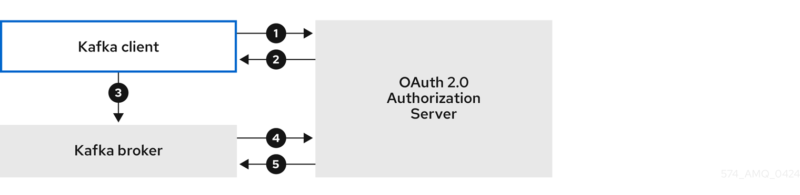
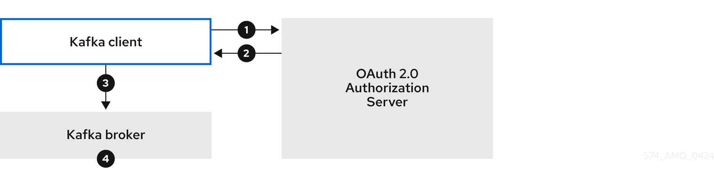
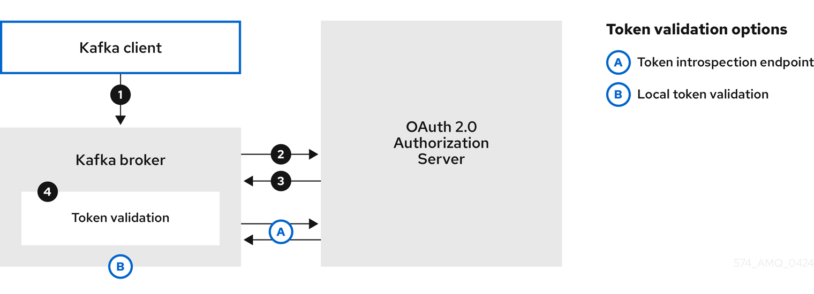
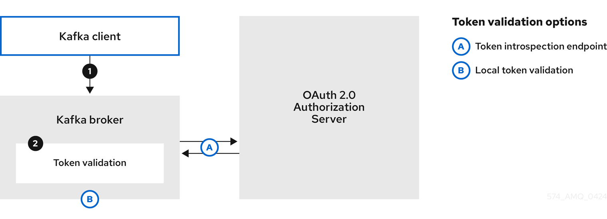

1. Deployment overview
Strimzi simplifies the process of running Apache Kafka within a Kubernetes cluster.
This guide provides instructions for deploying and managing Strimzi. Deployment options and steps are covered using the example installation files included with Strimzi. While the guide highlights important configuration considerations, it does not cover all available options. For a deeper understanding of the Kafka component configuration options, refer to the Strimzi Custom Resource API Reference.
In addition to deployment instructions, the guide offers pre- and post-deployment guidance. It covers setting up and securing client access to your Kafka cluster. Furthermore, it explores additional deployment options such as metrics integration, distributed tracing, and cluster management tools like Cruise Control and the Strimzi Drain Cleaner. You’ll also find recommendations on managing Strimzi and fine-tuning Kafka configuration for optimal performance.
Upgrade instructions are provided for both Strimzi and Kafka, to help keep your deployment up to date.
Strimzi is designed to be compatible with all types of Kubernetes clusters, irrespective of their distribution. Whether your deployment involves public or private clouds, or if you are setting up a local development environment, the instructions in this guide are applicable in all cases.
1.1. Strimzi custom resources
The deployment of Kafka components onto a Kubernetes cluster using Strimzi is highly configurable through the use of custom resources. These resources are created as instances of APIs introduced by Custom Resource Definitions (CRDs), which extend Kubernetes resources.
CRDs act as configuration instructions to describe the custom resources in a Kubernetes cluster, and are provided with Strimzi for each Kafka component used in a deployment, as well as users and topics. CRDs and custom resources are defined as YAML files. Example YAML files are provided with the Strimzi distribution.
CRDs also allow Strimzi resources to benefit from native Kubernetes features like CLI accessibility and configuration validation.
1.1.1. Strimzi custom resource example
CRDs require a one-time installation in a cluster to define the schemas used to instantiate and manage Strimzi-specific resources.
After a new custom resource type is added to your cluster by installing a CRD, you can create instances of the resource based on its specification.
Depending on the cluster setup, installation typically requires cluster admin privileges.
|
Note
|
Access to manage custom resources is limited to Strimzi administrators. For more information, see Designating Strimzi administrators. |
A CRD defines a new kind of resource, such as kind:Kafka, within a Kubernetes cluster.
The Kubernetes API server allows custom resources to be created based on the kind and understands from the CRD how to validate and store the custom resource when it is added to the Kubernetes cluster.
Each Strimzi-specific custom resource conforms to the schema defined by the CRD for the resource’s kind.
The custom resources for Strimzi components have common configuration properties, which are defined under spec.
To understand the relationship between a CRD and a custom resource, let’s look at a sample of the CRD for a Kafka topic.
apiVersion: kafka.strimzi.io/v1beta2
kind: CustomResourceDefinition
metadata: (1)
name: kafkatopics.kafka.strimzi.io
labels:
app: strimzi
spec: (2)
group: kafka.strimzi.io
versions:
v1beta2
scope: Namespaced
names:
# ...
singular: kafkatopic
plural: kafkatopics
shortNames:
- kt (3)
additionalPrinterColumns: (4)
# ...
subresources:
status: {} (5)
validation: (6)
openAPIV3Schema:
properties:
spec:
type: object
properties:
partitions:
type: integer
minimum: 1
replicas:
type: integer
minimum: 1
maximum: 32767
# ...-
The metadata for the topic CRD, its name and a label to identify the CRD.
-
The specification for this CRD, including the group (domain) name, the plural name and the supported schema version, which are used in the URL to access the API of the topic. The other names are used to identify instance resources in the CLI. For example,
kubectl get kafkatopic my-topicorkubectl get kafkatopics. -
The shortname can be used in CLI commands. For example,
kubectl get ktcan be used as an abbreviation instead ofkubectl get kafkatopic. -
The information presented when using a
getcommand on the custom resource. -
The current status of the CRD as described in the schema reference for the resource.
-
openAPIV3Schema validation provides validation for the creation of topic custom resources. For example, a topic requires at least one partition and one replica.
|
Note
|
You can identify the CRD YAML files supplied with the Strimzi installation files, because the file names contain an index number followed by Crd. |
Here is a corresponding example of a KafkaTopic custom resource.
apiVersion: kafka.strimzi.io/v1beta2
kind: KafkaTopic (1)
metadata:
name: my-topic
labels:
strimzi.io/cluster: my-cluster (2)
spec: (3)
partitions: 1
replicas: 1
config:
retention.ms: 7200000
segment.bytes: 1073741824
status:
conditions: (4)
lastTransitionTime: "2019-08-20T11:37:00.706Z"
status: "True"
type: Ready
observedGeneration: 1
/ ...-
The
kindandapiVersionidentify the CRD of which the custom resource is an instance. -
A label, applicable only to
KafkaTopicandKafkaUserresources, that defines the name of the Kafka cluster (which is same as the name of theKafkaresource) to which a topic or user belongs. -
The spec shows the number of partitions and replicas for the topic as well as the configuration parameters for the topic itself. In this example, the retention period for a message to remain in the topic and the segment file size for the log are specified.
-
Status conditions for the
KafkaTopicresource. Thetypecondition changed toReadyat thelastTransitionTime.
Custom resources can be applied to a cluster through the platform CLI. When the custom resource is created, it uses the same validation as the built-in resources of the Kubernetes API.
After a KafkaTopic custom resource is created, the Topic Operator is notified and corresponding Kafka topics are created in Strimzi.
1.1.2. Performing kubectl operations on custom resources
You can use kubectl commands to retrieve information and perform other operations on Strimzi custom resources.
Use kubectl commands, such as get, describe, edit, or delete, to perform operations on resource types.
For example, kubectl get kafkatopics retrieves a list of all Kafka topics and kubectl get kafkas retrieves all deployed Kafka clusters.
When referencing resource types, you can use both singular and plural names:
kubectl get kafkas gets the same results as kubectl get kafka.
You can also use the short name of the resource.
Learning short names can save you time when managing Strimzi.
The short name for Kafka is k, so you can also run kubectl get k to list all Kafka clusters.
kubectl get k
NAME DESIRED KAFKA REPLICAS DESIRED ZK REPLICAS
my-cluster 3 3| Strimzi resource | Long name | Short name |
|---|---|---|
Kafka |
kafka |
k |
Kafka Node Pool |
kafkanodepool |
knp |
Kafka Topic |
kafkatopic |
kt |
Kafka User |
kafkauser |
ku |
Kafka Connect |
kafkaconnect |
kc |
Kafka Connector |
kafkaconnector |
kctr |
Kafka MirrorMaker |
kafkamirrormaker |
kmm |
Kafka MirrorMaker 2 |
kafkamirrormaker2 |
kmm2 |
Kafka Bridge |
kafkabridge |
kb |
Kafka Rebalance |
kafkarebalance |
kr |
Resource categories
Categories of custom resources can also be used in kubectl commands.
All Strimzi custom resources belong to the category strimzi, so you can use strimzi to get all the Strimzi resources with one command.
For example, running kubectl get strimzi lists all Strimzi custom resources in a given namespace.
kubectl get strimzi
NAME DESIRED KAFKA REPLICAS DESIRED ZK REPLICAS
kafka.kafka.strimzi.io/my-cluster 3 3
NAME PARTITIONS REPLICATION FACTOR
kafkatopic.kafka.strimzi.io/kafka-apps 3 3
NAME AUTHENTICATION AUTHORIZATION
kafkauser.kafka.strimzi.io/my-user tls simpleThe kubectl get strimzi -o name command returns all resource types and resource names.
The -o name option fetches the output in the type/name format
kubectl get strimzi -o name
kafka.kafka.strimzi.io/my-cluster
kafkatopic.kafka.strimzi.io/kafka-apps
kafkauser.kafka.strimzi.io/my-userYou can combine this strimzi command with other commands.
For example, you can pass it into a kubectl delete command to delete all resources in a single command.
kubectl delete $(kubectl get strimzi -o name)
kafka.kafka.strimzi.io "my-cluster" deleted
kafkatopic.kafka.strimzi.io "kafka-apps" deleted
kafkauser.kafka.strimzi.io "my-user" deletedDeleting all resources in a single operation might be useful, for example, when you are testing new Strimzi features.
Querying the status of sub-resources
There are other values you can pass to the -o option.
For example, by using -o yaml you get the output in YAML format.
Using -o json will return it as JSON.
You can see all the options in kubectl get --help.
One of the most useful options is the JSONPath support, which allows you to pass JSONPath expressions to query the Kubernetes API. A JSONPath expression can extract or navigate specific parts of any resource.
For example, you can use the JSONPath expression {.status.listeners[?(@.name=="tls")].bootstrapServers}
to get the bootstrap address from the status of the Kafka custom resource and use it in your Kafka clients.
Here, the command retrieves the bootstrapServers value of the listener named tls:
kubectl get kafka my-cluster -o=jsonpath='{.status.listeners[?(@.name=="tls")].bootstrapServers}{"\n"}'
my-cluster-kafka-bootstrap.myproject.svc:9093By changing the name condition you can also get the address of the other Kafka listeners.
You can use jsonpath to extract any other property or group of properties from any custom resource.
1.1.3. Strimzi custom resource status information
Status properties provide status information for certain custom resources.
The following table lists the custom resources that provide status information (when deployed) and the schemas that define the status properties.
For more information on the schemas, see the Strimzi Custom Resource API Reference.
| Strimzi resource | Schema reference | Publishes status information on… |
|---|---|---|
|
|
The Kafka cluster, its listeners, node pools, and any auto-rebalances on scaling |
|
|
The nodes in the node pool, their roles, and the associated Kafka cluster |
|
|
Kafka topics in the Kafka cluster |
|
|
Kafka users in the Kafka cluster |
|
|
The Kafka Connect cluster and connector plugins |
|
|
KafkaConnector resources |
|
|
The Kafka MirrorMaker 2 cluster and internal connectors |
|
|
The Kafka MirrorMaker cluster |
|
|
The Kafka Bridge |
|
|
The status and results of a rebalance |
|
|
The number of pods: being managed, using the current version, and in a ready state |
The status property of a resource provides information on the state of the resource.
The status.conditions and status.observedGeneration properties are common to all resources.
status.conditions-
Status conditions describe the current state of a resource. Status condition properties are useful for tracking progress related to the resource achieving its desired state, as defined by the configuration specified in its
spec. Status condition properties provide the time and reason the state of the resource changed, and details of events preventing or delaying the operator from realizing the desired state. status.observedGeneration-
Last observed generation denotes the latest reconciliation of the resource by the Cluster Operator. If the value of
observedGenerationis different from the value ofmetadata.generation(the current version of the deployment), the operator has not yet processed the latest update to the resource. If these values are the same, the status information reflects the most recent changes to the resource.
The status properties also provide resource-specific information.
For example, KafkaStatus provides information on listener addresses, and the ID of the Kafka cluster.
KafkaStatus also provides information on the Kafka and Strimzi versions being used.
You can check the values of operatorLastSuccessfulVersion and kafkaVersion to determine whether an upgrade of Strimzi or Kafka has completed
Strimzi creates and maintains the status of custom resources, periodically evaluating the current state of the custom resource and updating its status accordingly.
When performing an update on a custom resource using kubectl edit, for example, its status is not editable. Moreover, changing the status would not affect the configuration of the Kafka cluster.
Here we see the status properties for a Kafka custom resource.
apiVersion: kafka.strimzi.io/v1beta2
kind: Kafka
metadata:
spec:
# ...
status:
clusterId: XP9FP2P-RByvEy0W4cOEUA # (1)
conditions: # (2)
- lastTransitionTime: '2023-01-20T17:56:29.396588Z'
status: 'True'
type: Ready # (3)
kafkaMetadataState: KRaft # (4)
kafkaVersion: 3.9.0 # (5)
kafkaNodePools: # (6)
- name: broker
- name: controller
listeners: # (7)
- addresses:
- host: my-cluster-kafka-bootstrap.prm-project.svc
port: 9092
bootstrapServers: 'my-cluster-kafka-bootstrap.prm-project.svc:9092'
name: plain
- addresses:
- host: my-cluster-kafka-bootstrap.prm-project.svc
port: 9093
bootstrapServers: 'my-cluster-kafka-bootstrap.prm-project.svc:9093'
certificates:
- |
-----BEGIN CERTIFICATE-----
-----END CERTIFICATE-----
name: tls
- addresses:
- host: >-
2054284155.us-east-2.elb.amazonaws.com
port: 9095
bootstrapServers: >-
2054284155.us-east-2.elb.amazonaws.com:9095
certificates:
- |
-----BEGIN CERTIFICATE-----
-----END CERTIFICATE-----
name: external3
- addresses:
- host: ip-10-0-172-202.us-east-2.compute.internal
port: 31644
bootstrapServers: 'ip-10-0-172-202.us-east-2.compute.internal:31644'
certificates:
- |
-----BEGIN CERTIFICATE-----
-----END CERTIFICATE-----
name: external4
observedGeneration: 3 # (8)
operatorLastSuccessfulVersion: 0.45.0 # (9)-
The Kafka cluster ID.
-
Status
conditionsdescribe the current state of the Kafka cluster. -
The
Readycondition indicates that the Cluster Operator considers the Kafka cluster able to handle traffic. -
Kafka metadata state that shows the mechanism used (KRaft or ZooKeeper) to manage Kafka metadata and coordinate operations.
-
The version of Kafka being used by the Kafka cluster.
-
The node pools belonging to the Kafka cluster.
-
The
listenersdescribe Kafka bootstrap addresses by type. -
The
observedGenerationvalue indicates the last reconciliation of theKafkacustom resource by the Cluster Operator. -
The version of the operator that successfully completed the last reconciliation.
|
Note
|
The Kafka bootstrap addresses listed in the status do not signify that those endpoints or the Kafka cluster is in a Ready state.
|
1.1.4. Finding the status of a custom resource
Use kubectl with the status subresource of a custom resource to retrieve information about the resource.
-
A Kubernetes cluster.
-
The Cluster Operator is running.
-
Specify the custom resource and use the
-o jsonpathoption to apply a standard JSONPath expression to select thestatusproperty:kubectl get kafka <kafka_resource_name> -o jsonpath='{.status}' | jqThis expression returns all the status information for the specified custom resource. You can use dot notation, such as
status.listenersorstatus.observedGeneration, to fine-tune the status information you wish to see.Using the
jqcommand line JSON parser tool makes it easier to read the output.
-
For more information about using JSONPath, see JSONPath support.
1.2. Strimzi operators
Strimzi operators are purpose-built with specialist operational knowledge to effectively manage Kafka on Kubernetes. Each operator performs a distinct function.
- Cluster Operator
-
The Cluster Operator handles the deployment and management of Apache Kafka clusters on Kubernetes. It automates the setup of Kafka brokers, and other Kafka components and resources.
- Topic Operator
-
The Topic Operator manages the creation, configuration, and deletion of topics within Kafka clusters.
- User Operator
-
The User Operator manages Kafka users that require access to Kafka brokers.
When you deploy Strimzi, you first deploy the Cluster Operator. The Cluster Operator is then ready to handle the deployment of Kafka. You can also deploy the Topic Operator and User Operator using the Cluster Operator (recommended) or as standalone operators. You would use a standalone operator with a Kafka cluster that is not managed by the Cluster Operator.
The Topic Operator and User Operator are part of the Entity Operator. The Cluster Operator can deploy one or both operators based on the Entity Operator configuration.
|
Important
|
To deploy the standalone operators, you need to set environment variables to connect to a Kafka cluster. These environment variables do not need to be set if you are deploying the operators using the Cluster Operator as they will be set by the Cluster Operator. |
1.2.1. Watching Strimzi resources in Kubernetes namespaces
Operators watch and manage Strimzi resources in Kubernetes namespaces. The Cluster Operator can watch a single namespace, multiple namespaces, or all namespaces in a Kubernetes cluster. The Topic Operator and User Operator can watch a single namespace.
-
The Cluster Operator watches for
Kafkaresources -
The Topic Operator watches for
KafkaTopicresources -
The User Operator watches for
KafkaUserresources
The Topic Operator and the User Operator can only watch a single Kafka cluster in a namespace. And they can only be connected to a single Kafka cluster.
If multiple Topic Operators watch the same namespace, name collisions and topic deletion can occur.
This is because each Kafka cluster uses Kafka topics that have the same name (such as __consumer_offsets).
Make sure that only one Topic Operator watches a given namespace.
When using multiple User Operators with a single namespace, a user with a given username can exist in more than one Kafka cluster.
If you deploy the Topic Operator and User Operator using the Cluster Operator, they watch the Kafka cluster deployed by the Cluster Operator by default.
You can also specify a namespace using watchedNamespace in the operator configuration.
For a standalone deployment of each operator, you specify a namespace and connection to the Kafka cluster to watch in the configuration.
1.2.2. Managing RBAC resources
The Cluster Operator creates and manages role-based access control (RBAC) resources for Strimzi components that need access to Kubernetes resources.
For the Cluster Operator to function, it needs permission within the Kubernetes cluster to interact with Kafka resources, such as Kafka and KafkaConnect, as well as managed resources like ConfigMap, Pod, Deployment, and Service.
Permission is specified through the following Kubernetes RBAC resources:
-
ServiceAccount -
RoleandClusterRole -
RoleBindingandClusterRoleBinding
Delegating privileges to Strimzi components
The Cluster Operator runs under a service account called strimzi-cluster-operator, which is assigned cluster roles that give it permission to create the necessary RBAC resources for Strimzi components.
Role bindings associate the cluster roles with the service account.
Kubernetes enforces privilege escalation prevention, meaning the Cluster Operator cannot grant privileges it does not possess, nor can it grant such privileges in a namespace it cannot access. Consequently, the Cluster Operator must have the necessary privileges for all the components it orchestrates.
The Cluster Operator must be able to do the following:
-
Enable the Topic Operator to manage
KafkaTopicresources by creatingRoleandRoleBindingresources in the relevant namespace. -
Enable the User Operator to manage
KafkaUserresources by creatingRoleandRoleBindingresources in the relevant namespace. -
Allow Strimzi to discover the failure domain of a
Nodeby creating aClusterRoleBinding.
When using rack-aware partition assignment, broker pods need to access information about the Node they are running on, such as the Availability Zone in Amazon AWS.
Similarly, when using NodePort type listeners, broker pods need to advertise the address of the Node they are running on.
Since a Node is a cluster-scoped resource, this access must be granted through a ClusterRoleBinding, not a namespace-scoped RoleBinding.
The following sections describe the RBAC resources required by the Cluster Operator.
ClusterRole resources
The Cluster Operator uses ClusterRole resources to provide the necessary access to resources.
Depending on the Kubernetes cluster setup, a cluster administrator might be needed to create the cluster roles.
|
Note
|
Cluster administrator rights are only needed for the creation of ClusterRole resources.
The Cluster Operator will not run under a cluster admin account.
|
The RBAC resources follow the principle of least privilege and contain only those privileges needed by the Cluster Operator to operate the cluster of the Kafka component.
All cluster roles are required by the Cluster Operator in order to delegate privileges.
| Name | Description |
|---|---|
|
Access rights for namespace-scoped resources used by the Cluster Operator to deploy and manage the operands. |
|
Access rights for cluster-scoped resources used by the Cluster Operator to deploy and manage the operands. |
|
Access rights used by the Cluster Operator for leader election. |
|
Access rights used by the Cluster Operator to watch and manage the Strimzi custom resources. |
|
Access rights to allow Kafka brokers to get the topology labels from Kubernetes worker nodes when rack-awareness is used. |
|
Access rights used by the Topic and User Operators to manage Kafka users and topics. |
|
Access rights to allow Kafka Connect, MirrorMaker (1 and 2), and Kafka Bridge to get the topology labels from Kubernetes worker nodes when rack-awareness is used. |
ClusterRoleBinding resources
The Cluster Operator uses ClusterRoleBinding and RoleBinding resources to associate its ClusterRole with its ServiceAccount.
Cluster role bindings are required by cluster roles containing cluster-scoped resources.
| Name | Description |
|---|---|
|
Grants the Cluster Operator the rights from the |
|
Grants the Cluster Operator the rights from the |
|
Grants the Cluster Operator the rights from the |
| Name | Description |
|---|---|
|
Grants the Cluster Operator the rights from the |
|
Grants the Cluster Operator the rights from the |
|
Grants the Cluster Operator the rights from the |
|
Grants the Cluster Operator the rights from the |
ServiceAccount resources
The Cluster Operator runs using the strimzi-cluster-operator ServiceAccount.
This service account grants it the privileges it requires to manage the operands.
The Cluster Operator creates additional ClusterRoleBinding and RoleBinding resources to delegate some of these RBAC rights to the operands.
Each of the operands uses its own service account created by the Cluster Operator. This allows the Cluster Operator to follow the principle of least privilege and give the operands only the access rights that are really need.
| Name | Used by |
|---|---|
|
ZooKeeper pods |
|
Kafka broker pods |
|
Entity Operator |
|
Cruise Control pods |
|
Kafka Exporter pods |
|
Kafka Connect pods |
|
MirrorMaker pods |
|
MirrorMaker 2 pods |
|
Kafka Bridge pods |
1.2.3. Managing pod resources
The StrimziPodSet custom resource is used by Strimzi to create and manage Kafka, Kafka Connect, and MirrorMaker 2 pods.
If you are using ZooKeeper, ZooKeeper pods are also created and managed using StrimziPodSet resources.
You must not create, update, or delete StrimziPodSet resources.
The StrimziPodSet custom resource is used internally and resources are managed solely by the Cluster Operator.
As a consequence, the Cluster Operator must be running properly to avoid the possibility of pods not starting and Kafka clusters not being available.
|
Note
|
Kubernetes Deployment resources are used for creating and managing the pods of other components: Kafka Bridge, Kafka Exporter, Cruise Control, (deprecated) MirrorMaker 1, User Operator and Topic Operator.
|
1.3. Using the Kafka Bridge to connect with a Kafka cluster
You can use the Kafka Bridge API to create and manage consumers and send and receive records over HTTP rather than the native Kafka protocol.
When you set up the Kafka Bridge you configure HTTP access to the Kafka cluster. You can then use the Kafka Bridge to produce and consume messages from the cluster, as well as performing other operations through its REST interface.
-
For information on installing and using the Kafka Bridge, see Using the Kafka Bridge.
1.4. Seamless FIPS support
Federal Information Processing Standards (FIPS) are standards for computer security and interoperability. When running Strimzi on a FIPS-enabled Kubernetes cluster, the OpenJDK used in Strimzi container images automatically switches to FIPS mode. From version 0.33, Strimzi can run on FIPS-enabled Kubernetes clusters without any changes or special configuration. It uses only the FIPS-compliant security libraries from the OpenJDK.
|
Important
|
If you are using FIPS-enabled Kubernetes clusters, you may experience higher memory consumption compared to regular Kubernetes clusters. To avoid any issues, we suggest increasing the memory request to at least 512Mi. |
1.4.1. NIST validation
Strimzi is designed to use FIPS-validated cryptographic libraries for secure communication in a FIPS-enabled Kubernetes cluster. However, it’s important to note that while Strimzi can leverage these libraries in a FIPS environment, the underlying Universal Base Images (UBI) used in Strimzi deployments may not inherently include NIST-validated binaries. This means that while Strimzi can leverage cryptographic libraries for FIPS, the specific binaries within the Strimzi container images might not have undergone NIST validation.
For more information about the NIST validation program and validated modules, see Cryptographic Module Validation Program on the NIST website.
1.4.2. Minimum password length
When running in the FIPS mode, SCRAM-SHA-512 passwords need to be at least 32 characters long. From Strimzi 0.33, the default password length in Strimzi User Operator is set to 32 characters as well. If you have a Kafka cluster with custom configuration that uses a password length that is less than 32 characters, you need to update your configuration. If you have any users with passwords shorter than 32 characters, you need to regenerate a password with the required length. You can do that, for example, by deleting the user secret and waiting for the User Operator to create a new password with the appropriate length.
1.5. Document conventions
User-replaced values, also known as replaceables, are shown in with angle brackets (< >).
Underscores ( _ ) are used for multi-word values.
If the value refers to code or commands, monospace is also used.
For example, the following code shows that <my_namespace> must be replaced by the correct namespace name:
sed -i 's/namespace: .*/namespace: <my_namespace>/' install/cluster-operator/*RoleBinding*.yaml1.6. Additional resources
2. Using Kafka in KRaft mode
KRaft (Kafka Raft metadata) mode replaces Kafka’s dependency on ZooKeeper for cluster management. KRaft mode simplifies the deployment and management of Kafka clusters by bringing metadata management and coordination of clusters into Kafka.
Kafka in KRaft mode is designed to offer enhanced reliability, scalability, and throughput. Metadata operations become more efficient as they are directly integrated. And by removing the need to maintain a ZooKeeper cluster, there’s also a reduction in the operational and security overhead.
To deploy a Kafka cluster in KRaft mode, you must use Kafka and KafkaNodePool custom resources.
The Kafka resource using KRaft mode must also have the annotations strimzi.io/kraft: enabled and strimzi.io/node-pools: enabled.
For more details and examples, see Deploying a Kafka cluster in KRaft mode.
Through node pool configuration using KafkaNodePool resources, nodes are assigned the role of broker, controller, or both:
-
Controller nodes operate in the control plane to manage cluster metadata and the state of the cluster using a Raft-based consensus protocol.
-
Broker nodes operate in the data plane to manage the streaming of messages, receiving and storing data in topic partitions.
-
Dual-role nodes fulfill the responsibilities of controllers and brokers.
Controllers use a metadata log, stored as a single-partition topic (__cluster_metadata) on every node, which records the state of the cluster.
When requests are made to change the cluster configuration, an active (lead) controller manages updates to the metadata log, and follower controllers replicate these updates.
The metadata log stores information on brokers, replicas, topics, and partitions, including the state of in-sync replicas and partition leadership.
Kafka uses this metadata to coordinate changes and manage the cluster effectively.
Broker nodes act as observers, storing the metadata log passively to stay up-to-date with the cluster’s state. Each node fetches updates to the log independently. If you are using JBOD storage, you can change the volume that stores the metadata log.
|
Note
|
The KRaft metadata version used in the Kafka cluster must be supported by the Kafka version in use.
Both versions are managed through the Kafka resource configuration.
For more information, see Configuring Kafka in KRaft mode.
|
In the following example, a Kafka cluster comprises a quorum of controller and broker nodes for fault tolerance and high availability.
In a typical production environment, use dedicated broker and controller nodes. However, you might want to use nodes in a dual-role configuration for development or testing.
You can use a combination of nodes that combine roles with nodes that perform a single role. In the following example, three nodes perform a dual role and two nodes act only as brokers.
2.1. KRaft limitations
KRaft limitations primarily relate to controller scaling, which impacts cluster operations.
2.1.1. Controller scaling
KRaft mode supports two types of controller quorums:
-
Static controller quorums
In this mode, the number of controllers is fixed, and scaling requires downtime. -
Dynamic controller quorums
This mode enables dynamic scaling of controllers without downtime. New controllers join as observers, replicate the metadata log, and eventually become eligible to join the quorum. If a controller being removed is the active controller, it will step down from the quorum only after the new quorum is confirmed.
Scaling is useful not only for adding or removing controllers, but supports the following operations:
-
Renaming a node pool, which involves adding a new node pool with the desired name and deleting the old one.
-
Changing non-JBOD storage, which requires creating a new node pool with the updated storage configuration and removing the old one.
Dynamic controller quorums provide the flexibility to make these operations significantly easier to perform.
2.1.2. Limitations with static controller quorums
Migration between static and dynamic controller quorums is not currently supported by Apache Kafka, though it is expected to be introduced in a future release. All pre-existing KRaft-based Apache Kafka clusters that use static controller quorums must continue using them. To ensure compatibility with existing KRaft-based clusters, Strimzi continues to use static controller quorums as well.
This limitation means dynamic scaling of controller quorums cannot be used to support the following:
-
Adding or removing node pools with controller roles
-
Adding the controller role to an existing node pool
-
Removing the controller role from an existing node pool
-
Scaling a node pool with the controller role
-
Renaming a node pool with the controller role
Static controller quorums also limit operations that require scaling. For example, changing the storage type for a node pool with a controller role is not possible because it involves scaling the controller quorum. For non-JBOD storage, creating a new node pool with the desired storage type, adding it to the cluster, and removing the old one would require scaling operations, which are not supported. In some cases, workarounds are possible. For instance, when modifying node pool roles to combine controller and broker functions, you can add broker roles to controller nodes instead of adding controller roles to broker nodes to avoid controller scaling. However, this approach would require reassigning more data, which may temporarily affect cluster performance.
Once migration is possible, Strimzi plans to assess introducing support for dynamic quorums.
2.2. Migrating to KRaft mode
If you are using ZooKeeper for metadata management in your Kafka cluster, you can migrate to using Kafka in KRaft mode.
During the migration, you install a quorum of controller nodes as a node pool, which replaces ZooKeeper for management of your cluster.
You enable KRaft migration in the cluster configuration by applying the strimzi.io/kraft="migration" annotation.
After the migration is complete, you switch the brokers to using KRaft and the controllers out of migration mode using the strimzi.io/kraft="enabled" annotation.
Before starting the migration, verify that your environment can support Kafka in KRaft mode, as there are a number of limitations. Note also, the following:
-
Migration is only supported on dedicated controller nodes, not on nodes with dual roles as brokers and controllers.
-
Throughout the migration process, ZooKeeper and controller nodes operate in parallel for a period, requiring sufficient compute resources in the cluster.
-
Once KRaft mode is enabled, rollback to ZooKeeper is not possible. Consider this carefully before proceeding with the migration.
-
You must be using Strimzi 0.40 or newer with Kafka 3.7.0 or newer. If you are using an earlier version of Strimzi or Apache Kafka, upgrade before migrating to KRaft mode.
-
The Cluster Operator that manages the Kafka cluster is running.
-
The Kafka cluster deployment uses Kafka node pools.
If your ZooKeeper-based cluster is already using node pools, it is ready to migrate. If not, you can migrate the cluster to use node pools. To migrate when the cluster is not using node pools, brokers must be contained in a
KafkaNodePoolresource configuration that is assigned abrokerrole and has the namekafka. Support for node pools is enabled in theKafkaresource configuration using thestrimzi.io/node-pools: enabledannotation.
|
Important
|
Using a single controller with ephemeral storage for migrating to KRaft will not work. During the migration, controller restart will cause loss of metadata synced from ZooKeeper (such as topics and ACLs). In general, migrating an ephemeral-based ZooKeeper cluster to KRaft is not recommended. |
In this procedure, the Kafka cluster name is my-cluster, which is located in the my-project namespace.
The name of the controller node pool created is controller.
The node pool for the brokers is called kafka.
-
For the Kafka cluster, create a node pool with a
controllerrole.The node pool adds a quorum of controller nodes to the cluster.
Example configuration for a controller node poolapiVersion: kafka.strimzi.io/v1beta2 kind: KafkaNodePool metadata: name: controller labels: strimzi.io/cluster: my-cluster spec: replicas: 3 roles: - controller storage: type: jbod volumes: - id: 0 type: persistent-claim size: 20Gi deleteClaim: false resources: requests: memory: 64Gi cpu: "8" limits: memory: 64Gi cpu: "12"NoteFor the migration, you cannot use a node pool of nodes that share the broker and controller roles. -
Apply the new
KafkaNodePoolresource to create the controllers.Errors related to using controllers in a ZooKeeper-based environment are expected in the Cluster Operator logs. The errors can block reconciliation. To prevent this, perform the next step immediately.
-
Enable KRaft migration in the
Kafkaresource by setting thestrimzi.io/kraftannotation tomigration:kubectl annotate kafka my-cluster strimzi.io/kraft="migration" --overwriteEnabling KRaft migrationapiVersion: kafka.strimzi.io/v1beta2 kind: Kafka metadata: name: my-cluster namespace: my-project annotations: strimzi.io/kraft: migration # ...Applying the annotation to the
Kafkaresource configuration starts the migration. -
Check the controllers have started and the brokers have rolled:
kubectl get pods -n my-projectOutput shows nodes in broker and controller node poolsNAME READY STATUS RESTARTS my-cluster-kafka-0 1/1 Running 0 my-cluster-kafka-1 1/1 Running 0 my-cluster-kafka-2 1/1 Running 0 my-cluster-controller-3 1/1 Running 0 my-cluster-controller-4 1/1 Running 0 my-cluster-controller-5 1/1 Running 0 # ... -
Check the status of the migration:
kubectl get kafka my-cluster -n my-project -wUpdates to the metadata stateNAME ... METADATA STATE my-cluster ... Zookeeper my-cluster ... KRaftMigration my-cluster ... KRaftDualWriting my-cluster ... KRaftPostMigrationMETADATA STATEshows the mechanism used to manage Kafka metadata and coordinate operations. At the start of the migration this isZooKeeper.-
ZooKeeperis the initial state when metadata is only stored in ZooKeeper. -
KRaftMigrationis the state when the migration is in progress. The flag to enable ZooKeeper to KRaft migration (zookeeper.metadata.migration.enable) is added to the brokers and they are rolled to register with the controllers. The migration can take some time at this point depending on the number of topics and partitions in the cluster. -
KRaftDualWritingis the state when the Kafka cluster is working as a KRaft cluster, but metadata are being stored in both Kafka and ZooKeeper. Brokers are rolled a second time to remove the flag to enable migration. -
KRaftPostMigrationis the state when KRaft mode is enabled for brokers. Metadata are still being stored in both Kafka and ZooKeeper.
The migration status is also represented in the
status.kafkaMetadataStateproperty of theKafkaresource.WarningYou can roll back to using ZooKeeper from this point. The next step is to enable KRaft. Rollback cannot be performed after enabling KRaft. -
-
When the metadata state has reached
KRaftPostMigration, enable KRaft in theKafkaresource configuration by setting thestrimzi.io/kraftannotation toenabled:kubectl annotate kafka my-cluster strimzi.io/kraft="enabled" --overwriteEnabling KRaft migrationapiVersion: kafka.strimzi.io/v1beta2 kind: Kafka metadata: name: my-cluster namespace: my-project annotations: strimzi.io/kraft: enabled # ... -
Check the status of the move to full KRaft mode:
kubectl get kafka my-cluster -n my-project -wUpdates to the metadata stateNAME ... METADATA STATE my-cluster ... Zookeeper my-cluster ... KRaftMigration my-cluster ... KRaftDualWriting my-cluster ... KRaftPostMigration my-cluster ... PreKRaft my-cluster ... KRaft-
PreKRaftis the state when all ZooKeeper-related resources have been automatically deleted. -
KRaftis the final state (after the controllers have rolled) when the KRaft migration is finalized.
NoteDepending on how deleteClaimis configured for ZooKeeper, its Persistent Volume Claims (PVCs) and persistent volumes (PVs) may not be deleted.deleteClaimspecifies whether the PVC is deleted when the cluster is uninstalled. The default isfalse. -
-
Remove any ZooKeeper-related configuration from the
Kafkaresource.Remove the following section:
-
spec.zookeeper
If present, you can also remove the following options from the
.spec.kafka.configsection:-
log.message.format.version -
inter.broker.protocol.version
Removing
log.message.format.versionandinter.broker.protocol.versioncauses the brokers and controllers to roll again. Removing ZooKeeper properties removes any warning messages related to ZooKeeper configuration being present in a KRaft-operated cluster. -
2.2.1. Performing a rollback on the migration
Before the migration is finalized by enabling KRaft in the Kafka resource, and the state has moved to the KRaft state, you can perform a rollback operation as follows:
-
Apply the
strimzi.io/kraft="rollback"annotation to theKafkaresource to roll back the brokers.kubectl annotate kafka my-cluster strimzi.io/kraft="rollback" --overwriteRolling back KRaft migrationapiVersion: kafka.strimzi.io/v1beta2 kind: Kafka metadata: name: my-cluster namespace: my-project annotations: strimzi.io/kraft: rollback # ...The migration process must be in the
KRaftPostMigrationstate to do this. The brokers are rolled back so that they can be connected to ZooKeeper again and the state returns toKRaftDualWriting. -
Delete the controllers node pool:
kubectl delete KafkaNodePool controller -n my-project -
Apply the
strimzi.io/kraft="disabled"annotation to theKafkaresource to return the metadata state toZooKeeper.kubectl annotate kafka my-cluster strimzi.io/kraft="disabled" --overwriteSwitching back to using ZooKeeperapiVersion: kafka.strimzi.io/v1beta2 kind: Kafka metadata: name: my-cluster namespace: my-project annotations: strimzi.io/kraft: disabled # ...
3. Deployment methods
You can deploy Strimzi on Kubernetes 1.25 and later using one of the following methods:
| Installation method | Description |
|---|---|
Download the deployment files to manually deploy Strimzi components. For the greatest flexibility, choose this method. |
|
Deploy the Strimzi Cluster operator through the OperatorHub.io, then deploy Strimzi components using custom resources. This method provides a standard configuration and allows you to take advantage of automatic updates. |
|
Use a Helm chart to deploy the Cluster Operator, then deploy Strimzi components using custom resources. Helm charts provide a convenient way to manage the installation of applications. |
4. Deployment path
You can configure a deployment where Strimzi manages a single Kafka cluster in the same namespace, suitable for development or testing. Alternatively, Strimzi can manage multiple Kafka clusters across different namespaces in a production environment.
The basic deployment path includes the following steps:
-
Create a Kubernetes namespace for the Cluster Operator.
-
Deploy the Cluster Operator based on your chosen deployment method.
-
Deploy the Kafka cluster, including the Topic Operator and User Operator if desired.
-
Optionally, deploy additional components:
-
The Topic Operator and User Operator as standalone components, if not deployed with the Kafka cluster
-
Kafka Connect
-
Kafka MirrorMaker
-
Kafka Bridge
-
Metrics monitoring components
-
The Cluster Operator creates Kubernetes resources such as Deployment, Service, and Pod for each component.
The resource names are appended with the name of the deployed component.
For example, a Kafka cluster named my-kafka-cluster will have a service named my-kafka-cluster-kafka.
5. Downloading deployment files
To deploy Strimzi components using YAML files, download and extract the latest release archive (strimzi-0.45.0.*) from the GitHub releases page.
The release archive contains sample YAML files for deploying Strimzi components to Kubernetes using kubectl.
Begin by deploying the Cluster Operator from the install/cluster-operator directory to watch a single namespace, multiple namespaces, or all namespaces.
In the install folder, you can also deploy other Strimzi components, including:
-
Strimzi administrator roles (
strimzi-admin) -
Standalone Topic Operator (
topic-operator) -
Standalone User Operator (
user-operator) -
Strimzi Drain Cleaner (
drain-cleaner)
The examples folder provides examples of Strimzi custom resources to help you develop your own Kafka configurations.
|
Note
|
Strimzi container images are available through the Container Registry, but we recommend using the provided YAML files for deployment. |
6. Preparing for your deployment
Prepare for a deployment of Strimzi by completing any necessary pre-deployment tasks. Take the necessary preparatory steps according to your specific requirements, such as the following:
|
Note
|
To run the commands in this guide, your cluster user must have the rights to manage role-based access control (RBAC) and CRDs. |
6.1. Deployment prerequisites
To deploy Strimzi, you will need the following:
-
A Kubernetes 1.25 and later cluster.
-
The
kubectlcommand-line tool is installed and configured to connect to the running cluster.
For more information on the tools available for running Kubernetes, see Install Tools in the Kubernetes documentation.
|
Note
|
Strimzi supports some features that are specific to OpenShift, where such integration benefits OpenShift users and there is no equivalent implementation using standard Kubernetes. |
oc and kubectl commands
The oc command functions as an alternative to kubectl.
In almost all cases the example kubectl commands used in this guide can be done using oc simply by replacing the command name (options and arguments remain the same).
In other words, instead of using:
kubectl apply -f <your_file>when using OpenShift you can use:
oc apply -f <your_file>|
Note
|
As an exception to this general rule, oc uses oc adm subcommands for cluster management functionality,
whereas kubectl does not make this distinction.
For example, the oc equivalent of kubectl taint is oc adm taint.
|
6.2. Operator deployment best practices
Potential issues can arise from installing more than one Strimzi operator in the same Kubernetes cluster, especially when using different versions. Each Strimzi operator manages a set of resources in a Kubernetes cluster. When you install multiple Strimzi operators, they may attempt to manage the same resources concurrently. This can lead to conflicts and unpredictable behavior within your cluster. Conflicts can still occur even if you deploy Strimzi operators in different namespaces within the same Kubernetes cluster. Although namespaces provide some degree of resource isolation, certain resources managed by the Strimzi operator, such as Custom Resource Definitions (CRDs) and roles, have a cluster-wide scope.
Additionally, installing multiple operators with different versions can result in compatibility issues between the operators and the Kafka clusters they manage. Different versions of Strimzi operators may introduce changes, bug fixes, or improvements that are not backward-compatible.
To avoid the issues associated with installing multiple Strimzi operators in a Kubernetes cluster, the following guidelines are recommended:
-
Install the Strimzi operator in a separate namespace from the Kafka cluster and other Kafka components it manages, to ensure clear separation of resources and configurations.
-
Use a single Strimzi operator to manage all your Kafka instances within a Kubernetes cluster.
-
Update the Strimzi operator and the supported Kafka version as often as possible to reflect the latest features and enhancements.
By following these best practices and ensuring consistent updates for a single Strimzi operator, you can enhance the stability of managing Kafka instances in a Kubernetes cluster. This approach also enables you to make the most of Strimzi’s latest features and capabilities.
6.3. Pushing container images to your own registry
Container images for Strimzi are available in the Container Registry. The installation YAML files provided by Strimzi will pull the images directly from the Container Registry.
If you do not have access to the Container Registry or want to use your own container repository:
-
Pull all container images listed here
-
Push them into your own registry
-
Update the image names in the YAML files used in deployment
|
Note
|
Each Kafka version supported for the release has a separate image. |
| Container image | Namespace/Repository | Description |
|---|---|---|
Kafka |
|
Strimzi image for running Kafka, including:
|
Operator |
|
Strimzi image for running the operators:
|
Kafka Bridge |
|
Strimzi image for running the Kafka Bridge |
Strimzi Drain Cleaner |
|
Strimzi image for running the Strimzi Drain Cleaner |
6.4. Designating Strimzi administrators
Strimzi provides custom resources for configuration of your deployment. By default, permission to view, create, edit, and delete these resources is limited to Kubernetes cluster administrators. Strimzi provides two cluster roles that you can use to assign these rights to other users:
-
strimzi-viewallows users to view and list Strimzi resources. -
strimzi-adminallows users to also create, edit or delete Strimzi resources.
When you install these roles, they will automatically aggregate (add) these rights to the default Kubernetes cluster roles.
strimzi-view aggregates to the view role, and strimzi-admin aggregates to the edit and admin roles.
Because of the aggregation, you might not need to assign these roles to users who already have similar rights.
The following procedure shows how to assign a strimzi-admin role that allows non-cluster administrators to manage Strimzi resources.
A system administrator can designate Strimzi administrators after the Cluster Operator is deployed.
-
The Strimzi admin deployment files, which are included in the Strimzi deployment files.
-
The Strimzi Custom Resource Definitions (CRDs) and role-based access control (RBAC) resources to manage the CRDs have been deployed with the Cluster Operator.
-
Create the
strimzi-viewandstrimzi-admincluster roles in Kubernetes.kubectl create -f install/strimzi-admin -
If needed, assign the roles that provide access rights to users that require them.
kubectl create clusterrolebinding strimzi-admin --clusterrole=strimzi-admin --user=user1 --user=user2
7. Deploying Strimzi using installation files
Download and use the Strimzi deployment files to deploy Strimzi components to a Kubernetes cluster.
You can deploy Strimzi 0.45.0 on Kubernetes 1.25 and later.
The steps to deploy Strimzi using the installation files are as follows:
-
Use the Cluster Operator to deploy the following:
-
Optionally, deploy the following Kafka components according to your requirements:
|
Note
|
To run the commands in this guide, a Kubernetes user must have the rights to manage role-based access control (RBAC) and CRDs. |
7.1. Deploying the Cluster Operator
The first step for any deployment of Strimzi is to install the Cluster Operator, which is responsible for deploying and managing Kafka clusters within a Kubernetes cluster.
A single command applies all the installation files in the install/cluster-operator folder: kubectl apply -f ./install/cluster-operator.
The command sets up everything you need to be able to create and manage a Kafka deployment, including the following resources:
-
Cluster Operator (
Deployment,ConfigMap) -
Strimzi CRDs (
CustomResourceDefinition) -
RBAC resources (
ClusterRole,ClusterRoleBinding,RoleBinding) -
Service account (
ServiceAccount)
Cluster-scoped resources like CustomResourceDefinition, ClusterRole, and ClusterRoleBinding require administrator privileges for installation.
Prior to installation, it’s advisable to review the ClusterRole specifications to ensure they do not grant unnecessary privileges.
After installation, the Cluster Operator runs as a regular Deployment to watch for updates of Kafka resources.
Any standard (non-admin) Kubernetes user with privileges to access the Deployment can configure it.
A cluster administrator can also grant standard users the privileges necessary to manage Strimzi custom resources.
By default, a single replica of the Cluster Operator is deployed. You can add replicas with leader election so that additional Cluster Operators are on standby in case of disruption. For more information, see Running multiple Cluster Operator replicas with leader election.
7.1.1. Specifying the namespaces the Cluster Operator watches
The Cluster Operator watches for updates in the namespaces where the Kafka resources are deployed. When you deploy the Cluster Operator, you specify which namespaces to watch in the Kubernetes cluster. You can specify the following namespaces:
-
A single selected namespace (the same namespace containing the Cluster Operator)
Watching multiple selected namespaces has the most impact on performance due to increased processing overhead. To optimize performance for namespace monitoring, it is generally recommended to either watch a single namespace or monitor the entire cluster. Watching a single namespace allows for focused monitoring of namespace-specific resources, while monitoring all namespaces provides a comprehensive view of the cluster’s resources across all namespaces.
The Cluster Operator watches for changes to the following resources:
-
Kafkafor the Kafka cluster. -
KafkaConnectfor the Kafka Connect cluster. -
KafkaConnectorfor creating and managing connectors in a Kafka Connect cluster. -
KafkaMirrorMakerfor the Kafka MirrorMaker instance. -
KafkaMirrorMaker2for the Kafka MirrorMaker 2 instance. -
KafkaBridgefor the Kafka Bridge instance. -
KafkaRebalancefor the Cruise Control optimization requests.
When one of these resources is created in the Kubernetes cluster, the operator gets the cluster description from the resource and starts creating a new cluster for the resource by creating the necessary Kubernetes resources, such as Deployments, Pods, Services and ConfigMaps.
Each time a Kafka resource is updated, the operator performs corresponding updates on the Kubernetes resources that make up the cluster for the resource.
Resources are either patched or deleted, and then recreated in order to make the cluster for the resource reflect the desired state of the cluster. This operation might cause a rolling update that might lead to service disruption.
When a resource is deleted, the operator undeploys the cluster and deletes all related Kubernetes resources.
|
Note
|
While the Cluster Operator can watch one, multiple, or all namespaces in a Kubernetes cluster,
the Topic Operator and User Operator watch for KafkaTopic and KafkaUser resources in a single namespace.
For more information, see Watching Strimzi resources in Kubernetes namespaces.
|
7.1.2. Deploying the Cluster Operator to watch a single namespace
This procedure shows how to deploy the Cluster Operator to watch Strimzi resources in a single namespace in your Kubernetes cluster.
-
You need an account with permission to create and manage
CustomResourceDefinitionand RBAC (ClusterRole, andRoleBinding) resources.
-
Edit the Strimzi installation files to use the namespace the Cluster Operator is going to be installed into.
For example, in this procedure the Cluster Operator is installed into the namespace
my-cluster-operator-namespace.On Linux, use:
sed -i 's/namespace: .*/namespace: my-cluster-operator-namespace/' install/cluster-operator/*RoleBinding*.yamlOn MacOS, use:
sed -i '' 's/namespace: .*/namespace: my-cluster-operator-namespace/' install/cluster-operator/*RoleBinding*.yaml -
Deploy the Cluster Operator:
kubectl create -f install/cluster-operator -n my-cluster-operator-namespace -
Check the status of the deployment:
kubectl get deployments -n my-cluster-operator-namespaceOutput shows the deployment name and readinessNAME READY UP-TO-DATE AVAILABLE strimzi-cluster-operator 1/1 1 1READYshows the number of replicas that are ready/expected. The deployment is successful when theAVAILABLEoutput shows1.
7.1.3. Deploying the Cluster Operator to watch multiple namespaces
This procedure shows how to deploy the Cluster Operator to watch Strimzi resources across multiple namespaces in your Kubernetes cluster.
-
You need an account with permission to create and manage
CustomResourceDefinitionand RBAC (ClusterRole, andRoleBinding) resources.
-
Edit the Strimzi installation files to use the namespace the Cluster Operator is going to be installed into.
For example, in this procedure the Cluster Operator is installed into the namespace
my-cluster-operator-namespace.On Linux, use:
sed -i 's/namespace: .*/namespace: my-cluster-operator-namespace/' install/cluster-operator/*RoleBinding*.yamlOn MacOS, use:
sed -i '' 's/namespace: .*/namespace: my-cluster-operator-namespace/' install/cluster-operator/*RoleBinding*.yaml -
Edit the
install/cluster-operator/060-Deployment-strimzi-cluster-operator.yamlfile to add a list of all the namespaces the Cluster Operator will watch to theSTRIMZI_NAMESPACEenvironment variable.For example, in this procedure the Cluster Operator will watch the namespaces
watched-namespace-1,watched-namespace-2,watched-namespace-3.apiVersion: apps/v1 kind: Deployment spec: # ... template: spec: serviceAccountName: strimzi-cluster-operator containers: - name: strimzi-cluster-operator image: quay.io/strimzi/operator:0.45.0 imagePullPolicy: IfNotPresent env: - name: STRIMZI_NAMESPACE value: watched-namespace-1,watched-namespace-2,watched-namespace-3 -
For each namespace listed, install the
RoleBindings.In this example, we replace
watched-namespacein these commands with the namespaces listed in the previous step, repeating them forwatched-namespace-1,watched-namespace-2,watched-namespace-3:kubectl create -f install/cluster-operator/020-RoleBinding-strimzi-cluster-operator.yaml -n <watched_namespace> kubectl create -f install/cluster-operator/023-RoleBinding-strimzi-cluster-operator.yaml -n <watched_namespace> kubectl create -f install/cluster-operator/031-RoleBinding-strimzi-cluster-operator-entity-operator-delegation.yaml -n <watched_namespace> -
Deploy the Cluster Operator:
kubectl create -f install/cluster-operator -n my-cluster-operator-namespace -
Check the status of the deployment:
kubectl get deployments -n my-cluster-operator-namespaceOutput shows the deployment name and readinessNAME READY UP-TO-DATE AVAILABLE strimzi-cluster-operator 1/1 1 1READYshows the number of replicas that are ready/expected. The deployment is successful when theAVAILABLEoutput shows1.
7.1.4. Deploying the Cluster Operator to watch all namespaces
This procedure shows how to deploy the Cluster Operator to watch Strimzi resources across all namespaces in your Kubernetes cluster.
When running in this mode, the Cluster Operator automatically manages clusters in any new namespaces that are created.
-
You need an account with permission to create and manage
CustomResourceDefinitionand RBAC (ClusterRole, andRoleBinding) resources.
-
Edit the Strimzi installation files to use the namespace the Cluster Operator is going to be installed into.
For example, in this procedure the Cluster Operator is installed into the namespace
my-cluster-operator-namespace.On Linux, use:
sed -i 's/namespace: .*/namespace: my-cluster-operator-namespace/' install/cluster-operator/*RoleBinding*.yamlOn MacOS, use:
sed -i '' 's/namespace: .*/namespace: my-cluster-operator-namespace/' install/cluster-operator/*RoleBinding*.yaml -
Edit the
install/cluster-operator/060-Deployment-strimzi-cluster-operator.yamlfile to set the value of theSTRIMZI_NAMESPACEenvironment variable to*.apiVersion: apps/v1 kind: Deployment spec: # ... template: spec: # ... serviceAccountName: strimzi-cluster-operator containers: - name: strimzi-cluster-operator image: quay.io/strimzi/operator:0.45.0 imagePullPolicy: IfNotPresent env: - name: STRIMZI_NAMESPACE value: "*" # ... -
Create
ClusterRoleBindingsthat grant cluster-wide access for all namespaces to the Cluster Operator.kubectl create clusterrolebinding strimzi-cluster-operator-namespaced --clusterrole=strimzi-cluster-operator-namespaced --serviceaccount my-cluster-operator-namespace:strimzi-cluster-operator kubectl create clusterrolebinding strimzi-cluster-operator-watched --clusterrole=strimzi-cluster-operator-watched --serviceaccount my-cluster-operator-namespace:strimzi-cluster-operator kubectl create clusterrolebinding strimzi-cluster-operator-entity-operator-delegation --clusterrole=strimzi-entity-operator --serviceaccount my-cluster-operator-namespace:strimzi-cluster-operator -
Deploy the Cluster Operator to your Kubernetes cluster.
kubectl create -f install/cluster-operator -n my-cluster-operator-namespace -
Check the status of the deployment:
kubectl get deployments -n my-cluster-operator-namespaceOutput shows the deployment name and readinessNAME READY UP-TO-DATE AVAILABLE strimzi-cluster-operator 1/1 1 1READYshows the number of replicas that are ready/expected. The deployment is successful when theAVAILABLEoutput shows1.
7.2. Deploying Kafka
To be able to manage a Kafka cluster with the Cluster Operator, you must deploy it as a Kafka resource.
Strimzi provides example deployment files to do this.
You can use these files to deploy the Topic Operator and User Operator at the same time.
After you have deployed the Cluster Operator, use a Kafka resource to deploy the following components:
-
A Kafka cluster that uses KRaft or ZooKeeper:
Node pools are used in the deployment of a Kafka cluster in KRaft (Kafka Raft metadata) mode, and may be used for the deployment of a Kafka cluster with ZooKeeper.
Node pools represent a distinct group of Kafka nodes within the Kafka cluster that share the same configuration.
For each Kafka node in the node pool, any configuration not defined in node pool is inherited from the cluster configuration in the Kafka resource.
If you haven’t deployed a Kafka cluster as a Kafka resource, you can’t use the Cluster Operator to manage it.
This applies, for example, to a Kafka cluster running outside of Kubernetes.
However, you can use the Topic Operator and User Operator with a Kafka cluster that is not managed by Strimzi, by deploying them as standalone components.
You can also deploy and use other Kafka components with a Kafka cluster not managed by Strimzi.
7.2.1. Deploying a Kafka cluster in KRaft mode
This procedure shows how to deploy a Kafka cluster in KRaft mode and associated node pools using the Cluster Operator.
The deployment uses a YAML file to provide the specification to create a Kafka resource and KafkaNodePool resources.
Strimzi provides the following example deployment files that you can use to create a Kafka cluster that uses node pools:
kafka/kraft/kafka-with-dual-role-nodes.yaml-
Deploys a Kafka cluster with one pool of nodes that share the broker and controller roles.
kafka/kraft/kafka.yaml-
Deploys a persistent Kafka cluster with one pool of controller nodes and one pool of broker nodes.
kafka/kraft/kafka-ephemeral.yaml-
Deploys an ephemeral Kafka cluster with one pool of controller nodes and one pool of broker nodes.
kafka/kraft/kafka-single-node.yaml-
Deploys a Kafka cluster with a single node.
kafka/kraft/kafka-jbod.yaml-
Deploys a Kafka cluster with multiple volumes in each broker node.
In this procedure, we use the example deployment file that deploys a Kafka cluster with one pool of nodes that share the broker and controller roles.
The Kafka resource configuration for each example includes the strimzi.io/node-pools: enabled annotation, which is required when using node pools.
Kafka resources using KRaft mode must also have the annotation strimzi.io/kraft: enabled.
The example YAML files specify the latest supported Kafka version and KRaft metadata version used by the Kafka cluster.
|
Note
|
You can perform the steps outlined here to deploy a new Kafka cluster with KafkaNodePool resources or migrate your existing Kafka cluster.
|
By default, the example deployment files specify my-cluster as the Kafka cluster name.
The name cannot be changed after the cluster has been deployed.
To change the cluster name before you deploy the cluster, edit the Kafka.metadata.name property of the Kafka resource in the relevant YAML file.
-
Deploy a KRaft-based Kafka cluster.
To deploy a Kafka cluster with a single node pool that uses dual-role nodes:
kubectl apply -f examples/kafka/kraft/kafka-with-dual-role-nodes.yaml -
Check the status of the deployment:
kubectl get pods -n <my_cluster_operator_namespace>Output shows the node pool names and readinessNAME READY STATUS RESTARTS my-cluster-entity-operator 3/3 Running 0 my-cluster-pool-a-0 1/1 Running 0 my-cluster-pool-a-1 1/1 Running 0 my-cluster-pool-a-4 1/1 Running 0-
my-clusteris the name of the Kafka cluster. -
pool-ais the name of the node pool.A sequential index number starting with
0identifies each Kafka pod created. If you are using ZooKeeper, you’ll also see the ZooKeeper pods.READYshows the number of replicas that are ready/expected. The deployment is successful when theSTATUSdisplays asRunning.Information on the deployment is also shown in the status of the
KafkaNodePoolresource, including a list of IDs for nodes in the pool.NoteNode IDs are assigned sequentially starting at 0 (zero) across all node pools within a cluster. This means that node IDs might not run sequentially within a specific node pool. If there are gaps in the sequence of node IDs across the cluster, the next node to be added is assigned an ID that fills the gap. When scaling down, the node with the highest node ID within a pool is removed.
-
7.2.2. Deploying a ZooKeeper-based Kafka cluster
This procedure shows how to deploy a ZooKeeper-based Kafka cluster to your Kubernetes cluster using the Cluster Operator.
The deployment uses a YAML file to provide the specification to create a Kafka resource.
Strimzi provides the following example deployment files to create a Kafka cluster that uses ZooKeeper for cluster management:
kafka-persistent.yaml-
Deploys a persistent cluster with three ZooKeeper and three Kafka nodes.
kafka-jbod.yaml-
Deploys a persistent cluster with three ZooKeeper and three Kafka nodes (each using multiple persistent volumes).
kafka-persistent-single.yaml-
Deploys a persistent cluster with a single ZooKeeper node and a single Kafka node.
kafka-ephemeral.yaml-
Deploys an ephemeral cluster with three ZooKeeper and three Kafka nodes.
kafka-ephemeral-single.yaml-
Deploys an ephemeral cluster with three ZooKeeper nodes and a single Kafka node.
To deploy a Kafka cluster that uses node pools, the following example YAML file provides the specification to create a Kafka resource and KafkaNodePool resources:
kafka/kafka-with-node-pools.yaml-
Deploys ZooKeeper with 3 nodes, and 2 different pools of Kafka brokers. Each of the pools has 3 brokers. The pools in the example use different storage configuration.
In this procedure, we use the examples for an ephemeral and persistent Kafka cluster deployment.
The example YAML files specify the latest supported Kafka version and inter-broker protocol version.
|
Note
|
From Kafka 3.0.0, when the inter.broker.protocol.version is set to 3.0 or higher, the log.message.format.version option is ignored and doesn’t need to be set.
|
By default, the example deployment files specify my-cluster as the Kafka cluster name.
The name cannot be changed after the cluster has been deployed.
To change the cluster name before you deploy the cluster, edit the Kafka.metadata.name property of the Kafka resource in the relevant YAML file.
-
Deploy a ZooKeeper-based Kafka cluster.
-
To deploy an ephemeral cluster:
kubectl apply -f examples/kafka/kafka-ephemeral.yaml -
To deploy a persistent cluster:
kubectl apply -f examples/kafka/kafka-persistent.yaml
-
-
Check the status of the deployment:
kubectl get pods -n <my_cluster_operator_namespace>Output shows the pod names and readinessNAME READY STATUS RESTARTS my-cluster-entity-operator 3/3 Running 0 my-cluster-kafka-0 1/1 Running 0 my-cluster-kafka-1 1/1 Running 0 my-cluster-kafka-2 1/1 Running 0 my-cluster-zookeeper-0 1/1 Running 0 my-cluster-zookeeper-1 1/1 Running 0 my-cluster-zookeeper-2 1/1 Running 0my-clusteris the name of the Kafka cluster.A sequential index number starting with
0identifies each Kafka and ZooKeeper pod created.With the default deployment, you create an Entity Operator cluster, 3 Kafka pods, and 3 ZooKeeper pods.
READYshows the number of replicas that are ready/expected. The deployment is successful when theSTATUSdisplays asRunning.
7.2.3. Deploying the Topic Operator using the Cluster Operator
This procedure describes how to deploy the Topic Operator using the Cluster Operator.
You configure the entityOperator property of the Kafka resource to include the topicOperator.
By default, the Topic Operator watches for KafkaTopic resources in the namespace of the Kafka cluster deployed by the Cluster Operator.
You can also specify a namespace using watchedNamespace in the Topic Operator spec.
A single Topic Operator can watch a single namespace.
One namespace should be watched by only one Topic Operator.
If you use Strimzi to deploy multiple Kafka clusters into the same namespace, enable the Topic Operator for only one Kafka cluster or use the watchedNamespace property to configure the Topic Operators to watch other namespaces.
If you want to use the Topic Operator with a Kafka cluster that is not managed by Strimzi, you must deploy the Topic Operator as a standalone component.
For more information about configuring the entityOperator and topicOperator properties,
see Configuring the Entity Operator.
-
Edit the
entityOperatorproperties of theKafkaresource to includetopicOperator:apiVersion: kafka.strimzi.io/v1beta2 kind: Kafka metadata: name: my-cluster spec: #... entityOperator: topicOperator: {} userOperator: {} -
Configure the Topic Operator
specusing the properties described in theEntityTopicOperatorSpecschema reference.Use an empty object (
{}) if you want all properties to use their default values. -
Create or update the resource:
kubectl apply -f <kafka_configuration_file> -
Check the status of the deployment:
kubectl get pods -n <my_cluster_operator_namespace>Output shows the pod name and readinessNAME READY STATUS RESTARTS my-cluster-entity-operator 3/3 Running 0 # ...my-clusteris the name of the Kafka cluster.READYshows the number of replicas that are ready/expected. The deployment is successful when theSTATUSdisplays asRunning.
7.2.4. Deploying the User Operator using the Cluster Operator
This procedure describes how to deploy the User Operator using the Cluster Operator.
You configure the entityOperator property of the Kafka resource to include the userOperator.
By default, the User Operator watches for KafkaUser resources in the namespace of the Kafka cluster deployment.
You can also specify a namespace using watchedNamespace in the User Operator spec.
A single User Operator can watch a single namespace.
One namespace should be watched by only one User Operator.
If you want to use the User Operator with a Kafka cluster that is not managed by Strimzi, you must deploy the User Operator as a standalone component.
For more information about configuring the entityOperator and userOperator properties, see Configuring the Entity Operator.
-
Edit the
entityOperatorproperties of theKafkaresource to includeuserOperator:apiVersion: kafka.strimzi.io/v1beta2 kind: Kafka metadata: name: my-cluster spec: #... entityOperator: topicOperator: {} userOperator: {} -
Configure the User Operator
specusing the properties described inEntityUserOperatorSpecschema reference.Use an empty object (
{}) if you want all properties to use their default values. -
Create or update the resource:
kubectl apply -f <kafka_configuration_file> -
Check the status of the deployment:
kubectl get pods -n <my_cluster_operator_namespace>Output shows the pod name and readinessNAME READY STATUS RESTARTS my-cluster-entity-operator 3/3 Running 0 # ...my-clusteris the name of the Kafka cluster.READYshows the number of replicas that are ready/expected. The deployment is successful when theSTATUSdisplays asRunning.
7.2.5. Connecting to ZooKeeper from a terminal
ZooKeeper services are secured with encryption and authentication and are not intended to be used by external applications that are not part of Strimzi.
However, if you want to use CLI tools that require a connection to ZooKeeper, you can use a terminal inside a ZooKeeper pod and connect to localhost:12181 as the ZooKeeper address.
-
A Kubernetes cluster is available.
-
A Kafka cluster is running.
-
The Cluster Operator is running.
-
Open the terminal using the Kubernetes console or run the
execcommand from your CLI.For example:
kubectl exec -ti my-cluster-zookeeper-0 -- bin/zookeeper-shell.sh localhost:12181 ls /Be sure to use
localhost:12181.
7.2.6. List of Kafka cluster resources
The following resources are created by the Cluster Operator in the Kubernetes cluster.
<kafka_cluster_name>-cluster-ca-
Secret with the Cluster CA private key used to encrypt the cluster communication.
<kafka_cluster_name>-cluster-ca-cert-
Secret with the Cluster CA public key. This key can be used to verify the identity of the Kafka brokers.
<kafka_cluster_name>-clients-ca-
Secret with the Clients CA private key used to sign user certificates
<kafka_cluster_name>-clients-ca-cert-
Secret with the Clients CA public key. This key can be used to verify the identity of the Kafka users.
<kafka_cluster_name>-cluster-operator-certs-
Secret with Cluster operators keys for communication with Kafka and ZooKeeper.
<kafka_cluster_name>-zookeeper-
Name given to the following ZooKeeper resources:
-
StrimziPodSet for managing the ZooKeeper node pods.
-
Service account used by the ZooKeeper nodes.
-
PodDisruptionBudget configured for the ZooKeeper nodes.
-
<kafka_cluster_name>-zookeeper-<pod_id>-
Pods created by the StrimziPodSet.
<kafka_cluster_name>-zookeeper-nodes-
Headless Service needed to have DNS resolve the ZooKeeper pods IP addresses directly.
<kafka_cluster_name>-zookeeper-client-
Service used by Kafka brokers to connect to ZooKeeper nodes as clients.
<kafka_cluster_name>-zookeeper-config-
ConfigMap that contains the ZooKeeper ancillary configuration, and is mounted as a volume by the ZooKeeper node pods.
<kafka_cluster_name>-zookeeper-nodes-
Secret with ZooKeeper node keys.
<kafka_cluster_name>-network-policy-zookeeper-
Network policy managing access to the ZooKeeper services.
data-<kafka_cluster_name>-zookeeper-<pod_id>-
Persistent Volume Claim for the volume used for storing data for a specific ZooKeeper node. This resource will be created only if persistent storage is selected for provisioning persistent volumes to store data.
<kafka_cluster_name>-kafka-
Name given to the following Kafka resources:
-
StrimziPodSet for managing the Kafka broker pods.
-
Service account used by the Kafka pods.
-
PodDisruptionBudget configured for the Kafka brokers.
-
<kafka_cluster_name>-kafka-<pod_id>-
Name given to the following Kafka resources:
-
Pods created by the StrimziPodSet.
-
ConfigMaps with Kafka broker configuration.
-
<kafka_cluster_name>-kafka-brokers-
Service needed to have DNS resolve the Kafka broker pods IP addresses directly.
<kafka_cluster_name>-kafka-bootstrap-
Service can be used as bootstrap servers for Kafka clients connecting from within the Kubernetes cluster.
<kafka_cluster_name>-kafka-external-bootstrap-
Bootstrap service for clients connecting from outside the Kubernetes cluster. This resource is created only when an external listener is enabled. The old service name will be used for backwards compatibility when the listener name is
externaland port is9094. <kafka_cluster_name>-kafka-<pod_id>-
Service used to route traffic from outside the Kubernetes cluster to individual pods. This resource is created only when an external listener is enabled. The old service name will be used for backwards compatibility when the listener name is
externaland port is9094. <kafka_cluster_name>-kafka-external-bootstrap-
Bootstrap route for clients connecting from outside the Kubernetes cluster. This resource is created only when an external listener is enabled and set to type
route. The old route name will be used for backwards compatibility when the listener name isexternaland port is9094. <kafka_cluster_name>-kafka-<pod_id>-
Route for traffic from outside the Kubernetes cluster to individual pods. This resource is created only when an external listener is enabled and set to type
route. The old route name will be used for backwards compatibility when the listener name isexternaland port is9094. <kafka_cluster_name>-kafka-<listener_name>-bootstrap-
Bootstrap service for clients connecting from outside the Kubernetes cluster. This resource is created only when an external listener is enabled. The new service name will be used for all other external listeners.
<kafka_cluster_name>-kafka-<listener_name>-<pod_id>-
Service used to route traffic from outside the Kubernetes cluster to individual pods. This resource is created only when an external listener is enabled. The new service name will be used for all other external listeners.
<kafka_cluster_name>-kafka-<listener_name>-bootstrap-
Bootstrap route for clients connecting from outside the Kubernetes cluster. This resource is created only when an external listener is enabled and set to type
route. The new route name will be used for all other external listeners. <kafka_cluster_name>-kafka-<listener_name>-<pod_id>-
Route for traffic from outside the Kubernetes cluster to individual pods. This resource is created only when an external listener is enabled and set to type
route. The new route name will be used for all other external listeners. <kafka_cluster_name>-kafka-config-
ConfigMap containing the Kafka ancillary configuration, which is mounted as a volume by the broker pods when the
UseStrimziPodSetsfeature gate is disabled. <kafka_cluster_name>-kafka-brokers-
Secret with Kafka broker keys.
<kafka_cluster_name>-network-policy-kafka-
Network policy managing access to the Kafka services.
strimzi-namespace-name-<kafka_cluster_name>-kafka-init-
Cluster role binding used by the Kafka brokers.
<kafka_cluster_name>-jmx-
Secret with JMX username and password used to secure the Kafka broker port. This resource is created only when JMX is enabled in Kafka.
data-<kafka_cluster_name>-kafka-<pod_id>-
Persistent Volume Claim for the volume used for storing data for a specific Kafka broker. This resource is created only if persistent storage is selected for provisioning persistent volumes to store data.
data-<id>-<kafka_cluster_name>-kafka-<pod_id>-
Persistent Volume Claim for the volume
idused for storing data for a specific Kafka broker. This resource is created only if persistent storage is selected for JBOD volumes when provisioning persistent volumes to store data.
If you are using Kafka node pools, the resources created apply to the nodes managed in the node pools whether they are operating as brokers, controllers, or both.
The naming convention includes the name of the Kafka cluster and the node pool: <kafka_cluster_name>-<pool_name>.
<kafka_cluster_name>-<pool_name>-
Name given to the StrimziPodSet for managing the Kafka node pool.
<kafka_cluster_name>-<pool_name>-<pod_id>-
Name given to the following Kafka node pool resources:
-
Pods created by the StrimziPodSet.
-
ConfigMaps with Kafka node configuration.
-
data-<kafka_cluster_name>-<pool_name>-<pod_id>-
Persistent Volume Claim for the volume used for storing data for a specific node. This resource is created only if persistent storage is selected for provisioning persistent volumes to store data.
data-<id>-<kafka_cluster_name>-<pool_name>-<pod_id>-
Persistent Volume Claim for the volume
idused for storing data for a specific node. This resource is created only if persistent storage is selected for JBOD volumes when provisioning persistent volumes to store data.
These resources are only created if the Entity Operator is deployed using the Cluster Operator.
<kafka_cluster_name>-entity-operator-
Name given to the following Entity Operator resources:
-
Deployment with Topic and User Operators.
-
Service account used by the Entity Operator.
-
Network policy managing access to the Entity Operator metrics.
-
<kafka_cluster_name>-entity-operator-<random_string>-
Pod created by the Entity Operator deployment.
<kafka_cluster_name>-entity-topic-operator-config-
ConfigMap with ancillary configuration for Topic Operators.
<kafka_cluster_name>-entity-user-operator-config-
ConfigMap with ancillary configuration for User Operators.
<kafka_cluster_name>-entity-topic-operator-certs-
Secret with Topic Operator keys for communication with Kafka and ZooKeeper.
<kafka_cluster_name>-entity-user-operator-certs-
Secret with User Operator keys for communication with Kafka and ZooKeeper.
strimzi-<kafka_cluster_name>-entity-topic-operator-
Role binding used by the Entity Topic Operator.
strimzi-<kafka_cluster_name>-entity-user-operator-
Role binding used by the Entity User Operator.
These resources are only created if the Kafka Exporter is deployed using the Cluster Operator.
<kafka_cluster_name>-kafka-exporter-
Name given to the following Kafka Exporter resources:
-
Deployment with Kafka Exporter.
-
Service used to collect consumer lag metrics.
-
Service account used by the Kafka Exporter.
-
Network policy managing access to the Kafka Exporter metrics.
-
<kafka_cluster_name>-kafka-exporter-<random_string>-
Pod created by the Kafka Exporter deployment.
These resources are only created if Cruise Control was deployed using the Cluster Operator.
<kafka_cluster_name>-cruise-control-
Name given to the following Cruise Control resources:
-
Deployment with Cruise Control.
-
Service used to communicate with Cruise Control.
-
Service account used by the Cruise Control.
-
<kafka_cluster_name>-cruise-control-<random_string>-
Pod created by the Cruise Control deployment.
<kafka_cluster_name>-cruise-control-config-
ConfigMap that contains the Cruise Control ancillary configuration, and is mounted as a volume by the Cruise Control pods.
<kafka_cluster_name>-cruise-control-certs-
Secret with Cruise Control keys for communication with Kafka and ZooKeeper.
<kafka_cluster_name>-network-policy-cruise-control-
Network policy managing access to the Cruise Control service.
7.3. Deploying Kafka Connect
Kafka Connect is an integration toolkit for streaming data between Kafka brokers and other systems using connector plugins. Kafka Connect provides a framework for integrating Kafka with an external data source or target, such as a database or messaging system, for import or export of data using connectors. Connectors are plugins that provide the connection configuration needed.
In Strimzi, Kafka Connect is deployed in distributed mode. Kafka Connect can also work in standalone mode, but this is not supported by Strimzi.
Using the concept of connectors, Kafka Connect provides a framework for moving large amounts of data into and out of your Kafka cluster while maintaining scalability and reliability.
The Cluster Operator manages Kafka Connect clusters deployed using the KafkaConnect resource and connectors created using the KafkaConnector resource.
In order to use Kafka Connect, you need to do the following.
|
Note
|
The term connector is used interchangeably to mean a connector instance running within a Kafka Connect cluster, or a connector class. In this guide, the term connector is used when the meaning is clear from the context. |
7.3.1. Deploying Kafka Connect to your Kubernetes cluster
This procedure shows how to deploy a Kafka Connect cluster to your Kubernetes cluster using the Cluster Operator.
A Kafka Connect cluster deployment is implemented with a configurable number of nodes (also called workers) that distribute the workload of connectors as tasks so that the message flow is highly scalable and reliable.
The deployment uses a YAML file to provide the specification to create a KafkaConnect resource.
Strimzi provides example configuration files. In this procedure, we use the following example file:
-
examples/connect/kafka-connect.yaml
|
Important
|
If deploying Kafka Connect clusters to run in parallel, each instance must use unique names for internal Kafka Connect topics. To do this, configure each Kafka Connect instance to replace the defaults. |
-
Deploy Kafka Connect to your Kubernetes cluster. Use the
examples/connect/kafka-connect.yamlfile to deploy Kafka Connect.kubectl apply -f examples/connect/kafka-connect.yaml -
Check the status of the deployment:
kubectl get pods -n <my_cluster_operator_namespace>Output shows the deployment name and readinessNAME READY STATUS RESTARTS my-connect-cluster-connect-<pod_id> 1/1 Running 0my-connect-clusteris the name of the Kafka Connect cluster.A pod ID identifies each pod created.
With the default deployment, you create a single Kafka Connect pod.
READYshows the number of replicas that are ready/expected. The deployment is successful when theSTATUSdisplays asRunning.
7.3.2. List of Kafka Connect cluster resources
The following resources are created by the Cluster Operator in the Kubernetes cluster:
- <connect_cluster_name>-connect
-
Name given to the following Kafka Connect resources:
-
StrimziPodSet that creates the Kafka Connect worker node pods.
-
Headless service that provides stable DNS names to the Kafka Connect pods.
-
Service account used by the Kafka Connect pods.
-
Pod disruption budget configured for the Kafka Connect worker nodes.
-
Network policy managing access to the Kafka Connect REST API.
-
- <connect_cluster_name>-connect-<pod_id>
-
Pods created by the Kafka Connect StrimziPodSet.
- <connect_cluster_name>-connect-api
-
Service which exposes the REST interface for managing the Kafka Connect cluster.
- <connect_cluster_name>-connect-config
-
ConfigMap which contains the Kafka Connect ancillary configuration and is mounted as a volume by the Kafka Connect pods.
- strimzi-<namespace-name>-<connect_cluster_name>-connect-init
-
Cluster role binding used by the Kafka Connect cluster.
- <connect_cluster_name>-connect-build
-
Pod used to build a new container image with additional connector plugins (only when Kafka Connect Build feature is used).
- <connect_cluster_name>-connect-dockerfile
-
ConfigMap with the Dockerfile generated to build the new container image with additional connector plugins (only when the Kafka Connect build feature is used).
7.4. Adding Kafka Connect connectors
Kafka Connect uses connectors to integrate with other systems to stream data.
A connector is an instance of a Kafka Connector class, which can be one of the following type:
- Source connector
-
A source connector is a runtime entity that fetches data from an external system and feeds it to Kafka as messages.
- Sink connector
-
A sink connector is a runtime entity that fetches messages from Kafka topics and feeds them to an external system.
Kafka Connect uses a plugin architecture to provide the implementation artifacts for connectors. Plugins allow connections to other systems and provide additional configuration to manipulate data. Plugins include connectors and other components, such as data converters and transforms. A connector operates with a specific type of external system. Each connector defines a schema for its configuration. You supply the configuration to Kafka Connect to create a connector instance within Kafka Connect. Connector instances then define a set of tasks for moving data between systems.
Plugins provide a set of one or more artifacts that define a connector and task implementation for connecting to a given kind of data source. The configuration describes the source input data and target output data to feed into and out of Kafka Connect. The plugins might also contain the libraries and files needed to transform the data.
A Kafka Connect deployment can have one or more plugins, but only one version of each plugin. Plugins for many external systems are available for use with Kafka Connect. You can also create your own plugins.
Add connector plugins to Kafka Connect in one of the following ways:
-
Configure Kafka Connect to build a new container image with plugins automatically
-
Create a Docker image from the base Kafka Connect image (manually or using continuous integration)
After plugins have been added to the container image, you can start, stop, and manage connector instances in the following ways:
You can also create new connector instances using these options.
7.4.1. Building new container images with connector plugins automatically
Configure Kafka Connect so that Strimzi automatically builds a new container image with additional connectors.
You define the connector plugins using the .spec.build.plugins property of the KafkaConnect custom resource.
Strimzi automatically downloads and adds the connector plugins into a new container image.
The container is pushed into the container repository specified in .spec.build.output and automatically used in the Kafka Connect deployment.
-
A container registry.
You need to provide your own container registry where images can be pushed to, stored, and pulled from. Strimzi supports private container registries as well as public registries such as Quay or Docker Hub.
-
Configure the
KafkaConnectcustom resource by specifying the container registry in.spec.build.output, and additional connectors in.spec.build.plugins:apiVersion: kafka.strimzi.io/v1beta2 kind: KafkaConnect metadata: name: my-connect-cluster spec: # (1) #... build: output: # (2) type: docker image: my-registry.io/my-org/my-connect-cluster:latest pushSecret: my-registry-credentials plugins: # (3) - name: connector-1 artifacts: - type: tgz url: <url_to_download_connector_1_artifact> sha512sum: <SHA-512_checksum_of_connector_1_artifact> - name: connector-2 artifacts: - type: jar url: <url_to_download_connector_2_artifact> sha512sum: <SHA-512_checksum_of_connector_2_artifact> #...-
(Required) Configuration of the container registry where new images are pushed.
-
(Required) List of connector plugins and their artifacts to add to the new container image. Each plugin must be configured with at least one
artifact.
-
Create or update the resource:
$ kubectl apply -f <kafka_connect_configuration_file> -
Wait for the new container image to build, and for the Kafka Connect cluster to be deployed.
-
Use the Kafka Connect REST API or
KafkaConnectorcustom resources to use the connector plugins you added.
A new container image is built automatically when you change the base image (.spec.image) or change the connector plugin artifacts configuration (.spec.build.plugins).
To pull an upgraded base image or to download the latest connector plugin artifacts without changing the KafkaConnect resource, you can trigger a rebuild of the container image associated with the Kafka Connect cluster by applying the annotation strimzi.io/force-rebuild=true to the Kafka Connect StrimziPodSet resource.
The annotation triggers the rebuilding process, fetching any new artifacts for plugins specified in the KafkaConnect custom resource and incorporating them into the container image.
The rebuild includes downloads of new plugin artifacts without versions.
7.4.2. Building new container images with connector plugins from the Kafka Connect base image
Create a custom Docker image with connector plugins from the Kafka Connect base image.
Add the custom image to the /opt/kafka/plugins directory.
You can use the Kafka container image on Container Registry as a base image for creating your own custom image with additional connector plugins.
At startup, the Strimzi version of Kafka Connect loads any third-party connector plugins contained in the /opt/kafka/plugins directory.
-
Create a new
Dockerfileusingquay.io/strimzi/kafka:0.45.0-kafka-3.9.0as the base image:FROM quay.io/strimzi/kafka:0.45.0-kafka-3.9.0 USER root:root COPY ./my-plugins/ /opt/kafka/plugins/ USER 1001Example plugins file$ tree ./my-plugins/ ./my-plugins/ debezium-connector-mongodb bson-<version>.jar CHANGELOG.md CONTRIBUTE.md COPYRIGHT.txt debezium-connector-mongodb-<version>.jar debezium-core-<version>.jar LICENSE.txt mongodb-driver-core-<version>.jar README.md # ... debezium-connector-mysql CHANGELOG.md CONTRIBUTE.md COPYRIGHT.txt debezium-connector-mysql-<version>.jar debezium-core-<version>.jar LICENSE.txt mysql-binlog-connector-java-<version>.jar mysql-connector-java-<version>.jar README.md # ... debezium-connector-postgres CHANGELOG.md CONTRIBUTE.md COPYRIGHT.txt debezium-connector-postgres-<version>.jar debezium-core-<version>.jar LICENSE.txt postgresql-<version>.jar protobuf-java-<version>.jar README.md # ...The COPY command points to the plugin files to copy to the container image.
This example adds plugins for Debezium connectors (MongoDB, MySQL, and PostgreSQL), though not all files are listed for brevity. Debezium running in Kafka Connect looks the same as any other Kafka Connect task.
-
Build the container image.
-
Push your custom image to your container registry.
-
Point to the new container image.
You can point to the image in one of the following ways:
-
Edit the
KafkaConnect.spec.imageproperty of theKafkaConnectcustom resource.If set, this property overrides the
STRIMZI_KAFKA_CONNECT_IMAGESenvironment variable in the Cluster Operator.apiVersion: kafka.strimzi.io/v1beta2 kind: KafkaConnect metadata: name: my-connect-cluster spec: (1) #... image: my-new-container-image (2) config: (3) #...-
The docker image for Kafka Connect pods.
-
Configuration of the Kafka Connect workers (not connectors).
-
Edit the
STRIMZI_KAFKA_CONNECT_IMAGESenvironment variable in theinstall/cluster-operator/060-Deployment-strimzi-cluster-operator.yamlfile to point to the new container image, and then reinstall the Cluster Operator.
-
7.4.3. Deploying KafkaConnector resources
Deploy KafkaConnector resources to manage connectors.
The KafkaConnector custom resource offers a Kubernetes-native approach to management of connectors by the Cluster Operator.
You don’t need to send HTTP requests to manage connectors, as with the Kafka Connect REST API.
You manage a running connector instance by updating its corresponding KafkaConnector resource, and then applying the updates.
The Cluster Operator updates the configurations of the running connector instances.
You remove a connector by deleting its corresponding KafkaConnector.
KafkaConnector resources must be deployed to the same namespace as the Kafka Connect cluster they link to.
In the configuration shown in this procedure, the autoRestart feature is enabled (enabled: true) for automatic restarts of failed connectors and tasks.
You can also annotate the KafkaConnector resource to restart a connector or restart a connector task manually.
You can use your own connectors or try the examples provided by Strimzi. Up until Apache Kafka 3.1.0, example file connector plugins were included with Apache Kafka. Starting from the 3.1.1 and 3.2.0 releases of Apache Kafka, the examples need to be added to the plugin path as any other connector.
Strimzi provides an example KafkaConnector configuration file (examples/connect/source-connector.yaml) for the example file connector plugins, which creates the following connector instances as KafkaConnector resources:
-
A
FileStreamSourceConnectorinstance that reads each line from the Kafka license file (the source) and writes the data as messages to a single Kafka topic. -
A
FileStreamSinkConnectorinstance that reads messages from the Kafka topic and writes the messages to a temporary file (the sink).
We use the example file to create connectors in this procedure.
|
Note
|
The example connectors are not intended for use in a production environment. |
-
A Kafka Connect deployment
-
The Cluster Operator is running
-
Add the
FileStreamSourceConnectorandFileStreamSinkConnectorplugins to Kafka Connect in one of the following ways:-
Configure Kafka Connect to build a new container image with plugins automatically
-
Create a Docker image from the base Kafka Connect image (manually or using continuous integration)
-
-
Set the
strimzi.io/use-connector-resources annotationtotruein the Kafka Connect configuration.apiVersion: kafka.strimzi.io/v1beta2 kind: KafkaConnect metadata: name: my-connect-cluster annotations: strimzi.io/use-connector-resources: "true" spec: # ...With the
KafkaConnectorresources enabled, the Cluster Operator watches for them. -
Edit the
examples/connect/source-connector.yamlfile:Example source connector configurationapiVersion: kafka.strimzi.io/v1beta2 kind: KafkaConnector metadata: name: my-source-connector # (1) labels: strimzi.io/cluster: my-connect-cluster # (2) spec: class: org.apache.kafka.connect.file.FileStreamSourceConnector # (3) tasksMax: 2 # (4) autoRestart: # (5) enabled: true config: # (6) file: "/opt/kafka/LICENSE" # (7) topic: my-topic # (8) # ...-
Name of the
KafkaConnectorresource, which is used as the name of the connector. Use any name that is valid for a Kubernetes resource. -
Name of the Kafka Connect cluster to create the connector instance in. Connectors must be deployed to the same namespace as the Kafka Connect cluster they link to.
-
Full name of the connector class. This should be present in the image being used by the Kafka Connect cluster.
-
Maximum number of Kafka Connect tasks that the connector can create.
-
Enables automatic restarts of failed connectors and tasks. By default, the number of restarts is indefinite, but you can set a maximum on the number of automatic restarts using the
maxRestartsproperty. -
Connector configuration as key-value pairs.
-
Location of the external data file. In this example, we’re configuring the
FileStreamSourceConnectorto read from the/opt/kafka/LICENSEfile. -
Kafka topic to publish the source data to.
-
-
Create the source
KafkaConnectorin your Kubernetes cluster:kubectl apply -f examples/connect/source-connector.yaml -
Create an
examples/connect/sink-connector.yamlfile:touch examples/connect/sink-connector.yaml -
Paste the following YAML into the
sink-connector.yamlfile:apiVersion: kafka.strimzi.io/v1beta2 kind: KafkaConnector metadata: name: my-sink-connector labels: strimzi.io/cluster: my-connect spec: class: org.apache.kafka.connect.file.FileStreamSinkConnector # (1) tasksMax: 2 config: # (2) file: "/tmp/my-file" # (3) topics: my-topic # (4)-
Full name or alias of the connector class. This should be present in the image being used by the Kafka Connect cluster.
-
Connector configuration as key-value pairs.
-
Temporary file to publish the source data to.
-
Kafka topic to read the source data from.
-
-
Create the sink
KafkaConnectorin your Kubernetes cluster:kubectl apply -f examples/connect/sink-connector.yaml -
Check that the connector resources were created:
kubectl get kctr --selector strimzi.io/cluster=<my_connect_cluster> -o name my-source-connector my-sink-connectorReplace <my_connect_cluster> with the name of your Kafka Connect cluster.
-
In the container, execute
kafka-console-consumer.shto read the messages that were written to the topic by the source connector:kubectl exec <my_kafka_cluster>-kafka-0 -i -t -- bin/kafka-console-consumer.sh --bootstrap-server <my_kafka_cluster>-kafka-bootstrap.NAMESPACE.svc:9092 --topic my-topic --from-beginningReplace <my_kafka_cluster> with the name of your Kafka cluster.
Source and sink connector configuration options
The connector configuration is defined in the spec.config property of the KafkaConnector resource.
The FileStreamSourceConnector and FileStreamSinkConnector classes support the same configuration options as the Kafka Connect REST API.
Other connectors support different configuration options.
| Name | Type | Default value | Description |
|---|---|---|---|
|
String |
Null |
Source file to write messages to. If not specified, the standard input is used. |
|
List |
Null |
The Kafka topic to publish data to. |
| Name | Type | Default value | Description |
|---|---|---|---|
|
String |
Null |
Destination file to write messages to. If not specified, the standard output is used. |
|
List |
Null |
One or more Kafka topics to read data from. |
|
String |
Null |
A regular expression matching one or more Kafka topics to read data from. |
7.4.4. Exposing the Kafka Connect API
Use the Kafka Connect REST API as an alternative to using KafkaConnector resources to manage connectors.
The Kafka Connect REST API is available as a service running on <connect_cluster_name>-connect-api:8083, where <connect_cluster_name> is the name of your Kafka Connect cluster.
The service is created when you create a Kafka Connect instance.
The operations supported by the Kafka Connect REST API are described in the Apache Kafka Connect API documentation.
|
Note
|
The strimzi.io/use-connector-resources annotation enables KafkaConnectors.
If you applied the annotation to your KafkaConnect resource configuration, you need to remove it to use the Kafka Connect API.
Otherwise, manual changes made directly using the Kafka Connect REST API are reverted by the Cluster Operator.
|
You can add the connector configuration as a JSON object.
curl -X POST \
http://my-connect-cluster-connect-api:8083/connectors \
-H 'Content-Type: application/json' \
-d '{ "name": "my-source-connector",
"config":
{
"connector.class":"org.apache.kafka.connect.file.FileStreamSourceConnector",
"file": "/opt/kafka/LICENSE",
"topic":"my-topic",
"tasksMax": "4",
"type": "source"
}
}'The API is only accessible within the Kubernetes cluster. If you want to make the Kafka Connect API accessible to applications running outside of the Kubernetes cluster, you can expose it manually by creating one of the following features:
-
LoadBalancerorNodePorttype services -
Ingressresources (Kubernetes only) -
OpenShift routes (OpenShift only)
|
Note
|
The connection is insecure, so allow external access advisedly. |
If you decide to create services, use the labels from the selector of the <connect_cluster_name>-connect-api service to configure the pods to which the service will route the traffic:
# ...
selector:
strimzi.io/cluster: my-connect-cluster (1)
strimzi.io/kind: KafkaConnect
strimzi.io/name: my-connect-cluster-connect (2)
#...-
Name of the Kafka Connect custom resource in your Kubernetes cluster.
-
Name of the Kafka Connect deployment created by the Cluster Operator.
You must also create a NetworkPolicy that allows HTTP requests from external clients.
apiVersion: networking.k8s.io/v1
kind: NetworkPolicy
metadata:
name: my-custom-connect-network-policy
spec:
ingress:
- from:
- podSelector: (1)
matchLabels:
app: my-connector-manager
ports:
- port: 8083
protocol: TCP
podSelector:
matchLabels:
strimzi.io/cluster: my-connect-cluster
strimzi.io/kind: KafkaConnect
strimzi.io/name: my-connect-cluster-connect
policyTypes:
- Ingress-
The label of the pod that is allowed to connect to the API.
To add the connector configuration outside the cluster, use the URL of the resource that exposes the API in the curl command.
7.4.5. Limiting access to the Kafka Connect API
It is crucial to restrict access to the Kafka Connect API only to trusted users to prevent unauthorized actions and potential security issues. The Kafka Connect API provides extensive capabilities for altering connector configurations, which makes it all the more important to take security precautions. Someone with access to the Kafka Connect API could potentially obtain sensitive information that an administrator may assume is secure.
The Kafka Connect REST API can be accessed by anyone who has authenticated access to the Kubernetes cluster and knows the endpoint URL, which includes the hostname/IP address and port number.
For example, suppose an organization uses a Kafka Connect cluster and connectors to stream sensitive data from a customer database to a central database. The administrator uses a configuration provider plugin to store sensitive information related to connecting to the customer database and the central database, such as database connection details and authentication credentials. The configuration provider protects this sensitive information from being exposed to unauthorized users. However, someone who has access to the Kafka Connect API can still obtain access to the customer database without the consent of the administrator. They can do this by setting up a fake database and configuring a connector to connect to it. They then modify the connector configuration to point to the customer database, but instead of sending the data to the central database, they send it to the fake database. By configuring the connector to connect to the fake database, the login details and credentials for connecting to the customer database are intercepted, even though they are stored securely in the configuration provider.
If you are using the KafkaConnector custom resources, then by default the Kubernetes RBAC rules permit only Kubernetes cluster administrators to make changes to connectors.
You can also designate non-cluster administrators to manage Strimzi resources.
With KafkaConnector resources enabled in your Kafka Connect configuration, changes made directly using the Kafka Connect REST API are reverted by the Cluster Operator.
If you are not using the KafkaConnector resource, the default RBAC rules do not limit access to the Kafka Connect API.
If you want to limit direct access to the Kafka Connect REST API using Kubernetes RBAC, you need to enable and use the KafkaConnector resources.
For improved security, we recommend configuring the following properties for the Kafka Connect API:
org.apache.kafka.disallowed.login.modules-
(Kafka 3.4 or later) Set the
org.apache.kafka.disallowed.login.modulesJava system property to prevent the use of insecure login modules. For example, specifyingcom.sun.security.auth.module.JndiLoginModuleprevents the use of the KafkaJndiLoginModule.Example configuration for disallowing login modulesapiVersion: kafka.strimzi.io/v1beta2 kind: KafkaConnect metadata: name: my-connect-cluster annotations: strimzi.io/use-connector-resources: "true" spec: # ... jvmOptions: javaSystemProperties: - name: org.apache.kafka.disallowed.login.modules value: com.sun.security.auth.module.JndiLoginModule, org.apache.kafka.common.security.kerberos.KerberosLoginModule # ...Only allow trusted login modules and follow the latest advice from Kafka for the version you are using. As a best practice, you should explicitly disallow insecure login modules in your Kafka Connect configuration by using the
org.apache.kafka.disallowed.login.modulessystem property. connector.client.config.override.policy-
Set the
connector.client.config.override.policyproperty toNoneto prevent connector configurations from overriding the Kafka Connect configuration and the consumers and producers it uses.Example configuration to specify connector override policyapiVersion: kafka.strimzi.io/v1beta2 kind: KafkaConnect metadata: name: my-connect-cluster annotations: strimzi.io/use-connector-resources: "true" spec: # ... config: connector.client.config.override.policy: None # ...
7.4.6. Switching to using KafkaConnector custom resources
You can switch from using the Kafka Connect API to using KafkaConnector custom resources to manage your connectors.
To make the switch, do the following in the order shown:
-
Deploy
KafkaConnectorresources with the configuration to create your connector instances. -
Enable
KafkaConnectorresources in your Kafka Connect configuration by setting thestrimzi.io/use-connector-resourcesannotation totrue.
|
Warning
|
If you enable KafkaConnector resources before creating them, you delete all connectors.
|
To switch from using KafkaConnector resources to using the Kafka Connect API, first remove the annotation that enables the KafkaConnector resources from your Kafka Connect configuration.
Otherwise, manual changes made directly using the Kafka Connect REST API are reverted by the Cluster Operator.
When making the switch, check the status of the KafkaConnect resource.
The value of metadata.generation (the current version of the deployment) must match status.observedGeneration (the latest reconciliation of the resource).
When the Kafka Connect cluster is Ready, you can delete the KafkaConnector resources.
7.5. Deploying Kafka MirrorMaker
Kafka MirrorMaker replicates data between two or more Kafka clusters, within or across data centers. This process is called mirroring to avoid confusion with the concept of Kafka partition replication. MirrorMaker consumes messages from a source cluster and republishes those messages to a target cluster.
Data replication across clusters supports scenarios that require the following:
-
Recovery of data in the event of a system failure
-
Consolidation of data from multiple source clusters for centralized analysis
-
Restriction of data access to a specific cluster
-
Provision of data at a specific location to improve latency
7.5.1. Deploying Kafka MirrorMaker to your Kubernetes cluster
This procedure shows how to deploy a Kafka MirrorMaker cluster to your Kubernetes cluster using the Cluster Operator.
The deployment uses a YAML file to provide the specification to create a KafkaMirrorMaker or KafkaMirrorMaker2 resource depending on the version of MirrorMaker deployed.
MirrorMaker 2 is based on Kafka Connect and uses its configuration properties.
|
Important
|
Kafka MirrorMaker 1 (referred to as just MirrorMaker in the documentation) has been deprecated in Apache Kafka 3.0.0 and will be removed in Apache Kafka 4.0.0.
As a result, the KafkaMirrorMaker custom resource which is used to deploy Kafka MirrorMaker 1 has been deprecated in Strimzi as well.
The KafkaMirrorMaker resource will be removed from Strimzi when we adopt Apache Kafka 4.0.0.
As a replacement, use the KafkaMirrorMaker2 custom resource with the IdentityReplicationPolicy.
|
Strimzi provides example configuration files. In this procedure, we use the following example files:
-
examples/mirror-maker/kafka-mirror-maker.yaml -
examples/mirror-maker/kafka-mirror-maker-2.yaml
|
Important
|
If deploying MirrorMaker 2 clusters to run in parallel, using the same target Kafka cluster, each instance must use unique names for internal Kafka Connect topics. To do this, configure each MirrorMaker 2 instance to replace the defaults. |
-
Deploy Kafka MirrorMaker to your Kubernetes cluster:
For MirrorMaker:
kubectl apply -f examples/mirror-maker/kafka-mirror-maker.yamlFor MirrorMaker 2:
kubectl apply -f examples/mirror-maker/kafka-mirror-maker-2.yaml -
Check the status of the deployment:
kubectl get pods -n <my_cluster_operator_namespace>Output shows the deployment name and readinessNAME READY STATUS RESTARTS my-mirror-maker-mirror-maker-<pod_id> 1/1 Running 1 my-mm2-cluster-mirrormaker2-<pod_id> 1/1 Running 1my-mirror-makeris the name of the Kafka MirrorMaker cluster.my-mm2-clusteris the name of the Kafka MirrorMaker 2 cluster.A pod ID identifies each pod created.
With the default deployment, you install a single MirrorMaker or MirrorMaker 2 pod.
READYshows the number of replicas that are ready/expected. The deployment is successful when theSTATUSdisplays asRunning.
7.5.2. List of Kafka MirrorMaker 2 cluster resources
The following resources are created by the Cluster Operator in the Kubernetes cluster:
- <mirrormaker2_cluster_name>-mirrormaker2
-
Name given to the following MirrorMaker 2 resources:
-
StrimziPodSet that creates the MirrorMaker 2 worker node pods.
-
Headless service that provides stable DNS names to the MirrorMaker 2 pods.
-
Service account used by the MirrorMaker 2 pods.
-
Pod disruption budget configured for the MirrorMaker 2 worker nodes.
-
Network Policy managing access to the MirrorMaker 2 REST API.
-
- <mirrormaker2_cluster_name>-mirrormaker2-<pod_id>
-
Pods created by the MirrorMaker 2 StrimziPodSet.
- <mirrormaker2_cluster_name>-mirrormaker2-api
-
Service which exposes the REST interface for managing the MirrorMaker 2 cluster.
- <mirrormaker2_cluster_name>-mirrormaker2-config
-
ConfigMap which contains the MirrorMaker 2 ancillary configuration and is mounted as a volume by the MirrorMaker 2 pods.
- strimzi-<namespace-name>-<mirrormaker2_cluster_name>-mirrormaker2-init
-
Cluster role binding used by the MirrorMaker 2 cluster.
7.5.3. List of Kafka MirrorMaker cluster resources
The following resources are created by the Cluster Operator in the Kubernetes cluster:
- <mirrormaker_cluster_name>-mirror-maker
-
Name given to the following MirrorMaker resources:
-
Deployment which is responsible for creating the MirrorMaker pods.
-
Service account used by the MirrorMaker nodes.
-
Pod Disruption Budget configured for the MirrorMaker worker nodes.
-
- <mirrormaker_cluster_name>-mirror-maker-config
-
ConfigMap which contains ancillary configuration for MirrorMaker, and is mounted as a volume by the MirrorMaker pods.
7.6. Deploying Kafka Bridge
Kafka Bridge provides an API for integrating HTTP-based clients with a Kafka cluster.
7.6.1. Deploying Kafka Bridge to your Kubernetes cluster
This procedure shows how to deploy a Kafka Bridge cluster to your Kubernetes cluster using the Cluster Operator.
The deployment uses a YAML file to provide the specification to create a KafkaBridge resource.
Strimzi provides example configuration files. In this procedure, we use the following example file:
-
examples/bridge/kafka-bridge.yaml
-
Deploy Kafka Bridge to your Kubernetes cluster:
kubectl apply -f examples/bridge/kafka-bridge.yaml -
Check the status of the deployment:
kubectl get pods -n <my_cluster_operator_namespace>Output shows the deployment name and readinessNAME READY STATUS RESTARTS my-bridge-bridge-<pod_id> 1/1 Running 0my-bridgeis the name of the Kafka Bridge cluster.A pod ID identifies each pod created.
With the default deployment, you install a single Kafka Bridge pod.
READYshows the number of replicas that are ready/expected. The deployment is successful when theSTATUSdisplays asRunning.
7.6.2. Exposing the Kafka Bridge service to your local machine
Use port forwarding to expose the Kafka Bridge service to your local machine on http://localhost:8080.
|
Note
|
Port forwarding is only suitable for development and testing purposes. |
-
List the names of the pods in your Kubernetes cluster:
kubectl get pods -o name pod/kafka-consumer # ... pod/my-bridge-bridge-<pod_id> -
Connect to the Kafka Bridge pod on port
8080:kubectl port-forward pod/my-bridge-bridge-<pod_id> 8080:8080 &NoteIf port 8080 on your local machine is already in use, use an alternative HTTP port, such as 8008.
API requests are now forwarded from port 8080 on your local machine to port 8080 in the Kafka Bridge pod.
7.6.3. Accessing the Kafka Bridge outside of Kubernetes
After deployment, the Kafka Bridge can only be accessed by applications running in the same Kubernetes cluster.
These applications use the <kafka_bridge_name>-bridge-service service to access the API.
If you want to make the Kafka Bridge accessible to applications running outside of the Kubernetes cluster, you can expose it manually by creating one of the following features:
-
LoadBalancerorNodePorttype services -
Ingressresources (Kubernetes only) -
OpenShift routes (OpenShift only)
If you decide to create Services, use the labels from the selector of the <kafka_bridge_name>-bridge-service service to configure the pods to which the service will route the traffic:
# ...
selector:
strimzi.io/cluster: kafka-bridge-name (1)
strimzi.io/kind: KafkaBridge
#...-
Name of the Kafka Bridge custom resource in your Kubernetes cluster.
7.6.4. List of Kafka Bridge cluster resources
The following resources are created by the Cluster Operator in the Kubernetes cluster:
- <bridge_cluster_name>-bridge
-
Deployment which is in charge to create the Kafka Bridge worker node pods.
- <bridge_cluster_name>-bridge-service
-
Service which exposes the REST interface of the Kafka Bridge cluster.
- <bridge_cluster_name>-bridge-config
-
ConfigMap which contains the Kafka Bridge ancillary configuration and is mounted as a volume by the Kafka broker pods.
- <bridge_cluster_name>-bridge
-
Pod Disruption Budget configured for the Kafka Bridge worker nodes.
7.7. Alternative standalone deployment options for Strimzi operators
You can perform a standalone deployment of the Topic Operator and User Operator. Consider a standalone deployment of these operators if you are using a Kafka cluster that is not managed by the Cluster Operator.
You deploy the operators to Kubernetes. Kafka can be running outside of Kubernetes. For example, you might be using a Kafka as a managed service. You adjust the deployment configuration for the standalone operator to match the address of your Kafka cluster.
7.7.1. Deploying the standalone Topic Operator
This procedure shows how to deploy the Topic Operator as a standalone component for topic management. You can use a standalone Topic Operator with a Kafka cluster that is not managed by the Cluster Operator.
Standalone deployment files are provided with Strimzi.
Use the 05-Deployment-strimzi-topic-operator.yaml deployment file to deploy the Topic Operator.
Add or set the environment variables needed to make a connection to a Kafka cluster.
The Topic Operator watches for KafkaTopic resources in a single namespace.
You specify the namespace to watch, and the connection to the Kafka cluster, in the Topic Operator configuration.
A single Topic Operator can watch a single namespace.
One namespace should be watched by only one Topic Operator.
If you want to use more than one Topic Operator, configure each of them to watch different namespaces.
In this way, you can use Topic Operators with multiple Kafka clusters.
-
The standalone Topic Operator deployment files, which are included in the Strimzi deployment files.
-
You are running a Kafka cluster for the Topic Operator to connect to.
As long as the standalone Topic Operator is correctly configured for connection, the Kafka cluster can be running on a bare-metal environment, a virtual machine, or as a managed cloud application service.
-
Edit the
envproperties in theinstall/topic-operator/05-Deployment-strimzi-topic-operator.yamlstandalone deployment file.Example standalone Topic Operator deployment configurationapiVersion: apps/v1 kind: Deployment metadata: name: strimzi-topic-operator labels: app: strimzi spec: # ... template: # ... spec: # ... containers: - name: strimzi-topic-operator # ... env: - name: STRIMZI_NAMESPACE # (1) valueFrom: fieldRef: fieldPath: metadata.namespace - name: STRIMZI_KAFKA_BOOTSTRAP_SERVERS # (2) value: my-kafka-bootstrap-address:9092 - name: STRIMZI_RESOURCE_LABELS # (3) value: "strimzi.io/cluster=my-cluster" - name: STRIMZI_FULL_RECONCILIATION_INTERVAL_MS # (4) value: "120000" - name: STRIMZI_LOG_LEVEL # (5) value: INFO - name: STRIMZI_TLS_ENABLED # (6) value: "false" - name: STRIMZI_JAVA_OPTS # (7) value: "-Xmx=512M -Xms=256M" - name: STRIMZI_JAVA_SYSTEM_PROPERTIES # (8) value: "-Djavax.net.debug=verbose -DpropertyName=value" - name: STRIMZI_PUBLIC_CA # (9) value: "false" - name: STRIMZI_TLS_AUTH_ENABLED # (10) value: "false" - name: STRIMZI_SASL_ENABLED # (11) value: "false" - name: STRIMZI_SASL_USERNAME # (12) value: "admin" - name: STRIMZI_SASL_PASSWORD # (13) value: "password" - name: STRIMZI_SASL_MECHANISM # (14) value: "scram-sha-512" - name: STRIMZI_SECURITY_PROTOCOL # (15) value: "SSL" - name: STRIMZI_USE_FINALIZERS value: "false" # (16)-
The Kubernetes namespace for the Topic Operator to watch for
KafkaTopicresources. Specify the namespace of the Kafka cluster. -
The host and port pair of the bootstrap broker address to discover and connect to all brokers in the Kafka cluster. Use a comma-separated list to specify two or three broker addresses in case a server is down.
-
The label to identify the
KafkaTopicresources managed by the Topic Operator. This does not have to be the name of the Kafka cluster. It can be the label assigned to theKafkaTopicresource. If you deploy more than one Topic Operator, the labels must be unique for each. That is, the operators cannot manage the same resources. -
The interval between periodic reconciliations, in milliseconds. The default is
120000(2 minutes). -
The level for printing logging messages. You can set the level to
ERROR,WARNING,INFO,DEBUG, orTRACE. -
Enables TLS support for encrypted communication with the Kafka brokers.
-
(Optional) The Java options used by the JVM running the Topic Operator.
-
(Optional) The debugging (
-D) options set for the Topic Operator. -
(Optional) Skips the generation of trust store certificates if TLS is enabled through
STRIMZI_TLS_ENABLED. If this environment variable is enabled, the brokers must use a public trusted certificate authority for their TLS certificates. The default isfalse. -
(Optional) Generates key store certificates for mTLS authentication. Setting this to
falsedisables client authentication with mTLS to the Kafka brokers. The default istrue. -
(Optional) Enables SASL support for client authentication when connecting to Kafka brokers. The default is
false. -
(Optional) The SASL username for client authentication. Mandatory only if SASL is enabled through
STRIMZI_SASL_ENABLED. -
(Optional) The SASL password for client authentication. Mandatory only if SASL is enabled through
STRIMZI_SASL_ENABLED. -
(Optional) The SASL mechanism for client authentication. Mandatory only if SASL is enabled through
STRIMZI_SASL_ENABLED. You can set the value toplain,scram-sha-256, orscram-sha-512. -
(Optional) The security protocol used for communication with Kafka brokers. The default value is "PLAINTEXT". You can set the value to
PLAINTEXT,SSL,SASL_PLAINTEXT, orSASL_SSL. -
Set
STRIMZI_USE_FINALIZERStofalseif you do not want to use finalizers to control topic deletion.
-
-
If you want to connect to Kafka brokers that are using certificates from a public certificate authority, set
STRIMZI_PUBLIC_CAtotrue. Set this property totrue, for example, if you are using Amazon AWS MSK service. -
If you enabled mTLS with the
STRIMZI_TLS_ENABLEDenvironment variable, specify the keystore and truststore used to authenticate connection to the Kafka cluster.Example mTLS configuration# .... env: - name: STRIMZI_TRUSTSTORE_LOCATION # (1) value: "/path/to/truststore.p12" - name: STRIMZI_TRUSTSTORE_PASSWORD # (2) value: "TRUSTSTORE-PASSWORD" - name: STRIMZI_KEYSTORE_LOCATION # (3) value: "/path/to/keystore.p12" - name: STRIMZI_KEYSTORE_PASSWORD # (4) value: "KEYSTORE-PASSWORD" # ...-
The truststore contains the public keys of the Certificate Authorities used to sign the Kafka and ZooKeeper server certificates.
-
The password for accessing the truststore.
-
The keystore contains the private key for mTLS authentication.
-
The password for accessing the keystore.
-
-
If you need to configure custom SASL authentication, you can define the necessary authentication properties using the
STRIMZI_SASL_CUSTOM_CONFIG_JSONenvironment variable for the standalone operator. For example, this configuration may be used for accessing a Kafka cluster in a cloud provider with a custom login module like the Amazon MSK Library for AWS Identity and Access Management (aws-msk_iam-auth).The property
STRIMZI_ALTERABLE_TOPIC_CONFIGdefaults toALL, allowing all.spec.configproperties to be set in theKafkaTopicresource. If this setting is not suitable for a managed Kafka service, do as follows:-
If only a subset of properties is configurable, list them as comma-separated values.
-
If no properties are to be configured, use
NONE, which is equivalent to an empty property list.
NoteOnly Kafka configuration properties starting with sasl.can be set with theSTRIMZI_SASL_CUSTOM_CONFIG_JSONenvironment variable.Example custom SASL configuration# .... env: - name: STRIMZI_SASL_ENABLED value: "true" - name: STRIMZI_SECURITY_PROTOCOL value: SASL_SSL - name: STRIMZI_SKIP_CLUSTER_CONFIG_REVIEW # (1) value: "true" - name: STRIMZI_ALTERABLE_TOPIC_CONFIG # (2) value: compression.type, max.message.bytes, message.timestamp.difference.max.ms, message.timestamp.type, retention.bytes, retention.ms - name: STRIMZI_SASL_CUSTOM_CONFIG_JSON # (3) value: | { "sasl.mechanism": "AWS_MSK_IAM", "sasl.jaas.config": "software.amazon.msk.auth.iam.IAMLoginModule required;", "sasl.client.callback.handler.class": "software.amazon.msk.auth.iam.IAMClientCallbackHandler" } - name: STRIMZI_PUBLIC_CA value: "true" - name: STRIMZI_TRUSTSTORE_LOCATION value: /etc/pki/java/cacerts - name: STRIMZI_TRUSTSTORE_PASSWORD value: changeit - name: STRIMZI_KAFKA_BOOTSTRAP_SERVERS value: my-kafka-cluster-.kafka-serverless.us-east-1.amazonaws.com:9098 # ...-
Disables cluster configuration lookup for managed Kafka services that don’t allow topic configuration changes.
-
Defines the topic configuration properties that can be updated based on the limitations set by managed Kafka services.
-
Specifies the SASL properties to be set in JSON format. Only properties starting with
sasl.are allowed.Example Dockerfile with external jarsFROM quay.io/strimzi/operator:0.45.0 USER root RUN mkdir -p ${STRIMZI_HOME}/external-libs RUN chmod +rx ${STRIMZI_HOME}/external-libs COPY ./aws-msk-iam-auth-and-dependencies/* ${STRIMZI_HOME}/external-libs/ ENV JAVA_CLASSPATH=${STRIMZI_HOME}/external-libs/* USER 1001
-
-
Apply the changes to the
Deploymentconfiguration to deploy the Topic Operator. -
Check the status of the deployment:
kubectl get deploymentsOutput shows the deployment name and readinessNAME READY UP-TO-DATE AVAILABLE strimzi-topic-operator 1/1 1 1READYshows the number of replicas that are ready/expected. The deployment is successful when theAVAILABLEoutput shows1.
7.7.2. Deploying the standalone User Operator
This procedure shows how to deploy the User Operator as a standalone component for user management. You can use a standalone User Operator with a Kafka cluster that is not managed by the Cluster Operator.
A standalone deployment can operate with any Kafka cluster.
Standalone deployment files are provided with Strimzi.
Use the 05-Deployment-strimzi-user-operator.yaml deployment file to deploy the User Operator.
Add or set the environment variables needed to make a connection to a Kafka cluster.
The User Operator watches for KafkaUser resources in a single namespace.
You specify the namespace to watch, and the connection to the Kafka cluster, in the User Operator configuration.
A single User Operator can watch a single namespace.
One namespace should be watched by only one User Operator.
If you want to use more than one User Operator, configure each of them to watch different namespaces.
In this way, you can use the User Operator with multiple Kafka clusters.
-
The standalone User Operator deployment files, which are included in the Strimzi deployment files.
-
You are running a Kafka cluster for the User Operator to connect to.
As long as the standalone User Operator is correctly configured for connection, the Kafka cluster can be running on a bare-metal environment, a virtual machine, or as a managed cloud application service.
-
Edit the following
envproperties in theinstall/user-operator/05-Deployment-strimzi-user-operator.yamlstandalone deployment file.Example standalone User Operator deployment configurationapiVersion: apps/v1 kind: Deployment metadata: name: strimzi-user-operator labels: app: strimzi spec: # ... template: # ... spec: # ... containers: - name: strimzi-user-operator # ... env: - name: STRIMZI_NAMESPACE (1) valueFrom: fieldRef: fieldPath: metadata.namespace - name: STRIMZI_KAFKA_BOOTSTRAP_SERVERS (2) value: my-kafka-bootstrap-address:9092 - name: STRIMZI_CA_CERT_NAME (3) value: my-cluster-clients-ca-cert - name: STRIMZI_CA_KEY_NAME (4) value: my-cluster-clients-ca - name: STRIMZI_LABELS (5) value: "strimzi.io/cluster=my-cluster" - name: STRIMZI_FULL_RECONCILIATION_INTERVAL_MS (6) value: "120000" - name: STRIMZI_WORK_QUEUE_SIZE (7) value: 10000 - name: STRIMZI_CONTROLLER_THREAD_POOL_SIZE (8) value: 10 - name: STRIMZI_USER_OPERATIONS_THREAD_POOL_SIZE (9) value: 4 - name: STRIMZI_LOG_LEVEL (10) value: INFO - name: STRIMZI_GC_LOG_ENABLED (11) value: "true" - name: STRIMZI_CA_VALIDITY (12) value: "365" - name: STRIMZI_CA_RENEWAL (13) value: "30" - name: STRIMZI_JAVA_OPTS (14) value: "-Xmx=512M -Xms=256M" - name: STRIMZI_JAVA_SYSTEM_PROPERTIES (15) value: "-Djavax.net.debug=verbose -DpropertyName=value" - name: STRIMZI_SECRET_PREFIX (16) value: "kafka-" - name: STRIMZI_ACLS_ADMIN_API_SUPPORTED (17) value: "true" - name: STRIMZI_MAINTENANCE_TIME_WINDOWS (18) value: '* * 8-10 * * ?;* * 14-15 * * ?' - name: STRIMZI_KAFKA_ADMIN_CLIENT_CONFIGURATION (19) value: | default.api.timeout.ms=120000 request.timeout.ms=60000-
The Kubernetes namespace for the User Operator to watch for
KafkaUserresources. Only one namespace can be specified. -
The host and port pair of the bootstrap broker address to discover and connect to all brokers in the Kafka cluster. Use a comma-separated list to specify two or three broker addresses in case a server is down.
-
The Kubernetes
Secretthat contains the public key (ca.crt) value of the CA (certificate authority) that signs new user certificates for mTLS authentication. -
The Kubernetes
Secretthat contains the private key (ca.key) value of the CA that signs new user certificates for mTLS authentication. -
The label to identify the
KafkaUserresources managed by the User Operator. This does not have to be the name of the Kafka cluster. It can be the label assigned to theKafkaUserresource. If you deploy more than one User Operator, the labels must be unique for each. That is, the operators cannot manage the same resources. -
The interval between periodic reconciliations, in milliseconds. The default is
120000(2 minutes). -
The size of the controller event queue. The size of the queue should be at least as big as the maximal amount of users you expect the User Operator to operate. The default is
1024. -
The size of the worker pool for reconciling the users. Bigger pool might require more resources, but it will also handle more
KafkaUserresources The default is50. -
The size of the worker pool for Kafka Admin API and Kubernetes operations. Bigger pool might require more resources, but it will also handle more
KafkaUserresources The default is4. -
The level for printing logging messages. You can set the level to
ERROR,WARNING,INFO,DEBUG, orTRACE. -
Enables garbage collection (GC) logging. The default is
true. -
The validity period for the CA. The default is
365days. -
The renewal period for the CA. The renewal period is measured backwards from the expiry date of the current certificate. The default is
30days to initiate certificate renewal before the old certificates expire. -
(Optional) The Java options used by the JVM running the User Operator
-
(Optional) The debugging (
-D) options set for the User Operator -
(Optional) Prefix for the names of Kubernetes secrets created by the User Operator.
-
(Optional) Indicates whether the Kafka cluster supports management of authorization ACL rules using the Kafka Admin API. When set to
false, the User Operator will reject all resources withsimpleauthorization ACL rules. This helps to avoid unnecessary exceptions in the Kafka cluster logs. The default istrue. -
(Optional) Semi-colon separated list of Cron Expressions defining the maintenance time windows during which the expiring user certificates will be renewed.
-
(Optional) Configuration options for configuring the Kafka Admin client used by the User Operator in the properties format.
-
-
If you are using mTLS to connect to the Kafka cluster, specify the secrets used to authenticate connection. Otherwise, go to the next step.
Example mTLS configuration# .... env: - name: STRIMZI_CLUSTER_CA_CERT_SECRET_NAME (1) value: my-cluster-cluster-ca-cert - name: STRIMZI_EO_KEY_SECRET_NAME (2) value: my-cluster-entity-operator-certs # ..."-
The Kubernetes
Secretthat contains the public key (ca.crt) value of the CA that signs Kafka broker certificates. -
The Kubernetes
Secretthat contains the certificate public key (entity-operator.crt) and private key (entity-operator.key) that is used for mTLS authentication against the Kafka cluster.
-
-
Deploy the User Operator.
kubectl create -f install/user-operator -
Check the status of the deployment:
kubectl get deploymentsOutput shows the deployment name and readinessNAME READY UP-TO-DATE AVAILABLE strimzi-user-operator 1/1 1 1READYshows the number of replicas that are ready/expected. The deployment is successful when theAVAILABLEoutput shows1.
8. Deploying Strimzi from OperatorHub.io
OperatorHub.io is a catalog of Kubernetes operators sourced from multiple providers. It offers you an alternative way to install a stable version of Strimzi.
The Operator Lifecycle Manager is used for the installation and management of all operators published on OperatorHub.io. Operator Lifecycle Manager is a prerequisite for installing the Strimzi Kafka operator
To install Strimzi, locate Strimzi from OperatorHub.io, and follow the instructions provided to deploy the Cluster Operator.
After you have deployed the Cluster Operator, you can deploy Strimzi components using custom resources.
For example, you can deploy the Kafka custom resource, and the installed Cluster Operator will create a Kafka cluster.
Upgrades between versions might include manual steps. Always read the release notes before upgrading.
For information on upgrades, see Upgrading Strimzi.
|
Warning
|
Make sure you use the appropriate update channel.
Installing Strimzi from the default stable channel is generally safe.
However, we do not recommend enabling automatic OLM updates on the stable channel.
An automatic upgrade will skip any necessary steps prior to upgrade.
For example, to upgrade from 0.22 or earlier
you must first update custom resources to support the v1beta2 API version.
Use automatic upgrades only on version-specific channels.
|
9. Deploying Strimzi using Helm
Helm charts are used to package, configure, and deploy Kubernetes resources. Strimzi provides a Helm chart to deploy the Cluster Operator.
After you have deployed the Cluster Operator this way, you can deploy Strimzi components using custom resources.
For example, you can deploy the Kafka custom resource, and the installed Cluster Operator will create a Kafka cluster.
For information on upgrades, see Upgrading Strimzi.
-
The Helm client must be installed on a local machine.
-
Install the Strimzi Cluster Operator using the Helm command line tool:
helm install strimzi-cluster-operator oci://quay.io/strimzi-helm/strimzi-kafka-operatorAlternatively, you can use parameter values to install a specific version of the Cluster Operator or specify any changes to the default configuration.
Example configuration that installs a specific version of the Cluster Operator and changes the number of replicashelm install strimzi-cluster-operator --set replicas=2 --version 0.35.0 oci://quay.io/strimzi-helm/strimzi-kafka-operator -
Verify that the Cluster Operator has been deployed successfully using the Helm command line tool:
helm ls -
Deploy Kafka and other Kafka components using custom resources.
10. Feature gates
Strimzi operators use feature gates to enable or disable specific features and functions. Enabling a feature gate alters the behavior of the associated operator, introducing the corresponding feature to your Strimzi deployment.
The purpose of feature gates is to facilitate the trial and testing of a feature before it is fully adopted. The state (enabled or disabled) of a feature gate may vary by default, depending on its maturity level.
As a feature gate graduates and reaches General Availability (GA), it transitions to an enabled state by default and becomes a permanent part of the Strimzi deployment. A feature gate at the GA stage cannot be disabled.
The supported feature gates are applicable to all Strimzi operators. While a particular feature gate might be used by one operator and ignored by the others, it can still be configured in all operators. When deploying the User Operator and Topic Operator within the context of the`Kafka` custom resource, the Cluster Operator automatically propagates the feature gates configuration to them. When the User Operator and Topic Operator are deployed standalone, without a Cluster Operator available to configure the feature gates, they must be directly configured within their deployments.
10.1. Graduated feature gates (GA)
Graduated feature gates have reached General Availability (GA) and are permanently enabled features.
10.1.1. ControlPlaneListener feature gate
The ControlPlaneListener feature gate separates listeners for data replication and coordination:
-
Connections between the Kafka controller and brokers use an internal control plane listener on port 9090.
-
Replication of data between brokers, as well as internal connections from Strimzi operators, Cruise Control, or the Kafka Exporter use a replication listener on port 9091.
|
Important
|
With the ControlPlaneListener feature gate permanently enabled, direct upgrades or downgrades between Strimzi 0.22 and earlier and Strimzi 0.32 and newer are not possible.
You must first upgrade or downgrade through one of the Strimzi versions in-between, disable the ControlPlaneListener feature gate, and then downgrade or upgrade (with the feature gate enabled) to the target version.
|
10.1.2. ServiceAccountPatching feature gate
The ServiceAccountPatching feature gate ensures that the Cluster Operator always reconciles service accounts and updates them when needed.
For example, when you change service account labels or annotations using the template property of a custom resource, the operator automatically updates them on the existing service account resources.
10.1.3. UseStrimziPodSets feature gate
The UseStrimziPodSets feature gate introduced the StrimziPodSet custom resource for managing Kafka and ZooKeeper pods, replacing the use of Kubernetes StatefulSet resources.
|
Important
|
With the UseStrimziPodSets feature gate permanently enabled, direct downgrades from Strimzi 0.35 and newer to Strimzi 0.27 or earlier are not possible. You must first downgrade through one of the Strimzi versions in-between, disable the UseStrimziPodSets feature gate, and then downgrade to Strimzi 0.27 or earlier.
|
10.1.4. StableConnectIdentities feature gate
The StableConnectIdentities feature gate introduced the StrimziPodSet custom resource for managing Kafka Connect and Kafka MirrorMaker 2 pods, replacing the use of Kubernetes Deployment resources.
StrimziPodSet resources give the pods stable names and stable addresses, which do not change during rolling upgrades, replacing the use of Kubernetes Deployment resources.
|
Important
|
With the StableConnectIdentities feature gate permanently enabled, direct downgrades from Strimzi 0.39 and newer to Strimzi 0.33 or earlier are not possible.
You must first downgrade through one of the Strimzi versions in-between, disable the StableConnectIdentities feature gate, and then downgrade to Strimzi 0.33 or earlier.
|
10.1.5. KafkaNodePools feature gate
The KafkaNodePools feature gate introduced a new KafkaNodePool custom resource that enables the configuration of different pools of Apache Kafka nodes.
A node pool refers to a distinct group of Kafka nodes within a Kafka cluster.
Each pool has its own unique configuration, which includes mandatory settings such as the number of replicas, storage configuration, and a list of assigned roles.
You can assign the controller role, broker role, or both roles to all nodes in the pool using the .spec.roles property.
When used with a ZooKeeper-based Apache Kafka cluster, it must be set to the broker role.
When used with a KRaft-based Apache Kafka cluster, it can be set to broker, controller, or both.
In addition, a node pool can have its own configuration of resource requests and limits, Java JVM options, and resource templates.
Configuration options not set in the KafkaNodePool resource are inherited from the Kafka custom resource.
The KafkaNodePool resources use a strimzi.io/cluster label to indicate to which Kafka cluster they belong.
The label must be set to the name of the Kafka custom resource.
The Kafka resource configuration must also include the strimzi.io/node-pools: enabled annotation, which is required when using node pools.
Examples of the KafkaNodePool resources can be found in the example configuration files provided by Strimzi.
If your cluster already uses KafkaNodePool custom resources, and you wish to downgrade to an older version of Strimzi that does not support them or with the KafkaNodePools feature gate disabled, you must first migrate from KafkaNodePool custom resources to managing Kafka nodes using only Kafka custom resources. For more information, see the instructions for reversing a migration to node pools.
10.1.6. UnidirectionalTopicOperator feature gate
The UnidirectionalTopicOperator feature gate introduced a unidirectional topic management mode for creating Kafka topics using the KafkaTopic resource.
Unidirectional mode is compatible with using KRaft for cluster management.
With unidirectional mode, you create Kafka topics using the KafkaTopic resource, which are then managed by the Topic Operator.
Any configuration changes to a topic outside the KafkaTopic resource are reverted.
For more information on topic management, see Topic management.
10.1.7. UseKRaft feature gate
The UseKRaft feature gate introduced the KRaft (Kafka Raft metadata) mode for running Apache Kafka clusters without ZooKeeper.
ZooKeeper and KRaft are mechanisms used to manage metadata and coordinate operations in Kafka clusters.
KRaft mode eliminates the need for an external coordination service like ZooKeeper.
In KRaft mode, Kafka nodes take on the roles of brokers, controllers, or both.
They collectively manage the metadata, which is replicated across partitions.
Controllers are responsible for coordinating operations and maintaining the cluster’s state.
For more information on using KRraft, see Using Kafka in KRaft mode.
10.2. Stable feature gates (Beta)
Stable feature gates have reached a beta level of maturity, and are generally enabled by default for all users. Stable feature gates are production-ready, but they can still be disabled.
10.2.1. ContinueReconciliationOnManualRollingUpdateFailure feature gate
The ContinueReconciliationOnManualRollingUpdateFailure feature gate has a default state of enabled.
The ContinueReconciliationOnManualRollingUpdateFailure feature gate allows the Cluster Operator to continue a reconciliation if the manual rolling update of the operands fails.
It applies to the following operands that support manual rolling updates using the strimzi.io/manual-rolling-update annotation:
-
ZooKeeper
-
Kafka
-
Kafka Connect
-
Kafka MirrorMaker 2
Continuing the reconciliation after a manual rolling update failure allows the operator to recover from various situations that might prevent the update from succeeding. For example, a missing Persistent Volume Claim (PVC) or Persistent Volume (PV) might cause the manual rolling update to fail. However, the PVCs and PVs are created only in a later stage of the reconciliation. By continuing the reconciliation after this failure, the process can recreate the missing PVC or PV and recover.
The ContinueReconciliationOnManualRollingUpdateFailure feature gate is used by the Cluster Operator.
It is ignored by the User and Topic Operators.
To disable the ContinueReconciliationOnManualRollingUpdateFailure feature gate, specify -ContinueReconciliationOnManualRollingUpdateFailure in the STRIMZI_FEATURE_GATES environment variable in the Cluster Operator configuration.
10.3. Early access feature gates (Alpha)
Early access feature gates have not yet reached the beta stage, and are disabled by default. An early access feature gate provides an opportunity for assessment before its functionality is permanently incorporated into Strimzi. Currently, there are no alpha level feature gates.
10.4. Enabling feature gates
To modify a feature gate’s default state, use the STRIMZI_FEATURE_GATES environment variable in the operator’s configuration.
You can modify multiple feature gates using this single environment variable.
Specify a comma-separated list of feature gate names and prefixes.
A + prefix enables the feature gate and a - prefix disables it.
FeatureGate1 and disables FeatureGate2env:
- name: STRIMZI_FEATURE_GATES
value: +FeatureGate1,-FeatureGate210.5. Feature gate releases
Feature gates have three stages of maturity:
-
Alpha typically disabled by default
-
Beta typically enabled by default
-
General Availability (GA) typically always enabled
Alpha stage features might be experimental or unstable, subject to change, or not sufficiently tested for production use. Beta stage features are well tested and their functionality is not likely to change. GA stage features are stable and should not change in the future. Alpha and beta stage features are removed if they do not prove to be useful.
-
The
ControlPlaneListenerfeature gate moved to GA stage in Strimzi 0.32. It is now permanently enabled and cannot be disabled. -
The
ServiceAccountPatchingfeature gate moved to GA stage in Strimzi 0.30. It is now permanently enabled and cannot be disabled. -
The
UseStrimziPodSetsfeature gate moved to GA stage in Strimzi 0.35 and the support for StatefulSets is completely removed. It is now permanently enabled and cannot be disabled. -
The
StableConnectIdentitiesfeature gate moved to GA stage in Strimzi 0.39. It is now permanently enabled and cannot be disabled. -
The
KafkaNodePoolsfeature gate moved to GA stage in Strimzi 0.41. It is now permanently enabled and cannot be disabled. To useKafkaNodePoolresources, you still need to use thestrimzi.io/node-pools: enabledannotation on theKafkacustom resources. -
The
UnidirectionalTopicOperatorfeature gate moved to GA stage in Strimzi 0.41. It is now permanently enabled and cannot be disabled. -
The
UseKRaftfeature gate moved to GA stage in Strimzi 0.42. It is now permanently enabled and cannot be disabled. To use KRaft (ZooKeeper-less Apache Kafka), you still need to use thestrimzi.io/kraft: enabledannotation on theKafkacustom resources or migrate from an existing ZooKeeper-based cluster. -
The
ContinueReconciliationOnManualRollingUpdateFailurefeature was introduced in Strimzi 0.41 and moved to beta stage in Strimzi 0.44.0. It is now enabled by default, but can be disabled if needed.
|
Note
|
Feature gates might be removed when they reach GA. This means that the feature was incorporated into the Strimzi core features and can no longer be disabled. |
| Feature gate | Alpha | Beta | GA |
|---|---|---|---|
|
0.23 |
0.27 |
0.32 |
|
0.24 |
0.27 |
0.30 |
|
0.28 |
0.30 |
0.35 |
|
0.29 |
0.40 |
0.42 |
|
0.34 |
0.37 |
0.39 |
|
0.36 |
0.39 |
0.41 |
|
0.36 |
0.39 |
0.41 |
|
0.41 |
0.44 |
0.47 (planned) |
If a feature gate is enabled, you may need to disable it before upgrading or downgrading from a specific Strimzi version (or first upgrade / downgrade to a version of Strimzi where it can be disabled). The following table shows which feature gates you need to disable when upgrading or downgrading Strimzi versions.
| Disable Feature gate | Upgrading from Strimzi version | Downgrading to Strimzi version |
|---|---|---|
|
0.22 and earlier |
0.22 and earlier |
|
- |
0.27 and earlier |
|
- |
0.33 and earlier |
11. Configuring a deployment
Configure and manage a Strimzi deployment to your precise needs using Strimzi custom resources. Strimzi provides example custom resources with each release, allowing you to configure and create instances of supported Kafka components. Fine-tune your deployment by configuring custom resources to include additional features according to your specific requirements.
Use custom resources to configure and create instances of the following components:
-
Kafka clusters
-
Kafka Connect clusters
-
Kafka MirrorMaker
-
Kafka Bridge
-
Cruise Control
You can use configuration to manage your instances or modify your deployment to introduce additional features. New features are sometimes introduced through feature gates, which are controlled through operator configuration.
The Strimzi Custom Resource API Reference describes the properties you can use in your configuration.
Through configuration of the Kafka resource, you can introduce the following:
-
Data storage
-
Rack awareness
-
Listeners for authenticated client access to the Kafka cluster
-
Topic Operator for managing Kafka topics
-
User Operator for managing Kafka users (clients)
-
Cruise Control for cluster rebalancing
-
Kafka Exporter for collecting lag metrics
Use KafkaNodePool resources to configure distinct groups of nodes within a Kafka cluster.
Common configuration is configured independently for each component, such as the following:
-
Bootstrap servers for host/port connection to a Kafka cluster
-
Metrics configuration
-
Healthchecks and liveness probes
-
Resource limits and requests (CPU/Memory)
-
Logging frequency
-
JVM options for maximum and minimum memory allocation
-
Adding additional volumes and volume mounts
For specific areas of configuration, namely metrics, logging, and external configuration for Kafka Connect connectors, you can also use ConfigMap resources.
By using a ConfigMap resource to incorporate configuration, you centralize maintenance.
You can also use configuration providers to load configuration from external sources, which we recommend for supplying the credentials for Kafka Connect connector configuration.
When deploying Kafka, the Cluster Operator automatically sets up and renews TLS certificates to enable encryption and authentication within your cluster. If required, you can manually renew the cluster and clients CA certificates before their renewal period starts. You can also replace the keys used by the cluster and clients CA certificates. For more information, see Renewing CA certificates manually and Replacing private keys.
You add configuration to a custom resource using spec properties.
After adding the configuration, you can use kubectl to apply the changes to a custom resource configuration file:
kubectl apply -f <kafka_configuration_file>|
Note
|
Labels applied to a custom resource are also applied to the Kubernetes resources making up its cluster. This provides a convenient mechanism for resources to be labeled as required. |
11.1. Using example configuration files
Further enhance your deployment by incorporating additional supported configuration.
Example configuration files are included in the Strimzi deployment files.
You can also access the example files directly from the
examples directory.
The example files include only the essential properties and values for custom resources by default.
You can download and apply the examples using the kubectl command-line tool.
The examples can serve as a starting point when building your own Kafka component configuration for deployment.
|
Note
|
If you installed Strimzi using the Operator, you can still download the example files and use them to upload configuration. |
The release artifacts include an examples directory that contains the configuration examples.
examples
user (1)
topic (2)
security (3)
tls-auth
scram-sha-512-auth
keycloak-authorization
mirror-maker (4)
metrics (5)
kafka (6)
kraft (7)
cruise-control (8)
connect (9)
bridge (10)-
KafkaUsercustom resource configuration, which is managed by the User Operator. -
KafkaTopiccustom resource configuration, which is managed by Topic Operator. -
Authentication and authorization configuration for Kafka components. Includes example configuration for TLS and SCRAM-SHA-512 authentication. The Keycloak example includes
Kafkacustom resource configuration and a Keycloak realm specification. You can use the example to try Keycloak authorization services. There is also an example with enabledoauthauthentication andkeycloakauthorization metrics. -
KafkaMirrorMakerandKafkaMirrorMaker2custom resource configurations for a deployment of MirrorMaker. Includes example configuration for replication policy and synchronization frequency. -
Metrics configuration, including Prometheus installation and Grafana dashboard files.
-
KafkaandKafkaNodePoolcustom resource configurations for a deployment of Kafka clusters that use ZooKeeper mode. Includes example configuration for an ephemeral or persistent single or multi-node deployment. -
KafkaandKafkaNodePoolconfigurations for a deployment of Kafka clusters that use KRaft (Kafka Raft metadata) mode. -
KafkaandKafkaRebalanceconfigurations for deploying and using Cruise Control to manage clusters.Kafkaconfiguration examples enable auto-rebalancing on scaling events and set default optimization goals.KakaRebalanceconfiguration examples set proposal-specific optimization goals and generate optimization proposals in various supported modes. -
KafkaConnectandKafkaConnectorcustom resource configuration for a deployment of Kafka Connect. Includes example configurations for a single or multi-node deployment. -
KafkaBridgecustom resource configuration for a deployment of Kafka Bridge.
11.2. Configuring Kafka in KRaft mode
Update the spec properties of the Kafka custom resource to configure your deployment of Kafka in KRaft mode.
As well as configuring Kafka, you can add configuration for Strimzi operators.
The KRaft metadata version (.spec.kafka.metadataVersion) must be a version supported by the Kafka version (spec.kafka.version).
If the metadata version is not set in the configuration, the Cluster Operator updates the version to the default for the Kafka version used.
|
Note
|
The oldest supported metadata version is 3.3. Using a metadata version that is older than the Kafka version might cause some features to be disabled. |
Kafka clusters operating in KRaft mode also use node pools. The following must be specified in the node pool configuration:
-
Roles assigned to each node within the Kafka cluster
-
Number of replica nodes used
-
Storage specification for the nodes
Other optional properties may also be set in node pools.
For a deeper understanding of the Kafka cluster configuration options, refer to the Strimzi Custom Resource API Reference.
Kafka custom resource configuration# Basic configuration (required)
apiVersion: kafka.strimzi.io/v1beta2
kind: Kafka
metadata:
name: my-cluster
# Deployment specifications
spec:
kafka:
# Listener configuration (required)
listeners: # (1)
- name: plain # (2)
port: 9092 # (3)
type: internal # (4)
tls: false # (5)
configuration:
useServiceDnsDomain: true # (6)
- name: tls
port: 9093
type: internal
tls: true
authentication: # (7)
type: tls
- name: external1 # (8)
port: 9094
type: route
tls: true
configuration:
brokerCertChainAndKey: # (9)
secretName: my-secret
certificate: my-certificate.crt
key: my-key.key
# Kafka version (recommended)
version: 3.9.0 # (10)
# KRaft metadata version (recommended)
metadataVersion: 3.9 # (11)
# Kafka configuration (recommended)
config: # (12)
auto.create.topics.enable: "false"
offsets.topic.replication.factor: 3
transaction.state.log.replication.factor: 3
transaction.state.log.min.isr: 2
default.replication.factor: 3
min.insync.replicas: 2
# Resources requests and limits (recommended)
resources: # (13)
requests:
memory: 64Gi
cpu: "8"
limits:
memory: 64Gi
cpu: "12"
# Logging configuration (optional)
logging: # (14)
type: inline
loggers:
kafka.root.logger.level: INFO
# Readiness probe (optional)
readinessProbe: # (15)
initialDelaySeconds: 15
timeoutSeconds: 5
# Liveness probe (optional)
livenessProbe:
initialDelaySeconds: 15
timeoutSeconds: 5
# JVM options (optional)
jvmOptions: # (16)
-Xms: 8192m
-Xmx: 8192m
# Custom image (optional)
image: my-org/my-image:latest # (17)
# Authorization (optional)
authorization: # (18)
type: simple
# Rack awareness (optional)
rack: # (19)
topologyKey: topology.kubernetes.io/zone
# Metrics configuration (optional)
metricsConfig: # (20)
type: jmxPrometheusExporter
valueFrom:
configMapKeyRef: # (21)
name: my-config-map
key: my-key
# Entity Operator (recommended)
entityOperator: # (22)
topicOperator:
watchedNamespace: my-topic-namespace
reconciliationIntervalMs: 60000
# Resources requests and limits (recommended)
resources:
requests:
memory: 512Mi
cpu: "1"
limits:
memory: 512Mi
cpu: "1"
# Logging configuration (optional)
logging: # (23)
type: inline
loggers:
rootLogger.level: INFO
userOperator:
watchedNamespace: my-topic-namespace
reconciliationIntervalMs: 60000
# Resources requests and limits (recommended)
resources:
requests:
memory: 512Mi
cpu: "1"
limits:
memory: 512Mi
cpu: "1"
# Logging configuration (optional)
logging: # (24)
type: inline
loggers:
rootLogger.level: INFO
# Kafka Exporter (optional)
kafkaExporter: # (25)
# ...
# Cruise Control (optional)
cruiseControl: # (26)
# ...-
Listeners configure how clients connect to the Kafka cluster via bootstrap addresses. Listeners are configured as internal or external listeners for connection from inside or outside the Kubernetes cluster.
-
Name to identify the listener. Must be unique within the Kafka cluster.
-
Port number used by the listener inside Kafka. The port number has to be unique within a given Kafka cluster. Allowed port numbers are 9092 and higher with the exception of ports 9404 and 9999, which are already used for Prometheus and JMX. Depending on the listener type, the port number might not be the same as the port number that connects Kafka clients.
-
Listener type specified as
internalorcluster-ip(to expose Kafka using per-brokerClusterIPservices), or for external listeners, asroute(OpenShift only),loadbalancer,nodeportoringress(Kubernetes only). -
Enables or disables TLS encryption for each listener. For
routeandingresstype listeners, TLS encryption must always be enabled by setting it totrue. -
Defines whether the fully-qualified DNS names including the cluster service suffix (usually
.cluster.local) are assigned. -
Listener authentication mechanism specified as mTLS, SCRAM-SHA-512, or token-based OAuth 2.0.
-
External listener configuration specifies how the Kafka cluster is exposed outside Kubernetes, such as through a
route,loadbalancerornodeport. -
Optional configuration for a Kafka listener certificate managed by an external CA (certificate authority). The
brokerCertChainAndKeyspecifies aSecretthat contains a server certificate and a private key. You can configure Kafka listener certificates on any listener with enabled TLS encryption. -
Kafka version, which can be changed to a supported version by following the upgrade procedure.
-
Kafka metadata version, which can be changed to a supported version by following the upgrade procedure.
-
Broker configuration. Standard Apache Kafka configuration may be provided, restricted to those properties not managed directly by Strimzi.
-
Requests for reservation of supported resources, currently
cpuandmemory, and limits to specify the maximum resources that can be consumed. -
Kafka loggers and log levels added directly (
inline) or indirectly (external) through a ConfigMap. A custom Log4j configuration must be placed under thelog4j.propertieskey in the ConfigMap. For the Kafkakafka.root.logger.levellogger, you can set the log level to INFO, ERROR, WARN, TRACE, DEBUG, FATAL or OFF. -
Healthchecks to know when to restart a container (liveness) and when a container can accept traffic (readiness).
-
JVM configuration options to optimize performance for the Virtual Machine (VM) running Kafka.
-
ADVANCED OPTION: Container image configuration, which is recommended only in special situations.
-
Authorization enables simple, OAUTH 2.0, or OPA authorization on the Kafka broker. Simple authorization uses the
AclAuthorizerandStandardAuthorizerKafka plugins. -
Rack awareness configuration to spread replicas across different racks, data centers, or availability zones. The
topologyKeymust match a node label containing the rack ID. The example used in this configuration specifies a zone using the standardtopology.kubernetes.io/zonelabel. -
Prometheus metrics enabled. In this example, metrics are configured for the Prometheus JMX Exporter (the default metrics exporter).
-
Rules for exporting metrics in Prometheus format to a Grafana dashboard through the Prometheus JMX Exporter, which are enabled by referencing a ConfigMap containing configuration for the Prometheus JMX exporter. You can enable metrics without further configuration using a reference to a ConfigMap containing an empty file under
metricsConfig.valueFrom.configMapKeyRef.key. -
Entity Operator configuration, which specifies the configuration for the Topic Operator and User Operator.
-
Specified Topic Operator loggers and log levels. This example uses
inlinelogging. -
Specified User Operator loggers and log levels.
-
Kafka Exporter configuration. Kafka Exporter is an optional component for extracting metrics data from Kafka brokers, in particular consumer lag data. For Kafka Exporter to be able to work properly, consumer groups need to be in use.
-
Optional configuration for Cruise Control, which is used to rebalance the Kafka cluster.
11.2.1. Setting throughput and storage limits on brokers
This procedure describes how to set throughput and storage limits on brokers in your Kafka cluster.
Enable a quota plugin and configure limits using quotas properties in the Kafka resource.
There are two types of quota plugins available:
-
The
strimzitype enables the Strimzi Quotas plugin. -
The
kafkatype enables the built-in Kafka plugin.
Only one quota plugin can be enabled at a time.
The built-in kafka plugin is enabled by default.
Enabling the strimzi plugin automatically disables the built-in plugin.
strimzi pluginThe strimzi plugin provides storage utilization quotas and dynamic distribution of throughput limits.
-
Storage quotas throttle Kafka producers based on disk storage utilization. Limits can be specified in bytes (
minAvailableBytesPerVolume) or percentage (minAvailableRatioPerVolume) of available disk space, applying to each disk individually. When any broker in the cluster exceeds the configured disk threshold, clients are throttled to prevent disks from filling up too quickly and exceeding capacity. -
A total throughput limit is distributed dynamically across all clients. For example, if you set a 40 MBps producer byte-rate threshold, the distribution across two producers is not static. If one producer is using 10 MBps, the other can use up to 30 MBps.
-
Specific users (clients) can be excluded from the restrictions.
|
Note
|
With the strimzi plugin, you see only aggregated quota metrics, not per-client metrics.
|
kafka pluginThe kafka plugin applies throughput limits on a per-user, per-broker basis and includes additional CPU and operation rate limits.
-
Limits are applied per user and per broker. For example, setting a 20 MBps producer byte-rate threshold limits each user to 20 MBps on a per-broker basis across all producer connections for that user. There is no total throughput limit as there is in the
strimziplugin. Limits can be overridden by user-specific quota configurations. -
CPU utilization limits for each client can be set as a percentage of the network threads and I/O threads on a per-broker basis.
-
The number of concurrent partition creation and deletion operations (mutations) allowed per second can be set on a per-broker basis.
When using the default Kafka quotas plugin, the default quotas (if set) are applied to all users. This includes internal users such as the Topic Operator and Cruise Control, which may impact their operations. To avoid unduly limiting internal users, consider tuning the quotas effectively.
For example, a quota automatically applied to the Topic Operator by the Kafka quotas plugin could constrain the controller mutation rate, potentially throttling topic creation or deletion operations. Therefore, it is important to understand the minimal quotas required by the Topic Operator to function correctly and explicitly set appropriate quotas to avoid such issues. Monitoring relevant controller and broker metrics can help track and optimize the rate of operations on topics. Cruise Control and its metrics reporter also require sufficient produce and fetch rates to conduct rebalances, depending on the scale and configuration of the Kafka cluster. To prevent issues for Cruise Control, you might start with a rate of at least 1 KB/s for its producers and consumers in small clusters, such as three brokers with moderate traffic, and adjust as needed for larger or more active clusters.
-
The Cluster Operator that manages the Kafka cluster is running.
-
Add the plugin configuration to the
quotassection of theKafkaresource.Examplestrimziplugin configurationapiVersion: kafka.strimzi.io/v1beta2 kind: Kafka metadata: name: my-cluster spec: kafka: # ... quotas: type: strimzi producerByteRate: 1000000 # (1) consumerByteRate: 1000000 # (2) minAvailableBytesPerVolume: 500000000000 # (3) excludedPrincipals: # (4) - my-user-
Sets a producer byte-rate threshold of 1 MBps.
-
Sets a consumer byte-rate threshold of 1 MBps.
-
Sets an available bytes limit for storage of 500 GB.
-
Excludes
my-userfrom the restrictions.
minAvailableBytesPerVolumeandminAvailableRatioPerVolumeare mutually exclusive. Only configure one of these parameters.Examplekafkaplugin configurationapiVersion: kafka.strimzi.io/v1beta2 kind: Kafka metadata: name: my-cluster spec: kafka: # ... quotas: type: kafka producerByteRate: 1000000 consumerByteRate: 1000000 requestPercentage: 55 # (1) controllerMutationRate: 50 # (2)-
Sets the CPU utilization limit to 55%.
-
Sets the controller mutation rate to 50 operations per second.
-
-
Apply the changes to the
Kafkaconfiguration.
|
Note
|
Additional options can be configured in the spec.kafka.config section.
The full list of supported options can be found in the plugin documentation.
|
11.2.2. Deleting Kafka nodes using annotations
This procedure describes how to delete an existing Kafka node by using a Kubernetes annotation.
Deleting a Kafka node consists of deleting both the Pod on which the Kafka broker is running and the related PersistentVolumeClaim (if the cluster was deployed with persistent storage).
After deletion, the Pod and its related PersistentVolumeClaim are recreated automatically.
|
Warning
|
Deleting a PersistentVolumeClaim can cause permanent data loss and the availability of your cluster cannot be guaranteed.
The following procedure should only be performed if you have encountered storage issues.
|
-
A running Cluster Operator
-
Find the name of the
Podthat you want to delete.Kafka broker pods are named
<cluster_name>-kafka-<index_number>, where<index_number>starts at zero and ends at the total number of replicas minus one. For example,my-cluster-kafka-0. -
Use
kubectl annotateto annotate thePodresource in Kubernetes:kubectl annotate pod <cluster_name>-kafka-<index_number> strimzi.io/delete-pod-and-pvc="true" -
Wait for the next reconciliation, when the annotated pod with the underlying persistent volume claim will be deleted and then recreated.
11.3. Configuring Kafka with ZooKeeper
Update the spec properties of the Kafka custom resource to configure your deployment of Kafka with ZooKeeper.
As well as configuring Kafka, you can add configuration for ZooKeeper and the Strimzi operators. The configuration options for Kafka and the Strimzi operators are the same as when using Kafka in KRaft mode. For descriptions of the properties, see Configuring Kafka in KRaft mode.
The inter-broker protocol version (inter.broker.protocol.version) must be a version supported by the Kafka version (spec.kafka.version).
If the inter-broker protocol version is not set in the configuration, the Cluster Operator updates the version to the default for the Kafka version used.
If you are also using node pools, the following must be specified in the node pool configuration:
-
Roles assigned to each node within the Kafka cluster
-
Number of replica nodes used
-
Storage specification for the nodes
If set in the node pool configuration, the equivalent configuration in the Kafka resource, such as spec.kafka.replicas, is not required.
Other optional properties may also be set in node pools.
For a deeper understanding of the ZooKeeper cluster configuration options, refer to the Strimzi Custom Resource API Reference.
Kafka custom resource configuration when using ZooKeeper# Basic configuration (required)
apiVersion: kafka.strimzi.io/v1beta2
kind: Kafka
metadata:
name: my-cluster
# Deployment specifications
spec:
# Kafka configuration (required)
kafka:
# Replicas (required)
replicas: 3
# Listener configuration (required)
listeners:
- name: plain
port: 9092
type: internal
tls: false
configuration:
useServiceDnsDomain: true
- name: tls
port: 9093
type: internal
tls: true
authentication:
type: tls
- name: external1
port: 9094
type: route
tls: true
configuration:
brokerCertChainAndKey:
secretName: my-secret
certificate: my-certificate.crt
key: my-key.key
# Storage configuration (required)
storage:
type: persistent-claim
size: 10000Gi
# Kafka version (recommended)
version: 3.9.0
# Kafka configuration (recommended)
config:
auto.create.topics.enable: "false"
offsets.topic.replication.factor: 3
transaction.state.log.replication.factor: 3
transaction.state.log.min.isr: 2
default.replication.factor: 3
min.insync.replicas: 2
inter.broker.protocol.version: "3.9"
# Resources requests and limits (recommended)
resources:
requests:
memory: 64Gi
cpu: "8"
limits:
memory: 64Gi
cpu: "12"
# Logging configuration (optional)
logging:
type: inline
loggers:
kafka.root.logger.level: INFO
# Readiness probe (optional)
readinessProbe:
initialDelaySeconds: 15
timeoutSeconds: 5
# Liveness probe (optional)
livenessProbe:
initialDelaySeconds: 15
timeoutSeconds: 5
# JVM options (optional)
jvmOptions:
-Xms: 8192m
-Xmx: 8192m
# Custom image (optional)
image: my-org/my-image:latest
# Authorization (optional)
authorization:
type: simple
# Rack awareness (optional)
rack:
topologyKey: topology.kubernetes.io/zone
# Metrics configuration (optional)
metricsConfig:
type: jmxPrometheusExporter
valueFrom:
configMapKeyRef:
name: my-config-map
key: my-key
# ...
# ZooKeeper configuration (required)
zookeeper: # (1)
# Replicas (required)
replicas: 3 # (2)
# Storage configuration (required)
storage: # (3)
type: persistent-claim
size: 1000Gi
# Resources requests and limits (recommended)
resources: # (4)
requests:
memory: 8Gi
cpu: "2"
limits:
memory: 8Gi
cpu: "2"
# Logging configuration (optional)
logging: # (5)
type: inline
loggers:
zookeeper.root.logger: INFO
# JVM options (optional)
jvmOptions: # (6)
-Xms: 4096m
-Xmx: 4096m
# Metrics configuration (optional)
metricsConfig: # (7)
type: jmxPrometheusExporter
valueFrom:
configMapKeyRef: # (8)
name: my-config-map
key: my-key
# ...
# Entity operator (recommended)
entityOperator:
topicOperator:
# Resources requests and limits (recommended)
resources:
requests:
memory: 512Mi
cpu: "1"
limits:
memory: 512Mi
cpu: "1"
# Logging configuration (optional)
logging:
type: inline
loggers:
rootLogger.level: INFO
watchedNamespace: my-topic-namespace
reconciliationIntervalSeconds: 60
userOperator:
# Resources requests and limits (recommended)
resources:
requests:
memory: 512Mi
cpu: "1"
limits:
memory: 512Mi
cpu: "1"
# Logging configuration (optional)
logging:
type: inline
loggers:
rootLogger.level: INFO
watchedNamespace: my-topic-namespace
reconciliationIntervalSeconds: 60
# Kafka Exporter (optional)
kafkaExporter:
# ...
# Cruise Control (optional)
cruiseControl:
# ...-
ZooKeeper-specific configuration contains properties similar to the Kafka configuration.
-
The number of ZooKeeper nodes. ZooKeeper clusters or ensembles usually run with an odd number of nodes, typically three, five, or seven. The majority of nodes must be available in order to maintain an effective quorum. If the ZooKeeper cluster loses its quorum, it will stop responding to clients and the Kafka brokers will stop working. Having a stable and highly available ZooKeeper cluster is crucial for Strimzi.
-
Storage size for persistent volumes may be increased and additional volumes may be added to JBOD storage.
-
Requests for reservation of supported resources, currently
cpuandmemory, and limits to specify the maximum resources that can be consumed. -
ZooKeeper loggers and log levels.
-
JVM configuration options to optimize performance for the Virtual Machine (VM) running ZooKeeper.
-
Prometheus metrics enabled. In this example, metrics are configured for the Prometheus JMX Exporter (the default metrics exporter).
-
Rules for exporting metrics in Prometheus format to a Grafana dashboard through the Prometheus JMX Exporter, which are enabled by referencing a ConfigMap containing configuration for the Prometheus JMX exporter. You can enable metrics without further configuration using a reference to a ConfigMap containing an empty file under
metricsConfig.valueFrom.configMapKeyRef.key.
11.3.1. Default ZooKeeper configuration values
When deploying ZooKeeper with Strimzi, some of the default configuration set by Strimzi differs from the standard ZooKeeper defaults. This is because Strimzi sets a number of ZooKeeper properties with values that are optimized for running ZooKeeper within a Kubernetes environment.
The default configuration for key ZooKeeper properties in Strimzi is as follows:
| Property | Default value | Description |
|---|---|---|
|
2000 |
The length of a single tick in milliseconds, which determines the length of a session timeout. |
|
5 |
The maximum number of ticks that a follower is allowed to fall behind the leader in a ZooKeeper cluster. |
|
2 |
The maximum number of ticks that a follower is allowed to be out of sync with the leader in a ZooKeeper cluster. |
|
1 |
Enables the |
|
false |
Flag to disable the ZooKeeper admin server. The admin server is not used by Strimzi. |
|
Important
|
Modifying these default values as zookeeper.config in the Kafka custom resource may impact the behavior and performance of your ZooKeeper cluster.
|
11.3.2. Deleting ZooKeeper nodes using annotations
This procedure describes how to delete an existing ZooKeeper node by using a Kubernetes annotation.
Deleting a ZooKeeper node consists of deleting both the Pod on which ZooKeeper is running and the related PersistentVolumeClaim (if the cluster was deployed with persistent storage).
After deletion, the Pod and its related PersistentVolumeClaim are recreated automatically.
|
Warning
|
Deleting a PersistentVolumeClaim can cause permanent data loss and the availability of your cluster cannot be guaranteed.
The following procedure should only be performed if you have encountered storage issues.
|
-
A running Cluster Operator
-
Find the name of the
Podthat you want to delete.ZooKeeper pods are named
<cluster_name>-zookeeper-<index_number>, where<index_number>starts at zero and ends at the total number of replicas minus one. For example,my-cluster-zookeeper-0. -
Use
kubectl annotateto annotate thePodresource in Kubernetes:kubectl annotate pod <cluster_name>-zookeeper-<index_number> strimzi.io/delete-pod-and-pvc="true" -
Wait for the next reconciliation, when the annotated pod with the underlying persistent volume claim will be deleted and then recreated.
11.4. Configuring node pools
Update the spec properties of the KafkaNodePool custom resource to configure a node pool deployment.
A node pool refers to a distinct group of Kafka nodes within a Kafka cluster. Each pool has its own unique configuration, which includes mandatory settings for the number of replicas, roles, and storage allocation.
Optionally, you can also specify values for the following properties:
-
resourcesto specify memory and cpu requests and limits -
templateto specify custom configuration for pods and other Kubernetes resources -
jvmOptionsto specify custom JVM configuration for heap size, runtime and other options
The relationship between Kafka and KafkaNodePool resources is as follows:
-
Kafkaresources represent the configuration for all nodes in a Kafka cluster. -
KafkaNodePoolresources represent the configuration for nodes only in the node pool.
If a configuration property is not specified in KafkaNodePool, it is inherited from the Kafka resource.
Configuration specified in the KafkaNodePool resource takes precedence if set in both resources.
For example, if both the node pool and Kafka configuration includes jvmOptions, the values specified in the node pool configuration are used.
When -Xmx: 1024m is set in KafkaNodePool.spec.jvmOptions and -Xms: 512m is set in Kafka.spec.kafka.jvmOptions, the node uses the value from its node pool configuration.
Properties from Kafka and KafkaNodePool schemas are not combined.
To clarify, if KafkaNodePool.spec.template includes only podSet.metadata.labels, and Kafka.spec.kafka.template includes podSet.metadata.annotations and pod.metadata.labels, the template values from the Kafka configuration are ignored since there is a template value in the node pool configuration.
For a deeper understanding of the node pool configuration options, refer to the Strimzi Custom Resource API Reference.
# Basic configuration (required)
apiVersion: kafka.strimzi.io/v1beta2
kind: KafkaNodePool
metadata:
name: kraft-dual-role # (1)
labels:
strimzi.io/cluster: my-cluster # (2)
# Node pool specifications
spec:
# Replicas (required)
replicas: 3 # (3)
# Roles (required)
roles: # (4)
- controller
- broker
# Storage configuration (required)
storage: # (5)
type: jbod
volumes:
- id: 0
type: persistent-claim
size: 100Gi
deleteClaim: false
# Resources requests and limits (recommended)
resources: # (6)
requests:
memory: 64Gi
cpu: "8"
limits:
memory: 64Gi
cpu: "12"-
Unique name for the node pool.
-
The Kafka cluster the node pool belongs to. A node pool can only belong to a single cluster.
-
Number of replicas for the nodes.
-
Roles for the nodes in the node pool. In this example, the nodes have dual roles as controllers and brokers.
-
Storage specification for the nodes.
-
Requests for reservation of supported resources, currently
cpuandmemory, and limits to specify the maximum resources that can be consumed.
|
Note
|
The configuration for the Kafka resource must be suitable for KRaft mode. Currently, KRaft mode has a number of limitations.
|
apiVersion: kafka.strimzi.io/v1beta2
kind: KafkaNodePool
metadata:
name: pool-a
labels:
strimzi.io/cluster: my-cluster
spec:
replicas: 3
roles:
- broker # (1)
storage:
type: jbod
volumes:
- id: 0
type: persistent-claim
size: 100Gi
deleteClaim: false
resources:
requests:
memory: 64Gi
cpu: "8"
limits:
memory: 64Gi
cpu: "12"-
Roles for the nodes in the node pool, which can only be
brokerwhen using Kafka with ZooKeeper.
11.4.1. Assigning IDs to node pools for scaling operations
This procedure describes how to use annotations for advanced node ID handling by the Cluster Operator when performing scaling operations on node pools. You specify the node IDs to use, rather than the Cluster Operator using the next ID in sequence. Management of node IDs in this way gives greater control.
To add a range of IDs, you assign the following annotations to the KafkaNodePool resource:
-
strimzi.io/next-node-idsto add a range of IDs that are used for new brokers -
strimzi.io/remove-node-idsto add a range of IDs for removing existing brokers
You can specify an array of individual node IDs, ID ranges, or a combination of both.
For example, you can specify the following range of IDs: [0, 1, 2, 10-20, 30] for scaling up the Kafka node pool.
This format allows you to specify a combination of individual node IDs (0, 1, 2, 30) as well as a range of IDs (10-20).
In a typical scenario, you might specify a range of IDs for scaling up and a single node ID to remove a specific node when scaling down.
In this procedure, we add the scaling annotations to node pools as follows:
-
pool-ais assigned a range of IDs for scaling up -
pool-bis assigned a range of IDs for scaling down
During the scaling operation, IDs are used as follows:
-
Scale up picks up the lowest available ID in the range for the new node.
-
Scale down removes the node with the highest available ID in the range.
If there are gaps in the sequence of node IDs assigned in the node pool, the next node to be added is assigned an ID that fills the gap.
The annotations don’t need to be updated after every scaling operation. Any unused IDs are still valid for the next scaling event.
The Cluster Operator allows you to specify a range of IDs in either ascending or descending order, so you can define them in the order the nodes are scaled.
For example, when scaling up, you can specify a range such as [1000-1999], and the new nodes are assigned the next lowest IDs: 1000, 1001, 1002, 1003, and so on.
Conversely, when scaling down, you can specify a range like [1999-1000], ensuring that nodes with the next highest IDs are removed: 1003, 1002, 1001, 1000, and so on.
If you don’t specify an ID range using the annotations, the Cluster Operator follows its default behavior for handling IDs during scaling operations. Node IDs start at 0 (zero) and run sequentially across the Kafka cluster. The next lowest ID is assigned to a new node. Gaps to node IDs are filled across the cluster. This means that they might not run sequentially within a node pool. The default behavior for scaling up is to add the next lowest available node ID across the cluster; and for scaling down, it is to remove the node in the node pool with the highest available node ID. The default approach is also applied if the assigned range of IDs is misformatted, the scaling up range runs out of IDs, or the scaling down range does not apply to any in-use nodes.
-
(Optional) Use the
reserved.broker-max.idconfiguration property to extend the allowable range for node IDs within your node pools.
By default, Apache Kafka restricts node IDs to numbers ranging from 0 to 999.
To use node ID values greater than 999, add the reserved.broker-max.id configuration property to the Kafka custom resource and specify the required maximum node ID value.
In this example, the maximum node ID is set at 10000. Node IDs can then be assigned up to that value.
apiVersion: kafka.strimzi.io/v1beta2
kind: Kafka
metadata:
name: my-cluster
spec:
kafka:
config:
reserved.broker.max.id: 10000
# ...-
Annotate the node pool with the IDs to use when scaling up or scaling down, as shown in the following examples.
IDs for scaling up are assigned to node pool
pool-a:Assigning IDs for scaling upkubectl annotate kafkanodepool pool-a strimzi.io/next-node-ids="[0,1,2,10-20,30]"The lowest available ID from this range is used when adding a node to
pool-a.IDs for scaling down are assigned to node pool
pool-b:Assigning IDs for scaling downkubectl annotate kafkanodepool pool-b strimzi.io/remove-node-ids="[60-50,9,8,7]"The highest available ID from this range is removed when scaling down
pool-b.NoteIf you want to remove a specific node, you can assign a single node ID to the scaling down annotation: kubectl annotate kafkanodepool pool-b strimzi.io/remove-node-ids="[3]". -
You can now scale the node pool.
For more information, see the following:
On reconciliation, a warning is given if the annotations are misformatted.
-
After you have performed the scaling operation, you can remove the annotation if it’s no longer needed.
Removing the annotation for scaling upkubectl annotate kafkanodepool pool-a strimzi.io/next-node-ids-Removing the annotation for scaling downkubectl annotate kafkanodepool pool-b strimzi.io/remove-node-ids-
11.4.2. Impact on racks when moving nodes from node pools
If rack awareness is enabled on a Kafka cluster, replicas can be spread across different racks, data centers, or availability zones. When moving nodes from node pools, consider the implications on the cluster topology, particularly regarding rack awareness. Removing specific pods from node pools, especially out of order, may break the cluster topology or cause an imbalance in distribution across racks. An imbalance can impact both the distribution of nodes themselves and the partition replicas within the cluster. An uneven distribution of nodes and partitions across racks can affect the performance and resilience of the Kafka cluster.
Plan the removal of nodes strategically to maintain the required balance and resilience across racks.
Use the strimzi.io/remove-node-ids annotation to move nodes with specific IDs with caution.
Ensure that configuration to spread partition replicas across racks and for clients to consume from the closest replicas is not broken.
|
Tip
|
Use Cruise Control and the KafkaRebalance resource with the RackAwareGoal to make sure that replicas remain distributed across different racks.
|
11.4.3. Adding nodes to a node pool
This procedure describes how to scale up a node pool to add new nodes. Currently, scale up is only possible for broker-only node pools containing nodes that run as dedicated brokers.
In this procedure, we start with three nodes for node pool pool-a:
NAME READY STATUS RESTARTS
my-cluster-pool-a-0 1/1 Running 0
my-cluster-pool-a-1 1/1 Running 0
my-cluster-pool-a-2 1/1 Running 0Node IDs are appended to the name of the node on creation.
We add node my-cluster-pool-a-3, which has a node ID of 3.
|
Note
|
During this process, the ID of the node that holds the partition replicas changes. Consider any dependencies that reference the node ID. |
-
(Optional) Auto-rebalancing is enabled.
If auto-rebalancing is enabled, partition reassignment happens automatically during the node scaling process, so you don’t need to manually initiate the reassignment through Cruise Control. -
(Optional) For scale up operations, you can specify the node IDs to use in the operation.
If you have assigned a range of node IDs for the operation, the ID of the node being added is determined by the sequence of nodes given. If you have assigned a single node ID, a node is added with the specified ID. Otherwise, the lowest available node ID across the cluster is used.
-
Create a new node in the node pool.
For example, node pool
pool-ahas three replicas. We add a node by increasing the number of replicas:kubectl scale kafkanodepool pool-a --replicas=4 -
Check the status of the deployment and wait for the pods in the node pool to be created and ready (
1/1).kubectl get pods -n <my_cluster_operator_namespace>Output shows four Kafka nodes in the node poolNAME READY STATUS RESTARTS my-cluster-pool-a-0 1/1 Running 0 my-cluster-pool-a-1 1/1 Running 0 my-cluster-pool-a-2 1/1 Running 0 my-cluster-pool-a-3 1/1 Running 0 -
Reassign the partitions after increasing the number of nodes in the node pool.
-
If auto-rebalancing is enabled, partitions are reassigned to new nodes automatically, so you can skip this step.
-
If auto-rebalancing is not enabled, use the Cruise Control
add-brokersmode to move partition replicas from existing brokers to the newly added brokers.Using Cruise Control to reassign partition replicasapiVersion: kafka.strimzi.io/v1beta2 kind: KafkaRebalance metadata: # ... spec: mode: add-brokers brokers: [3]We are reassigning partitions to node
my-cluster-pool-a-3. The reassignment can take some time depending on the number of topics and partitions in the cluster.
-
11.4.4. Removing nodes from a node pool
This procedure describes how to scale down a node pool to remove nodes. Currently, scale down is only possible for broker-only node pools containing nodes that run as dedicated brokers.
In this procedure, we start with four nodes for node pool pool-a:
NAME READY STATUS RESTARTS
my-cluster-pool-a-0 1/1 Running 0
my-cluster-pool-a-1 1/1 Running 0
my-cluster-pool-a-2 1/1 Running 0
my-cluster-pool-a-3 1/1 Running 0Node IDs are appended to the name of the node on creation.
We remove node my-cluster-pool-a-3, which has a node ID of 3.
|
Note
|
During this process, the ID of the node that holds the partition replicas changes. Consider any dependencies that reference the node ID. |
-
(Optional) Auto-rebalancing is enabled.
If auto-rebalancing is enabled, partition reassignment happens automatically during the node scaling process, so you don’t need to manually initiate the reassignment through Cruise Control. -
(Optional) For scale down operations, you can specify the node IDs to use in the operation.
If you have assigned a range of node IDs for the operation, the ID of the node being removed is determined by the sequence of nodes given. If you have assigned a single node ID, the node with the specified ID is removed. Otherwise, the node with the highest available ID in the node pool is removed.
-
Reassign the partitions before decreasing the number of nodes in the node pool.
-
If auto-rebalancing is enabled, partitions are moved off brokers that are going to be removed automatically, so you can skip this step.
-
If auto-rebalancing is not enabled, use the Cruise Control
remove-brokersmode to move partition replicas off the brokers that are going to be removed.Using Cruise Control to reassign partition replicasapiVersion: kafka.strimzi.io/v1beta2 kind: KafkaRebalance metadata: # ... spec: mode: remove-brokers brokers: [3]We are reassigning partitions from node
my-cluster-pool-a-3. The reassignment can take some time depending on the number of topics and partitions in the cluster.
-
-
After the reassignment process is complete, and the node being removed has no live partitions, reduce the number of Kafka nodes in the node pool.
For example, node pool
pool-ahas four replicas. We remove a node by decreasing the number of replicas:kubectl scale kafkanodepool pool-a --replicas=3Output shows three Kafka nodes in the node poolNAME READY STATUS RESTARTS my-cluster-pool-b-kafka-0 1/1 Running 0 my-cluster-pool-b-kafka-1 1/1 Running 0 my-cluster-pool-b-kafka-2 1/1 Running 0
11.4.5. Moving nodes between node pools
This procedure describes how to move nodes between source and target Kafka node pools without downtime. You create a new node on the target node pool and reassign partitions to move data from the old node on the source node pool. When the replicas on the new node are in-sync, you can delete the old node.
In this procedure, we start with two node pools:
-
pool-awith three replicas is the target node pool -
pool-bwith four replicas is the source node pool
We scale up pool-a, and reassign partitions and scale down pool-b, which results in the following:
-
pool-awith four replicas -
pool-bwith three replicas
Currently, scaling is only possible for broker-only node pools containing nodes that run as dedicated brokers.
|
Note
|
During this process, the ID of the node that holds the partition replicas changes. Consider any dependencies that reference the node ID. |
-
(Optional) Auto-rebalancing is enabled.
If auto-rebalancing is enabled, partition reassignment happens automatically during the node scaling process, so you don’t need to manually initiate the reassignment through Cruise Control. -
(Optional) For scale up and scale down operations, you can specify the range of node IDs to use.
If you have assigned node IDs for the operation, the ID of the node being added or removed is determined by the sequence of nodes given. Otherwise, the lowest available node ID across the cluster is used when adding nodes; and the node with the highest available ID in the node pool is removed.
-
Create a new node in the target node pool.
For example, node pool
pool-ahas three replicas. We add a node by increasing the number of replicas:kubectl scale kafkanodepool pool-a --replicas=4 -
Check the status of the deployment and wait for the pods in the node pool to be created and ready (
1/1).kubectl get pods -n <my_cluster_operator_namespace>Output shows four Kafka nodes in the source and target node poolsNAME READY STATUS RESTARTS my-cluster-pool-a-0 1/1 Running 0 my-cluster-pool-a-1 1/1 Running 0 my-cluster-pool-a-4 1/1 Running 0 my-cluster-pool-a-7 1/1 Running 0 my-cluster-pool-b-2 1/1 Running 0 my-cluster-pool-b-3 1/1 Running 0 my-cluster-pool-b-5 1/1 Running 0 my-cluster-pool-b-6 1/1 Running 0Node IDs are appended to the name of the node on creation. We add node
my-cluster-pool-a-7, which has a node ID of7.If auto-rebalancing is enabled, partitions are reassigned to new nodes and moved off brokers that are going to be removed automatically, so you can skip the next step.
-
If auto-rebalancing is not enabled, reassign partitions before decreasing the number of nodes in the source node pool.
Use the Cruise Control
remove-brokersmode to move partition replicas off the brokers that are going to be removed.Using Cruise Control to reassign partition replicasapiVersion: kafka.strimzi.io/v1beta2 kind: KafkaRebalance metadata: # ... spec: mode: remove-brokers brokers: [6]We are reassigning partitions from node
my-cluster-pool-b-6. The reassignment can take some time depending on the number of topics and partitions in the cluster. -
After the reassignment process is complete, reduce the number of Kafka nodes in the source node pool.
For example, node pool
pool-bhas four replicas. We remove a node by decreasing the number of replicas:kubectl scale kafkanodepool pool-b --replicas=3The node with the highest ID (
6) within the pool is removed.Output shows three Kafka nodes in the source node poolNAME READY STATUS RESTARTS my-cluster-pool-b-kafka-2 1/1 Running 0 my-cluster-pool-b-kafka-3 1/1 Running 0 my-cluster-pool-b-kafka-5 1/1 Running 0
11.4.6. Changing node pool roles
Node pools can be used with Kafka clusters that operate in KRaft mode (using Kafka Raft metadata) or use ZooKeeper for metadata management. If you are using KRaft mode, you can specify roles for all nodes in the node pool to operate as brokers, controllers, or both. If you are using ZooKeeper, nodes must be set as brokers only.
In certain circumstances you might want to change the roles assigned to a node pool. For example, you may have a node pool that contains nodes that perform dual broker and controller roles, and then decide to split the roles between two node pools. In this case, you create a new node pool with nodes that act only as brokers, and then reassign partitions from the dual-role nodes to the new brokers. You can then switch the old node pool to a controller-only role.
You can also perform the reverse operation by moving from node pools with controller-only and broker-only roles to a node pool that contains nodes that perform dual broker and controller roles.
In this case, you add the broker role to the existing controller-only node pool, reassign partitions from the broker-only nodes to the dual-role nodes, and then delete the broker-only node pool.
When removing broker roles in the node pool configuration, keep in mind that Kafka does not automatically reassign partitions.
Before removing the broker role, ensure that nodes changing to controller-only roles do not have any assigned partitions.
If partitions are assigned, the change is prevented.
No replicas must be left on the node before removing the broker role.
The best way to reassign partitions before changing roles is to apply a Cruise Control optimization proposal in remove-brokers mode.
For more information, see Generating optimization proposals.
11.4.7. Transitioning to separate broker and controller roles
This procedure describes how to transition to using node pools with separate roles. If your Kafka cluster is using a node pool with combined controller and broker roles, you can transition to using two node pools with separate roles. To do this, rebalance the cluster to move partition replicas to a node pool with a broker-only role, and then switch the old node pool to a controller-only role.
In this procedure, we start with node pool pool-a, which has controller and broker roles:
apiVersion: kafka.strimzi.io/v1beta2
kind: KafkaNodePool
metadata:
name: pool-a
labels:
strimzi.io/cluster: my-cluster
spec:
replicas: 3
roles:
- controller
- broker
storage:
type: jbod
volumes:
- id: 0
type: persistent-claim
size: 20Gi
deleteClaim: false
# ...The node pool has three nodes:
NAME READY STATUS RESTARTS
my-cluster-pool-a-0 1/1 Running 0
my-cluster-pool-a-1 1/1 Running 0
my-cluster-pool-a-2 1/1 Running 0Each node performs a combined role of broker and controller.
We create a second node pool called pool-b, with three nodes that act as brokers only.
|
Note
|
During this process, the ID of the node that holds the partition replicas changes. Consider any dependencies that reference the node ID. |
-
Create a node pool with a
brokerrole.Example node pool configurationapiVersion: kafka.strimzi.io/v1beta2 kind: KafkaNodePool metadata: name: pool-b labels: strimzi.io/cluster: my-cluster spec: replicas: 3 roles: - broker storage: type: jbod volumes: - id: 0 type: persistent-claim size: 100Gi deleteClaim: false # ...The new node pool also has three nodes. If you already have a broker-only node pool, you can skip this step.
-
Apply the new
KafkaNodePoolresource to create the brokers. -
Check the status of the deployment and wait for the pods in the node pool to be created and ready (
1/1).kubectl get pods -n <my_cluster_operator_namespace>Output shows pods running in two node poolsNAME READY STATUS RESTARTS my-cluster-pool-a-0 1/1 Running 0 my-cluster-pool-a-1 1/1 Running 0 my-cluster-pool-a-2 1/1 Running 0 my-cluster-pool-b-3 1/1 Running 0 my-cluster-pool-b-4 1/1 Running 0 my-cluster-pool-b-5 1/1 Running 0Node IDs are appended to the name of the node on creation.
-
Use the Cruise Control
remove-brokersmode to reassign partition replicas from the dual-role nodes to the newly added brokers.Using Cruise Control to reassign partition replicasapiVersion: kafka.strimzi.io/v1beta2 kind: KafkaRebalance metadata: # ... spec: mode: remove-brokers brokers: [0, 1, 2]The reassignment can take some time depending on the number of topics and partitions in the cluster.
NoteIf nodes changing to controller-only roles have any assigned partitions, the change is prevented. The status.conditionsof theKafkaresource provide details of events preventing the change. -
Remove the
brokerrole from the node pool that originally had a combined role.Dual-role nodes switched to controllersapiVersion: kafka.strimzi.io/v1beta2 kind: KafkaNodePool metadata: name: pool-a labels: strimzi.io/cluster: my-cluster spec: replicas: 3 roles: - controller storage: type: jbod volumes: - id: 0 type: persistent-claim size: 20Gi deleteClaim: false # ... -
Apply the configuration change so that the node pool switches to a controller-only role.
11.4.8. Transitioning to dual-role nodes
This procedure describes how to transition from separate node pools with broker-only and controller-only roles to using a dual-role node pool.
If your Kafka cluster is using node pools with dedicated controller and broker nodes, you can transition to using a single node pool with both roles.
To do this, add the broker role to the controller-only node pool, rebalance the cluster to move partition replicas to the dual-role node pool, and then delete the old broker-only node pool.
In this procedure, we start with two node pools pool-a, which has only the controller role and pool-b which has only the broker role:
apiVersion: kafka.strimzi.io/v1beta2
kind: KafkaNodePool
metadata:
name: pool-a
labels:
strimzi.io/cluster: my-cluster
spec:
replicas: 3
roles:
- controller
storage:
type: jbod
volumes:
- id: 0
type: persistent-claim
size: 100Gi
deleteClaim: false
# ...
---
apiVersion: kafka.strimzi.io/v1beta2
kind: KafkaNodePool
metadata:
name: pool-b
labels:
strimzi.io/cluster: my-cluster
spec:
replicas: 3
roles:
- broker
storage:
type: jbod
volumes:
- id: 0
type: persistent-claim
size: 100Gi
deleteClaim: false
# ...The Kafka cluster has six nodes:
NAME READY STATUS RESTARTS
my-cluster-pool-a-0 1/1 Running 0
my-cluster-pool-a-1 1/1 Running 0
my-cluster-pool-a-2 1/1 Running 0
my-cluster-pool-b-3 1/1 Running 0
my-cluster-pool-b-4 1/1 Running 0
my-cluster-pool-b-5 1/1 Running 0The pool-a nodes perform the role of controller.
The pool-b nodes perform the role of broker.
|
Note
|
During this process, the ID of the node that holds the partition replicas changes. Consider any dependencies that reference the node ID. |
-
Edit the node pool
pool-aand add thebrokerrole to it.Example node pool configurationapiVersion: kafka.strimzi.io/v1beta2 kind: KafkaNodePool metadata: name: pool-a labels: strimzi.io/cluster: my-cluster spec: replicas: 3 roles: - controller - broker storage: type: jbod volumes: - id: 0 type: persistent-claim size: 100Gi deleteClaim: false # ... -
Check the status and wait for the pods in the node pool to be restarted and ready (
1/1).kubectl get pods -n <my_cluster_operator_namespace>Output shows pods running in two node poolsNAME READY STATUS RESTARTS my-cluster-pool-a-0 1/1 Running 0 my-cluster-pool-a-1 1/1 Running 0 my-cluster-pool-a-2 1/1 Running 0 my-cluster-pool-b-3 1/1 Running 0 my-cluster-pool-b-4 1/1 Running 0 my-cluster-pool-b-5 1/1 Running 0Node IDs are appended to the name of the node on creation.
-
Use the Cruise Control
remove-brokersmode to reassign partition replicas from the broker-only nodes to the dual-role nodes.Using Cruise Control to reassign partition replicasapiVersion: kafka.strimzi.io/v1beta2 kind: KafkaRebalance metadata: # ... spec: mode: remove-brokers brokers: [3, 4, 5]The reassignment can take some time depending on the number of topics and partitions in the cluster.
-
Remove the
pool-bnode pool that has the old broker-only nodes.kubectl delete kafkanodepool pool-b -n <my_cluster_operator_namespace>
11.4.9. Migrating existing Kafka clusters to use Kafka node pools
This procedure describes how to migrate existing Kafka clusters to use Kafka node pools. After you have updated the Kafka cluster, you can use the node pools to manage the configuration of nodes within each pool.
|
Note
|
Currently, replica and storage configuration in the KafkaNodePool resource must also be present in the Kafka resource. The configuration is ignored when node pools are being used.
|
-
Create a new
KafkaNodePoolresource.-
Name the resource
kafka. -
Point a
strimzi.io/clusterlabel to your existingKafkaresource. -
Set the replica count and storage configuration to match your current Kafka cluster.
-
Set the roles to
broker.
Example configuration for a node pool used in migrating a Kafka clusterapiVersion: kafka.strimzi.io/v1beta2 kind: KafkaNodePool metadata: name: kafka labels: strimzi.io/cluster: my-cluster spec: replicas: 3 roles: - broker storage: type: jbod volumes: - id: 0 type: persistent-claim size: 100Gi deleteClaim: falseWarningTo preserve cluster data and the names of its nodes and resources, the node pool name must be kafka, and thestrimzi.io/clusterlabel matches the Kafka resource name. Otherwise, nodes and resources are created with new names, including the persistent volume storage used by the nodes. Consequently, your previous data may not be available. -
-
Apply the
KafkaNodePoolresource:kubectl apply -f <node_pool_configuration_file>By applying this resource, you switch Kafka to using node pools.
There is no change or rolling update and resources are identical to how they were before.
-
Enable support for node pools in the
Kafkaresource using thestrimzi.io/node-pools: enabledannotation.Example configuration for a node pool in a cluster using ZooKeeperapiVersion: kafka.strimzi.io/v1beta2 kind: Kafka metadata: name: my-cluster annotations: strimzi.io/node-pools: enabled spec: kafka: # ... zookeeper: # ... -
Apply the
Kafkaresource:kubectl apply -f <kafka_configuration_file>There is no change or rolling update. The resources remain identical to how they were before.
-
Remove the replicated properties from the
Kafkacustom resource. When theKafkaNodePoolresource is in use, you can remove the properties that you copied to theKafkaNodePoolresource, such as the.spec.kafka.replicasand.spec.kafka.storageproperties.
To revert to managing Kafka nodes using only Kafka custom resources:
-
If you have multiple node pools, consolidate them into a single
KafkaNodePoolnamedkafkawith node IDs from 0 to N (where N is the number of replicas). -
Ensure that the
.spec.kafkaconfiguration in theKafkaresource matches theKafkaNodePoolconfiguration, including storage, resources, and replicas. -
Disable support for node pools in the
Kafkaresource using thestrimzi.io/node-pools: disabledannotation. -
Delete the Kafka node pool named
kafka.
11.5. Configuring Kafka storage
Strimzi supports different Kafka storage options. You can choose between the following basic types:
- Ephemeral storage
-
Ephemeral storage is temporary and only persists while a pod is running. When a pod is deleted, the data is lost, though data can be recovered in a highly available environment. Due to its transient nature, ephemeral storage is only recommended for development and testing environments.
- Persistent storage
-
Persistent storage retains data across pod restarts and system disruptions, making it ideal for production environments.
JBOD (Just a Bunch of Disks) storage allows you to configure your Kafka cluster to use multiple disks or volumes as ephemeral or persistent storage.
When specifying JBOD storage, you must still decide between using ephemeral or persistent volumes for each disk. Even if you start with only one volume, using JBOD allows for future scaling by adding more volumes as needed, and that is why it is always recommended.
|
Note
|
Persistent, ephemeral, and JBOD storage types cannot be changed after a Kafka cluster is deployed. However, you can add or remove volumes of different types from the JBOD storage. You can also create and migrate to node pools with new storage specifications. |
Tiered storage, currently available as an early access feature, provides additional flexibility for managing Kafka data by combining different storage types with varying performance and cost characteristics. It allows Kafka to offload older data to cheaper, long-term storage (such as object storage) while keeping recent, frequently accessed data on faster, more expensive storage (such as block storage).
Tiered storage is an add-on capability.
After configuring storage (ephemeral, persistent, or JBOD) for Kafka nodes, you can configure tiered storage at the cluster level and enable it for specific topics using the remote.storage.enable topic-level configuration.
11.5.1. Storage considerations
Efficient data storage is essential for Strimzi to operate effectively, and block storage is strongly recommended. Strimzi has been tested only with block storage, and file storage solutions like NFS are not guaranteed to work.
Common block storage types supported by Kubernetes include:
-
Cloud-based block storage solutions:
-
Amazon EBS (for AWS)
-
Azure Disk Storage (for Microsoft Azure)
-
Persistent Disk (for Google Cloud)
-
-
Persistent storage (for bare metal deployments) using local persistent volumes
-
Storage Area Network (SAN) volumes accessed by protocols like Fibre Channel or iSCSI
|
Note
|
Strimzi does not require Kubernetes raw block volumes. |
File systems
Kafka uses a file system for storing messages. Strimzi is compatible with the XFS and ext4 file systems, which are commonly used with Kafka. Consider the underlying architecture and requirements of your deployment when choosing and setting up your file system.
For more information, refer to Filesystem Selection in the Kafka documentation.
Disk usage
Solid-state drives (SSDs), though not essential, can improve the performance of Kafka in large clusters where data is sent to and received from multiple topics asynchronously.
|
Note
|
Replicated storage is not required, as Kafka provides built-in data replication. |
11.5.2. Configuring Kafka storage in KRaft mode
Use the storage properties of the KafkaNodePool custom resource to configure storage for a deployment of Kafka in KRaft mode.
Configuring ephemeral storage
To use ephemeral storage, specify ephemeral as the storage type.
apiVersion: kafka.strimzi.io/v1beta2
kind: KafkaNodePool
metadata:
name: my-node-pool
labels:
strimzi.io/cluster: my-cluster
spec:
replicas: 3
roles:
- broker
storage:
type: ephemeral
# ...Ephemeral storage uses emptyDir volumes, which are created when a pod is assigned to a node.
You can limit the size of the emptyDir volume with the sizeLimit property.
The ephemeral volume used by Kafka brokers for log directories is mounted at /var/lib/kafka/data/kafka-log<pod_id>.
|
Important
|
Ephemeral storage is not suitable for Kafka topics with a replication factor of 1. |
For more information on ephemeral storage configuration options, see the EphemeralStorage schema reference.
Configuring persistent storage
To use persistent storage, specify one of the following as the storage type:
-
persistent-claimfor a single persistent volume -
jbodfor multiple persistent volumes in a Kafka cluster (Recommended for Kafka in a production environment)
apiVersion: kafka.strimzi.io/v1beta2
kind: KafkaNodePool
metadata:
name: my-node-pool
labels:
strimzi.io/cluster: my-cluster
spec:
replicas: 3
roles:
- broker
storage:
type: persistent-claim
size: 500Gi
deleteClaim: true
# ...Strimzi uses Persistent Volume Claims (PVCs) to request storage on persistent volumes (PVs). The PVC binds to a PV that meets the requested storage criteria, without needing to know the underlying storage infrastructure.
PVCs created for Kafka pods follow the naming convention data-<kafka_cluster_name>-<pool_name>-<pod_id>, and the persistent volumes for Kafka logs are mounted at /var/lib/kafka/data/kafka-log<pod_id>.
You can also specify custom storage classes (StorageClass) and volume selectors in the storage configuration.
# ...
storage:
type: persistent-claim
size: 500Gi
class: my-storage-class
selector:
hdd-type: ssd
deleteClaim: true
# ...Storage classes define storage profiles and dynamically provision persistent volumes (PVs) based on those profiles. This is useful, for example, when storage classes are restricted to different availability zones or data centers. If a storage class is not specified, the default storage class in the Kubernetes cluster is used. Selectors specify persistent volumes that offer specific features, such as solid-state drive (SSD) volumes.
For more information on persistent storage configuration options, see the PersistentClaimStorage schema reference.
Resizing persistent volumes
Persistent volumes can be resized by changing the size storage property without any risk of data loss, as long as the storage infrastructure supports it.
Following a configuration update to change the size of the storage, Strimzi instructs the storage infrastructure to make the change.
Storage expansion is supported in Strimzi clusters that use persistent-claim volumes. Decreasing the size of persistent volumes is not supported in Kubernetes. For more information about resizing persistent volumes in Kubernetes, see Resizing Persistent Volumes using Kubernetes.
After increasing the value of the size property, Kubernetes increases the capacity of the selected persistent volumes in response to a request from the Cluster Operator.
When the resizing is complete, the Cluster Operator restarts all pods that use the resized persistent volumes.
This happens automatically.
In this example, the volumes are increased to 2000Gi.
2000GiapiVersion: kafka.strimzi.io/v1beta2
kind: KafkaNodePool
metadata:
name: my-node-pool
labels:
strimzi.io/cluster: my-cluster
spec:
replicas: 3
roles:
- broker
storage:
type: jbod
volumes:
- id: 0
type: persistent-claim
size: 2000Gi
deleteClaim: false
- id: 1
type: persistent-claim
size: 2000Gi
deleteClaim: false
- id: 2
type: persistent-claim
size: 2000Gi
deleteClaim: false
# ...Returning information on the PVs verifies the changes:
kubectl get pvNAME CAPACITY CLAIM
pvc-0ca459ce-... 2000Gi my-project/data-my-cluster-my-node-pool-2
pvc-6e1810be-... 2000Gi my-project/data-my-cluster-my-node-pool-0
pvc-82dc78c9-... 2000Gi my-project/data-my-cluster-my-node-pool-1The output shows the names of each PVC associated with a broker pod.
|
Note
|
Storage reduction is only possible when using multiple disks per broker. You can remove a disk after moving all partitions on the disk to other volumes within the same broker (intra-broker) or to other brokers within the same cluster (intra-cluster). |
Configuring JBOD storage
To use JBOD storage, specify jbod as the storage type and add configuration for the JBOD volumes.
JBOD volumes can be persistent or ephemeral, with the configuration options and constraints applicable to each type.
apiVersion: kafka.strimzi.io/v1beta2
kind: KafkaNodePool
metadata:
name: my-node-pool
labels:
strimzi.io/cluster: my-cluster
spec:
replicas: 3
roles:
- broker
storage:
type: jbod
volumes:
- id: 0
type: persistent-claim
size: 100Gi
deleteClaim: false
- id: 1
type: persistent-claim
size: 100Gi
deleteClaim: false
- id: 2
type: persistent-claim
size: 100Gi
deleteClaim: false
# ...PVCs are created for the JBOD volumes using the naming convention data-<volume_id>-<kafka_cluster_name>-<pool_name>-<pod_id>, and the JBOD volumes used for log directories are mounted at /var/lib/kafka/data-<volume_id>/kafka-log<pod_id>.
Adding or removing volumes from JBOD storage
Volume IDs cannot be changed once JBOD volumes are created, though you can add or remove volumes.
When adding a new volume to the to the volumes array under an id which was already used in the past and removed, make sure that the previously used PersistentVolumeClaims have been deleted.
Use Cruise Control to reassign partitions when adding or removing volumes. For information on intra-broker disk balancing, see Tuning options for rebalances.
Configuring KRaft metadata log storage
In KRaft mode, each node (including brokers and controllers) stores a copy of the Kafka cluster’s metadata log on one of its data volumes.
By default, the log is stored on the volume with the lowest ID, but you can specify a different volume using the kraftMetadata property.
For controller-only nodes, storage is exclusively for the metadata log. Since the log is always stored on a single volume, using JBOD storage with multiple volumes does not improve performance or increase available disk space.
In contrast, broker nodes or nodes that combine broker and controller roles can share the same volume for both the metadata log and partition replica data, optimizing disk utilization. They can also use JBOD storage, where one volume is shared for the metadata log and partition replica data, while additional volumes are used solely for partition replica data.
Changing the volume that stores the metadata log triggers a rolling update of the cluster nodes, involving the deletion of the old log and the creation of a new one in the specified location.
If kraftMetadata isn’t specified, adding a new volume with a lower ID also prompts an update and relocation of the metadata log.
apiVersion: kafka.strimzi.io/v1beta2
kind: KafkaNodePool
metadata:
name: pool-a
# ...
spec:
storage:
type: jbod
volumes:
- id: 0
type: persistent-claim
size: 100Gi
deleteClaim: false
- id: 1
type: persistent-claim
size: 100Gi
kraftMetadata: shared
deleteClaim: false
# ...Managing storage using node pools
Storage management in Strimzi is usually straightforward, and requires little change when set up, but there might be situations where you need to modify your storage configurations. Node pools simplify this process, because you can set up separate node pools that specify your new storage requirements.
In this procedure we create and manage storage for a node pool called pool-a containing three nodes.
The steps require a scaling operation to add a new node pool.
Currently, scaling is only possible for broker-only node pools containing nodes that run as dedicated brokers.
We show how to change the storage class (volumes.class) that defines the type of persistent storage it uses.
You can use the same steps to change the storage size (volumes.size).
This approach is particularly useful if you want to reduce disk sizes.
When increasing disk sizes, you have the option to dynamically resize persistent volumes.
|
Note
|
We strongly recommend using block storage. Strimzi is only tested for use with block storage. |
-
For storage that uses persistent volume claims for dynamic volume allocation, storage classes are defined and available in the Kubernetes cluster that correspond to the storage solutions you need.
-
Create the node pool with its own storage settings.
For example, node pool
pool-auses JBOD storage with persistent volumes:apiVersion: kafka.strimzi.io/v1beta2 kind: KafkaNodePool metadata: name: pool-a labels: strimzi.io/cluster: my-cluster spec: roles: - broker replicas: 3 storage: type: jbod volumes: - id: 0 type: persistent-claim size: 500Gi class: gp2-ebs # ...Nodes in
pool-aare configured to use Amazon EBS (Elastic Block Store) GP2 volumes. -
Apply the node pool configuration for
pool-a. -
Check the status of the deployment and wait for the pods in
pool-ato be created and ready (1/1).kubectl get pods -n <my_cluster_operator_namespace>Output shows three Kafka nodes in the node poolNAME READY STATUS RESTARTS my-cluster-pool-a-0 1/1 Running 0 my-cluster-pool-a-1 1/1 Running 0 my-cluster-pool-a-2 1/1 Running 0 -
To migrate to a new storage class, create a new node pool with the required storage configuration:
apiVersion: kafka.strimzi.io/v1beta2 kind: KafkaNodePool metadata: name: pool-b labels: strimzi.io/cluster: my-cluster spec: roles: - broker replicas: 3 storage: type: jbod volumes: - id: 0 type: persistent-claim size: 1Ti class: gp3-ebs # ...Nodes in
pool-bare configured to use Amazon EBS (Elastic Block Store) GP3 volumes. -
Apply the node pool configuration for
pool-b. -
Check the status of the deployment and wait for the pods in
pool-bto be created and ready. -
Reassign the partitions from
pool-atopool-b.When migrating to a new storage configuration, use the Cruise Control
remove-brokersmode to move partition replicas off the brokers that are going to be removed.Using Cruise Control to reassign partition replicasapiVersion: kafka.strimzi.io/v1beta2 kind: KafkaRebalance metadata: # ... spec: mode: remove-brokers brokers: [0, 1, 2]We are reassigning partitions from
pool-a. The reassignment can take some time depending on the number of topics and partitions in the cluster. -
After the reassignment process is complete, delete the old node pool:
kubectl delete kafkanodepool pool-a
Managing storage affinity using node pools
In situations where storage resources, such as local persistent volumes, are constrained to specific worker nodes, or availability zones, configuring storage affinity helps to schedule pods to use the right nodes.
Node pools allow you to configure affinity independently.
In this procedure, we create and manage storage affinity for two availability zones: zone-1 and zone-2.
You can configure node pools for separate availability zones, but use the same storage class.
We define an all-zones persistent storage class representing the storage resources available in each zone.
We also use the .spec.template.pod properties to configure the node affinity and schedule Kafka pods on zone-1 and zone-2 worker nodes.
The storage class and affinity is specified in node pools representing the nodes in each availability zone:
-
pool-zone-1 -
pool-zone-2.
-
If you are not familiar with the concepts of affinity, see the Kubernetes node and pod affinity documentation.
-
Define the storage class for use with each availability zone:
apiVersion: storage.k8s.io/v1 kind: StorageClass metadata: name: all-zones provisioner: kubernetes.io/my-storage parameters: type: ssd volumeBindingMode: WaitForFirstConsumer -
Create node pools representing the two availability zones, specifying the
all-zonesstorage class and the affinity for each zone:Node pool configuration for zone-1apiVersion: kafka.strimzi.io/v1beta2 kind: KafkaNodePool metadata: name: pool-zone-1 labels: strimzi.io/cluster: my-cluster spec: replicas: 3 storage: type: jbod volumes: - id: 0 type: persistent-claim size: 500Gi class: all-zones template: pod: affinity: nodeAffinity: requiredDuringSchedulingIgnoredDuringExecution: nodeSelectorTerms: - matchExpressions: - key: topology.kubernetes.io/zone operator: In values: - zone-1 # ...Node pool configuration for zone-2apiVersion: kafka.strimzi.io/v1beta2 kind: KafkaNodePool metadata: name: pool-zone-2 labels: strimzi.io/cluster: my-cluster spec: replicas: 4 storage: type: jbod volumes: - id: 0 type: persistent-claim size: 500Gi class: all-zones template: pod: affinity: nodeAffinity: requiredDuringSchedulingIgnoredDuringExecution: nodeSelectorTerms: - matchExpressions: - key: topology.kubernetes.io/zone operator: In values: - zone-2 # ... -
Apply the node pool configuration.
-
Check the status of the deployment and wait for the pods in the node pools to be created and ready (
1/1).kubectl get pods -n <my_cluster_operator_namespace>Output shows 3 Kafka nodes inpool-zone-1and 4 Kafka nodes inpool-zone-2NAME READY STATUS RESTARTS my-cluster-pool-zone-1-kafka-0 1/1 Running 0 my-cluster-pool-zone-1-kafka-1 1/1 Running 0 my-cluster-pool-zone-1-kafka-2 1/1 Running 0 my-cluster-pool-zone-2-kafka-3 1/1 Running 0 my-cluster-pool-zone-2-kafka-4 1/1 Running 0 my-cluster-pool-zone-2-kafka-5 1/1 Running 0 my-cluster-pool-zone-2-kafka-6 1/1 Running 0
11.5.3. Configuring Kafka storage with ZooKeeper
If you are using ZooKeeper, configure its storage in the Kafka resource.
Depending on whether the deployment uses node pools, configure storage for the Kafka cluster in Kafka or KafkaNodePool resources.
This section focuses only on ZooKeeper storage and Kafka storage configuration in the Kafka resource.
For detailed information on Kafka storage, refer to the section describing storage configuration using node pools.
The same configuration options for storage are available in the Kafka resource.
|
Note
|
Replicated storage is not required for ZooKeeper, as it has built-in data replication. |
Configuring ephemeral storage
To use ephemeral storage, specify ephemeral as the storage type.
apiVersion: kafka.strimzi.io/v1beta2
kind: Kafka
metadata:
name: my-cluster
spec:
kafka:
storage:
type: ephemeral
zookeeper:
storage:
type: ephemeral
# ...The ephemeral volume used by Kafka brokers for log directories is mounted at /var/lib/kafka/data/kafka-log<pod_id>.
|
Important
|
Ephemeral storage is unsuitable for single-node ZooKeeper clusters or Kafka topics with a replication factor of 1. |
Configuring persistent storage
The same persistent storage configuration options available for node pools can also be specified for Kafka in the Kafka resource.
For more information, see the section on configuring Kafka storage using node pools.
The size property can also be adjusted to resize persistent volumes.
The storage type must always be persistent-claim for ZooKeeper, as it does not support JBOD storage.
apiVersion: kafka.strimzi.io/v1beta2
kind: Kafka
metadata:
name: my-cluster
spec:
kafka:
storage:
type: persistent-claim
size: 500Gi
deleteClaim: true
# ...
zookeeper:
storage:
type: persistent-claim
size: 1000GiPVCs created for Kafka pods when storage is configured in the Kafka resource use the naming convention data-<cluster_name>-kafka-<pod_id>, and the persistent volumes for Kafka logs are mounted at /var/lib/kafka/data/kafka-log<pod_id>.
PVCs created for ZooKeeper follow the naming convention data-<cluster_name>-zookeeper-<pod_id>.
|
Note
|
As in KRaft mode, you can also specify custom storage classes and volume selectors. |
Configuring JBOD storage
ZooKeeper does not support JBOD storage, but Kafka nodes in a ZooKeeper-based cluster can still be configured to use JBOD storage.
The same JBOD configuration options available for node pools can also be specified for Kafka in the Kafka resource.
For more information, see the section on configuring Kafka storage using node pools.
The volumes array can also be adjusted to add or remove volumes.
apiVersion: kafka.strimzi.io/v1beta2
kind: Kafka
metadata:
name: my-cluster
spec:
kafka:
storage:
type: jbod
volumes:
- id: 0
type: persistent-claim
size: 100Gi
deleteClaim: false
- id: 1
type: persistent-claim
size: 100Gi
deleteClaim: false
- id: 2
type: persistent-claim
size: 100Gi
deleteClaim: false
# ...
zookeeper:
storage:
type: persistent-claim
size: 1000GiMigrating from storage class overrides (deprecated)
The use of node pools to change the storage classes used by volumes replaces the deprecated overrides properties previously used for Kafka and ZooKeeper in the Kafka resource.
apiVersion: kafka.strimzi.io/v1beta2
kind: Kafka
metadata:
labels:
app: my-cluster
name: my-cluster
namespace: myproject
spec:
# ...
kafka:
replicas: 3
storage:
type: jbod
volumes:
- id: 0
type: persistent-claim
size: 100Gi
deleteClaim: false
class: my-storage-class
overrides:
- broker: 0
class: my-storage-class-zone-1a
- broker: 1
class: my-storage-class-zone-1b
- broker: 2
class: my-storage-class-zone-1c
# ...
# ...
zookeeper:
replicas: 3
storage:
deleteClaim: true
size: 100Gi
type: persistent-claim
class: my-storage-class
overrides:
- broker: 0
class: my-storage-class-zone-1a
- broker: 1
class: my-storage-class-zone-1b
- broker: 2
class: my-storage-class-zone-1c
# ...If you are using storage class overrides for Kafka, we encourage you to transition to using node pools instead. To migrate the existing configuration, follow these steps:
-
Make sure you already use node pools resources. If not, you should migrate the cluster to use node pools first.
-
Create new node pools with storage configuration using the desired storage class without using the overrides.
-
Move all partition replicas from the old broker using the storage class overrides. You can do this using Cruise Control or using the partition reassignment tool.
-
Delete the old node pool with the old brokers using the storage class overrides.
11.5.4. Tiered storage (early access)
Tiered storage introduces a flexible approach to managing Kafka data whereby log segments are moved to a separate storage system. For example, you can combine the use of block storage on brokers for frequently accessed data and offload older or less frequently accessed data from the block storage to more cost-effective, scalable remote storage solutions, such as Amazon S3, without compromising data accessibility and durability.
|
Warning
|
Tiered storage is an early access Kafka feature, which is also available in Strimzi. Due to its current limitations, it is not recommended for production environments. |
Tiered storage requires an implementation of Kafka’s RemoteStorageManager interface to handle communication between Kafka and the remote storage system, which is enabled through configuration of the Kafka resource.
Strimzi uses Kafka’s TopicBasedRemoteLogMetadataManager for Remote Log Metadata Management (RLMM) when custom tiered storage is enabled.
The RLMM manages the metadata related to remote storage.
To use custom tiered storage, do the following:
-
Include a tiered storage plugin for Kafka in the Strimzi image by building a custom container image. The plugin must provide the necessary functionality for a Kafka cluster managed by Strimzi to interact with the tiered storage solution.
-
Configure Kafka for tiered storage using
tieredStorageproperties in theKafkaresource. Specify the class name and path for the customRemoteStorageManagerimplementation, as well as any additional configuration. -
If required, specify RLMM-specific tiered storage configuration.
apiVersion: kafka.strimzi.io/v1beta2
kind: Kafka
metadata:
name: my-cluster
spec:
kafka:
tieredStorage:
type: custom # (1)
remoteStorageManager: # (2)
className: com.example.kafka.tiered.storage.s3.S3RemoteStorageManager
classPath: /opt/kafka/plugins/tiered-storage-s3/*
config:
storage.bucket.name: my-bucket # (3)
# ...
config:
rlmm.config.remote.log.metadata.topic.replication.factor: 1 # (4)
# ...-
The
typemust be set tocustom. -
The configuration for the custom
RemoteStorageManagerimplementation, including class name and path. -
Configuration to pass to the custom
RemoteStorageManagerimplementation, which Strimzi automatically prefixes withrsm.config.. -
Tiered storage configuration to pass to the RLMM, which requires an
rlmm.config.prefix. For more information on tiered storage configuration, see the Apache Kafka documentation.
11.6. Configuring the Entity Operator
Use the entityOperator property in Kafka.spec to configure the Entity Operator.
The Entity Operator is responsible for managing Kafka-related entities in a running Kafka cluster. It comprises the following operators:
-
Topic Operator to manage Kafka topics
-
User Operator to manage Kafka users
By configuring the Kafka resource, the Cluster Operator can deploy the Entity Operator, including one or both operators.
Once deployed, the operators are automatically configured to handle the topics and users of the Kafka cluster.
Each operator can only monitor a single namespace. For more information, see Watching Strimzi resources in Kubernetes namespaces.
The entityOperator property supports several sub-properties:
-
topicOperator -
userOperator -
template
The template property contains the configuration of the Entity Operator pod, such as labels, annotations, affinity, and tolerations.
For more information on configuring templates, see Customizing Kubernetes resources.
The topicOperator property contains the configuration of the Topic Operator.
When this option is missing, the Entity Operator is deployed without the Topic Operator.
The userOperator property contains the configuration of the User Operator.
When this option is missing, the Entity Operator is deployed without the User Operator.
For more information on the properties used to configure the Entity Operator, see the EntityOperatorSpec schema reference.
apiVersion: kafka.strimzi.io/v1beta2
kind: Kafka
metadata:
name: my-cluster
spec:
kafka:
# ...
zookeeper:
# ...
entityOperator:
topicOperator: {}
userOperator: {}If an empty object ({}) is used for the topicOperator and userOperator, all properties use their default values.
When both topicOperator and userOperator properties are missing, the Entity Operator is not deployed.
11.6.1. Configuring the Topic Operator
Use topicOperator properties in Kafka.spec.entityOperator to configure the Topic Operator.
The following properties are supported:
watchedNamespace-
The Kubernetes namespace in which the Topic Operator watches for
KafkaTopicresources. Default is the namespace where the Kafka cluster is deployed. reconciliationIntervalMs-
The interval between periodic reconciliations in milliseconds. Default
120000. image-
The
imageproperty can be used to configure the container image which is used. To learn more, refer to the information provided on configuring theimageproperty`. resources-
The
resourcesproperty configures the amount of resources allocated to the Topic Operator. You can specify requests and limits formemoryandcpuresources. The requests should be enough to ensure a stable performance of the operator. logging-
The
loggingproperty configures the logging of the Topic Operator. To learn more, refer to the information provided on Topic Operator logging.
apiVersion: kafka.strimzi.io/v1beta2
kind: Kafka
metadata:
name: my-cluster
spec:
kafka:
# ...
zookeeper:
# ...
entityOperator:
# ...
topicOperator:
watchedNamespace: my-topic-namespace
reconciliationIntervalMs: 60000
resources:
requests:
cpu: "1"
memory: 500Mi
limits:
cpu: "1"
memory: 500Mi
# ...11.6.2. Configuring the User Operator
Use userOperator properties in Kafka.spec.entityOperator to configure the User Operator.
The following properties are supported:
watchedNamespace-
The Kubernetes namespace in which the User Operator watches for
KafkaUserresources. Default is the namespace where the Kafka cluster is deployed. reconciliationIntervalMs-
The interval between periodic reconciliations in milliseconds. Default
120000. image-
The
imageproperty can be used to configure the container image which will be used. To learn more, refer to the information provided on configuring theimageproperty`. resources-
The
resourcesproperty configures the amount of resources allocated to the User Operator. You can specify requests and limits formemoryandcpuresources. The requests should be enough to ensure a stable performance of the operator. logging-
The
loggingproperty configures the logging of the User Operator. To learn more, refer to the information provided on User Operator logging. secretPrefix-
The
secretPrefixproperty adds a prefix to the name of all Secrets created from the KafkaUser resource. For example,secretPrefix: kafka-would prefix all Secret names withkafka-. So a KafkaUser namedmy-userwould create a Secret namedkafka-my-user.
apiVersion: kafka.strimzi.io/v1beta2
kind: Kafka
metadata:
name: my-cluster
spec:
kafka:
# ...
zookeeper:
# ...
entityOperator:
# ...
userOperator:
watchedNamespace: my-user-namespace
reconciliationIntervalMs: 60000
resources:
requests:
cpu: "1"
memory: 500Mi
limits:
cpu: "1"
memory: 500Mi
# ...11.7. Configuring the Cluster Operator
Use environment variables to configure the Cluster Operator.
Specify the environment variables for the container image of the Cluster Operator in its Deployment configuration file.
You can use the following environment variables to configure the Cluster Operator.
If you are running Cluster Operator replicas in standby mode, there are additional environment variables for enabling leader election.
Kafka, Kafka Connect, and Kafka MirrorMaker support multiple versions.
Use their STRIMZI_<COMPONENT_NAME>_IMAGES environment variables to configure the default container images used for each version.
The configuration provides a mapping between a version and an image.
The required syntax is whitespace or comma-separated <version> = <image> pairs, which determine the image to use for a given version.
For example, 3.9.0=quay.io/strimzi/kafka:0.45.0-kafka-3.9.0.
Theses default images are overridden if image property values are specified in the configuration of a component.
For more information on image configuration of components, see the Strimzi Custom Resource API Reference.
|
Note
|
The Deployment configuration file provided with the Strimzi release artifacts is install/cluster-operator/060-Deployment-strimzi-cluster-operator.yaml.
|
STRIMZI_NAMESPACE-
A comma-separated list of namespaces that the operator operates in. When not set, set to empty string, or set to
*, the Cluster Operator operates in all namespaces.The Cluster Operator deployment might use the downward API to set this automatically to the namespace the Cluster Operator is deployed in.
Example configuration for Cluster Operator namespacesenv: - name: STRIMZI_NAMESPACE valueFrom: fieldRef: fieldPath: metadata.namespace STRIMZI_FULL_RECONCILIATION_INTERVAL_MS-
Optional, default is 120000 ms. The interval between periodic reconciliations, in milliseconds.
STRIMZI_OPERATION_TIMEOUT_MS-
Optional, default 300000 ms. The timeout for internal operations, in milliseconds. Increase this value when using Strimzi on clusters where regular Kubernetes operations take longer than usual (due to factors such as prolonged download times for container images, for example).
STRIMZI_ZOOKEEPER_ADMIN_SESSION_TIMEOUT_MS-
Optional, default 10000 ms. The session timeout for the Cluster Operator’s ZooKeeper admin client, in milliseconds. Increase the value if ZooKeeper requests from the Cluster Operator are regularly failing due to timeout issues. There is a maximum allowed session time set on the ZooKeeper server side via the
maxSessionTimeoutconfig. By default, the maximum session timeout value is 20 times the defaulttickTime(whose default is 2000) at 40000 ms. If you require a higher timeout, change themaxSessionTimeoutZooKeeper server configuration value. STRIMZI_OPERATIONS_THREAD_POOL_SIZE-
Optional, default 10. The worker thread pool size, which is used for various asynchronous and blocking operations that are run by the Cluster Operator.
STRIMZI_OPERATOR_NAME-
Optional, defaults to the pod’s hostname. The operator name identifies the Strimzi instance when emitting Kubernetes events.
STRIMZI_OPERATOR_NAMESPACE-
The name of the namespace where the Cluster Operator is running. Do not configure this variable manually. Use the downward API.
env: - name: STRIMZI_OPERATOR_NAMESPACE valueFrom: fieldRef: fieldPath: metadata.namespace STRIMZI_OPERATOR_NAMESPACE_LABELS-
Optional. The labels of the namespace where the Strimzi Cluster Operator is running. Use namespace labels to configure the namespace selector in network policies. Network policies allow the Strimzi Cluster Operator access only to the operands from the namespace with these labels. When not set, the namespace selector in network policies is configured to allow access to the Cluster Operator from any namespace in the Kubernetes cluster.
env: - name: STRIMZI_OPERATOR_NAMESPACE_LABELS value: label1=value1,label2=value2 STRIMZI_POD_DISRUPTION_BUDGET_GENERATION-
Optional, default
true. Pod disruption budget for resources. A pod disruption budget with themaxUnavailablevalue set to zero prevents Kubernetes from evicting pods automatically.Set this environment variable to
falseto disable pod disruption budget generation. You might do this, for example, if you want to manage the pod disruption budgets yourself, or if you have a development environment where availability is not important. STRIMZI_LABELS_EXCLUSION_PATTERN-
Optional, default regex pattern is
(app.kubernetes.io/(?!part-of).|kustomize.toolkit.fluxcd.io.). The regex exclusion pattern used to filter labels propagation from the main custom resource to its subresources. The labels exclusion filter is not applied to labels in template sections such asspec.kafka.template.pod.metadata.labels.env: - name: STRIMZI_LABELS_EXCLUSION_PATTERN value: "^key1.*" STRIMZI_CUSTOM_<COMPONENT_NAME>_LABELS-
Optional. One or more custom labels to apply to all the pods created by the custom resource of the component. The Cluster Operator labels the pods when the custom resource is created or is next reconciled.
Labels can be applied to the following components:
-
KAFKA -
KAFKA_CONNECT -
KAFKA_CONNECT_BUILD -
ZOOKEEPER -
ENTITY_OPERATOR -
KAFKA_MIRROR_MAKER2 -
KAFKA_MIRROR_MAKER -
CRUISE_CONTROL -
KAFKA_BRIDGE -
KAFKA_EXPORTER
-
STRIMZI_CUSTOM_RESOURCE_SELECTOR-
Optional. The label selector to filter the custom resources handled by the Cluster Operator. The operator will operate only on those custom resources that have the specified labels set. Resources without these labels will not be seen by the operator. The label selector applies to
Kafka,KafkaConnect,KafkaBridge,KafkaMirrorMaker, andKafkaMirrorMaker2resources.KafkaRebalanceandKafkaConnectorresources are operated only when their corresponding Kafka and Kafka Connect clusters have the matching labels.env: - name: STRIMZI_CUSTOM_RESOURCE_SELECTOR value: label1=value1,label2=value2 STRIMZI_KAFKA_IMAGES-
Required. The mapping from the Kafka version to the corresponding image containing a Kafka broker for that version. For example
3.8.0=quay.io/strimzi/kafka:0.45.0-kafka-3.8.0, 3.9.0=quay.io/strimzi/kafka:0.45.0-kafka-3.9.0. STRIMZI_KAFKA_CONNECT_IMAGES-
Required. The mapping from the Kafka version to the corresponding image of Kafka Connect for that version. For example
3.8.0=quay.io/strimzi/kafka:0.45.0-kafka-3.8.0, 3.9.0=quay.io/strimzi/kafka:0.45.0-kafka-3.9.0. STRIMZI_KAFKA_MIRROR_MAKER2_IMAGES-
Required. The mapping from the Kafka version to the corresponding image of MirrorMaker 2 for that version. For example
3.8.0=quay.io/strimzi/kafka:0.45.0-kafka-3.8.0, 3.9.0=quay.io/strimzi/kafka:0.45.0-kafka-3.9.0. - (Deprecated)
STRIMZI_KAFKA_MIRROR_MAKER_IMAGES -
Required. The mapping from the Kafka version to the corresponding image of MirrorMaker for that version. For example
3.8.0=quay.io/strimzi/kafka:0.45.0-kafka-3.8.0, 3.9.0=quay.io/strimzi/kafka:0.45.0-kafka-3.9.0. STRIMZI_DEFAULT_TOPIC_OPERATOR_IMAGE-
Optional. The default is
quay.io/strimzi/operator:0.45.0. The image name to use as the default when deploying the Topic Operator if no image is specified as theKafka.spec.entityOperator.topicOperator.imagein theKafkaresource. STRIMZI_DEFAULT_USER_OPERATOR_IMAGE-
Optional. The default is
quay.io/strimzi/operator:0.45.0. The image name to use as the default when deploying the User Operator if no image is specified as theKafka.spec.entityOperator.userOperator.imagein theKafkaresource. STRIMZI_DEFAULT_KAFKA_EXPORTER_IMAGE-
Optional. The default is
quay.io/strimzi/kafka:0.45.0-kafka-3.9.0. The image name to use as the default when deploying the Kafka Exporter if no image is specified as theKafka.spec.kafkaExporter.imagein theKafkaresource. STRIMZI_DEFAULT_CRUISE_CONTROL_IMAGE-
Optional. The default is
quay.io/strimzi/kafka:0.45.0-kafka-3.9.0. The image name to use as the default when deploying Cruise Control if no image is specified as theKafka.spec.cruiseControl.imagein theKafkaresource. STRIMZI_DEFAULT_KAFKA_BRIDGE_IMAGE-
Optional. The default is
quay.io/strimzi/kafka-bridge:0.31.1. The image name to use as the default when deploying the Kafka Bridge if no image is specified as theKafka.spec.kafkaBridge.imagein theKafkaresource. STRIMZI_DEFAULT_KAFKA_INIT_IMAGE-
Optional. The default is
quay.io/strimzi/operator:0.45.0. The image name to use as the default for the Kafka initializer container if no image is specified in thebrokerRackInitImageof theKafkaresource or theclientRackInitImageof the Kafka Connect resource. The init container is started before the Kafka cluster for initial configuration work, such as rack support. STRIMZI_IMAGE_PULL_POLICY-
Optional. The
ImagePullPolicythat is applied to containers in all pods managed by the Cluster Operator. The valid values areAlways,IfNotPresent, andNever. If not specified, the Kubernetes defaults are used. Changing the policy will result in a rolling update of all your Kafka, Kafka Connect, and Kafka MirrorMaker clusters. STRIMZI_IMAGE_PULL_SECRETS-
Optional. A comma-separated list of
Secretnames. The secrets referenced here contain the credentials to the container registries where the container images are pulled from. The secrets are specified in theimagePullSecretsproperty for all pods created by the Cluster Operator. Changing this list results in a rolling update of all your Kafka, Kafka Connect, and Kafka MirrorMaker clusters. STRIMZI_KUBERNETES_VERSION-
Optional. Overrides the Kubernetes version information detected from the API server.
Example configuration for Kubernetes version overrideenv: - name: STRIMZI_KUBERNETES_VERSION value: | major=1 minor=16 gitVersion=v1.16.2 gitCommit=c97fe5036ef3df2967d086711e6c0c405941e14b gitTreeState=clean buildDate=2019-10-15T19:09:08Z goVersion=go1.12.10 compiler=gc platform=linux/amd64 KUBERNETES_SERVICE_DNS_DOMAIN-
Optional. Overrides the default Kubernetes DNS domain name suffix.
By default, services assigned in the Kubernetes cluster have a DNS domain name that uses the default suffix
cluster.local.For example, for broker kafka-0:
<cluster-name>-kafka-0.<cluster-name>-kafka-brokers.<namespace>.svc.cluster.localThe DNS domain name is added to the Kafka broker certificates used for hostname verification.
If you are using a different DNS domain name suffix in your cluster, change the
KUBERNETES_SERVICE_DNS_DOMAINenvironment variable from the default to the one you are using in order to establish a connection with the Kafka brokers. STRIMZI_CONNECT_BUILD_TIMEOUT_MS-
Optional, default 300000 ms. The timeout for building new Kafka Connect images with additional connectors, in milliseconds. Consider increasing this value when using Strimzi to build container images containing many connectors or using a slow container registry.
STRIMZI_NETWORK_POLICY_GENERATION-
Optional, default
true. Network policy for resources. Network policies allow connections between Kafka components.Set this environment variable to
falseto disable network policy generation. You might do this, for example, if you want to use custom network policies. Custom network policies allow more control over maintaining the connections between components. STRIMZI_DNS_CACHE_TTL-
Optional, default
30. Number of seconds to cache successful name lookups in local DNS resolver. Any negative value means cache forever. Zero means do not cache, which can be useful for avoiding connection errors due to long caching policies being applied. STRIMZI_POD_SET_RECONCILIATION_ONLY-
Optional, default
false. When set totrue, the Cluster Operator reconciles only theStrimziPodSetresources and any changes to the other custom resources (Kafka,KafkaConnect, and so on) are ignored. This mode is useful for ensuring that your pods are recreated if needed, but no other changes happen to the clusters. STRIMZI_FEATURE_GATES-
Optional. Enables or disables the features and functionality controlled by feature gates.
STRIMZI_POD_SECURITY_PROVIDER_CLASS-
Optional. Configuration for the pluggable
PodSecurityProviderclass, which can be used to provide the security context configuration for Pods and containers.
11.7.1. Restricting access to the Cluster Operator using network policy
Use the STRIMZI_OPERATOR_NAMESPACE_LABELS environment variable to establish network policy for the Cluster Operator using namespace labels.
The Cluster Operator can run in the same namespace as the resources it manages, or in a separate namespace.
By default, the STRIMZI_OPERATOR_NAMESPACE environment variable is configured to use the downward API to find the namespace the Cluster Operator is running in.
If the Cluster Operator is running in the same namespace as the resources, only local access is required and allowed by Strimzi.
If the Cluster Operator is running in a separate namespace to the resources it manages, any namespace in the Kubernetes cluster is allowed access to the Cluster Operator unless network policy is configured. By adding namespace labels, access to the Cluster Operator is restricted to the namespaces specified.
#...
env:
# ...
- name: STRIMZI_OPERATOR_NAMESPACE_LABELS
value: label1=value1,label2=value2
#...11.7.2. Setting periodic reconciliation of custom resources
Use the STRIMZI_FULL_RECONCILIATION_INTERVAL_MS variable to set the time interval for periodic reconciliations by the Cluster Operator.
Replace its value with the required interval in milliseconds.
#...
env:
# ...
- name: STRIMZI_FULL_RECONCILIATION_INTERVAL_MS
value: "120000"
#...The Cluster Operator reacts to all notifications about applicable cluster resources received from the Kubernetes cluster. If the operator is not running, or if a notification is not received for any reason, resources will get out of sync with the state of the running Kubernetes cluster. In order to handle failovers properly, a periodic reconciliation process is executed by the Cluster Operator so that it can compare the state of the resources with the current cluster deployments in order to have a consistent state across all of them.
11.7.3. Pausing reconciliation of custom resources using annotations
Sometimes it is useful to pause the reconciliation of custom resources managed by Strimzi operators, so that you can perform fixes or make updates. If reconciliations are paused, any changes made to custom resources are ignored by the operators until the pause ends.
If you want to pause reconciliation of a custom resource, set the strimzi.io/pause-reconciliation annotation to true in its configuration.
This instructs the appropriate operator to pause reconciliation of the custom resource.
For example, you can apply the annotation to the KafkaConnect resource so that reconciliation by the Cluster Operator is paused.
You can also create a custom resource with the pause annotation enabled. The custom resource is created, but it is ignored.
-
The Strimzi Operator that manages the custom resource is running.
-
Annotate the custom resource in Kubernetes, setting
pause-reconciliationtotrue:kubectl annotate <kind_of_custom_resource> <name_of_custom_resource> strimzi.io/pause-reconciliation="true"For example, for the
KafkaConnectcustom resource:kubectl annotate KafkaConnect my-connect strimzi.io/pause-reconciliation="true" -
Check that the status conditions of the custom resource show a change to
ReconciliationPaused:kubectl describe <kind_of_custom_resource> <name_of_custom_resource>The
typecondition changes toReconciliationPausedat thelastTransitionTime.Example custom resource with a paused reconciliation condition typeapiVersion: kafka.strimzi.io/v1beta2 kind: KafkaConnect metadata: annotations: strimzi.io/pause-reconciliation: "true" strimzi.io/use-connector-resources: "true" creationTimestamp: 2021-03-12T10:47:11Z #... spec: # ... status: conditions: - lastTransitionTime: 2021-03-12T10:47:41.689249Z status: "True" type: ReconciliationPaused
-
To resume reconciliation, you can set the annotation to
false, or remove the annotation.
11.7.4. Running multiple Cluster Operator replicas with leader election
The default Cluster Operator configuration enables leader election to run multiple parallel replicas of the Cluster Operator. One replica is elected as the active leader and operates the deployed resources. The other replicas run in standby mode. When the leader stops or fails, one of the standby replicas is elected as the new leader and starts operating the deployed resources.
By default, Strimzi runs with a single Cluster Operator replica that is always the leader replica. When a single Cluster Operator replica stops or fails, Kubernetes starts a new replica.
Running the Cluster Operator with multiple replicas is not essential. But it’s useful to have replicas on standby in case of large-scale disruptions caused by major failure. For example, suppose multiple worker nodes or an entire availability zone fails. This failure might cause the Cluster Operator pod and many Kafka pods to go down at the same time. If subsequent pod scheduling causes congestion through lack of resources, this can delay operations when running a single Cluster Operator.
Enabling leader election for Cluster Operator replicas
Configure leader election environment variables when running additional Cluster Operator replicas. The following environment variables are supported:
STRIMZI_LEADER_ELECTION_ENABLED-
Optional, disabled (
false) by default. Enables or disables leader election, which allows additional Cluster Operator replicas to run on standby.
|
Note
|
Leader election is disabled by default. It is only enabled when applying this environment variable on installation. |
STRIMZI_LEADER_ELECTION_LEASE_NAME-
Required when leader election is enabled. The name of the Kubernetes
Leaseresource that is used for the leader election. STRIMZI_LEADER_ELECTION_LEASE_NAMESPACE-
Required when leader election is enabled. The namespace where the Kubernetes
Leaseresource used for leader election is created. You can use the downward API to configure it to the namespace where the Cluster Operator is deployed.env: - name: STRIMZI_LEADER_ELECTION_LEASE_NAMESPACE valueFrom: fieldRef: fieldPath: metadata.namespace STRIMZI_LEADER_ELECTION_IDENTITY-
Required when leader election is enabled. Configures the identity of a given Cluster Operator instance used during the leader election. The identity must be unique for each operator instance. You can use the downward API to configure it to the name of the pod where the Cluster Operator is deployed.
env: - name: STRIMZI_LEADER_ELECTION_IDENTITY valueFrom: fieldRef: fieldPath: metadata.name STRIMZI_LEADER_ELECTION_LEASE_DURATION_MS-
Optional, default 15000 ms. Specifies the duration the acquired lease is valid.
STRIMZI_LEADER_ELECTION_RENEW_DEADLINE_MS-
Optional, default 10000 ms. Specifies the period the leader should try to maintain leadership.
STRIMZI_LEADER_ELECTION_RETRY_PERIOD_MS-
Optional, default 2000 ms. Specifies the frequency of updates to the lease lock by the leader.
Configuring Cluster Operator replicas
To run additional Cluster Operator replicas in standby mode, you will need to increase the number of replicas and enable leader election. To configure leader election, use the leader election environment variables.
To make the required changes, configure the following Cluster Operator installation files located in install/cluster-operator/:
-
060-Deployment-strimzi-cluster-operator.yaml
-
022-ClusterRole-strimzi-cluster-operator-role.yaml
-
022-RoleBinding-strimzi-cluster-operator.yaml
Leader election has its own ClusterRole and RoleBinding RBAC resources that target the namespace where the Cluster Operator is running, rather than the namespace it is watching.
The default deployment configuration creates a Lease resource called strimzi-cluster-operator in the same namespace as the Cluster Operator.
The Cluster Operator uses leases to manage leader election.
The RBAC resources provide the permissions to use the Lease resource.
If you use a different Lease name or namespace, update the ClusterRole and RoleBinding files accordingly.
-
You need an account with permission to create and manage
CustomResourceDefinitionand RBAC (ClusterRole, andRoleBinding) resources.
Edit the Deployment resource that is used to deploy the Cluster Operator, which is defined in the 060-Deployment-strimzi-cluster-operator.yaml file.
-
Change the
replicasproperty from the default (1) to a value that matches the required number of replicas.Increasing the number of Cluster Operator replicasapiVersion: apps/v1 kind: Deployment metadata: name: strimzi-cluster-operator labels: app: strimzi spec: replicas: 3 -
Check that the leader election
envproperties are set.If they are not set, configure them.
To enable leader election,
STRIMZI_LEADER_ELECTION_ENABLEDmust be set totrue(default).In this example, the name of the lease is changed to
my-strimzi-cluster-operator.Configuring leader election environment variables for the Cluster Operator# ... spec containers: - name: strimzi-cluster-operator # ... env: - name: STRIMZI_LEADER_ELECTION_ENABLED value: "true" - name: STRIMZI_LEADER_ELECTION_LEASE_NAME value: "my-strimzi-cluster-operator" - name: STRIMZI_LEADER_ELECTION_LEASE_NAMESPACE valueFrom: fieldRef: fieldPath: metadata.namespace - name: STRIMZI_LEADER_ELECTION_IDENTITY valueFrom: fieldRef: fieldPath: metadata.nameFor a description of the available environment variables, see Enabling leader election for Cluster Operator replicas.
If you specified a different name or namespace for the
Leaseresource used in leader election, update the RBAC resources. -
(optional) Edit the
ClusterRoleresource in the022-ClusterRole-strimzi-cluster-operator-role.yamlfile.Update
resourceNameswith the name of theLeaseresource.Updating the ClusterRole references to the leaseapiVersion: rbac.authorization.k8s.io/v1 kind: ClusterRole metadata: name: strimzi-cluster-operator-leader-election labels: app: strimzi rules: - apiGroups: - coordination.k8s.io resourceNames: - my-strimzi-cluster-operator # ... -
(optional) Edit the
RoleBindingresource in the022-RoleBinding-strimzi-cluster-operator.yamlfile.Update
subjects.nameandsubjects.namespacewith the name of theLeaseresource and the namespace where it was created.Updating the RoleBinding references to the leaseapiVersion: rbac.authorization.k8s.io/v1 kind: RoleBinding metadata: name: strimzi-cluster-operator-leader-election labels: app: strimzi subjects: - kind: ServiceAccount name: my-strimzi-cluster-operator namespace: myproject # ... -
Deploy the Cluster Operator:
kubectl create -f install/cluster-operator -n myproject -
Check the status of the deployment:
kubectl get deployments -n myprojectOutput shows the deployment name and readinessNAME READY UP-TO-DATE AVAILABLE strimzi-cluster-operator 3/3 3 3READYshows the number of replicas that are ready/expected. The deployment is successful when theAVAILABLEoutput shows the correct number of replicas.
11.7.5. Configuring Cluster Operator HTTP proxy settings
If you are running a Kafka cluster behind a HTTP proxy, you can still pass data in and out of the cluster. For example, you can run Kafka Connect with connectors that push and pull data from outside the proxy. Or you can use a proxy to connect with an authorization server.
Configure the Cluster Operator deployment to specify the proxy environment variables.
The Cluster Operator accepts standard proxy configuration (HTTP_PROXY, HTTPS_PROXY and NO_PROXY) as environment variables.
The proxy settings are applied to all Strimzi containers.
The format for a proxy address is http://<ip_address>:<port_number>. To set up a proxy with a name and password, the format is http://<username>:<password>@<ip-address>:<port_number>.
-
You need an account with permission to create and manage
CustomResourceDefinitionand RBAC (ClusterRole, andRoleBinding) resources.
-
To add proxy environment variables to the Cluster Operator, update its
Deploymentconfiguration (install/cluster-operator/060-Deployment-strimzi-cluster-operator.yaml).Example proxy configuration for the Cluster OperatorapiVersion: apps/v1 kind: Deployment spec: # ... template: spec: serviceAccountName: strimzi-cluster-operator containers: # ... env: # ... - name: "HTTP_PROXY" value: "http://proxy.com" (1) - name: "HTTPS_PROXY" value: "https://proxy.com" (2) - name: "NO_PROXY" value: "internal.com, other.domain.com" (3) # ...-
Address of the proxy server.
-
Secure address of the proxy server.
-
Addresses for servers that are accessed directly as exceptions to the proxy server. The URLs are comma-separated.
Alternatively, edit the
Deploymentdirectly:kubectl edit deployment strimzi-cluster-operator -
-
If you updated the YAML file instead of editing the
Deploymentdirectly, apply the changes:kubectl create -f install/cluster-operator/060-Deployment-strimzi-cluster-operator.yaml
11.7.6. Disabling FIPS mode using Cluster Operator configuration
Strimzi automatically switches to FIPS mode when running on a FIPS-enabled Kubernetes cluster.
Disable FIPS mode by setting the FIPS_MODE environment variable to disabled in the deployment configuration for the Cluster Operator.
With FIPS mode disabled, Strimzi automatically disables FIPS in the OpenJDK for all components.
With FIPS mode disabled, Strimzi is not FIPS compliant.
The Strimzi operators, as well as all operands, run in the same way as if they were running on an Kubernetes cluster without FIPS enabled.
-
To disable the FIPS mode in the Cluster Operator, update its
Deploymentconfiguration (install/cluster-operator/060-Deployment-strimzi-cluster-operator.yaml) and add theFIPS_MODEenvironment variable.Example FIPS configuration for the Cluster OperatorapiVersion: apps/v1 kind: Deployment spec: # ... template: spec: serviceAccountName: strimzi-cluster-operator containers: # ... env: # ... - name: "FIPS_MODE" value: "disabled" # (1) # ...-
Disables the FIPS mode.
Alternatively, edit the
Deploymentdirectly:kubectl edit deployment strimzi-cluster-operator -
-
If you updated the YAML file instead of editing the
Deploymentdirectly, apply the changes:kubectl apply -f install/cluster-operator/060-Deployment-strimzi-cluster-operator.yaml
11.8. Configuring Kafka Connect
Update the spec properties of the KafkaConnect custom resource to configure your Kafka Connect deployment.
Use Kafka Connect to set up external data connections to your Kafka cluster.
Use the properties of the KafkaConnect resource to configure your Kafka Connect deployment.
You can also use the KafkaConnect resource to specify the following:
-
Connector plugin configuration to build a container image that includes the plugins to make connections
-
Configuration for the Kafka Connect worker pods that run connectors
-
An annotation to enable use of the
KafkaConnectorresource to manage connectors
The Cluster Operator manages Kafka Connect clusters deployed using the KafkaConnect resource and connectors created using the KafkaConnector resource.
For a deeper understanding of the Kafka Connect cluster configuration options, refer to the Strimzi Custom Resource API Reference.
You can tune the configuration to handle high volumes of messages. For more information, see Handling high volumes of messages.
KafkaConnect custom resource configuration# Basic configuration (required)
apiVersion: kafka.strimzi.io/v1beta2
kind: KafkaConnect # (1)
metadata:
name: my-connect-cluster
annotations:
strimzi.io/use-connector-resources: "true" # (2)
# Deployment specifications
spec:
# Replicas (required)
replicas: 3 # (3)
# Bootstrap servers (required)
bootstrapServers: my-cluster-kafka-bootstrap:9092 # (4)
# Kafka Connect configuration (recommended)
config: # (5)
group.id: my-connect-cluster
offset.storage.topic: my-connect-cluster-offsets
config.storage.topic: my-connect-cluster-configs
status.storage.topic: my-connect-cluster-status
key.converter: org.apache.kafka.connect.json.JsonConverter
value.converter: org.apache.kafka.connect.json.JsonConverter
key.converter.schemas.enable: true
value.converter.schemas.enable: true
config.storage.replication.factor: 3
offset.storage.replication.factor: 3
status.storage.replication.factor: 3
# Resources requests and limits (recommended)
resources: # (6)
requests:
cpu: "1"
memory: 2Gi
limits:
cpu: "2"
memory: 2Gi
# Authentication (optional)
authentication: # (7)
type: tls
certificateAndKey:
certificate: source.crt
key: source.key
secretName: my-user-source
# TLS configuration (optional)
tls: # (8)
trustedCertificates:
- secretName: my-cluster-cluster-cert
pattern: "*.crt"
- secretName: my-cluster-cluster-cert
pattern: "*.crt"
# Build configuration (optional)
build: # (9)
output: # (10)
type: docker
image: my-registry.io/my-org/my-connect-cluster:latest
pushSecret: my-registry-credentials
plugins: # (11)
- name: connector-1
artifacts:
- type: tgz
url: <url_to_download_connector_1_artifact>
sha512sum: <SHA-512_checksum_of_connector_1_artifact>
- name: connector-2
artifacts:
- type: jar
url: <url_to_download_connector_2_artifact>
sha512sum: <SHA-512_checksum_of_connector_2_artifact>
# Logging configuration (optional)
logging: # (12)
type: inline
loggers:
log4j.rootLogger: INFO
# Readiness probe (optional)
readinessProbe: # (13)
initialDelaySeconds: 15
timeoutSeconds: 5
# Liveness probe (optional)
livenessProbe:
initialDelaySeconds: 15
timeoutSeconds: 5
# Metrics configuration (optional)
metricsConfig: # (14)
type: jmxPrometheusExporter
valueFrom:
configMapKeyRef:
name: my-config-map
key: my-key
# JVM options (optional)
jvmOptions: # (15)
"-Xmx": "1g"
"-Xms": "1g"
# Custom image (optional)
image: my-org/my-image:latest # (16)
# Rack awareness (optional)
rack:
topologyKey: topology.kubernetes.io/zone # (17)
# Pod and container template (optional)
template: # (18)
pod:
affinity:
podAntiAffinity:
requiredDuringSchedulingIgnoredDuringExecution:
- labelSelector:
matchExpressions:
- key: application
operator: In
values:
- postgresql
- mongodb
topologyKey: "kubernetes.io/hostname"
connectContainer: # (19)
env:
- name: OTEL_SERVICE_NAME
value: my-otel-service
- name: OTEL_EXPORTER_OTLP_ENDPOINT
value: "http://otlp-host:4317"
- name: AWS_ACCESS_KEY_ID
valueFrom:
secretKeyRef:
name: aws-creds
key: awsAccessKey
- name: AWS_SECRET_ACCESS_KEY
valueFrom:
secretKeyRef:
name: aws-creds
key: awsSecretAccessKey
# Tracing configuration (optional)
tracing:
type: opentelemetry # (20)-
Use
KafkaConnect. -
Enables the use of
KafkaConnectorresources to start, stop, and manage connector instances. -
The number of replica nodes for the workers that run tasks.
-
Bootstrap address for connection to the Kafka cluster. The address takes the format
<cluster_name>-kafka-bootstrap:<port_number>. The Kafka cluster doesn’t need to be managed by Strimzi or deployed to a Kubernetes cluster. -
Kafka Connect configuration of workers (not connectors) that run connectors and their tasks. Standard Apache Kafka configuration may be provided, restricted to those properties not managed directly by Strimzi. In this example, JSON convertors are specified. A replication factor of 3 is set for the internal topics used by Kafka Connect (minimum requirement for production environment). Changing the replication factor after the topics have been created has no effect.
-
Requests for reservation of supported resources, currently
cpuandmemory, and limits to specify the maximum resources that can be consumed. -
Authentication for the Kafka Connect cluster, specified as mTLS, token-based OAuth, SASL-based SCRAM-SHA-256/SCRAM-SHA-512, or PLAIN. By default, Kafka Connect connects to Kafka brokers using a plain text connection.
-
TLS configuration for encrypted connections to the Kafka cluster, with trusted certificates stored in X.509 format within the specified secrets.
-
Build configuration properties for building a container image with connector plugins automatically.
-
(Required) Configuration of the container registry where new images are pushed.
-
(Required) List of connector plugins and their artifacts to add to the new container image. Each plugin must be configured with at least one
artifact. -
Specified Kafka Connect loggers and log levels added directly (
inline) or indirectly (external) through a ConfigMap. A custom Log4j configuration must be placed under thelog4j.propertiesorlog4j2.propertieskey in the ConfigMap. For the Kafka Connectlog4j.rootLoggerlogger, you can set the log level to INFO, ERROR, WARN, TRACE, DEBUG, FATAL or OFF. -
Healthchecks to know when to restart a container (liveness) and when a container can accept traffic (readiness).
-
Prometheus metrics, which are enabled by referencing a ConfigMap containing configuration for the Prometheus JMX exporter in this example. You can enable metrics without further configuration using a reference to a ConfigMap containing an empty file under
metricsConfig.valueFrom.configMapKeyRef.key. -
JVM configuration options to optimize performance for the Virtual Machine (VM) running Kafka Connect.
-
ADVANCED OPTION: Container image configuration, which is recommended only in special situations.
-
SPECIALIZED OPTION: Rack awareness configuration for the deployment. This is a specialized option intended for a deployment within the same location, not across regions. Use this option if you want connectors to consume from the closest replica rather than the leader replica. In certain cases, consuming from the closest replica can improve network utilization or reduce costs . The
topologyKeymust match a node label containing the rack ID. The example used in this configuration specifies a zone using the standardtopology.kubernetes.io/zonelabel. To consume from the closest replica, enable theRackAwareReplicaSelectorin the Kafka broker configuration. -
Template customization. Here a pod is scheduled with anti-affinity, so the pod is not scheduled on nodes with the same hostname.
-
Environment variables are set for distributed tracing and to pass credentials to connectors.
-
Distributed tracing is enabled by using OpenTelemetry.
11.8.1. Configuring Kafka Connect for multiple instances
By default, Strimzi configures the group ID and names of the internal topics used by Kafka Connect.
When running multiple instances of Kafka Connect, you must change these default settings using the following config properties:
apiVersion: kafka.strimzi.io/v1beta2
kind: KafkaConnect
metadata:
name: my-connect
spec:
config:
group.id: my-connect-cluster # (1)
offset.storage.topic: my-connect-cluster-offsets # (2)
config.storage.topic: my-connect-cluster-configs # (3)
status.storage.topic: my-connect-cluster-status # (4)
# ...
# ...-
The Kafka Connect cluster group ID within Kafka.
-
Kafka topic that stores connector offsets.
-
Kafka topic that stores connector and task status configurations.
-
Kafka topic that stores connector and task status updates.
|
Note
|
Values for the three topics must be the same for all instances with the same group.id.
|
Unless you modify these default settings, each instance connecting to the same Kafka cluster is deployed with the same values. In practice, this means all instances form a cluster and use the same internal topics.
Multiple instances attempting to use the same internal topics will cause unexpected errors, so you must change the values of these properties for each instance.
11.8.2. Configuring Kafka Connect user authorization
When using authorization in Kafka, a Kafka Connect user requires read/write access to the cluster group and internal topics of Kafka Connect.
This procedure outlines how access is granted using simple authorization and ACLs.
Properties for the Kafka Connect cluster group ID and internal topics are configured by Strimzi by default.
Alternatively, you can define them explicitly in the spec of the KafkaConnect resource.
This is useful when configuring Kafka Connect for multiple instances, as the values for the group ID and topics must differ when running multiple Kafka Connect instances.
Simple authorization uses ACL rules managed by the Kafka AclAuthorizer and StandardAuthorizer plugins to ensure appropriate access levels.
For more information on configuring a KafkaUser resource to use simple authorization, see the AclRule schema reference.
-
A Kubernetes cluster
-
A running Cluster Operator
-
Edit the
authorizationproperty in theKafkaUserresource to provide access rights to the user.Access rights are configured for the Kafka Connect topics and cluster group using
literalname values. The following table shows the default names configured for the topics and cluster group ID.Table 12. Names for the access rights configuration Property Name offset.storage.topicconnect-cluster-offsetsstatus.storage.topicconnect-cluster-statusconfig.storage.topicconnect-cluster-configsgroupconnect-clusterIn this example configuration, the default names are used to specify access rights. If you are using different names for a Kafka Connect instance, use those names in the ACLs configuration.
Example configuration for simple authorizationapiVersion: kafka.strimzi.io/v1beta2 kind: KafkaUser metadata: name: my-user labels: strimzi.io/cluster: my-cluster spec: # ... authorization: type: simple acls: # access to offset.storage.topic - resource: type: topic name: connect-cluster-offsets patternType: literal operations: - Create - Describe - Read - Write host: "*" # access to status.storage.topic - resource: type: topic name: connect-cluster-status patternType: literal operations: - Create - Describe - Read - Write host: "*" # access to config.storage.topic - resource: type: topic name: connect-cluster-configs patternType: literal operations: - Create - Describe - Read - Write host: "*" # cluster group - resource: type: group name: connect-cluster patternType: literal operations: - Read host: "*" -
Create or update the resource.
kubectl apply -f KAFKA-USER-CONFIG-FILE
11.9. Configuring Kafka Connect connectors
The KafkaConnector resource provides a Kubernetes-native approach to management of connectors by the Cluster Operator.
To create, delete, or reconfigure connectors with KafkaConnector resources, you must set the use-connector-resources annotation to true in your KafkaConnect custom resource.
apiVersion: kafka.strimzi.io/v1beta2
kind: KafkaConnect
metadata:
name: my-connect-cluster
annotations:
strimzi.io/use-connector-resources: "true"
# ...When the use-connector-resources annotation is enabled in your KafkaConnect configuration, you must define and manage connectors using KafkaConnector resources.
|
Note
|
Alternatively, you can manage connectors using the Kafka Connect REST API instead of KafkaConnector resources.
To use the API, you must remove the strimzi.io/use-connector-resources annotation to use KafkaConnector resources in the KafkaConnect the resource.
|
KafkaConnector resources provide the configuration needed to create connectors within a Kafka Connect cluster, which interacts with a Kafka cluster as specified in the KafkaConnect configuration.
The Kafka cluster does not need to be managed by Strimzi or deployed to a Kubernetes cluster.

The configuration also specifies how the connector instances interact with external data systems, including any required authentication methods. Additionally, you must define the data to watch. For example, in a source connector that reads data from a database, the configuration might include the database name. You can also define where this data should be placed in Kafka by specifying the target topic name.
Use the tasksMax property to specify the maximum number of tasks.
For instance, a source connector with tasksMax: 2 might split the import of source data into two tasks.
apiVersion: kafka.strimzi.io/v1beta2
kind: KafkaConnector
metadata:
name: my-source-connector # (1)
labels:
strimzi.io/cluster: my-connect-cluster # (2)
spec:
class: org.apache.kafka.connect.file.FileStreamSourceConnector # (3)
tasksMax: 2 # (4)
autoRestart: # (5)
enabled: true
config: # (6)
file: "/opt/kafka/LICENSE" # (7)
topic: my-topic # (8)
# ...-
Name of the
KafkaConnectorresource, which is used as the name of the connector. Use any name that is valid for a Kubernetes resource. -
Name of the Kafka Connect cluster to create the connector instance in. Connectors must be deployed to the same namespace as the Kafka Connect cluster they link to.
-
Full name of the connector class. This should be present in the image being used by the Kafka Connect cluster.
-
Maximum number of Kafka Connect tasks that the connector can create.
-
Enables automatic restarts of failed connectors and tasks. By default, the number of restarts is indefinite, but you can set a maximum on the number of automatic restarts using the
maxRestartsproperty. -
Connector configuration as key-value pairs.
-
Location of the external data file. In this example, we’re configuring the
FileStreamSourceConnectorto read from the/opt/kafka/LICENSEfile. -
Kafka topic to publish the source data to.
To include external connector configurations, such as user access credentials stored in a secret, use the template property of the KafkaConnect resource.
You can also load values using configuration providers.
11.9.1. Manually stopping or pausing Kafka Connect connectors
If you are using KafkaConnector resources to configure connectors, use the state configuration to either stop or pause a connector.
In contrast to the paused state, where the connector and tasks remain instantiated, stopping a connector retains only the configuration, with no active processes.
Stopping a connector from running may be more suitable for longer durations than just pausing.
While a paused connector is quicker to resume, a stopped connector has the advantages of freeing up memory and resources.
|
Note
|
The state configuration replaces the (deprecated) pause configuration in the KafkaConnectorSpec schema, which allows pauses on connectors.
If you were previously using the pause configuration to pause connectors, we encourage you to transition to using the state configuration only to avoid conflicts.
|
-
The Cluster Operator is running.
-
Find the name of the
KafkaConnectorcustom resource that controls the connector you want to pause or stop:kubectl get KafkaConnector -
Edit the
KafkaConnectorresource to stop or pause the connector.Example configuration for stopping a Kafka Connect connectorapiVersion: kafka.strimzi.io/v1beta2 kind: KafkaConnector metadata: name: my-source-connector labels: strimzi.io/cluster: my-connect-cluster spec: class: org.apache.kafka.connect.file.FileStreamSourceConnector tasksMax: 2 config: file: "/opt/kafka/LICENSE" topic: my-topic state: stopped # ...Change the
stateconfiguration tostoppedorpaused. The default state for the connector when this property is not set isrunning. -
Apply the changes to the
KafkaConnectorconfiguration.You can resume the connector by changing
statetorunningor removing the configuration.
|
Note
|
Alternatively, you can expose the Kafka Connect API and use the stop and pause endpoints to stop a connector from running.
For example, PUT /connectors/<connector_name>/stop.
You can then use the resume endpoint to restart it.
|
11.9.2. Manually restarting Kafka Connect connectors
If you are using KafkaConnector resources to manage connectors, use the strimzi.io/restart annotation to manually trigger a restart of a connector.
-
The Cluster Operator is running.
-
Find the name of the
KafkaConnectorcustom resource that controls the Kafka connector you want to restart:kubectl get KafkaConnector -
Restart the connector by annotating the
KafkaConnectorresource in Kubernetes:kubectl annotate KafkaConnector <kafka_connector_name> strimzi.io/restart="true"The
restartannotation is set totrue. -
Wait for the next reconciliation to occur (every two minutes by default).
The Kafka connector is restarted, as long as the annotation was detected by the reconciliation process. When Kafka Connect accepts the restart request, the annotation is removed from the
KafkaConnectorcustom resource.
11.9.3. Manually restarting Kafka Connect connector tasks
If you are using KafkaConnector resources to manage connectors, use the strimzi.io/restart-task annotation to manually trigger a restart of a connector task.
-
The Cluster Operator is running.
-
Find the name of the
KafkaConnectorcustom resource that controls the Kafka connector task you want to restart:kubectl get KafkaConnector -
Find the ID of the task to be restarted from the
KafkaConnectorcustom resource:kubectl describe KafkaConnector <kafka_connector_name>Task IDs are non-negative integers, starting from 0.
-
Use the ID to restart the connector task by annotating the
KafkaConnectorresource in Kubernetes:kubectl annotate KafkaConnector <kafka_connector_name> strimzi.io/restart-task="0"In this example, task
0is restarted. -
Wait for the next reconciliation to occur (every two minutes by default).
The Kafka connector task is restarted, as long as the annotation was detected by the reconciliation process. When Kafka Connect accepts the restart request, the annotation is removed from the
KafkaConnectorcustom resource.
11.9.4. Listing connector offsets
To track connector offsets using KafkaConnector resources, add the listOffsets configuration.
The offsets, which keep track of the flow of data, are written to a config map specified in the configuration.
If the config map does not exist, Strimzi creates it.
After the configuration is in place, annotate the KafkaConnector resource to write the list to the config map.
Sink connectors use Kafka’s standard consumer offset mechanism, while source connectors store offsets in a custom format within a Kafka topic.
-
For sink connectors, the list shows Kafka topic partitions and the last committed offset for each partition.
-
For source connectors, the list shows the source systems partition and the last offset processed.
-
The Cluster Operator is running.
-
Edit the
KafkaConnectorresource for the connector to include thelistOffsetsconfiguration.Example configuration to list offsetsapiVersion: kafka.strimzi.io/v1beta2 kind: KafkaConnector metadata: name: my-source-connector labels: strimzi.io/cluster: my-connect-cluster spec: listOffsets: toConfigMap: # (1) name: my-connector-offsets # (2) # ...-
The reference to the config map where the list of offsets will be written to.
-
The name of the config map, which is named
my-connector-offsetsin this example.
-
-
Run the command to write the list to the config map by annotating the
KafkaConnectorresource:kubectl annotate kafkaconnector my-source-connector strimzi.io/connector-offsets=list -n <namespace>The annotation remains until either the list operation succeeds or it is manually removed from the resource.
-
After the
KafkaConnectorresource is updated, use the following command to check if the config map with the offsets was created:kubectl get configmap my-connector-offsets -n <namespace> -
Inspect the contents of the config map to verify the offsets are being listed:
kubectl describe configmap my-connector-offsets -n <namespace>Strimzi puts the offset information into the
offsets.jsonproperty. This does not overwrite any other properties when updating an existing config map.Example source connector offset listapiVersion: v1 kind: ConfigMap metadata: # ... ownerReferences: # (1) - apiVersion: kafka.strimzi.io/v1beta2 blockOwnerDeletion: false controller: false kind: KafkaConnector name: my-source-connector uid: 637e3be7-bd96-43ab-abde-c55b4c4550e0 resourceVersion: "66951" uid: 641d60a9-36eb-4f29-9895-8f2c1eb9638e data: offsets.json: |- { "offsets" : [ { "partition" : { "filename" : "/data/myfile.txt" # (2) }, "offset" : { "position" : 15295 # (3) } } ] }-
The owner reference pointing to the
KafkaConnectorresource for the source connector. To provide a custom owner reference, create the config map in advance and set the owner reference. -
The source partition, represented by the filename
/data/myfile.txtin this example for a file-based connector. -
The last processed offset position in the source partition.
Example sink connector offset listapiVersion: v1 kind: ConfigMap metadata: # ... ownerReferences: # (1) - apiVersion: kafka.strimzi.io/v1beta2 blockOwnerDeletion: false controller: false kind: KafkaConnector name: my-sink-connector uid: 84a29d7f-77e6-43ac-bfbb-719f9b9a4b3b resourceVersion: "79241" uid: 721e30bc-23df-41a2-9b48-fb2b7d9b042c data: offsets.json: |- { "offsets": [ { "partition": { "kafka_topic": "my-topic", # (2) "kafka_partition": 2 # (3) }, "offset": { "kafka_offset": 4 # (4) } } ] }-
The owner reference pointing to the
KafkaConnectorresource for the sink connector. -
The Kafka topic that the sink connector is consuming from.
-
The partition of the Kafka topic.
-
The last committed Kafka offset for this topic and partition.
-
11.9.5. Altering connector offsets
To alter connector offsets using KafkaConnector resources, configure the resource to stop the connector and add alterOffsets configuration to specify the offset changes in a config map.
You can reuse the same config map used to list offsets.
After the connector is stopped and the configuration is in place, annotate the KafkaConnector resource to apply the offset alteration, then restart the connector.
Altering connector offsets can be useful, for example, to skip a poison record or replay a record.
In this procedure, we alter the offset position for a source connector named my-source-connector.
-
The Cluster Operator is running.
-
Edit the
KafkaConnectorresource to stop the connector and include thealterOffsetsconfiguration.Example configuration to stop a connector and alter offsetsapiVersion: kafka.strimzi.io/v1beta2 kind: KafkaConnector metadata: name: my-source-connector labels: strimzi.io/cluster: my-connect-cluster spec: state: stopped # (1) alterOffsets: fromConfigMap: # (2) name: my-connector-offsets # (3) # ...-
Changes the state of the connector to
stopped. The default state for the connector when this property is not set isrunning. -
The reference to the config map that provides the update.
-
The name of the config map, which is named
my-connector-offsetsin this example.
-
-
Edit the config map to make the alteration.
In this example, we’re resetting the offset position for a source connector to 15000.
Example source connector offset list configurationapiVersion: v1 kind: ConfigMap metadata: # ... data: offsets.json: |- # (1) { "offsets" : [ { "partition" : { "filename" : "/data/myfile.txt" }, "offset" : { "position" : 15000 # (2) } } ] }-
Edits must be made within the
offsets.jsonproperty. -
The updated offset position in the source partition.
-
-
Run the command to update the offset position by annotating the
KafkaConnectorresource:kubectl annotate kafkaconnector my-source-connector strimzi.io/connector-offsets=alter -n <namespace>The annotation remains until either the update operation succeeds or it is manually removed from the resource.
-
Check the changes by using the procedure to list connector offsets.
-
Restart the connector by changing the state to
running.Example configuration to start a connectorapiVersion: kafka.strimzi.io/v1beta2 kind: KafkaConnector metadata: name: my-source-connector labels: strimzi.io/cluster: my-connect-cluster spec: state: running # ...
11.9.6. Resetting connector offsets
To reset connector offsets using KafkaConnector resources, configure the resource to stop the connector.
After the connector is stopped, annotate the KafkaConnector resource to clear the offsets, then restart the connector.
In this procedure, we reset the offset position for a source connector named my-source-connector.
-
The Cluster Operator is running.
-
Edit the
KafkaConnectorresource to stop the connector.Example configuration to stop a connectorapiVersion: kafka.strimzi.io/v1beta2 kind: KafkaConnector metadata: name: my-source-connector labels: strimzi.io/cluster: my-connect-cluster spec: # ... state: stopped # (1) # ...-
Changes the state of the connector to
stopped. The default state for the connector when this property is not set isrunning.
-
-
Run the command to reset the offset position by annotating the
KafkaConnectorresource:kubectl annotate kafkaconnector my-source-connector strimzi.io/connector-offsets=reset -n <namespace>The annotation remains until either the reset operation succeeds or it is manually removed from the resource.
-
Check the changes by using the procedure to list connector offsets.
After resetting, the
offsets.jsonproperty is empty.Example source connector offset listapiVersion: v1 kind: ConfigMap metadata: # ... data: offsets.json: |- { "offsets" : [] } -
Restart the connector by changing the state to
running.Example configuration to start a connectorapiVersion: kafka.strimzi.io/v1beta2 kind: KafkaConnector metadata: name: my-source-connector labels: strimzi.io/cluster: my-connect-cluster spec: state: running # ...
11.10. Configuring Kafka MirrorMaker 2
Update the spec properties of the KafkaMirrorMaker2 custom resource to configure your MirrorMaker 2 deployment.
MirrorMaker 2 uses source cluster configuration for data consumption and target cluster configuration for data output.
MirrorMaker 2 is based on the Kafka Connect framework, connectors managing the transfer of data between clusters.
You configure MirrorMaker 2 to define the Kafka Connect deployment, including the connection details of the source and target clusters, and then run a set of MirrorMaker 2 connectors to make the connection.
MirrorMaker 2 supports topic configuration synchronization between the source and target clusters. You specify source topics in the MirrorMaker 2 configuration. MirrorMaker 2 monitors the source topics. MirrorMaker 2 detects and propagates changes to the source topics to the remote topics. Changes might include automatically creating missing topics and partitions.
|
Note
|
In most cases you write to local topics and read from remote topics. Though write operations are not prevented on remote topics, they should be avoided. |
The configuration must specify:
-
Each Kafka cluster
-
Connection information for each cluster, including authentication
-
The replication flow and direction
-
Cluster to cluster
-
Topic to topic
-
For a deeper understanding of the Kafka MirrorMaker 2 cluster configuration options, refer to the Strimzi Custom Resource API Reference.
|
Note
|
MirrorMaker 2 resource configuration differs from the previous version of MirrorMaker, which is now deprecated. There is currently no legacy support, so any resources must be manually converted into the new format. |
MirrorMaker 2 provides default configuration values for properties such as replication factors. A minimal configuration, with defaults left unchanged, would be something like this example:
apiVersion: kafka.strimzi.io/v1beta2
kind: KafkaMirrorMaker2
metadata:
name: my-mirror-maker2
spec:
version: 3.9.0
connectCluster: "my-cluster-target"
clusters:
- alias: "my-cluster-source"
bootstrapServers: my-cluster-source-kafka-bootstrap:9092
- alias: "my-cluster-target"
bootstrapServers: my-cluster-target-kafka-bootstrap:9092
mirrors:
- sourceCluster: "my-cluster-source"
targetCluster: "my-cluster-target"
sourceConnector: {}You can configure access control for source and target clusters using mTLS or SASL authentication. This procedure shows a configuration that uses TLS encryption and mTLS authentication for the source and target cluster.
You can specify the topics and consumer groups you wish to replicate from a source cluster in the KafkaMirrorMaker2 resource.
You use the topicsPattern and groupsPattern properties to do this.
You can provide a list of names or use a regular expression.
By default, all topics and consumer groups are replicated if you do not set the topicsPattern and groupsPattern properties.
You can also replicate all topics and consumer groups by using ".*" as a regular expression.
However, try to specify only the topics and consumer groups you need to avoid causing any unnecessary extra load on the cluster.
You can tune the configuration to handle high volumes of messages. For more information, see Handling high volumes of messages.
KafkaMirrorMaker2 custom resource configuration# Basic configuration (required)
apiVersion: kafka.strimzi.io/v1beta2
kind: KafkaMirrorMaker2
metadata:
name: my-mirror-maker2
# Deployment specifications
spec:
# Replicas (required)
replicas: 3 # (1)
# Connect cluster name (required)
connectCluster: "my-cluster-target" # (2)
# Cluster configurations (required)
clusters: # (3)
- alias: "my-cluster-source" # (4)
# Authentication (optional)
authentication: # (5)
certificateAndKey:
certificate: source.crt
key: source.key
secretName: my-user-source
type: tls
bootstrapServers: my-cluster-source-kafka-bootstrap:9092 # (6)
# TLS configuration (optional)
tls: # (7)
trustedCertificates:
- pattern: "*.crt"
secretName: my-cluster-source-cluster-ca-cert
- alias: "my-cluster-target" # (8)
# Authentication (optional)
authentication: # (9)
certificateAndKey:
certificate: target.crt
key: target.key
secretName: my-user-target
type: tls
bootstrapServers: my-cluster-target-kafka-bootstrap:9092 # (10)
# Kafka Connect configuration (optional)
config: # (11)
config.storage.replication.factor: 1
offset.storage.replication.factor: 1
status.storage.replication.factor: 1
# TLS configuration (optional)
tls: # (12)
trustedCertificates:
- pattern: "*.crt"
secretName: my-cluster-target-cluster-ca-cert
# Mirroring configurations (required)
mirrors: # (13)
- sourceCluster: "my-cluster-source" # (14)
targetCluster: "my-cluster-target" # (15)
# Topic and group patterns (required)
topicsPattern: "topic1|topic2|topic3" # (16)
groupsPattern: "group1|group2|group3" # (17)
# Source connector configuration (required)
sourceConnector: # (18)
tasksMax: 10 # (19)
autoRestart: # (20)
enabled: true
config:
replication.factor: 1 # (21)
offset-syncs.topic.replication.factor: 1 # (22)
sync.topic.acls.enabled: "false" # (23)
refresh.topics.interval.seconds: 60 # (24)
replication.policy.class: "org.apache.kafka.connect.mirror.IdentityReplicationPolicy" # (25)
# Heartbeat connector configuration (optional)
heartbeatConnector: # (26)
autoRestart:
enabled: true
config:
heartbeats.topic.replication.factor: 1 # (27)
replication.policy.class: "org.apache.kafka.connect.mirror.IdentityReplicationPolicy"
# Checkpoint connector configuration (optional)
checkpointConnector: # (28)
autoRestart:
enabled: true
config:
checkpoints.topic.replication.factor: 1 # (29)
refresh.groups.interval.seconds: 600 # (30)
sync.group.offsets.enabled: true # (31)
sync.group.offsets.interval.seconds: 60 # (32)
emit.checkpoints.interval.seconds: 60 # (33)
replication.policy.class: "org.apache.kafka.connect.mirror.IdentityReplicationPolicy"
# Kafka version (recommended)
version: 3.9.0 # (34)
# Resources requests and limits (recommended)
resources: # (35)
requests:
cpu: "1"
memory: 2Gi
limits:
cpu: "2"
memory: 2Gi
# Logging configuration (optional)
logging: # (36)
type: inline
loggers:
connect.root.logger.level: INFO
# Readiness probe (optional)
readinessProbe: # (37)
initialDelaySeconds: 15
timeoutSeconds: 5
# Liveness probe (optional)
livenessProbe:
initialDelaySeconds: 15
timeoutSeconds: 5
# JVM options (optional)
jvmOptions: # (38)
"-Xmx": "1g"
"-Xms": "1g"
# Custom image (optional)
image: my-org/my-image:latest # (39)
# Rack awareness (optional)
rack:
topologyKey: topology.kubernetes.io/zone # (40)
# Pod template (optional)
template: # (41)
pod:
affinity:
podAntiAffinity:
requiredDuringSchedulingIgnoredDuringExecution:
- labelSelector:
matchExpressions:
- key: application
operator: In
values:
- postgresql
- mongodb
topologyKey: "kubernetes.io/hostname"
connectContainer: # (42)
env:
- name: OTEL_SERVICE_NAME
value: my-otel-service
- name: OTEL_EXPORTER_OTLP_ENDPOINT
value: "http://otlp-host:4317"
# Tracing configuration (optional)
tracing:
type: opentelemetry # (43)-
The number of replica nodes for the workers that run tasks.
-
Kafka cluster alias for Kafka Connect, which must specify the target Kafka cluster. The Kafka cluster is used by Kafka Connect for its internal topics.
-
Specification for the Kafka clusters being synchronized.
-
Cluster alias for the source Kafka cluster.
-
Authentication for the source cluster, specified as mTLS, token-based OAuth, SASL-based SCRAM-SHA-256/SCRAM-SHA-512, or PLAIN.
-
Bootstrap address for connection to the source Kafka cluster. The address takes the format
<cluster_name>-kafka-bootstrap:<port_number>. The Kafka cluster doesn’t need to be managed by Strimzi or deployed to a Kubernetes cluster. -
TLS configuration for encrypted connections to the Kafka cluster, with trusted certificates stored in X.509 format within the specified secrets.
-
Cluster alias for the target Kafka cluster.
-
Authentication for the target Kafka cluster is configured in the same way as for the source Kafka cluster.
-
Bootstrap address for connection to the target Kafka cluster. The address takes the format
<cluster_name>-kafka-bootstrap:<port_number>. The Kafka cluster doesn’t need to be managed by Strimzi or deployed to a Kubernetes cluster. -
Kafka Connect configuration. Standard Apache Kafka configuration may be provided, restricted to those properties not managed directly by Strimzi.
-
TLS encryption for the target Kafka cluster is configured in the same way as for the source Kafka cluster.
-
MirrorMaker 2 connectors.
-
Cluster alias for the source cluster used by the MirrorMaker 2 connectors.
-
Cluster alias for the target cluster used by the MirrorMaker 2 connectors.
-
Topic replication from the source cluster defined as a comma-separated list or regular expression pattern. The source connector replicates the specified topics. The checkpoint connector tracks offsets for the specified topics. Here we request three topics by name.
-
Consumer group replication from the source cluster defined as a comma-separated list or regular expression pattern. The checkpoint connector replicates the specified consumer groups. Here we request three consumer groups by name.
-
Configuration for the
MirrorSourceConnectorthat creates remote topics. Theconfigoverrides the default configuration options. -
The maximum number of tasks that the connector may create. Tasks handle the data replication and run in parallel. If the infrastructure supports the processing overhead, increasing this value can improve throughput. Kafka Connect distributes the tasks between members of the cluster. If there are more tasks than workers, workers are assigned multiple tasks. For sink connectors, aim to have one task for each topic partition consumed. For source connectors, the number of tasks that can run in parallel may also depend on the external system. The connector creates fewer than the maximum number of tasks if it cannot achieve the parallelism.
-
Enables automatic restarts of failed connectors and tasks. By default, the number of restarts is indefinite, but you can set a maximum on the number of automatic restarts using the
maxRestartsproperty. -
Replication factor for mirrored topics created at the target cluster.
-
Replication factor for the
MirrorSourceConnectoroffset-syncsinternal topic that maps the offsets of the source and target clusters. -
When ACL rules synchronization is enabled, ACLs are applied to synchronized topics. The default is
true. This feature is not compatible with the User Operator. If you are using the User Operator, set this property tofalse. -
Optional setting to change the frequency of checks for new topics. The default is for a check every 10 minutes.
-
Adds a policy that overrides the automatic renaming of remote topics. Instead of prepending the name with the name of the source cluster, the topic retains its original name. This optional setting is useful for active/passive backups and data migration. The property must be specified for all connectors. For bidirectional (active/active) replication, use the
DefaultReplicationPolicyclass to automatically rename remote topics and specify thereplication.policy.separatorproperty for all connectors to add a custom separator. -
Configuration for the
MirrorHeartbeatConnectorthat performs connectivity checks. Theconfigoverrides the default configuration options. -
Replication factor for the heartbeat topic created at the target cluster.
-
Configuration for the
MirrorCheckpointConnectorthat tracks offsets. Theconfigoverrides the default configuration options. -
Replication factor for the checkpoints topic created at the target cluster.
-
Optional setting to change the frequency of checks for new consumer groups. The default is for a check every 10 minutes.
-
Optional setting to synchronize consumer group offsets, which is useful for recovery in an active/passive configuration. Synchronization is not enabled by default.
-
If the synchronization of consumer group offsets is enabled, you can adjust the frequency of the synchronization.
-
Adjusts the frequency of checks for offset tracking. If you change the frequency of offset synchronization, you might also need to adjust the frequency of these checks.
-
The Kafka Connect and MirrorMaker 2 version, which will always be the same.
-
Requests for reservation of supported resources, currently
cpuandmemory, and limits to specify the maximum resources that can be consumed. -
Specified Kafka Connect loggers and log levels added directly (
inline) or indirectly (external) through a ConfigMap. A custom Log4j configuration must be placed under thelog4j.propertiesorlog4j2.propertieskey in the ConfigMap. For the Kafka Connectlog4j.rootLoggerlogger, you can set the log level to INFO, ERROR, WARN, TRACE, DEBUG, FATAL or OFF. -
Healthchecks to know when to restart a container (liveness) and when a container can accept traffic (readiness).
-
JVM configuration options to optimize performance for the Virtual Machine (VM) running Kafka MirrorMaker.
-
ADVANCED OPTION: Container image configuration, which is recommended only in special situations.
-
SPECIALIZED OPTION: Rack awareness configuration for the deployment. This is a specialized option intended for a deployment within the same location, not across regions. Use this option if you want connectors to consume from the closest replica rather than the leader replica. In certain cases, consuming from the closest replica can improve network utilization or reduce costs . The
topologyKeymust match a node label containing the rack ID. The example used in this configuration specifies a zone using the standardtopology.kubernetes.io/zonelabel. To consume from the closest replica, enable theRackAwareReplicaSelectorin the Kafka broker configuration. -
Template customization. Here a pod is scheduled with anti-affinity, so the pod is not scheduled on nodes with the same hostname.
-
Environment variables are set for distributed tracing.
-
Distributed tracing is enabled by using OpenTelemetry.
11.10.1. Configuring active/active or active/passive modes
You can use MirrorMaker 2 in active/passive or active/active cluster configurations.
- active/active cluster configuration
-
An active/active configuration has two active clusters replicating data bidirectionally. Applications can use either cluster. Each cluster can provide the same data. In this way, you can make the same data available in different geographical locations. As consumer groups are active in both clusters, consumer offsets for replicated topics are not synchronized back to the source cluster.
- active/passive cluster configuration
-
An active/passive configuration has an active cluster replicating data to a passive cluster. The passive cluster remains on standby. You might use the passive cluster for data recovery in the event of system failure.
The expectation is that producers and consumers connect to active clusters only. A MirrorMaker 2 cluster is required at each target destination.
Bidirectional replication (active/active)
The MirrorMaker 2 architecture supports bidirectional replication in an active/active cluster configuration.
Each cluster replicates the data of the other cluster using the concept of source and remote topics. As the same topics are stored in each cluster, remote topics are automatically renamed by MirrorMaker 2 to represent the source cluster. The name of the originating cluster is prepended to the name of the topic.
By flagging the originating cluster, topics are not replicated back to that cluster.
The concept of replication through remote topics is useful when configuring an architecture that requires data aggregation. Consumers can subscribe to source and remote topics within the same cluster, without the need for a separate aggregation cluster.
Unidirectional replication (active/passive)
The MirrorMaker 2 architecture supports unidirectional replication in an active/passive cluster configuration.
You can use an active/passive cluster configuration to make backups or migrate data to another cluster. In this situation, you might not want automatic renaming of remote topics.
You can override automatic renaming by adding IdentityReplicationPolicy to the source connector configuration.
With this configuration applied, topics retain their original names.
11.10.2. Configuring MirrorMaker 2 for multiple instances
By default, Strimzi configures the group ID and names of the internal topics used by the Kafka Connect framework that MirrorMaker 2 runs on.
When running multiple instances of MirrorMaker 2, and they share the same connectCluster value, you must change these default settings using the following config properties:
apiVersion: kafka.strimzi.io/v1beta2
kind: KafkaMirrorMaker2
metadata:
name: my-mirror-maker2
spec:
connectCluster: "my-cluster-target"
clusters:
- alias: "my-cluster-target"
config:
group.id: my-connect-cluster # (1)
offset.storage.topic: my-connect-cluster-offsets # (2)
config.storage.topic: my-connect-cluster-configs # (3)
status.storage.topic: my-connect-cluster-status # (4)
# ...
# ...-
The Kafka Connect cluster group ID within Kafka.
-
Kafka topic that stores connector offsets.
-
Kafka topic that stores connector and task status configurations.
-
Kafka topic that stores connector and task status updates.
|
Note
|
Values for the three topics must be the same for all instances with the same group.id.
|
The connectCluster setting specifies the alias of the target Kafka cluster used by Kafka Connect for its internal topics.
As a result, modifications to the connectCluster, group ID, and internal topic naming configuration are specific to the target Kafka cluster.
You don’t need to make changes if two MirrorMaker 2 instances are using the same source Kafka cluster or in an active-active mode where each MirrorMaker 2 instance has a different connectCluster setting and target cluster.
However, if multiple MirrorMaker 2 instances share the same connectCluster, each instance connecting to the same target Kafka cluster is deployed with the same values.
In practice, this means all instances form a cluster and use the same internal topics.
Multiple instances attempting to use the same internal topics will cause unexpected errors, so you must change the values of these properties for each instance.
11.10.3. Configuring MirrorMaker 2 connectors
Use MirrorMaker 2 connector configuration for the internal connectors that orchestrate the synchronization of data between Kafka clusters.
MirrorMaker 2 consists of the following connectors:
MirrorSourceConnector-
The source connector replicates topics from a source cluster to a target cluster. It also replicates ACLs and is necessary for the
MirrorCheckpointConnectorto run. MirrorCheckpointConnector-
The checkpoint connector periodically tracks offsets. If enabled, it also synchronizes consumer group offsets between the source and target cluster.
MirrorHeartbeatConnector-
The heartbeat connector periodically checks connectivity between the source and target cluster.
The following table describes connector properties and the connectors you configure to use them.
| Property | sourceConnector | checkpointConnector | heartbeatConnector |
|---|---|---|---|
|
|||
|
|||
|
|||
|
|||
|
|||
|
|||
|
|||
|
|||
|
|||
|
|||
|
|||
|
|||
|
|||
|
|||
|
|||
|
|||
|
|||
|
|||
|
|||
|
|||
|
|||
|
|||
|
|||
|
|||
|
|||
|
|||
|
|||
|
Changing the location of the consumer group offsets topic
MirrorMaker 2 tracks offsets for consumer groups using internal topics.
offset-syncstopic-
The
offset-syncstopic maps the source and target offsets for replicated topic partitions from record metadata. checkpointstopic-
The
checkpointstopic maps the last committed offset in the source and target cluster for replicated topic partitions in each consumer group.
As they are used internally by MirrorMaker 2, you do not interact directly with these topics.
MirrorCheckpointConnector emits checkpoints for offset tracking.
Offsets for the checkpoints topic are tracked at predetermined intervals through configuration.
Both topics enable replication to be fully restored from the correct offset position on failover.
The location of the offset-syncs topic is the source cluster by default.
You can use the offset-syncs.topic.location connector configuration to change this to the target cluster.
You need read/write access to the cluster that contains the topic.
Using the target cluster as the location of the offset-syncs topic allows you to use MirrorMaker 2 even if you have only read access to the source cluster.
Synchronizing consumer group offsets
The __consumer_offsets topic stores information on committed offsets for each consumer group.
Offset synchronization periodically transfers the consumer offsets for the consumer groups of a source cluster into the consumer offsets topic of a target cluster.
Offset synchronization is particularly useful in an active/passive configuration. If the active cluster goes down, consumer applications can switch to the passive (standby) cluster and pick up from the last transferred offset position.
To use topic offset synchronization, enable the synchronization by adding sync.group.offsets.enabled to the checkpoint connector configuration, and setting the property to true.
Synchronization is disabled by default.
When using the IdentityReplicationPolicy in the source connector, it also has to be configured in the checkpoint connector configuration.
This ensures that the mirrored consumer offsets will be applied for the correct topics.
Consumer offsets are only synchronized for consumer groups that are not active in the target cluster.
If the consumer groups are in the target cluster, the synchronization cannot be performed and an UNKNOWN_MEMBER_ID error is returned.
If enabled, the synchronization of offsets from the source cluster is made periodically.
You can change the frequency by adding sync.group.offsets.interval.seconds and emit.checkpoints.interval.seconds to the checkpoint connector configuration.
The properties specify the frequency in seconds that the consumer group offsets are synchronized, and the frequency of checkpoints emitted for offset tracking.
The default for both properties is 60 seconds.
You can also change the frequency of checks for new consumer groups using the refresh.groups.interval.seconds property, which is performed every 10 minutes by default.
Because the synchronization is time-based, any switchover by consumers to a passive cluster will likely result in some duplication of messages.
|
Note
|
If you have an application written in Java, you can use the RemoteClusterUtils.java utility to synchronize offsets through the application. The utility fetches remote offsets for a consumer group from the checkpoints topic.
|
Deciding when to use the heartbeat connector
The heartbeat connector emits heartbeats to check connectivity between source and target Kafka clusters.
An internal heartbeat topic is replicated from the source cluster, which means that the heartbeat connector must be connected to the source cluster.
The heartbeat topic is located on the target cluster, which allows it to do the following:
-
Identify all source clusters it is mirroring data from
-
Verify the liveness and latency of the mirroring process
This helps to make sure that the process is not stuck or has stopped for any reason. While the heartbeat connector can be a valuable tool for monitoring the mirroring processes between Kafka clusters, it’s not always necessary to use it. For example, if your deployment has low network latency or a small number of topics, you might prefer to monitor the mirroring process using log messages or other monitoring tools. If you decide not to use the heartbeat connector, simply omit it from your MirrorMaker 2 configuration.
Aligning the configuration of MirrorMaker 2 connectors
To ensure that MirrorMaker 2 connectors work properly, make sure to align certain configuration settings across connectors. Specifically, ensure that the following properties have the same value across all applicable connectors:
-
replication.policy.class -
replication.policy.separator -
offset-syncs.topic.location -
topic.filter.class
For example, the value for replication.policy.class must be the same for the source, checkpoint, and heartbeat connectors.
Mismatched or missing settings cause issues with data replication or offset syncing, so it’s essential to keep all relevant connectors configured with the same settings.
Listing the offsets of MirrorMaker 2 connectors
To list the offset positions of the internal MirrorMaker 2 connectors, use the same configuration that’s used to manage Kafka Connect connectors. For more information on setting up the configuration and listing offsets, see Listing connector offsets.
In this example, the sourceConnector configuration is updated to return the connector offset position.
The offset information is written to a specified config map.
apiVersion: kafka.strimzi.io/v1beta2
kind: KafkaMirrorMaker2
metadata:
name: my-mirror-maker2
spec:
version: 3.9.0
# ...
clusters:
- alias: "my-cluster-source"
bootstrapServers: my-cluster-source-kafka-bootstrap:9092
- alias: "my-cluster-target"
bootstrapServers: my-cluster-target-kafka-bootstrap:9092
mirrors:
- sourceCluster: "my-cluster-source"
targetCluster: "my-cluster-target"
sourceConnector:
listOffsets:
toConfigMap:
name: my-connector-offsets
# ...You must apply the following annotations to the KafkaMirrorMaker2 resource be able to manage connector offsets:
-
strimzi.io/connector-offsets -
strimzi.io/mirrormaker-connector
The strimzi.io/mirrormaker-connector annotation must be set to the name of the connector.
These annotations remain until the operation succeeds or they are manually removed from the resource.
MirrorMaker 2 connectors are named using the aliases of the source and target clusters, followed by the connector type: <source_alias>-><target_alias>.<connector_type>.
In the following example, the annotations are applied for a connector named my-cluster-source->my-cluster-target.MirrorSourceConnector.
kubectl annotate kafkamirrormaker2 my-mirror-maker-2 strimzi.io/connector-offsets=list strimzi.io/mirrormaker-connector="my-cluster-source->my-cluster-target.MirrorSourceConnector" -n kafkaThe offsets are listed in the specified config map.
Strimzi puts the offset information into a .json property named after the connector.
This does not overwrite any other properties when updating an existing config map.
apiVersion: v1
kind: ConfigMap
metadata:
# ...
ownerReferences: # (1)
- apiVersion: kafka.strimzi.io/v1beta2
blockOwnerDeletion: false
controller: false
kind: KafkaMirrorMaker2
name: my-mirror-maker2
uid: 637e3be7-bd96-43ab-abde-c55b4c4550e0
data:
my-cluster-source--my-cluster-target.MirrorSourceConnector.json: |- # (2)
{
"offsets": [
{
"partition": {
"cluster": "east-kafka",
"partition": 0,
"topic": "mirrormaker2-cluster-configs"
},
"offset": {
"offset": 0
}
}
]
}-
The owner reference pointing to the
KafkaMirrorMaker2resource. To provide a custom owner reference, create the config map in advance and set the owner reference. -
The
.jsonproperty uses the connector name. Since->characters are not allowed in config map keys,->is changed to--in the connector name.
11.10.4. Configuring MirrorMaker 2 connector producers and consumers
MirrorMaker 2 connectors use internal producers and consumers. If needed, you can configure these producers and consumers to override the default settings.
For example, you can increase the batch.size for the source producer that sends topics to the target Kafka cluster to better accommodate large volumes of messages.
|
Important
|
Producer and consumer configuration options depend on the MirrorMaker 2 implementation, and may be subject to change. |
The following tables describe the producers and consumers for each of the connectors and where you can add configuration.
| Type | Description | Configuration |
|---|---|---|
Producer |
Sends topic messages to the target Kafka cluster. Consider tuning the configuration of this producer when it is handling large volumes of data. |
|
Producer |
Writes to the |
|
Consumer |
Retrieves topic messages from the source Kafka cluster. |
|
| Type | Description | Configuration |
|---|---|---|
Producer |
Emits consumer offset checkpoints. |
|
Consumer |
Loads the |
|
|
Note
|
You can set offset-syncs.topic.location to target to use the target Kafka cluster as the location of the offset-syncs topic.
|
| Type | Description | Configuration |
|---|---|---|
Producer |
Emits heartbeats. |
|
The following example shows how you configure the producers and consumers.
apiVersion: kafka.strimzi.io/v1beta2
kind: KafkaMirrorMaker2
metadata:
name: my-mirror-maker2
spec:
version: 3.9.0
# ...
mirrors:
- sourceCluster: "my-cluster-source"
targetCluster: "my-cluster-target"
sourceConnector:
tasksMax: 5
config:
producer.override.batch.size: 327680
producer.override.linger.ms: 100
producer.request.timeout.ms: 30000
consumer.fetch.max.bytes: 52428800
# ...
checkpointConnector:
config:
producer.override.request.timeout.ms: 30000
consumer.max.poll.interval.ms: 300000
# ...
heartbeatConnector:
config:
producer.override.request.timeout.ms: 30000
# ...11.10.5. Specifying a maximum number of data replication tasks
Connectors create the tasks that are responsible for moving data in and out of Kafka. Each connector comprises one or more tasks that are distributed across a group of worker pods that run the tasks. Increasing the number of tasks can help with performance issues when replicating a large number of partitions or synchronizing the offsets of a large number of consumer groups.
Tasks run in parallel. Workers are assigned one or more tasks. A single task is handled by one worker pod, so you don’t need more worker pods than tasks. If there are more tasks than workers, workers handle multiple tasks.
You can specify the maximum number of connector tasks in your MirrorMaker configuration using the tasksMax property.
Without specifying a maximum number of tasks, the default setting is a single task.
The heartbeat connector always uses a single task.
The number of tasks that are started for the source and checkpoint connectors is the lower value between the maximum number of possible tasks and the value for tasksMax.
For the source connector, the maximum number of tasks possible is one for each partition being replicated from the source cluster.
For the checkpoint connector, the maximum number of tasks possible is one for each consumer group being replicated from the source cluster.
When setting a maximum number of tasks, consider the number of partitions and the hardware resources that support the process.
If the infrastructure supports the processing overhead, increasing the number of tasks can improve throughput and latency. For example, adding more tasks reduces the time taken to poll the source cluster when there is a high number of partitions or consumer groups.
Increasing the number of tasks for the source connector is useful when you have a large number of partitions.
apiVersion: kafka.strimzi.io/v1beta2
kind: KafkaMirrorMaker2
metadata:
name: my-mirror-maker2
spec:
# ...
mirrors:
- sourceCluster: "my-cluster-source"
targetCluster: "my-cluster-target"
sourceConnector:
tasksMax: 10
# ...Increasing the number of tasks for the checkpoint connector is useful when you have a large number of consumer groups.
apiVersion: kafka.strimzi.io/v1beta2
kind: KafkaMirrorMaker2
metadata:
name: my-mirror-maker2
spec:
# ...
mirrors:
- sourceCluster: "my-cluster-source"
targetCluster: "my-cluster-target"
checkpointConnector:
tasksMax: 10
# ...By default, MirrorMaker 2 checks for new consumer groups every 10 minutes.
You can adjust the refresh.groups.interval.seconds configuration to change the frequency.
Take care when adjusting lower.
More frequent checks can have a negative impact on performance.
Checking connector task operations
If you are using Prometheus and Grafana to monitor your deployment, you can check MirrorMaker 2 performance. The example MirrorMaker 2 Grafana dashboard provided with Strimzi shows the following metrics related to tasks and latency.
-
The number of tasks
-
Replication latency
-
Offset synchronization latency
11.10.6. Synchronizing ACL rules for remote topics
When using MirrorMaker 2 with Strimzi, it is possible to synchronize ACL rules for remote topics. However, this feature is only available if you are not using the User Operator.
If you are using type: simple authorization without the User Operator, the ACL rules that manage access to brokers also apply to remote topics.
This means that users who have read access to a source topic can also read its remote equivalent.
|
Note
|
OAuth 2.0 authorization does not support access to remote topics in this way. |
11.10.7. Securing a Kafka MirrorMaker 2 deployment
This procedure describes in outline the configuration required to secure a MirrorMaker 2 deployment.
You need separate configuration for the source Kafka cluster and the target Kafka cluster. You also need separate user configuration to provide the credentials required for MirrorMaker to connect to the source and target Kafka clusters.
For the Kafka clusters, you specify internal listeners for secure connections within a Kubernetes cluster and external listeners for connections outside the Kubernetes cluster.
You can configure authentication and authorization mechanisms. The security options implemented for the source and target Kafka clusters must be compatible with the security options implemented for MirrorMaker 2.
After you have created the cluster and user authentication credentials, you specify them in your MirrorMaker configuration for secure connections.
|
Note
|
In this procedure, the certificates generated by the Cluster Operator are used, but you can replace them by installing your own certificates. You can also configure your listener to use a Kafka listener certificate managed by an external CA (certificate authority). |
Before starting this procedure, take a look at the example configuration files provided by Strimzi. They include examples for securing a deployment of MirrorMaker 2 using mTLS or SCRAM-SHA-512 authentication. The examples specify internal listeners for connecting within a Kubernetes cluster.
The examples also provide the configuration for full authorization, including the ACLs that allow user operations on the source and target Kafka clusters.
When configuring user access to source and target Kafka clusters, ACLs must grant access rights to internal MirrorMaker 2 connectors and read/write access to the cluster group and internal topics used by the underlying Kafka Connect framework in the target cluster. If you’ve renamed the cluster group or internal topics, such as when configuring MirrorMaker 2 for multiple instances, use those names in the ACLs configuration.
Simple authorization uses ACL rules managed by the Kafka AclAuthorizer and StandardAuthorizer plugins to ensure appropriate access levels.
For more information on configuring a KafkaUser resource to use simple authorization, see the AclRule schema reference.
-
Strimzi is running
-
Separate namespaces for source and target clusters
The procedure assumes that the source and target Kafka clusters are installed to separate namespaces. If you want to use the Topic Operator, you’ll need to do this. The Topic Operator only watches a single cluster in a specified namespace.
By separating the clusters into namespaces, you will need to copy the cluster secrets so they can be accessed outside the namespace. You need to reference the secrets in the MirrorMaker configuration.
-
Configure two
Kafkaresources, one to secure the source Kafka cluster and one to secure the target Kafka cluster.You can add listener configuration for authentication and enable authorization.
In this example, an internal listener is configured for a Kafka cluster with TLS encryption and mTLS authentication. Kafka
simpleauthorization is enabled.Example source Kafka cluster configuration with TLS encryption and mTLS authenticationapiVersion: kafka.strimzi.io/v1beta2 kind: Kafka metadata: name: my-source-cluster spec: kafka: version: 3.9.0 replicas: 1 listeners: - name: tls port: 9093 type: internal tls: true authentication: type: tls authorization: type: simple config: offsets.topic.replication.factor: 1 transaction.state.log.replication.factor: 1 transaction.state.log.min.isr: 1 default.replication.factor: 1 min.insync.replicas: 1 inter.broker.protocol.version: "3.9" storage: type: jbod volumes: - id: 0 type: persistent-claim size: 100Gi deleteClaim: false zookeeper: replicas: 1 storage: type: persistent-claim size: 100Gi deleteClaim: false entityOperator: topicOperator: {} userOperator: {}Example target Kafka cluster configuration with TLS encryption and mTLS authenticationapiVersion: kafka.strimzi.io/v1beta2 kind: Kafka metadata: name: my-target-cluster spec: kafka: version: 3.9.0 replicas: 1 listeners: - name: tls port: 9093 type: internal tls: true authentication: type: tls authorization: type: simple config: offsets.topic.replication.factor: 1 transaction.state.log.replication.factor: 1 transaction.state.log.min.isr: 1 default.replication.factor: 1 min.insync.replicas: 1 inter.broker.protocol.version: "3.9" storage: type: jbod volumes: - id: 0 type: persistent-claim size: 100Gi deleteClaim: false zookeeper: replicas: 1 storage: type: persistent-claim size: 100Gi deleteClaim: false entityOperator: topicOperator: {} userOperator: {} -
Create or update the
Kafkaresources in separate namespaces.kubectl apply -f <kafka_configuration_file> -n <namespace>The Cluster Operator creates the listeners and sets up the cluster and client certificate authority (CA) certificates to enable authentication within the Kafka cluster.
The certificates are created in the secret
<cluster_name>-cluster-ca-cert. -
Configure two
KafkaUserresources, one for a user of the source Kafka cluster and one for a user of the target Kafka cluster.-
Configure the same authentication and authorization types as the corresponding source and target Kafka cluster. For example, if you used
tlsauthentication and thesimpleauthorization type in theKafkaconfiguration for the source Kafka cluster, use the same in theKafkaUserconfiguration. -
Configure the ACLs needed by MirrorMaker 2 to allow operations on the source and target Kafka clusters.
Example source user configuration for mTLS authenticationapiVersion: kafka.strimzi.io/v1beta2 kind: KafkaUser metadata: name: my-source-user labels: strimzi.io/cluster: my-source-cluster spec: authentication: type: tls authorization: type: simple acls: # MirrorSourceConnector - resource: # Not needed if offset-syncs.topic.location=target type: topic name: mm2-offset-syncs.my-target-cluster.internal operations: - Create - DescribeConfigs - Read - Write - resource: # Needed for every topic which is mirrored type: topic name: "*" operations: - DescribeConfigs - Read # MirrorCheckpointConnector - resource: type: cluster operations: - Describe - resource: # Needed for every group for which offsets are synced type: group name: "*" operations: - Describe - resource: # Not needed if offset-syncs.topic.location=target type: topic name: mm2-offset-syncs.my-target-cluster.internal operations: - ReadExample target user configuration for mTLS authenticationapiVersion: kafka.strimzi.io/v1beta2 kind: KafkaUser metadata: name: my-target-user labels: strimzi.io/cluster: my-target-cluster spec: authentication: type: tls authorization: type: simple acls: # cluster group - resource: type: group name: mirrormaker2-cluster operations: - Read # access to config.storage.topic - resource: type: topic name: mirrormaker2-cluster-configs operations: - Create - Describe - DescribeConfigs - Read - Write # access to status.storage.topic - resource: type: topic name: mirrormaker2-cluster-status operations: - Create - Describe - DescribeConfigs - Read - Write # access to offset.storage.topic - resource: type: topic name: mirrormaker2-cluster-offsets operations: - Create - Describe - DescribeConfigs - Read - Write # MirrorSourceConnector - resource: # Needed for every topic which is mirrored type: topic name: "*" operations: - Create - Alter - AlterConfigs - Write # MirrorCheckpointConnector - resource: type: cluster operations: - Describe - resource: type: topic name: my-source-cluster.checkpoints.internal operations: - Create - Describe - Read - Write - resource: # Needed for every group for which the offset is synced type: group name: "*" operations: - Read - Describe # MirrorHeartbeatConnector - resource: type: topic name: heartbeats operations: - Create - Describe - WriteNoteYou can use a certificate issued outside the User Operator by setting typetotls-external. For more information, see theKafkaUserSpecschema reference. -
-
Create or update a
KafkaUserresource in each of the namespaces you created for the source and target Kafka clusters.kubectl apply -f <kafka_user_configuration_file> -n <namespace>The User Operator creates the users representing the client (MirrorMaker), and the security credentials used for client authentication, based on the chosen authentication type.
The User Operator creates a new secret with the same name as the
KafkaUserresource. The secret contains a private and public key for mTLS authentication. The public key is contained in a user certificate, which is signed by the clients CA. -
Configure a
KafkaMirrorMaker2resource with the authentication details to connect to the source and target Kafka clusters.Example MirrorMaker 2 configuration with TLS encryption and mTLS authenticationapiVersion: kafka.strimzi.io/v1beta2 kind: KafkaMirrorMaker2 metadata: name: my-mirror-maker-2 spec: version: 3.9.0 replicas: 1 connectCluster: "my-target-cluster" clusters: - alias: "my-source-cluster" bootstrapServers: my-source-cluster-kafka-bootstrap:9093 tls: # (1) trustedCertificates: - secretName: my-source-cluster-cluster-ca-cert pattern: "*.crt" authentication: # (2) type: tls certificateAndKey: secretName: my-source-user certificate: user.crt key: user.key - alias: "my-target-cluster" bootstrapServers: my-target-cluster-kafka-bootstrap:9093 tls: # (3) trustedCertificates: - secretName: my-target-cluster-cluster-ca-cert pattern: "*.crt" authentication: # (4) type: tls certificateAndKey: secretName: my-target-user certificate: user.crt key: user.key config: # -1 means it will use the default replication factor configured in the broker config.storage.replication.factor: -1 offset.storage.replication.factor: -1 status.storage.replication.factor: -1 mirrors: - sourceCluster: "my-source-cluster" targetCluster: "my-target-cluster" sourceConnector: config: replication.factor: 1 offset-syncs.topic.replication.factor: 1 sync.topic.acls.enabled: "false" heartbeatConnector: config: heartbeats.topic.replication.factor: 1 checkpointConnector: config: checkpoints.topic.replication.factor: 1 sync.group.offsets.enabled: "true" topicsPattern: "topic1|topic2|topic3" groupsPattern: "group1|group2|group3"-
The TLS certificates for the source Kafka cluster. If they are in a separate namespace, copy the cluster secrets from the namespace of the Kafka cluster.
-
The user authentication for accessing the source Kafka cluster using the TLS mechanism.
-
The TLS certificates for the target Kafka cluster.
-
The user authentication for accessing the target Kafka cluster.
-
-
Create or update the
KafkaMirrorMaker2resource in the same namespace as the target Kafka cluster.kubectl apply -f <mirrormaker2_configuration_file> -n <namespace_of_target_cluster>
11.10.8. Manually stopping or pausing MirrorMaker 2 connectors
If you are using KafkaMirrorMaker2 resources to configure internal MirrorMaker connectors, use the state configuration to either stop or pause a connector.
In contrast to the paused state, where the connector and tasks remain instantiated, stopping a connector retains only the configuration, with no active processes.
Stopping a connector from running may be more suitable for longer durations than just pausing.
While a paused connector is quicker to resume, a stopped connector has the advantages of freeing up memory and resources.
|
Note
|
The state configuration replaces the (deprecated) pause configuration in the KafkaMirrorMaker2ConnectorSpec schema, which allows pauses on connectors.
If you were previously using the pause configuration to pause connectors, we encourage you to transition to using the state configuration only to avoid conflicts.
|
-
The Cluster Operator is running.
-
Find the name of the
KafkaMirrorMaker2custom resource that controls the MirrorMaker 2 connector you want to pause or stop:kubectl get KafkaMirrorMaker2 -
Edit the
KafkaMirrorMaker2resource to stop or pause the connector.Example configuration for stopping a MirrorMaker 2 connectorapiVersion: kafka.strimzi.io/v1beta2 kind: KafkaMirrorMaker2 metadata: name: my-mirror-maker2 spec: version: 3.9.0 replicas: 3 connectCluster: "my-cluster-target" clusters: # ... mirrors: - sourceCluster: "my-cluster-source" targetCluster: "my-cluster-target" sourceConnector: tasksMax: 10 autoRestart: enabled: true state: stopped # ...Change the
stateconfiguration tostoppedorpaused. The default state for the connector when this property is not set isrunning. -
Apply the changes to the
KafkaMirrorMaker2configuration.You can resume the connector by changing
statetorunningor removing the configuration.
|
Note
|
Alternatively, you can expose the Kafka Connect API and use the stop and pause endpoints to stop a connector from running.
For example, PUT /connectors/<connector_name>/stop.
You can then use the resume endpoint to restart it.
|
11.10.9. Manually restarting MirrorMaker 2 connectors
Use the strimzi.io/restart-connector annotation to manually trigger a restart of a MirrorMaker 2 connector.
-
The Cluster Operator is running.
-
Find the name of the
KafkaMirrorMaker2custom resource that controls the Kafka MirrorMaker 2 connector you want to restart:kubectl get KafkaMirrorMaker2 -
Find the name of the Kafka MirrorMaker 2 connector to be restarted from the
KafkaMirrorMaker2custom resource:kubectl describe KafkaMirrorMaker2 <mirrormaker_cluster_name> -
Use the name of the connector to restart the connector by annotating the
KafkaMirrorMaker2resource in Kubernetes:kubectl annotate KafkaMirrorMaker2 <mirrormaker_cluster_name> "strimzi.io/restart-connector=<mirrormaker_connector_name>"In this example, connector
my-connectorin themy-mirror-maker-2cluster is restarted:kubectl annotate KafkaMirrorMaker2 my-mirror-maker-2 "strimzi.io/restart-connector=my-connector" -
Wait for the next reconciliation to occur (every two minutes by default).
The MirrorMaker 2 connector is restarted, as long as the annotation was detected by the reconciliation process. When MirrorMaker 2 accepts the request, the annotation is removed from the
KafkaMirrorMaker2custom resource.
11.10.10. Manually restarting MirrorMaker 2 connector tasks
Use the strimzi.io/restart-connector-task annotation to manually trigger a restart of a MirrorMaker 2 connector.
-
The Cluster Operator is running.
-
Find the name of the
KafkaMirrorMaker2custom resource that controls the MirrorMaker 2 connector task you want to restart:kubectl get KafkaMirrorMaker2 -
Find the name of the connector and the ID of the task to be restarted from the
KafkaMirrorMaker2custom resource:kubectl describe KafkaMirrorMaker2 <mirrormaker_cluster_name>Task IDs are non-negative integers, starting from 0.
-
Use the name and ID to restart the connector task by annotating the
KafkaMirrorMaker2resource in Kubernetes:kubectl annotate KafkaMirrorMaker2 <mirrormaker_cluster_name> "strimzi.io/restart-connector-task=<mirrormaker_connector_name>:<task_id>"In this example, task
0for connectormy-connectorin themy-mirror-maker-2cluster is restarted:kubectl annotate KafkaMirrorMaker2 my-mirror-maker-2 "strimzi.io/restart-connector-task=my-connector:0" -
Wait for the next reconciliation to occur (every two minutes by default).
The MirrorMaker 2 connector task is restarted, as long as the annotation was detected by the reconciliation process. When MirrorMaker 2 accepts the request, the annotation is removed from the
KafkaMirrorMaker2custom resource.
11.11. Configuring Kafka MirrorMaker (deprecated)
Update the spec properties of the KafkaMirrorMaker custom resource to configure your Kafka MirrorMaker deployment.
You can configure access control for producers and consumers using TLS or SASL authentication. This procedure shows a configuration that uses TLS encryption and mTLS authentication on the consumer and producer side.
For a deeper understanding of the Kafka MirrorMaker cluster configuration options, refer to the Strimzi Custom Resource API Reference.
|
Important
|
Kafka MirrorMaker 1 (referred to as just MirrorMaker in the documentation) has been deprecated in Apache Kafka 3.0.0 and will be removed in Apache Kafka 4.0.0.
As a result, the KafkaMirrorMaker custom resource which is used to deploy Kafka MirrorMaker 1 has been deprecated in Strimzi as well.
The KafkaMirrorMaker resource will be removed from Strimzi when we adopt Apache Kafka 4.0.0.
As a replacement, use the KafkaMirrorMaker2 custom resource with the IdentityReplicationPolicy.
|
KafkaMirrorMaker custom resource configurationapiVersion: kafka.strimzi.io/v1beta2
kind: KafkaMirrorMaker
metadata:
name: my-mirror-maker
spec:
replicas: 3 # (1)
consumer:
bootstrapServers: my-source-cluster-kafka-bootstrap:9092 # (2)
groupId: "my-group" # (3)
numStreams: 2 # (4)
offsetCommitInterval: 120000 # (5)
tls: # (6)
trustedCertificates:
- secretName: my-source-cluster-ca-cert
pattern: "*.crt"
authentication: # (7)
type: tls
certificateAndKey:
secretName: my-source-secret
certificate: public.crt
key: private.key
config: # (8)
max.poll.records: 100
receive.buffer.bytes: 32768
producer:
bootstrapServers: my-target-cluster-kafka-bootstrap:9092
abortOnSendFailure: false # (9)
tls:
trustedCertificates:
- secretName: my-target-cluster-ca-cert
pattern: "*.crt"
authentication:
type: tls
certificateAndKey:
secretName: my-target-secret
certificate: public.crt
key: private.key
config:
compression.type: gzip
batch.size: 8192
include: "my-topic|other-topic" # (10)
resources: # (11)
requests:
cpu: "1"
memory: 2Gi
limits:
cpu: "2"
memory: 2Gi
logging: # (12)
type: inline
loggers:
mirrormaker.root.logger: INFO
readinessProbe: # (13)
initialDelaySeconds: 15
timeoutSeconds: 5
livenessProbe:
initialDelaySeconds: 15
timeoutSeconds: 5
metricsConfig: # (14)
type: jmxPrometheusExporter
valueFrom:
configMapKeyRef:
name: my-config-map
key: my-key
jvmOptions: # (15)
"-Xmx": "1g"
"-Xms": "1g"
image: my-org/my-image:latest # (16)
template: # (17)
pod:
affinity:
podAntiAffinity:
requiredDuringSchedulingIgnoredDuringExecution:
- labelSelector:
matchExpressions:
- key: application
operator: In
values:
- postgresql
- mongodb
topologyKey: "kubernetes.io/hostname"
mirrorMakerContainer: # (18)
env:
- name: OTEL_SERVICE_NAME
value: my-otel-service
- name: OTEL_EXPORTER_OTLP_ENDPOINT
value: "http://otlp-host:4317"
tracing: # (19)
type: opentelemetry-
The number of replica nodes.
-
Bootstrap servers for consumer and producer.
-
Group ID for the consumer.
-
The number of consumer streams.
-
The offset auto-commit interval in milliseconds.
-
TLS configuration for encrypted connections to the Kafka cluster, with trusted certificates stored in X.509 format within the specified secrets.
-
Authentication for consumer or producer, specified as mTLS, token-based OAuth, SASL-based SCRAM-SHA-256/SCRAM-SHA-512, or PLAIN.
-
Kafka configuration options for consumer and producer.
-
If the
abortOnSendFailureproperty is set totrue, Kafka MirrorMaker will exit and the container will restart following a send failure for a message. -
A list of included topics mirrored from source to target Kafka cluster.
-
Requests for reservation of supported resources, currently
cpuandmemory, and limits to specify the maximum resources that can be consumed. -
Specified loggers and log levels added directly (
inline) or indirectly (external) through a ConfigMap. A custom Log4j configuration must be placed under thelog4j.propertiesorlog4j2.propertieskey in the ConfigMap. MirrorMaker has a single logger calledmirrormaker.root.logger. You can set the log level to INFO, ERROR, WARN, TRACE, DEBUG, FATAL or OFF. -
Healthchecks to know when to restart a container (liveness) and when a container can accept traffic (readiness).
-
Prometheus metrics, which are enabled by referencing a ConfigMap containing configuration for the Prometheus JMX exporter in this example. You can enable metrics without further configuration using a reference to a ConfigMap containing an empty file under
metricsConfig.valueFrom.configMapKeyRef.key. -
JVM configuration options to optimize performance for the Virtual Machine (VM) running Kafka MirrorMaker.
-
ADVANCED OPTION: Container image configuration, which is recommended only in special situations.
-
Template customization. Here a pod is scheduled with anti-affinity, so the pod is not scheduled on nodes with the same hostname.
-
Environment variables are set for distributed tracing.
-
Distributed tracing is enabled by using OpenTelemetry.
WarningWith the abortOnSendFailureproperty set tofalse, the producer attempts to send the next message in a topic. The original message might be lost, as there is no attempt to resend a failed message.
11.12. Configuring the Kafka Bridge
Update the spec properties of the KafkaBridge custom resource to configure your Kafka Bridge deployment.
In order to prevent issues arising when client consumer requests are processed by different Kafka Bridge instances, address-based routing must be employed to ensure that requests are routed to the right Kafka Bridge instance. Additionally, each independent Kafka Bridge instance must have a replica. A Kafka Bridge instance has its own state which is not shared with another instances.
For a deeper understanding of the Kafka Bridge and its cluster configuration options, refer to the Using the Kafka Bridge guide and the Strimzi Custom Resource API Reference.
KafkaBridge custom resource configuration# Basic configuration (required)
apiVersion: kafka.strimzi.io/v1beta2
kind: KafkaBridge
metadata:
name: my-bridge
spec:
# Replicas (required)
replicas: 3 # (1)
# Kafka bootstrap servers (required)
bootstrapServers: <cluster_name>-cluster-kafka-bootstrap:9092 # (2)
# HTTP configuration (required)
http: # (3)
port: 8080
# CORS configuration (optional)
cors: # (4)
allowedOrigins: "https://strimzi.io"
allowedMethods: "GET,POST,PUT,DELETE,OPTIONS,PATCH"
# Resources requests and limits (recommended)
resources: # (5)
requests:
cpu: "1"
memory: 2Gi
limits:
cpu: "2"
memory: 2Gi
# TLS configuration (optional)
tls: # (6)
trustedCertificates:
- secretName: my-cluster-cluster-cert
pattern: "*.crt"
- secretName: my-cluster-cluster-cert
certificate: ca2.crt
# Authentication (optional)
authentication: # (7)
type: tls
certificateAndKey:
secretName: my-secret
certificate: public.crt
key: private.key
# Consumer configuration (optional)
consumer: # (8)
config:
auto.offset.reset: earliest
# Producer configuration (optional)
producer: # (9)
config:
delivery.timeout.ms: 300000
# Logging configuration (optional)
logging: # (10)
type: inline
loggers:
logger.bridge.level: INFO
# Enabling DEBUG just for send operation
logger.send.name: "http.openapi.operation.send"
logger.send.level: DEBUG
# JVM options (optional)
jvmOptions: # (11)
"-Xmx": "1g"
"-Xms": "1g"
# Readiness probe (optional)
readinessProbe: # (12)
initialDelaySeconds: 15
timeoutSeconds: 5
# Liveness probe (optional)
livenessProbe:
initialDelaySeconds: 15
timeoutSeconds: 5
# Custom image (optional)
image: my-org/my-image:latest # (13)
# Pod template (optional)
template: # (14)
pod:
affinity:
podAntiAffinity:
requiredDuringSchedulingIgnoredDuringExecution:
- labelSelector:
matchExpressions:
- key: application
operator: In
values:
- postgresql
- mongodb
topologyKey: "kubernetes.io/hostname"
bridgeContainer: # (15)
env:
- name: OTEL_SERVICE_NAME
value: my-otel-service
- name: OTEL_EXPORTER_OTLP_ENDPOINT
value: "http://otlp-host:4317"
# Tracing configuration (optional)
tracing:
type: opentelemetry # (16)-
The number of replica nodes.
-
Bootstrap address for connection to the target Kafka cluster. The address takes the format
<cluster_name>-kafka-bootstrap:<port_number>. The Kafka cluster doesn’t need to be managed by Strimzi or deployed to a Kubernetes cluster. -
HTTP access to Kafka brokers.
-
CORS access specifying selected resources and access methods. Additional HTTP headers in requests describe the origins that are permitted access to the Kafka cluster.
-
Requests for reservation of supported resources, currently
cpuandmemory, and limits to specify the maximum resources that can be consumed. -
TLS configuration for encrypted connections to the Kafka cluster, with trusted certificates stored in X.509 format within the specified secrets.
-
Authentication for the Kafka Bridge cluster, specified as mTLS, token-based OAuth, SASL-based SCRAM-SHA-256/SCRAM-SHA-512, or PLAIN. By default, the Kafka Bridge connects to Kafka brokers without authentication.
-
Consumer configuration options.
-
Producer configuration options.
-
Specified Kafka Bridge loggers and log levels added directly (
inline) or indirectly (external) through a ConfigMap. A custom Log4j configuration must be placed under thelog4j.propertiesorlog4j2.propertieskey in the ConfigMap. For the Kafka Bridge loggers, you can set the log level to INFO, ERROR, WARN, TRACE, DEBUG, FATAL or OFF. -
JVM configuration options to optimize performance for the Virtual Machine (VM) running the Kafka Bridge.
-
Healthchecks to know when to restart a container (liveness) and when a container can accept traffic (readiness).
-
Optional: Container image configuration, which is recommended only in special situations.
-
Template customization. Here a pod is scheduled with anti-affinity, so the pod is not scheduled on nodes with the same hostname.
-
Environment variables are set for distributed tracing.
-
Distributed tracing is enabled by using OpenTelemetry.
11.13. Configuring CPU and memory resource limits and requests
By default, the Strimzi Cluster Operator does not specify CPU and memory resource requests and limits for its deployed operands. Ensuring an adequate allocation of resources is crucial for maintaining stability and achieving optimal performance in Kafka. The ideal resource allocation depends on your specific requirements and use cases.
It is recommended to configure CPU and memory resources for each container by setting appropriate requests and limits.
11.14. Restrictions on Kubernetes labels
Kubernetes labels make it easier to organize, manage, and discover Kubernetes resources within your applications.
The Cluster Operator is responsible for applying the following Kubernetes labels to the operands it deploys.
These labels cannot be overridden through template configuration of Strimzi resources:
-
app.kubernetes.io/name: Identifies the component type within Strimzi, such askafka,zookeeper, and`cruise-control`. -
app.kubernetes.io/instance: Represents the name of the custom resource to which the operand belongs to. For instance, if a Kafka custom resource is namedmy-cluster, this label will bear that name on the associated pods. -
app.kubernetes.io/part-of: Similar toapp.kubernetes.io/instance, but prefixed withstrimzi-. -
app.kubernetes.io/managed-by: Defines the application responsible for managing the operand, such asstrimzi-cluster-operatororstrimzi-user-operator.
Kafka custom resource named my-clusterapiVersion: kafka.strimzi.io/v1beta2
kind: Pod
metadata:
name: my-cluster-kafka-0
labels:
app.kubernetes.io/instance: my-cluster
app.kubernetes.io/managed-by: strimzi-cluster-operator
app.kubernetes.io/name: kafka
app.kubernetes.io/part-of: strimzi-my-cluster
spec:
# ...11.15. Configuring pod scheduling
To avoid performance degradation caused by resource conflicts between applications scheduled on the same Kubernetes node, you can schedule Kafka pods separately from critical workloads. This can be achieved by either selecting specific nodes or dedicating a set of nodes exclusively for Kafka.
11.15.1. Specifying affinity, tolerations, and topology spread constraints
Use affinity, tolerations and topology spread constraints to schedule the pods of kafka resources onto nodes.
Affinity, tolerations and topology spread constraints are configured using the affinity, tolerations, and topologySpreadConstraint properties in following resources:
-
Kafka.spec.kafka.template.pod -
Kafka.spec.zookeeper.template.pod -
Kafka.spec.entityOperator.template.pod -
KafkaConnect.spec.template.pod -
KafkaBridge.spec.template.pod -
KafkaMirrorMaker.spec.template.pod -
KafkaMirrorMaker2.spec.template.pod
The format of the affinity, tolerations, and topologySpreadConstraint properties follows the Kubernetes specification.
The affinity configuration can include different types of affinity:
-
Pod affinity and anti-affinity
-
Node affinity
Use pod anti-affinity to avoid critical applications sharing nodes
Use pod anti-affinity to ensure that critical applications are never scheduled on the same disk. When running a Kafka cluster, it is recommended to use pod anti-affinity to ensure that the Kafka brokers do not share nodes with other workloads, such as databases.
Use node affinity to schedule workloads onto specific nodes
The Kubernetes cluster usually consists of many different types of worker nodes. Some are optimized for CPU heavy workloads, some for memory, while other might be optimized for storage (fast local SSDs) or network. Using different nodes helps to optimize both costs and performance. To achieve the best possible performance, it is important to allow scheduling of Strimzi components to use the right nodes.
Kubernetes uses node affinity to schedule workloads onto specific nodes.
Node affinity allows you to create a scheduling constraint for the node on which the pod will be scheduled.
The constraint is specified as a label selector.
You can specify the label using either the built-in node label like beta.kubernetes.io/instance-type or custom labels to select the right node.
Use node affinity and tolerations for dedicated nodes
Use taints to create dedicated nodes, then schedule Kafka pods on the dedicated nodes by configuring node affinity and tolerations.
Cluster administrators can mark selected Kubernetes nodes as tainted. Nodes with taints are excluded from regular scheduling and normal pods will not be scheduled to run on them. Only services which can tolerate the taint set on the node can be scheduled on it. The only other services running on such nodes will be system services such as log collectors or software defined networks.
Running Kafka and its components on dedicated nodes can have many advantages. There will be no other applications running on the same nodes which could cause disturbance or consume the resources needed for Kafka. That can lead to improved performance and stability.
11.15.2. Configuring pod anti-affinity to schedule each Kafka broker on a different worker node
Many Kafka brokers or ZooKeeper nodes can run on the same Kubernetes worker node.
If the worker node fails, they will all become unavailable at the same time.
To improve reliability, you can use podAntiAffinity configuration to schedule each Kafka broker or ZooKeeper node on a different Kubernetes worker node.
-
A Kubernetes cluster
-
A running Cluster Operator
-
Edit the
affinityproperty in the resource specifying the cluster deployment. To make sure that no worker nodes are shared by Kafka brokers or ZooKeeper nodes, use thestrimzi.io/namelabel. Set thetopologyKeytokubernetes.io/hostnameto specify that the selected pods are not scheduled on nodes with the same hostname. This will still allow the same worker node to be shared by a single Kafka broker and a single ZooKeeper node. For example:apiVersion: kafka.strimzi.io/v1beta2 kind: Kafka spec: kafka: # ... template: pod: affinity: podAntiAffinity: requiredDuringSchedulingIgnoredDuringExecution: - labelSelector: matchExpressions: - key: strimzi.io/name operator: In values: - CLUSTER-NAME-kafka topologyKey: "kubernetes.io/hostname" # ... zookeeper: # ... template: pod: affinity: podAntiAffinity: requiredDuringSchedulingIgnoredDuringExecution: - labelSelector: matchExpressions: - key: strimzi.io/name operator: In values: - CLUSTER-NAME-zookeeper topologyKey: "kubernetes.io/hostname" # ...Where
CLUSTER-NAMEis the name of your Kafka custom resource. -
If you even want to make sure that a Kafka broker and ZooKeeper node do not share the same worker node, use the
strimzi.io/clusterlabel. For example:apiVersion: kafka.strimzi.io/v1beta2 kind: Kafka spec: kafka: # ... template: pod: affinity: podAntiAffinity: requiredDuringSchedulingIgnoredDuringExecution: - labelSelector: matchExpressions: - key: strimzi.io/cluster operator: In values: - CLUSTER-NAME topologyKey: "kubernetes.io/hostname" # ... zookeeper: # ... template: pod: affinity: podAntiAffinity: requiredDuringSchedulingIgnoredDuringExecution: - labelSelector: matchExpressions: - key: strimzi.io/cluster operator: In values: - CLUSTER-NAME topologyKey: "kubernetes.io/hostname" # ...Where
CLUSTER-NAMEis the name of your Kafka custom resource. -
Create or update the resource.
kubectl apply -f <kafka_configuration_file>
11.15.3. Configuring pod anti-affinity in Kafka components
Pod anti-affinity configuration helps with the stability and performance of Kafka brokers. By using podAntiAffinity, Kubernetes will not schedule Kafka brokers on the same nodes as other workloads.
Typically, you want to avoid Kafka running on the same worker node as other network or storage intensive applications such as databases, storage or other messaging platforms.
-
A Kubernetes cluster
-
A running Cluster Operator
-
Edit the
affinityproperty in the resource specifying the cluster deployment. Use labels to specify the pods which should not be scheduled on the same nodes. ThetopologyKeyshould be set tokubernetes.io/hostnameto specify that the selected pods should not be scheduled on nodes with the same hostname. For example:apiVersion: kafka.strimzi.io/v1beta2 kind: Kafka spec: kafka: # ... template: pod: affinity: podAntiAffinity: requiredDuringSchedulingIgnoredDuringExecution: - labelSelector: matchExpressions: - key: application operator: In values: - postgresql - mongodb topologyKey: "kubernetes.io/hostname" # ... zookeeper: # ... -
Create or update the resource.
This can be done using
kubectl apply:kubectl apply -f <kafka_configuration_file>
11.15.4. Configuring node affinity in Kafka components
-
A Kubernetes cluster
-
A running Cluster Operator
-
Label the nodes where Strimzi components should be scheduled.
This can be done using
kubectl label:kubectl label node NAME-OF-NODE node-type=fast-networkAlternatively, some of the existing labels might be reused.
-
Edit the
affinityproperty in the resource specifying the cluster deployment. For example:apiVersion: kafka.strimzi.io/v1beta2 kind: Kafka spec: kafka: # ... template: pod: affinity: nodeAffinity: requiredDuringSchedulingIgnoredDuringExecution: nodeSelectorTerms: - matchExpressions: - key: node-type operator: In values: - fast-network # ... zookeeper: # ... -
Create or update the resource.
This can be done using
kubectl apply:kubectl apply -f <kafka_configuration_file>
11.15.5. Setting up dedicated nodes and scheduling pods on them
-
A Kubernetes cluster
-
A running Cluster Operator
-
Select the nodes which should be used as dedicated.
-
Make sure there are no workloads scheduled on these nodes.
-
Set the taints on the selected nodes:
This can be done using
kubectl taint:kubectl taint node NAME-OF-NODE dedicated=Kafka:NoSchedule -
Additionally, add a label to the selected nodes as well.
This can be done using
kubectl label:kubectl label node NAME-OF-NODE dedicated=Kafka -
Edit the
affinityandtolerationsproperties in the resource specifying the cluster deployment.For example:
apiVersion: kafka.strimzi.io/v1beta2 kind: Kafka spec: kafka: # ... template: pod: tolerations: - key: "dedicated" operator: "Equal" value: "Kafka" effect: "NoSchedule" affinity: nodeAffinity: requiredDuringSchedulingIgnoredDuringExecution: nodeSelectorTerms: - matchExpressions: - key: dedicated operator: In values: - Kafka # ... zookeeper: # ... -
Create or update the resource.
This can be done using
kubectl apply:kubectl apply -f <kafka_configuration_file>
11.16. Disabling pod disruption budget generation
Strimzi generates pod disruption budget resources for Kafka, Kafka Connect worker, MirrorMaker2 worker, and Kafka Bridge worker nodes.
If you want to use custom pod disruption budget resources, you can set the STRIMZI_POD_DISRUPTION_BUDGET_GENERATION environment variable to false in the Cluster Operator configuration.
For more information, see Configuring the Cluster Operator.
11.17. Configuring logging levels
Configure logging levels in the custom resources of Kafka components and Strimzi operators.
You can specify the logging levels directly in the spec.logging property of the custom resource.
Or you can define the logging properties in a ConfigMap that’s referenced in the custom resource using the configMapKeyRef property.
The advantages of using a ConfigMap are that the logging properties are maintained in one place and are accessible to more than one resource. You can also reuse the ConfigMap for more than one resource. If you are using a ConfigMap to specify loggers for Strimzi Operators, you can also append the logging specification to add filters.
You specify a logging type in your logging specification:
-
inlinewhen specifying logging levels directly -
externalwhen referencing a ConfigMap
inline logging configuration# ...
logging:
type: inline
loggers:
kafka.root.logger.level: INFO
# ...external logging configuration# ...
logging:
type: external
valueFrom:
configMapKeyRef:
name: my-config-map
key: my-config-map-key
# ...Values for the name and key of the ConfigMap are mandatory.
Default logging is used if the name or key is not set.
11.17.1. Logging options for Kafka components and operators
For more information on configuring logging for specific Kafka components or operators, see the following sections.
11.17.2. Creating a ConfigMap for logging
To use a ConfigMap to define logging properties, you create the ConfigMap and then reference it as part of the logging definition in the spec of a resource.
The ConfigMap must contain the appropriate logging configuration.
-
log4j.propertiesfor Kafka components, ZooKeeper, and the Kafka Bridge -
log4j2.propertiesfor the Topic Operator and User Operator
The configuration must be placed under these properties.
In this procedure a ConfigMap defines a root logger for a Kafka resource.
-
Create the ConfigMap.
You can create the ConfigMap as a YAML file or from a properties file.
ConfigMap example with a root logger definition for Kafka:
kind: ConfigMap apiVersion: v1 metadata: name: logging-configmap data: log4j.properties: kafka.root.logger.level="INFO"If you are using a properties file, specify the file at the command line:
kubectl create configmap logging-configmap --from-file=log4j.propertiesThe properties file defines the logging configuration:
# Define the logger kafka.root.logger.level="INFO" # ... -
Define external logging in the
specof the resource, setting thelogging.valueFrom.configMapKeyRef.nameto the name of the ConfigMap andlogging.valueFrom.configMapKeyRef.keyto the key in this ConfigMap.# ... logging: type: external valueFrom: configMapKeyRef: name: logging-configmap key: log4j.properties # ... -
Create or update the resource.
kubectl apply -f <kafka_configuration_file>
11.17.3. Configuring Cluster Operator logging
Cluster Operator logging is configured through a ConfigMap named strimzi-cluster-operator.
A ConfigMap containing logging configuration is created when installing the Cluster Operator.
This ConfigMap is described in the file install/cluster-operator/050-ConfigMap-strimzi-cluster-operator.yaml.
You configure Cluster Operator logging by changing the data.log4j2.properties values in this ConfigMap.
To update the logging configuration, you can edit the 050-ConfigMap-strimzi-cluster-operator.yaml file and then run the following command:
kubectl create -f install/cluster-operator/050-ConfigMap-strimzi-cluster-operator.yamlAlternatively, edit the ConfigMap directly:
kubectl edit configmap strimzi-cluster-operatorWith this ConfigMap, you can control various aspects of logging, including the root logger level, log output format, and log levels for different components.
The monitorInterval setting, determines how often the logging configuration is reloaded.
You can also control the logging levels for the Kafka AdminClient, ZooKeeper ZKTrustManager, Netty, and the OkHttp client.
Netty is a framework used in Strimzi for network communication, and OkHttp is a library used for making HTTP requests.
If the ConfigMap is missing when the Cluster Operator is deployed, the default logging values are used.
If the ConfigMap is accidentally deleted after the Cluster Operator is deployed, the most recently loaded logging configuration is used.
Create a new ConfigMap to load a new logging configuration.
|
Note
|
Do not remove the monitorInterval option from the ConfigMap.
|
11.17.4. Adding logging filters to Strimzi operators
If you are using a ConfigMap to configure the (log4j2) logging levels for Strimzi operators, you can also define logging filters to limit what’s returned in the log.
Logging filters are useful when you have a large number of logging messages.
Suppose you set the log level for the logger as DEBUG (rootLogger.level="DEBUG").
Logging filters reduce the number of logs returned for the logger at that level, so you can focus on a specific resource.
When the filter is set, only log messages matching the filter are logged.
Filters use markers to specify what to include in the log.
You specify a kind, namespace and name for the marker.
For example, if a Kafka cluster is failing, you can isolate the logs by specifying the kind as Kafka, and use the namespace and name of the failing cluster.
This example shows a marker filter for a Kafka cluster named my-kafka-cluster.
rootLogger.level="INFO"
appender.console.filter.filter1.type=MarkerFilter (1)
appender.console.filter.filter1.onMatch=ACCEPT (2)
appender.console.filter.filter1.onMismatch=DENY (3)
appender.console.filter.filter1.marker=Kafka(my-namespace/my-kafka-cluster) (4)-
The
MarkerFiltertype compares a specified marker for filtering. -
The
onMatchproperty accepts the log if the marker matches. -
The
onMismatchproperty rejects the log if the marker does not match. -
The marker used for filtering is in the format KIND(NAMESPACE/NAME-OF-RESOURCE).
You can create one or more filters. Here, the log is filtered for two Kafka clusters.
appender.console.filter.filter1.type=MarkerFilter
appender.console.filter.filter1.onMatch=ACCEPT
appender.console.filter.filter1.onMismatch=DENY
appender.console.filter.filter1.marker=Kafka(my-namespace/my-kafka-cluster-1)
appender.console.filter.filter2.type=MarkerFilter
appender.console.filter.filter2.onMatch=ACCEPT
appender.console.filter.filter2.onMismatch=DENY
appender.console.filter.filter2.marker=Kafka(my-namespace/my-kafka-cluster-2)To add filters to the Cluster Operator, update its logging ConfigMap YAML file (install/cluster-operator/050-ConfigMap-strimzi-cluster-operator.yaml).
-
Update the
050-ConfigMap-strimzi-cluster-operator.yamlfile to add the filter properties to the ConfigMap.In this example, the filter properties return logs only for the
my-kafka-clusterKafka cluster:kind: ConfigMap apiVersion: v1 metadata: name: strimzi-cluster-operator data: log4j2.properties: #... appender.console.filter.filter1.type=MarkerFilter appender.console.filter.filter1.onMatch=ACCEPT appender.console.filter.filter1.onMismatch=DENY appender.console.filter.filter1.marker=Kafka(my-namespace/my-kafka-cluster)Alternatively, edit the
ConfigMapdirectly:kubectl edit configmap strimzi-cluster-operator -
If you updated the YAML file instead of editing the
ConfigMapdirectly, apply the changes by deploying the ConfigMap:kubectl create -f install/cluster-operator/050-ConfigMap-strimzi-cluster-operator.yaml
To add filters to the Topic Operator or User Operator, create or edit a logging ConfigMap.
In this procedure a logging ConfigMap is created with filters for the Topic Operator. The same approach is used for the User Operator.
-
Create the ConfigMap.
You can create the ConfigMap as a YAML file or from a properties file.
In this example, the filter properties return logs only for the
my-topictopic:kind: ConfigMap apiVersion: v1 metadata: name: logging-configmap data: log4j2.properties: rootLogger.level="INFO" appender.console.filter.filter1.type=MarkerFilter appender.console.filter.filter1.onMatch=ACCEPT appender.console.filter.filter1.onMismatch=DENY appender.console.filter.filter1.marker=KafkaTopic(my-namespace/my-topic)If you are using a properties file, specify the file at the command line:
kubectl create configmap logging-configmap --from-file=log4j2.propertiesThe properties file defines the logging configuration:
# Define the logger rootLogger.level="INFO" # Set the filters appender.console.filter.filter1.type=MarkerFilter appender.console.filter.filter1.onMatch=ACCEPT appender.console.filter.filter1.onMismatch=DENY appender.console.filter.filter1.marker=KafkaTopic(my-namespace/my-topic) # ... -
Define external logging in the
specof the resource, setting thelogging.valueFrom.configMapKeyRef.nameto the name of the ConfigMap andlogging.valueFrom.configMapKeyRef.keyto the key in this ConfigMap.For the Topic Operator, logging is specified in the
topicOperatorconfiguration of theKafkaresource.spec: # ... entityOperator: topicOperator: logging: type: external valueFrom: configMapKeyRef: name: logging-configmap key: log4j2.properties -
Apply the changes by deploying the Cluster Operator:
create -f install/cluster-operator -n my-cluster-operator-namespace11.17.5. Lock acquisition warnings for cluster operations
The Cluster Operator ensures that only one operation runs at a time for each cluster by using locks. If another operation attempts to start while a lock is held, it waits until the current operation completes.
Operations such as cluster creation, rolling updates, scaling down, and scaling up are managed by the Cluster Operator.
If acquiring a lock takes longer than the configured timeout (STRIMZI_OPERATION_TIMEOUT_MS), a DEBUG message is logged:
DEBUG AbstractOperator:406 - Reconciliation #55(timer) Kafka(myproject/my-cluster): Failed to acquire lock lock::myproject::Kafka::my-cluster within 10000ms.Timed-out operations are retried during the next periodic reconciliation in intervals defined by STRIMZI_FULL_RECONCILIATION_INTERVAL_MS (by default 120 seconds).
If an INFO message continues to appear with the same same reconciliation number, it might indicate a lock release error:
INFO AbstractOperator:399 - Reconciliation #1(watch) Kafka(myproject/my-cluster): Reconciliation is in progressRestarting the Cluster Operator can resolve such issues.
11.18. Using ConfigMaps to add configuration
Add specific configuration to your Strimzi deployment using ConfigMap resources.
ConfigMaps use key-value pairs to store non-confidential data.
Configuration data added to ConfigMaps is maintained in one place and can be reused amongst components.
ConfigMaps can only store the following types of configuration data:
-
Logging configuration
-
Metrics configuration
-
External configuration for Kafka Connect connectors
You can’t use ConfigMaps for other areas of configuration.
When you configure a component, you can add a reference to a ConfigMap using the configMapKeyRef property.
For example, you can use configMapKeyRef to reference a ConfigMap that provides configuration for logging.
You might use a ConfigMap to pass a Log4j configuration file.
You add the reference to the logging configuration.
# ...
logging:
type: external
valueFrom:
configMapKeyRef:
name: my-config-map
key: my-config-map-key
# ...To use a ConfigMap for metrics configuration, you add a reference to the metricsConfig configuration of the component in the same way.
template properties allow data from a ConfigMap or Secret to be mounted in a pod as environment variables or volumes.
You can use external configuration data for the connectors used by Kafka Connect.
The data might be related to an external data source, providing the values needed for the connector to communicate with that data source.
For example, you can use the configMapKeyRef property to pass configuration data from a ConfigMap as an environment variable.
apiVersion: kafka.strimzi.io/v1beta2
kind: KafkaConnect
metadata:
name: my-connect
spec:
# ...
template:
connectContainer:
env:
- name: MY_ENVIRONMENT_VARIABLE
valueFrom:
configMapKeyRef:
name: my-config-map
key: my-keyIf you are using ConfigMaps that are managed externally, use configuration providers to load the data in the ConfigMaps.
11.18.1. Naming custom ConfigMaps
Strimzi creates its own ConfigMaps and other resources when it is deployed to Kubernetes. The ConfigMaps contain data necessary for running components. The ConfigMaps created by Strimzi must not be edited.
Make sure that any custom ConfigMaps you create do not have the same name as these default ConfigMaps. If they have the same name, they will be overwritten. For example, if your ConfigMap has the same name as the ConfigMap for the Kafka cluster, it will be overwritten when there is an update to the Kafka cluster.
11.19. Loading configuration values from external sources
Use configuration providers to load configuration data from external sources. The providers operate independently of Strimzi. You can use them to load configuration data for all Kafka components, including producers and consumers. You reference the external source in the configuration of the component and provide access rights. The provider loads data without needing to restart the Kafka component or extracting files, even when referencing a new external source. For example, use providers to supply the credentials for the Kafka Connect connector configuration. The configuration must include any access rights to the external source.
11.19.1. Enabling configuration providers
You can enable one or more configuration providers using the config.providers properties in the spec configuration of a component.
apiVersion: kafka.strimzi.io/v1beta2
kind: KafkaConnect
metadata:
name: my-connect
annotations:
strimzi.io/use-connector-resources: "true"
spec:
# ...
config:
# ...
config.providers: env
config.providers.env.class: org.apache.kafka.common.config.provider.EnvVarConfigProvider
# ...- KubernetesSecretConfigProvider
-
Loads configuration data from Kubernetes secrets. You specify the name of the secret and the key within the secret where the configuration data is stored. This provider is useful for storing sensitive configuration data like passwords or other user credentials.
- KubernetesConfigMapConfigProvider
-
Loads configuration data from Kubernetes config maps. You specify the name of the config map and the key within the config map where the configuration data is stored. This provider is useful for storing non-sensitive configuration data.
- EnvVarConfigProvider
-
Loads configuration data from environment variables. You specify the name of the environment variable where the configuration data is stored. This provider is useful for configuring applications running in containers, for example, to load certificates or JAAS configuration from environment variables mapped from secrets.
- FileConfigProvider
-
Loads configuration data from a file. You specify the path to the file where the configuration data is stored. This provider is useful for loading configuration data from files that are mounted into containers.
- DirectoryConfigProvider
-
Loads configuration data from files within a directory. You specify the path to the directory where the configuration files are stored. This provider is useful for loading multiple configuration files and for organizing configuration data into separate files.
To use KubernetesSecretConfigProvider and KubernetesConfigMapConfigProvider, which are part of the Kubernetes Configuration Provider plugin, you must set up access rights to the namespace that contains the configuration file.
You can use the other providers without setting up access rights. You can supply connector configuration for Kafka Connect or MirrorMaker 2 in this way by doing the following:
-
Mount config maps or secrets into the Kafka Connect pod as environment variables or volumes
-
Enable
EnvVarConfigProvider,FileConfigProvider, orDirectoryConfigProviderin the Kafka Connect or MirrorMaker 2 configuration -
Pass connector configuration using the
templateproperty in thespecof theKafkaConnectorKafkaMirrorMaker2resource
Using providers help prevent the passing of restricted information through the Kafka Connect REST interface. You can use this approach in the following scenarios:
-
Mounting environment variables with the values a connector uses to connect and communicate with a data source
-
Mounting a properties file with values that are used to configure Kafka Connect connectors
-
Mounting files in a directory that contains values for the TLS truststore and keystore used by a connector
|
Note
|
A restart is required when using a new Secret or ConfigMap for a connector, which can disrupt other connectors.
|
11.19.2. Loading configuration values from secrets or config maps
Use the KubernetesSecretConfigProvider to provide configuration properties from a secret or the KubernetesConfigMapConfigProvider to provide configuration properties from a config map.
In this procedure, a config map provides configuration properties for a connector. The properties are specified as key values of the config map. The config map is mounted into the Kafka Connect pod as a volume.
-
A Kafka cluster is running.
-
The Cluster Operator is running.
-
You have a config map containing the connector configuration.
apiVersion: v1
kind: ConfigMap
metadata:
name: my-connector-configuration
data:
option1: value1
option2: value2-
Configure the
KafkaConnectresource.-
Enable the
KubernetesConfigMapConfigProvider
The specification shown here can support loading values from config maps and secrets.
Example Kafka Connect configuration to use config maps and secretsapiVersion: kafka.strimzi.io/v1beta2 kind: KafkaConnect metadata: name: my-connect annotations: strimzi.io/use-connector-resources: "true" spec: # ... config: # ... config.providers: secrets,configmaps # (1) config.providers.configmaps.class: io.strimzi.kafka.KubernetesConfigMapConfigProvider # (2) config.providers.secrets.class: io.strimzi.kafka.KubernetesSecretConfigProvider # (3) # ...-
The alias for the configuration provider is used to define other configuration parameters. The provider parameters use the alias from
config.providers, taking the formconfig.providers.${alias}.class. -
KubernetesConfigMapConfigProviderprovides values from config maps. -
KubernetesSecretConfigProviderprovides values from secrets.
-
-
Create or update the resource to enable the provider.
kubectl apply -f <kafka_connect_configuration_file> -
Create a role that permits access to the values in the external config map.
Example role to access values from a config mapapiVersion: rbac.authorization.k8s.io/v1 kind: Role metadata: name: connector-configuration-role rules: - apiGroups: [""] resources: ["configmaps"] resourceNames: ["my-connector-configuration"] verbs: ["get"] # ...The rule gives the role permission to access the
my-connector-configurationconfig map. -
Create a role binding to permit access to the namespace that contains the config map.
Example role binding to access the namespace that contains the config mapapiVersion: rbac.authorization.k8s.io/v1 kind: RoleBinding metadata: name: connector-configuration-role-binding subjects: - kind: ServiceAccount name: my-connect-connect namespace: my-project roleRef: kind: Role name: connector-configuration-role apiGroup: rbac.authorization.k8s.io # ...The role binding gives the role permission to access the
my-projectnamespace.The service account must be the same one used by the Kafka Connect deployment. The service account name format is
<cluster_name>-connect, where<cluster_name>is the name of theKafkaConnectcustom resource. -
Reference the config map in the connector configuration.
Example connector configuration referencing the config mapapiVersion: kafka.strimzi.io/v1beta2 kind: KafkaConnector metadata: name: my-connector labels: strimzi.io/cluster: my-connect spec: # ... config: option: ${configmaps:my-project/my-connector-configuration:option1} # ... # ...The placeholder structure is
configmaps:<path_and_file_name>:<property>.KubernetesConfigMapConfigProviderreads and extracts theoption1property value from the external config map.
11.19.3. Loading configuration values from environment variables
Use the EnvVarConfigProvider to provide configuration properties as environment variables.
Environment variables can contain values from config maps or secrets.
In this procedure, environment variables provide configuration properties for a connector to communicate with Amazon AWS.
The connector must be able to read the AWS_ACCESS_KEY_ID and AWS_SECRET_ACCESS_KEY.
The values of the environment variables are derived from a secret mounted into the Kafka Connect pod.
|
Note
|
The names of user-defined environment variables cannot start with KAFKA_ or STRIMZI_.
|
-
A Kafka cluster is running.
-
The Cluster Operator is running.
-
You have a secret containing the connector configuration.
apiVersion: v1
kind: Secret
metadata:
name: aws-creds
type: Opaque
data:
awsAccessKey: QUtJQVhYWFhYWFhYWFhYWFg=
awsSecretAccessKey: Ylhsd1lYTnpkMjl5WkE=-
Configure the
KafkaConnectresource.-
Enable the
EnvVarConfigProvider -
Specify the environment variables using the
templateproperty.
Example Kafka Connect configuration to use external environment variablesapiVersion: kafka.strimzi.io/v1beta2 kind: KafkaConnect metadata: name: my-connect annotations: strimzi.io/use-connector-resources: "true" spec: # ... config: # ... config.providers: env # (1) config.providers.env.class: org.apache.kafka.common.config.provider.EnvVarConfigProvider # (2) # ... template: connectContainer: env: - name: AWS_ACCESS_KEY_ID # (3) valueFrom: secretKeyRef: name: aws-creds # (4) key: awsAccessKey # (5) - name: AWS_SECRET_ACCESS_KEY valueFrom: secretKeyRef: name: aws-creds key: awsSecretAccessKey # ...-
The alias for the configuration provider is used to define other configuration parameters. The provider parameters use the alias from
config.providers, taking the formconfig.providers.${alias}.class. -
EnvVarConfigProviderprovides values from environment variables. -
The environment variable takes a value from the secret.
-
The name of the secret containing the environment variable.
-
The name of the key stored in the secret.
NoteThe secretKeyRefproperty references keys in a secret. If you are using a config map instead of a secret, use theconfigMapKeyRefproperty.
-
-
Create or update the resource to enable the provider.
kubectl apply -f <kafka_connect_configuration_file> -
Reference the environment variable in the connector configuration.
Example connector configuration referencing the environment variableapiVersion: kafka.strimzi.io/v1beta2 kind: KafkaConnector metadata: name: my-connector labels: strimzi.io/cluster: my-connect spec: # ... config: option: ${env:AWS_ACCESS_KEY_ID} option: ${env:AWS_SECRET_ACCESS_KEY} # ... # ...The placeholder structure is
env:<environment_variable_name>.EnvVarConfigProviderreads and extracts the environment variable values from the mounted secret.
11.19.4. Loading configuration values from a file within a directory
Use the FileConfigProvider to provide configuration properties from a file within a directory.
Files can be stored in config maps or secrets.
In this procedure, a file provides configuration properties for a connector.
A database name and password are specified as properties of a secret.
The secret is mounted to the Kafka Connect pod as a volume.
Volumes are mounted on the path /mnt/<volume-name>.
-
A Kafka cluster is running.
-
The Cluster Operator is running.
-
You have a secret containing the connector configuration.
apiVersion: v1
kind: Secret
metadata:
name: mysecret
type: Opaque
stringData:
connector.properties: |- # (1)
dbUsername: my-username # (2)
dbPassword: my-password-
The connector configuration in properties file format.
-
Database username and password properties used in the configuration.
-
Configure the
KafkaConnectresource.-
Enable the
FileConfigProvider -
Specify the additional volume using the
templateproperty.
Example Kafka Connect configuration to use an external property fileapiVersion: kafka.strimzi.io/v1beta2 kind: KafkaConnect metadata: name: my-connect spec: # ... config: config.providers: file # (1) config.providers.file.class: org.apache.kafka.common.config.provider.FileConfigProvider # (2) #... template: pod: volumes: - name: connector-config-volume # (3) secret: secretName: mysecret # (4) connectContainer: volumeMounts: - name: connector-config-volume # (5) mountPath: /mnt/mysecret # (6)-
The alias for the configuration provider is used to define other configuration parameters.
-
FileConfigProviderprovides values from properties files. The parameter uses the alias fromconfig.providers, taking the formconfig.providers.${alias}.class. -
The name of the volume containing the secret.
-
The name of the secret.
-
The name of the mounted volume, which must match the volume name in the
volumeslist. -
The path where the secret is mounted, which must start with
/mnt/.
-
-
Create or update the resource to enable the provider.
kubectl apply -f <kafka_connect_configuration_file> -
Reference the file properties in the connector configuration as placeholders.
Example connector configuration referencing the fileapiVersion: kafka.strimzi.io/v1beta2 kind: KafkaConnector metadata: name: my-source-connector labels: strimzi.io/cluster: my-connect-cluster spec: class: io.debezium.connector.mysql.MySqlConnector tasksMax: 2 config: database.hostname: 192.168.99.1 database.port: "3306" database.user: "${file:/mnt/mysecret/connector.properties:dbUsername}" database.password: "${file:/mnt/mysecret/connector.properties:dbPassword}" database.server.id: "184054" #...The placeholder structure is
file:<path_and_file_name>:<property>.FileConfigProviderreads and extracts the database username and password property values from the mounted secret.
11.19.5. Loading configuration values from multiple files within a directory
Use the DirectoryConfigProvider to provide configuration properties from multiple files within a directory.
Files can be config maps or secrets.
In this procedure, a secret provides the TLS keystore and truststore user credentials for a connector.
The credentials are in separate files.
The secrets are mounted into the Kafka Connect pod as volumes.
Volumes are mounted on the path /mnt/<volume-name>.
-
A Kafka cluster is running.
-
The Cluster Operator is running.
-
You have a secret containing the user credentials.
apiVersion: v1
kind: Secret
metadata:
name: my-user
labels:
strimzi.io/kind: KafkaUser
strimzi.io/cluster: my-cluster
type: Opaque
data:
ca.crt: <public_key> # Public key of the clients CA used to sign this user certificate
user.crt: <user_certificate> # Public key of the user
user.key: <user_private_key> # Private key of the user
user.p12: <store> # PKCS #12 store for user certificates and keys
user.password: <password_for_store> # Protects the PKCS #12 storeThe my-user secret provides the keystore credentials (user.crt and user.key) for the connector.
The <cluster_name>-cluster-ca-cert secret generated when deploying the Kafka cluster provides the cluster CA certificate as truststore credentials (ca.crt).
-
Configure the
KafkaConnectresource.-
Enable the
DirectoryConfigProvider -
Specify the additional volume using the
templateproperty.
Example Kafka Connect configuration to use external property filesapiVersion: kafka.strimzi.io/v1beta2 kind: KafkaConnect metadata: name: my-connect spec: # ... config: config.providers: directory # (1) config.providers.directory.class: org.apache.kafka.common.config.provider.DirectoryConfigProvider # (2) #... template: pod: volumes: - name: my-user-volume # (3) secret: secretName: my-user # (4) - name: cluster-ca-volume secret: secretName: my-cluster-cluster-ca-cert connectContainer: volumeMounts: - name: my-user-volume # (5) mountPath: /mnt/my-user # (6) - name: cluster-ca-volume mountPath: /mnt/cluster-ca-
The alias for the configuration provider is used to define other configuration parameters.
-
DirectoryConfigProviderprovides values from files in a directory. The parameter uses the alias fromconfig.providers, taking the formconfig.providers.${alias}.class. -
The name of the volume containing the secret.
-
The name of the secret.
-
The name of the mounted volume, which must match the volume name in the
volumeslist. -
The path where the secret is mounted, which must start with
/mnt/.
-
-
Create or update the resource to enable the provider.
kubectl apply -f <kafka_connect_configuration_file> -
Reference the file properties in the connector configuration as placeholders.
Example connector configuration referencing the filesapiVersion: kafka.strimzi.io/v1beta2 kind: KafkaConnector metadata: name: my-source-connector labels: strimzi.io/cluster: my-connect-cluster spec: class: io.debezium.connector.mysql.MySqlConnector tasksMax: 2 config: # ... database.history.producer.security.protocol: SSL database.history.producer.ssl.truststore.type: PEM database.history.producer.ssl.truststore.certificates: "${directory:/mtn/cluster-ca:ca.crt}" database.history.producer.ssl.keystore.type: PEM database.history.producer.ssl.keystore.certificate.chain: "${directory:/mnt/my-user:user.crt}" database.history.producer.ssl.keystore.key: "${directory:/mnt/my-user:user.key}" #...The placeholder structure is
directory:<path>:<file_name>.DirectoryConfigProviderreads and extracts the credentials from the mounted secrets.
11.20. Customizing Kubernetes resources
A Strimzi deployment creates Kubernetes resources, such as Deployment, Pod, and Service resources.
These resources are managed by Strimzi operators.
Only the operator that is responsible for managing a particular Kubernetes resource can change that resource.
If you try to manually change an operator-managed Kubernetes resource, the operator will revert your changes back.
Changing an operator-managed Kubernetes resource can be useful if you want to perform certain tasks, such as the following:
-
Adding custom labels or annotations that control how
Podsare treated by Istio or other services -
Managing how
Loadbalancer-type Services are created by the cluster
To make the changes to a Kubernetes resource, you can use the template property within the spec section of various Strimzi custom resources.
Here is a list of the custom resources where you can apply the changes:
-
Kafka.spec.kafka -
Kafka.spec.zookeeper -
Kafka.spec.entityOperator -
Kafka.spec.kafkaExporter -
Kafka.spec.cruiseControl -
KafkaNodePool.spec -
KafkaConnect.spec -
KafkaMirrorMaker.spec -
KafkaMirrorMaker2.spec -
KafkaBridge.spec -
KafkaUser.spec
For more information about these properties, see the Strimzi Custom Resource API Reference.
The Strimzi Custom Resource API Reference provides more details about the customizable fields.
In the following example, the template property is used to modify the labels in a Kafka broker’s pod.
apiVersion: kafka.strimzi.io/v1beta2
kind: Kafka
metadata:
name: my-cluster
labels:
app: my-cluster
spec:
kafka:
# ...
template:
pod:
metadata:
labels:
mylabel: myvalue
# ...11.20.1. Customizing the image pull policy
Strimzi allows you to customize the image pull policy for containers in all pods deployed by the Cluster Operator.
The image pull policy is configured using the environment variable STRIMZI_IMAGE_PULL_POLICY in the Cluster Operator deployment.
The STRIMZI_IMAGE_PULL_POLICY environment variable can be set to three different values:
Always-
Container images are pulled from the registry every time the pod is started or restarted.
IfNotPresent-
Container images are pulled from the registry only when they were not pulled before.
Never-
Container images are never pulled from the registry.
Currently, the image pull policy can only be customized for all Kafka, Kafka Connect, and Kafka MirrorMaker clusters at once. Changing the policy will result in a rolling update of all your Kafka, Kafka Connect, and Kafka MirrorMaker clusters.
11.20.2. Applying a termination grace period
Apply a termination grace period to give a Kafka cluster enough time to shut down cleanly.
Specify the time using the terminationGracePeriodSeconds property.
Add the property to the template.pod configuration of the Kafka custom resource.
The time you add will depend on the size of your Kafka cluster. The Kubernetes default for the termination grace period is 30 seconds. If you observe that your clusters are not shutting down cleanly, you can increase the termination grace period.
A termination grace period is applied every time a pod is restarted. The period begins when Kubernetes sends a term (termination) signal to the processes running in the pod. The period should reflect the amount of time required to transfer the processes of the terminating pod to another pod before they are stopped. After the period ends, a kill signal stops any processes still running in the pod.
The following example adds a termination grace period of 120 seconds to the Kafka custom resource.
You can also specify the configuration in the custom resources of other Kafka components.
apiVersion: kafka.strimzi.io/v1beta2
kind: Kafka
metadata:
name: my-cluster
spec:
kafka:
# ...
template:
pod:
terminationGracePeriodSeconds: 120
# ...
# ...12. Using the Topic Operator to manage Kafka topics
The KafkaTopic resource configures topics, including partition and replication factor settings.
When you create, modify, or delete a topic using KafkaTopic, the Topic Operator ensures that these changes are reflected in the Kafka cluster.
For more information on the KafkaTopic resource, see the KafkaTopic schema reference.
12.1. Topic management
The KafkaTopic resource is responsible for managing a single topic within a Kafka cluster.
The Topic Operator operates as follows:
-
When a
KafkaTopicis created, deleted, or changed, the Topic Operator performs the corresponding operation on the Kafka topic.
If a topic is created, deleted, or modified directly within the Kafka cluster, without the presence of a corresponding KafkaTopic resource, the Topic Operator does not manage that topic.
The Topic Operator will only manage Kafka topics associated with KafkaTopic resources and does not interfere with topics managed independently within the Kafka cluster.
If a KafkaTopic does exist for a Kafka topic, any configuration changes made outside the resource are reverted.
The Topic Operator can detect cases where where multiple KafkaTopic resources are attempting to manage a Kafka topic using the same .spec.topicName.
Only the oldest resource is reconciled, while the other resources fail with a resource conflict error.
12.2. Topic naming conventions
A KafkaTopic resource includes a name for the topic and a label that identifies the name of the Kafka cluster it belongs to.
apiVersion: kafka.strimzi.io/v1beta2
kind: KafkaTopic
metadata:
name: topic-name-1
labels:
strimzi.io/cluster: my-cluster
spec:
topicName: topic-name-1The label provides the cluster name of the Kafka resource.
The Topic Operator uses the label as a mechanism for determining which KafkaTopic resources to manage.
If the label does not match the Kafka cluster, the Topic Operator cannot see the KafkaTopic, and the topic is not created.
Kafka and Kubernetes have their own naming validation rules, and a Kafka topic name might not be a valid resource name in Kubernetes. If possible, try and stick to a naming convention that works for both.
Consider the following guidelines:
-
Use topic names that reflect the nature of the topic
-
Be concise and keep the name under 63 characters
-
Use all lower case and hyphens
-
Avoid special characters, spaces or symbols
The KafkaTopic resource allows you to specify the Kafka topic name using the metadata.name field.
However, if the desired Kafka topic name is not a valid Kubernetes resource name, you can use the spec.topicName property to specify the actual name.
The spec.topicName field is optional, and when it’s absent, the Kafka topic name defaults to the metadata.name of the topic.
When a topic is created, the topic name cannot be changed later.
apiVersion: kafka.strimzi.io/v1beta2
kind: KafkaTopic
metadata:
name: my-topic-1 # (1)
spec:
topicName: My.Topic.1 # (2)
# ...-
A valid topic name that works in Kubernetes.
-
A Kafka topic name that uses upper case and periods, which are invalid in Kubernetes.
If more than one KafkaTopic resource refers to the same Kafka topic, the resource that was created first is considered to be the one managing the topic.
The status of the newer resources is updated to indicate a conflict, and their Ready status is changed to False.
A Kafka client application, such as Kafka Streams, can automatically create topics with invalid Kubernetes resource names.
If you want to manage these topics, you must create KafkaTopic resources with a different .metadata.name, as shown in the previous example.
|
Note
|
For more information on the requirements for identifiers and names in a cluster, refer to the Kubernetes documentation Object Names and IDs. |
12.3. Handling changes to topics
Configuration changes only go in one direction: from the KafkaTopic resource to the Kafka topic.
Any changes to a Kafka topic managed outside the KafkaTopic resource are reverted.
12.3.1. Downgrading to a Strimzi version that uses internal topics to store topic metadata
If you are reverting back to a version of Strimzi earlier than 0.41, which uses internal topics for the storage of topic metadata, you still downgrade your Cluster Operator to the previous version, then downgrade Kafka brokers and client applications to the previous Kafka version as standard.
12.3.2. Downgrading to a Strimzi version that uses ZooKeeper to store topic metadata
If you are reverting back to a version of Strimzi earlier than 0.22, which uses ZooKeeper for the storage of topic metadata, you still downgrade your Cluster Operator to the previous version, then downgrade Kafka brokers and client applications to the previous Kafka version as standard.
However, you must also delete the topics that were created for the topic store using a kafka-topics command, specifying the bootstrap address of the Kafka cluster.
For example:
kubectl run kafka-admin -ti --image=quay.io/strimzi/kafka:0.45.0-kafka-3.9.0 --rm=true --restart=Never -- ./bin/kafka-topics.sh --bootstrap-server localhost:9092 --topic __strimzi-topic-operator-kstreams-topic-store-changelog --delete && ./bin/kafka-topics.sh --bootstrap-server localhost:9092 --topic __strimzi_store_topic --deleteThe command must correspond to the type of listener and authentication used to access the Kafka cluster.
The Topic Operator will reconstruct the ZooKeeper topic metadata from the state of the topics in Kafka.
12.3.3. Automatic creation of topics
Applications can trigger the automatic creation of topics in the Kafka cluster.
By default, the Kafka broker configuration auto.create.topics.enable is set to true, allowing the broker to create topics automatically when an application attempts to produce or consume from a non-existing topic.
Applications might also use the Kafka AdminClient to automatically create topics.
When an application is deployed along with its KafkaTopic resources, it is possible that automatic topic creation in the cluster happens before the Topic Operator can react to the KafkaTopic.
The topics created for an application deployment are initially created with default topic configuration.
If the Topic Operator attempts to reconfigure the topics based on KafkaTopic resource specifications included with the application deployment, the operation might fail because the required change to the configuration is not allowed.
For example, if the change means lowering the number of topic partitions.
For this reason, it is recommended to disable auto.create.topics.enable in the Kafka cluster configuration.
12.4. Configuring Kafka topics
Use the properties of the KafkaTopic resource to configure Kafka topics.
Changes made to topic configuration in the KafkaTopic are propagated to Kafka.
You can use kubectl apply to create or modify topics, and kubectl delete to delete existing topics.
For example:
-
kubectl apply -f <topic_config_file> -
kubectl delete KafkaTopic <topic_name>
To be able to delete topics, delete.topic.enable must be set to true (default) in the spec.kafka.config of the Kafka resource.
This procedure shows how to create a topic with 10 partitions and 2 replicas.
The KafkaTopic resource does not allow the following changes:
-
Renaming the topic defined in
spec.topicName. A mismatch betweenspec.topicNameandstatus.topicNamewill be detected. -
Decreasing the number of partitions using
spec.partitions(not supported by Kafka). -
Modifying the number of replicas specified in
spec.replicas.
|
Warning
|
Increasing spec.partitions for topics with keys will alter the partitioning of records, which can cause issues, especially when the topic uses semantic partitioning.
|
-
A running Kafka cluster configured with a Kafka broker listener using mTLS authentication and TLS encryption.
-
A running Topic Operator (typically deployed with the Entity Operator).
-
For deleting a topic,
delete.topic.enable=true(default) in thespec.kafka.configof theKafkaresource.
-
Configure the
KafkaTopicresource.Example Kafka topic configurationapiVersion: kafka.strimzi.io/v1beta2 kind: KafkaTopic metadata: name: my-topic-1 labels: strimzi.io/cluster: my-cluster spec: partitions: 10 replicas: 2TipWhen modifying a topic, you can get the current version of the resource using kubectl get kafkatopic my-topic-1 -o yaml. -
Create the
KafkaTopicresource in Kubernetes.kubectl apply -f <topic_config_file> -
Wait for the ready status of the topic to change to
True:kubectl get kafkatopics -o wide -w -n <namespace>Kafka topic statusNAME CLUSTER PARTITIONS REPLICATION FACTOR READY my-topic-1 my-cluster 10 3 True my-topic-2 my-cluster 10 3 my-topic-3 my-cluster 10 3 TrueTopic creation is successful when the
READYoutput showsTrue. -
If the
READYcolumn stays blank, get more details on the status from the resource YAML or from the Topic Operator logs.Status messages provide details on the reason for the current status.
oc get kafkatopics my-topic-2 -o yamlDetails on a topic with aNotReadystatus# ... status: conditions: - lastTransitionTime: "2022-06-13T10:14:43.351550Z" message: Number of partitions cannot be decreased reason: PartitionDecreaseException status: "True" type: NotReadyIn this example, the reason the topic is not ready is because the original number of partitions was reduced in the
KafkaTopicconfiguration. Kafka does not support this.After resetting the topic configuration, the status shows the topic is ready.
kubectl get kafkatopics my-topic-2 -o wide -w -n <namespace>Status update of the topicNAME CLUSTER PARTITIONS REPLICATION FACTOR READY my-topic-2 my-cluster 10 3 TrueFetching the details shows no messages
kubectl get kafkatopics my-topic-2 -o yamlDetails on a topic with aREADYstatus# ... status: conditions: - lastTransitionTime: '2022-06-13T10:15:03.761084Z' status: 'True' type: Ready
12.5. Configuring topics for replication and number of partitions
The recommended configuration for topics managed by the Topic Operator is a topic replication factor of 3, and a minimum of 2 in-sync replicas.
apiVersion: kafka.strimzi.io/v1beta2
kind: KafkaTopic
metadata:
name: my-topic
labels:
strimzi.io/cluster: my-cluster
spec:
partitions: 10 # (1)
replicas: 3 # (2)
config:
min.insync.replicas: 2 # (3)
#...-
The number of partitions for the topic.
-
The number of replica topic partitions. Changing the number of replicas in the topic configuration requires a deployment of Cruise Control. For more information, see Using Cruise Control to modify topic replication factor.
-
The minimum number of replica partitions that a message must be successfully written to, or an exception is raised.
|
Note
|
In-sync replicas are used in conjunction with the acks configuration for producer applications.
The acks configuration determines the number of follower partitions a message must be replicated to before the message is acknowledged as successfully received.
Replicas need to be reassigned when adding or removing brokers (see Scaling clusters by adding or removing brokers).
|
12.6. Managing KafkaTopic resources without impacting Kafka topics
This procedure describes how to convert Kafka topics that are currently managed through the KafkaTopic resource into unmanaged topics.
This capability can be useful in various scenarios.
For instance, you might want to update the metadata.name of a KafkaTopic resource.
You can only do that by deleting the original KafkaTopic resource and recreating a new one.
By annotating a KafkaTopic resource with strimzi.io/managed=false, you indicate that the Topic Operator should no longer manage that particular topic.
This allows you to retain the Kafka topic while making changes to the resource’s configuration or other administrative tasks.
-
Annotate the
KafkaTopicresource in Kubernetes, settingstrimzi.io/managedtofalse:kubectl annotate kafkatopic my-topic-1 strimzi.io/managed="false" --overwriteSpecify the
metadata.nameof the topic in yourKafkaTopicresource, which ismy-topic-1in this example. -
Check the status of the
KafkaTopicresource to make sure the request was successful:kubectl get kafkatopic my-topic-1 -o yamlExample topic with anUnmanagedstatusapiVersion: kafka.strimzi.io/v1beta2 kind: KafkaTopic metadata: generation: 124 name: my-topic-1 finalizer: - strimzi.io/topic-operator labels: strimzi.io/cluster: my-cluster annotations: strimzi.io/managed: "false" spec: partitions: 10 replicas: 2 config: retention.ms: 432000000 status: observedGeneration: 124 # (1) conditions: - lastTransitionTime: "2024-08-22T06:07:57.671085635Z" status: "True" type: Unmanaged # (2)-
The value of
metadata.generationmustmatch status.observedGeneration. -
The
Unmanagedcondition means that theKafkaTopicis no longer reconciled.
-
-
You can now make changes to the
KafkaTopicresource without it affecting the Kafka topic it was managing.For example, to change the
metadata.name, do as follows:-
Delete the original
KafkTopicresource:kubectl delete kafkatopic <kafka_topic_name> -
Recreate the
KafkTopicresource with a differentmetadata.name, but usespec.topicNameto refer to the same topic that was managed by the original
-
-
If you haven’t deleted the original
KafkaTopicresource, and you wish to resume management of the Kafka topic again, set thestrimzi.io/managedannotation totrueor remove the annotation.
12.7. Enabling topic management for existing Kafka topics
This procedure describes how to enable topic management for topics that are not currently managed through the KafkaTopic resource.
You do this by creating a matching KafkaTopic resource.
-
Create a
KafkaTopicresource with ametadata.namethat is the same as the Kafka topic.Or use
spec.topicNameif the name of the topic in Kafka would not be a legal Kubernetes resource name.Example Kafka topic configurationapiVersion: kafka.strimzi.io/v1beta2 kind: KafkaTopic metadata: name: my-topic-1 labels: strimzi.io/cluster: my-cluster spec: partitions: 10 replicas: 2In this example, the Kafka topic is named
my-topic-1.The Topic Operator checks whether the topic is managed by another
KafkaTopicresource. If it is, the older resource takes precedence and a resource conflict error is returned in the status of the new resource. -
Apply the
KafkaTopicresource:kubectl apply -f <topic_configuration_file> -
Wait for the operator to update the topic in Kafka.
The operator updates the Kafka topic with the
specof theKafkaTopicthat has the same name. -
Check the status of the
KafkaTopicresource to make sure the request was successful:oc get kafkatopics my-topic-1 -o yamlExample topic with aReadystatusapiVersion: kafka.strimzi.io/v1beta2 kind: KafkaTopic metadata: generation: 1 name: my-topic-1 labels: strimzi.io/cluster: my-cluster spec: partitions: 10 replicas: 2 # ... status: observedGeneration: 1 # (1) topicName: my-topic-1 conditions: - type: Ready status: True lastTransitionTime: 20230301T103000Z-
Successful reconciliation of the resource means the topic is now managed.
The value of
metadata.generation(the current version of the deployment) mustmatch status.observedGeneration(the latest reconciliation of the resource).
-
12.8. Deleting managed topics
The Topic Operator supports the deletion of topics managed through the KafkaTopic resource with or without Kubernetes finalizers.
This is determined by the STRIMZI_USE_FINALIZERS Topic Operator environment variable.
By default, this is set to true, though it can be set to false in the Topic Operator env configuration if you do not want the Topic Operator to add finalizers.
Finalizers ensure orderly and controlled deletion of KafkaTopic resources.
A finalizer for the Topic Operator is added to the metadata of the KafkaTopic resource:
apiVersion: kafka.strimzi.io/v1beta2
kind: KafkaTopic
metadata:
generation: 1
name: my-topic-1
finalizers:
- strimzi.io/topic-operator
labels:
strimzi.io/cluster: my-clusterIn this example, the finalizer is added for topic my-topic-1.
The finalizer prevents the topic from being fully deleted until the finalization process is complete.
If you then delete the topic using kubectl delete kafkatopic my-topic-1, a timestamp is added to the metadata:
apiVersion: kafka.strimzi.io/v1beta2
kind: KafkaTopic
metadata:
generation: 1
name: my-topic-1
finalizers:
- strimzi.io/topic-operator
labels:
strimzi.io/cluster: my-cluster
deletionTimestamp: 20230301T000000.000The resource is still present. If the deletion fails, it is shown in the status of the resource.
When the finalization tasks are successfully executed, the finalizer is removed from the metadata, and the resource is fully deleted.
Finalizers also serve to prevent related resources from being deleted.
If the Topic Operator is not running, it won’t be able to remove its finalizer from the metadata.finalizers.
And any attempt to directly delete the KafkaTopic resources or the namespace will fail or timeout, leaving the namespace in a stuck terminating state.
If this happens, you can bypass the finalization process by removing the finalizers on topics.
12.9. Removing finalizers on topics
If the Topic Operator is not running, and you want to bypass the finalization process when deleting managed topics, you must remove the finalizers. You can do this manually by editing the resources directly or by using a command.
To remove finalizers on all topics, use the following command:
kubectl get kt -o=json | jq '.items[].metadata.finalizers = null' | kubectl apply -f -The command uses the jq command line JSON parser tool to modify the KafkaTopic (kt) resources by setting the finalizers to null.
You can also use the command for a specific topic:
kubectl get kt <topic_name> -o=json | jq '.metadata.finalizers = null' | kubectl apply -f -After running the command, you can go ahead and delete the topics. Alternatively, if the topics were already being deleted but were blocked due to outstanding finalizers then their deletion should complete.
|
Warning
|
Be careful when removing finalizers, as any cleanup operations associated with the finalization process are not performed if the Topic Operator is not running.
For example, if you remove the finalizer from a KafkaTopic resource and subsequently delete the resource, the related Kafka topic won’t be deleted.
|
12.10. Considerations when disabling topic deletion
When the delete.topic.enable configuration in Kafka is set to false, topics cannot be deleted.
This might be required in certain scenarios, but it introduces a consideration when using the Topic Operator.
As topics cannot be deleted, finalizers added to the metadata of a KafkaTopic resource to control topic deletion are never removed by the Topic Operator (though they can be removed manually).
Similarly, any Custom Resource Definitions (CRDs) or namespaces associated with topics cannot be deleted.
Before configuring delete.topic.enable=false, assess these implications to ensure it aligns with your specific requirements.
|
Note
|
To avoid using finalizers, you can set the STRIMZI_USE_FINALIZERS Topic Operator environment variable to false.
|
12.11. Tuning request batches for topic operations
The Topic Operator uses the request batching capabilities of the Kafka Admin API for operations on topic resources. You can fine-tune the batching mechanism using the following operator configuration properties:
-
STRIMZI_MAX_QUEUE_SIZEto set the maximum size of the topic event queue. The default value is 1024. -
STRIMZI_MAX_BATCH_SIZEto set the maximum number of topic events allowed in a single batch. The default value is 100. -
MAX_BATCH_LINGER_MSto specify the maximum time to wait for a batch to accumulate items before processing. The default is 100 milliseconds.
If the maximum size of the request batching queue is exceeded, the Topic Operator shuts down and is restarted.
To prevent frequent restarts, consider adjusting the STRIMZI_MAX_QUEUE_SIZE property to accommodate the typical load.
13. Using the User Operator to manage Kafka users
When you create, modify or delete a user using the KafkaUser resource,
the User Operator ensures that these changes are reflected in the Kafka cluster.
For more information on the KafkaUser resource, see the KafkaUser schema reference.
13.1. Configuring Kafka users
Use the properties of the KafkaUser resource to configure Kafka users.
You can use kubectl apply to create or modify users, and kubectl delete to delete existing users.
For example:
-
kubectl apply -f <user_config_file> -
kubectl delete KafkaUser <user_name>
Users represent Kafka clients.
When you configure Kafka users, you enable the user authentication and authorization mechanisms required by clients to access Kafka.
The mechanism used must match the equivalent Kafka configuration.
For more information on using Kafka and KafkaUser resources to secure access to Kafka brokers, see Securing access to a Kafka cluster.
-
A running Kafka cluster configured with a Kafka broker listener using mTLS authentication and TLS encryption.
-
A running User Operator (typically deployed with the Entity Operator).
-
Configure the
KafkaUserresource.This example specifies mTLS authentication and simple authorization using ACLs.
Example Kafka user configurationapiVersion: kafka.strimzi.io/v1beta2 kind: KafkaUser metadata: name: my-user-1 labels: strimzi.io/cluster: my-cluster spec: authentication: type: tls authorization: type: simple acls: # Example consumer Acls for topic my-topic using consumer group my-group - resource: type: topic name: my-topic patternType: literal operations: - Describe - Read host: "*" - resource: type: group name: my-group patternType: literal operations: - Read host: "*" # Example Producer Acls for topic my-topic - resource: type: topic name: my-topic patternType: literal operations: - Create - Describe - Write host: "*" -
Create the
KafkaUserresource in Kubernetes.kubectl apply -f <user_config_file> -
Wait for the ready status of the user to change to
True:kubectl get kafkausers -o wide -w -n <namespace>Kafka user statusNAME CLUSTER AUTHENTICATION AUTHORIZATION READY my-user-1 my-cluster tls simple True my-user-2 my-cluster tls simple my-user-3 my-cluster tls simple TrueUser creation is successful when the
READYoutput showsTrue. -
If the
READYcolumn stays blank, get more details on the status from the resource YAML or User Operator logs.Messages provide details on the reason for the current status.
kubectl get kafkausers my-user-2 -o yamlDetails on a user with aNotReadystatus# ... status: conditions: - lastTransitionTime: "2022-06-10T10:07:37.238065Z" message: Simple authorization ACL rules are configured but not supported in the Kafka cluster configuration. reason: InvalidResourceException status: "True" type: NotReadyIn this example, the reason the user is not ready is because simple authorization is not enabled in the
Kafkaconfiguration.Kafka configuration for simple authorizationapiVersion: kafka.strimzi.io/v1beta2 kind: Kafka metadata: name: my-cluster spec: kafka: # ... authorization: type: simpleAfter updating the Kafka configuration, the status shows the user is ready.
kubectl get kafkausers my-user-2 -o wide -w -n <namespace>Status update of the userNAME CLUSTER AUTHENTICATION AUTHORIZATION READY my-user-2 my-cluster tls simple TrueFetching the details shows no messages.
kubectl get kafkausers my-user-2 -o yamlDetails on a user with aREADYstatus# ... status: conditions: - lastTransitionTime: "2022-06-10T10:33:40.166846Z" status: "True" type: Ready
14. Setting up client access to a Kafka cluster
After you have deployed Strimzi, you can set up client access to your Kafka cluster. To verify the deployment, you can deploy example producer and consumer clients. Otherwise, create listeners that provide client access within or outside the Kubernetes cluster.
14.1. Deploying example clients
Send and receive messages from a Kafka cluster installed on Kubernetes.
This procedure describes how to deploy Kafka clients to the Kubernetes cluster, then produce and consume messages to test your installation. The clients are deployed using the Kafka container image.
-
The Kafka cluster is available for the clients.
-
Deploy a Kafka producer.
This example deploys a Kafka producer that connects to the Kafka cluster
my-cluster.A topic named
my-topicis created.Deploying a Kafka producer to Kuberneteskubectl run kafka-producer -ti --image=quay.io/strimzi/kafka:0.45.0-kafka-3.9.0 --rm=true --restart=Never -- bin/kafka-console-producer.sh --bootstrap-server my-cluster-kafka-bootstrap:9092 --topic my-topic -
Type a message into the console where the producer is running.
-
Press Enter to send the message.
-
Deploy a Kafka consumer.
The consumer should consume messages produced to
my-topicin the Kafka clustermy-cluster.Deploying a Kafka consumer to Kuberneteskubectl run kafka-consumer -ti --image=quay.io/strimzi/kafka:0.45.0-kafka-3.9.0 --rm=true --restart=Never -- bin/kafka-console-consumer.sh --bootstrap-server my-cluster-kafka-bootstrap:9092 --topic my-topic --from-beginning -
Confirm that you see the incoming messages in the consumer console.
14.2. Configuring listeners to connect to Kafka
Use listeners to enable client connections to Kafka.
Strimzi provides a generic GenericKafkaListener schema with properties to configure listeners through the Kafka resource.
When configuring a Kafka cluster, you specify a listener type based on your requirements, environment, and infrastructure.
Services, routes, load balancers, and ingresses for clients to connect to a cluster are created according to the listener type.
Internal and external listener types are supported.
- Internal listeners
-
Use internal listener types to connect clients within a kubernetes cluster.
-
internalto connect within the same Kubernetes cluster -
cluster-ipto expose Kafka using per-brokerClusterIPservicesInternal listeners use a headless service and the DNS names assigned to the broker pods. By default, they do not use the Kubernetes service DNS domain (typically
.cluster.local). However, you can customize this configuration using theuseServiceDnsDomainproperty. Consider using acluster-iptype listener if routing through the headless service isn’t feasible or if you require a custom access mechanism, such as when integrating with specific Ingress controllers or the Kubernetes Gateway API.
-
- External listeners
-
Use external listener types to connect clients outside a Kubernetes cluster.
-
nodeportto use ports on Kubernetes nodes -
loadbalancerto use loadbalancer services -
ingressto use KubernetesIngressand the Ingress NGINX Controller for Kubernetes (Kubernetes only) -
routeto use OpenShiftRouteand the default HAProxy router (OpenShift only)External listeners handle access to a Kafka cluster from networks that require different authentication mechanisms. For example, loadbalancers might not be suitable for certain infrastructure, such as bare metal, where node ports provide a better option.
-
|
Important
|
Do not use the built-in ingress controller on OpenShift, use the route type instead. The Ingress NGINX Controller is only intended for use on Kubernetes. The route type is only supported on OpenShift.
|
Each listener is defined as an array in the Kafka resource.
apiVersion: kafka.strimzi.io/v1beta2
kind: Kafka
metadata:
name: my-cluster
spec:
kafka:
# ...
listeners:
- name: plain
port: 9092
type: internal
tls: false
configuration:
useServiceDnsDomain: true
- name: tls
port: 9093
type: internal
tls: true
authentication:
type: tls
- name: external1
port: 9094
type: route
tls: true
configuration:
brokerCertChainAndKey:
secretName: my-secret
certificate: my-certificate.crt
key: my-key.key
# ...You can configure as many listeners as required, as long as their names and ports are unique. You can also configure listeners for secure connection using authentication.
|
Note
|
If you scale your Kafka cluster while using external listeners, it might trigger a rolling update of all Kafka brokers. This depends on the configuration. |
14.3. Listener naming conventions
From the listener configuration, the resulting listener bootstrap and per-broker service names are structured according to the following naming conventions:
| Listener type | Bootstrap service name | Per-Broker service name |
|---|---|---|
|
<cluster_name>-kafka-bootstrap |
Not applicable |
|
<cluster_name>-kafka-<listener-name>-bootstrap |
<cluster_name>-kafka-<listener-name>-<idx> |
For example, my-cluster-kafka-bootstrap, my-cluster-kafka-external1-bootstrap, and my-cluster-kafka-external1-0.
The names are assigned to the services, routes, load balancers, and ingresses created through the listener configuration.
You can use certain backwards compatible names and port numbers to transition listeners initially configured under the retired KafkaListeners schema.
The resulting external listener naming convention varies slightly.
The specific combinations of listener name and port configuration values in the following table are backwards compatible.
| Listener name | Port | Bootstrap service name | Per-Broker service name |
|---|---|---|---|
|
|
<cluster_name>-kafka-bootstrap |
Not applicable |
|
|
<cluster-name>-kafka-bootstrap |
Not applicable |
|
|
<cluster_name>-kafka-bootstrap |
<cluster_name>-kafka-bootstrap-<idx> |
14.4. Accessing Kafka using node ports
Use node ports to access a Kafka cluster from an external client outside the Kubernetes cluster.
To connect to a broker, you specify a hostname and port number for the Kafka bootstrap address, as well as the certificate used for TLS encryption.
The procedure shows basic nodeport listener configuration.
You can use listener properties to enable TLS encryption (tls) and specify a client authentication mechanism (authentication).
Add additional configuration using configuration properties.
For example, you can use the following configuration properties with nodeport listeners:
preferredNodePortAddressType-
Specifies the first address type that’s checked as the node address.
externalTrafficPolicy-
Specifies whether the service routes external traffic to node-local or cluster-wide endpoints.
nodePort-
Overrides the assigned node port numbers for the bootstrap and broker services.
For more information on listener configuration, see the GenericKafkaListener schema reference.
-
A running Cluster Operator
In this procedure, the Kafka cluster name is my-cluster.
The name of the listener is external4.
-
Configure a
Kafkaresource with an external listener set to thenodeporttype.For example:
apiVersion: kafka.strimzi.io/v1beta2 kind: Kafka metadata: labels: app: my-cluster name: my-cluster namespace: myproject spec: kafka: # ... listeners: - name: external4 port: 9094 type: nodeport tls: true authentication: type: tls # ... # ... zookeeper: # ... -
Create or update the resource.
kubectl apply -f <kafka_configuration_file>A cluster CA certificate to verify the identity of the kafka brokers is created in the secret
my-cluster-cluster-ca-cert.NodePorttype services are created for each Kafka broker, as well as an external bootstrap service.Node port services created for the bootstrap and brokersNAME TYPE CLUSTER-IP PORT(S) my-cluster-kafka-external4-0 NodePort 172.30.55.13 9094:31789/TCP my-cluster-kafka-external4-1 NodePort 172.30.250.248 9094:30028/TCP my-cluster-kafka-external4-2 NodePort 172.30.115.81 9094:32650/TCP my-cluster-kafka-external4-bootstrap NodePort 172.30.30.23 9094:32650/TCPThe bootstrap address used for client connection is propagated to the
statusof theKafkaresource.Example status for the bootstrap addressstatus: clusterId: Y_RJQDGKRXmNF7fEcWldJQ conditions: - lastTransitionTime: '2023-01-31T14:59:37.113630Z' status: 'True' type: Ready kafkaVersion: 3.9.0 listeners: # ... - addresses: - host: ip-10-0-224-199.us-west-2.compute.internal port: 32650 bootstrapServers: 'ip-10-0-224-199.us-west-2.compute.internal:32650' certificates: - | -----BEGIN CERTIFICATE----- -----END CERTIFICATE----- name: external4 observedGeneration: 2 operatorLastSuccessfulVersion: 0.45.0 # ... -
Retrieve the bootstrap address you can use to access the Kafka cluster from the status of the
Kafkaresource.kubectl get kafka my-cluster -o=jsonpath='{.status.listeners[?(@.name=="external4")].bootstrapServers}{"\n"}' ip-10-0-224-199.us-west-2.compute.internal:32650 -
Extract the cluster CA certificate.
kubectl get secret my-cluster-cluster-ca-cert -o jsonpath='{.data.ca\.crt}' | base64 -d > ca.crt -
Configure your client to connect to the brokers.
-
Specify the bootstrap host and port in your Kafka client as the bootstrap address to connect to the Kafka cluster. For example,
ip-10-0-224-199.us-west-2.compute.internal:32650. -
Add the extracted certificate to the truststore of your Kafka client to configure a TLS connection.
If you enabled a client authentication mechanism, you will also need to configure it in your client.
-
|
Note
|
If you are using your own listener certificates, check whether you need to add the CA certificate to the client’s truststore configuration. If it is a public (external) CA, you usually won’t need to add it. |
14.5. Accessing Kafka using loadbalancers
Use loadbalancers to access a Kafka cluster from an external client outside the Kubernetes cluster.
To connect to a broker, you specify a hostname and port number for the Kafka bootstrap address, as well as the certificate used for TLS encryption.
The procedure shows basic loadbalancer listener configuration.
You can use listener properties to enable TLS encryption (tls) and specify a client authentication mechanism (authentication).
Add additional configuration using configuration properties.
For example, you can use the following configuration properties with loadbalancer listeners:
loadBalancerSourceRanges-
Restricts traffic to a specified list of CIDR (Classless Inter-Domain Routing) ranges.
externalTrafficPolicy-
Specifies whether the service routes external traffic to node-local or cluster-wide endpoints.
loadBalancerIP-
Requests a specific IP address when creating a loadbalancer.
For more information on listener configuration, see the GenericKafkaListener schema reference.
-
A running Cluster Operator
In this procedure, the Kafka cluster name is my-cluster.
The name of the listener is external3.
-
Configure a
Kafkaresource with an external listener set to theloadbalancertype.For example:
apiVersion: kafka.strimzi.io/v1beta2 kind: Kafka metadata: labels: app: my-cluster name: my-cluster namespace: myproject spec: kafka: # ... listeners: - name: external3 port: 9094 type: loadbalancer tls: true authentication: type: tls # ... # ... zookeeper: # ... -
Create or update the resource.
kubectl apply -f <kafka_configuration_file>A cluster CA certificate to verify the identity of the kafka brokers is also created in the secret
my-cluster-cluster-ca-cert.loadbalancertype services and loadbalancers are created for each Kafka broker, as well as an external bootstrap service.Loadbalancer services and loadbalancers created for the bootstraps and brokersNAME TYPE CLUSTER-IP PORT(S) my-cluster-kafka-external3-0 LoadBalancer 172.30.204.234 9094:30011/TCP my-cluster-kafka-external3-1 LoadBalancer 172.30.164.89 9094:32544/TCP my-cluster-kafka-external3-2 LoadBalancer 172.30.73.151 9094:32504/TCP my-cluster-kafka-external3-bootstrap LoadBalancer 172.30.30.228 9094:30371/TCP NAME EXTERNAL-IP (loadbalancer) my-cluster-kafka-external3-0 a8a519e464b924000b6c0f0a05e19f0d-1132975133.us-west-2.elb.amazonaws.com my-cluster-kafka-external3-1 ab6adc22b556343afb0db5ea05d07347-611832211.us-west-2.elb.amazonaws.com my-cluster-kafka-external3-2 a9173e8ccb1914778aeb17eca98713c0-777597560.us-west-2.elb.amazonaws.com my-cluster-kafka-external3-bootstrap a8d4a6fb363bf447fb6e475fc3040176-36312313.us-west-2.elb.amazonaws.comThe bootstrap address used for client connection is propagated to the
statusof theKafkaresource.Example status for the bootstrap addressstatus: clusterId: Y_RJQDGKRXmNF7fEcWldJQ conditions: - lastTransitionTime: '2023-01-31T14:59:37.113630Z' status: 'True' type: Ready kafkaVersion: 3.9.0 listeners: # ... - addresses: - host: >- a8d4a6fb363bf447fb6e475fc3040176-36312313.us-west-2.elb.amazonaws.com port: 9094 bootstrapServers: >- a8d4a6fb363bf447fb6e475fc3040176-36312313.us-west-2.elb.amazonaws.com:9094 certificates: - | -----BEGIN CERTIFICATE----- -----END CERTIFICATE----- name: external3 observedGeneration: 2 operatorLastSuccessfulVersion: 0.45.0 # ...The DNS addresses used for client connection are propagated to the
statusof each loadbalancer service.Example status for the bootstrap loadbalancerstatus: loadBalancer: ingress: - hostname: >- a8d4a6fb363bf447fb6e475fc3040176-36312313.us-west-2.elb.amazonaws.com # ... -
Retrieve the bootstrap address you can use to access the Kafka cluster from the status of the
Kafkaresource.kubectl get kafka my-cluster -o=jsonpath='{.status.listeners[?(@.name=="external3")].bootstrapServers}{"\n"}' a8d4a6fb363bf447fb6e475fc3040176-36312313.us-west-2.elb.amazonaws.com:9094 -
Extract the cluster CA certificate.
kubectl get secret my-cluster-cluster-ca-cert -o jsonpath='{.data.ca\.crt}' | base64 -d > ca.crt -
Configure your client to connect to the brokers.
-
Specify the bootstrap host and port in your Kafka client as the bootstrap address to connect to the Kafka cluster. For example,
a8d4a6fb363bf447fb6e475fc3040176-36312313.us-west-2.elb.amazonaws.com:9094. -
Add the extracted certificate to the truststore of your Kafka client to configure a TLS connection.
If you enabled a client authentication mechanism, you will also need to configure it in your client.
-
|
Note
|
If you are using your own listener certificates, check whether you need to add the CA certificate to the client’s truststore configuration. If it is a public (external) CA, you usually won’t need to add it. |
14.6. Accessing Kafka using an Ingress NGINX Controller for Kubernetes
Use an Ingress NGINX Controller for Kubernetes to access a Kafka cluster from clients outside the Kubernetes cluster.
To be able to use an Ingress NGINX Controller for Kubernetes, add configuration for an ingress type listener in the Kafka custom resource.
When applied, the configuration creates a dedicated ingress and service for an external bootstrap and each broker in the cluster.
Clients connect to the bootstrap ingress, which routes them through the bootstrap service to connect to a broker.
Per-broker connections are then established using DNS names, which route traffic from the client to the broker through the broker-specific ingresses and services.
To connect to a broker, you specify a hostname for the ingress bootstrap address, as well as the certificate used for TLS encryption. For access using an ingress, the port used in the Kafka client is typically 443.
The procedure shows basic ingress listener configuration.
TLS encryption (tls) must be enabled.
You can also specify a client authentication mechanism (authentication).
Add additional configuration using configuration properties.
For example, you can use the class configuration property with ingress listeners to specify the ingress controller used.
For more information on listener configuration, see the GenericKafkaListener schema reference.
Make sure that you enable TLS passthrough in your Ingress NGINX Controller for Kubernetes deployment. Kafka uses a binary protocol over TCP, but the Ingress NGINX Controller for Kubernetes is designed to work with a HTTP protocol. To be able to route TCP traffic through ingresses, Strimzi uses TLS passthrough with Server Name Indication (SNI).
SNI helps with identifying and passing connection to Kafka brokers.
In passthrough mode, TLS encryption is always used.
Because the connection passes to the brokers, the listeners use the TLS certificates signed by the internal cluster CA and not the ingress certificates.
To configure listeners to use your own listener certificates, use the brokerCertChainAndKey property.
For more information about enabling TLS passthrough, see the TLS passthrough documentation.
-
An Ingress NGINX Controller for Kubernetes is running with TLS passthrough enabled
-
A running Cluster Operator
In this procedure, the Kafka cluster name is my-cluster.
The name of the listener is external2.
-
Configure a
Kafkaresource with an external listener set to theingresstype.Specify an ingress hostname for the bootstrap service and for the Kafka brokers in the Kafka cluster.
For example:
apiVersion: kafka.strimzi.io/v1beta2 kind: Kafka metadata: labels: app: my-cluster name: my-cluster namespace: myproject spec: kafka: # ... listeners: - name: external2 port: 9094 type: ingress tls: true # (1) authentication: type: tls configuration: class: nginx # (2) hostTemplate: broker-{nodeId}.myingress.com # (3) bootstrap: host: bootstrap.myingress.com # (4) # ... zookeeper: # ...-
For
ingresstype listeners, TLS encryption must be enabled (true). -
(Optional) Class that specifies the ingress controller to use. You might need to add a class if you have not set up a default and a class name is missing in the ingresses created.
-
The host template used to generate the hostnames for the per-broker Ingress resources.
-
The host used as the hostnames for the bootstrap Ingress resource.
-
-
Create or update the resource.
kubectl apply -f <kafka_configuration_file>A cluster CA certificate to verify the identity of the kafka brokers is created in the secret
my-cluster-cluster-ca-cert.ClusterIPtype services are created for each Kafka broker, as well as an external bootstrap service.An
ingressis also created for each service, with a DNS address to expose them using the Ingress NGINX Controller for Kubernetes.Ingresses created for the bootstrap and brokersNAME CLASS HOSTS ADDRESS PORTS my-cluster-kafka-external2-0 nginx broker-0.myingress.com 192.168.49.2 80,443 my-cluster-kafka-external2-1 nginx broker-1.myingress.com 192.168.49.2 80,443 my-cluster-kafka-external2-2 nginx broker-2.myingress.com 192.168.49.2 80,443 my-cluster-kafka-external2-bootstrap nginx bootstrap.myingress.com 192.168.49.2 80,443The DNS addresses used for client connection are propagated to the
statusof each ingress.Status for the bootstrap ingressstatus: loadBalancer: ingress: - ip: 192.168.49.2 # ... -
Use a target broker to check the client-server TLS connection on port 443 using the OpenSSL
s_client.openssl s_client -connect broker-0.myingress.com:443 -servername broker-0.myingress.com -showcertsThe server name is the SNI for passing the connection to the broker.
If the connection is successful, the certificates for the broker are returned.
Certificates for the brokerCertificate chain 0 s:O = io.strimzi, CN = my-cluster-kafka i:O = io.strimzi, CN = cluster-ca v0 -
Extract the cluster CA certificate.
kubectl get secret my-cluster-cluster-ca-cert -o jsonpath='{.data.ca\.crt}' | base64 -d > ca.crt -
Configure your client to connect to the brokers.
-
Specify the bootstrap host (from the listener
configuration) and port 443 in your Kafka client as the bootstrap address to connect to the Kafka cluster. For example,bootstrap.myingress.com:443. -
Add the extracted certificate to the truststore of your Kafka client to configure a TLS connection.
If you enabled a client authentication mechanism, you will also need to configure it in your client.
-
|
Note
|
If you are using your own listener certificates, check whether you need to add the CA certificate to the client’s truststore configuration. If it is a public (external) CA, you usually won’t need to add it. |
14.7. Accessing Kafka using OpenShift routes
Use OpenShift routes to access a Kafka cluster from clients outside the OpenShift cluster.
To be able to use routes, add configuration for a route type listener in the Kafka custom resource.
When applied, the configuration creates a dedicated route and service for an external bootstrap and each broker in the cluster.
Clients connect to the bootstrap route, which routes them through the bootstrap service to connect to a broker.
Per-broker connections are then established using DNS names, which route traffic from the client to the broker through the broker-specific routes and services.
To connect to a broker, you specify a hostname for the route bootstrap address, as well as the certificate used for TLS encryption. For access using routes, the port is always 443.
|
Warning
|
An OpenShift route address comprises the Kafka cluster name, the listener name, the project name, and the domain of the router.
For example, my-cluster-kafka-external1-bootstrap-my-project.domain.com (<cluster_name>-kafka-<listener_name>-bootstrap-<namespace>.<domain>).
Each DNS label (between periods “.”) must not exceed 63 characters, and the total length of the address must not exceed 255 characters.
|
The procedure shows basic listener configuration.
TLS encryption (tls) must be enabled.
You can also specify a client authentication mechanism (authentication).
Add additional configuration using configuration properties.
For example, you can use the host configuration property with route listeners to specify the hostnames used by the bootstrap and per-broker services.
For more information on listener configuration, see the GenericKafkaListener schema reference.
TLS passthrough is enabled for routes created by Strimzi. Kafka uses a binary protocol over TCP, but routes are designed to work with a HTTP protocol. To be able to route TCP traffic through routes, Strimzi uses TLS passthrough with Server Name Indication (SNI).
SNI helps with identifying and passing connection to Kafka brokers.
In passthrough mode, TLS encryption is always used.
Because the connection passes to the brokers, the listeners use TLS certificates signed by the internal cluster CA and not the ingress certificates.
To configure listeners to use your own listener certificates, use the brokerCertChainAndKey property.
-
A running Cluster Operator
In this procedure, the Kafka cluster name is my-cluster.
The name of the listener is external1.
-
Configure a
Kafkaresource with an external listener set to theroutetype.For example:
apiVersion: kafka.strimzi.io/v1beta2 kind: Kafka metadata: labels: app: my-cluster name: my-cluster namespace: myproject spec: kafka: # ... listeners: - name: external1 port: 9094 type: route tls: true # (1) authentication: type: tls # ... # ... zookeeper: # ...-
For
routetype listeners, TLS encryption must be enabled (true).
-
-
Create or update the resource.
kubectl apply -f <kafka_configuration_file>A cluster CA certificate to verify the identity of the kafka brokers is created in the secret
my-cluster-cluster-ca-cert.ClusterIPtype services are created for each Kafka broker, as well as an external bootstrap service.A
routeis also created for each service, with a DNS address (host/port) to expose them using the default OpenShift HAProxy router.The routes are preconfigured with TLS passthrough.
Routes created for the bootstraps and brokersNAME HOST/PORT SERVICES PORT TERMINATION my-cluster-kafka-external1-0 my-cluster-kafka-external1-0-my-project.router.com my-cluster-kafka-external1-0 9094 passthrough my-cluster-kafka-external1-1 my-cluster-kafka-external1-1-my-project.router.com my-cluster-kafka-external1-1 9094 passthrough my-cluster-kafka-external1-2 my-cluster-kafka-external1-2-my-project.router.com my-cluster-kafka-external1-2 9094 passthrough my-cluster-kafka-external1-bootstrap my-cluster-kafka-external1-bootstrap-my-project.router.com my-cluster-kafka-external1-bootstrap 9094 passthroughThe DNS addresses used for client connection are propagated to the
statusof each route.Example status for the bootstrap routestatus: ingress: - host: >- my-cluster-kafka-external1-bootstrap-my-project.router.com # ... -
Use a target broker to check the client-server TLS connection on port 443 using the OpenSSL
s_client.openssl s_client -connect my-cluster-kafka-external1-0-my-project.router.com:443 -servername my-cluster-kafka-external1-0-my-project.router.com -showcertsThe server name is the Server Name Indication (SNI) for passing the connection to the broker.
If the connection is successful, the certificates for the broker are returned.
Certificates for the brokerCertificate chain 0 s:O = io.strimzi, CN = my-cluster-kafka i:O = io.strimzi, CN = cluster-ca v0 -
Retrieve the address of the bootstrap service from the status of the
Kafkaresource.kubectl get kafka my-cluster -o=jsonpath='{.status.listeners[?(@.name=="external1")].bootstrapServers}{"\n"}' my-cluster-kafka-external1-bootstrap-my-project.router.com:443The address comprises the Kafka cluster name, the listener name, the project name and the domain of the router (
router.comin this example). -
Extract the cluster CA certificate.
kubectl get secret my-cluster-cluster-ca-cert -o jsonpath='{.data.ca\.crt}' | base64 -d > ca.crt -
Configure your client to connect to the brokers.
-
Specify the address for the bootstrap service and port 443 in your Kafka client as the bootstrap address to connect to the Kafka cluster.
-
Add the extracted certificate to the truststore of your Kafka client to configure a TLS connection.
If you enabled a client authentication mechanism, you will also need to configure it in your client.
-
|
Note
|
If you are using your own listener certificates, check whether you need to add the CA certificate to the client’s truststore configuration. If it is a public (external) CA, you usually won’t need to add it. |
14.8. Discovering connection details for clients
Service discovery makes it easier for client applications running in the same Kubernetes cluster as Strimzi to interact with a Kafka cluster.
A service discovery label and annotation are created for the following services:
-
Internal Kafka bootstrap service
-
Kafka Bridge service
- Service discovery label
-
The service discovery label,
strimzi.io/discovery, is set totrueforServiceresources to make them discoverable for client connections. - Service discovery annotation
-
The service discovery annotation provides connection details in JSON format for each service for client applications to use to establish connections.
apiVersion: v1
kind: Service
metadata:
annotations:
strimzi.io/discovery: |-
[ {
"port" : 9092,
"tls" : false,
"protocol" : "kafka",
"auth" : "scram-sha-512"
}, {
"port" : 9093,
"tls" : true,
"protocol" : "kafka",
"auth" : "tls"
} ]
labels:
strimzi.io/cluster: my-cluster
strimzi.io/discovery: "true"
strimzi.io/kind: Kafka
strimzi.io/name: my-cluster-kafka-bootstrap
name: my-cluster-kafka-bootstrap
spec:
#...apiVersion: v1
kind: Service
metadata:
annotations:
strimzi.io/discovery: |-
[ {
"port" : 8080,
"tls" : false,
"auth" : "none",
"protocol" : "http"
} ]
labels:
strimzi.io/cluster: my-bridge
strimzi.io/discovery: "true"
strimzi.io/kind: KafkaBridge
strimzi.io/name: my-bridge-bridge-serviceFind services by specifying the discovery label when fetching services from the command line or a corresponding API call.
kubectl get service -l strimzi.io/discovery=trueConnection details are returned when retrieving the service discovery label.
15. Securing access to a Kafka cluster
Secure connections by configuring Kafka and Kafka users. Through configuration, you can implement encryption, authentication, and authorization mechanisms.
To establish secure access to Kafka, configure the Kafka resource to set up the following configurations based on your specific requirements:
-
Listeners with specified authentication types to define how clients authenticate
-
TLS encryption for communication between Kafka and clients
-
Supported TLS versions and cipher suites for additional security
-
-
Authorization for the entire Kafka cluster
-
Network policies for restricting access
-
Super users for unconstrained access to brokers
Authentication is configured independently for each listener, while authorization is set up for the whole Kafka cluster.
For more information on access configuration for Kafka, see the Kafka schema reference and GenericKafkaListener schema reference.
To enable secure client access to Kafka, configure KafkaUser resources.
These resources represent clients and determine how they authenticate and authorize with the Kafka cluster.
Configure the KafkaUser resource to set up the following configurations based on your specific requirements:
-
Authentication that must match the enabled listener authentication
-
Supported TLS versions and cipher suites that must match the Kafka configuration
-
-
Simple authorization to apply Access Control List (ACL) rules
-
ACLs for fine-grained control over user access to topics and actions
-
-
Quotas to limit client access based on byte rates or CPU utilization
The User Operator creates the user representing the client and the security credentials used for client authentication, based on the chosen authentication type.
For more information on access configuration for users, see the KafkaUser schema reference.
15.1. Configuring client authentication on listeners
Configure client authentication for Kafka brokers when creating listeners.
Specify the listener authentication type using the Kafka.spec.kafka.listeners.authentication property in the Kafka resource.
For clients inside the Kubernetes cluster, you can create plain (without encryption) or tls internal listeners.
The internal listener type use a headless service and the DNS names given to the broker pods.
As an alternative to the headless service, you can also create a cluster-ip type of internal listener to expose Kafka using per-broker ClusterIP services.
For clients outside the Kubernetes cluster, you create external listeners and specify a connection mechanism,
which can be nodeport, loadbalancer, ingress (Kubernetes only), or route (OpenShift only).
For more information on the configuration options for connecting an external client, see Setting up client access to a Kafka cluster.
Supported authentication options:
-
mTLS authentication (only on the listeners with TLS enabled encryption)
-
SCRAM-SHA-512 authentication
If you’re using OAuth 2.0 for client access management, user authentication and authorization credentials are handled through the authorization server.
The authentication option you choose depends on how you wish to authenticate client access to Kafka brokers.
|
Note
|
Try exploring the standard authentication options before using custom authentication. Custom authentication allows for any type of Kafka-supported authentication. It can provide more flexibility, but also adds complexity. |

The listener authentication property is used to specify an authentication mechanism specific to that listener.
If no authentication property is specified then the listener does not authenticate clients which connect through that listener.
The listener will accept all connections without authentication.
Authentication must be configured when using the User Operator to manage KafkaUsers.
The following example shows:
-
A
plainlistener configured for SCRAM-SHA-512 authentication -
A
tlslistener with mTLS authentication -
An
externallistener with mTLS authentication
Each listener is configured with a unique name and port within a Kafka cluster.
|
Important
|
When configuring listeners for client access to brokers, you can use port 9092 or higher (9093, 9094, and so on), but with a few exceptions. The listeners cannot be configured to use the ports reserved for interbroker communication (9090 and 9091), Prometheus metrics (9404), and JMX (Java Management Extensions) monitoring (9999). |
apiVersion: kafka.strimzi.io/v1beta2
kind: Kafka
metadata:
name: my-cluster
namespace: myproject
spec:
kafka:
# ...
listeners:
- name: plain
port: 9092
type: internal
tls: true
authentication:
type: scram-sha-512
- name: tls
port: 9093
type: internal
tls: true
authentication:
type: tls
- name: external3
port: 9094
type: loadbalancer
tls: true
authentication:
type: tls
# ...15.1.1. mTLS authentication
mTLS authentication is always used for the communication between Kafka brokers and ZooKeeper pods.
Strimzi can configure Kafka to use TLS (Transport Layer Security) to provide encrypted communication between Kafka brokers and clients either with or without mutual authentication. For mutual, or two-way, authentication, both the server and the client present certificates. When you configure mTLS authentication, the broker authenticates the client (client authentication) and the client authenticates the broker (server authentication).
mTLS listener configuration in the Kafka resource requires the following:
-
tls: trueto specify TLS encryption and server authentication -
authentication.type: tlsto specify the client authentication
When a Kafka cluster is created by the Cluster Operator, it creates a new secret with the name <cluster_name>-cluster-ca-cert.
The secret contains a CA certificate.
The CA certificate is in PEM and PKCS #12 format.
To verify a Kafka cluster, add the CA certificate to the truststore in your client configuration.
To verify a client, add a user certificate and key to the keystore in your client configuration.
For more information on configuring a client for mTLS, see Configuring user authentication.
|
Note
|
TLS authentication is more commonly one-way, with one party authenticating the identity of another. For example, when HTTPS is used between a web browser and a web server, the browser obtains proof of the identity of the web server. |
15.1.2. SCRAM-SHA-512 authentication
SCRAM (Salted Challenge Response Authentication Mechanism) is an authentication protocol that can establish mutual authentication using passwords. Strimzi can configure Kafka to use SASL (Simple Authentication and Security Layer) SCRAM-SHA-512 to provide authentication on both unencrypted and encrypted client connections.
When SCRAM-SHA-512 authentication is used with a TLS connection, the TLS protocol provides the encryption, but is not used for authentication.
The following properties of SCRAM make it safe to use SCRAM-SHA-512 even on unencrypted connections:
-
The passwords are not sent in the clear over the communication channel. Instead the client and the server are each challenged by the other to offer proof that they know the password of the authenticating user.
-
The server and client each generate a new challenge for each authentication exchange. This means that the exchange is resilient against replay attacks.
When KafkaUser.spec.authentication.type is configured with scram-sha-512 the User Operator will generate a random 32-character password consisting of upper and lowercase ASCII letters and numbers.
15.1.3. Restricting access to listeners with network policies
Control listener access by configuring the networkPolicyPeers property in the Kafka resource.
By default, Strimzi automatically creates a NetworkPolicy resource for every enabled Kafka listener, allowing connections from all namespaces.
To restrict listener access to specific applications or namespaces at the network level, configure the networkPolicyPeers property.
Each listener can have its own networkPolicyPeers configuration.
For more information on network policy peers, refer to the NetworkPolicyPeer API reference.
If you want to use custom network policies, you can set the STRIMZI_NETWORK_POLICY_GENERATION environment variable to false in the Cluster Operator configuration.
For more information, see Configuring the Cluster Operator.
|
Note
|
Your configuration of Kubernetes must support ingress NetworkPolicies in order to use network policies.
|
-
A Kubernetes cluster with support for Ingress NetworkPolicies.
-
The Cluster Operator is running.
-
Configure the
networkPolicyPeersproperty to define the application pods or namespaces allowed to access the Kafka cluster.This example shows configuration for a
tlslistener to allow connections only from application pods with the labelappset tokafka-client:apiVersion: kafka.strimzi.io/v1beta2 kind: Kafka spec: kafka: # ... listeners: - name: tls port: 9093 type: internal tls: true authentication: type: tls networkPolicyPeers: - podSelector: matchLabels: app: kafka-client # ... zookeeper: # ... -
Apply the changes to the
Kafkaresource configuration.
15.1.4. Using custom listener certificates for TLS encryption
This procedure shows how to configure custom server certificates for TLS listeners or external listeners which have TLS encryption enabled.
By default, Kafka listeners use certificates signed by Strimzi’s internal CA (certificate authority). The Cluster Operator automatically generates a CA certificate when creating a Kafka cluster. To configure a client for TLS, the CA certificate is included in its truststore configuration to authenticate the Kafka cluster. Alternatively, you have the option to install and use your own CA certificates.
However, if you prefer more granular control by using your own custom certificates at the listener-level, you can configure listeners using brokerCertChainAndKey properties.
You create a secret with your own private key and server certificate, then specify them in the brokerCertChainAndKey configuration.
User-provided certificates allow you to leverage existing security infrastructure. You can use a certificate signed by a public (external) CA or a private CA. Kafka clients need to trust the CA which was used to sign the listener certificate. If signed by a public CA, you usually won’t need to add it to a client’s truststore configuration.
Custom certificates are not managed by Strimzi, so you need to renew them manually.
|
Note
|
Listener certificates are used for TLS encryption and server authentication only. They are not used for TLS client authentication. If you want to use your own certificate for TLS client authentication as well, you must install and use your own clients CA. |
-
The Cluster Operator is running.
-
Each listener requires the following:
-
A compatible server certificate signed by an external CA. (Provide an X.509 certificate in PEM format.)
You can use one listener certificate for multiple listeners.
-
Subject Alternative Names (SANs) are specified in the certificate for each listener. For more information, see Specifying SANs for custom listener certificates.
-
If you are not using a self-signed certificate, you can provide a certificate that includes the whole CA chain in the certificate.
You can only use the brokerCertChainAndKey properties if TLS encryption (tls: true) is configured for the listener.
|
Note
|
Strimzi does not support the use of encrypted private keys for TLS. The private key stored in the secret must be unencrypted for this to work. |
-
Create a
Secretcontaining your private key and server certificate:kubectl create secret generic <my_secret> --from-file=<my_listener_key.key> --from-file=<my_listener_certificate.crt> -
Edit the
Kafkaresource for your cluster.Configure the listener to use your
Secret, certificate file, and private key file in theconfiguration.brokerCertChainAndKeyproperty.Example configuration for aloadbalancerexternal listener with TLS encryption enabled# ... listeners: - name: plain port: 9092 type: internal tls: false - name: external3 port: 9094 type: loadbalancer tls: true configuration: brokerCertChainAndKey: secretName: my-secret certificate: my-listener-certificate.crt key: my-listener-key.key # ...Example configuration for a TLS listener# ... listeners: - name: plain port: 9092 type: internal tls: false - name: tls port: 9093 type: internal tls: true configuration: brokerCertChainAndKey: secretName: my-secret certificate: my-listener-certificate.crt key: my-listener-key.key # ... -
Apply the changes to the
Kafkaresource configuration.The Cluster Operator starts a rolling update of the Kafka cluster, which updates the configuration of the listeners.
NoteA rolling update is also started if you update a Kafka listener certificate in a Secretthat is already used by a listener.
15.1.5. Specifying SANs for custom listener certificates
In order to use TLS hostname verification with custom Kafka listener certificates, you must specify the correct Subject Alternative Names (SANs) for each listener.
The certificate SANs must specify hostnames for the following:
-
All of the Kafka brokers in your cluster
-
The Kafka cluster bootstrap service
You can use wildcard certificates if they are supported by your CA.
Examples of SANs for internal listeners
Use the following examples to help you specify hostnames of the SANs in your certificates for your internal listeners.
Replace <cluster-name> with the name of the Kafka cluster and <namespace> with the Kubernetes namespace where the cluster is running.
type: internal listener//Kafka brokers
*.<cluster_name>-kafka-brokers
*.<cluster_name>-kafka-brokers.<namespace>.svc
// Bootstrap service
<cluster_name>-kafka-bootstrap
<cluster_name>-kafka-bootstrap.<namespace>.svctype: internal listener// Kafka brokers
<cluster_name>-kafka-0.<cluster_name>-kafka-brokers
<cluster_name>-kafka-0.<cluster_name>-kafka-brokers.<namespace>.svc
<cluster_name>-kafka-1.<cluster_name>-kafka-brokers
<cluster_name>-kafka-1.<cluster_name>-kafka-brokers.<namespace>.svc
# ...
// Bootstrap service
<cluster_name>-kafka-bootstrap
<cluster_name>-kafka-bootstrap.<namespace>.svctype: cluster-ip listener// Kafka brokers
<cluster_name>-kafka-<listener-name>-0
<cluster_name>-kafka-<listener-name>-0.<namespace>.svc
<cluster_name>-kafka-_listener-name>-1
<cluster_name>-kafka-<listener-name>-1.<namespace>.svc
# ...
// Bootstrap service
<cluster_name>-kafka-<listener-name>-bootstrap
<cluster_name>-kafka-<listener-name>-bootstrap.<namespace>.svcExamples of SANs for external listeners
For external listeners which have TLS encryption enabled, the hostnames you need to specify in certificates depends on the external listener type.
| External listener type | In the SANs, specify… |
|---|---|
|
Addresses of all Kafka broker You can use a matching wildcard name. |
|
Addresses of all Kafka broker You can use a matching wildcard name. |
|
Addresses of all Kafka broker You can use a matching wildcard name. |
|
Addresses of all Kubernetes worker nodes that the Kafka broker pods might be scheduled to. You can use a matching wildcard name. |
15.2. Configuring authorized access to Kafka
Configure authorized access to a Kafka cluster using the Kafka.spec.kafka.authorization property in the Kafka resource.
If the authorization property is missing, no authorization is enabled and clients have no restrictions.
When enabled, authorization is applied to all enabled listeners.
The authorization method is defined in the type field.
Supported authorization options:
-
OAuth 2.0 authorization (if you are using OAuth 2.0 token based authentication)

15.2.1. Designating super users
Super users can access all resources in your Kafka cluster regardless of any access restrictions, and are supported by all authorization mechanisms.
To designate super users for a Kafka cluster, add a list of user principals to the superUsers property.
If a user uses mTLS authentication, the username is the common name from the TLS certificate subject prefixed with CN=.
If you are not using the User Operator and using your own certificates for mTLS, the username is the full certificate subject.
A full certificate subject can include the following fields:
-
CN=<common_name> -
OU=<organizational_unit> -
O=<organization> -
L=<locality> -
ST=<state> -
C=<country_code>
Omit any fields that are not applicable.
apiVersion: kafka.strimzi.io/v1beta2
kind: Kafka
metadata:
name: my-cluster
namespace: myproject
spec:
kafka:
# ...
authorization:
type: simple
superUsers:
- CN=user-1
- user-2
- CN=user-3
- CN=user-4,OU=my-ou,O=my-org,L=my-location,ST=my-state,C=US
- CN=user-5,OU=my-ou,O=my-org,C=GB
- CN=user-6,O=my-org
# ...15.3. Configuring user (client-side) security mechanisms
When configuring security mechanisms in clients, the clients are represented as users.
Use the KafkaUser resource to configure the authentication, authorization, and access rights for Kafka clients.
Authentication permits user access, and authorization constrains user access to permissible actions. You can also create super users that have unconstrained access to Kafka brokers.
The authentication and authorization mechanisms must match the specification for the listener used to access the Kafka brokers.
For more information on configuring a KafkaUser resource to access Kafka brokers securely, see Example: Setting up secure client access.
15.3.1. Associating users with Kafka clusters
A KafkaUser resource includes a label that defines the appropriate name of the Kafka cluster (derived from the name of the Kafka resource) to which it belongs.
apiVersion: kafka.strimzi.io/v1beta2
kind: KafkaUser
metadata:
name: my-user
labels:
strimzi.io/cluster: my-clusterThe label enables the User Operator to identify the KafkaUser resource and create and manager the user.
If the label does not match the Kafka cluster, the User Operator cannot identify the KafkaUser, and the user is not created.
If the status of the KafkaUser resource remains empty, check your label configuration.
15.3.2. Configuring user authentication
Use the KafkaUser custom resource to configure authentication credentials for users (clients) that require access to a Kafka cluster.
Configure the credentials using the authentication property in KafkaUser.spec.
By specifying a type, you control what credentials are generated.
Supported authentication types:
-
tlsfor mTLS authentication -
tls-externalfor mTLS authentication using external certificates -
scram-sha-512for SCRAM-SHA-512 authentication
If tls or scram-sha-512 is specified, the User Operator creates authentication credentials when it creates the user.
If tls-external is specified, the user still uses mTLS, but no authentication credentials are created.
Use this option when you’re providing your own certificates.
When no authentication type is specified, the User Operator does not create the user or its credentials.
You can use tls-external to authenticate with mTLS using a certificate issued outside the User Operator.
The User Operator does not generate a TLS certificate or a secret.
You can still manage ACL rules and quotas through the User Operator in the same way as when you’re using the tls mechanism.
This means that you use the CN=USER-NAME format when specifying ACL rules and quotas.
USER-NAME is the common name given in a TLS certificate.
mTLS authentication
To use mTLS authentication, you set the type field in the KafkaUser resource to tls.
apiVersion: kafka.strimzi.io/v1beta2
kind: KafkaUser
metadata:
name: my-user
labels:
strimzi.io/cluster: my-cluster
spec:
authentication:
type: tls
# ...The authentication type must match the equivalent configuration for the Kafka listener used to access the Kafka cluster.
When the user is created by the User Operator, it creates a new secret with the same name as the KafkaUser resource.
The secret contains a private and public key for mTLS.
The public key is contained in a user certificate, which is signed by a clients CA (certificate authority) when it is created.
All keys are in X.509 format.
|
Note
|
If you are using the clients CA generated by the Cluster Operator, the user certificates generated by the User Operator are also renewed when the clients CA is renewed by the Cluster Operator. |
The user secret provides keys and certificates in PEM and PKCS #12 formats.
apiVersion: v1
kind: Secret
metadata:
name: my-user
labels:
strimzi.io/kind: KafkaUser
strimzi.io/cluster: my-cluster
type: Opaque
data:
ca.crt: <public_key> # Public key of the clients CA used to sign this user certificate
user.crt: <user_certificate> # Public key of the user
user.key: <user_private_key> # Private key of the user
user.p12: <store> # PKCS #12 store for user certificates and keys
user.password: <password_for_store> # Protects the PKCS #12 storeWhen you configure a client, you specify the following:
-
Truststore properties for the public cluster CA certificate to verify the identity of the Kafka cluster
-
Keystore properties for the user authentication credentials to verify the client
The configuration depends on the file format (PEM or PKCS #12). This example uses PKCS #12 stores, and the passwords required to access the credentials in the stores.
bootstrap.servers=<kafka_cluster_name>-kafka-bootstrap:9093 # (1)
security.protocol=SSL # (2)
ssl.truststore.location=/tmp/ca.p12 # (3)
ssl.truststore.password=<truststore_password> # (4)
ssl.keystore.location=/tmp/user.p12 # (5)
ssl.keystore.password=<keystore_password> # (6)-
The bootstrap server address to connect to the Kafka cluster.
-
The security protocol option when using TLS for encryption.
-
The truststore location contains the public key certificate (
ca.p12) for the Kafka cluster. A cluster CA certificate and password is generated by the Cluster Operator in the<cluster_name>-cluster-ca-certsecret when the Kafka cluster is created. -
The password (
ca.password) for accessing the truststore. -
The keystore location contains the public key certificate (
user.p12) for the Kafka user. -
The password (
user.password) for accessing the keystore.
mTLS authentication using a certificate issued outside the User Operator
To use mTLS authentication using a certificate issued outside the User Operator, you set the type field in the KafkaUser resource to tls-external.
A secret and credentials are not created for the user.
apiVersion: kafka.strimzi.io/v1beta2
kind: KafkaUser
metadata:
name: my-user
labels:
strimzi.io/cluster: my-cluster
spec:
authentication:
type: tls-external
# ...SCRAM-SHA-512 authentication
To use the SCRAM-SHA-512 authentication mechanism, you set the type field in the KafkaUser resource to scram-sha-512.
apiVersion: kafka.strimzi.io/v1beta2
kind: KafkaUser
metadata:
name: my-user
labels:
strimzi.io/cluster: my-cluster
spec:
authentication:
type: scram-sha-512
# ...When the user is created by the User Operator, it creates a new secret with the same name as the KafkaUser resource.
The secret contains the generated password in the password key, which is encoded with base64.
In order to use the password, it must be decoded.
apiVersion: v1
kind: Secret
metadata:
name: my-user
labels:
strimzi.io/kind: KafkaUser
strimzi.io/cluster: my-cluster
type: Opaque
data:
password: Z2VuZXJhdGVkcGFzc3dvcmQ= (1)
sasl.jaas.config: b3JnLmFwYWNoZS5rYWZrYS5jb21tb24uc2VjdXJpdHkuc2NyYW0uU2NyYW1Mb2dpbk1vZHVsZSByZXF1aXJlZCB1c2VybmFtZT0ibXktdXNlciIgcGFzc3dvcmQ9ImdlbmVyYXRlZHBhc3N3b3JkIjsK (2)-
The generated password, base64 encoded.
-
The JAAS configuration string for SASL SCRAM-SHA-512 authentication, base64 encoded.
Decoding the generated password:
echo "Z2VuZXJhdGVkcGFzc3dvcmQ=" | base64 --decode
Custom password configuration
When a user is created, Strimzi generates a random password.
You can use your own password instead of the one generated by Strimzi. To do so, create a secret with the password and reference it in the KafkaUser resource.
apiVersion: kafka.strimzi.io/v1beta2
kind: KafkaUser
metadata:
name: my-user
labels:
strimzi.io/cluster: my-cluster
spec:
authentication:
type: scram-sha-512
password:
valueFrom:
secretKeyRef:
name: my-secret # (1)
key: my-password # (2)
# ...-
The name of the secret containing the predefined password.
-
The key for the password stored inside the secret.
15.3.3. Configuring user authorization
Use the KafkaUser custom resource to configure authorization rules for users (clients) that require access to a Kafka cluster.
Configure the rules using the authorization property in KafkaUser.spec.
By specifying a type, you control what rules are used.
To use simple authorization, you set the type property to simple in KafkaUser.spec.authorization.
The simple authorization uses the Kafka Admin API to manage the ACL rules inside your Kafka cluster.
Whether ACL management in the User Operator is enabled or not depends on your authorization configuration in the Kafka cluster.
-
For simple authorization, ACL management is always enabled.
-
For OPA authorization, ACL management is always disabled. Authorization rules are configured in the OPA server.
-
For Keycloak authorization, you can manage the ACL rules directly in Keycloak. You can also delegate authorization to the simple authorizer as a fallback option in the configuration. When delegation to the simple authorizer is enabled, the User Operator will enable management of ACL rules as well.
-
For custom authorization using a custom authorization plugin, use the
supportsAdminApiproperty in the.spec.kafka.authorizationconfiguration of theKafkacustom resource to enable or disable the support.
Authorization is cluster-wide.
The authorization type must match the equivalent configuration in the Kafka custom resource.
If ACL management is not enabled, Strimzi rejects a resource if it contains any ACL rules.
If you’re using a standalone deployment of the User Operator, ACL management is enabled by default.
You can disable it using the STRIMZI_ACLS_ADMIN_API_SUPPORTED environment variable.
If no authorization is specified, the User Operator does not provision any access rights for the user.
Whether such a KafkaUser can still access resources depends on the authorizer being used.
For example, for simple authorization, this is determined by the allow.everyone.if.no.acl.found configuration in the Kafka cluster.
ACL rules
simple authorization uses ACL rules to manage access to Kafka brokers.
ACL rules grant access rights to the user, which you specify in the acls property.
For more information about the AclRule object, see the AclRule schema reference.
Super user access to Kafka brokers
If a user is added to a list of super users in a Kafka broker configuration,
the user is allowed unlimited access to the cluster regardless of any authorization constraints defined in ACLs in KafkaUser.
For more information on configuring super user access to brokers, see Kafka authorization.
15.3.4. Configuring user quotas
Configure the spec for the KafkaUser resource to enforce quotas so that a user does not overload Kafka brokers.
Set size-based network usage and time-based CPU utilization thresholds.
Partition mutations occur in response to the following types of user requests:
-
Creating partitions for a new topic
-
Adding partitions to an existing topic
-
Deleting partitions from a topic
You can also add a partition mutation quota to control the rate at which requests to change partitions are accepted.
KafkaUser with user quotasapiVersion: kafka.strimzi.io/v1beta2
kind: KafkaUser
metadata:
name: my-user
labels:
strimzi.io/cluster: my-cluster
spec:
# ...
quotas:
producerByteRate: 1048576 # (1)
consumerByteRate: 2097152 # (2)
requestPercentage: 55 # (3)
controllerMutationRate: 10 # (4)-
Byte-per-second quota on the amount of data the user can push to a Kafka broker.
-
Byte-per-second quota on the amount of data the user can fetch from a Kafka broker.
-
CPU utilization limit as a percentage of time for a client group.
-
Number of concurrent partition creation and deletion operations (mutations) allowed per second.
Using quotas for Kafka clients might be useful in a number of situations. Consider a wrongly configured Kafka producer which is sending requests at too high a rate. Such misconfiguration can cause a denial of service to other clients, so the problematic client ought to be blocked. By using a network limiting quota, it is possible to prevent this situation from significantly impacting other clients.
|
Note
|
Strimzi supports user-level quotas, but not client-level quotas. |
15.4. Example: Setting up secure client access
This procedure shows how to configure client access to a Kafka cluster from outside Kubernetes or from another Kubernetes cluster. It’s split into two parts:
-
Securing Kafka brokers
-
Securing user access to Kafka
Client access to the Kafka cluster is secured with the following configuration:
-
An external listener is configured with TLS encryption and mutual TLS (mTLS) authentication in the
Kafkaresource, as well assimpleauthorization. -
A
KafkaUseris created for the client, utilizing mTLS authentication, and Access Control Lists (ACLs) are defined forsimpleauthorization.
At least one listener supporting the desired authentication must be configured for the KafkaUser.
Listeners can be configured for mutual TLS, SCRAM-SHA-512, or OAuth authentication.
While mTLS always uses encryption, it’s also recommended when using SCRAM-SHA-512 and OAuth 2.0 authentication.
Authorization options for Kafka include simple, OAuth, OPA, or custom.
When enabled, authorization is applied to all enabled listeners.
To ensure compatibility between Kafka and clients, configuration of the following authentication and authorization mechanisms must align:
-
For
type: tlsandtype: scram-sha-512authentication types,Kafka.spec.kafka.listeners[*].authenticationmust matchKafkaUser.spec.authentication -
For
type: simpleauthorization,Kafka.spec.kafka.authorizationmust matchKafkaUser.spec.authorization
For example, mTLS authentication for a user is only possible if it’s also enabled in the Kafka configuration.
Strimzi operators automate the configuration process and create the certificates required for authentication:
-
The Cluster Operator creates the listeners and sets up the cluster and client certificate authority (CA) certificates to enable authentication within the Kafka cluster.
-
The User Operator creates the user representing the client and the security credentials used for client authentication, based on the chosen authentication type.
You add the certificates to your client configuration.
In this procedure, the CA certificates generated by the Cluster Operator are used. Alternatively, you can replace them by installing your own custom CA certificates. You can also configure listeners to use Kafka listener certificates managed by an external CA.
Certificates are available in PEM (.crt) and PKCS #12 (.p12) formats. This procedure uses PEM certificates. Use PEM certificates with clients that support the X.509 certificate format.
|
Note
|
For internal clients in the same Kubernetes cluster and namespace, you can mount the cluster CA certificate in the pod specification. For more information, see Configuring internal clients to trust the cluster CA. |
-
The Kafka cluster is available for connection by a client running outside the Kubernetes cluster
-
The Cluster Operator and User Operator are running in the cluster
15.4.1. Securing Kafka brokers
-
Configure the Kafka cluster with a Kafka listener.
-
Define the authentication required to access the Kafka broker through the listener.
-
Enable authorization on the Kafka broker.
Example listener configurationapiVersion: kafka.strimzi.io/v1beta2 kind: Kafka metadata: name: my-cluster namespace: myproject spec: kafka: # ... listeners: # (1) - name: external1 # (2) port: 9094 # (3) type: <listener_type> # (4) tls: true # (5) authentication: type: tls # (6) configuration: # (7) #... authorization: # (8) type: simple superUsers: - super-user-name # (9) # ...-
Configuration options for enabling external listeners are described in the Generic Kafka listener schema reference.
-
Name to identify the listener. Must be unique within the Kafka cluster.
-
Port number used by the listener inside Kafka. The port number has to be unique within a given Kafka cluster. Allowed port numbers are 9092 and higher with the exception of ports 9404 and 9999, which are already used for Prometheus and JMX. Depending on the listener type, the port number might not be the same as the port number that connects Kafka clients.
-
External listener type specified as
route(OpenShift only),loadbalancer,nodeportoringress(Kubernetes only). An internal listener is specified asinternalorcluster-ip. -
Required. TLS encryption on the listener. For
routeandingresstype listeners it must be set totrue. For mTLS authentication, also use theauthenticationproperty. -
Client authentication mechanism on the listener. For server and client authentication using mTLS, you specify
tls: trueandauthentication.type: tls. -
(Optional) Depending on the requirements of the listener type, you can specify additional listener configuration.
-
Authorization specified as
simple, which uses theAclAuthorizerandStandardAuthorizerKafka plugins. -
(Optional) Super users can access all brokers regardless of any access restrictions defined in ACLs.
WarningAn OpenShift route address comprises the Kafka cluster name, the listener name, the project name, and the domain of the router. For example, my-cluster-kafka-external1-bootstrap-my-project.domain.com(<cluster_name>-kafka-<listener_name>-bootstrap-<namespace>.<domain>). Each DNS label (between periods “.”) must not exceed 63 characters, and the total length of the address must not exceed 255 characters.
-
-
-
Apply the changes to the
Kafkaresource configuration.The Kafka cluster is configured with a Kafka broker listener using mTLS authentication.
A service is created for each Kafka broker pod.
A service is created to serve as the bootstrap address for connection to the Kafka cluster.
A service is also created as the external bootstrap address for external connection to the Kafka cluster using
nodeportlisteners.The cluster CA certificate to verify the identity of the kafka brokers is also created in the secret
<cluster_name>-cluster-ca-cert.NoteIf you scale your Kafka cluster while using external listeners, it might trigger a rolling update of all Kafka brokers. This depends on the configuration. -
Retrieve the bootstrap address you can use to access the Kafka cluster from the status of the
Kafkaresource.kubectl get kafka <kafka_cluster_name> -o=jsonpath='{.status.listeners[?(@.name=="<listener_name>")].bootstrapServers}{"\n"}'For example:
kubectl get kafka my-cluster -o=jsonpath='{.status.listeners[?(@.name=="external")].bootstrapServers}{"\n"}'Use the bootstrap address in your Kafka client to connect to the Kafka cluster.
15.4.2. Securing user access to Kafka
-
Create or modify a user representing the client that requires access to the Kafka cluster.
-
Specify the same authentication type as the
Kafkalistener. -
Specify the authorization ACLs for
simpleauthorization.Example user configurationapiVersion: kafka.strimzi.io/v1beta2 kind: KafkaUser metadata: name: my-user labels: strimzi.io/cluster: my-cluster # (1) spec: authentication: type: tls # (2) authorization: type: simple acls: # (3) - resource: type: topic name: my-topic patternType: literal operations: - Describe - Read - resource: type: group name: my-group patternType: literal operations: - Read-
The label must match the label of the Kafka cluster.
-
Authentication specified as mutual
tls. -
Simple authorization requires an accompanying list of ACL rules to apply to the user. The rules define the operations allowed on Kafka resources based on the username (
my-user).
-
-
-
Apply the changes to the
KafkaUserresource configuration.The user is created, as well as a secret with the same name as the
KafkaUserresource. The secret contains a public and private key for mTLS authentication.Example secret with user credentialsapiVersion: v1 kind: Secret metadata: name: my-user labels: strimzi.io/kind: KafkaUser strimzi.io/cluster: my-cluster type: Opaque data: ca.crt: <public_key> # Public key of the clients CA used to sign this user certificate user.crt: <user_certificate> # Public key of the user user.key: <user_private_key> # Private key of the user user.p12: <store> # PKCS #12 store for user certificates and keys user.password: <password_for_store> # Protects the PKCS #12 store -
Extract the cluster CA certificate from the
<cluster_name>-cluster-ca-certsecret of the Kafka cluster.kubectl get secret <cluster_name>-cluster-ca-cert -o jsonpath='{.data.ca\.crt}' | base64 -d > ca.crt -
Extract the user CA certificate from the
<user_name>secret.kubectl get secret <user_name> -o jsonpath='{.data.user\.crt}' | base64 -d > user.crt -
Extract the private key of the user from the
<user_name>secret.kubectl get secret <user_name> -o jsonpath='{.data.user\.key}' | base64 -d > user.key -
Configure your client with the bootstrap address hostname and port for connecting to the Kafka cluster:
props.put(ConsumerConfig.BOOTSTRAP_SERVERS_CONFIG, "<hostname>:<port>"); -
Configure your client with the truststore credentials to verify the identity of the Kafka cluster.
Specify the public cluster CA certificate.
Example truststore configurationprops.put(CommonClientConfigs.SECURITY_PROTOCOL_CONFIG, "SSL"); props.put(SslConfigs.SSL_TRUSTSTORE_TYPE_CONFIG, "PEM"); props.put(SslConfigs.SSL_TRUSTSTORE_CERTIFICATES_CONFIG, "<ca.crt_file_content>");SSL is the specified security protocol for mTLS authentication. Specify
SASL_SSLfor SCRAM-SHA-512 authentication over TLS. PEM is the file format of the truststore. -
Configure your client with the keystore credentials to verify the user when connecting to the Kafka cluster.
Specify the public certificate and private key.
Example keystore configurationprops.put(CommonClientConfigs.SECURITY_PROTOCOL_CONFIG, "SSL"); props.put(SslConfigs.SSL_KEYSTORE_TYPE_CONFIG, "PEM"); props.put(SslConfigs.SSL_KEYSTORE_CERTIFICATE_CHAIN_CONFIG, "<user.crt_file_content>"); props.put(SslConfigs.SSL_KEYSTORE_KEY_CONFIG, "<user.key_file_content>");Add the keystore certificate and the private key directly to the configuration. Add as a single-line format. Between the
BEGIN CERTIFICATEandEND CERTIFICATEdelimiters, start with a newline character (\n). End each line from the original certificate with\ntoo.Example keystore configurationprops.put(SslConfigs.SSL_KEYSTORE_CERTIFICATE_CHAIN_CONFIG, "-----BEGIN CERTIFICATE----- \n<user_certificate_content_line_1>\n<user_certificate_content_line_n>\n-----END CERTIFICATE---"); props.put(SslConfigs.SSL_KEYSTORE_KEY_CONFIG, "----BEGIN PRIVATE KEY-----\n<user_key_content_line_1>\n<user_key_content_line_n>\n-----END PRIVATE KEY-----");
15.5. Troubleshooting TLS hostname verification with node ports
Off-cluster access using node ports with TLS encryption enabled does not support TLS hostname verification. This is because Strimzi does not know the address of the node where the broker pod is scheduled and cannot include it in the broker certificate. Consequently, clients that perform hostname verification will fail to connect.
For example, a Java client will fail with the following exception:
Caused by: java.security.cert.CertificateException: No subject alternative names matching IP address 168.72.15.231 found
...To connect, you must disable hostname verification.
In the Java client, set the ssl.endpoint.identification.algorithm configuration option to an empty string.
When configuring the client using a properties file, you can do it this way:
ssl.endpoint.identification.algorithm=When configuring the client directly in Java, set the configuration option to an empty string:
props.put("ssl.endpoint.identification.algorithm", "");Alternatively, if you know the addresses of the worker nodes where the brokers are scheduled, you can add them as additional SANs (Subject Alternative Names) to the broker certificates manually.
For example, this might apply if your cluster is running on a bare metal deployment with a limited number of available worker nodes.
Use the alternativeNames property to specify additional SANS.
16. Enabling OAuth 2.0 token-based access
Strimzi supports OAuth 2.0 for securing Kafka clusters by integrating with an OAUth 2.0 authorization server. Kafka brokers and clients both need to be configured to use OAuth 2.0.
OAuth 2.0 enables standardized token-based authentication and authorization between applications, using a central authorization server to issue tokens that grant limited access to resources. You can define specific scopes for fine-grained access control. Scopes correspond to different levels of access to Kafka topics or operations within the cluster.
OAuth 2.0 also supports single sign-on and integration with identity providers.
For more information on using OAUth 2.0, see the Strimzi OAuth 2.0 for Apache Kafka project.
16.1. Configuring an OAuth 2.0 authorization server
Before you can use OAuth 2.0 token-based access, you must configure an authorization server for integration with Strimzi. The steps are dependent on the chosen authorization server. Consult the product documentation for the authorization server for information on how to set up OAuth 2.0 access.
Prepare the authorization server to work with Strimzi by defining OAUth 2.0 clients for Kafka and each Kafka client component of your application. In relation to the authorization server, the Kafka cluster and Kafka clients are both regarded as OAuth 2.0 clients.
In general, configure OAuth 2.0 clients in the authorization server with the following client credentials enabled:
-
Client ID (for example,
kafkafor the Kafka cluster) -
Client ID and secret as the authentication mechanism
|
Note
|
You only need to use a client ID and secret when using a non-public introspection endpoint of the authorization server. The credentials are not typically required when using public authorization server endpoints, as with fast local JWT token validation. |
16.2. Using OAuth 2.0 token-based authentication
Strimzi supports the use of OAuth 2.0 for token-based authentication. An OAuth 2.0 authorization server handles the granting of access and inquiries about access. Kafka clients authenticate to Kafka brokers. Brokers and clients communicate with the authorization server, as necessary, to obtain or validate access tokens.
For a deployment of Strimzi, OAuth 2.0 integration provides the following support:
-
Server-side OAuth 2.0 authentication for Kafka brokers
-
Client-side OAuth 2.0 authentication for Kafka MirrorMaker, Kafka Connect, and the Kafka Bridge
16.2.1. Configuring OAuth 2.0 authentication on listeners
To secure Kafka brokers with OAuth 2.0 authentication, configure a listener in the Kafka resource to use OAUth 2.0 authentication and a client authentication mechanism, and add further configuration depending on the authentication mechanism and type of token validation used in the authentication.
oauth authenticationSpecify a listener in the Kafka resource with an oauth authentication type.
You can configure internal and external listeners.
We recommend using OAuth 2.0 authentication together with TLS encryption (tls: true).
Without encryption, the connection is vulnerable to network eavesdropping and unauthorized access through token theft.
apiVersion: kafka.strimzi.io/v1beta2
kind: Kafka
spec:
kafka:
# ...
listeners:
- name: tls
port: 9093
type: internal
tls: true
authentication:
type: oauth
- name: external3
port: 9094
type: loadbalancer
tls: true
authentication:
type: oauth
#...Use one or both of the following SASL mechanisms for clients to exchange credentials and establish authenticated sessions with Kafka.
OAUTHBEARER-
Using the
OAUTHBEARERauthentication mechanism, credentials exchange uses a bearer token provided by an OAuth callback handler. Token provision can be configured to use the following methods:-
Client ID and secret (using the OAuth 2.0 client credentials mechanism)
-
Client ID and client assertion
-
Long-lived access token or Service account token
-
Long-lived refresh token obtained manually
OAUTHBEARERis recommended as it provides a higher level of security thanPLAIN, though it can only be used by Kafka clients that support theOAUTHBEARERmechanism at the protocol level. Client credentials are never shared with Kafka. -
PLAIN-
PLAINis a simple authentication mechanism used by all Kafka client tools. Consider usingPLAINonly with Kafka clients that do not supportOAUTHBEARER. Using thePLAINauthentication mechanism, credentials exchange can be configured to use the following methods:-
Client ID and secret (using the OAuth 2.0 client credentials mechanism)
-
Long-lived access token
Regardless of the method used, the client must provideusernameandpasswordproperties to Kafka.
Credentials are handled centrally behind a compliant authorization server, similar to how
OAUTHBEARERauthentication is used. The username extraction process depends on the authorization server configuration. -
OAUTHBEARER is automatically enabled in the oauth listener configuration for the Kafka broker.
To use the PLAIN mechanism, you must set the enablePlain property to true.
In the following example, the PLAIN mechanism is enabled, and the OAUTHBEARER mechanism is disabled on a listener using the enableOauthBearer property.
PLAIN mechanismapiVersion: kafka.strimzi.io/v1beta2
kind: Kafka
spec:
kafka:
# ...
listeners:
- name: tls
port: 9093
type: internal
tls: true
authentication:
type: oauth
- name: external3
port: 9094
type: loadbalancer
tls: true
authentication:
type: oauth
enablePlain: true
enableOauthBearer: false
#...When you have defined the type of authentication as OAuth 2.0, you add configuration based on the type of validation, either as fast local JWT validation or token validation using an introspection endpoint.
Fast local JWT token validation involves checking a JWT token signature locally to ensure that the token meets the following criteria:
-
Contains a
typ(type) ortoken_typeheader claim value ofBearerto indicate it is an access token -
Is currently valid and not expired
-
Has an issuer that matches a
validIssuerURI
You specify a validIssuerURI attribute when you configure the listener, so that any tokens not issued by the authorization server are rejected.
The authorization server does not need to be contacted during fast local JWT token validation.
You activate fast local JWT token validation by specifying a jwksEndpointUri attribute, the endpoint exposed by the OAuth 2.0 authorization server.
The endpoint contains the public keys used to validate signed JWT tokens, which are sent as credentials by Kafka clients.
All communication with the authorization server should be performed using TLS encryption.
You can configure a certificate truststore as a Kubernetes Secret in your Strimzi project namespace, and use the tlsTrustedCertificates property to point to the Kubernetes secret containing the truststore file.
You might want to configure a userNameClaim to properly extract a username from the JWT token.
If required, you can use a JsonPath expression like "['user.info'].['user.id']" to retrieve the username from nested JSON attributes within a token.
If you want to use Kafka ACL authorization, identify the user by their username during authentication. (The sub claim in JWT tokens is typically a unique ID, not a username.)
#...
- name: external3
port: 9094
type: loadbalancer
tls: true
authentication:
type: oauth # (1)
validIssuerUri: https://<auth_server_address>/<issuer-context> # (2)
jwksEndpointUri: https://<auth_server_address>/<path_to_jwks_endpoint> # (3)
userNameClaim: preferred_username # (4)
maxSecondsWithoutReauthentication: 3600 # (5)
tlsTrustedCertificates: # (6)
- secretName: oauth-server-cert
pattern: "*.crt"
disableTlsHostnameVerification: true # (7)
jwksExpirySeconds: 360 # (8)
jwksRefreshSeconds: 300 # (9)
jwksMinRefreshPauseSeconds: 1 # (10)-
Listener type set to
oauth. -
URI of the token issuer used for authentication.
-
URI of the JWKS certificate endpoint used for local JWT validation.
-
The token claim (or key) that contains the actual username used to identify the user. Its value depends on the authorization server. If necessary, a JsonPath expression like
"['user.info'].['user.id']"can be used to retrieve the username from nested JSON attributes within a token. -
(Optional) Activates the Kafka re-authentication mechanism that enforces session expiry to the same length of time as the access token. If the specified value is less than the time left for the access token to expire, then the client will have to re-authenticate before the actual token expiry. By default, the session does not expire when the access token expires, and the client does not attempt re-authentication.
-
(Optional) Certificates stored in X.509 format within the specified secrets for TLS connection to the authorization server.
-
(Optional) Disable TLS hostname verification. Default is
false. -
The duration the JWKS certificates are considered valid before they expire. Default is
360seconds. If you specify a longer time, consider the risk of allowing access to revoked certificates. -
The period between refreshes of JWKS certificates. The interval must be at least 60 seconds shorter than the expiry interval. Default is
300seconds. -
The minimum pause in seconds between consecutive attempts to refresh JWKS public keys. When an unknown signing key is encountered, the JWKS keys refresh is scheduled outside the regular periodic schedule with at least the specified pause since the last refresh attempt. The refreshing of keys follows the rule of exponential backoff, retrying on unsuccessful refreshes with ever increasing pause, until it reaches
jwksRefreshSeconds. The default value is 1.
To configure the listener for Kubernetes service accounts, the Kubernetes API server must be used as the authorization server.
#...
- name: external3
port: 9094
type: loadbalancer
tls: true
authentication:
type: oauth
validIssuerUri: https://kubernetes.default.svc.cluster.local # (1)
jwksEndpointUri: https://kubernetes.default.svc.cluster.local/openid/v1/jwks # (2)
serverBearerTokenLocation: /var/run/secrets/kubernetes.io/serviceaccount/token # (3)
checkAccessTokenType: false # (4)
includeAcceptHeader: false # (5)
tlsTrustedCertificates: # (6)
- secretName: oauth-server-cert
pattern: "*.crt"
maxSecondsWithoutReauthentication: 3600
customClaimCheck: "@.['kubernetes.io'] && @.['kubernetes.io'].['namespace'] in ['myproject']" # (7)-
URI of the token issuer used for authentication. Must use FQDN, including the
.cluster.localextension, which may vary based on the Kubernetes cluster configuration. -
URI of the JWKS certificate endpoint used for local JWT validation. Must use FQDN, including the
.cluster.localextension, which may vary based on the Kubernetes cluster configuration. -
Location to the access token used by the Kafka broker to authenticate to the Kubernetes API server in order to access the
jwksEndpointUri. -
Skip the access token type check, as the claim for this is not present in service account tokens.
-
Skip sending
Acceptheader in HTTP requests to the JWKS endpoint, as the Kubernetes API server does not support it. -
Trusted certificates to connect to authorization server. This should point to a manually created Secret that contains the Kubernetes API server public certificate, which is mounted to the running pods under
/var/run/secrets/kubernetes.io/serviceaccount/ca.crt. You can use the following command to create the Secret:kubectl get cm kube-root-ca.crt -o jsonpath="{['data']['ca\.crt']}" > /tmp/ca.crt kubectl create secret generic oauth-server-cert --from-file=ca.crt=/tmp/ca.crt -
(Optional) Additional constraints that JWT token has to fulfill in order to be accepted, expressed as JsonPath filter query. In this example the service account has to belong to
myprojectnamespace in order to be allowed to authenticate.
The above configuration uses the sub claim from the service account JWT token as the user ID. For example, the default service account for pods deployed in the myproject namespace has the username: system:serviceaccount:myproject:default.
When configuring ACLs the general form of how to refer to the ServiceAccount user should in that case be: User:system:serviceaccount:<Namespace>:<ServiceAccount-name>
Token validation using an OAuth 2.0 introspection endpoint treats a received access token as opaque. The Kafka broker sends an access token to the introspection endpoint, which responds with the token information necessary for validation. Importantly, it returns up-to-date information if the specific access token is valid, and also information about when the token expires.
To configure OAuth 2.0 introspection-based validation, you specify an introspectionEndpointUri attribute rather than the jwksEndpointUri attribute specified for fast local JWT token validation.
Depending on the authorization server, you typically have to specify a clientId and clientSecret, because the introspection endpoint is usually protected.
- name: external3
port: 9094
type: loadbalancer
tls: true
authentication:
type: oauth
validIssuerUri: https://<auth_server_address>/<issuer-context>
introspectionEndpointUri: https://<auth_server_address>/<path_to_introspection_endpoint> # (1)
clientId: kafka-broker # (2)
clientSecret: # (3)
secretName: my-cluster-oauth
key: clientSecret
userNameClaim: preferred_username # (4)
maxSecondsWithoutReauthentication: 3600 # (5)
tlsTrustedCertificates:
- secretName: oauth-server-cert
pattern: "*.crt"-
URI of the token introspection endpoint.
-
Client ID to identify the client.
-
Client Secret and client ID is used for authentication.
-
The token claim (or key) that contains the actual username used to identify the user. Its value depends on the authorization server. If necessary, a JsonPath expression like
"['user.info'].['user.id']"can be used to retrieve the username from nested JSON attributes within a token. -
(Optional) Activates the Kafka re-authentication mechanism that enforces session expiry to the same length of time as the access token. If the specified value is less than the time left for the access token to expire, then the client will have to re-authenticate before the actual token expiry. By default, the session does not expire when the access token expires, and the client does not attempt re-authentication.
Usually, the certificates endpoint of the authorization server (jwksEndpointUri) is publicly accessible, while the introspection endpoint (introspectionEndpointUri) is protected.
However, this may vary depending on the authorization server configuration.
The Kafka broker can authenticate to the authorization server’s protected endpoints in one of two ways using HTTP authentication schemes:
-
HTTP Basic authentication uses a client ID and secret.
-
HTTP Bearer authentication uses a bearer token.
To configure HTTP Basic authentication, set the following properties:
-
clientId -
clientSecret
For HTTP Bearer authentication, set the following property:
-
serverBearerTokenLocationto specify the file path on disk containing the bearer token.
Specify additional settings depending on the authentication requirements and the authorization server you are using. Some of these properties apply only to certain authentication mechanisms or when used in combination with other properties.
For example, when using OAUth over PLAIN, access tokens are passed as password property values with or without an $accessToken: prefix.
-
If you configure a token endpoint (
tokenEndpointUri) in the listener configuration, you need the prefix. -
If you don’t configure a token endpoint in the listener configuration, you don’t need the prefix. The Kafka broker interprets the password as a raw access token.
If the password is set as the access token, the username must be set to the same principal name that the Kafka broker obtains from the access token.
You can specify username extraction options in your listener using the userNameClaim, usernamePrefix, fallbackUserNameClaim, fallbackUsernamePrefix, and userInfoEndpointUri properties.
The username extraction process also depends on your authorization server; in particular, how it maps client IDs to account names.
|
Note
|
The PLAIN mechanism does not support password grant authentication.
Use either client credentials (client ID + secret) or an access token for authentication.
|
# ...
authentication:
type: oauth
# ...
checkIssuer: false # (1)
checkAudience: true # (2)
usernamePrefix: user- # (3)
fallbackUserNameClaim: client_id # (4)
fallbackUserNamePrefix: client-account- # (5)
serverBearerTokenLocation: path/to/access/token # (6)
validTokenType: bearer # (7)
userInfoEndpointUri: https://<auth_server_address>/<path_to_userinfo_endpoint> # (8)
enableOauthBearer: false # (9)
enablePlain: true # (10)
tokenEndpointUri: https://<auth_server_address>/<path_to_token_endpoint> # (11)
customClaimCheck: "@.custom == 'custom-value'" # (12)
clientAudience: audience # (13)
clientScope: scope # (14)
connectTimeoutSeconds: 60 # (15)
readTimeoutSeconds: 60 # (16)
httpRetries: 2 # (17)
httpRetryPauseMs: 300 # (18)
groupsClaim: "$.groups" # (19)
groupsClaimDelimiter: "," # (20)
includeAcceptHeader: false # (21)-
If your authorization server does not provide an
issclaim, it is not possible to perform an issuer check. In this situation, setcheckIssuertofalseand do not specify avalidIssuerUri. Default istrue. -
If your authorization server provides an
aud(audience) claim, and you want to enforce an audience check, setcheckAudiencetotrue. Audience checks identify the intended recipients of tokens. As a result, the Kafka broker will reject tokens that do not have itsclientIdin theiraudclaim. Default isfalse. -
The prefix used when constructing the user ID. This only takes effect if
userNameClaimis configured. -
An authorization server may not provide a single attribute to identify both regular users and clients. When a client authenticates in its own name, the server might provide a client ID. When a user authenticates using a username and password to obtain a refresh token or an access token, the server might provide a username attribute in addition to a client ID. Use this fallback option to specify the username claim (attribute) to use if a primary user ID attribute is not available. If necessary, a JsonPath expression like
"['client.info'].['client.id']"can be used to retrieve the fallback username to retrieve the username from nested JSON attributes within a token. -
In situations where
fallbackUserNameClaimis applicable, it may also be necessary to prevent name collisions between the values of the username claim, and those of the fallback username claim. Consider a situation where a client calledproducerexists, but also a regular user calledproducerexists. In order to differentiate between the two, you can use this property to add a prefix to the user ID of the client. -
The location of the access token used by the Kafka broker to authenticate to the Kubernetes API server for accessing protected endpoints. The authorization server must support
OAUTHBEARERauthentication. This is an alternative to specifyingclientIdandclientSecret, which usesPLAINauthentication. -
(Only applicable when using
introspectionEndpointUri) Depending on the authorization server you are using, the introspection endpoint may or may not return the token type attribute, or it may contain different values. You can specify a valid token type value that the response from the introspection endpoint has to contain. -
(Only applicable when using
introspectionEndpointUri) The authorization server may be configured or implemented in such a way to not provide any identifiable information in an introspection endpoint response. In order to obtain the user ID, you can configure the URI of theuserinfoendpoint as a fallback. TheuserNameClaim,fallbackUserNameClaim, andfallbackUserNamePrefixsettings are applied to the response ofuserinfoendpoint. -
Set this to
falseto disable theOAUTHBEARERmechanism on the listener. At least one ofPLAINorOAUTHBEARERhas to be enabled. Default istrue. -
Set to
trueto enablePLAINauthentication on the listener, which is supported for clients on all platforms. -
Additional configuration for the
PLAINmechanism. If specified, clients can authenticate overPLAINby passing an access token as thepasswordusing an$accessToken:prefix. For production, always usehttps://urls. -
Additional custom rules can be imposed on the JWT access token during validation by setting this to a JsonPath filter query. If the access token does not contain the necessary data, it is rejected. When using the
introspectionEndpointUri, the custom check is applied to the introspection endpoint response JSON. -
An
audienceparameter passed to the token endpoint. An audience is used when obtaining an access token for inter-broker authentication. It is also used in the name of a client for OAuth 2.0 overPLAINclient authentication using aclientIdandsecret. This only affects the ability to obtain the token, and the content of the token, depending on the authorization server. It does not affect token validation rules by the listener. -
A
scopeparameter passed to the token endpoint. A scope is used when obtaining an access token for inter-broker authentication. It is also used in the name of a client for OAuth 2.0 overPLAINclient authentication using aclientIdandsecret. This only affects the ability to obtain the token, and the content of the token, depending on the authorization server. It does not affect token validation rules by the listener. -
The connect timeout in seconds when connecting to the authorization server. The default value is 60.
-
The read timeout in seconds when connecting to the authorization server. The default value is 60.
-
The maximum number of times to retry a failed HTTP request to the authorization server. The default value is
0, meaning that no retries are performed. To use this option effectively, consider reducing the timeout times for theconnectTimeoutSecondsandreadTimeoutSecondsoptions. However, note that retries may prevent the current worker thread from being available to other requests, and if too many requests stall, it could make the Kafka broker unresponsive. -
The time to wait before attempting another retry of a failed HTTP request to the authorization server. By default, this time is set to zero, meaning that no pause is applied. This is because many issues that cause failed requests are per-request network glitches or proxy issues that can be resolved quickly. However, if your authorization server is under stress or experiencing high traffic, you may want to set this option to a value of 100 ms or more to reduce the load on the server and increase the likelihood of successful retries.
-
A JsonPath query that is used to extract groups information from either the JWT token or the introspection endpoint response. This option is not set by default. By configuring this option, a custom authorizer can make authorization decisions based on user groups.
-
A delimiter used to parse groups information when it is returned as a single delimited string. The default value is ',' (comma).
-
Some authorization servers have issues with client sending
Accept: application/jsonheader. By settingincludeAcceptHeader: falsethe header will not be sent. Default istrue.
16.2.2. Configuring OAuth 2.0 on client applications
To configure OAuth 2.0 on client applications, you must specify the following:
-
SASL (Simple Authentication and Security Layer) security protocols
-
SASL mechanisms
-
A JAAS (Java Authentication and Authorization Service) module
-
Authentication properties to access the authorization server
Specify SASL protocols in the client configuration:
-
SASL_SSLfor authentication over TLS encrypted connections -
SASL_PLAINTEXTfor authentication over unencrypted connections
Use SASL_SSL for production and SASL_PLAINTEXT for local development only.
When using SASL_SSL, additional ssl.truststore configuration is needed.
The truststore configuration is required for secure connection (https://) to the OAuth 2.0 authorization server.
To verify the OAuth 2.0 authorization server, add the CA certificate for the authorization server to the truststore in your client configuration.
You can configure a truststore in PEM or PKCS #12 format.
Specify SASL mechanisms in the client configuration:
-
OAUTHBEARERfor credentials exchange using a bearer token -
PLAINto pass client credentials (clientId + secret) or an access token
Specify a JAAS module that implements the SASL authentication mechanism as a sasl.jaas.config property value:
-
org.apache.kafka.common.security.oauthbearer.OAuthBearerLoginModuleimplements theOAUTHBEARERmechanism -
org.apache.kafka.common.security.plain.PlainLoginModuleimplements thePLAINmechanism
|
Note
|
For the OAUTHBEARER mechanism, Strimzi provides a callback handler for clients that use Kafka Client Java libraries to enable credentials exchange.
For clients in other languages, custom code may be required to obtain the access token.
For the PLAIN mechanism, Strimzi provides server-side callbacks to enable credentials exchange.
|
To be able to use the OAUTHBEARER mechanism, you must also add the custom io.strimzi.kafka.oauth.client.JaasClientOauthLoginCallbackHandler class as the callback handler.
JaasClientOauthLoginCallbackHandler handles OAuth callbacks to the authorization server for access tokens during client login.
This enables automatic token renewal, ensuring continuous authentication without user intervention.
Additionally, it handles login credentials for clients using the OAuth 2.0 password grant method.
Configure the client to use credentials or access tokens for OAuth 2.0 authentication.
- Using client credentials
-
Using client credentials involves configuring the client with the necessary credentials (client ID and secret, or client ID and client assertion) to obtain a valid access token from an authorization server. This is the simplest mechanism.
- Using access tokens
-
Using access tokens, the client is configured with a valid long-lived access token or refresh token obtained from an authorization server. Using access tokens adds more complexity because there is an additional dependency on authorization server tools. If you are using long-lived access tokens, you may need to configure the client in the authorization server to increase the maximum lifetime of the token.
The only information ever sent to Kafka is the access token. The credentials used to obtain the token are never sent to Kafka. When a client obtains an access token, no further communication with the authorization server is needed.
SASL authentication properties support the following authentication methods:
-
OAuth 2.0 client credentials
-
Access token or Service account token
-
Refresh token
-
OAuth 2.0 password grant (deprecated)
Add the authentication properties as JAAS configuration (sasl.jaas.config and sasl.login.callback.handler.class).
If the client application is not configured with an access token directly, the client exchanges one of the following sets of credentials for an access token during Kafka session initiation:
-
Client ID and secret
-
Client ID and client assertion
-
Client ID, refresh token, and (optionally) a secret
-
Username and password, with client ID and (optionally) a secret
|
Note
|
You can also specify authentication properties as environment variables, or as Java system properties.
For Java system properties, you can set them using setProperty and pass them on the command line using the -D option.
|
security.protocol=SASL_SSL # (1)
sasl.mechanism=OAUTHBEARER # (2)
ssl.truststore.location=/tmp/truststore.p12 (3)
ssl.truststore.password=$STOREPASS
ssl.truststore.type=PKCS12
sasl.jaas.config=org.apache.kafka.common.security.oauthbearer.OAuthBearerLoginModule required \
oauth.token.endpoint.uri="<token_endpoint_url>" \ # (4)
oauth.client.id="<client_id>" \ # (5)
oauth.client.secret="<client_secret>" \ # (6)
oauth.ssl.truststore.location="/tmp/oauth-truststore.p12" \ # (7)
oauth.ssl.truststore.password="$STOREPASS" \ # (8)
oauth.ssl.truststore.type="PKCS12" \ # (9)
oauth.scope="<scope>" \ # (10)
oauth.audience="<audience>" ; # (11)
sasl.login.callback.handler.class=io.strimzi.kafka.oauth.client.JaasClientOauthLoginCallbackHandler-
SASL_SSLsecurity protocol for TLS-encrypted connections. UseSASL_PLAINTEXTover unencrypted connections for local development only. -
The SASL mechanism specified as
OAUTHBEARERorPLAIN. -
The truststore configuration for secure access to the Kafka cluster.
-
URI of the authorization server token endpoint.
-
Client ID, which is the name used when creating the client in the authorization server.
-
Client secret created when creating the client in the authorization server.
-
The location contains the public key certificate (
truststore.p12) for the authorization server. -
The password for accessing the truststore.
-
The truststore type.
-
(Optional) The
scopefor requesting the token from the token endpoint. An authorization server may require a client to specify the scope. -
(Optional) The
audiencefor requesting the token from the token endpoint. An authorization server may require a client to specify the audience.
security.protocol=SASL_SSL
sasl.mechanism=OAUTHBEARER
ssl.truststore.location=/tmp/truststore.p12
ssl.truststore.password=$STOREPASS
ssl.truststore.type=PKCS12
sasl.jaas.config=org.apache.kafka.common.security.oauthbearer.OAuthBearerLoginModule required \
oauth.token.endpoint.uri="<token_endpoint_url>" \
oauth.client.id="<client_id>" \
oauth.client.assertion.location="<path_to_client_assertion_token_file>" \ # (1)
oauth.client.assertion.type="urn:ietf:params:oauth:client-assertion-type:jwt-bearer" \ # (2)
oauth.ssl.truststore.location="/tmp/oauth-truststore.p12" \
oauth.ssl.truststore.password="$STOREPASS" \
oauth.ssl.truststore.type="PKCS12" \
oauth.scope="<scope>" \
oauth.audience="<audience>" ;
sasl.login.callback.handler.class=io.strimzi.kafka.oauth.client.JaasClientOauthLoginCallbackHandler-
Path to the client assertion file used for authenticating the client. This file is a private key file as an alternative to the client secret. Alternatively, use the
oauth.client.assertionoption to specify the client assertion value in clear text. -
(Optional) Sometimes you may need to specify the client assertion type. In not specified, the default value is
urn:ietf:params:oauth:client-assertion-type:jwt-bearer.
security.protocol=SASL_SSL
sasl.mechanism=OAUTHBEARER
ssl.truststore.location=/tmp/truststore.p12
ssl.truststore.password=$STOREPASS
ssl.truststore.type=PKCS12
sasl.jaas.config=org.apache.kafka.common.security.oauthbearer.OAuthBearerLoginModule required \
oauth.token.endpoint.uri="<token_endpoint_url>" \
oauth.client.id="<client_id>" \ # (1)
oauth.client.secret="<client_secret>" \ # (2)
oauth.password.grant.username="<username>" \ # (3)
oauth.password.grant.password="<password>" \ # (4)
oauth.ssl.truststore.location="/tmp/oauth-truststore.p12" \
oauth.ssl.truststore.password="$STOREPASS" \
oauth.ssl.truststore.type="PKCS12" \
oauth.scope="<scope>" \
oauth.audience="<audience>" ;
sasl.login.callback.handler.class=io.strimzi.kafka.oauth.client.JaasClientOauthLoginCallbackHandler-
Client ID, which is the name used when creating the client in the authorization server.
-
(Optional) Client secret created when creating the client in the authorization server.
-
Username for password grant authentication. OAuth password grant configuration (username and password) uses the OAuth 2.0 password grant method. To use password grants, create a user account for a client on your authorization server with limited permissions. The account should act like a service account. Use in environments where user accounts are required for authentication, but consider using a refresh token first.
-
Password for password grant authentication.
NoteSASL PLAINdoes not support passing a username and password (password grants) using the OAuth 2.0 password grant method.
security.protocol=SASL_SSL
sasl.mechanism=OAUTHBEARER
ssl.truststore.location=/tmp/truststore.p12
ssl.truststore.password=$STOREPASS
ssl.truststore.type=PKCS12
sasl.jaas.config=org.apache.kafka.common.security.oauthbearer.OAuthBearerLoginModule required \
oauth.access.token="<access_token>" ; # (1)
sasl.login.callback.handler.class=io.strimzi.kafka.oauth.client.JaasClientOauthLoginCallbackHandler-
Long-lived access token for Kafka clients. Alternatively,
oauth.access.token.locationcan be used to specify the file that contains the access token.
security.protocol=SASL_SSL
sasl.mechanism=OAUTHBEARER
ssl.truststore.location=/tmp/truststore.p12
ssl.truststore.password=$STOREPASS
ssl.truststore.type=PKCS12
sasl.jaas.config=org.apache.kafka.common.security.oauthbearer.OAuthBearerLoginModule required \
oauth.access.token.location="/var/run/secrets/kubernetes.io/serviceaccount/token"; # (1)
sasl.login.callback.handler.class=io.strimzi.kafka.oauth.client.JaasClientOauthLoginCallbackHandler-
Location to the service account token on the filesystem (assuming that the client is deployed as a Kubernetes pod)
security.protocol=SASL_SSL
sasl.mechanism=OAUTHBEARER
ssl.truststore.location=/tmp/truststore.p12
ssl.truststore.password=$STOREPASS
ssl.truststore.type=PKCS12
sasl.jaas.config=org.apache.kafka.common.security.oauthbearer.OAuthBearerLoginModule required \
oauth.token.endpoint.uri="<token_endpoint_url>" \
oauth.client.id="<client_id>" \ # (1)
oauth.client.secret="<client_secret>" \ # (2)
oauth.refresh.token="<refresh_token>" \ # (3)
oauth.ssl.truststore.location="/tmp/oauth-truststore.p12" \
oauth.ssl.truststore.password="$STOREPASS" \
oauth.ssl.truststore.type="PKCS12" ;
sasl.login.callback.handler.class=io.strimzi.kafka.oauth.client.JaasClientOauthLoginCallbackHandler-
Client ID, which is the name used when creating the client in the authorization server.
-
(Optional) Client secret created when creating the client in the authorization server.
-
Long-lived refresh token for Kafka clients.
OAUTHBEARER implementationsIf your Kafka broker uses a custom OAUTHBEARER implementation, you may need to pass additional SASL extension options.
These extensions can include attributes or information required as client context by the authorization server.
The options are passed as key-value pairs and are sent to the Kafka broker when a new session is started.
Pass SASL extension values using oauth.sasl.extension. as a key prefix.
oauth.sasl.extension.key1="value1"
oauth.sasl.extension.key2="value2"16.2.3. OAuth 2.0 client authentication flows
OAuth 2.0 authentication flows depend on the underlying Kafka client and Kafka broker configuration. The flows must also be supported by the authorization server used.
The Kafka broker listener configuration determines how clients authenticate using an access token. The client can pass a client ID and secret to request an access token.
If a listener is configured to use PLAIN authentication, the client can authenticate with a client ID and secret or username and access token.
These values are passed as the username and password properties of the PLAIN mechanism.
Listener configuration supports the following token validation options:
-
You can use fast local token validation based on JWT signature checking and local token introspection, without contacting an authorization server. The authorization server provides a JWKS endpoint with public certificates that are used to validate signatures on the tokens.
-
You can use a call to a token introspection endpoint provided by an authorization server. Each time a new Kafka broker connection is established, the broker passes the access token received from the client to the authorization server. The Kafka broker checks the response to confirm whether the token is valid.
|
Note
|
An authorization server might only allow the use of opaque access tokens, which means that local token validation is not possible. |
Kafka client credentials can also be configured for the following types of authentication:
-
Direct local access using a previously generated long-lived access token
-
Contact with the authorization server for a new access token to be issued (using a client ID and credentials, or a refresh token, or a username and a password)
Example client authentication flows using the SASL OAUTHBEARER mechanism
You can use the following communication flows for Kafka authentication using the SASL OAUTHBEARER mechanism.

-
The Kafka client requests an access token from the authorization server using a client ID and credentials, and optionally a refresh token. Alternatively, the client may authenticate using a username and a password.
-
The authorization server generates a new access token.
-
The Kafka client authenticates with the Kafka broker using the SASL
OAUTHBEARERmechanism to pass the access token. -
The Kafka broker validates the access token by calling a token introspection endpoint on the authorization server using its own client ID and secret.
-
A Kafka client session is established if the token is valid.

-
The Kafka client authenticates with the authorization server from the token endpoint, using a client ID and credentials, and optionally a refresh token. Alternatively, the client may authenticate using a username and a password.
-
The authorization server generates a new access token.
-
The Kafka client authenticates with the Kafka broker using the SASL
OAUTHBEARERmechanism to pass the access token. -
The Kafka broker validates the access token locally using a JWT token signature check, and local token introspection.
-
The Kafka client authenticates with the Kafka broker using the SASL
OAUTHBEARERmechanism to pass the long-lived access token. -
The Kafka broker validates the access token by calling a token introspection endpoint on the authorization server, using its own client ID and secret.
-
A Kafka client session is established if the token is valid.
-
The Kafka client authenticates with the Kafka broker using the SASL
OAUTHBEARERmechanism to pass the long-lived access token. -
The Kafka broker validates the access token locally using a JWT token signature check and local token introspection.
|
Warning
|
Fast local JWT token signature validation is suitable only for short-lived tokens as there is no check with the authorization server if a token has been revoked. Token expiration is written into the token, but revocation can happen at any time, so cannot be accounted for without contacting the authorization server. Any issued token would be considered valid until it expires. |
Example client authentication flows using the SASL PLAIN mechanism
You can use the following communication flows for Kafka authentication using the OAuth PLAIN mechanism.

-
The Kafka client passes a
clientIdas a username and asecretas a password. -
The Kafka broker uses a token endpoint to pass the
clientIdandsecretto the authorization server. -
The authorization server returns a fresh access token or an error if the client credentials are not valid.
-
The Kafka broker validates the token in one of the following ways:
-
If a token introspection endpoint is specified, the Kafka broker validates the access token by calling the endpoint on the authorization server. A session is established if the token validation is successful.
-
If local token introspection is used, a request is not made to the authorization server. The Kafka broker validates the access token locally using a JWT token signature check.
-

-
The Kafka client passes a username and password. The password provides the value of an access token that was obtained manually and configured before running the client.
-
The password is passed with or without an
$accessToken:string prefix depending on whether or not the Kafka broker listener is configured with a token endpoint for authentication.-
If the token endpoint is configured, the password should be prefixed by
$accessToken:to let the broker know that the password parameter contains an access token rather than a client secret. The Kafka broker interprets the username as the account username. -
If the token endpoint is not configured on the Kafka broker listener (enforcing a
no-client-credentials mode), the password should provide the access token without the prefix. The Kafka broker interprets the username as the account username. In this mode, the client doesn’t use a client ID and secret, and thepasswordparameter is always interpreted as a raw access token.
-
-
The Kafka broker validates the token in one of the following ways:
-
If a token introspection endpoint is specified, the Kafka broker validates the access token by calling the endpoint on the authorization server. A session is established if token validation is successful.
-
If local token introspection is used, there is no request made to the authorization server. Kafka broker validates the access token locally using a JWT token signature check.
-
16.2.4. Re-authenticating sessions
Configure oauth listeners to use Kafka session re-authentication for OAuth 2.0 sessions between Kafka clients and Kafka.
This mechanism enforces the expiry of an authenticated session between the client and the broker after a defined period of time.
When a session expires, the client immediately starts a new session by reusing the existing connection rather than dropping it.
Session re-authentication is disabled by default.
To enable it, you set a time value for maxSecondsWithoutReauthentication in the oauth listener configuration.
The same property is used to configure session re-authentication for OAUTHBEARER and PLAIN authentication.
For an example configuration, see Configuring OAuth 2.0 authentication on listeners.
Session re-authentication must be supported by the Kafka client libraries used by the client.
Session re-authentication can be used with fast local JWT or introspection endpoint token validation.
When the broker’s authenticated session expires, the client must re-authenticate to the existing session by sending a new, valid access token to the broker, without dropping the connection.
If token validation is successful, a new client session is started using the existing connection. If the client fails to re-authenticate, the broker will close the connection if further attempts are made to send or receive messages. Java clients that use Kafka client library 2.2 or later automatically re-authenticate if the re-authentication mechanism is enabled on the broker.
Session re-authentication also applies to refresh tokens, if used. When the session expires, the client refreshes the access token by using its refresh token. The client then uses the new access token to re-authenticate to the existing session.
When session re-authentication is configured, session expiry works differently for OAUTHBEARER and PLAIN authentication.
For OAUTHBEARER and PLAIN, using the client ID and secret method:
-
The broker’s authenticated session will expire at the configured
maxSecondsWithoutReauthentication. -
The session will expire earlier if the access token expires before the configured time.
For PLAIN using the long-lived access token method:
-
The broker’s authenticated session will expire at the configured
maxSecondsWithoutReauthentication. -
Re-authentication will fail if the access token expires before the configured time. Although session re-authentication is attempted,
PLAINhas no mechanism for refreshing tokens.
If maxSecondsWithoutReauthentication is not configured, OAUTHBEARER and PLAIN clients can remain connected to brokers indefinitely, without needing to re-authenticate.
Authenticated sessions do not end with access token expiry.
However, this can be considered when configuring authorization, for example, by using keycloak authorization or installing a custom authorizer.
16.2.5. Example: Enabling OAuth 2.0 authentication
This example shows how to configure client access to a Kafka cluster using OAUth 2.0 authentication. The procedures describe the configuration required to set up OAuth 2.0 authentication on Kafka listeners, Kafka Java clients, and Kafka components.
Setting up OAuth 2.0 authentication on listeners
Configure Kafka listeners so that they are enabled to use OAuth 2.0 authentication using an authorization server.
We advise using OAuth 2.0 over an encrypted interface through through a listener with tls: true.
Plain listeners are not recommended.
If the authorization server is using certificates signed by the trusted CA and matching the OAuth 2.0 server hostname, TLS connection works using the default settings. Otherwise, you may need to configure the truststore with proper certificates or disable the certificate hostname validation.
For more information on the configuration of OAuth 2.0 authentication for Kafka broker listeners, see the KafkaListenerAuthenticationOAuth schema reference.
-
Strimzi and Kafka are running
-
An OAuth 2.0 authorization server is deployed
-
Specify a listener in the
Kafkaresource with anoauthauthentication type.Example listener configuration with OAuth 2.0 authenticationapiVersion: kafka.strimzi.io/v1beta2 kind: Kafka spec: kafka: # ... listeners: - name: tls port: 9093 type: internal tls: true authentication: type: oauth - name: external3 port: 9094 type: loadbalancer tls: true authentication: type: oauth #... -
Configure the OAuth listener depending on the authorization server and validation type:
-
Apply the changes to the
Kafkaconfiguration. -
Check the update in the logs or by watching the pod state transitions:
kubectl logs -f ${POD_NAME} -c ${CONTAINER_NAME} kubectl get pod -wThe rolling update configures the brokers to use OAuth 2.0 authentication.
Setting up OAuth 2.0 on Kafka Java clients
Configure Kafka producer and consumer APIs to use OAuth 2.0 for interaction with Kafka brokers.
Add a callback plugin to your client pom.xml file, then configure your client for OAuth 2.0.
How you configure the authentication properties depends on the authentication method you are using to access the OAuth 2.0 authorization server. In this procedure, the properties are specified in a properties file, then loaded into the client configuration.
-
Strimzi and Kafka are running
-
An OAuth 2.0 authorization server is deployed and configured for OAuth access to Kafka brokers
-
Kafka brokers are configured for OAuth 2.0
-
Add the client library with OAuth 2.0 support to the
pom.xmlfile for the Kafka client:<dependency> <groupId>io.strimzi</groupId> <artifactId>kafka-oauth-client</artifactId> <version>0.15.0</version> </dependency> -
Configure the client depending on the OAuth 2.0 authentication method:
For example, specify the properties for the authentication method in a
client.propertiesfile. -
Input the client properties for OAUTH 2.0 authentication into the Java client code.
Example showing input of client propertiesProperties props = new Properties(); try (FileReader reader = new FileReader("client.properties", StandardCharsets.UTF_8)) { props.load(reader); } -
Verify that the Kafka client can access the Kafka brokers.
Setting up OAuth 2.0 on Kafka components
This procedure describes how to set up Kafka components to use OAuth 2.0 authentication using an authorization server.
You can configure OAuth 2.0 authentication for the following components:
-
Kafka Connect
-
Kafka MirrorMaker
-
Kafka Bridge
In this scenario, the Kafka component and the authorization server are running in the same cluster.
For more information on the configuration of OAuth 2.0 authentication for Kafka components, see the KafkaClientAuthenticationOAuth schema reference.
The schema reference includes examples of configuration options.
-
Strimzi and Kafka are running
-
An OAuth 2.0 authorization server is deployed and configured for OAuth access to Kafka brokers
-
Kafka brokers are configured for OAuth 2.0
-
Create a client secret and mount it to the component as an environment variable.
For example, here we are creating a client
Secretfor the Kafka Bridge:apiVersion: kafka.strimzi.io/v1beta2 kind: Secret metadata: name: my-bridge-oauth type: Opaque data: clientSecret: MGQ1OTRmMzYtZTllZS00MDY2LWI5OGEtMTM5MzM2NjdlZjQw # (1)-
The
clientSecretkey must be in base64 format.
-
-
Create or edit the resource for the Kafka component so that OAuth 2.0 authentication is configured for the authentication property.
For OAuth 2.0 authentication, you can use the following options:
-
Client ID and secret
-
Client ID and client assertion
-
Client ID and refresh token
-
Access token
-
Username and password
-
TLS
For example, here OAuth 2.0 is assigned to the Kafka Bridge client using a client ID and secret, and TLS:
Example OAuth 2.0 authentication configuration using the client secretapiVersion: kafka.strimzi.io/v1beta2 kind: KafkaBridge metadata: name: my-bridge spec: # ... authentication: type: oauth # (1) tokenEndpointUri: https://<auth_server_address>/<path_to_token_endpoint> # (2) clientId: kafka-bridge clientSecret: secretName: my-bridge-oauth key: clientSecret tlsTrustedCertificates: # (3) - secretName: oauth-server-cert pattern: "*.crt"-
Authentication type set to
oauth. -
URI of the token endpoint for authentication.
-
Certificates stored in X.509 format within the specified secrets for TLS connection to the authorization server.
In this example, OAuth 2.0 is assigned to the Kafka Bridge client using a client ID and the location of a client assertion file, with TLS to connect to the authorization server:
Example OAuth 2.0 authentication configuration using client assertionapiVersion: kafka.strimzi.io/v1beta2 kind: KafkaBridge metadata: name: my-bridge spec: # ... authentication: type: oauth tokenEndpointUri: https://<auth_server_address>/<path_to_token_endpoint> clientId: kafka-bridge clientAssertionLocation: /var/run/secrets/sso/assertion # (1) tlsTrustedCertificates: - secretName: oauth-server-cert pattern: "*.crt"-
Filesystem path to the client assertion file used for authenticating the client. This file is typically added to the deployed pod by an external operator service. Alternatively, use
clientAssertionto refer to a secret containing the client assertion value.
Here, OAuth 2.0 is assigned to the Kafka Bridge client using a service account token:
Example OAuth 2.0 authentication configuration using the service account tokenapiVersion: kafka.strimzi.io/v1beta2 kind: KafkaBridge metadata: name: my-bridge spec: # ... authentication: type: oauth accessTokenLocation: /var/run/secrets/kubernetes.io/serviceaccount/token # (1)-
Path to the service account token file location.
Depending on how you apply OAuth 2.0 authentication, and the type of authorization server, there are additional configuration options you can use:
Additional configuration options# ... spec: # ... authentication: # ... disableTlsHostnameVerification: true # (1) accessTokenIsJwt: false # (2) scope: any # (3) audience: kafka # (4) connectTimeoutSeconds: 60 # (5) readTimeoutSeconds: 60 # (6) httpRetries: 2 # (7) httpRetryPauseMs: 300 # (8) includeAcceptHeader: false # (9)-
(Optional) Disable TLS hostname verification. Default is
false. -
If you are using opaque tokens, you can apply
accessTokenIsJwt: falseso that access tokens are not treated as JWT tokens. -
(Optional) The
scopefor requesting the token from the token endpoint. An authorization server may require a client to specify the scope. In this case it isany. -
(Optional) The
audiencefor requesting the token from the token endpoint. An authorization server may require a client to specify the audience. In this case it iskafka. -
(Optional) The connect timeout in seconds when connecting to the authorization server. The default value is 60.
-
(Optional) The read timeout in seconds when connecting to the authorization server. The default value is 60.
-
(Optional) The maximum number of times to retry a failed HTTP request to the authorization server. The default value is
0, meaning that no retries are performed. To use this option effectively, consider reducing the timeout times for theconnectTimeoutSecondsandreadTimeoutSecondsoptions. However, note that retries may prevent the current worker thread from being available to other requests, and if too many requests stall, it could make the Kafka broker unresponsive. -
(Optional) The time to wait before attempting another retry of a failed HTTP request to the authorization server. By default, this time is set to zero, meaning that no pause is applied. This is because many issues that cause failed requests are per-request network glitches or proxy issues that can be resolved quickly. However, if your authorization server is under stress or experiencing high traffic, you may want to set this option to a value of 100 ms or more to reduce the load on the server and increase the likelihood of successful retries.
-
(Optional) Some authorization servers have issues with client sending
Accept: application/jsonheader. By settingincludeAcceptHeader: falsethe header will not be sent. Default istrue.
-
-
Apply the changes to the resource configuration of the component.
-
Check the update in the logs or by watching the pod state transitions:
kubectl logs -f ${POD_NAME} -c ${CONTAINER_NAME} kubectl get pod -wThe rolling updates configure the component for interaction with Kafka brokers using OAuth 2.0 authentication.
16.3. Using OAuth 2.0 token-based authorization
Strimzi supports the use of OAuth 2.0 token-based authorization through Keycloak Authorization Services, which lets you manage security policies and permissions centrally.
Security policies and permissions defined in Keycloak grant access to Kafka resources. Users and clients are matched against policies that permit access to perform specific actions on Kafka brokers.
Kafka allows all users full access to brokers by default, but also provides the AclAuthorizer and StandardAuthorizer plugins to configure authorization based on Access Control Lists (ACLs).
The ACL rules managed by these plugins are used to grant or deny access to resources based on username, and these rules are stored within the Kafka cluster itself.
However, OAuth 2.0 token-based authorization with Keycloak offers far greater flexibility on how you wish to implement access control to Kafka brokers. In addition, you can configure your Kafka brokers to use OAuth 2.0 authorization and ACLs.
16.3.1. Example: Enabling OAuth 2.0 authorization
This example procedure shows how to configure Kafka to use OAuth 2.0 authorization using Keycloak Authorization Services.
To enable OAuth 2.0 authorization using Keycloak, configure the Kafka resource to use keycloak authorization and specify the properties required to access the authorization server and Keycloak Authorization Services.
Keycloak server Authorization Services REST endpoints extend token-based authentication with Keycloak by applying defined security policies on a particular user, and providing a list of permissions granted on different resources for that user. Policies use roles and groups to match permissions to users. OAuth 2.0 authorization enforces permissions locally based on the received list of grants for the user from Keycloak Authorization Services.
A Keycloak authorizer (KeycloakAuthorizer) is provided with Strimzi.
The authorizer fetches a list of granted permissions from the authorization server as needed,
and enforces authorization locally on Kafka, making rapid authorization decisions for each client request.
Consider the access you require or want to limit for certain users. You can use a combination of Keycloak groups, roles, clients, and users to configure access in Keycloak.
Typically, groups are used to match users based on organizational departments or geographical locations. And roles are used to match users based on their function.
With Keycloak, you can store users and groups in LDAP, whereas clients and roles cannot be stored this way. Storage and access to user data may be a factor in how you choose to configure authorization policies.
|
Note
|
Super users always have unconstrained access to Kafka regardless of the authorization implemented. |
-
Strimzi must be configured to use OAuth 2.0 with Keycloak for token-based authentication. You use the same Keycloak server endpoint when you set up authorization.
-
OAuth 2.0 authentication must be configured with the
maxSecondsWithoutReauthenticationoption to enable re-authentication.
-
Access the Keycloak Admin Console or use the Keycloak Admin CLI to enable Authorization Services for the OAuth 2.0 client for Kafka you created when setting up OAuth 2.0 authentication.
-
Use Authorization Services to define resources, authorization scopes, policies, and permissions for the client.
-
Bind the permissions to users and clients by assigning them roles and groups.
-
Configure the
kafkaresource to usekeycloakauthorization, and to be able to access the authorization server and Authorization Services.Example OAuth 2.0 authorization configurationapiVersion: kafka.strimzi.io/v1beta2 kind: Kafka metadata: name: my-cluster spec: kafka: # ... authorization: type: keycloak (1) tokenEndpointUri: <https://<auth-server-address>/realms/external/protocol/openid-connect/token> (2) clientId: kafka (3) delegateToKafkaAcls: false (4) disableTlsHostnameVerification: false (5) superUsers: (6) - CN=user-1 - user-2 - CN=user-3 tlsTrustedCertificates: (7) - secretName: oauth-server-cert pattern: "*.crt" grantsRefreshPeriodSeconds: 60 (8) grantsRefreshPoolSize: 5 (9) grantsMaxIdleSeconds: 300 (10) grantsGcPeriodSeconds: 300 (11) grantsAlwaysLatest: false (12) connectTimeoutSeconds: 60 (13) readTimeoutSeconds: 60 (14) httpRetries: 2 (15) enableMetrics: false (16) includeAcceptHeader: false (17) #...-
Type
keycloakenables Keycloak authorization. -
URI of the Keycloak token endpoint. For production, always use
https://urls. When you configure token-basedoauthauthentication, you specify ajwksEndpointUrias the URI for local JWT validation. The hostname for thetokenEndpointUriURI must be the same. -
The client ID of the OAuth 2.0 client definition in Keycloak that has Authorization Services enabled. Typically,
kafkais used as the ID. -
(Optional) Delegate authorization to Kafka
AclAuthorizerandStandardAuthorizerif access is denied by Keycloak Authorization Services policies. Default isfalse. -
(Optional) Disable TLS hostname verification. Default is
false. -
(Optional) Designated super users.
-
(Optional) Certificates stored in X.509 format within the specified secrets for TLS connection to the authorization server.
-
(Optional) The time between two consecutive grants refresh runs. That is the maximum time for active sessions to detect any permissions changes for the user on Keycloak. The default value is 60.
-
(Optional) The number of threads to use to refresh (in parallel) the grants for the active sessions. The default value is 5.
-
(Optional) The time, in seconds, after which an idle grant in the cache can be evicted. The default value is 300.
-
(Optional) The time, in seconds, between consecutive runs of a job that cleans stale grants from the cache. The default value is 300.
-
(Optional) Controls whether the latest grants are fetched for a new session. When enabled, grants are retrieved from Keycloak and cached for the user. The default value is
false. -
(Optional) The connect timeout in seconds when connecting to the Keycloak token endpoint. The default value is 60.
-
(Optional) The read timeout in seconds when connecting to the Keycloak token endpoint. The default value is 60.
-
(Optional) The maximum number of times to retry (without pausing) a failed HTTP request to the authorization server. The default value is
0, meaning that no retries are performed. To use this option effectively, consider reducing the timeout times for theconnectTimeoutSecondsandreadTimeoutSecondsoptions. However, note that retries may prevent the current worker thread from being available to other requests, and if too many requests stall, it could make Kafka unresponsive. -
(Optional) Enable or disable OAuth metrics. The default value is
false. -
(Optional) Some authorization servers have issues with client sending
Accept: application/jsonheader. By settingincludeAcceptHeader: falsethe header will not be sent. Default istrue.
-
-
Apply the changes to the
Kafkaconfiguration. -
Check the update in the logs or by watching the pod state transitions:
kubectl logs -f ${POD_NAME} -c kafka kubectl get pod -wThe rolling update configures the brokers to use OAuth 2.0 authorization.
-
Verify the configured permissions by accessing Kafka brokers as clients or users with specific roles, ensuring they have the necessary access and do not have unauthorized access.
16.4. Setting up permissions in Keycloak
When using Keycloak as the OAuth 2.0 authorization server, Kafka permissions are granted to user accounts or service accounts using authorization permissions. To grant permissions to access Kafka, create an OAuth client specification in Keycloak that maps the authorization models of Keycloak Authorization Services and Kafka.
16.4.1. Kafka and Keycloak authorization models
Kafka and Keycloak use different authorization models.
Kafka’s authorization model uses resource types and operations to describe ACLs for a user.
When a Kafka client performs an action on a broker, the broker uses the configured KeycloakAuthorizer to check the client’s permissions, based on the action and resource type.
Each resource type has a set of available permissions for operations.
For example, the Topic resource type has Create and Write permissions among others.
Refer to the Kafka authorization model in the Kafka documentation for the full list of resources and permissions.
Keycloak’s authorization services model has four concepts for defining and granting permissions:
-
Resources
-
Scopes
-
Policies
-
Permissions
For information on these concepts, see the guide to Keycloak Authorization Services.
16.4.2. Mapping authorization models
The Kafka authorization model is used as a basis for defining the Keycloak roles and resources that control access to Kafka.
To grant Kafka permissions to user accounts or service accounts, you first create an OAuth client specification in Keycloak for the Kafka cluster.
You then specify Keycloak Authorization Services rules on the client.
Typically, the client ID of the OAuth client that represents the Kafka cluster is kafka.
The example configuration files provided with Strimzi use kafka as the OAuth client id.
|
Note
|
If you have multiple Kafka clusters, you can use a single OAuth client ( |
The kafka client definition must have the Authorization Enabled option enabled in the Keycloak Admin Console.
For information on enabling authorization services, see the guide to Keycloak Authorization Services.
All permissions exist within the scope of the kafka client.
If you have different Kafka clusters configured with different OAuth client IDs, they each need a separate set of permissions even though they’re part of the same Keycloak realm.
When the Kafka client uses OAUTHBEARER authentication, the Keycloak authorizer (KeycloakAuthorizer) uses the access token of the current session to retrieve a list of grants from the Keycloak server.
To grant permissions, the authorizer evaluates the grants list (received and cached) from Keycloak Authorization Services based on the access token owner’s policies and permissions.
An initial Keycloak configuration usually involves uploading authorization scopes to create a list of all possible actions that can be performed on each Kafka resource type. This step is performed once only, before defining any permissions. You can add authorization scopes manually instead of uploading them.
Authorization scopes should contain the following Kafka permissions regardless of the resource type:
-
Create -
Write -
Read -
Delete -
Describe -
Alter -
DescribeConfigs -
AlterConfigs -
ClusterAction -
IdempotentWrite
If you’re certain you won’t need a permission (for example, IdempotentWrite), you can omit it from the list of authorization scopes.
However, that permission won’t be available to target on Kafka resources.
|
Note
|
The |
Resource patterns are used for pattern matching against the targeted resources when performing permission checks.
The general pattern format is <resource_type>:<pattern_name>.
The resource types mirror the Kafka authorization model. The pattern allows for two matching options:
-
Exact matching (when the pattern does not end with
*) -
Prefix matching (when the pattern ends with
*)
Topic:my-topic
Topic:orders-*
Group:orders-*
Cluster:*Additionally, the general pattern format can be prefixed by kafka-cluster:<cluster_name> followed by a comma, where <cluster_name> refers to the metadata.name in the Kafka custom resource.
kafka-cluster:my-cluster,Topic:*
kafka-cluster:*,Group:b_*When the kafka-cluster prefix is missing, it is assumed to be kafka-cluster:*.
When defining a resource, you can associate it with a list of possible authorization scopes which are relevant to the resource. Set whatever actions make sense for the targeted resource type.
Though you may add any authorization scope to any resource, only the scopes supported by the resource type are considered for access control.
Policies are used to target permissions to one or more user accounts or service accounts. Targeting can refer to:
-
Specific user or service accounts
-
Realm roles or client roles
-
User groups
A policy is given a unique name and can be reused to target multiple permissions to multiple resources.
Use fine-grained permissions to pull together the policies, resources, and authorization scopes that grant access to users.
The name of each permission should clearly define which permissions it grants to which users.
For example, Dev Team B can read from topics starting with x.
16.4.3. Permissions for common Kafka operations
The following examples demonstrate the user permissions required for performing common operations on Kafka.
To create a topic, the Create permission is required for the specific topic, or for Cluster:kafka-cluster.
bin/kafka-topics.sh --create --topic my-topic \
--bootstrap-server my-cluster-kafka-bootstrap:9092 --command-config=/tmp/config.propertiesIf a user has the Describe permission on a specified topic, the topic is listed.
bin/kafka-topics.sh --list \
--bootstrap-server my-cluster-kafka-bootstrap:9092 --command-config=/tmp/config.propertiesTo display a topic’s details, Describe and DescribeConfigs permissions are required on the topic.
bin/kafka-topics.sh --describe --topic my-topic \
--bootstrap-server my-cluster-kafka-bootstrap:9092 --command-config=/tmp/config.propertiesTo produce messages to a topic, Describe and Write permissions are required on the topic.
If the topic hasn’t been created yet, and topic auto-creation is enabled, the permissions to create a topic are required.
bin/kafka-console-producer.sh --topic my-topic \
--bootstrap-server my-cluster-kafka-bootstrap:9092 --producer.config=/tmp/config.propertiesTo consume messages from a topic, Describe and Read permissions are required on the topic.
Consuming from the topic normally relies on storing the consumer offsets in a consumer group, which requires additional Describe and Read permissions on the consumer group.
Two resources are needed for matching. For example:
Topic:my-topic
Group:my-group-*bin/kafka-console-consumer.sh --topic my-topic --group my-group-1 --from-beginning \
--bootstrap-server my-cluster-kafka-bootstrap:9092 --consumer.config /tmp/config.propertiesAs well as the permissions for producing to a topic, an additional IdempotentWrite permission is required on the
Cluster:kafka-cluster resource.
Two resources are needed for matching. For example:
Topic:my-topic
Cluster:kafka-clusterbin/kafka-console-producer.sh --topic my-topic \
--bootstrap-server my-cluster-kafka-bootstrap:9092 --producer.config=/tmp/config.properties --producer-property enable.idempotence=true --request-required-acks -1When listing consumer groups, only the groups on which the user has the Describe permissions are returned.
Alternatively, if the user has the Describe permission on the Cluster:kafka-cluster, all the consumer groups are returned.
bin/kafka-consumer-groups.sh --list \
--bootstrap-server my-cluster-kafka-bootstrap:9092 --command-config=/tmp/config.propertiesTo display a consumer group’s details, the Describe permission is required on the group and the topics associated with the group.
bin/kafka-consumer-groups.sh --describe --group my-group-1 \
--bootstrap-server my-cluster-kafka-bootstrap:9092 --command-config=/tmp/config.propertiesTo change a topic’s configuration, the Describe and Alter permissions are required on the topic.
bin/kafka-topics.sh --alter --topic my-topic --partitions 2 \
--bootstrap-server my-cluster-kafka-bootstrap:9092 --command-config=/tmp/config.propertiesIn order to use kafka-configs.sh to get a broker’s configuration, the DescribeConfigs permission is required on the
Cluster:kafka-cluster.
bin/kafka-configs.sh --entity-type brokers --entity-name 0 --describe --all \
--bootstrap-server my-cluster-kafka-bootstrap:9092 --command-config=/tmp/config.propertiesTo change a Kafka broker’s configuration, DescribeConfigs and AlterConfigs permissions are required on Cluster:kafka-cluster.
bin/kafka-configs --entity-type brokers --entity-name 0 --alter --add-config log.cleaner.threads=2 \
--bootstrap-server my-cluster-kafka-bootstrap:9092 --command-config=/tmp/config.propertiesTo delete a topic, the Describe and Delete permissions are required on the topic.
bin/kafka-topics.sh --delete --topic my-topic \
--bootstrap-server my-cluster-kafka-bootstrap:9092 --command-config=/tmp/config.propertiesTo run leader selection for topic partitions, the Alter permission is required on the Cluster:kafka-cluster.
bin/kafka-leader-election.sh --topic my-topic --partition 0 --election-type PREFERRED /
--bootstrap-server my-cluster-kafka-bootstrap:9092 --admin.config /tmp/config.propertiesTo generate a partition reassignment file, Describe permissions are required on the topics involved.
bin/kafka-reassign-partitions.sh --topics-to-move-json-file /tmp/topics-to-move.json --broker-list "0,1" --generate \
--bootstrap-server my-cluster-kafka-bootstrap:9092 --command-config /tmp/config.properties > /tmp/partition-reassignment.jsonTo execute the partition reassignment, Describe and Alter permissions are required on Cluster:kafka-cluster. Also,
Describe permissions are required on the topics involved.
bin/kafka-reassign-partitions.sh --reassignment-json-file /tmp/partition-reassignment.json --execute \
--bootstrap-server my-cluster-kafka-bootstrap:9092 --command-config /tmp/config.propertiesTo verify partition reassignment, Describe, and AlterConfigs permissions are required on Cluster:kafka-cluster, and on each
of the topics involved.
bin/kafka-reassign-partitions.sh --reassignment-json-file /tmp/partition-reassignment.json --verify \
--bootstrap-server my-cluster-kafka-bootstrap:9092 --command-config /tmp/config.properties16.4.4. Example: Setting up Keycloak Authorization Services
If you are using OAuth 2.0 with Keycloak for token-based authentication,
you can also use Keycloak to configure authorization rules to constrain client access to Kafka brokers.
This example explains how to use Keycloak Authorization Services with keycloak authorization.
Set up Keycloak Authorization Services to enforce access restrictions on Kafka clients.
Keycloak Authorization Services use authorization scopes, policies and permissions to define and apply access control to resources.
Keycloak Authorization Services REST endpoints provide a list of granted permissions on resources for authenticated users. The list of grants (permissions) is fetched from the Keycloak server as the first action after an authenticated session is established by the Kafka client. The list is refreshed in the background so that changes to the grants are detected. Grants are cached and enforced locally on the Kafka broker for each user session to provide fast authorization decisions.
Strimzi provides example configuration files. These include the following example files for setting up Keycloak:
kafka-ephemeral-oauth-single-keycloak-authz.yaml-
An example
Kafkacustom resource configured for OAuth 2.0 token-based authorization using Keycloak. You can use the custom resource to deploy a Kafka cluster that useskeycloakauthorization and token-basedoauthauthentication. kafka-authz-realm.json-
An example Keycloak realm configured with sample groups, users, roles and clients. You can import the realm into a Keycloak instance to set up fine-grained permissions to access Kafka.
If you want to try the example with Keycloak, use these files to perform the tasks outlined in this section in the order shown.
When you configure token-based oauth authentication, you specify a jwksEndpointUri as the URI for local JWT validation.
When you configure keycloak authorization, you specify a tokenEndpointUri as the URI of the Keycloak token endpoint.
The hostname for both URIs must be the same.
In Keycloak, confidential clients with service accounts enabled can authenticate to the server in their own name using a client ID and a secret.
This is convenient for microservices that typically act in their own name, and not as agents of a particular user (like a web site).
Service accounts can have roles assigned like regular users.
They cannot, however, have groups assigned.
As a consequence, if you want to target permissions to microservices using service accounts, you cannot use group policies, and should instead use role policies.
Conversely, if you want to limit certain permissions only to regular user accounts where authentication with a username and password is required, you can achieve that as a side effect of using the group policies rather than the role policies.
This is what is used in this example for permissions that start with ClusterManager.
Performing cluster management is usually done interactively using CLI tools.
It makes sense to require the user to log in before using the resulting access token to authenticate to the Kafka broker.
In this case, the access token represents the specific user, rather than the client application.
Setting up permissions in Keycloak
Set up Keycloak, then connect to its Admin Console and add the preconfigured realm.
Use the example kafka-authz-realm.json file to import the realm.
You can check the authorization rules defined for the realm in the Admin Console.
The rules grant access to the resources on the Kafka cluster configured to use the example Keycloak realm.
-
A running Kubernetes cluster.
-
The Strimzi
examples/security/keycloak-authorization/kafka-authz-realm.jsonfile that contains the preconfigured realm.
-
Install the Keycloak server using the Keycloak Operator as described in Installing the Keycloak Operator in the Keycloak documentation.
-
Wait until the Keycloak instance is running.
-
Get the external hostname to be able to access the Admin Console.
NS=sso kubectl get ingress keycloak -n $NSIn this example, we assume the Keycloak server is running in the
ssonamespace. -
Get the password for the
adminuser.kubectl get -n $NS pod keycloak-0 -o yaml | lessThe password is stored as a secret, so get the configuration YAML file for the Keycloak instance to identify the name of the secret (
secretKeyRef.name). -
Use the name of the secret to obtain the clear text password.
SECRET_NAME=credential-keycloak kubectl get -n $NS secret $SECRET_NAME -o yaml | grep PASSWORD | awk '{print $2}' | base64 -DIn this example, we assume the name of the secret is
credential-keycloak. -
Log in to the Admin Console with the username
adminand the password you obtained.Use
https://HOSTNAMEto access the KubernetesIngress.You can now upload the example realm to Keycloak using the Admin Console.
-
Click Add Realm to import the example realm.
-
Add the
examples/security/keycloak-authorization/kafka-authz-realm.jsonfile, and then click Create.You now have
kafka-authzas your current realm in the Admin Console.The default view displays the Master realm.
-
In the Keycloak Admin Console, go to Clients > kafka > Authorization > Settings and check that Decision Strategy is set to Affirmative.
An affirmative policy means that at least one policy must be satisfied for a client to access the Kafka cluster.
-
In the Keycloak Admin Console, go to Groups, Users, Roles and Clients to view the realm configuration.
- Groups
-
Groupsorganize users and set permissions. Groups can be linked to an LDAP identity provider and used to compartmentalize users, such as by region or department. Users can be added to groups through a custom LDAP interface to manage permissions for Kafka resources. For more information on using KeyCloak’s LDAP provider, see the guide to Keycloak Server Administration. - Users
-
Usersdefine individual users. In this example,alice(in theClusterManagergroup) andbob(inClusterManager-my-cluster) are created. Users can also be stored in an LDAP identity provider. - Roles
-
Rolesassign specific permissions to users or clients. Roles function like tags to give users certain rights. While roles cannot be stored in LDAP, you can add Keycloak roles to groups to combine both roles and permissions. - Clients
-
Clientsdefine configurations for Kafka interactions.-
The
kafkaclient handles OAuth 2.0 token validation for brokers and contains authorization policies (which require authorization to be enabled). -
The
kafka-cliclient is used by command line tools to obtain access or refresh tokens. -
team-a-clientandteam-b-clientrepresent services with partial access to specific Kafka topics.
-
-
In the Keycloak Admin Console, go to Authorization > Permissions to see the granted permissions that use the resources and policies defined for the realm.
For example, the
kafkaclient has the following permissions:Dev Team A can write to topics that start with x_ on any cluster Dev Team B can read from topics that start with x_ on any cluster Dev Team B can update consumer group offsets that start with x_ on any cluster ClusterManager of my-cluster Group has full access to cluster config on my-cluster ClusterManager of my-cluster Group has full access to consumer groups on my-cluster ClusterManager of my-cluster Group has full access to topics on my-cluster
- Dev Team A
-
The Dev Team A realm role can write to topics that start with
x_on any cluster. This combines a resource calledTopic:x_*,DescribeandWritescopes, and theDev Team Apolicy. TheDev Team Apolicy matches all users that have a realm role calledDev Team A. - Dev Team B
-
The Dev Team B realm role can read from topics that start with
x_on any cluster. This combinesTopic:x_*,Group:x_*resources,DescribeandReadscopes, and theDev Team Bpolicy. TheDev Team Bpolicy matches all users that have a realm role calledDev Team B. Matching users and clients have the ability to read from topics, and update the consumed offsets for topics and consumer groups that have names starting withx_.
Deploying a Kafka cluster with Keycloak authorization
Deploy a Kafka cluster configured to connect to the Keycloak server.
Use the example kafka-ephemeral-oauth-single-keycloak-authz.yaml file to deploy the Kafka cluster as a Kafka custom resource.
The example deploys a single-node Kafka cluster with keycloak authorization and oauth authentication.
-
The Keycloak authorization server is deployed to your Kubernetes cluster and loaded with the example realm.
-
The Cluster Operator is deployed to your Kubernetes cluster.
-
The Strimzi
examples/security/keycloak-authorization/kafka-ephemeral-oauth-single-keycloak-authz.yamlcustom resource.
-
Use the hostname of the Keycloak instance you deployed to prepare a truststore certificate for Kafka brokers to communicate with the Keycloak server.
SSO_HOST=SSO-HOSTNAME SSO_HOST_PORT=$SSO_HOST:443 STOREPASS=storepass echo "Q" | openssl s_client -showcerts -connect $SSO_HOST_PORT 2>/dev/null | awk ' /BEGIN CERTIFICATE/,/END CERTIFICATE/ { print $0 } ' > /tmp/sso.pemThe certificate is required as Kubernetes
Ingressis used to make a secure (HTTPS) connection.Usually there is not one single certificate, but a certificate chain. You only have to provide the top-most issuer CA, which is listed last in the
/tmp/sso.pemfile. You can extract it manually or using the following commands:Example command to extract the top CA certificate in a certificate chainsplit -p "-----BEGIN CERTIFICATE-----" sso.pem sso- for f in $(ls sso-*); do mv $f $f.pem; done cp $(ls sso-* | sort -r | head -n 1) sso-ca.crtNoteA trusted CA certificate is normally obtained from a trusted source, and not by using the opensslcommand. -
Deploy the certificate to Kubernetes as a secret.
kubectl create secret generic oauth-server-cert --from-file=/tmp/sso-ca.crt -n $NS -
Set the hostname as an environment variable
SSO_HOST=SSO-HOSTNAME -
Create and deploy the example Kafka cluster.
cat examples/security/keycloak-authorization/kafka-ephemeral-oauth-single-keycloak-authz.yaml | sed -E 's#\${SSO_HOST}'"#$SSO_HOST#" | kubectl create -n $NS -f -
Preparing TLS connectivity for a CLI Kafka client session
Create a new pod for an interactive CLI session. Set up a truststore with a Keycloak certificate for TLS connectivity. The truststore is to connect to Keycloak and the Kafka broker.
-
The Keycloak authorization server is deployed to your Kubernetes cluster and loaded with the example realm.
In the Keycloak Admin Console, check the roles assigned to the clients are displayed in Clients > Service Account Roles.
-
The Kafka cluster configured to connect with Keycloak is deployed to your Kubernetes cluster.
-
Run a new interactive pod container using the Kafka image to connect to a running Kafka broker.
NS=sso kubectl run -ti --restart=Never --image=quay.io/strimzi/kafka:0.45.0-kafka-3.9.0 kafka-cli -n $NS -- /bin/shNoteIf kubectltimes out waiting on the image download, subsequent attempts may result in an AlreadyExists error. -
Attach to the pod container.
kubectl attach -ti kafka-cli -n $NS -
Use the hostname of the Keycloak instance to prepare a certificate for client connection using TLS.
SSO_HOST=SSO-HOSTNAME SSO_HOST_PORT=$SSO_HOST:443 STOREPASS=storepass echo "Q" | openssl s_client -showcerts -connect $SSO_HOST_PORT 2>/dev/null | awk ' /BEGIN CERTIFICATE/,/END CERTIFICATE/ { print $0 } ' > /tmp/sso.pemUsually there is not one single certificate, but a certificate chain. You only have to provide the top-most issuer CA, which is listed last in the
/tmp/sso.pemfile. You can extract it manually or using the following command:Example command to extract the top CA certificate in a certificate chainsplit -p "-----BEGIN CERTIFICATE-----" sso.pem sso- for f in $(ls sso-*); do mv $f $f.pem; done cp $(ls sso-* | sort -r | head -n 1) sso-ca.crtNoteA trusted CA certificate is normally obtained from a trusted source, and not by using the opensslcommand. -
Create a truststore for TLS connection to the Kafka brokers.
keytool -keystore /tmp/truststore.p12 -storetype pkcs12 -alias sso -storepass $STOREPASS -import -file /tmp/sso-ca.crt -noprompt -
Use the Kafka bootstrap address as the hostname of the Kafka broker and the
tlslistener port (9093) to prepare a certificate for the Kafka broker.KAFKA_HOST_PORT=my-cluster-kafka-bootstrap:9093 STOREPASS=storepass echo "Q" | openssl s_client -showcerts -connect $KAFKA_HOST_PORT 2>/dev/null | awk ' /BEGIN CERTIFICATE/,/END CERTIFICATE/ { print $0 } ' > /tmp/my-cluster-kafka.pemThe obtained
.pemfile is usually not one single certificate, but a certificate chain. You only have to provide the top-most issuer CA, which is listed last in the/tmp/my-cluster-kafka.pemfile. You can extract it manually or using the following command:Example command to extract the top CA certificate in a certificate chainsplit -p "-----BEGIN CERTIFICATE-----" /tmp/my-cluster-kafka.pem kafka- for f in $(ls kafka-*); do mv $f $f.pem; done cp $(ls kafka-* | sort -r | head -n 1) my-cluster-kafka-ca.crtNoteA trusted CA certificate is normally obtained from a trusted source, and not by using the opensslcommand. For this example we assume the client is running in a pod in the same namespace where the Kafka cluster was deployed. If the client is accessing the Kafka cluster from outside the Kubernetes cluster, you would have to first determine the bootstrap address. In that case you can also get the cluster certificate directly from the Kubernetes secret, and there is no need foropenssl. For more information, see Setting up client access to a Kafka cluster. -
Add the certificate for the Kafka broker to the truststore.
keytool -keystore /tmp/truststore.p12 -storetype pkcs12 -alias my-cluster-kafka -storepass $STOREPASS -import -file /tmp/my-cluster-kafka-ca.crt -nopromptKeep the session open to check authorized access.
Checking authorized access to Kafka using a CLI Kafka client session
Check the authorization rules applied through the Keycloak realm using an interactive CLI session. Apply the checks using Kafka’s example producer and consumer clients to create topics with user and service accounts that have different levels of access.
Use the team-a-client and team-b-client clients to check the authorization rules.
Use the alice admin user to perform additional administrative tasks on Kafka.
The Kafka image used in this example contains Kafka producer and consumer binaries.
-
ZooKeeper and Kafka are running in the Kubernetes cluster to be able to send and receive messages.
-
The interactive CLI Kafka client session is started.
-
Prepare a Kafka configuration file with authentication properties for the
team-a-clientclient.SSO_HOST=SSO-HOSTNAME cat > /tmp/team-a-client.properties << EOF security.protocol=SASL_SSL ssl.truststore.location=/tmp/truststore.p12 ssl.truststore.password=$STOREPASS ssl.truststore.type=PKCS12 sasl.mechanism=OAUTHBEARER sasl.jaas.config=org.apache.kafka.common.security.oauthbearer.OAuthBearerLoginModule required \ oauth.client.id="team-a-client" \ oauth.client.secret="team-a-client-secret" \ oauth.ssl.truststore.location="/tmp/truststore.p12" \ oauth.ssl.truststore.password="$STOREPASS" \ oauth.ssl.truststore.type="PKCS12" \ oauth.token.endpoint.uri="https://$SSO_HOST/realms/kafka-authz/protocol/openid-connect/token" ; sasl.login.callback.handler.class=io.strimzi.kafka.oauth.client.JaasClientOauthLoginCallbackHandler EOFThe SASL
OAUTHBEARERmechanism is used. This mechanism requires a client ID and client secret, which means the client first connects to the Keycloak server to obtain an access token. The client then connects to the Kafka broker and uses the access token to authenticate. -
Prepare a Kafka configuration file with authentication properties for the
team-b-clientclient.cat > /tmp/team-b-client.properties << EOF security.protocol=SASL_SSL ssl.truststore.location=/tmp/truststore.p12 ssl.truststore.password=$STOREPASS ssl.truststore.type=PKCS12 sasl.mechanism=OAUTHBEARER sasl.jaas.config=org.apache.kafka.common.security.oauthbearer.OAuthBearerLoginModule required \ oauth.client.id="team-b-client" \ oauth.client.secret="team-b-client-secret" \ oauth.ssl.truststore.location="/tmp/truststore.p12" \ oauth.ssl.truststore.password="$STOREPASS" \ oauth.ssl.truststore.type="PKCS12" \ oauth.token.endpoint.uri="https://$SSO_HOST/realms/kafka-authz/protocol/openid-connect/token" ; sasl.login.callback.handler.class=io.strimzi.kafka.oauth.client.JaasClientOauthLoginCallbackHandler EOF -
Authenticate admin user
aliceby usingcurland performing a password grant authentication to obtain a refresh token.USERNAME=alice PASSWORD=alice-password GRANT_RESPONSE=$(curl -X POST "https://$SSO_HOST/realms/kafka-authz/protocol/openid-connect/token" -H 'Content-Type: application/x-www-form-urlencoded' -d "grant_type=password&username=$USERNAME&password=$PASSWORD&client_id=kafka-cli&scope=offline_access" -s -k) REFRESH_TOKEN=$(echo $GRANT_RESPONSE | awk -F "refresh_token\":\"" '{printf $2}' | awk -F "\"" '{printf $1}')The refresh token is an offline token that is long-lived and does not expire.
-
Prepare a Kafka configuration file with authentication properties for the admin user
alice.cat > /tmp/alice.properties << EOF security.protocol=SASL_SSL ssl.truststore.location=/tmp/truststore.p12 ssl.truststore.password=$STOREPASS ssl.truststore.type=PKCS12 sasl.mechanism=OAUTHBEARER sasl.jaas.config=org.apache.kafka.common.security.oauthbearer.OAuthBearerLoginModule required \ oauth.refresh.token="$REFRESH_TOKEN" \ oauth.client.id="kafka-cli" \ oauth.ssl.truststore.location="/tmp/truststore.p12" \ oauth.ssl.truststore.password="$STOREPASS" \ oauth.ssl.truststore.type="PKCS12" \ oauth.token.endpoint.uri="https://$SSO_HOST/realms/kafka-authz/protocol/openid-connect/token" ; sasl.login.callback.handler.class=io.strimzi.kafka.oauth.client.JaasClientOauthLoginCallbackHandler EOFThe
kafka-clipublic client is used for theoauth.client.idin thesasl.jaas.config. Since it’s a public client it does not require a secret. The client authenticates with the refresh token that was authenticated in the previous step. The refresh token requests an access token behind the scenes, which is then sent to the Kafka broker for authentication.
Use the team-a-client configuration to check that you can produce messages to topics that start with a_ or x_.
-
Write to topic
my-topic.bin/kafka-console-producer.sh --bootstrap-server my-cluster-kafka-bootstrap:9093 --topic my-topic \ --producer.config=/tmp/team-a-client.properties First messageThis request returns a
Not authorized to access topics: [my-topic]error.team-a-clienthas aDev Team Arole that gives it permission to perform any supported actions on topics that start witha_, but can only write to topics that start withx_. The topic namedmy-topicmatches neither of those rules. -
Write to topic
a_messages.bin/kafka-console-producer.sh --bootstrap-server my-cluster-kafka-bootstrap:9093 --topic a_messages \ --producer.config /tmp/team-a-client.properties First message Second messageMessages are produced to Kafka successfully.
-
Press CTRL+C to exit the CLI application.
-
Check the Kafka container log for a debug log of
Authorization GRANTEDfor the request.kubectl logs my-cluster-kafka-0 -f -n $NS
Use the team-a-client configuration to consume messages from topic a_messages.
-
Fetch messages from topic
a_messages.bin/kafka-console-consumer.sh --bootstrap-server my-cluster-kafka-bootstrap:9093 --topic a_messages \ --from-beginning --consumer.config /tmp/team-a-client.propertiesThe request returns an error because the
Dev Team Arole forteam-a-clientonly has access to consumer groups that have names starting witha_. -
Update the
team-a-clientproperties to specify the custom consumer group it is permitted to use.bin/kafka-console-consumer.sh --bootstrap-server my-cluster-kafka-bootstrap:9093 --topic a_messages \ --from-beginning --consumer.config /tmp/team-a-client.properties --group a_consumer_group_1The consumer receives all the messages from the
a_messagestopic.
The team-a-client is an account without any cluster-level access, but it can be used with some administrative operations.
-
List topics.
bin/kafka-topics.sh --bootstrap-server my-cluster-kafka-bootstrap:9093 --command-config /tmp/team-a-client.properties --listThe
a_messagestopic is returned. -
List consumer groups.
bin/kafka-consumer-groups.sh --bootstrap-server my-cluster-kafka-bootstrap:9093 --command-config /tmp/team-a-client.properties --listThe
a_consumer_group_1consumer group is returned.Fetch details on the cluster configuration.
bin/kafka-configs.sh --bootstrap-server my-cluster-kafka-bootstrap:9093 --command-config /tmp/team-a-client.properties \ --entity-type brokers --describe --entity-defaultThe request returns an error because the operation requires cluster level permissions that
team-a-clientdoes not have.
Use the team-b-client configuration to produce messages to topics that start with b_.
-
Write to topic
a_messages.bin/kafka-console-producer.sh --bootstrap-server my-cluster-kafka-bootstrap:9093 --topic a_messages \ --producer.config /tmp/team-b-client.properties Message 1This request returns a
Not authorized to access topics: [a_messages]error. -
Write to topic
b_messages.bin/kafka-console-producer.sh --bootstrap-server my-cluster-kafka-bootstrap:9093 --topic b_messages \ --producer.config /tmp/team-b-client.properties Message 1 Message 2 Message 3Messages are produced to Kafka successfully.
-
Write to topic
x_messages.bin/kafka-console-producer.sh --bootstrap-server my-cluster-kafka-bootstrap:9093 --topic x_messages \ --producer.config /tmp/team-b-client.properties Message 1A
Not authorized to access topics: [x_messages]error is returned, Theteam-b-clientcan only read from topicx_messages. -
Write to topic
x_messagesusingteam-a-client.bin/kafka-console-producer.sh --bootstrap-server my-cluster-kafka-bootstrap:9093 --topic x_messages \ --producer.config /tmp/team-a-client.properties Message 1This request returns a
Not authorized to access topics: [x_messages]error. Theteam-a-clientcan write to thex_messagestopic, but it does not have a permission to create a topic if it does not yet exist. Beforeteam-a-clientcan write to thex_messagestopic, an admin power user must create it with the correct configuration, such as the number of partitions and replicas.
Use admin user alice to manage Kafka.
alice has full access to manage everything on any Kafka cluster.
-
Create the
x_messagestopic asalice.bin/kafka-topics.sh --bootstrap-server my-cluster-kafka-bootstrap:9093 --command-config /tmp/alice.properties \ --topic x_messages --create --replication-factor 1 --partitions 1The topic is created successfully.
-
List all topics as
alice.bin/kafka-topics.sh --bootstrap-server my-cluster-kafka-bootstrap:9093 --command-config /tmp/alice.properties --list bin/kafka-topics.sh --bootstrap-server my-cluster-kafka-bootstrap:9093 --command-config /tmp/team-a-client.properties --list bin/kafka-topics.sh --bootstrap-server my-cluster-kafka-bootstrap:9093 --command-config /tmp/team-b-client.properties --listAdmin user
alicecan list all the topics, whereasteam-a-clientandteam-b-clientcan only list the topics they have access to.The
Dev Team AandDev Team Broles both haveDescribepermission on topics that start withx_, but they cannot see the other team’s topics because they do not haveDescribepermissions on them. -
Use the
team-a-clientto produce messages to thex_messagestopic:bin/kafka-console-producer.sh --bootstrap-server my-cluster-kafka-bootstrap:9093 --topic x_messages \ --producer.config /tmp/team-a-client.properties Message 1 Message 2 Message 3As
alicecreated thex_messagestopic, messages are produced to Kafka successfully. -
Use the
team-b-clientto produce messages to thex_messagestopic.bin/kafka-console-producer.sh --bootstrap-server my-cluster-kafka-bootstrap:9093 --topic x_messages \ --producer.config /tmp/team-b-client.properties Message 4 Message 5This request returns a
Not authorized to access topics: [x_messages]error. -
Use the
team-b-clientto consume messages from thex_messagestopic:bin/kafka-console-consumer.sh --bootstrap-server my-cluster-kafka-bootstrap:9093 --topic x_messages \ --from-beginning --consumer.config /tmp/team-b-client.properties --group x_consumer_group_bThe consumer receives all the messages from the
x_messagestopic. -
Use the
team-a-clientto consume messages from thex_messagestopic.bin/kafka-console-consumer.sh --bootstrap-server my-cluster-kafka-bootstrap:9093 --topic x_messages \ --from-beginning --consumer.config /tmp/team-a-client.properties --group x_consumer_group_aThis request returns a
Not authorized to access topics: [x_messages]error. -
Use the
team-a-clientto consume messages from a consumer group that begins witha_.bin/kafka-console-consumer.sh --bootstrap-server my-cluster-kafka-bootstrap:9093 --topic x_messages \ --from-beginning --consumer.config /tmp/team-a-client.properties --group a_consumer_group_aThis request returns a
Not authorized to access topics: [x_messages]error.Dev Team Ahas noReadaccess on topics that start with ax_. -
Use
aliceto produce messages to thex_messagestopic.bin/kafka-console-consumer.sh --bootstrap-server my-cluster-kafka-bootstrap:9093 --topic x_messages \ --from-beginning --consumer.config /tmp/alice.propertiesMessages are produced to Kafka successfully.
alicecan read from or write to any topic. -
Use
aliceto read the cluster configuration.bin/kafka-configs.sh --bootstrap-server my-cluster-kafka-bootstrap:9093 --command-config /tmp/alice.properties \ --entity-type brokers --describe --entity-defaultThe cluster configuration for this example is empty.
17. Managing TLS certificates
Strimzi supports TLS for encrypted communication between Kafka and Strimzi components.
Strimzi establishes encrypted TLS connections for communication between the following components when using Kafka in KRaft mode:
-
Kafka brokers
-
Kafka controllers
-
Kafka brokers and controllers
-
Strimzi operators and Kafka
-
Cruise Control and Kafka brokers
-
Kafka Exporter and Kafka brokers
Connections between clients and Kafka brokers use listeners that you must configure to use TLS-encrypted communication.
You configure these listeners in the Kafka custom resource and each listener name and port number must be unique within the cluster.
Communication between Kafka brokers and Kafka clients is encrypted according to how the tls property is configured for the listener.
For more information, see Setting up client access to a Kafka cluster.
The following diagram shows the connections for secure communication.
The ports shown in the diagram are used as follows:
- Control plane listener (9090)
-
The internal control plane listener on port 9090 facilitates interbroker communication between Kafka controllers and broker-to-controller communication. Additionally, the Cluster Operator communicates with the controllers through the listener. This listener is not accessible to Kafka clients.
- Replication listener (9091)
-
Data replication between brokers, as well as internal connections to the brokers from Strimzi operators, Cruise Control, and the Kafka Exporter, use the replication listener on port 9091. This listener is not accessible to Kafka clients.
- Listeners for client connections (9092 or higher)
-
For TLS-encrypted communication (through configuration of the listener), internal and external clients connect to Kafka brokers. External clients (producers and consumers) connect to the Kafka brokers through the advertised listener port.
|
Important
|
When configuring listeners for client access to brokers, you can use port 9092 or higher (9093, 9094, and so on), but with a few exceptions. The listeners cannot be configured to use the ports reserved for interbroker communication (9090 and 9091), Prometheus metrics (9404), and JMX (Java Management Extensions) monitoring (9999). |
If you are using ZooKeeper for cluster management, there are TLS connections between ZooKeeper and Kafka brokers and Strimzi operators.
The following diagram shows the connections for secure communication when using ZooKeeper.
The ZooKeeper ports are used as follows:
- ZooKeeper port (2181)
-
ZooKeeper port for connection to Kafka brokers. Additionally, the Cluster Operator communicates with ZooKeeper through this port.
- ZooKeeper internodal communication port (2888)
-
ZooKeeper port for internodal communication between ZooKeeper nodes.
- ZooKeeper leader election port (3888)
-
ZooKeeper port for leader election among ZooKeeper nodes in a ZooKeeper cluster.
KafkaAgent (8443)Strimzi includes a component called KafkaAgent that runs inside each Kafka node.
The agent is responsible for collecting and providing node-specific information, such as current state and readiness, to the Cluster Operator.
It listens on port 8443 for secure HTTPS connections and exposes this information through a REST API, which the Cluster Operator uses to retrieve data from the nodes.
17.1. Internal cluster CA and clients CA
To support encryption, each Strimzi component needs its own private keys and public key certificates. All component certificates are signed by an internal CA (certificate authority) called the cluster CA.
CA (Certificate Authority) certificates are generated by the Cluster Operator to verify the identities of components and clients.
Similarly, each Kafka client application connecting to Strimzi using mTLS needs to use private keys and certificates. A second internal CA, named the clients CA, is used to sign certificates for the Kafka clients.
Both the cluster CA and clients CA have a self-signed public key certificate.
Kafka brokers are configured to trust certificates signed by either the cluster CA or clients CA. Components that clients do not need to connect to, such as ZooKeeper, only trust certificates signed by the cluster CA. Unless TLS encryption for external listeners is disabled, client applications must trust certificates signed by the cluster CA. This is also true for client applications that perform mTLS authentication.
By default, Strimzi automatically generates and renews CA certificates issued by the cluster CA or clients CA.
You can configure the management of these CA certificates using Kafka.spec.clusterCa and Kafka.spec.clientsCa properties.
|
Note
|
If you don’t want to use the CAs generated by the Cluster Operator, you can install your own cluster and clients CA certificates. Any certificates you provide are not renewed by the Cluster Operator. |
17.2. Secrets generated by the operators
The Cluster Operator automatically sets up and renews TLS certificates to enable encryption and authentication within a cluster. It also sets up other TLS certificates if you want to enable encryption or mTLS authentication between Kafka brokers and clients.
Secrets are created when custom resources are deployed, such as Kafka and KafkaUser.
Strimzi uses these secrets to store private and public key certificates for Kafka clusters, clients, and users.
The secrets are used for establishing TLS encrypted connections between Kafka brokers, and between brokers and clients.
They are also used for mTLS authentication.
Cluster and clients secrets are always pairs: one contains the public key and one contains the private key.
- Cluster secret
-
A cluster secret contains the cluster CA to sign Kafka broker certificates. Connecting clients use the certificate to establish a TLS encrypted connection with a Kafka cluster. The certificate verifies broker identity.
- Client secret
-
A client secret contains the clients CA for a user to sign its own client certificate. This allows mutual authentication against the Kafka cluster. The broker validates a client’s identity through the certificate.
- User secret
-
A user secret contains a private key and certificate. The secret is created and signed by the clients CA when a new user is created. The key and certificate are used to authenticate and authorize the user when accessing the cluster.
|
Note
|
You can provide Kafka listener certificates for TLS listeners or external listeners that have TLS encryption enabled. Use Kafka listener certificates to incorporate the security infrastructure you already have in place. |
17.2.1. TLS authentication using keys and certificates in PEM or PKCS #12 format
The secrets created by Strimzi provide private keys and certificates in PEM (Privacy Enhanced Mail) and PKCS #12 (Public-Key Cryptography Standards) formats. PEM and PKCS #12 are OpenSSL-generated key formats for TLS communications using the SSL protocol.
You can configure mutual TLS (mTLS) authentication that uses the credentials contained in the secrets generated for a Kafka cluster and user.
To set up mTLS, you must first do the following:
When you deploy a Kafka cluster, a <cluster_name>-cluster-ca-cert secret is created with public key to verify the cluster.
You use the public key to configure a truststore for the client.
When you create a KafkaUser, a <kafka_user_name> secret is created with the keys and certificates to verify the user (client).
Use these credentials to configure a keystore for the client.
With the Kafka cluster and client set up to use mTLS, you extract credentials from the secrets and add them to your client configuration.
- PEM keys and certificates
-
For PEM, you add the following to your client configuration:
- Truststore
-
-
ca.crtfrom the<cluster_name>-cluster-ca-certsecret, which is the CA certificate for the cluster.
-
- Keystore
-
-
user.crtfrom the<kafka_user_name>secret, which is the public certificate of the user. -
user.keyfrom the<kafka_user_name>secret, which is the private key of the user.
-
- PKCS #12 keys and certificates
-
For PKCS #12, you add the following to your client configuration:
- Truststore
-
-
ca.p12from the<cluster_name>-cluster-ca-certsecret, which is the CA certificate for the cluster. -
ca.passwordfrom the<cluster_name>-cluster-ca-certsecret, which is the password to access the public cluster CA certificate.
-
- Keystore
-
-
user.p12from the<kafka_user_name>secret, which is the public key certificate of the user. -
user.passwordfrom the<kafka_user_name>secret, which is the password to access the public key certificate of the Kafka user.
-
PKCS #12 is supported by Java, so you can add the values of the certificates directly to your Java client configuration. You can also reference the certificates from a secure storage location. With PEM files, you must add the certificates directly to the client configuration in single-line format. Choose a format that’s suitable for establishing TLS connections between your Kafka cluster and client. Use PKCS #12 if you are unfamiliar with PEM.
|
Note
|
All keys are 2048 bits in size and, by default, are valid for 365 days from the initial generation. You can change the validity period. |
17.2.2. Secrets generated by the Cluster Operator
The Cluster Operator generates the following certificates, which are saved as secrets in the Kubernetes cluster. Strimzi uses these secrets by default.
The cluster CA and clients CA have separate secrets for the private key and public key.
<cluster_name>-cluster-ca-
Contains the private key of the cluster CA. Strimzi and Kafka components use the private key to sign server certificates.
<cluster_name>-cluster-ca-cert-
Contains the public key of the cluster CA. Kafka clients use the public key to verify the identity of the Kafka brokers they are connecting to with TLS server authentication.
<cluster_name>-clients-ca-
Contains the private key of the clients CA. Kafka clients use the private key to sign new user certificates for mTLS authentication when connecting to Kafka brokers.
<cluster_name>-clients-ca-cert-
Contains the public key of the clients CA. Kafka brokers use the public key to verify the identity of clients accessing the Kafka brokers when mTLS authentication is used.
Secrets for communication between Strimzi components contain a private key and a public key certificate signed by the cluster CA.
<cluster_name>-kafka-brokers-
Contains the private and public keys for Kafka brokers.
<cluster_name>-zookeeper-nodes-
Contains the private and public keys for ZooKeeper nodes.
<cluster_name>-cluster-operator-certs-
Contains the private and public keys for encrypting communication between the Cluster Operator and Kafka or ZooKeeper.
<cluster_name>-entity-topic-operator-certs-
Contains the private and public keys for encrypting communication between the Topic Operator and Kafka or ZooKeeper.
<cluster_name>-entity-user-operator-certs-
Contains the private and public keys for encrypting communication between the User Operator and Kafka or ZooKeeper.
<cluster_name>-cruise-control-certs-
Contains the private and public keys for encrypting communication between Cruise Control and Kafka or ZooKeeper.
<cluster_name>-kafka-exporter-certs-
Contains the private and public keys for encrypting communication between Kafka Exporter and Kafka or ZooKeeper.
|
Note
|
You can provide your own server certificates and private keys to connect to Kafka brokers using Kafka listener certificates rather than certificates signed by the cluster CA. |
17.2.3. Cluster CA secrets
Cluster CA secrets are managed by the Cluster Operator in a Kafka cluster.
Only the <cluster_name>-cluster-ca-cert secret is required by clients.
All other cluster secrets are accessed by Strimzi components.
You can enforce this using Kubernetes role-based access controls, if necessary.
|
Note
|
The CA certificates in <cluster_name>-cluster-ca-cert must be trusted by Kafka client applications so that they validate the Kafka broker certificates when connecting to Kafka brokers over TLS.
|
| Field | Description |
|---|---|
|
The current private key for the cluster CA. |
| Field | Description |
|---|---|
|
PKCS #12 store for storing certificates and keys. |
|
Password for protecting the PKCS #12 store. |
|
The current certificate for the cluster CA. |
| Field | Description |
|---|---|
|
PKCS #12 store for storing certificates and keys. |
|
Password for protecting the PKCS #12 store. |
|
Certificate for a Kafka broker pod <num>. Signed by a current or former cluster CA private key in |
|
Private key for a Kafka broker pod |
| Field | Description |
|---|---|
|
PKCS #12 store for storing certificates and keys. |
|
Password for protecting the PKCS #12 store. |
|
Certificate for ZooKeeper node <num>. Signed by a current or former cluster CA private key in |
|
Private key for ZooKeeper pod |
| Field | Description |
|---|---|
|
PKCS #12 store for storing certificates and keys. |
|
Password for protecting the PKCS #12 store. |
|
Certificate for mTLS communication between the Cluster Operator and Kafka or ZooKeeper.
Signed by a current or former cluster CA private key in |
|
Private key for mTLS communication between the Cluster Operator and Kafka or ZooKeeper. |
| Field | Description |
|---|---|
|
PKCS #12 store for storing certificates and keys. |
|
Password for protecting the PKCS #12 store. |
|
Certificate for mTLS communication between the Topic Operator and Kafka or ZooKeeper.
Signed by a current or former cluster CA private key in |
|
Private key for mTLS communication between the Topic Operator and Kafka or ZooKeeper. |
| Field | Description |
|---|---|
|
PKCS #12 store for storing certificates and keys. |
|
Password for protecting the PKCS #12 store. |
|
Certificate for mTLS communication between the User Operator and Kafka or ZooKeeper.
Signed by a current or former cluster CA private key in |
|
Private key for mTLS communication between the User Operator and Kafka or ZooKeeper. |
| Field | Description |
|---|---|
|
PKCS #12 store for storing certificates and keys. |
|
Password for protecting the PKCS #12 store. |
|
Certificate for mTLS communication between Cruise Control and Kafka or ZooKeeper.
Signed by a current or former cluster CA private key in |
|
Private key for mTLS communication between the Cruise Control and Kafka or ZooKeeper. |
| Field | Description |
|---|---|
|
PKCS #12 store for storing certificates and keys. |
|
Password for protecting the PKCS #12 store. |
|
Certificate for mTLS communication between Kafka Exporter and Kafka or ZooKeeper.
Signed by a current or former cluster CA private key in |
|
Private key for mTLS communication between the Kafka Exporter and Kafka or ZooKeeper. |
17.2.4. Clients CA secrets
Clients CA secrets are managed by the Cluster Operator in a Kafka cluster.
The certificates in <cluster_name>-clients-ca-cert are those which the Kafka brokers trust.
The <cluster_name>-clients-ca secret is used to sign the certificates of client applications.
This secret must be accessible to the Strimzi components and for administrative access if you are intending to issue application certificates without using the User Operator.
You can enforce this using Kubernetes role-based access controls, if necessary.
| Field | Description |
|---|---|
|
The current private key for the clients CA. |
| Field | Description |
|---|---|
|
PKCS #12 store for storing certificates and keys. |
|
Password for protecting the PKCS #12 store. |
|
The current certificate for the clients CA. |
17.2.5. User secrets generated by the User Operator
User secrets are managed by the User Operator.
When a user is created using the User Operator, a secret is generated using the name of the user.
| Secret name | Field within secret | Description |
|---|---|---|
|
|
PKCS #12 store for storing certificates and keys. |
|
Password for protecting the PKCS #12 store. |
|
|
Certificate for the user, signed by the clients CA |
|
|
Private key for the user |
17.2.6. Adding labels and annotations to cluster CA secrets
By configuring the clusterCaCert template property in the Kafka custom resource, you can add custom labels and annotations to the Cluster CA secrets created by the Cluster Operator.
Labels and annotations are useful for identifying objects and adding contextual information.
You configure template properties in Strimzi custom resources.
apiVersion: kafka.strimzi.io/v1beta2
kind: Kafka
metadata:
name: my-cluster
spec:
kafka:
# ...
template:
clusterCaCert:
metadata:
labels:
label1: value1
label2: value2
annotations:
annotation1: value1
annotation2: value2
# ...17.2.7. Disabling ownerReference in the CA secrets
By default, the cluster and clients CA secrets are created with an ownerReference property that is set to the Kafka custom resource.
This means that, when the Kafka custom resource is deleted, the CA secrets are also deleted (garbage collected) by Kubernetes.
If you want to reuse the CA for a new cluster, you can disable the ownerReference by setting the generateSecretOwnerReference property for the cluster and clients CA secrets to false in the Kafka configuration.
When the ownerReference is disabled, CA secrets are not deleted by Kubernetes when the corresponding Kafka custom resource is deleted.
ownerReference for cluster and clients CAsapiVersion: kafka.strimzi.io/v1beta2
kind: Kafka
# ...
spec:
# ...
clusterCa:
generateSecretOwnerReference: false
clientsCa:
generateSecretOwnerReference: false
# ...17.3. Certificate renewal and validity periods
Cluster CA and clients CA certificates are only valid for a limited time period, known as the validity period. This is usually defined as a number of days since the certificate was generated.
For CA certificates automatically created by the Cluster Operator, configure the validity period for certificates in the kafka resource using the following properties:
-
Kafka.spec.clusterCa.validityDaysfor Cluster CA certificates -
Kafka.spec.clientsCa.validityDaysfor Clients CA certificates
The default validity period for both certificates is 365 days. Manually-installed CA certificates should have their own validity periods defined.
When a CA certificate expires, components and clients that still trust that certificate do not accept connections from peers whose certificates were signed by the CA private key. The components and clients need to trust the new CA certificate instead.
To allow the renewal of CA certificates without a loss of service, the Cluster Operator initiates certificate renewal before the old CA certificates expire.
Configure the renewal period of the certificates created by the Cluster Operator in the kafka resource using the following properties:
-
Kafka.spec.clusterCa.renewalDaysfor Cluster CA certificates -
Kafka.spec.clientsCa.renewalDaysfor Clients CA certificates
The default renewal period for both certificates is 30 days.
The renewal period is measured backwards, from the expiry date of the current certificate.
Not Before Not After
| |
|<--------------- validityDays --------------->|
<--- renewalDays --->|To schedule the renewal period at a convenient time, use maintenance time windows.
To make a change to the validity and renewal periods after creating the Kafka cluster, configure and apply the Kafka custom resource,
and manually renew the CA certificates.
If you do not manually renew the certificates, the new periods will be used the next time the certificate is renewed automatically.
apiVersion: kafka.strimzi.io/v1beta2
kind: Kafka
# ...
spec:
# ...
clusterCa:
renewalDays: 30
validityDays: 365
generateCertificateAuthority: true
clientsCa:
renewalDays: 30
validityDays: 365
generateCertificateAuthority: true
# ...The behavior of the Cluster Operator during the renewal period depends on the settings for the generateCertificateAuthority certificate generation properties for the cluster CA and clients CA.
true-
If the properties are set to
true, a CA certificate is generated automatically by the Cluster Operator, and renewed automatically within the renewal period. false-
If the properties are set to
false, a CA certificate is not generated by the Cluster Operator. Use this option if you are installing your own certificates.
17.3.1. Renewing automatically generated CA Certificates
When it’s time to renew CA certificates, the Cluster Operator follows these steps:
-
Generates a new CA certificate, but retains the existing key.
The new certificate replaces the old one with the name
ca.crtwithin the correspondingSecret. -
Generates new client certificates (for ZooKeeper nodes, Kafka brokers, and the Entity Operator).
This is not strictly necessary because the signing key has not changed, but it keeps the validity period of the client certificate in sync with the CA certificate.
-
Restarts ZooKeeper nodes to trust the new CA certificate and use the new client certificates.
-
Restarts Kafka brokers to trust the new CA certificate and use the new client certificates.
-
Restarts the Topic Operator and User Operator to trust the new CA certificate and use the new client certificates.
User certificates are signed by the clients CA. The User Operator handles renewing user certificates when the client’s CA is renewed.
17.3.2. Renewing client certificates
The Cluster Operator is not aware of the client applications using the Kafka cluster. You must ensure clients continue to work after certificate renewal. The renewal process depends on how the clients are configured.
When connecting to the cluster, and to ensure they operate correctly, client applications must include the following configuration:
-
Truststore credentials from the
<cluster_name>-cluster-ca-certsecret to verify the identity of the Kafka cluster. -
Keystore credentials from the
<user_name>secret to connect to verify the user when connecting to the Kafka cluster.
The user secret provides credentials in PEM and PKCS #12 format, or it can provide a password when using SCRAM-SHA authentication. The User Operator creates the user credentials when a user is created. For an example of adding certificates to client configuration, see Securing user access to Kafka.
If you are provisioning client certificates and keys manually, you must generate new client certificates and ensure the new certificates are used by clients within the renewal period. Failure to do this by the end of the renewal period could result in client applications being unable to connect to the cluster.
|
Note
|
For workloads running inside the same Kubernetes cluster and namespace, secrets can be mounted as a volume so the client pods construct their keystores and truststores from the current state of the secrets. For more details on this procedure, see Configuring internal clients to trust the cluster CA. |
17.3.3. Scheduling maintenance time windows
Schedule certificate renewal updates by the Cluster Operator to Kafka or ZooKeeper clusters for minimal impact on client applications.
Use time windows in conjunction with the renewal periods of the CA certificates created by the Cluster Operator (Kafka.spec.clusterCa.renewalDays and Kafka.spec.clusterCa.renewalDays).
Updates are usually triggered by changes to the Kafka resource by the user or through user tooling.
Rolling restarts for certificate expiration may occur without Kafka resource changes.
While unscheduled restarts shouldn’t affect service availability, they could impact the performance of client applications.
Maintenance time windows allow scheduling of these updates for convenient times.
Configure maintenance time windows as follows:
-
Configure an array of strings using the
Kafka.spec.maintenanceTimeWindowsproperty of theKafkaresource. -
Each string is a cron expression interpreted as being in UTC (Coordinated Universal Time)
The following example configures a single maintenance time window that starts at midnight and ends at 01:59am (UTC), on Sundays, Mondays, Tuesdays, Wednesdays, and Thursdays.
apiVersion: kafka.strimzi.io/v1beta2
kind: Kafka
metadata:
name: my-cluster
spec:
kafka:
#...
maintenanceTimeWindows:
- "* * 0-1 ? * SUN,MON,TUE,WED,THU *"
#...|
Note
|
The Cluster Operator doesn’t adhere strictly to the given time windows for maintenance operations. Maintenance operations are triggered by the first reconciliation that occurs within the specified time window. If the time window is shorter than the interval between reconciliations, there’s a risk that the reconciliation may happen outside of the time window, Therefore, maintenance time windows must be at least as long as the interval between reconciliations. |
17.3.4. Manually renewing Cluster Operator-managed CA certificates
Cluster and clients CA certificates generated by the Cluster Operator auto-renew at the start of their respective certificate renewal periods.
However, you can use the strimzi.io/force-renew annotation to manually renew one or both of these certificates before the certificate renewal period starts.
You might do this for security reasons, or if you have changed the renewal or validity periods for the certificates.
A renewed certificate uses the same private key as the old certificate.
|
Note
|
If you are using your own CA certificates, the force-renew annotation cannot be used.
Instead, follow the procedure for renewing your own CA certificates.
|
-
A Kafka cluster in which CA certificates and private keys are installed.
-
The OpenSSL TLS management tool to check the period of validity for CA certificates.
In this procedure, we use a Kafka cluster named my-cluster within the my-project namespace.
-
Apply the
strimzi.io/force-renewannotation to the secret that contains the CA certificate that you want to renew.Renewing the Cluster CA secretkubectl annotate secret my-cluster-cluster-ca-cert -n my-project strimzi.io/force-renew="true"Renewing the Clients CA secretkubectl annotate secret my-cluster-clients-ca-cert -n my-project strimzi.io/force-renew="true" -
At the next reconciliation, the Cluster Operator generates new certificates.
If maintenance time windows are configured, the Cluster Operator generates the new CA certificate at the first reconciliation within the next maintenance time window.
-
Check the period of validity for the new CA certificates.
Checking the period of validity for the new cluster CA certificatekubectl get secret my-cluster-cluster-ca-cert -n my-project -o=jsonpath='{.data.ca\.crt}' | base64 -d | openssl x509 -noout -datesChecking the period of validity for the new clients CA certificatekubectl get secret my-cluster-clients-ca-cert -n my-project -o=jsonpath='{.data.ca\.crt}' | base64 -d | openssl x509 -noout -datesThe command returns a
notBeforeandnotAfterdate, which is the valid start and end date for the CA certificate. -
Update client configurations to trust the new cluster CA certificate.
See:
17.3.5. Manually recovering from expired Cluster Operator-managed CA certificates
The Cluster Operator automatically renews the cluster and clients CA certificates when their renewal periods begin. Nevertheless, unexpected operational problems or disruptions may prevent the renewal process, such as prolonged downtime of the Cluster Operator or unavailability of the Kafka cluster. If CA certificates expire, Kafka cluster components cannot communicate with each other and the Cluster Operator cannot renew the CA certificates without manual intervention.
To promptly perform a recovery, follow the steps outlined in this procedure in the order given. You can recover from expired cluster and clients CA certificates. The process involves deleting the secrets containing the expired certificates so that new ones are generated by the Cluster Operator. For more information on the secrets managed in Strimzi, see Secrets generated by the Cluster Operator.
|
Note
|
If you are using your own CA certificates and they expire, the process is similar, but you need to renew the CA certificates rather than use certificates generated by the Cluster Operator. |
-
A Kafka cluster in which CA certificates and private keys are installed.
-
The OpenSSL TLS management tool to check the period of validity for CA certificates.
In this procedure, we use a Kafka cluster named my-cluster within the my-project namespace.
-
Delete the secret containing the expired CA certificate.
Deleting the Cluster CA secretkubectl delete secret my-cluster-cluster-ca-cert -n my-projectDeleting the Clients CA secretkubectl delete secret my-cluster-clients-ca-cert -n my-project -
Wait for the Cluster Operator to generate new certificates.
-
A new CA cluster certificate to verify the identity of the Kafka brokers is created in a secret of the same name (
my-cluster-cluster-ca-cert). -
A new CA clients certificate to verify the identity of Kafka users is created in a secret of the same name (
my-cluster-clients-ca-cert).
-
-
Check the period of validity for the new CA certificates.
Checking the period of validity for the new cluster CA certificatekubectl get secret my-cluster-cluster-ca-cert -n my-project -o=jsonpath='{.data.ca\.crt}' | base64 -d | openssl x509 -noout -datesChecking the period of validity for the new clients CA certificatekubectl get secret my-cluster-clients-ca-cert -n my-project -o=jsonpath='{.data.ca\.crt}' | base64 -d | openssl x509 -noout -datesThe command returns a
notBeforeandnotAfterdate, which is the valid start and end date for the CA certificate. -
Delete the component pods and secrets that use the CA certificates.
-
Delete the ZooKeeper secret.
-
Wait for the Cluster Operator to detect the missing ZooKeeper secret and recreate it.
-
Delete all ZooKeeper pods.
-
Delete the Kafka secret.
-
Wait for the Cluster Operator to detect the missing Kafka secret and recreate it.
-
Delete all Kafka pods.
If you are only recovering the clients CA certificate, you only need to delete the Kafka secret and pods.
You can use the following
kubectlcommand to find resources and also verify that they have been removed.kubectl get <resource_type> --all-namespaces | grep <kafka_cluster_name>Replace
<resource_type>with the type of the resource, such asPodorSecret. -
-
Wait for the Cluster Operator to detect the missing Kafka and ZooKeeper pods and recreate them with the updated CA certificates.
On reconciliation, the Cluster Operator automatically updates other components to trust the new CA certificates.
-
Verify that there are no issues related to certificate validation in the Cluster Operator log.
-
Update client configurations to trust the new cluster CA certificate.
See:
17.3.6. Replacing private keys used by Cluster Operator-managed CA certificates
You can replace the private keys used by the cluster CA and clients CA certificates generated by the Cluster Operator. When a private key is replaced, the Cluster Operator generates a new CA certificate for the new private key.
|
Note
|
If you are using your own CA certificates, the force-replace annotation cannot be used.
Instead, follow the procedure for renewing your own CA certificates.
|
-
The Cluster Operator is running.
-
A Kafka cluster in which CA certificates and private keys are installed.
-
Apply the
strimzi.io/force-replaceannotation to theSecretthat contains the private key that you want to renew.Table 32. Commands for replacing private keys Private key for Secret Annotate command Cluster CA
<cluster_name>-cluster-ca
kubectl annotate secret <cluster_name>-cluster-ca strimzi.io/force-replace="true"Clients CA
<cluster_name>-clients-ca
kubectl annotate secret <cluster_name>-clients-ca strimzi.io/force-replace="true"
At the next reconciliation the Cluster Operator will:
-
Generate a new private key for the
Secretthat you annotated -
Generate a new CA certificate
If maintenance time windows are configured, the Cluster Operator will generate the new private key and CA certificate at the first reconciliation within the next maintenance time window.
Client applications must reload the cluster and clients CA certificates that were renewed by the Cluster Operator.
17.4. Configuring internal clients to trust the cluster CA
This procedure describes how to configure a Kafka client that resides inside the Kubernetes cluster connecting to a TLS listener to trust the cluster CA certificate.
The easiest way to achieve this for an internal client is to use a volume mount to access the Secrets containing the necessary certificates and keys.
Follow the steps to configure trust certificates that are signed by the cluster CA for Java-based Kafka Producer, Consumer, and Streams APIs.
Choose the steps to follow according to the certificate format of the cluster CA: PKCS #12 (.p12) or PEM (.crt).
The steps describe how to mount the Cluster Secret that verifies the identity of the Kafka cluster to the client pod.
-
The Cluster Operator must be running.
-
There needs to be a
Kafkaresource within the Kubernetes cluster. -
You need a Kafka client application inside the Kubernetes cluster that will connect using TLS, and needs to trust the cluster CA certificate.
-
The client application must be running in the same namespace as the
Kafkaresource.
-
Mount the cluster Secret as a volume when defining the client pod.
For example:
kind: Pod apiVersion: v1 metadata: name: client-pod spec: containers: - name: client-name image: client-name volumeMounts: - name: secret-volume mountPath: /data/p12 env: - name: SECRET_PASSWORD valueFrom: secretKeyRef: name: my-secret key: my-password volumes: - name: secret-volume secret: secretName: my-cluster-cluster-ca-certHere we’re mounting the following:
-
The PKCS #12 file into an exact path, which can be configured
-
The password into an environment variable, where it can be used for Java configuration
-
-
Configure the Kafka client with the following properties:
-
A security protocol option:
-
security.protocol: SSLwhen using TLS for encryption (with or without mTLS authentication). -
security.protocol: SASL_SSLwhen using SCRAM-SHA authentication over TLS.
-
-
ssl.truststore.locationwith the truststore location where the certificates were imported. -
ssl.truststore.passwordwith the password for accessing the truststore. -
ssl.truststore.type=PKCS12to identify the truststore type.
-
-
Mount the cluster Secret as a volume when defining the client pod.
For example:
kind: Pod apiVersion: v1 metadata: name: client-pod spec: containers: - name: client-name image: client-name volumeMounts: - name: secret-volume mountPath: /data/crt volumes: - name: secret-volume secret: secretName: my-cluster-cluster-ca-cert -
Use the extracted certificate to configure a TLS connection in clients that use certificates in X.509 format.
17.5. Configuring external clients to trust the cluster CA
This procedure describes how to configure a Kafka client that resides outside the Kubernetes cluster connecting to an external listener to trust the cluster CA certificate.
Follow this procedure when setting up the client and during the renewal period, when the old clients CA certificate is replaced.
Follow the steps to configure trust certificates that are signed by the cluster CA for Java-based Kafka Producer, Consumer, and Streams APIs.
Choose the steps to follow according to the certificate format of the cluster CA: PKCS #12 (.p12) or PEM (.crt).
The steps describe how to obtain the certificate from the Cluster Secret that verifies the identity of the Kafka cluster.
|
Important
|
The <cluster_name>-cluster-ca-cert secret contains more than one CA certificate during the CA certificate renewal period.
Clients must add all of them to their truststores.
|
-
The Cluster Operator must be running.
-
There needs to be a
Kafkaresource within the Kubernetes cluster. -
You need a Kafka client application outside the Kubernetes cluster that will connect using TLS, and needs to trust the cluster CA certificate.
-
Extract the cluster CA certificate and password from the
<cluster_name>-cluster-ca-certSecret of the Kafka cluster.kubectl get secret <cluster_name>-cluster-ca-cert -o jsonpath='{.data.ca\.p12}' | base64 -d > ca.p12kubectl get secret <cluster_name>-cluster-ca-cert -o jsonpath='{.data.ca\.password}' | base64 -d > ca.passwordReplace <cluster_name> with the name of the Kafka cluster.
-
Configure the Kafka client with the following properties:
-
A security protocol option:
-
security.protocol: SSLwhen using TLS. -
security.protocol: SASL_SSLwhen using SCRAM-SHA authentication over TLS.
-
-
ssl.truststore.locationwith the truststore location where the certificates were imported. -
ssl.truststore.passwordwith the password for accessing the truststore. This property can be omitted if it is not needed by the truststore. -
ssl.truststore.type=PKCS12to identify the truststore type.
-
-
Extract the cluster CA certificate from the
<cluster_name>-cluster-ca-certsecret of the Kafka cluster.kubectl get secret <cluster_name>-cluster-ca-cert -o jsonpath='{.data.ca\.crt}' | base64 -d > ca.crt -
Use the extracted certificate to configure a TLS connection in clients that use certificates in X.509 format.
17.6. Using your own CA certificates and private keys
Install and use your own CA certificates and private keys instead of using the defaults generated by the Cluster Operator. You can replace the cluster and clients CA certificates and private keys.
You can switch to using your own CA certificates and private keys in the following ways:
-
Install your own CA certificates and private keys before deploying your Kafka cluster
-
Replace the default CA certificates and private keys with your own after deploying a Kafka cluster
The steps to replace the default CA certificates and private keys after deploying a Kafka cluster are the same as those used to renew your own CA certificates and private keys.
If you use your own certificates, they won’t be renewed automatically. You need to renew the CA certificates and private keys before they expire.
Renewal options:
-
Renew the CA certificates only
-
Renew CA certificates and private keys (or replace the defaults)
17.6.1. Installing your own CA certificates and private keys
Install your own CA certificates and private keys instead of using the cluster and clients CA certificates and private keys generated by the Cluster Operator.
By default, Strimzi uses the following cluster CA and clients CA secrets, which are renewed automatically.
-
Cluster CA secrets
-
<cluster_name>-cluster-ca -
<cluster_name>-cluster-ca-cert
-
-
Clients CA secrets
-
<cluster_name>-clients-ca -
<cluster_name>-clients-ca-cert
-
To install your own certificates, use the same names.
-
The Cluster Operator is running.
-
A Kafka cluster is not yet deployed.
If you have already deployed a Kafka cluster, you can replace the default CA certificates with your own.
-
Your own X.509 certificates and keys in PEM format for the cluster CA or clients CA.
-
If you want to use a cluster or clients CA which is not a Root CA, you have to include the whole chain in the certificate file. The chain should be in the following order:
-
The cluster or clients CA
-
One or more intermediate CAs
-
The root CA
-
-
All CAs in the chain should be configured using the X509v3 Basic Constraints extension. Basic Constraints limit the path length of a certificate chain.
-
-
The OpenSSL TLS management tool for converting certificates.
The Cluster Operator generates keys and certificates in PEM (Privacy Enhanced Mail) and PKCS #12 (Public-Key Cryptography Standards) formats. You can add your own certificates in either format.
Some applications cannot use PEM certificates and support only PKCS #12 certificates.
If you don’t have a cluster certificate in PKCS #12 format, use the OpenSSL TLS management tool to generate one from your ca.crt file.
openssl pkcs12 -export -in ca.crt -nokeys -out ca.p12 -password pass:<P12_password> -caname ca.crtReplace <P12_password> with your own password.
-
Create a new secret that contains the CA certificate.
Client secret creation with a certificate in PEM format onlykubectl create secret generic <cluster_name>-clients-ca-cert --from-file=ca.crt=ca.crtCluster secret creation with certificates in PEM and PKCS #12 formatkubectl create secret generic <cluster_name>-cluster-ca-cert \ --from-file=ca.crt=ca.crt \ --from-file=ca.p12=ca.p12 \ --from-literal=ca.password=P12-PASSWORDReplace <cluster_name> with the name of your Kafka cluster.
-
Create a new secret that contains the private key.
kubectl create secret generic <ca_key_secret> --from-file=ca.key=ca.key -
Label the secrets.
kubectl label secret <ca_certificate_secret> strimzi.io/kind=Kafka strimzi.io/cluster="<cluster_name>"kubectl label secret <ca_key_secret> strimzi.io/kind=Kafka strimzi.io/cluster="<cluster_name>"-
Label
strimzi.io/kind=Kafkaidentifies the Kafka custom resource. -
Label
strimzi.io/cluster="<cluster_name>"identifies the Kafka cluster.
-
-
Annotate the secrets
kubectl annotate secret <ca_certificate_secret> strimzi.io/ca-cert-generation="<ca_certificate_generation>"kubectl annotate secret <ca_key_secret> strimzi.io/ca-key-generation="<ca_key_generation>"-
Annotation
strimzi.io/ca-cert-generation="<ca_certificate_generation>"defines the generation of a new CA certificate. -
Annotation
strimzi.io/ca-key-generation="<ca_key_generation>"defines the generation of a new CA key.Start from 0 (zero) as the incremental value (
strimzi.io/ca-cert-generation=0) for your own CA certificate. Set a higher incremental value when you renew the certificates.
-
-
Create the
Kafkaresource for your cluster, configuring either theKafka.spec.clusterCaor theKafka.spec.clientsCaobject to not use generated CAs.Example fragmentKafkaresource configuring the cluster CA to use certificates you supply for yourselfkind: Kafka version: kafka.strimzi.io/v1beta2 spec: # ... clusterCa: generateCertificateAuthority: false
17.6.2. Renewing your own CA certificates
If you are using your own CA certificates, you need to renew them manually. The Cluster Operator will not renew them automatically. Renew the CA certificates in the renewal period before they expire.
Perform the steps in this procedure when you are renewing CA certificates and continuing with the same private key. If you are renewing your own CA certificates and private keys, see Renewing or replacing CA certificates and private keys with your own.
The procedure describes the renewal of CA certificates in PEM format.
-
The Cluster Operator is running.
-
You have new cluster or clients X.509 certificates in PEM format.
-
Update the
Secretfor the CA certificate.Edit the existing secret to add the new CA certificate and update the certificate generation annotation value.
kubectl edit secret <ca_certificate_secret_name><ca_certificate_secret_name> is the name of the
Secret, which is<kafka_cluster_name>-cluster-ca-certfor the cluster CA certificate and<kafka_cluster_name>-clients-ca-certfor the clients CA certificate.The following example shows a secret for a cluster CA certificate that’s associated with a Kafka cluster named
my-cluster.Example secret configuration for a cluster CA certificateapiVersion: v1 kind: Secret data: ca.crt: LS0tLS1CRUdJTiBDRVJUSUZJQ0F... (1) metadata: annotations: strimzi.io/ca-cert-generation: "0" (2) labels: strimzi.io/cluster: my-cluster strimzi.io/kind: Kafka name: my-cluster-cluster-ca-cert #... type: Opaque-
Current base64-encoded CA certificate
-
Current CA certificate generation annotation value
-
-
Encode your new CA certificate into base64.
cat <path_to_new_certificate> | base64 -
Update the CA certificate.
Copy the base64-encoded CA certificate from the previous step as the value for the
ca.crtproperty underdata. -
Increase the value of the CA certificate generation annotation.
Update the
strimzi.io/ca-cert-generationannotation with a higher incremental value. For example, changestrimzi.io/ca-cert-generation=0tostrimzi.io/ca-cert-generation=1. If theSecretis missing the annotation, the value is treated as0, so add the annotation with a value of1.When Strimzi generates certificates, the certificate generation annotation is automatically incremented by the Cluster Operator. For your own CA certificates, set the annotations with a higher incremental value. The annotation needs a higher value than the one from the current secret so that the Cluster Operator can roll the pods and update the certificates. The
strimzi.io/ca-cert-generationhas to be incremented on each CA certificate renewal. -
Save the secret with the new CA certificate and certificate generation annotation value.
Example secret configuration updated with a new CA certificateapiVersion: v1 kind: Secret data: ca.crt: GCa6LS3RTHeKFiFDGBOUDYFAZ0F... (1) metadata: annotations: strimzi.io/ca-cert-generation: "1" (2) labels: strimzi.io/cluster: my-cluster strimzi.io/kind: Kafka name: my-cluster-cluster-ca-cert #... type: Opaque-
New base64-encoded CA certificate
-
New CA certificate generation annotation value
-
On the next reconciliation, the Cluster Operator performs a rolling update of ZooKeeper, Kafka, and other components to trust the new CA certificate.
If maintenance time windows are configured, the Cluster Operator will roll the pods at the first reconciliation within the next maintenance time window.
17.6.3. Renewing or replacing CA certificates and private keys with your own
If you are using your own CA certificates and private keys, you need to renew them manually. The Cluster Operator will not renew them automatically. Renew the CA certificates in the renewal period before they expire. You can also use the same procedure to replace the CA certificates and private keys generated by the Strimzi operators with your own.
Perform the steps in this procedure when you are renewing or replacing CA certificates and private keys. If you are only renewing your own CA certificates, see Renewing your own CA certificates.
The procedure describes the renewal of CA certificates and private keys in PEM format.
Before going through the following steps, make sure that the CN (Common Name) of the new CA certificate is different from the current one.
For example, when the Cluster Operator renews certificates automatically it adds a v<version_number> suffix to identify a version.
Do the same with your own CA certificate by adding a different suffix on each renewal.
By using a different key to generate a new CA certificate, you retain the current CA certificate stored in the Secret.
-
The Cluster Operator is running.
-
You have new cluster or clients X.509 certificates and keys in PEM format.
-
Pause the reconciliation of the
Kafkacustom resource.-
Annotate the custom resource in Kubernetes, setting the
pause-reconciliationannotation totrue:kubectl annotate Kafka <name_of_custom_resource> strimzi.io/pause-reconciliation="true"For example, for a
Kafkacustom resource namedmy-cluster:kubectl annotate Kafka my-cluster strimzi.io/pause-reconciliation="true" -
Check that the status conditions of the custom resource show a change to
ReconciliationPaused:kubectl describe Kafka <name_of_custom_resource>The
typecondition changes toReconciliationPausedat thelastTransitionTime.
-
-
Check the settings for the
generateCertificateAuthorityproperties in yourKafkacustom resource.If a property is set to
false, a CA certificate is not generated by the Cluster Operator. You require this setting if you are using your own certificates. -
If needed, edit the existing
Kafkacustom resource and set thegenerateCertificateAuthorityproperties tofalse.kubectl edit Kafka <name_of_custom_resource>The following example shows a
Kafkacustom resource with both cluster and clients CA certificates generation delegated to the user.ExampleKafkaconfiguration using your own CA certificatesapiVersion: kafka.strimzi.io/v1beta2 kind: Kafka # ... spec: # ... clusterCa: generateCertificateAuthority: false # (1) clientsCa: generateCertificateAuthority: false # (2) # ...-
Use your own cluster CA
-
Use your own clients CA
-
-
Update the
Secretfor the CA certificate.-
Edit the existing secret to add the new CA certificate and update the certificate generation annotation value.
kubectl edit secret <ca_certificate_secret_name><ca_certificate_secret_name> is the name of the
Secret, which is<kafka_cluster_name>-cluster-ca-certfor the cluster CA certificate and<kafka_cluster_name>-clients-ca-certfor the clients CA certificate.The following example shows a secret for a cluster CA certificate that’s associated with a Kafka cluster named
my-cluster.Example secret configuration for a cluster CA certificateapiVersion: v1 kind: Secret data: ca.crt: LS0tLS1CRUdJTiBDRVJUSUZJQ0F... # (1) metadata: annotations: strimzi.io/ca-cert-generation: "0" # (2) labels: strimzi.io/cluster: my-cluster strimzi.io/kind: Kafka name: my-cluster-cluster-ca-cert #... type: Opaque-
Current base64-encoded CA certificate
-
Current CA certificate generation annotation value
-
-
Rename the current CA certificate to retain it.
Rename the current
ca.crtproperty underdataasca-<date>.crt, where <date> is the certificate expiry date in the format YEAR-MONTH-DAYTHOUR-MINUTE-SECONDZ. For exampleca-2023-01-26T17-32-00Z.crt:. Leave the value for the property as it is to retain the current CA certificate. -
Encode your new CA certificate into base64.
cat <path_to_new_certificate> | base64 -
Update the CA certificate.
Create a new
ca.crtproperty underdataand copy the base64-encoded CA certificate from the previous step as the value forca.crtproperty. -
Increase the value of the CA certificate generation annotation.
Update the
strimzi.io/ca-cert-generationannotation with a higher incremental value. For example, changestrimzi.io/ca-cert-generation=0tostrimzi.io/ca-cert-generation=1. If theSecretis missing the annotation, the value is treated as0, so add the annotation with a value of1.When Strimzi generates certificates, the certificate generation annotation is automatically incremented by the Cluster Operator. For your own CA certificates, set the annotations with a higher incremental value. The annotation needs a higher value than the one from the current secret so that the Cluster Operator can roll the pods and update the certificates. The
strimzi.io/ca-cert-generationhas to be incremented on each CA certificate renewal. -
Save the secret with the new CA certificate and certificate generation annotation value.
Example secret configuration updated with a new CA certificateapiVersion: v1 kind: Secret data: ca.crt: GCa6LS3RTHeKFiFDGBOUDYFAZ0F... # (1) ca-2023-01-26T17-32-00Z.crt: LS0tLS1CRUdJTiBDRVJUSUZJQ0F... # (2) metadata: annotations: strimzi.io/ca-cert-generation: "1" # (3) labels: strimzi.io/cluster: my-cluster strimzi.io/kind: Kafka name: my-cluster-cluster-ca-cert #... type: Opaque-
New base64-encoded CA certificate
-
Old base64-encoded CA certificate
-
New CA certificate generation annotation value
-
-
-
Update the
Secretfor the CA key used to sign your new CA certificate.-
Edit the existing secret to add the new CA key and update the key generation annotation value.
kubectl edit secret <ca_key_name><ca_key_name> is the name of CA key, which is
<kafka_cluster_name>-cluster-cafor the cluster CA key and<kafka_cluster_name>-clients-cafor the clients CA key.The following example shows a secret for a cluster CA key that’s associated with a Kafka cluster named
my-cluster.Example secret configuration for a cluster CA keyapiVersion: v1 kind: Secret data: ca.key: SA1cKF1GFDzOIiPOIUQBHDNFGDFS... # (1) metadata: annotations: strimzi.io/ca-key-generation: "0" # (2) labels: strimzi.io/cluster: my-cluster strimzi.io/kind: Kafka name: my-cluster-cluster-ca #... type: Opaque-
Current base64-encoded CA key
-
Current CA key generation annotation value
-
-
Encode the CA key into base64.
cat <path_to_new_key> | base64 -
Update the CA key.
Copy the base64-encoded CA key from the previous step as the value for the
ca.keyproperty underdata. -
Increase the value of the CA key generation annotation.
Update the
strimzi.io/ca-key-generationannotation with a higher incremental value. For example, changestrimzi.io/ca-key-generation=0tostrimzi.io/ca-key-generation=1. If theSecretis missing the annotation, it is treated as0, so add the annotation with a value of1.When Strimzi generates certificates, the key generation annotation is automatically incremented by the Cluster Operator. For your own CA certificates together with a new CA key, set the annotation with a higher incremental value. The annotation needs a higher value than the one from the current secret so that the Cluster Operator can roll the pods and update the certificates and keys. The
strimzi.io/ca-key-generationhas to be incremented on each CA certificate renewal. -
Save the secret with the new CA key and key generation annotation value.
Example secret configuration updated with a new CA keyapiVersion: v1 kind: Secret data: ca.key: AB0cKF1GFDzOIiPOIUQWERZJQ0F... # (1) metadata: annotations: strimzi.io/ca-key-generation: "1" # (2) labels: strimzi.io/cluster: my-cluster strimzi.io/kind: Kafka name: my-cluster-cluster-ca #... type: Opaque-
New base64-encoded CA key
-
New CA key generation annotation value
-
-
-
Resume from the pause.
To resume the
Kafkacustom resource reconciliation, set thepause-reconciliationannotation tofalse.kubectl annotate --overwrite Kafka <name_of_custom_resource> strimzi.io/pause-reconciliation="false"You can also do the same by removing the
pause-reconciliationannotation.kubectl annotate Kafka <name_of_custom_resource> strimzi.io/pause-reconciliation-On the next reconciliation, the Cluster Operator performs a rolling update of ZooKeeper, Kafka, and other components to trust the new CA certificate. When the rolling update is complete, the Cluster Operator will start a new one to generate new server certificates signed by the new CA key.
If maintenance time windows are configured, the Cluster Operator will roll the pods at the first reconciliation within the next maintenance time window.
-
Wait until the rolling updates to move to the new CA certificate are complete.
-
Remove any outdated certificates from the secret configuration to ensure that the cluster no longer trusts them.
kubectl edit secret <ca_certificate_secret_name>Example secret configuration with the old certificate removedapiVersion: v1 kind: Secret data: ca.crt: GCa6LS3RTHeKFiFDGBOUDYFAZ0F... metadata: annotations: strimzi.io/ca-cert-generation: "1" labels: strimzi.io/cluster: my-cluster strimzi.io/kind: Kafka name: my-cluster-cluster-ca-cert #... type: Opaque -
Start a manual rolling update of your cluster to pick up the changes made to the secret configuration.
17.7. Using the Access Operator to manage client connections
The Strimzi Access Operator is an optional feature that simplifies the sharing of Kafka connection information and credentials between namespaces
The Access Operator is deployed separately and manages the distribution of connection details, which are stored as a Secret resource.
The secret contains cluster connection details and optional user credentials, and can be referenced by applications across different namespaces.
17.7.1. Deploying the Access Operator
This procedure shows how to deploy the Access Operator for access management of a Kafka cluster. You cannot use the Access Operator with a Kafka cluster that is not managed by the Cluster Operator.
-
The Access Operator installation files must be downloaded and extracted from the latest release archive (
strimzi-0.45.0.*) from the GitHub releases page.
The installation files are contained in the./installdirectory.
By default, the Access Operator is deployed in the strimzi-access-operator namespace.
To deploy the operator in a different namespace, update the namespace property in the installation files.
-
Deploy the Access Operator using the installation files from the
installdirectory:kubectl create -f ./install/access-operator -
Check the status of the deployment:
kubectl get deploymentsOutput shows the deployment name and readinessNAME READY UP-TO-DATE AVAILABLE strimzi-access-operator 1/1 1 1READYshows the number of replicas that are ready/expected. The deployment is successful when theAVAILABLEoutput shows1.
17.7.2. Using the Access Operator
This procedure shows how to use the Access Operator to manage access to a Kafka cluster.
The Access Operator simplifies access management by creating a binding Secret containing the connection details for a Kafka cluster and optional user credentials.
Kafka instances and Kafka users are specified in a KafkaAccess resource.
Optionally, a listener to connect to the Kafka cluster can also be specified.
The operator will look up the Kafka instance and users specified in the KafkaAccess resource to create a secret with the details required for connection.
Any authentication credentials required by a user to connect to Kafka are also added to the secret.
If no listener is specified it will choose according to these rules:
-
If only one listener is configured in the
Kafkaresource, that listener is selected. -
If multiple listeners are configured, the operator selects one with the appropriate security based on
tlsandauthenticationproperties in theKafkaandKafkaUserresources. -
If multiple listeners with appropriate security are available, the operator selects an internal listener, if present.
-
If multiple internal listeners with appropriate security are available, the operator selects the first listener alphabetically by name.
-
A Kafka cluster deployed using a
Kafkaresource and managed by the Cluster Operator. -
KafkaUserresources must be created for any users needing authentication to the Kafka cluster.
Example KafkaAccess resource specifications are contained in the ./examples directory of the latest release archive (strimzi-0.45.0.*) from the GitHub releases page.
-
Configure a
KafkaAccesscustom resource to bind your applications to the Kafka cluster.-
Specify the name of the
Kafkaresource to connect to the Kafka cluster. -
(Optional) Specify the name of the listener used to connect to the Kafka cluster.
-
(Optional) Specify the
KafkaUserresources representing users requiring access to the Kafka cluster.Make sure the name, namespace and listener in the
KafkaAccesscustom resource match those of your Kafka instance.Example access configurationapiVersion: access.strimzi.io/v1alpha1 kind: KafkaAccess metadata: name: my-kafka-access spec: kafka: name: my-cluster namespace: kafka listener: tls user: kind: KafkaUser apiGroup: kafka.strimzi.io name: my-user namespace: kafka
-
-
Create the
KafkaAccessresource in Kubernetes:kubectl apply -f <kafka_access_config_file> -n strimzi-access-operator -
Check the status of the
KafkaAccesscustom resource:kubectl get kafkaaccess my-kafka-access -o yamlThe status of the resource is updated once the operator creates the binding
Secret.Status shows binding secret created# ... status: binding: name: kafka-binding -
Inspect the created binding secret:
kubectl get secret kafka-binding -o yamlThe secret contains connection details and user credentials in various formats to accommodate the requirements of different development environments and applications. The user credentials included depend on the authentication method specified for the
KafkaUserresource. For example, SCRAM-SHA-512 credentials are provided if that type of authentication is used.Example binding secretapiVersion: v1 kind: Secret metadata: name: kafka-binding type: servicebinding.io/kafka data: type: kafka provider: strimzi # Kafka cluster connection properties # (1) bootstrap.servers: my-cluster-kafka-bootstrap:9092 bootstrap-servers: my-cluster-kafka-bootstrap:9092 bootstrapServers: my-cluster-kafka-bootstrap:9092 # Security protocol option # (2) security.protocol: SSL securityProtocol: SSL # TLS enabled ssl.truststore.crt: my-cluster-cluster-ca-cert # (3) # SCRAM-SHA-512 authentication properties # (4) username: admin password: password sasl.jaas.config: com.example.ScramLoginModule required; sasl.mechanism: SCRAM-SHA-512 saslMechanism: SCRAM-SHA-512 # mTLS authentication properties # (5) ssl.keystore.crt: user.crt ssl.keystore.key: user.key-
Comma-separated host:port connection details for Kafka clusters.
-
The security protocol used for communication with Kafka, which can be
PLAINTEXT,SSL,SASL_PLAINTEXTorSASL_SSL. -
The Strimzi cluster CA certificate if TLS is enabled.
-
Credentials for SCRAM-SHA-512 client authentication.
-
Credentials for mTLs client authentication.
-
-
Make the secret available to your application.
Applications can reference the secret directly, or you can inject it into an application’s environment using an operator to implement the Service Binding specification.
18. Applying security context to Strimzi pods and containers
Security context defines constraints on pods and containers. By specifying a security context, pods and containers only have the permissions they need. For example, permissions can control runtime operations or access to resources.
18.1. How to configure security context
Use security provider plugins or template configuration to apply security context to Strimzi pods and containers.
Apply security context at the pod or container level:
- Pod-level security context
-
Pod-level security context is applied to all containers in a specific pod.
- Container-level security context
-
Container-level security context is applied to a specific container.
With Strimzi, security context is applied through one or both of the following methods:
- Template configuration
-
Use
templateconfiguration of Strimzi custom resources to specify security context at the pod or container level. - Pod security provider plugins
-
Use pod security provider plugins to automatically set security context across all pods and containers using preconfigured settings.
Pod security providers offer a simpler alternative to specifying security context through template configuration.
You can use both approaches.
The template approach has a higher priority.
Security context configured through template properties overrides the configuration set by pod security providers.
So you might use pod security providers to automatically configure the security context for most containers.
And also use template configuration to set container-specific security context where needed.
The template approach provides flexibility, but it also means you have to configure security context in numerous places to capture the security you want for all pods and containers.
For example, you’ll need to apply the configuration to each pod in a Kafka cluster, as well as the pods for deployments of other Kafka components.
To avoid repeating the same configuration, you can use the following pod security provider plugins so that the security configuration is in one place.
- Baseline Provider
-
The Baseline Provider is based on the Kubernetes baseline security profile. The baseline profile prevents privilege escalations and defines other standard access controls and limitations.
- Restricted Provider
-
The Restricted Provider is based on the Kubernetes restricted security profile. The restricted profile is more restrictive than the baseline profile, and is used where security needs to be tighter.
For more information on the Kubernetes security profiles, see Pod security standards.
18.1.1. Template configuration for security context
In the following example, security context is configured for Kafka brokers in the template configuration of the Kafka resource.
Security context is specified at the pod and container level.
template configuration for security contextapiVersion: kafka.strimzi.io/v1beta2
kind: Kafka
metadata:
name: my-cluster
spec:
# ...
kafka:
template:
pod: # (1)
securityContext:
runAsUser: 1000001
fsGroup: 0
kafkaContainer: # (2)
securityContext:
runAsUser: 2000
# ...-
Pod security context
-
Container security context of the Kafka broker container
18.1.2. Baseline Provider for pod security
The Baseline Provider is the default pod security provider. It configures the pods managed by Strimzi with a baseline security profile. The baseline profile is compatible with previous versions of Strimzi.
The Baseline Provider is enabled by default if you don’t specify a provider.
Though you can enable it explicitly by setting the STRIMZI_POD_SECURITY_PROVIDER_CLASS environment variable to baseline when configuring the Cluster Operator.
# ...
env:
# ...
- name: STRIMZI_POD_SECURITY_PROVIDER_CLASS
value: baseline
# ...Instead of specifying baseline as the value, you can specify the io.strimzi.plugin.security.profiles.impl.BaselinePodSecurityProvider fully-qualified domain name.
18.1.3. Restricted Provider for pod security
The Restricted Provider provides a higher level of security than the Baseline Provider. It configures the pods managed by Strimzi with a restricted security profile.
You enable the Restricted Provider by setting the STRIMZI_POD_SECURITY_PROVIDER_CLASS environment variable to restricted when configuring the Cluster Operator.
# ...
env:
# ...
- name: STRIMZI_POD_SECURITY_PROVIDER_CLASS
value: restricted
# ...Instead of specifying restricted as the value, you can specify the io.strimzi.plugin.security.profiles.impl.RestrictedPodSecurityProvider fully-qualified domain name.
If you change to the Restricted Provider from the default Baseline Provider, the following restrictions are implemented in addition to the constraints defined in the baseline security profile:
-
Limits allowed volume types
-
Disallows privilege escalation
-
Requires applications to run under a non-root user
-
Requires
seccomp(secure computing mode) profiles to be set asRuntimeDefaultorLocalhost -
Limits container capabilities to use only the
NET_BIND_SERVICEcapability
With the Restricted Provider enabled, containers created by the Cluster Operator are set with the following security context.
# ...
securityContext:
allowPrivilegeEscalation: false
capabilities:
drop:
- ALL
runAsNonRoot: true
seccompProfile:
type: RuntimeDefault
# ...|
Note
|
Container capabilities and
|
-
Security context on Kubernetes
-
Pod security standards on Kubernetes (including profile descriptions)
18.2. Enabling the Restricted Provider for the Cluster Operator
Security pod providers configure the security context constraints of the pods and containers created by the Cluster Operator.
The Baseline Provider is the default pod security provider used by Strimzi.
You can switch to the Restricted Provider by changing the STRIMZI_POD_SECURITY_PROVIDER_CLASS environment variable in the Cluster Operator configuration.
To make the required changes, configure the 060-Deployment-strimzi-cluster-operator.yaml Cluster Operator installation file located in install/cluster-operator/.
By enabling a new pod security provider, any pods or containers created by the Cluster Operator are subject to the limitations it imposes. Pods and containers that are already running are restarted for the changes to take affect.
-
You need an account with permission to create and manage
CustomResourceDefinitionand RBAC (ClusterRole, andRoleBinding) resources.
Edit the Deployment resource that is used to deploy the Cluster Operator, which is defined in the 060-Deployment-strimzi-cluster-operator.yaml file.
-
Add or amend the
STRIMZI_POD_SECURITY_PROVIDER_CLASSenvironment variable with a value ofrestricted.Cluster Operator configuration for the Restricted Provider# ... env: # ... - name: STRIMZI_POD_SECURITY_PROVIDER_CLASS value: restricted # ...Or you can specify the
io.strimzi.plugin.security.profiles.impl.RestrictedPodSecurityProviderfully-qualified domain name. -
Deploy the Cluster Operator:
kubectl create -f install/cluster-operator -n myproject -
(Optional) Use
templateconfiguration to set security context for specific components at the pod or container level.Adding security context throughtemplateconfigurationtemplate: pod: securityContext: runAsUser: 1000001 fsGroup: 0 kafkaContainer: securityContext: runAsUser: 2000 # ...If you apply specific security context for a component using
templateconfiguration, it takes priority over the general configuration provided by the pod security provider.
18.3. Implementing a custom pod security provider
If Strimzi’s Baseline Provider and Restricted Provider don’t quite match your needs, you can develop a custom pod security provider to deliver all-encompassing pod and container security context constraints.
Implement a custom pod security provider to apply your own security context profile. You can decide what applications and privileges to include in the profile.
Your custom pod security provider can implement the PodSecurityProvider.java interface that gets the security context for pods and containers; or it can extend the Baseline Provider or Restricted Provider classes.
The pod security provider plugins use the Java Service Provider Interface, so your custom pod security provider also requires a provider configuration file for service discovery.
To implement your own provider, the general steps include the following:
-
Build the JAR file for the provider.
-
Add the JAR file to the Cluster Operator image.
-
Specify the custom pod security provider when setting the Cluster Operator environment variable
STRIMZI_POD_SECURITY_PROVIDER_CLASS.
18.4. Handling of security context by Kubernetes platform
Handling of security context depends on the tooling of the Kubernetes platform you are using.
For example, OpenShift uses built-in security context constraints (SCCs) to control permissions. SCCs are the settings and strategies that control the security features a pod has access to.
By default, OpenShift injects security context configuration automatically. In most cases, this means you don’t need to configure security context for the pods and containers created by the Cluster Operator. Although you can still create and manage your own SCCs.
For more information, see the OpenShift documentation.
19. Scaling clusters by adding or removing brokers
Scaling Kafka clusters by adding brokers can improve performance and reliability. Increasing the number of brokers provides more resources, enabling the cluster to handle larger workloads and process more messages. It also enhances fault tolerance by providing additional replicas. Conversely, removing underutilized brokers can reduce resource consumption and increase efficiency. Scaling must be done carefully to avoid disruption or data loss. Redistributing partitions across brokers reduces the load on individual brokers, increasing the overall throughput of the cluster.
Adjusting the replicas configuration changes the number of brokers in a cluster.
A replication factor of 3 means each partition is replicated across three brokers, ensuring fault tolerance in case of broker failure:
apiVersion: kafka.strimzi.io/v1beta2
kind: KafkaNodePool
metadata:
name: my-node-pool
labels:
strimzi.io/cluster: my-cluster
spec:
replicas: 3
# ...The actual replication factor for topics depends on the number of available brokers and how many brokers store replicas of each topic partition (configured by default.replication.factor).
The minimum number of replicas that must acknowledge a write for it to be considered successful is defined by min.insync.replicas:
apiVersion: kafka.strimzi.io/v1beta2
kind: Kafka
metadata:
name: my-cluster
spec:
kafka:
config:
default.replication.factor: 3
min.insync.replicas: 2
# ...When adding brokers by changing the number of replicas, node IDs start at 0, and the Cluster Operator assigns the next lowest available ID to new brokers.
Removing brokers starts with the pod that has the highest node ID.
Additionally, when scaling clusters with node pools, you can assign node IDs for scaling operations.
Strimzi can automatically reassign partitions when brokers are added or removed if Cruise Control is deployed and auto-rebalancing is enabled in the Kafka resource. If auto-rebalancing is disabled, you can use Cruise Control to generate optimization proposals before manually rebalancing the cluster.
Cruise Control provides add-brokers and remove-brokers modes for scaling:
-
Use the
add-brokersmode after scaling up to move partition replicas to the new brokers. -
Use the
remove-brokersmode before scaling down to move partition replicas off the brokers being removed.
With auto-rebalancing, these modes run automatically using the default Cruise Control configuration or custom settings from a rebalancing template.
|
Note
|
To increase the throughput of a Kafka topic, you can increase the number of partitions for that topic, distributing the load across multiple brokers. However, if all brokers are constrained by a resource (such as I/O), adding more partitions won’t improve throughput, and adding more brokers is necessary. |
19.1. Triggering auto-rebalances when scaling clusters
Set up auto-rebalancing to automatically redistribute topic partitions when scaling a cluster.
You can scale a Kafka cluster by adjusting the number of brokers using the spec.replicas property in the Kafka or KafkaNodePool custom resource used in deployment.
When auto-rebalancing is enabled, the cluster is rebalanced without further intervention.
-
After adding brokers, topic partitions are redistributed across the new brokers.
-
Before removing brokers, partitions are moved off the brokers being removed.
Auto-rebalancing helps maintain balanced load distribution across Kafka brokers during scaling operations, depending on how the rebalancing configuration is set up.
Scaling operates in two modes: add-brokers and remove-brokers.
Each mode can have its own auto-rebalancing configuration specified in the Kafka resource under spec.cruiseControl.autoRebalance properties.
Use the template property to specify a predefined KafkaRebalance resource, which serves as a rebalance configuration template.
If a template is not specified in the autorebalance configuration, the default Cruise Control rebalancing configuration is used.
You can apply the same template configuration for both scaling modes, use different configurations for each, or enable auto-rebalancing for only one mode.
If autorebalance configuration is not set for a mode, auto-rebalancing will not occur for that mode.
The template KafkaRebalance resource must include the strimzi.io/rebalance-template: "true" annotation.
The template does not represent an actual rebalance request but holds the rebalancing configuration.
During scaling, the Cluster Operator creates a KafkaRebalance resource based on this template, named <cluster_name>-auto-rebalancing-<mode>, where <mode> is either add-brokers or remove-brokers.
The Cluster Operator applies a finalizer (strimzi.io/auto-rebalancing) to prevent the resource’s deletion during the rebalancing process.
Progress is reflected in the status of the Kafka resource.
The status.autoRebalance property indicates the state of the rebalance.
A modes property lists the brokers being added or removed during the operation to help track progress across reconciliations.
-
You have configured optimization goals and, optionally, capacity limits on broker resources.
-
Create a rebalancing template for the auto-rebalancing operation (if required).
Configure a
KafkaRebalanceresource with thestrimzi.io/rebalance-template: "true"annotation. The rebalance configuration template does not requiremodeandbrokersproperties unlike when when generating an optimization proposal for rebalancing.Example rebalancing template configurationapiVersion: kafka.strimzi.io/v1beta2 kind: KafkaRebalance metadata: name: my-add-remove-brokers-rebalancing-template annotations: strimzi.io/rebalance-template: "true" # (1) spec: goals: - CpuCapacityGoal - NetworkInboundCapacityGoal - DiskCapacityGoal - RackAwareGoal - MinTopicLeadersPerBrokerGoal - NetworkOutboundCapacityGoal - ReplicaCapacityGoal skipHardGoalCheck: true # ... other rebalancing configuration-
The annotation designates the resource as a rebalance configuration template.
-
-
Apply the configuration to create the template.
-
Add auto-rebalancing configuration to the
Kafkaresource.In this example, the same template is used for adding and removing brokers.
Example using template specifications for auto-rebalancingapiVersion: kafka.strimzi.io/v1beta2 kind: Kafka metadata: name: my-cluster spec: kafka: # ... cruiseControl: autoRebalance: - mode: add-brokers template: name: my-add-remove-brokers-rebalancing-template - mode: remove-brokers template: name: my-add-remove-brokers-rebalancing-templateTo use default Cruise Control configuration for rebalancing, omit the template configuration. In this example, the default configuration is used when adding brokers.
Example using default specifications for auto-rebalancingapiVersion: kafka.strimzi.io/v1beta2 kind: Kafka metadata: name: my-cluster spec: kafka: # ... cruiseControl: autoRebalance: - mode: add-brokers - mode: remove-brokers template: name: my-add-remove-brokers-rebalancing-template -
Apply the changes to the
Kafkaconfiguration.
Wait for the Cluster Operator to update the cluster. -
Scale the cluster by adjusting the
spec.replicasproperty representing the number of brokers in the cluster.The following example shows a node pool configuration for a cluster using three brokers (
replicas: 3).Example node pool configurationapiVersion: kafka.strimzi.io/v1beta2 kind: KafkaNodePool metadata: name: pool-b labels: strimzi.io/cluster: my-cluster spec: replicas: 3 roles: - broker storage: type: jbod volumes: - id: 0 type: persistent-claim size: 100Gi deleteClaim: false # ...For more information on scaling through node pools, see the following:
-
Check the rebalance status.
The status is visible in theKafkaresource.Example status for auto-rebalancingapiVersion: kafka.strimzi.io/v1beta2 kind: Kafka metadata: name: my-cluster spec: kafka: # ... cruiseControl: autoRebalance: - mode: add-brokers template: name: my-add-remove-brokers-rebalancing-template - mode: remove-brokers template: name: my-add-remove-brokers-rebalancing-template status: autoRebalance: lastTransitionTime: <timestamp_for_last_rebalance_state> state: RebalanceOnScaleDown # (1) modes: # (2) - mode: add-brokers brokers: <broker_ids> - mode: remove-brokers brokers: <broker_ids>-
The state of the rebalance, which shows
RebalanceOnScaleUpwhen adding brokers, andRebalanceOnScaleDownwhen removing brokers. Scale-down operations take precedence. Initial and final state (failed or successful) shows asIdle. -
Rebalance operations grouped by mode, with a list of nodes to be added or removed.
-
|
Note
|
During a rebalance, the status of the KafkaRebalance resource used for the rebalance is checked, and the auto-rebalance state is adjusted accordingly.
|
19.2. Skipping checks on scale-down operations
By default, Strimzi performs a check to ensure that there are no partition replicas on brokers before initiating a scale-down operation on a Kafka cluster. The check applies to nodes in node pools that perform the role of broker only or a dual role of broker and controller.
If replicas are found, the scale-down is not done in order to prevent potential data loss. To scale-down the cluster, no replicas must be left on the broker before trying to scale it down again.
However, there may be scenarios where you want to bypass this mechanism. Disabling the check might be necessary on busy clusters, for example, because new topics keep generating replicas for the broker. This situation can indefinitely block the scale-down, even when brokers are nearly empty. Overriding the blocking mechanism in this way has an impact: the presence of topics on the broker being scaled down will likely cause a reconciliation failure for the Kafka cluster.
You can bypass the blocking mechanism by annotating the Kafka resource for the Kafka cluster.
Annotate the resource by setting the strimzi.io/skip-broker-scaledown-check annotation to true:
kubectl annotate Kafka my-kafka-cluster strimzi.io/skip-broker-scaledown-check="true"This annotation instructs Strimzi to skip the scale-down check.
Replace my-kafka-cluster with the name of your specific Kafka resource.
To restore the check for scale-down operations, remove the annotation:
kubectl annotate Kafka my-kafka-cluster strimzi.io/skip-broker-scaledown-check-20. Using Cruise Control for cluster rebalancing
Cruise Control is an open-source application designed to run alongside Kafka to help optimize use of cluster resources by doing the following:
-
Monitoring cluster workload
-
Rebalancing partitions based on predefined constraints
Cruise Control operations help with running a more balanced Kafka cluster that uses brokers more efficiently.
As Kafka clusters evolve, some brokers may become overloaded while others remain underutilized. Cruise Control addresses this imbalance by modeling resource utilization at the replica level—including, CPU, disk, network load—and generating optimization proposals (which you can approve or reject) for balanced partition assignments based on configurable optimization goals.
Optimization proposals are configured and generated using a KafkaRebalance resource.
You can configure the resource using an annotation so that optimization proposals are approved automatically or manually.
|
Note
|
Strimzi provides example configuration files for Cruise Control. |
20.1. Cruise Control components and features
Cruise Control comprises four main components:
- Load Monitor
-
Load Monitor collects the metrics and analyzes cluster workload data.
- Analyzer
-
Analyzer generates optimization proposals based on collected data and configured goals.
- Anomaly Detector
-
Anomaly Detector identifies and reports irregularities in cluster behavior.
- Executor
-
Executor applies approved optimization proposals to the cluster.
- REST API
-
Cruise Control provides a REST API for client interactions, which Strimzi uses to support these features:
-
Generating optimization proposals from optimization goals
-
Rebalancing a Kafka cluster based on an optimization proposal
-
Changing topic replication factor
-
Reassigning partitions between JBOD disks
-
|
Note
|
Other Cruise Control features are not currently supported, including self healing, notifications, and write-your-own goals. |
20.1.1. Optimization goals
Optimization goals define objectives for rebalancing, such as distributing topic replicas evenly across brokers.
They are categorized as follows:
-
Supported goals are a list of goals supported by the Cruise Control instance that can be used in its operations. By default, this list includes all goals included with Cruise Control. For a goal to be used in other categories, such as default or hard goals, it must first be listed in supported goals. To prevent a goals usage, remove it from this list.
-
Hard goals are preset and must be satisfied for a proposal to succeed.
-
Soft goals are preset goals with objectives that are prioritized during optimization as much as possible, without preventing a proposal from being created if all hard goals are satisfied.
-
Default goals refer to the goals used by default when generating proposals. They match the supported goals unless specifically set by the user.
-
Proposal-specific goals are a subset of supported goals configured for specific proposals.
Configure optimization goals in the Kafka and KafkaRebalance custom resources.
-
Kafkaresource for supported, hard, and default goals.-
Supported goals:
Kafka.spec.cruiseControl.config.goals -
Hard goals:
Kafka.spec.cruiseControl.config.hard.goals -
Default goals:
Kafka.spec.cruiseControl.config.default.goals
-
-
KafkaRebalanceresource for proposal-specific goals.-
Proposal-specific goals:
KafkaRebalance.spec.goals
-
Supported goals
Supported goals are predefined and available to use for generating Cruise Control optimization proposals. Goals not listed as supported goals cannot be used in Cruise Control operations. Some supported goals are preset as hard goals.
Configure supported goals in Kafka.spec.cruiseControl.config.goals:
-
To accept inherited supported goals, omit the
goalsproperty. -
To modify supported goals, specify the goals in descending priority order in the
goalsproperty.
Hard and soft goals
Hard goals must be satisfied for optimization proposals to be generated. Soft goals are best-effort objectives that Cruise Control tries to meet after all hard goals are satisfied. The classification of hard and soft goals is fixed in Cruise Control code and cannot be changed.
Cruise Control first prioritizes satisfying hard goals, and then addresses soft goals in the order they are listed. A proposal meeting all hard goals is valid, even if it violates some soft goals.
For example, a soft goal might be to evenly distribute a topic’s replicas. Cruise Control continues to generate an optimization proposal even if the soft goal isn’t completely satisfied.
Configure hard goals in your Cruise Control deployment using Kafka.spec.cruiseControl.config.hard.goals:
-
To enforce all hard goals, omit the
hard.goalsproperty. -
To specify hard goals, list them in
hard.goals. -
To exclude a hard goal, ensure it’s not in either
default.goalsorhard.goals.
Increasing the number of configured hard goals will reduce the likelihood of Cruise Control generating optimization proposals.
Default goals
Cruise Control uses default goals to generate an optimization proposal.
If default.goals is not specified in the Cruise Control deployment configuration, Strimzi configures default.goals to the list of supported goals specified in goals.
The optimization proposal based on this supported goals list is then generated and cached.
Configure default goals in Kafka.spec.cruiseControl.config.default.goals:
-
To use supported goals as default, omit the
default.goalsproperty. -
To modify default goals, specify a subset of supported goals in the
default.goalsproperty.
You can adjust the priority order in the default goals configuration.
Proposal-specific goals
Proposal-specific optimization goals support the creation of optimization proposals based on a specific list of goals.
If proposal-specific goals are not set in the KafkaRebalance resource, then default goals are used
Configure proposal-specific goals in KafkaRebalance.spec.goals, specifying a subset of supported optimization goals for customization.
For example, you can optimize topic leader replica distribution across the Kafka cluster without considering disk capacity or utilization by defining a single proposal-specific goal.
Goals order of priority
Unless you change the Cruise Control deployment configuration, Strimzi inherits goals from Cruise Control, in descending priority order.
The following list shows supported goals inherited by Strimzi from Cruise Control in descending priority order. Goals labeled as hard are mandatory constraints that must be satisfied for optimization proposals.
-
RackAwareGoal(hard) -
MinTopicLeadersPerBrokerGoal(hard) -
ReplicaCapacityGoal(hard) -
DiskCapacityGoal(hard) -
NetworkInboundCapacityGoal(hard) -
NetworkOutboundCapacityGoal(hard) -
CpuCapacityGoal(hard) -
ReplicaDistributionGoal -
PotentialNwOutGoal -
DiskUsageDistributionGoal -
NetworkInboundUsageDistributionGoal -
NetworkOutboundUsageDistributionGoal -
CpuUsageDistributionGoal -
TopicReplicaDistributionGoal -
LeaderReplicaDistributionGoal -
LeaderBytesInDistributionGoal -
PreferredLeaderElectionGoal -
IntraBrokerDiskCapacityGoal(hard) -
IntraBrokerDiskUsageDistributionGoal
Resource distribution goals are subject to capacity limits on broker resources.
For more information on each optimization goal, see Goals in the Cruise Control Wiki.
|
Note
|
"Write your own" goals and Kafka assigner goals are not supported. |
Kafka configuration for default and hard goalsapiVersion: kafka.strimzi.io/v1beta2
kind: Kafka
metadata:
name: my-cluster
spec:
kafka:
# ...
zookeeper:
# ...
entityOperator:
topicOperator: {}
userOperator: {}
cruiseControl:
brokerCapacity:
inboundNetwork: 10000KB/s
outboundNetwork: 10000KB/s
config:
#`default.goals` (superset) must also include all `hard.goals` (subset)
default.goals: >
com.linkedin.kafka.cruisecontrol.analyzer.goals.RackAwareGoal,
com.linkedin.kafka.cruisecontrol.analyzer.goals.ReplicaCapacityGoal,
com.linkedin.kafka.cruisecontrol.analyzer.goals.DiskCapacityGoal
com.linkedin.kafka.cruisecontrol.analyzer.goals.NetworkInboundCapacityGoal,
com.linkedin.kafka.cruisecontrol.analyzer.goals.NetworkOutboundCapacityGoal
hard.goals: >
com.linkedin.kafka.cruisecontrol.analyzer.goals.RackAwareGoal
com.linkedin.kafka.cruisecontrol.analyzer.goals.NetworkInboundCapacityGoal,
com.linkedin.kafka.cruisecontrol.analyzer.goals.NetworkOutboundCapacityGoal
# ...|
Important
|
Ensure that the supported goals, default.goals, and (unless skipHardGoalCheck is set to true) proposal-specific spec.goals include all hard goals specified in hard.goals to avoid errors when generating optimization proposals.
Hard goals must be included as a subset in the supported, default, and proposal-specific goals.
|
KafkaRebalance configuration for proposal-specific goalsapiVersion: kafka.strimzi.io/v1beta2
kind: KafkaRebalance
metadata:
name: my-rebalance
labels:
strimzi.io/cluster: my-cluster
spec:
goals:
- RackAwareGoal
- TopicReplicaDistributionGoal
skipHardGoalCheck: trueSkipping hard goal checks
If skipHardGoalCheck: true is specified in the KafkaRebalance custom resource, Cruise Control does not verify that the proposal-specific goals include all the configured hard goals.
This allows for more flexibility in generating optimization proposals, but may lead to proposals that do not satisfy all hard goals.
However, any hard goals included in the proposal-specific goals will still be treated as hard goals by Cruise Control, even with skipHardGoalCheck: true.
20.1.2. Optimization proposals
Optimization proposals are summaries of proposed changes based on the defined optimization goals, assessed in a specific order of priority. You can approve or reject proposals and rerun them with adjusted goals if needed.
With Cruise Control deployed for use in Strimzi, the process to generate and approve an optimization proposal is as follows:
-
Create a
KafkaRebalanceresource specifying optimization goals and any specific configurations. This resource triggers Cruise Control to initiate the optimization proposal generation process. -
A Cruise Control Metrics Reporter runs in every Kafka broker, collecting raw metrics and publishing them to a dedicated Kafka topic (
strimzi.cruisecontrol.metrics). Metrics for brokers, topics, and partitions are aggregated, sampled, and stored in other topics automatically created when Cruise Control is deployed. -
Load Monitor collects, processes, and stores the metrics as a workload model--including CPU, disk, and network utilization data—which is used by the Analyzer and Anomaly Detector.
-
Anomaly Detector continuously monitors the health and performance of the Kafka cluster, checking for things like broker failures or disk capacity issues, that could impact cluster stability.
-
Analyzer creates optimization proposals based on the workload model from the Load Monitor. Based on configured goals and capacities, it generates an optimization proposal for balancing partitions across brokers. Through the REST API, a summary of the proposal is reflected in the status of the
KafkaRebalanceresource. -
The optimization proposal is approved or rejected (manually or automatically) based on its alignment with cluster management goals.
-
If approved, the Executor applies the optimization proposal to rebalance the Kafka cluster. This involves reassigning partitions and redistributing workload across brokers according to the approved proposal.
Optimization proposals comprise a list of partition reassignment mappings. When you approve a proposal, the Cruise Control server applies these partition reassignments to the Kafka cluster.
A partition reassignment consists of either of the following types of operations:
-
Partition movement: Involves transferring the partition replica and its data to a new location. Partition movements can take one of two forms:
-
Inter-broker movement: The partition replica is moved to a log directory on a different broker.
-
Intra-broker movement: The partition replica is moved to a different log directory on the same broker.
-
-
Leadership movement: Involves switching the leader of the partition’s replicas.
Cruise Control issues partition reassignments to the Kafka cluster in batches. The performance of the cluster during the rebalance is affected by the number and magnitude of each type of movement contained in each batch.
Rebalancing modes
Proposals for rebalances can be generated in four modes, which are specified using the spec.mode property of the KafkaRebalance custom resource.
fullmode-
The
fullmode runs a full rebalance by moving replicas across all the brokers in the cluster. This is the default mode if thespec.modeproperty is not defined in theKafkaRebalancecustom resource. add-brokersmode-
The
add-brokersmode is used after scaling up a Kafka cluster by adding one or more brokers. Normally, after scaling up a Kafka cluster, new brokers are used to host only the partitions of newly created topics. If no new topics are created, the newly added brokers are not used and the existing brokers remain under the same load. By using theadd-brokersmode immediately after adding brokers to the cluster, the rebalancing operation moves replicas from existing brokers to the newly added brokers. You specify the new brokers as a list using thespec.brokersproperty of theKafkaRebalancecustom resource. remove-brokersmode-
The
remove-brokersmode is used before scaling down a Kafka cluster by removing one or more brokers. Theremove-brokersmode moves replicas off the brokers that are going to be removed. When these brokers are not hosting replicas anymore, you can safely run the scaling down operation. You specify the brokers you’re removing as a list in thespec.brokersproperty in theKafkaRebalancecustom resource. remove-disksmode-
The
remove-disksmode is used specifically to reassign partitions between JBOD disks used for storage on the same broker. You specify a list of broker IDs with corresponding volume IDs for partition reassignment.
|
Note
|
Brokers are shut down even if they host replicas when checks are skipped on scale-down operations. |
In general, use the full rebalance mode to rebalance a Kafka cluster by spreading the load across brokers.
Use the add-brokers and remove-brokers modes only if you want to scale your cluster up or down and rebalance the replicas accordingly.
The procedure to run a rebalance is actually the same across the three different modes.
The only difference is with specifying a mode through the spec.mode property and, if needed, listing brokers that have been added or will be removed through the spec.brokers property.
The results of an optimization proposal
When an optimization proposal is generated, a summary and broker load is returned.
- Summary
-
The summary is contained in the
KafkaRebalanceresource. The summary provides an overview of the proposed cluster rebalance and indicates the scale of the changes involved. A summary of a successfully generated optimization proposal is contained in theStatus.optimizationResultproperty of theKafkaRebalanceresource. The information provided is a summary of the full optimization proposal. - Broker load
-
The broker load is stored in a ConfigMap that contains data as a JSON string. The broker load shows before and after values for the proposed rebalance, so you can see the impact on each of the brokers in the cluster.
Manually approving or rejecting an optimization proposal
An optimization proposal summary shows the proposed scope of changes.
You can use the name of the KafkaRebalance resource to return a summary from the command line.
kubectl describe kafkarebalance <kafka_rebalance_resource_name> -n <namespace>You can also use the jq command line JSON parser tool.
kubectl get kafkarebalance <kafka_rebalance_resource_name> -n <namespace> -o json | jq '.status.optimizationResult'Use the summary to decide whether to approve or reject an optimization proposal.
- Approving an optimization proposal
-
You approve the optimization proposal by setting the
strimzi.io/rebalanceannotation of theKafkaRebalanceresource toapprove. Cruise Control applies the proposal to the Kafka cluster and starts a cluster rebalance operation. - Rejecting an optimization proposal
-
If you choose not to approve an optimization proposal, you can change the optimization goals or update any of the rebalance performance tuning options, and then generate another proposal. You can generate a new optimization proposal for a
KafkaRebalanceresource by setting thestrimzi.io/rebalanceannotation torefresh.
Use optimization proposals to assess the movements required for a rebalance. For example, a summary describes inter-broker and intra-broker movements. Inter-broker rebalancing moves data between separate brokers. Intra-broker rebalancing moves data between disks on the same broker when you are using a JBOD storage configuration. Such information can be useful even if you don’t go ahead and approve the proposal.
You might reject an optimization proposal, or delay its approval, because of the additional load on a Kafka cluster when rebalancing. If the proposal is delayed for too long, the cluster load may change significantly, so it may be better to request a new proposal.
In the following example, the proposal suggests the rebalancing of data between separate brokers. The rebalance involves the movement of 55 partition replicas, totaling 12MB of data, across the brokers. The proposal will also move 24 partition leaders to different brokers. This requires a change to the cluster metadata, which has a low impact on performance.
The balancedness scores are measurements of the overall balance of the Kafka cluster before and after the optimization proposal is approved. A balancedness score is based on optimization goals. If all goals are satisfied, the score is 100. The score is reduced for each goal that will not be met. Compare the balancedness scores to see whether the Kafka cluster is less balanced than it could be following a rebalance.
Name: my-rebalance
Namespace: myproject
Labels: strimzi.io/cluster=my-cluster
Annotations: API Version: kafka.strimzi.io/v1alpha1
Kind: KafkaRebalance
Metadata:
# ...
Status:
Conditions:
Last Transition Time: 2022-04-05T14:36:11.900Z
Status: ProposalReady
Type: State
Observed Generation: 1
Optimization Result:
Data To Move MB: 0
Excluded Brokers For Leadership:
Excluded Brokers For Replica Move:
Excluded Topics:
Intra Broker Data To Move MB: 12
Monitored Partitions Percentage: 100
Num Intra Broker Replica Movements: 0
Num Leader Movements: 24
Num Replica Movements: 55
On Demand Balancedness Score After: 82.91290759174306
On Demand Balancedness Score Before: 78.01176356230222
Recent Windows: 5
Session Id: a4f833bd-2055-4213-bfdd-ad21f95bf184Though the inter-broker movement of partition replicas has a high impact on performance, the total amount of data is not large. If the total data was much larger, you could reject the proposal, or time when to approve the rebalance to limit the impact on the performance of the Kafka cluster.
Rebalance performance tuning options can help reduce the impact of data movement. If you can extend the rebalance period, you can divide the rebalance into smaller batches. Fewer data movements at a single time reduces the load on the cluster.
Optimization proposal summary properties
The following table explains the properties contained in the optimization proposal’s summary.
| JSON property | Description |
|---|---|
|
The total number of partition replicas that will be transferred between the disks of the cluster’s brokers. Performance impact during rebalance operation: Relatively high, but lower than |
|
Not yet supported. An empty list is returned. |
|
The number of partition replicas that will be moved between separate brokers. Performance impact during rebalance operation: Relatively high. |
|
A measurement of the overall balancedness of a Kafka Cluster, before and after the optimization proposal was generated. The score is calculated by subtracting the sum of the The |
|
The sum of the size of each partition replica that will be moved between disks on the same broker (see also Performance impact during rebalance operation: Variable. The larger the number, the longer the cluster rebalance will take to complete. Moving a large amount of data between disks on the same broker has less impact than between separate brokers (see |
|
The number of metrics windows upon which the optimization proposal is based. |
|
The sum of the size of each partition replica that will be moved to a separate broker (see also Performance impact during rebalance operation: Variable. The larger the number, the longer the cluster rebalance will take to complete. |
|
The percentage of partitions in the Kafka cluster covered by the optimization proposal. Affected by the number of |
|
If you specified a regular expression in the |
|
The number of partitions whose leaders will be switched to different replicas. This involves a change to ZooKeeper configuration. Performance impact during rebalance operation: Relatively low. |
|
Not yet supported. An empty list is returned. |
Automatically approving an optimization proposal
To save time, you can automate the process of approving optimization proposals. With automation, when you generate an optimization proposal it goes straight into a cluster rebalance.
To enable the optimization proposal auto-approval mechanism, create the KafkaRebalance resource with the strimzi.io/rebalance-auto-approval annotation set to true.
If the annotation is not set or set to false, the optimization proposal requires manual approval.
apiVersion: kafka.strimzi.io/v1beta2
kind: KafkaRebalance
metadata:
name: my-rebalance
labels:
strimzi.io/cluster: my-cluster
annotations:
strimzi.io/rebalance-auto-approval: "true"
spec:
mode: # any mode
# ...You can still check the status when automatically approving an optimization proposal.
The status of the KafkaRebalance resource moves to Ready when the rebalance is complete.
Comparing broker load data
Broker load data provides insights into current and anticipated usage of resources following a rebalance.
The data is stored in a ConfigMap (with the same name as the KafkaRebalance resource) as a JSON formatted string
When a Kafka rebalance proposal reaches the ProposalReady state, Strimzi creates a ConfigMap (named after the KafkaRebalance custom resource) containing a JSON string of broker metrics generated from Cruise Control.
Each broker has a set of key metrics represented by three values:
-
The current metric value before the optimization proposal is applied
-
The expected metric value after applying the proposal
-
The difference between the two values (after minus before)
This ConfigMap remains accessible even after the rebalance completes.
To view this data from the command line, use the ConfigMap name.
kubectl describe configmaps <my_rebalance_configmap_name> -n <namespace>You can also use the jq command line JSON parser tool to extract the JSON string.
kubectl get configmaps <my_rebalance_configmap_name> -o json | jq '.["data"]["brokerLoad.json"]|fromjson|.'| JSON property | Description |
|---|---|
|
The number of replicas on this broker that are partition leaders. |
|
The number of replicas on this broker. |
|
The CPU utilization as a percentage of the defined capacity. |
|
The disk utilization as a percentage of the defined capacity. |
|
The absolute disk usage in MB. |
|
The total network output rate for the broker. |
|
The network input rate for all partition leader replicas on this broker. |
|
The network input rate for all follower replicas on this broker. |
|
The hypothetical maximum network output rate that would be realized if this broker became the leader of all the replicas it currently hosts. |
Adjusting the cached proposal refresh rate
Cruise Control maintains a cached optimization proposal based on the configured default optimization goals. This proposal is generated from the workload model and updated every 15 minutes to reflect the current state of the Kafka cluster. When you generate an optimization proposal using the default goals, Cruise Control returns the latest cached version.
For clusters with rapidly changing workloads, you may want to shorten the refresh interval to ensure the optimization proposal reflects the most recent state.
However, reducing the interval increases the load on the Cruise Control server.
To adjust the refresh rate, modify the proposal.expiration.ms setting in the Cruise Control deployment configuration.
20.1.3. Tuning options for rebalances
Configuration options allow you to fine-tune cluster rebalance performance. These settings control the movement of partition replicas and leadership, as well as the bandwidth allocated for rebalances.
Selecting replica movement strategies
Cluster rebalance performance is also influenced by the replica movement strategy that is applied to the batches of partition reassignment commands.
By default, Cruise Control uses the BaseReplicaMovementStrategy, which applies the reassignments in the order they were generated.
However, this strategy could lead to the delay of other partition reassignments if large partition reassignments are generated then ordered first.
Cruise Control provides four alternative replica movement strategies that can be applied to optimization proposals:
-
PrioritizeSmallReplicaMovementStrategy: Reassign smaller partitions first. -
PrioritizeLargeReplicaMovementStrategy: Reassign larger partitions first. -
PostponeUrpReplicaMovementStrategy: Prioritize partitions without out-of-sync replicas. -
PrioritizeMinIsrWithOfflineReplicasStrategy: Prioritize reassignments for partitions at or below their minimum in-sync replicas (MinISR) with offline replicas.
SetcruiseControl.config.concurrency.adjuster.min.isr.check.enabledtotruein theKafkaresource to enable this strategy.
These strategies can be configured as a sequence. The first strategy attempts to compare two partition reassignments using its internal logic. If the reassignments are equivalent, then it passes them to the next strategy in the sequence to decide the order, and so on.
Intra-broker disk balancing
Intra-broker balancing shifts data between disks on the same broker, useful for deployments with JBOD storage and multiple disks. This type of balancing incurs less network overhead than inter-broker balancing.
|
Note
|
If you are using JBOD storage with a single disk, intra-broker disk balancing will result in a proposal with 0 partition movements since there are no disks to balance. |
To enable intra-broker balancing, set rebalanceDisk to true in KafkaRebalance.spec.
When this is enabled, do not specify a goals field, as Cruise Control will automatically configure intra-broker goals and disregard inter-broker goals.
Cruise Control does not perform inter-broker and intra-broker balancing at the same time.
Rebalance tuning
You can set the following rebalance tuning options when configuring Cruise Control or individual rebalances:
-
Set Cruise Control server configurations in
Kafka.spec.cruiseControl.configin theKafkaresource. -
Set proposal-specific configurations in
KafkaRebalance.specin theKafkaRebalanceresource.
| Cruise Control properties | KafkaRebalance properties | Default | Description |
|---|---|---|---|
|
|
5 |
The maximum number of inter-broker partition movements in each partition reassignment batch |
|
|
2 |
The maximum number of intra-broker partition movements in each partition reassignment batch |
|
|
1000 |
The maximum number of partition leadership changes in each partition reassignment batch |
|
|
Null (no limit) |
The bandwidth (in bytes per second) to assign to partition reassignment |
|
|
|
The list of strategies (in priority order) used to determine the order in which partition reassignment commands are executed for generated proposals.
For the server setting, use a comma separated string with the fully qualified names of the strategy class (add |
- |
|
false |
Enables intra-broker disk balancing, which balances disk space utilization between disks on the same broker. Only applies to Kafka deployments that use JBOD storage with multiple disks. |
Changing the default settings affects the length of time that the rebalance takes to complete, as well as the load placed on the Kafka cluster during the rebalance. Using lower values reduces the load but increases the amount of time taken, and vice versa.
20.2. Deploying Cruise Control with Kafka
Configure a Kafka resource to deploy Cruise Control alongside a Kafka cluster.
You can use the cruiseControl properties of the Kafka resource to configure the deployment.
Deploy one instance of Cruise Control per Kafka cluster.
Use goals configuration in the Cruise Control config to specify optimization goals for generating optimization proposals.
You can use brokerCapacity to change the default capacity limits for goals related to resource distribution.
If brokers are running on nodes with heterogeneous network resources, you can use overrides to set network capacity limits for each broker.
If an empty object ({}) is used for the cruiseControl configuration, all properties use their default values.
Strimzi provides example configuration files, which include Kafka custom resources with Cruise Control configuration.
For more information on the configuration options for Cruise Control, see the Strimzi Custom Resource API Reference.
-
Edit the
cruiseControlproperty for theKafkaresource.The properties you can configure are shown in this example configuration:
apiVersion: kafka.strimzi.io/v1beta2 kind: Kafka metadata: name: my-cluster spec: # ... cruiseControl: brokerCapacity: # (1) inboundNetwork: 10000KB/s outboundNetwork: 10000KB/s overrides: # (2) - brokers: [0] inboundNetwork: 20000KiB/s outboundNetwork: 20000KiB/s - brokers: [1, 2] inboundNetwork: 30000KiB/s outboundNetwork: 30000KiB/s # ... config: # (3) # Note that `default.goals` (superset) must also include all `hard.goals` (subset) default.goals: > # (4) com.linkedin.kafka.cruisecontrol.analyzer.goals.RackAwareGoal, com.linkedin.kafka.cruisecontrol.analyzer.goals.ReplicaCapacityGoal, com.linkedin.kafka.cruisecontrol.analyzer.goals.DiskCapacityGoal # ... hard.goals: > com.linkedin.kafka.cruisecontrol.analyzer.goals.RackAwareGoal # ... cpu.balance.threshold: 1.1 metadata.max.age.ms: 300000 send.buffer.bytes: 131072 webserver.http.cors.enabled: true # (5) webserver.http.cors.origin: "*" webserver.http.cors.exposeheaders: "User-Task-ID,Content-Type" # ... resources: # (6) requests: cpu: 1 memory: 512Mi limits: cpu: 2 memory: 2Gi logging: # (7) type: inline loggers: rootLogger.level: INFO template: # (8) pod: metadata: labels: label1: value1 securityContext: runAsUser: 1000001 fsGroup: 0 terminationGracePeriodSeconds: 120 readinessProbe: # (9) initialDelaySeconds: 15 timeoutSeconds: 5 livenessProbe: initialDelaySeconds: 15 timeoutSeconds: 5 metricsConfig: # (10) type: jmxPrometheusExporter valueFrom: configMapKeyRef: name: cruise-control-metrics key: metrics-config.yml # ...-
Capacity limits for broker resources.
-
Overrides set network capacity limits for specific brokers when running on nodes with heterogeneous network resources.
-
Cruise Control configuration. Standard Cruise Control configuration may be provided, restricted to those properties not managed directly by Strimzi.
-
Optimization goals configuration, which can include configuration for default optimization goals (
default.goals), supported optimization goals (goals), and hard goals (hard.goals). -
CORS enabled and configured for read-only access to the Cruise Control API.
-
Requests for reservation of supported resources, currently
cpuandmemory, and limits to specify the maximum resources that can be consumed. -
Cruise Control loggers and log levels added directly (
inline) or indirectly (external) through a ConfigMap. A custom Log4j configuration must be placed under thelog4j.propertieskey in the ConfigMap. Cruise Control has a single logger namedrootLogger.level. You can set the log level to INFO, ERROR, WARN, TRACE, DEBUG, FATAL or OFF. -
Template customization. Here a pod is scheduled with additional security attributes.
-
Healthchecks to know when to restart a container (liveness) and when a container can accept traffic (readiness).
-
Prometheus metrics enabled. In this example, metrics are configured for the Prometheus JMX Exporter (the default metrics exporter).
-
-
Create or update the resource:
kubectl apply -f <kafka_configuration_file> -
Check the status of the deployment:
kubectl get deployments -n <my_cluster_operator_namespace>Output shows the deployment name and readinessNAME READY UP-TO-DATE AVAILABLE my-cluster-cruise-control 1/1 1 1my-clusteris the name of the Kafka cluster.READYshows the number of replicas that are ready/expected. The deployment is successful when theAVAILABLEoutput shows1.
20.2.1. Auto-created Cruise Control topics
The following table shows the three topics that are automatically created when Cruise Control is deployed. These topics are required for Cruise Control to work properly and must not be deleted or changed. You can change the name of the topic using the specified configuration option.
| Auto-created topic configuration | Default topic name | Created by | Function |
|---|---|---|---|
|
|
Strimzi Metrics Reporter |
Stores the raw metrics from the Metrics Reporter in each Kafka broker. |
|
|
Cruise Control |
Stores the derived metrics for each partition. These are created by the Metric Sample Aggregator. |
|
|
Cruise Control |
Stores the metrics samples used to create the Cluster Workload Model. |
To prevent the removal of records that are needed by Cruise Control, log compaction is disabled in the auto-created topics.
|
Note
|
If the names of the auto-created topics are changed in a Kafka cluster that already has Cruise Control enabled, the old topics will not be deleted and should be manually removed. |
After configuring and deploying Cruise Control, you can generate optimization proposals.
20.3. Generating optimization proposals
When you create or update a KafkaRebalance resource, Cruise Control generates an optimization proposal for the Kafka cluster based on a set of optimization goals.
Analyze the information in the optimization proposal and decide whether to approve it.
You can use the results of the optimization proposal to rebalance your Kafka cluster.
This procedure covers using the following modes for generating optimization proposals related to rebalances:
-
full(default) -
add-brokers -
remove-brokers
The mode you use depends on whether you are rebalancing across all the brokers already running in the Kafka cluster; or you want to rebalance after scaling up or before scaling down your Kafka cluster. For more information, see Rebalancing modes with broker scaling.
-
You have deployed Cruise Control to your Strimzi cluster.
-
You have configured optimization goals and, optionally, capacity limits on broker resources.
For more information on configuring Cruise Control, see Deploying Cruise Control with Kafka.
-
Create a
KafkaRebalanceresource and specify the appropriate mode.fullmode (default)-
To use the default optimization goals defined in the
Kafkaresource, leave thespecproperty empty. Cruise Control rebalances a Kafka cluster infullmode by default.Example configuration with full rebalancing by defaultapiVersion: kafka.strimzi.io/v1beta2 kind: KafkaRebalance metadata: name: my-rebalance labels: strimzi.io/cluster: my-cluster spec: {}You can also run a full rebalance by specifying the
fullmode through thespec.modeproperty.Example configuration specifyingfullmodeapiVersion: kafka.strimzi.io/v1beta2 kind: KafkaRebalance metadata: name: my-rebalance labels: strimzi.io/cluster: my-cluster spec: mode: full add-brokersmode-
If you want to rebalance a Kafka cluster after scaling up, specify the
add-brokersmode.In this mode, existing replicas are moved to the newly added brokers. You need to specify the brokers as a list.
Example configuration specifyingadd-brokersmodeapiVersion: kafka.strimzi.io/v1beta2 kind: KafkaRebalance metadata: name: my-rebalance labels: strimzi.io/cluster: my-cluster spec: mode: add-brokers brokers: [3, 4] (1)-
List of newly added brokers added by the scale up operation. This property is mandatory.
-
remove-brokersmode-
If you want to rebalance a Kafka cluster before scaling down, specify the
remove-brokersmode.In this mode, replicas are moved off the brokers that are going to be removed. You need to specify the brokers that are being removed as a list.
Example configuration specifyingremove-brokersmodeapiVersion: kafka.strimzi.io/v1beta2 kind: KafkaRebalance metadata: name: my-rebalance labels: strimzi.io/cluster: my-cluster spec: mode: remove-brokers brokers: [3, 4] (1)-
List of brokers to be removed by the scale down operation. This property is mandatory.
NoteThe following steps and the steps to approve or stop a rebalance are the same regardless of the rebalance mode you are using. -
-
To configure proposal-specific optimization goals instead of using the default goals, add the
goalsproperty and enter one or more goals.In the following example, rack awareness and replica capacity are configured as proposal-specific optimization goals:
apiVersion: kafka.strimzi.io/v1beta2 kind: KafkaRebalance metadata: name: my-rebalance labels: strimzi.io/cluster: my-cluster spec: goals: - RackAwareGoal - ReplicaCapacityGoal -
To ignore the configured hard goals, add the
skipHardGoalCheck: trueproperty:apiVersion: kafka.strimzi.io/v1beta2 kind: KafkaRebalance metadata: name: my-rebalance labels: strimzi.io/cluster: my-cluster spec: goals: - RackAwareGoal - ReplicaCapacityGoal skipHardGoalCheck: true -
(Optional) To approve the optimization proposal automatically, set the
strimzi.io/rebalance-auto-approvalannotation totrue:apiVersion: kafka.strimzi.io/v1beta2 kind: KafkaRebalance metadata: name: my-rebalance labels: strimzi.io/cluster: my-cluster annotations: strimzi.io/rebalance-auto-approval: "true" spec: goals: - RackAwareGoal - ReplicaCapacityGoal skipHardGoalCheck: true -
Create or update the resource:
kubectl apply -f <kafka_rebalance_configuration_file>The Cluster Operator requests the optimization proposal from Cruise Control. This might take a few minutes depending on the size of the Kafka cluster.
-
If you used the automatic approval mechanism, wait for the status of the optimization proposal to change to
Ready. If you haven’t enabled the automatic approval mechanism, wait for the status of the optimization proposal to change toProposalReady:kubectl get kafkarebalance -o wide -w -n <namespace>PendingProposal-
A
PendingProposalstatus means the rebalance operator is polling the Cruise Control API to check if the optimization proposal is ready. ProposalReady-
A
ProposalReadystatus means the optimization proposal is ready for review and approval.
When the status changes to
ProposalReady, the optimization proposal is ready to approve. -
Review the optimization proposal.
The optimization proposal is contained in the
Status.Optimization Resultproperty of theKafkaRebalanceresource.kubectl describe kafkarebalance <kafka_rebalance_resource_name>Example optimization proposalStatus: Conditions: Last Transition Time: 2020-05-19T13:50:12.533Z Status: ProposalReady Type: State Observed Generation: 1 Optimization Result: Data To Move MB: 0 Excluded Brokers For Leadership: Excluded Brokers For Replica Move: Excluded Topics: Intra Broker Data To Move MB: 0 Monitored Partitions Percentage: 100 Num Intra Broker Replica Movements: 0 Num Leader Movements: 0 Num Replica Movements: 26 On Demand Balancedness Score After: 81.8666802863978 On Demand Balancedness Score Before: 78.01176356230222 Recent Windows: 1 Session Id: 05539377-ca7b-45ef-b359-e13564f1458cThe properties in the
Optimization Resultsection describe the pending cluster rebalance operation. For descriptions of each property, see Contents of optimization proposals.
If a Kafka cluster is overloaded in terms of CPU utilization, you might see an insufficient CPU capacity error in the KafkaRebalance status.
It’s worth noting that this utilization value is unaffected by the excludedTopics configuration.
Although optimization proposals will not reassign replicas of excluded topics, their load is still considered in the utilization calculation.
com.linkedin.kafka.cruisecontrol.exception.OptimizationFailureException:
[CpuCapacityGoal] Insufficient capacity for cpu (Utilization 615.21, Allowed Capacity 420.00, Threshold: 0.70). Add at least 3 brokers with the same cpu capacity (100.00) as broker-0. Add at least 3 brokers with the same cpu capacity (100.00) as broker-0.|
Note
|
The error shows CPU capacity as a percentage rather than the number of CPU cores.
For this reason, it does not directly map to the number of CPUs configured in the Kafka custom resource.
It is like having a single virtual CPU per broker, which has the cycles of the CPUs configured in |
20.4. Approving optimization proposals
You can approve an optimization proposal generated by Cruise Control, if its status is ProposalReady.
Cruise Control will then apply the optimization proposal to the Kafka cluster, reassigning partitions to brokers and changing partition leadership.
|
Caution
|
This is not a dry run. Before you approve an optimization proposal, you must:
|
-
You have generated an optimization proposal from Cruise Control.
-
The
KafkaRebalancecustom resource status isProposalReady.
Perform these steps for the optimization proposal that you want to approve.
-
Unless the optimization proposal is newly generated, check that it is based on current information about the state of the Kafka cluster. To do so, annotate the
KafkaRebalanceresource to refresh the optimization proposal and make sure it uses the latest cluster metrics:kubectl annotate kafkarebalance <kafka_rebalance_resource_name> strimzi.io/rebalance="refresh" -
Wait for the status of the optimization proposal to change to
ProposalReady:kubectl get kafkarebalance -o wide -w -n <namespace>PendingProposal-
A
PendingProposalstatus means the rebalance operator is polling the Cruise Control API to check if the optimization proposal is ready. ProposalReady-
A
ProposalReadystatus means the optimization proposal is ready for review and approval.
When the status changes to
ProposalReady, the optimization proposal is ready to approve. -
Annotate the
KafkaRebalanceresource to approve the optimization proposal:kubectl annotate kafkarebalance <kafka_rebalance_resource_name> strimzi.io/rebalance="approve" -
The Cluster Operator detects the annotated resource and instructs Cruise Control to rebalance the Kafka cluster.
-
Wait for the status of the optimization proposal to change to
Ready:kubectl get kafkarebalance -o wide -w -n <namespace>Rebalancing-
A
Rebalancingstatus means the rebalancing is in progress. Ready-
A
Readystatus means the rebalance is complete. NotReady-
A
NotReadystatus means an error occurred—see Fixing problems with aKafkaRebalanceresource.
When the status changes to
Ready, the rebalance is complete.To use the same
KafkaRebalancecustom resource to generate another optimization proposal, apply therefreshannotation to the custom resource. This moves the custom resource to thePendingProposalorProposalReadystate. You can then review the optimization proposal and approve it, if desired.
20.5. Stopping rebalances
Once started, a cluster rebalance operation might take some time to complete and affect the overall performance of the Kafka cluster.
If you want to stop a cluster rebalance operation that is in progress, apply the stop annotation to the KafkaRebalance custom resource.
This instructs Cruise Control to finish the current batch of partition reassignments and then stop the rebalance.
When the rebalance has stopped, completed partition reassignments have already been applied; therefore, the state of the Kafka cluster is different when compared to prior to the start of the rebalance operation.
If further rebalancing is required, you should generate a new optimization proposal.
|
Note
|
The performance of the Kafka cluster in the intermediate (stopped) state might be worse than in the initial state. |
-
The status of the
KafkaRebalancecustom resource isRebalancing.
-
Annotate the
KafkaRebalanceresource to stop the rebalance:kubectl annotate kafkarebalance <kafka_rebalance_resource_name> strimzi.io/rebalance="stop" -
Check the status of the
KafkaRebalanceresource:kubectl describe kafkarebalance <kafka_rebalance_resource_name> -
Wait until the status changes to
Stopped.
20.6. Troubleshooting and refreshing rebalances
When creating a KafkaRebalance resource or interacting with Cruise Control, errors are reported in the resource status, along with guidance on how to fix them.
In such cases, the resource transitions to the NotReady state.
To continue with a cluster rebalance operation, you must rectify any configuration issues in the KafkaRebalance resource or address any problems with the Cruise Control deployment.
Common issues include the following:
-
Misconfigured parameters in the
KafkaRebalanceresource. -
The
strimzi.io/clusterlabel for specifying the Kafka cluster in theKafkaRebalanceresource is missing. -
The Cruise Control server is not deployed as the
cruiseControlproperty in theKafkaresource is missing. -
The Cruise Control server is not reachable.
After fixing any issues, you need to add the refresh annotation to the KafkaRebalance resource.
During a refresh, a new optimization proposal is requested from the Cruise Control server.
-
You have approved an optimization proposal.
-
The status of the
KafkaRebalancecustom resource for the rebalance operation isNotReady.
-
Get information about the error from the
KafkaRebalancestatus:kubectl describe kafkarebalance <kafka_rebalance_resource_name> -
Attempt to resolve the issue by annotating the
KafkaRebalanceresource to refresh the proposal:kubectl annotate kafkarebalance <kafka_rebalance_resource_name> strimzi.io/rebalance="refresh" -
Check the status of the
KafkaRebalanceresource:kubectl describe kafkarebalance <kafka_rebalance_resource_name> -
Wait until the status changes to
PendingProposal, or directly toProposalReady.
21. Using Cruise Control to modify topic replication factor
Change the replication factor of topics by updating the KafkaTopic resource managed by the Topic Operator.
You can adjust the replication factor for specific purposes, such as:
-
Setting a lower replication factor for non-critical topics or because of resource shortages
-
Setting a higher replication factor to improve data durability and fault tolerance
The Topic Operator uses Cruise Control to make the necessary changes, so Cruise Control must be deployed with Strimzi.
The Topic Operator watches and periodically reconciles all managed and unpaused KafkaTopic resources to detect changes to .spec.replicas configuration by comparing the replication factor of the topic in Kafka.
One or more replication factor updates are then sent to Cruise Control for processing in a single request.
Progress is reflected in the status of the KafkaTopic resource.
-
The Topic Operator must be deployed to manage topics through the
KafkaTopiccustom resource.
-
Edit the
KafkaTopicresource to change thereplicasvalue.In this procedure, we change the
replicasvalue formy-topicfrom 1 to 3.Kafka topic replication factor configurationapiVersion: kafka.strimzi.io/v1beta2 kind: KafkaTopic metadata: name: my-topic labels: strimzi.io/cluster: my-cluster spec: partitions: 1 replicas: 3 # ... -
Apply the change to the
KafkaTopicconfiguration and wait for the Topic Operator to update the topic. -
Check the status of the
KafkaTopicresource to make sure the request was successful:oc get kafkatopics my-topic -o yamlStatus for the replication factor changeapiVersion: kafka.strimzi.io/v1beta2 kind: KafkaTopic metadata: name: my-topic labels: strimzi.io/cluster: my-cluster spec: partitions: 1 replicas: 3 # ... # ... status: conditions: - lastTransitionTime: "2024-01-18T16:13:50.490918232Z" status: "True" type: Ready observedGeneration: 2 replicasChange: sessionId: 1aa418ca-53ed-4b93-b0a4-58413c4fc0cb # (1) state: ongoing # (2) targetReplicas: 3 # (3) topicName: my-topic-
The session ID for the Cruise Control operation, which is shown when process moves out of a pending state.
-
The state of the update. Moves from
pendingtoongoing, and then the entirereplicasChangestatus is removed when the change is complete. -
The requested change to the number of replicas.
An error message is shown in the status if the request fails before completion. The request is periodically retried if it enters a failed state.
-
If you are using the standalone Topic Operator and aim to change the topic replication factor through configuration, you still need to use the Topic Operator in unidirectional mode alongside a Cruise Control deployment. You also need to include the following environment variables in the standalone Topic Operator deployment so that it can integrate with Cruise Control.
apiVersion: apps/v1
kind: Deployment
metadata:
name: strimzi-topic-operator
labels:
app: strimzi
spec:
# ...
template:
# ...
spec:
# ...
containers:
- name: strimzi-topic-operator
# ...
env:
# ...
- name: STRIMZI_CRUISE_CONTROL_ENABLED # (1)
value: true
- name: STRIMZI_CRUISE_CONTROL_RACK_ENABLED # (2)
value: false
- name: STRIMZI_CRUISE_CONTROL_HOSTNAME # (3)
value: cruise-control-api.namespace.svc
- name: STRIMZI_CRUISE_CONTROL_PORT # (4)
value: 9090
- name: STRIMZI_CRUISE_CONTROL_SSL_ENABLED # (5)
value: true
- name: STRIMZI_CRUISE_CONTROL_AUTH_ENABLED # (6)
value: true-
Integrates Cruise Control with the Topic Operator.
-
Flag to indicate whether rack awareness is enabled on the Kafka cluster. If so, replicas can be spread across different racks, data centers, or availability zones.
-
Cruise Control hostname.
-
Cruise control port.
-
Enables TLS authentication and encryption for accessing the Kafka cluster.
-
Enables basic authorization for accessing the Cruise Control API.
If you enable TLS authentication and authorization, mount the required certificates as follows:
-
Public certificates of the Cluster CA (certificate authority) in
/etc/tls-sidecar/cluster-ca-certs/ca.crt -
Basic authorization credentials (user name and password) in
/etc/eto-cc-api/topic-operator.apiAdminNameand/etc/eto-cc-api/topic-operator.apiAdminPassword
22. Using Cruise Control to reassign partitions on JBOD disks
If you are using JBOD storage and have Cruise Control installed with Strimzi, you can reassign partitions between the JBOD disks used for storage on the same broker. This capability also allows you to remove JBOD disks without data loss.
To reassign partitions, configure a KafkaRebalance resource in remove-disks mode and specify a list of broker IDs with corresponding volume IDs for partition reassignment.
Cruise Control generates an optimization proposal based on the configuration and reassigns the partitions when approved manually or automatically.
Use the Kafka kafka-log-dirs.sh tool to check information about Kafka topic partitions and their location on brokers before and after moving them.
Use an interactive pod to avoid running the tool within the broker container and causing any disruptions.
-
Kafka operates in KRaft mode and brokers use JBOD storage.
-
More than one JBOD disk must be configured on the broker. For more information on configuring Kafka storage, see Configuring Kafka storage.
In this procedure, we use a Kafka cluster named my-cluster, which is deployed to the my-project namespace with node pools and Cruise Control enabled.
apiVersion: kafka.strimzi.io/v1beta2
kind: Kafka
metadata:
name: my-cluster
namespace: my-project
annotations:
strimzi.io/node-pools: enabled
spec:
kafka:
# ...
cruiseControl: {}
# ...A node pool named pool-a is configured with three broker replicas that use three JBOD storage volumes.
In the procedure, we show how partitions are reassigned from volume 1 and 2 to volume 0.
apiVersion: kafka.strimzi.io/v1beta2
kind: KafkaNodePool
metadata:
name: pool-a
labels:
strimzi.io/cluster: my-cluster
spec:
replicas: 3
roles:
- broker
storage:
type: jbod
volumes:
- id: 0
type: persistent-claim
size: 2000Gi
deleteClaim: false
- id: 1
type: persistent-claim
size: 2000Gi
deleteClaim: false
- id: 2
type: persistent-claim
size: 2000Gi
deleteClaim: false
# ...-
Run a new interactive pod container using the Kafka image to connect to a running Kafka broker.
kubectl run --restart=Never --image=quay.io/strimzi/kafka:0.45.0-kafka-3.9.0 helper-pod -- /bin/sh -c "sleep 3600"In this procedure, we use a pod named
helper-pod. -
(Optional) Check the partition replica data on broker 0 by opening a terminal inside the interactive pod and running the Kafka
kafka-log-dirs.shtool:kubectl exec -n myproject -ti my-cluster-pool-a-0 bin/kafka-log-dirs.sh --describe --bootstrap-server my-cluster-kafka-bootstrap:9092 --broker-list 0,1,2 --topic-list my-topicmy-cluster-pool-a-0is the pod name for broker 0. The tool returns topic information for each log directory. In this example, we are restricting the information tomy-topicto show the steps against a single topic. The JBOD volumes used for log directories are mounted at/var/lib/kafka/data-<volume_id>/kafka-log<pod_id>.Example output data for each log directory{ "brokers": [ { "broker": 0, # (1) "logDirs": [ { "partitions": [ # (2) { "partition": "my-topic-5", "size": 0, "offsetLag": 0, "isFuture": false }, { "partition": "my-topic-2", "size": 0, "offsetLag": 0, "isFuture": false } ], "error": null, # (3) "logDir": "/var/lib/kafka/data-2/kafka-log0" # (4) }, { "partitions": [ { "partition": "my-topic-0", "size": 0, "offsetLag": 0, "isFuture": false }, { "partition": "my-topic-3", "size": 0, "offsetLag": 0, "isFuture": false } ], "error": null, "logDir": "/var/lib/kafka/data-0/kafka-log0" }, { "partitions": [ { "partition": "my-topic-4", "size": 0, "offsetLag": 0, "isFuture": false }, { "partition": "my-topic-1", "size": 0, "offsetLag": 0, "isFuture": false } ], "error": null, "logDir": "/var/lib/kafka/data-1/kafka-log0" } ] }-
The broker ID.
-
Partition details: name, size, offset lag. The (
isFuture) property indicates that the partition is moving between log directories when showing astrue. -
If
erroris notnull, there is an issue with the disk hosting the log directory. -
The path and name of the log directory.
-
-
Create a
KafkaRebalanceresource inremove-disksmode, listing the brokers and volume IDs to reassign partitions from. Without specific configuration, the default rebalance goals are used.Example Cruise Control configurationapiVersion: {KafkaRebalanceApiVersion} kind: KafkaRebalance metadata: name: my-rebalance labels: strimzi.io/cluster: my-cluster spec: mode: remove-disks moveReplicasOffVolumes: - brokerId: 0 # (1) volumeIds: [1, 2] # (2)-
The broker from which to reassign partitions.
-
The volume IDs to reassign partitions from.
In this example,
my-rebalancereassigns partitions from volumes with IDs 1 and 2 on broker 0.
-
-
(Optional) To approve the optimization proposal automatically, set the
strimzi.io/rebalance-auto-approvalannotation totrue:apiVersion: {KafkaRebalanceApiVersion} kind: KafkaRebalance metadata: name: my-rebalance labels: strimzi.io/cluster: my-cluster annotations: strimzi.io/rebalance-auto-approval: "true" spec: mode: remove-disks moveReplicasOffVolumes: - brokerId: 0 volumeIds: [1, 2] -
Apply the
KafkaRebalanceconfiguration. -
If manually approving, wait for the status of the proposal to move to
ProposalReadybefore approving the changes.-
Check the summary of the changes in the
KafkaRebalancestatus:kubectl get kafkarebalance my-rebalance -n my-project -o yamlExample summary of changesapiVersion: {KafkaRebalanceApiVersion} kind: KafkaRebalance metadata: name: my-rebalance labels: strimzi.io/cluster: my-cluster spec: mode: remove-disks moveReplicasOffVolumes: - brokerId: 0 volumeIds: [1, 2] status: - lastTransitionTime: "2024-11-13T06:55:42.217794891Z" status: "True" type: ProposalReady observedGeneration: 1 optimizationResult: afterBeforeLoadConfigMap: my-rebalance dataToMoveMB: 0 excludedBrokersForLeadership: [] excludedBrokersForReplicaMove: [] excludedTopics: [] intraBrokerDataToMoveMB: 0 monitoredPartitionsPercentage: 100 numIntraBrokerReplicaMovements: 26 numLeaderMovements: 0 numReplicaMovements: 0 onDemandBalancednessScoreAfter: 100 onDemandBalancednessScoreBefore: 0 provisionRecommendation: "" provisionStatus: UNDECIDED recentWindows: 1 sessionId: 24537b9c-a315-4715-8e86-01481e914771NoteThe summary only shows the changes after optimization, not the load before optimization. -
Annotate the
KafkaRebalanceresource to approve the changes:kubectl annotate kafkarebalance my-rebalance strimzi.io/rebalance="approve"
-
-
Wait for the status of the proposal to change to
Ready. -
Use the Kafka
kafka-log-dirs.shtool again to verify data movement.In this example, the log directories for volumes 1 and 2 no longer have partitions assigned to them and volume 0 holds 6 partitions for
my-topic, indicating that the partitions have been successfully reassigned.Example output data following reassignment of partitions{ "brokers": [ { "broker": 0, "logDirs": [ { "partitions": [], "error": null, "logDir": "/var/lib/kafka/data-2/kafka-log0" }, { "partitions": [ { "partition": "my-topic-4", "size": 0, "offsetLag": 0, "isFuture": false }, { "partition": "my-topic-5", "size": 0, "offsetLag": 0, "isFuture": false }, { "partition": "my-topic-0", "size": 0, "offsetLag": 0, "isFuture": false }, { "partition": "my-topic-1", "size": 0, "offsetLag": 0, "isFuture": false }, { "partition": "my-topic-2", "size": 0, "offsetLag": 0, "isFuture": false }, { "partition": "my-topic-3", "size": 0, "offsetLag": 0, "isFuture": false } ], "error": null, "logDir": "/var/lib/kafka/data-0/kafka-log0" }, { "partitions": [], "error": null, "logDir": "/var/lib/kafka/data-1/kafka-log0" } ] }
23. Using the partition reassignment tool
You can use the kafka-reassign-partitions.sh tool for the following:
-
Adding or removing brokers
-
Reassigning partitions across brokers
-
Changing the replication factor of topics
However, while kafka-reassign-partitions.sh supports these operations, it is generally easier with Cruise Control.
Cruise Control can move topics from one broker to another without any downtime, and it is the most efficient way to reassign partitions.
To use the kafka-reassign-partitions.sh tool, run it as a separate interactive pod rather than within the broker container.
Running the Kafka bin/ scripts within the broker container may cause a JVM to start with the same settings as the Kafka broker, which can potentially cause disruptions.
By running the kafka-reassign-partitions.sh tool in a separate pod, you can avoid this issue.
Running a pod with the -ti option creates an interactive pod with a terminal for running shell commands inside the pod.
kubectl run helper-pod -ti --image=quay.io/strimzi/kafka:0.45.0-kafka-3.9.0 --rm=true --restart=Never -- bash23.1. Partition reassignment tool overview
The partition reassignment tool provides the following capabilities for managing Kafka partitions and brokers:
- Redistributing partition replicas
-
Scale your cluster up and down by adding or removing brokers, and move Kafka partitions from heavily loaded brokers to under-utilized brokers. To do this, you must create a partition reassignment plan that identifies which topics and partitions to move and where to move them. Cruise Control is recommended for this type of operation as it automates the cluster rebalancing process.
- Scaling topic replication factor up and down
-
Increase or decrease the replication factor of your Kafka topics. To do this, you must create a partition reassignment plan that identifies the existing replication assignment across partitions and an updated assignment with the replication factor changes.
- Changing the preferred leader
-
Change the preferred leader of a Kafka partition. In Kafka, the partition leader is the only partition that accepts writes from message producers, and therefore has the most complete log across all replicas.
Changing the preferred leader can be useful if you want to redistribute load across the brokers in the cluster. If the preferred leader is unavailable, another in-sync replica is automatically elected as leader, or the partition goes offline if there are no in-sync replicas. A background thread moves the leader role to the preferred replica when it is in sync. Therefore, changing the preferred replicas only makes sense in the context of a cluster rebalancing.
To do this, you must create a partition reassignment plan that specifies the new preferred leader for each partition by changing the order of replicas. In Kafka’s leader election process, the preferred leader is prioritized by the order of replicas. The first broker in the order of replicas is designated as the preferred leader. This designation is important for load balancing by distributing partition leaders across the Kafka cluster. However, this alone might not be sufficient for optimal load balancing, as some partitions may have higher usage than others. Cruise Control can help address this by providing more comprehensive cluster rebalancing.
- Changing the log directories to use a specific JBOD volume
-
Change the log directories of your Kafka brokers to use a specific JBOD volume. This can be useful if you want to move your Kafka data to a different disk or storage device. To do this, you must create a partition reassignment plan that specifies the new log directory for each topic.
23.1.1. Generating a partition reassignment plan
The partition reassignment tool (kafka-reassign-partitions.sh) works by generating a partition assignment plan that specifies which partitions should be moved from their current broker to a new broker.
If you are satisfied with the plan, you can execute it. The tool then does the following:
-
Migrates the partition data to the new broker
-
Updates the metadata on the Kafka brokers to reflect the new partition assignments
-
Triggers a rolling restart of the Kafka brokers to ensure that the new assignments take effect
The partition reassignment tool has three different modes:
--generate-
Takes a set of topics and brokers and generates a reassignment JSON file which will result in the partitions of those topics being assigned to those brokers. Because this operates on whole topics, it cannot be used when you only want to reassign some partitions of some topics.
--execute-
Takes a reassignment JSON file and applies it to the partitions and brokers in the cluster. Brokers that gain partitions as a result become followers of the partition leader. For a given partition, once the new broker has caught up and joined the ISR (in-sync replicas) the old broker will stop being a follower and will delete its replica.
--verify-
Using the same reassignment JSON file as the
--executestep,--verifychecks whether all the partitions in the file have been moved to their intended brokers. If the reassignment is complete,--verifyalso removes any traffic throttles (--throttle) that are in effect. Unless removed, throttles will continue to affect the cluster even after the reassignment has finished.
It is only possible to have one reassignment running in a cluster at any given time, and it is not possible to cancel a running reassignment.
If you must cancel a reassignment, wait for it to complete and then perform another reassignment to revert the effects of the first reassignment.
The kafka-reassign-partitions.sh will print the reassignment JSON for this reversion as part of its output.
Very large reassignments should be broken down into a number of smaller reassignments in case there is a need to stop in-progress reassignment.
23.1.2. Specifying topics in a partition reassignment JSON file
The kafka-reassign-partitions.sh tool uses a reassignment JSON file that specifies the topics to reassign.
You can generate a reassignment JSON file or create a file manually if you want to move specific partitions.
A basic reassignment JSON file has the structure presented in the following example, which describes three partitions belonging to two Kafka topics.
Each partition is reassigned to a new set of replicas, which are identified by their broker IDs.
The version, topic, partition, and replicas properties are all required.
{
"version": 1, # (1)
"partitions": [ # (2)
{
"topic": "example-topic-1", # (3)
"partition": 0, # (4)
"replicas": [1, 2, 3] # (5)
},
{
"topic": "example-topic-1",
"partition": 1,
"replicas": [2, 3, 4]
},
{
"topic": "example-topic-2",
"partition": 0,
"replicas": [3, 4, 5]
}
]
}-
The version of the reassignment JSON file format. Currently, only version 1 is supported, so this should always be 1.
-
An array that specifies the partitions to be reassigned.
-
The name of the Kafka topic that the partition belongs to.
-
The ID of the partition being reassigned.
-
An ordered array of the IDs of the brokers that should be assigned as replicas for this partition. The first broker in the list is the leader replica.
|
Note
|
Partitions not included in the JSON are not changed. |
If you specify only topics using a topics array, the partition reassignment tool reassigns all the partitions belonging to the specified topics.
{
"version": 1,
"topics": [
{ "topic": "my-topic"}
]
}23.1.3. Reassigning partitions between JBOD volumes
When using JBOD storage in your Kafka cluster, you can reassign the partitions between specific volumes and their log directories (each volume has a single log directory).
To reassign a partition to a specific volume, add log_dirs values for each partition in the reassignment JSON file.
Each log_dirs array contains the same number of entries as the replicas array, since each replica should be assigned to a specific log directory.
The log_dirs array contains either an absolute path to a log directory or the special value any.
The any value indicates that Kafka can choose any available log directory for that replica, which can be useful when reassigning partitions between JBOD volumes.
{
"version": 1,
"partitions": [
{
"topic": "example-topic-1",
"partition": 0,
"replicas": [1, 2, 3]
"log_dirs": ["/var/lib/kafka/data-0/kafka-log1", "any", "/var/lib/kafka/data-1/kafka-log2"]
},
{
"topic": "example-topic-1",
"partition": 1,
"replicas": [2, 3, 4]
"log_dirs": ["any", "/var/lib/kafka/data-2/kafka-log3", "/var/lib/kafka/data-3/kafka-log4"]
},
{
"topic": "example-topic-2",
"partition": 0,
"replicas": [3, 4, 5]
"log_dirs": ["/var/lib/kafka/data-4/kafka-log5", "any", "/var/lib/kafka/data-5/kafka-log6"]
}
]
}23.1.4. Throttling partition reassignment
Partition reassignment can be a slow process because it involves transferring large amounts of data between brokers.
To avoid a detrimental impact on clients, you can throttle the reassignment process.
Use the --throttle parameter with the kafka-reassign-partitions.sh tool to throttle a reassignment.
You specify a maximum threshold in bytes per second for the movement of partitions between brokers.
For example, --throttle 5000000 sets a maximum threshold for moving partitions of 50 MBps.
Throttling might cause the reassignment to take longer to complete.
-
If the throttle is too low, the newly assigned brokers will not be able to keep up with records being published and the reassignment will never complete.
-
If the throttle is too high, clients will be impacted.
For example, for producers, this could manifest as higher than normal latency waiting for acknowledgment. For consumers, this could manifest as a drop in throughput caused by higher latency between polls.
23.2. Generating a reassignment JSON file to reassign partitions
Generate a reassignment JSON file with the kafka-reassign-partitions.sh tool to reassign partitions after scaling a Kafka cluster.
Adding or removing brokers does not automatically redistribute the existing partitions.
To balance the partition distribution and take full advantage of the new brokers, you can reassign the partitions using the kafka-reassign-partitions.sh tool.
You run the tool from an interactive pod container connected to the Kafka cluster.
The following procedure describes a secure reassignment process that uses mTLS. You’ll need a Kafka cluster that uses TLS encryption and mTLS authentication.
You’ll need the following to establish a connection:
-
The cluster CA certificate and password generated by the Cluster Operator when the Kafka cluster is created
-
The user CA certificate and password generated by the User Operator when a user is created for client access to the Kafka cluster
In this procedure, the CA certificates and corresponding passwords are extracted from the cluster and user secrets that contain them in PKCS #12 (.p12 and .password) format.
The passwords allow access to the .p12 stores that contain the certificates.
You use the .p12 stores to specify a truststore and keystore to authenticate connection to the Kafka cluster.
-
You have a running Cluster Operator.
-
You have a running Kafka cluster based on a
Kafkaresource configured with internal TLS encryption and mTLS authentication.Kafka configuration with TLS encryption and mTLS authenticationapiVersion: kafka.strimzi.io/v1beta2 kind: Kafka metadata: name: my-cluster spec: kafka: # ... listeners: # ... - name: tls port: 9093 type: internal tls: true (1) authentication: type: tls (2) # ...-
Enables TLS encryption for the internal listener.
-
Listener authentication mechanism specified as mutual
tls.
-
-
The running Kafka cluster contains a set of topics and partitions to reassign.
Example topic configuration formy-topicapiVersion: kafka.strimzi.io/v1beta2 kind: KafkaTopic metadata: name: my-topic labels: strimzi.io/cluster: my-cluster spec: partitions: 10 replicas: 3 config: retention.ms: 7200000 segment.bytes: 1073741824 # ... -
You have a
KafkaUserconfigured with ACL rules that specify permission to produce and consume topics from the Kafka brokers.Example Kafka user configuration with ACL rules to allow operations onmy-topicandmy-clusterapiVersion: kafka.strimzi.io/v1beta2 kind: KafkaUser metadata: name: my-user labels: strimzi.io/cluster: my-cluster spec: authentication: (1) type: tls authorization: type: simple (2) acls: # access to the topic - resource: type: topic name: my-topic operations: - Create - Describe - Read - AlterConfigs host: "*" # access to the cluster - resource: type: cluster operations: - Alter - AlterConfigs host: "*" # ... # ...-
User authentication mechanism defined as mutual
tls. -
Simple authorization and accompanying list of ACL rules.
-
-
Extract the cluster CA certificate and password from the
<cluster_name>-cluster-ca-certsecret of the Kafka cluster.kubectl get secret <cluster_name>-cluster-ca-cert -o jsonpath='{.data.ca\.p12}' | base64 -d > ca.p12kubectl get secret <cluster_name>-cluster-ca-cert -o jsonpath='{.data.ca\.password}' | base64 -d > ca.passwordReplace <cluster_name> with the name of the Kafka cluster. When you deploy Kafka using the
Kafkaresource, a secret with the cluster CA certificate is created with the Kafka cluster name (<cluster_name>-cluster-ca-cert). For example,my-cluster-cluster-ca-cert. -
Run a new interactive pod container using the Kafka image to connect to a running Kafka broker.
kubectl run --restart=Never --image=quay.io/strimzi/kafka:0.45.0-kafka-3.9.0 <interactive_pod_name> -- /bin/sh -c "sleep 3600"Replace <interactive_pod_name> with the name of the pod.
-
Copy the cluster CA certificate to the interactive pod container.
kubectl cp ca.p12 <interactive_pod_name>:/tmp -
Extract the user CA certificate and password from the secret of the Kafka user that has permission to access the Kafka brokers.
kubectl get secret <kafka_user> -o jsonpath='{.data.user\.p12}' | base64 -d > user.p12kubectl get secret <kafka_user> -o jsonpath='{.data.user\.password}' | base64 -d > user.passwordReplace <kafka_user> with the name of the Kafka user. When you create a Kafka user using the
KafkaUserresource, a secret with the user CA certificate is created with the Kafka user name. For example,my-user. -
Copy the user CA certificate to the interactive pod container.
kubectl cp user.p12 <interactive_pod_name>:/tmpThe CA certificates allow the interactive pod container to connect to the Kafka broker using TLS.
-
Create a
config.propertiesfile to specify the truststore and keystore used to authenticate connection to the Kafka cluster.Use the certificates and passwords you extracted in the previous steps.
bootstrap.servers=<kafka_cluster_name>-kafka-bootstrap:9093 (1) security.protocol=SSL (2) ssl.truststore.location=/tmp/ca.p12 (3) ssl.truststore.password=<truststore_password> (4) ssl.keystore.location=/tmp/user.p12 (5) ssl.keystore.password=<keystore_password> (6)-
The bootstrap server address to connect to the Kafka cluster. Use your own Kafka cluster name to replace <kafka_cluster_name>.
-
The security protocol option when using TLS for encryption.
-
The truststore location contains the public key certificate (
ca.p12) for the Kafka cluster. -
The password (
ca.password) for accessing the truststore. -
The keystore location contains the public key certificate (
user.p12) for the Kafka user. -
The password (
user.password) for accessing the keystore.
-
-
Copy the
config.propertiesfile to the interactive pod container.kubectl cp config.properties <interactive_pod_name>:/tmp/config.properties -
Prepare a JSON file named
topics.jsonthat specifies the topics to move.Specify topic names as a comma-separated list.
Example JSON file to reassign all the partitions ofmy-topic{ "version": 1, "topics": [ { "topic": "my-topic"} ] }You can also use this file to change the replication factor of a topic.
-
Copy the
topics.jsonfile to the interactive pod container.kubectl cp topics.json <interactive_pod_name>:/tmp/topics.json -
Start a shell process in the interactive pod container.
kubectl exec -n <namespace> -ti <interactive_pod_name> /bin/bashReplace <namespace> with the Kubernetes namespace where the pod is running.
-
Use the
kafka-reassign-partitions.shcommand to generate the reassignment JSON.Example command to move the partitions ofmy-topicto specified brokersbin/kafka-reassign-partitions.sh --bootstrap-server my-cluster-kafka-bootstrap:9093 \ --command-config /tmp/config.properties \ --topics-to-move-json-file /tmp/topics.json \ --broker-list 0,1,2,3,4 \ --generate
23.3. Using the partition reassignment tool to reassign partitions after adding brokers
Use a reassignment file generated by the kafka-reassign-partitions.sh tool to reassign partitions after increasing the number of brokers in a Kafka cluster.
The reassignment file should describe how partitions are reassigned to brokers in the enlarged Kafka cluster.
You apply the reassignment specified in the file to the brokers and then verify the new partition assignments.
This procedure describes a secure scaling process that uses TLS. You’ll need a Kafka cluster that uses TLS encryption and mTLS authentication.
The kafka-reassign-partitions.sh tool can be used to reassign partitions within a Kafka cluster, regardless of whether you are managing all nodes through the cluster or using the node pools to manage groups of nodes within the cluster.
|
Note
|
Though you can use the kafka-reassign-partitions.sh tool for this operation, Cruise Control is recommended for automated partition reassignments and cluster rebalancing.
Cruise Control can move topics from one broker to another without any downtime, and it is the most efficient way to reassign partitions.
|
-
You have a running Kafka cluster based on a
Kafkaresource configured with internal TLS encryption and mTLS authentication. -
You have generated a reassignment JSON file named
reassignment.json. -
You are running an interactive pod container that is connected to the running Kafka broker.
-
You are connected as a
KafkaUserconfigured with ACL rules that specify permission to manage the Kafka cluster and its topics.
-
Add as many new brokers as you need by increasing the
Kafka.spec.kafka.replicasconfiguration option. -
Verify that the new broker pods have started.
-
If you haven’t done so, run an interactive pod container to generate a reassignment JSON file named
reassignment.json. -
Copy the
reassignment.jsonfile to the interactive pod container.kubectl cp reassignment.json <interactive_pod_name>:/tmp/reassignment.jsonReplace <interactive_pod_name> with the name of the pod.
-
Start a shell process in the interactive pod container.
kubectl exec -n <namespace> -ti <interactive_pod_name> /bin/bashReplace <namespace> with the Kubernetes namespace where the pod is running.
-
Run the partition reassignment using the
kafka-reassign-partitions.shscript from the interactive pod container.bin/kafka-reassign-partitions.sh --bootstrap-server <cluster_name>-kafka-bootstrap:9093 \ --command-config /tmp/config.properties \ --reassignment-json-file /tmp/reassignment.json \ --executeReplace <cluster_name> with the name of your Kafka cluster. For example,
my-cluster-kafka-bootstrap:9093If you are going to throttle replication, you can also pass the
--throttleoption with an inter-broker throttled rate in bytes per second. For example:bin/kafka-reassign-partitions.sh --bootstrap-server <cluster_name>-kafka-bootstrap:9093 \ --command-config /tmp/config.properties \ --reassignment-json-file /tmp/reassignment.json \ --throttle 5000000 \ --executeThis command will print out two reassignment JSON objects. The first records the current assignment for the partitions being moved. You should save this to a local file (not a file in the pod) in case you need to revert the reassignment later on. The second JSON object is the target reassignment you have passed in your reassignment JSON file.
If you need to change the throttle during reassignment, you can use the same command with a different throttled rate. For example:
bin/kafka-reassign-partitions.sh --bootstrap-server <cluster_name>-kafka-bootstrap:9093 \ --command-config /tmp/config.properties \ --reassignment-json-file /tmp/reassignment.json \ --throttle 10000000 \ --execute -
Verify that the reassignment has completed using the
kafka-reassign-partitions.shcommand line tool from any of the broker pods. This is the same command as the previous step, but with the--verifyoption instead of the--executeoption.bin/kafka-reassign-partitions.sh --bootstrap-server <cluster_name>-kafka-bootstrap:9093 \ --command-config /tmp/config.properties \ --reassignment-json-file /tmp/reassignment.json \ --verifyThe reassignment has finished when the
--verifycommand reports that each of the partitions being moved has completed successfully. This final--verifywill also have the effect of removing any reassignment throttles. -
You can now delete the revert file if you saved the JSON for reverting the assignment to their original brokers.
23.4. Using the partition reassignment tool to reassign partitions before removing brokers
Use a reassignment file generated by the kafka-reassign-partitions.sh tool to reassign partitions before decreasing the number of brokers in a Kafka cluster.
The reassignment file must describe how partitions are reassigned to the remaining brokers in the Kafka cluster.
You apply the reassignment specified in the file to the brokers and then verify the new partition assignments.
Brokers in the highest numbered pods are removed first.
This procedure describes a secure scaling process that uses TLS. You’ll need a Kafka cluster that uses TLS encryption and mTLS authentication.
The kafka-reassign-partitions.sh tool can be used to reassign partitions within a Kafka cluster, regardless of whether you are managing all nodes through the cluster or using the node pools to manage groups of nodes within the cluster.
|
Note
|
Though you can use the kafka-reassign-partitions.sh tool for this operation, Cruise Control is recommended for automated partition reassignments and cluster rebalancing.
Cruise Control can move topics from one broker to another without any downtime, and it is the most efficient way to reassign partitions.
|
-
You have a running Kafka cluster based on a
Kafkaresource configured with internal TLS encryption and mTLS authentication. -
You have generated a reassignment JSON file named
reassignment.json. -
You are running an interactive pod container that is connected to the running Kafka broker.
-
You are connected as a
KafkaUserconfigured with ACL rules that specify permission to manage the Kafka cluster and its topics.
-
If you haven’t done so, run an interactive pod container to generate a reassignment JSON file named
reassignment.json. -
Copy the
reassignment.jsonfile to the interactive pod container.kubectl cp reassignment.json <interactive_pod_name>:/tmp/reassignment.jsonReplace <interactive_pod_name> with the name of the pod.
-
Start a shell process in the interactive pod container.
kubectl exec -n <namespace> -ti <interactive_pod_name> /bin/bashReplace <namespace> with the Kubernetes namespace where the pod is running.
-
Run the partition reassignment using the
kafka-reassign-partitions.shscript from the interactive pod container.bin/kafka-reassign-partitions.sh --bootstrap-server <cluster_name>-kafka-bootstrap:9093 \ --command-config /tmp/config.properties \ --reassignment-json-file /tmp/reassignment.json \ --executeReplace <cluster_name> with the name of your Kafka cluster. For example,
my-cluster-kafka-bootstrap:9093If you are going to throttle replication, you can also pass the
--throttleoption with an inter-broker throttled rate in bytes per second. For example:bin/kafka-reassign-partitions.sh --bootstrap-server <cluster_name>-kafka-bootstrap:9093 \ --command-config /tmp/config.properties \ --reassignment-json-file /tmp/reassignment.json \ --throttle 5000000 \ --executeThis command will print out two reassignment JSON objects. The first records the current assignment for the partitions being moved. You should save this to a local file (not a file in the pod) in case you need to revert the reassignment later on. The second JSON object is the target reassignment you have passed in your reassignment JSON file.
If you need to change the throttle during reassignment, you can use the same command with a different throttled rate. For example:
bin/kafka-reassign-partitions.sh --bootstrap-server <cluster_name>-kafka-bootstrap:9093 \ --command-config /tmp/config.properties \ --reassignment-json-file /tmp/reassignment.json \ --throttle 10000000 \ --execute -
Verify that the reassignment has completed using the
kafka-reassign-partitions.shcommand line tool from any of the broker pods. This is the same command as the previous step, but with the--verifyoption instead of the--executeoption.bin/kafka-reassign-partitions.sh --bootstrap-server <cluster_name>-kafka-bootstrap:9093 \ --command-config /tmp/config.properties \ --reassignment-json-file /tmp/reassignment.json \ --verifyThe reassignment has finished when the
--verifycommand reports that each of the partitions being moved has completed successfully. This final--verifywill also have the effect of removing any reassignment throttles. -
You can now delete the revert file if you saved the JSON for reverting the assignment to their original brokers.
-
When all the partition reassignments have finished, the brokers being removed should not have responsibility for any of the partitions in the cluster. You can verify this by checking that the broker’s data log directory does not contain any live partition logs. If the log directory on the broker contains a directory that does not match the extended regular expression
\.[a-z0-9]-delete$, the broker still has live partitions and should not be stopped.You can check this by executing the command:
kubectl exec my-cluster-kafka-0 -c kafka -it -- \ /bin/bash -c \ "ls -l /var/lib/kafka/kafka-log_<n>_ | grep -E '^d' | grep -vE '[a-zA-Z0-9.-]+\.[a-z0-9]+-delete$'"where n is the number of the pods being deleted.
If the above command prints any output then the broker still has live partitions. In this case, either the reassignment has not finished or the reassignment JSON file was incorrect.
-
When you have confirmed that the broker has no live partitions, you can edit the
Kafka.spec.kafka.replicasproperty of yourKafkaresource to reduce the number of brokers.
23.5. Using the partition reassignment tool to modify topic replication factor
Use a reassignment file generated by the kafka-reassign-partitions.sh tool to change the replication factor of topics.
This procedure describes a secure process that uses TLS. You’ll need a Kafka cluster that uses TLS encryption and mTLS authentication.
|
Note
|
Though you can use the kafka-reassign-partitions.sh tool for this operation, the simplest approach is to enable Cruise Control and make the change through the KafkaTopic configuration.
For more information, see Using Cruise Control to modify topic replication factor.
|
-
You have a running Kafka cluster based on a
Kafkaresource configured with internal TLS encryption and mTLS authentication. -
You are running an interactive pod container that is connected to the running Kafka broker.
-
You have generated a reassignment JSON file named
reassignment.json. -
You are connected as a
KafkaUserconfigured with ACL rules that specify permission to manage the Kafka cluster and its topics.
In this procedure, a topic called my-topic has 4 replicas and we want to reduce it to 3.
A JSON file named topics.json specifies the topic, and was used to generate the reassignment.json file.
my-topic{
"version": 1,
"topics": [
{ "topic": "my-topic"}
]
}-
If you haven’t done so, run an interactive pod container to generate a reassignment JSON file named
reassignment.json.Example reassignment JSON file showing the current and proposed replica assignmentCurrent partition replica assignment {"version":1,"partitions":[{"topic":"my-topic","partition":0,"replicas":[3,4,2,0],"log_dirs":["any","any","any","any"]},{"topic":"my-topic","partition":1,"replicas":[0,2,3,1],"log_dirs":["any","any","any","any"]},{"topic":"my-topic","partition":2,"replicas":[1,3,0,4],"log_dirs":["any","any","any","any"]}]} Proposed partition reassignment configuration {"version":1,"partitions":[{"topic":"my-topic","partition":0,"replicas":[0,1,2,3],"log_dirs":["any","any","any","any"]},{"topic":"my-topic","partition":1,"replicas":[1,2,3,4],"log_dirs":["any","any","any","any"]},{"topic":"my-topic","partition":2,"replicas":[2,3,4,0],"log_dirs":["any","any","any","any"]}]}Save a copy of this file locally in case you need to revert the changes later on.
-
Edit the
reassignment.jsonto remove a replica from each partition.For example use the
jqcommand line JSON parser tool to remove the last replica in the list for each partition of the topic:Removing the last topic replica for each partitionjq '.partitions[].replicas |= del(.[-1])' reassignment.json > reassignment.jsonExample reassignment file showing the updated replicas{"version":1,"partitions":[{"topic":"my-topic","partition":0,"replicas":[0,1,2],"log_dirs":["any","any","any","any"]},{"topic":"my-topic","partition":1,"replicas":[1,2,3],"log_dirs":["any","any","any","any"]},{"topic":"my-topic","partition":2,"replicas":[2,3,4],"log_dirs":["any","any","any","any"]}]} -
Copy the
reassignment.jsonfile to the interactive pod container.kubectl cp reassignment.json <interactive_pod_name>:/tmp/reassignment.jsonReplace <interactive_pod_name> with the name of the pod.
-
Start a shell process in the interactive pod container.
kubectl exec -n <namespace> -ti <interactive_pod_name> /bin/bashReplace <namespace> with the Kubernetes namespace where the pod is running.
-
Make the topic replica change using the
kafka-reassign-partitions.shscript from the interactive pod container.bin/kafka-reassign-partitions.sh --bootstrap-server <cluster_name>-kafka-bootstrap:9093 \ --command-config /tmp/config.properties \ --reassignment-json-file /tmp/reassignment.json \ --executeNoteRemoving replicas from a broker does not require any inter-broker data movement, so there is no need to throttle replication. If you are adding replicas, then you may want to change the throttle rate. -
Verify that the change to the topic replicas has completed using the
kafka-reassign-partitions.shcommand line tool from any of the broker pods. This is the same command as the previous step, but with the--verifyoption instead of the--executeoption.bin/kafka-reassign-partitions.sh --bootstrap-server <cluster_name>-kafka-bootstrap:9093 \ --command-config /tmp/config.properties \ --reassignment-json-file /tmp/reassignment.json \ --verifyThe reassignment has finished when the
--verifycommand reports that each of the partitions being moved has completed successfully. This final--verifywill also have the effect of removing any reassignment throttles. -
Run the
bin/kafka-topics.shcommand with the--describeoption to see the results of the change to the topics.bin/kafka-topics.sh --bootstrap-server <cluster_name>-kafka-bootstrap:9093 \ --command-config /tmp/config.properties \ --describeResults of reducing the number of replicas for a topicmy-topic Partition: 0 Leader: 0 Replicas: 0,1,2 Isr: 0,1,2 my-topic Partition: 1 Leader: 2 Replicas: 1,2,3 Isr: 1,2,3 my-topic Partition: 2 Leader: 3 Replicas: 2,3,4 Isr: 2,3,4 -
Finally, edit the
KafkaTopiccustom resource to change.spec.replicasto 3, and then wait the reconciliation.apiVersion: kafka.strimzi.io/v1beta2 kind: KafkaTopic metadata: name: my-topic labels: strimzi.io/cluster: my-cluster spec: partitions: 3 replicas: 3
24. Introducing metrics
Collecting metrics is critical for understanding the health and performance of your Kafka deployment. By monitoring metrics, you can actively identify issues before they become critical and make informed decisions about resource allocation and capacity planning. Without metrics, you may be left with limited visibility into the behavior of your Kafka deployment, which can make troubleshooting more difficult and time-consuming. Setting up metrics can save you time and resources in the long run, and help ensure the reliability of your Kafka deployment.
Metrics are available for each component in Strimzi, providing valuable insights into their individual performance. While other components require configuration to expose metrics, Strimzi operators automatically expose Prometheus metrics by default. These metrics include:
-
Reconciliation count
-
Custom Resource count being processed
-
Reconciliation duration
-
JVM metrics
You can also collect metrics specific to oauth authentication and opa or keycloak authorization by enabling the enableMetrics property in the listener or authorization configuration of the Kafka resource.
Similarly, you can enable metrics for oauth authentication in custom resources such as KafkaBridge, KafkaConnect, KafkaMirrorMaker, and KafkaMirrorMaker2.
You can use Prometheus and Grafana to monitor Strimzi. Prometheus consumes metrics from the running pods in your cluster when configured with Prometheus rules. Grafana visualizes these metrics on dashboards, providing an intuitive interface for monitoring.
To facilitate metrics integration, Strimzi provides example Prometheus rules and Grafana dashboards for Strimzi components. You can customize the example Grafana dashboards to suit your specific deployment requirements. You can use rules to define conditions that trigger alerts based on specific metrics.
Depending on your monitoring requirements, you can do the following:
Additionally, you can configure your deployment to track messages end-to-end by setting up distributed tracing.
|
Note
|
Strimzi provides example installation files for Prometheus and Grafana, which can serve as a starting point for monitoring your Strimzi deployment. For further support, try engaging with the Prometheus and Grafana developer communities. |
For more information on the metrics and monitoring tools, refer to the supporting documentation:
-
Apache Kafka Monitoring describes JMX metrics exposed by Apache Kafka
-
ZooKeeper JMX describes JMX metrics exposed by Apache ZooKeeper
24.1. Monitoring consumer lag with Kafka Exporter
Kafka Exporter is an open source project to enhance monitoring of Apache Kafka brokers and clients.
You can configure the Kafka resource to deploy Kafka Exporter with your Kafka cluster.
Kafka Exporter extracts additional metrics data from Kafka brokers related to offsets, consumer groups, consumer lag, and topics.
The metrics data is used, for example, to help identify slow consumers.
Lag data is exposed as Prometheus metrics, which can then be presented in Grafana for analysis.
Kafka Exporter reads from the __consumer_offsets topic, which stores information on committed offsets for consumer groups.
For Kafka Exporter to be able to work properly, consumer groups needs to be in use.
A Grafana dashboard for Kafka Exporter is one of a number of example Grafana dashboards provided by Strimzi.
|
Important
|
Kafka Exporter provides only additional metrics related to consumer lag and consumer offsets. For regular Kafka metrics, you have to configure the Prometheus metrics in Kafka brokers. |
Consumer lag indicates the difference in the rate of production and consumption of messages. Specifically, consumer lag for a given consumer group indicates the delay between the last message in the partition and the message being currently picked up by that consumer.
The lag reflects the position of the consumer offset in relation to the end of the partition log.

This difference is sometimes referred to as the delta between the producer offset and consumer offset: the read and write positions in the Kafka broker topic partitions.
Suppose a topic streams 100 messages a second. A lag of 1000 messages between the producer offset (the topic partition head) and the last offset the consumer has read means a 10-second delay.
The importance of monitoring consumer lag
For applications that rely on the processing of (near) real-time data, it is critical to monitor consumer lag to check that it does not become too big. The greater the lag becomes, the further the process moves from the real-time processing objective.
Consumer lag, for example, might be a result of consuming too much old data that has not been purged, or through unplanned shutdowns.
Reducing consumer lag
Use the Grafana charts to analyze lag and to check if actions to reduce lag are having an impact on an affected consumer group. If, for example, Kafka brokers are adjusted to reduce lag, the dashboard will show the Lag by consumer group chart going down and the Messages consumed per minute chart going up.
Typical actions to reduce lag include:
-
Scaling-up consumer groups by adding new consumers
-
Increasing the retention time for a message to remain in a topic
-
Adding more disk capacity to increase the message buffer
Actions to reduce consumer lag depend on the underlying infrastructure and the use cases Strimzi is supporting. For instance, a lagging consumer is less likely to benefit from the broker being able to service a fetch request from its disk cache. And in certain cases, it might be acceptable to automatically drop messages until a consumer has caught up.
24.2. Monitoring Cruise Control operations
Cruise Control monitors Kafka brokers in order to track the utilization of brokers, topics, and partitions. Cruise Control also provides a set of metrics for monitoring its own performance.
The Cruise Control metrics reporter collects raw metrics data from Kafka brokers. The data is produced to topics that are automatically created by Cruise Control. The metrics are used to generate optimization proposals for Kafka clusters.
Cruise Control metrics are available for real-time monitoring of Cruise Control operations. For example, you can use Cruise Control metrics to monitor the status of rebalancing operations that are running or provide alerts on any anomalies that are detected in an operation’s performance.
You expose Cruise Control metrics by enabling the Prometheus JMX Exporter in the Cruise Control configuration.
|
Note
|
For a full list of available Cruise Control metrics, which are known as sensors, see the Cruise Control documentation |
24.2.1. Monitoring balancedness scores
Cruise Control metrics include a balancedness score. Balancedness is the measure of how evenly a workload is distributed in a Kafka cluster.
The Cruise Control metric for balancedness score (balancedness-score) might differ from the balancedness score in the KafkaRebalance resource.
Cruise Control calculates each score using anomaly.detection.goals which might not be the same as the default.goals used in the KafkaRebalance resource.
The anomaly.detection.goals are specified in the spec.cruiseControl.config of the Kafka custom resource.
|
Note
|
Refreshing the
Otherwise, Cruise Control generates a new optimization proposal based on KafkaRebalance |
24.2.2. Setting up alerts for anomaly detection
Cruise control’s anomaly detector provides metrics data for conditions that block the generation of optimization goals, such as broker failures. If you want more visibility, you can use the metrics provided by the anomaly detector to set up alerts and send out notifications. You can set up Cruise Controls anomaly notifier to route alerts based on these metrics through a specified notification channel. Alternatively, you can set up Prometheus to scrape the metrics data provided by the anomaly detector and generate alerts. Prometheus Alertmanager can then route the alerts generated by Prometheus.
The Cruise Control documentation provides information on AnomalyDetector metrics and the anomaly notifier.
24.3. Example metrics files
You can find example Grafana dashboards and other metrics configuration files in the example configuration files provided by Strimzi.
metrics
grafana-dashboards (1)
strimzi-cruise-control.json
strimzi-kafka-bridge.json
strimzi-kafka-connect.json
strimzi-kafka-exporter.json
strimzi-kafka-mirror-maker-2.json
| strimzi-kafka-oauth.json
strimzi-kafka.json
| strimzi-kraft.json
strimzi-operators.json
strimzi-zookeeper.json
grafana-install
grafana.yaml (2)
prometheus-additional-properties
prometheus-additional.yaml (3)
prometheus-alertmanager-config
alert-manager-config.yaml (4)
prometheus-install
alert-manager.yaml (5)
prometheus-rules.yaml (6)
prometheus.yaml (7)
strimzi-pod-monitor.yaml (8)
kafka-bridge-metrics.yaml (9)
kafka-connect-metrics.yaml (10)
kafka-cruise-control-metrics.yaml (11)
kafka-metrics.yaml (12)
kafka-mirror-maker-2-metrics.yaml (13)
oauth-metrics.yaml (14)-
Example Grafana dashboards for the different Strimzi components.
-
Installation file for the Grafana image.
-
Additional configuration to scrape metrics for CPU, memory and disk volume usage, which comes directly from the Kubernetes cAdvisor agent and kubelet on the nodes.
-
Hook definitions for sending notifications through Alertmanager.
-
Resources for deploying and configuring Alertmanager.
-
Alerting rules examples for use with Prometheus Alertmanager (deployed with Prometheus).
-
Installation resource file for the Prometheus image.
-
PodMonitor definitions translated by the Prometheus Operator into jobs for the Prometheus server to be able to scrape metrics data directly from pods.
-
Kafka Bridge resource with metrics enabled.
-
Metrics configuration that defines Prometheus JMX Exporter relabeling rules for Kafka Connect.
-
Metrics configuration that defines Prometheus JMX Exporter relabeling rules for Cruise Control.
-
Metrics configuration that defines Prometheus JMX Exporter relabeling rules for Kafka and ZooKeeper.
-
Metrics configuration that defines Prometheus JMX Exporter relabeling rules for MirrorMaker 2.
-
Metrics configuration that defines Prometheus JMX Exporter relabeling rules for OAuth 2.0.
24.3.1. Example Prometheus metrics configuration
Strimzi uses the Prometheus JMX Exporter to expose metrics through an HTTP endpoint, which can be scraped by the Prometheus server.
Grafana dashboards are dependent on Prometheus JMX Exporter relabeling rules, which are defined for Strimzi components in the custom resource configuration.
A label is a name-value pair. Relabeling is the process of writing a label dynamically. For example, the value of a label may be derived from the name of a Kafka server and client ID.
Strimzi provides example custom resource configuration YAML files with relabeling rules. When deploying Prometheus metrics configuration, you can can deploy the example custom resource or copy the metrics configuration to your own custom resource definition.
| Component | Custom resource | Example YAML file |
|---|---|---|
Kafka and ZooKeeper |
|
|
Kafka Connect |
|
|
Kafka MirrorMaker 2 |
|
|
Kafka Bridge |
|
|
Cruise Control |
|
|
24.3.2. Example Prometheus rules for alert notifications
Example Prometheus rules for alert notifications are provided with the example metrics configuration files provided by Strimzi.
The rules are specified in the example prometheus-rules.yaml file for use in a Prometheus deployment.
The prometheus-rules.yaml file contains example rules for the following components:
-
Kafka
-
ZooKeeper
-
Entity Operator
-
Kafka Connect
-
Kafka Bridge
-
MirrorMaker
-
Kafka Exporter
A description of each of the example rules is provided in the file.
Alerting rules provide notifications about specific conditions observed in metrics. Rules are declared on the Prometheus server, but Prometheus Alertmanager is responsible for alert notifications.
Prometheus alerting rules describe conditions using PromQL expressions that are continuously evaluated.
When an alert expression becomes true, the condition is met and the Prometheus server sends alert data to the Alertmanager. Alertmanager then sends out a notification using the communication method configured for its deployment.
General points about the alerting rule definitions:
-
A
forproperty is used with the rules to determine the period of time a condition must persist before an alert is triggered. -
A tick is a basic ZooKeeper time unit, which is measured in milliseconds and configured using the
tickTimeparameter ofKafka.spec.zookeeper.config. For example, if ZooKeepertickTime=3000, 3 ticks (3 x 3000) equals 9000 milliseconds. -
The availability of the
ZookeeperRunningOutOfSpacemetric and alert is dependent on the Kubernetes configuration and storage implementation used. Storage implementations for certain platforms may not be able to supply the information on available space required for the metric to provide an alert.
Alertmanager can be configured to use email, chat messages or other notification methods. Adapt the default configuration of the example rules according to your specific needs.
24.3.3. Example Grafana dashboards
If you deploy Prometheus to provide metrics, you can use the example Grafana dashboards provided with Strimzi to monitor Strimzi components.
Example dashboards are provided in the examples/metrics/grafana-dashboards directory as JSON files.
All dashboards provide JVM metrics, as well as metrics specific to the component. For example, the Grafana dashboard for Strimzi operators provides information on the number of reconciliations or custom resources they are processing.
The example dashboards don’t show all the metrics supported by Kafka. The dashboards are populated with a representative set of metrics for monitoring.
| Component | Example JSON file |
|---|---|
Strimzi operators |
|
Kafka |
|
ZooKeeper |
|
Kafka Connect |
|
Kafka MirrorMaker 2 |
|
Kafka Bridge |
|
Cruise Control |
|
Kafka Exporter |
|
|
Note
|
When metrics are not available to the Kafka Exporter, because there is no traffic in the cluster yet, the Kafka Exporter Grafana dashboard will show N/A for numeric fields and No data to show for graphs.
|
24.4. Using Prometheus with Strimzi
You can use Prometheus to provide monitoring data for the example Grafana dashboards provided with Strimzi.
To expose metrics in Prometheus format, you add configuration to a custom resource. You must also make sure that the metrics are scraped by your monitoring stack. Prometheus and Prometheus Alertmanager are used in the examples provided by Strimzi, but you can use also other compatible tools.
Using Prometheus with Strimzi, requires the following:
Strimzi provides an example Grafana dashboards to display visualizations of metrics. The exposed metrics provide the monitoring data when you enable the Grafana dashboard.
24.4.1. Enabling Prometheus metrics through configuration
To enable and expose metrics in Strimzi for Prometheus, use metrics configuration properties.
The following components require metricsConfig configuration to expose metrics:
-
Kafka
-
KafkaConnect
-
MirrorMaker
-
Cruise Control
-
ZooKeeper
This configuration enables the Prometheus JMX Exporter to expose metrics through an HTTP endpoint. The port for the JMX exporter HTTP endpoint is 9404. Prometheus scrapes this endpoint to collect Kafka metrics.
Set the enableMetrics property to true in order to expose metrics for these components:
-
Kafka Bridge
-
OAuth 2.0 authentication and authorization framework
-
Open Policy Agent (OPA) for authorization
To deploy Prometheus metrics configuration in Strimzi, you can use your own configuration or the example custom resource configuration files provided with Strimzi:
-
kafka-metrics.yaml -
kafka-connect-metrics.yaml -
kafka-mirror-maker-2-metrics.yaml -
kafka-bridge-metrics.yaml -
kafka-cruise-control-metrics.yaml -
oauth-metrics.yaml
These files contain the necessary relabeling rules and configuration to enable Prometheus metrics. They are a good starting point for trying Prometheus with Strimzi.
This procedure shows how to deploy example Prometheus metrics configuration in the Kafka resource.
The process is the same when deploying the example files for other resources.
If you wish to include Kafka Exporter metrics, add kafkaExporter configuration to your Kafka resource.
|
Important
|
Kafka Exporter only provides additional metrics related to consumer lag and consumer offsets.
For regular Kafka metrics, configure Prometheus metrics in the Kafka resource.
|
-
Deploy the example custom resource with the Prometheus configuration.
For example, for each
Kafkaresource you can apply thekafka-metrics.yamlfile.Deploying the example configurationkubectl apply -f kafka-metrics.yamlAlternatively, copy the example configuration in
kafka-metrics.yamlto your ownKafkaresource.Copying the example configurationkubectl edit kafka <kafka_configuration_file>Copy the
metricsConfigproperty and theConfigMapit references to yourKafkaresource.Example metrics configuration for KafkaapiVersion: kafka.strimzi.io/v1beta2 kind: Kafka metadata: name: my-cluster spec: kafka: # ... metricsConfig: (1) type: jmxPrometheusExporter valueFrom: configMapKeyRef: name: kafka-metrics key: kafka-metrics-config.yml --- kind: ConfigMap (2) apiVersion: v1 metadata: name: kafka-metrics labels: app: strimzi data: kafka-metrics-config.yml: | # metrics configuration...-
Copy the
metricsConfigproperty that references theConfigMapcontaining metrics configuration. -
Copy the whole
ConfigMapspecifying the metrics configuration.
-
-
To deploy Kafka Exporter, add
kafkaExporterconfiguration.kafkaExporterconfiguration is specified only in theKafkaresource.Example configuration for deploying Kafka ExporterapiVersion: kafka.strimzi.io/v1beta2 kind: Kafka metadata: name: my-cluster spec: # ... kafkaExporter: image: my-registry.io/my-org/my-exporter-cluster:latest # (1) groupRegex: ".*" # (2) topicRegex: ".*" # (3) groupExcludeRegex: "^excluded-.*" # (4) topicExcludeRegex: "^excluded-.*" # (5) showAllOffsets: false # (6) resources: # (7) requests: cpu: 200m memory: 64Mi limits: cpu: 500m memory: 128Mi logging: debug # (8) enableSaramaLogging: true # (9) template: # (10) pod: metadata: labels: label1: value1 imagePullSecrets: - name: my-docker-credentials securityContext: runAsUser: 1000001 fsGroup: 0 terminationGracePeriodSeconds: 120 readinessProbe: # (11) initialDelaySeconds: 15 timeoutSeconds: 5 livenessProbe: # (12) initialDelaySeconds: 15 timeoutSeconds: 5 # ...-
ADVANCED OPTION: Container image configuration, which is recommended only in special situations.
-
A regular expression to specify the consumer groups to include in the metrics.
-
A regular expression to specify the topics to include in the metrics.
-
A regular expression to specify the consumer groups to exclude in the metrics.
-
A regular expression to specify the topics to exclude in the metrics.
-
By default, metrics are collected for all consumers regardless of their connection status. Setting
showAllOffsetstofalsestops collecting metrics on disconnected consumers. -
CPU and memory resources to reserve.
-
Logging configuration, to log messages with a given severity (debug, info, warn, error, fatal) or above.
-
Boolean to enable Sarama logging, a Go client library used by Kafka Exporter.
-
Customization of deployment templates and pods.
-
Healthcheck readiness probes.
-
Healthcheck liveness probes.
-
|
Note
|
For Kafka Exporter to be able to work properly, consumer groups need to be in use. |
To expose metrics for Kafka Bridge, set the enableMetrics property to true in the KafkaBridge resource.
apiVersion: kafka.strimzi.io/v1beta2
kind: KafkaBridge
metadata:
name: my-bridge
spec:
# ...
bootstrapServers: my-cluster-kafka:9092
http:
# ...
enableMetrics: true
# ...To expose metrics for OAuth 2.0 or OPA, set the enableMetrics property to true in the appropriate custom resource.
- OAuth 2.0 metrics
-
Enable metrics for Kafka cluster authorization and Kafka listener authentication in the
Kafkaresource. You can also enable metrics for OAuth 2.0 authentication in the custom resource of other supported components. - OPA metrics
-
Enable metrics for Kafka cluster authorization in the
Kafkaresource similar to OAuth 2.0.
In the following example, metrics are enabled for OAuth 2.0 listener authentication and OAuth 2.0 (keycloak) cluster authorization.
apiVersion: kafka.strimzi.io/v1beta2
kind: Kafka
metadata:
name: my-cluster
namespace: myproject
spec:
kafka:
# ...
listeners:
- name: external3
port: 9094
type: loadbalancer
tls: true
authentication:
type: oauth
enableMetrics: true
configuration:
#...
authorization:
type: keycloak
enableMetrics: true
# ...To use OAuth 2.0 metrics with Prometheus, copy the ConfigMap configuration from the oauth-metrics.yaml file to the same Kafka resource configuration file where you enabled metrics for OAuth 2.0 and then apply the configuration.
24.4.2. Setting up Prometheus
Prometheus provides an open source set of components for systems monitoring and alert notification.
We describe here how you can use the CoreOS Prometheus Operator to run and manage a Prometheus server that is suitable for use in production environments, but with the correct configuration you can run any Prometheus server.
|
Note
|
The Prometheus server configuration uses service discovery to discover the pods in the cluster from which it gets metrics. For this feature to work correctly, the service account used for running the Prometheus service pod must have access to the API server so it can retrieve the pod list. For more information, see Discovering services. |
Prometheus configuration
Strimzi provides example configuration files for the Prometheus server.
A Prometheus YAML file is provided for deployment:
-
prometheus.yaml
Additional Prometheus-related configuration is also provided in the following files:
-
prometheus-additional.yaml -
prometheus-rules.yaml -
strimzi-pod-monitor.yaml
For Prometheus to obtain monitoring data:
Then use the configuration files to:
The prometheus-rules.yaml file provides example alerting rule examples for use with Alertmanager.
Prometheus resources
When you apply the Prometheus configuration, the following resources are created in your Kubernetes cluster and managed by the Prometheus Operator:
-
A
ClusterRolethat grants permissions to Prometheus to read the health endpoints exposed by the Kafka and ZooKeeper pods, cAdvisor and the kubelet for container metrics. -
A
ServiceAccountfor the Prometheus pods to run under. -
A
ClusterRoleBindingwhich binds theClusterRoleto theServiceAccount. -
A
Deploymentto manage the Prometheus Operator pod. -
A
PodMonitorto manage the configuration of the Prometheus pod. -
A
Prometheusto manage the configuration of the Prometheus pod. -
A
PrometheusRuleto manage alerting rules for the Prometheus pod. -
A
Secretto manage additional Prometheus settings. -
A
Serviceto allow applications running in the cluster to connect to Prometheus (for example, Grafana using Prometheus as datasource).
Deploying the CoreOS Prometheus Operator
To deploy the Prometheus Operator to your Kafka cluster, apply the YAML bundle resources file from the Prometheus CoreOS repository.
-
Download the
bundle.yamlresources file from the repository:curl -s https://raw.githubusercontent.com/coreos/prometheus-operator/master/bundle.yaml > prometheus-operator-deployment.yaml-
Use the latest
masterrelease as shown, or choose a release that is compatible with your version of Kubernetes (see the Kubernetes compatibility matrix). Themasterrelease of the Prometheus Operator works with Kubernetes 1.18+. -
Update the namespace by replacing the example
my-namespacewith your own.On Linux, use:
sed -E -i '/[[:space:]]*namespace: [a-zA-Z0-9-]*$/s/namespace:[[:space:]]*[a-zA-Z0-9-]*$/namespace: my-namespace/' prometheus-operator-deployment.yamlOn MacOS, use:
sed -i '' -e '/[[:space:]]*namespace: [a-zA-Z0-9-]*$/s/namespace:[[:space:]]*[a-zA-Z0-9-]*$/namespace: my-namespace/' prometheus-operator-deployment.yamlNoteIf using OpenShift, specify a release of the OpenShift fork of the Prometheus Operator repository.
-
-
(Optional) If it is not required, you can manually remove the
spec.template.spec.securityContextproperty from theprometheus-operator-deployment.yamlfile. -
Deploy the Prometheus Operator:
kubectl create -f prometheus-operator-deployment.yaml
Deploying Prometheus
Use Prometheus to obtain monitoring data in your Kafka cluster.
You can use your own Prometheus deployment or deploy Prometheus using the example metrics configuration files provided by Strimzi. The example files include a configuration file for a Prometheus deployment and files for Prometheus-related resources:
-
examples/metrics/prometheus-install/prometheus.yaml -
examples/metrics/prometheus-install/prometheus-rules.yaml -
examples/metrics/prometheus-install/strimzi-pod-monitor.yaml -
examples/metrics/prometheus-additional-properties/prometheus-additional.yaml
The deployment process creates a ClusterRoleBinding and discovers an Alertmanager instance in the namespace specified for the deployment.
|
Note
|
By default, the Prometheus Operator only supports jobs that include an endpoints role for service discovery. Targets are discovered and scraped for each endpoint port address. For endpoint discovery, the port address may be derived from service (role: service) or pod (role: pod) discovery.
|
-
Check the example alerting rules provided
-
Modify the Prometheus installation file (
prometheus.yaml) according to the namespace Prometheus is going to be installed into:On Linux, use:
sed -i 's/namespace: .*/namespace: my-namespace/' prometheus.yamlOn MacOS, use:
sed -i '' 's/namespace: .*/namespace: my-namespace/' prometheus.yaml -
Edit the
PodMonitorresource instrimzi-pod-monitor.yamlto define Prometheus jobs that will scrape the metrics data from pods.Update the
namespaceSelector.matchNamesproperty with the namespace where the pods to scrape the metrics from are running.PodMonitoris used to scrape data directly from pods for Apache Kafka, ZooKeeper, Operators, the Kafka Bridge and Cruise Control. -
Edit the
prometheus.yamlinstallation file to include additional configuration for scraping metrics directly from nodes.The Grafana dashboards provided show metrics for CPU, memory and disk volume usage, which come directly from the Kubernetes cAdvisor agent and kubelet on the nodes.
The Prometheus Operator does not have a monitoring resource like
PodMonitorfor scraping the nodes, so theprometheus-additional.yamlfile contains the additional configuration needed.-
Create a
Secretresource from the configuration file (prometheus-additional.yamlin theexamples/metrics/prometheus-additional-propertiesdirectory):kubectl apply -f prometheus-additional.yaml -
Edit the
additionalScrapeConfigsproperty in theprometheus.yamlfile to include the name of theSecretin theprometheus-additional.yamlfile.
-
-
Deploy the Prometheus resources:
kubectl apply -f strimzi-pod-monitor.yaml kubectl apply -f prometheus-rules.yaml kubectl apply -f prometheus.yaml
24.4.3. Deploying Alertmanager
Use Alertmanager to route alerts to a notification service. Prometheus Alertmanager is a component for handling alerts and routing them to a notification service. Alertmanager supports an essential aspect of monitoring, which is to be notified of conditions that indicate potential issues based on alerting rules.
You can use the example metrics configuration files provided by Strimzi to deploy Alertmanager to send notifications to a Slack channel. A configuration file defines the resources for deploying Alertmanager:
-
examples/metrics/prometheus-install/alert-manager.yaml
An additional configuration file provides the hook definitions for sending notifications from your Kafka cluster:
-
examples/metrics/prometheus-alertmanager-config/alert-manager-config.yaml
The following resources are defined on deployment:
-
An
Alertmanagerto manage the Alertmanager pod. -
A
Secretto manage the configuration of the Alertmanager. -
A
Serviceto provide an easy to reference hostname for other services to connect to Alertmanager (such as Prometheus).
-
Update the
alert-manager-config.yamlfile in theexamples/metrics/prometheus-alertmanager-configdirectory to replace the following:-
slack_api_urlproperty with the actual value of the Slack API URL related to the application for the Slack workspace -
channelproperty with the actual Slack channel on which to send notifications
-
-
Create a
Secretresource from the Alertmanager configuration file:kubectl apply -f alert-manager-config.yaml -
Deploy Alertmanager:
kubectl apply -f alert-manager.yaml
24.5. Enabling the example Grafana dashboards
Use Grafana to provide visualizations of Prometheus metrics on customizable dashboards.
You can use your own Grafana deployment or deploy Grafana using the example metrics configuration files provided by Strimzi. The example files include a configuration file for a Grafana deployment
-
examples/metrics/grafana-install/grafana.yaml
Strimzi also provides example dashboard configuration files for Grafana in JSON format.
-
examples/metrics/grafana-dashboards
This procedure uses the example Grafana configuration file and example dashboards.
The example dashboards are a good starting point for monitoring key metrics, but they don’t show all the metrics supported by Kafka. You can modify the example dashboards or add other metrics, depending on your infrastructure.
|
Note
|
No alert notification rules are defined. |
When accessing a dashboard, you can use the port-forward command to forward traffic from the Grafana pod to the host.
The name of the Grafana pod is different for each user.
-
Deploy Grafana.
kubectl apply -f grafana.yaml -
Get the details of the Grafana service.
kubectl get service grafanaFor example:
NAME TYPE CLUSTER-IP PORT(S) grafana
ClusterIP
172.30.123.40
3000/TCP
Note the port number for port forwarding.
-
Use
port-forwardto redirect the Grafana user interface tolocalhost:3000:kubectl port-forward svc/grafana 3000:3000 -
In a web browser, access the Grafana login screen using the URL
http://localhost:3000.The Grafana Log In page appears.
-
Enter your user name and password, and then click Log In.
The default Grafana user name and password are both
admin. After logging in for the first time, you can change the password. -
In Configuration > Data Sources, add Prometheus as a data source.
-
Specify a name
-
Add Prometheus as the type
-
Specify a Prometheus server URL
The Prometheus operator service (
prometheus-operated) is accessible internally within the Kubernetes cluster on port 9090:http://prometheus-operated:9090.Save and test the connection when you have added the details.
-
-
Click the + icon and then click Import.
-
In
examples/metrics/grafana-dashboards, copy the JSON of the dashboard to import. -
Paste the JSON into the text box, and then click Load.
-
Repeat steps 7-9 for the other example Grafana dashboards.
The imported Grafana dashboards are available to view from the Dashboards home page.
25. Introducing distributed tracing
Distributed tracing allows you to track the progress of transactions between applications in a distributed system. In a microservices architecture, tracing tracks the progress of transactions between services. Trace data is useful for monitoring application performance and investigating issues with target systems and end-user applications.
In Strimzi, distributed tracing facilitates end-to-end tracking of messages: from source systems to Kafka, and then from Kafka to target systems and applications. This complements the monitoring of metrics in Grafana dashboards and component loggers.
Strimzi provides built-in support for tracing for the following Kafka components:
-
MirrorMaker to trace messages from a source cluster to a target cluster
-
Kafka Connect to trace messages consumed and produced by Kafka Connect
-
Kafka Bridge to trace messages between Kafka and HTTP client applications
Tracing is not supported for Kafka brokers.
25.1. Tracing options
Distributed traces consist of spans, which represent individual units of work performed over a specific time period. When instrumented with tracers, applications generate traces that follow requests as they move through the system, making it easier to identify delays or issues.
OpenTelemetry, a telemetry framework, provides APIs for tracing that are independent of any specific backend tracing system. In Strimzi, the default protocol for transmitting traces between Kafka components and tracing systems is OpenTelemetrys OTLP (OpenTelemetry Protocol), a vendor-neutral protocol.
While OTLP is the default, Strimzi also supports other tracing systems, such as Jaeger. Jaeger is a distributed tracing system designed for monitoring microservices, and its user interface allows you to query, filter, and analyze trace data in detail.

25.2. Environment variables for tracing
Use environment variables to enable tracing for Kafka components or to initialize a tracer for Kafka clients.
Tracing environment variables are subject to change. For the latest information, see the OpenTelemetry documentation.
The following table describes the key environment variables for setting up tracing with OpenTelemetry.
| Property | Required | Description |
|---|---|---|
|
Yes |
The name of the tracing service for OpenTelemetry, such as OTLP or Jaeger. |
|
Yes (if using OTLP exporter) |
The OTLP endpoint for exporting trace data to the tracing system.
For Jaeger tracing, specify the |
|
No (unless using a non-OTLP exporter) |
The exporter used for tracing.
The default is |
|
No (required if using TLS with OTLP) |
The path to the file containing trusted certificates for TLS authentication.
Required to secure communication between Kafka components and the OpenTelemetry endpoint when using TLS with the |
25.3. Setting up distributed tracing
Enable distributed tracing in Kafka components by specifying a tracing type in the custom resource. Instrument tracers in Kafka clients for end-to-end tracking of messages.
To set up distributed tracing, follow these procedures in order:
-
Instrument clients with tracers, embedding telemetry-gathering functionality into the code:
25.3.1. Prerequisites
Before setting up distributed tracing, make sure backend components are deployed to your Kubernetes cluster.
We recommend using the Jaeger operator for deploying Jaeger on your Kubernetes cluster. For deployment instructions, see the Jaeger documentation.
|
Note
|
Setting up tracing systems is outside the scope of this content. |
25.3.2. Enabling tracing in supported Kafka components
Distributed tracing is supported for MirrorMaker, MirrorMaker 2, Kafka Connect, and the Kafka Bridge.
Enable tracing using OpenTelemetry by setting the spec.tracing.type property to opentelemetry.
Configure the custom resource of the component to specify and enable a tracing system using spec.template properties.
By default, OpenTelemetry uses the OTLP (OpenTelemetry Protocol) exporter and endpoint to gather trace data. This procedure shows the configuration to use OTLP as the tracing system.
If you prefer to use a different tracing system supported by OpenTelemetry, such as Jaeger, you can modify the exporter and endpoint settings in the tracing configuration.
|
Caution
|
Strimzi no longer supports OpenTracing.
If you were previously using OpenTracing with the type: jaeger option, we encourage you to transition to using OpenTelemetry instead.
|
Enabling tracing in a resource triggers the following events:
-
Interceptor classes are updated in the integrated consumers and producers of the component.
-
For MirrorMaker, MirrorMaker 2, and Kafka Connect, the tracing agent initializes a tracer based on the tracing configuration defined in the resource.
-
For the Kafka Bridge, a tracer based on the tracing configuration defined in the resource is initialized by the Kafka Bridge itself.
For MirrorMaker and MirrorMaker 2, messages are traced from the source cluster to the target cluster. The trace data records messages entering and leaving the MirrorMaker or MirrorMaker 2 component.
For Kafka Connect, only messages produced and consumed by Kafka Connect are traced. To trace messages sent between Kafka Connect and external systems, you must configure tracing in the connectors for those systems.
For the Kafka Bridge, messages produced and consumed by the Kafka Bridge are traced. Incoming HTTP requests from client applications to send and receive messages through the Kafka Bridge are also traced. To have end-to-end tracing, you must configure tracing in your HTTP clients.
Perform these steps for each KafkaMirrorMaker, KafkaMirrorMaker2, KafkaConnect, and KafkaBridge resource.
-
In the
spec.templateproperty, configure the tracer service.-
Use the tracing environment variables as template configuration properties.
-
For OpenTelemetry, set the
spec.tracing.typeproperty toopentelemetry.
Example tracing configuration for Kafka Connect using OpenTelemetryapiVersion: kafka.strimzi.io/v1beta2 kind: KafkaConnect metadata: name: my-connect-cluster spec: #... template: connectContainer: env: - name: OTEL_SERVICE_NAME value: my-otel-service - name: OTEL_EXPORTER_OTLP_ENDPOINT value: "http://otlp-host:4317" tracing: type: opentelemetry #...Example tracing configuration for MirrorMaker using OpenTelemetryapiVersion: kafka.strimzi.io/v1beta2 kind: KafkaMirrorMaker metadata: name: my-mirror-maker spec: #... template: mirrorMakerContainer: env: - name: OTEL_SERVICE_NAME value: my-otel-service - name: OTEL_EXPORTER_OTLP_ENDPOINT value: "http://otlp-host:4317" tracing: type: opentelemetry #...Example tracing configuration for MirrorMaker 2 using OpenTelemetryapiVersion: kafka.strimzi.io/v1beta2 kind: KafkaMirrorMaker2 metadata: name: my-mm2-cluster spec: #... template: connectContainer: env: - name: OTEL_SERVICE_NAME value: my-otel-service - name: OTEL_EXPORTER_OTLP_ENDPOINT value: "http://otlp-host:4317" tracing: type: opentelemetry #...Example tracing configuration for the Kafka Bridge using OpenTelemetryapiVersion: kafka.strimzi.io/v1beta2 kind: KafkaBridge metadata: name: my-bridge spec: #... template: bridgeContainer: env: - name: OTEL_SERVICE_NAME value: my-otel-service - name: OTEL_EXPORTER_OTLP_ENDPOINT value: "http://otlp-host:4317" tracing: type: opentelemetry #... -
-
(Optional) If TLS authentication is configured on the OTLP endpoint, use the
OTEL_EXPORTER_OTLP_CERTIFICATEenvironment variable to specify the path to a trusted certificate This secures communication between Kafka components and the OpenTelemetry endpoint.To provide the certificate, mount a volume containing the secret that holds the trusted certificate. Unless the endpoint address is redirected from
http, usehttps.Example configuration for TLSapiVersion: kafka.strimzi.io/v1beta2 kind: KafkaConnect metadata: name: my-connect-cluster spec: #... template: connectContainer: env: - name: OTEL_SERVICE_NAME value: my-otel-service - name: OTEL_EXPORTER_OTLP_ENDPOINT value: "https://otlp-host:4317" - name: OTEL_EXPORTER_OTLP_CERTIFICATE value: "/mnt/mysecret/my-certificate.crt" volumeMounts: - name: tracing-secret-volume mountPath: /mnt/mysecret pod: volumes: - name: tracing-secret-volume secret: secretName: mysecret tracing: type: opentelemetry #... -
Apply the changes to the custom resource configuration.
25.3.3. Initializing tracing for Kafka clients
Initialize a tracer for OpenTelemetry, then instrument your client applications for distributed tracing. You can instrument Kafka producer and consumer clients, and Kafka Streams API applications.
Configure and initialize a tracer using a set of tracing environment variables.
In each client application add the dependencies for the tracer:
-
Add the Maven dependencies to the
pom.xmlfile for the client application:Dependencies for OpenTelemetry<dependency> <groupId>io.opentelemetry.semconv</groupId> <artifactId>opentelemetry-semconv</artifactId> <version>1.21.0-alpha</version> </dependency> <dependency> <groupId>io.opentelemetry</groupId> <artifactId>opentelemetry-exporter-otlp</artifactId> <version>1.34.1</version> <exclusions> <exclusion> <groupId>io.opentelemetry</groupId> <artifactId>opentelemetry-exporter-sender-okhttp</artifactId> </exclusion> </exclusions> </dependency> <dependency> <groupId>io.opentelemetry</groupId> <artifactId>opentelemetry-exporter-sender-grpc-managed-channel</artifactId> <version>1.34.1</version> <scope>runtime</scope> </dependency> <dependency> <groupId>io.opentelemetry</groupId> <artifactId>opentelemetry-sdk-extension-autoconfigure</artifactId> <version>1.34.1</version> </dependency> <dependency> <groupId>io.opentelemetry.instrumentation</groupId> <artifactId>opentelemetry-kafka-clients-2.6</artifactId> <version>1.32.0-alpha</version> </dependency> <dependency> <groupId>io.opentelemetry</groupId> <artifactId>opentelemetry-sdk</artifactId> <version>1.34.1</version> </dependency> <dependency> <groupId>io.opentelemetry</groupId> <artifactId>opentelemetry-exporter-sender-jdk</artifactId> <version>1.34.1-alpha</version> <scope>runtime</scope> </dependency> <dependency> <groupId>io.grpc</groupId> <artifactId>grpc-netty-shaded</artifactId> <version>1.61.0</version> </dependency> -
Define the configuration of the tracer using the tracing environment variables.
-
Create a tracer, which is initialized with the environment variables:
Creating a tracer for OpenTelemetryOpenTelemetry ot = GlobalOpenTelemetry.get(); -
Register the tracer as a global tracer:
GlobalTracer.register(tracer); -
Instrument your client:
25.3.4. Instrumenting producers and consumers for tracing
Instrument application code to enable tracing in Kafka producers and consumers. Use a decorator pattern or interceptors to instrument your Java producer and consumer application code for tracing. You can then record traces when messages are produced or retrieved from a topic.
OpenTelemetry instrumentation project provides classes that support instrumentation of producers and consumers.
- Decorator instrumentation
-
For decorator instrumentation, create a modified producer or consumer instance for tracing.
- Interceptor instrumentation
-
For interceptor instrumentation, add the tracing capability to the consumer or producer configuration.
-
You have initialized tracing for the client.
You enable instrumentation in producer and consumer applications by adding the tracing JARs as dependencies to your project.
Perform these steps in the application code of each producer and consumer application. Instrument your client application code using either a decorator pattern or interceptors.
-
To use a decorator pattern, create a modified producer or consumer instance to send or receive messages.
You pass the original
KafkaProducerorKafkaConsumerclass.Example decorator instrumentation for OpenTelemetry// Producer instance Producer < String, String > op = new KafkaProducer < > ( configs, new StringSerializer(), new StringSerializer() ); Producer < String, String > producer = tracing.wrap(op); KafkaTracing tracing = KafkaTracing.create(GlobalOpenTelemetry.get()); producer.send(...); //consumer instance Consumer<String, String> oc = new KafkaConsumer<>( configs, new StringDeserializer(), new StringDeserializer() ); Consumer<String, String> consumer = tracing.wrap(oc); consumer.subscribe(Collections.singleton("mytopic")); ConsumerRecords<Integer, String> records = consumer.poll(1000); ConsumerRecord<Integer, String> record = ... SpanContext spanContext = TracingKafkaUtils.extractSpanContext(record.headers(), tracer); -
To use interceptors, set the interceptor class in the producer or consumer configuration.
You use the
KafkaProducerandKafkaConsumerclasses in the usual way. TheTracingProducerInterceptorandTracingConsumerInterceptorinterceptor classes take care of the tracing capability.Example producer configuration using interceptorssenderProps.put(ProducerConfig.INTERCEPTOR_CLASSES_CONFIG, TracingProducerInterceptor.class.getName()); KafkaProducer<Integer, String> producer = new KafkaProducer<>(senderProps); producer.send(...);Example consumer configuration using interceptorsconsumerProps.put(ConsumerConfig.INTERCEPTOR_CLASSES_CONFIG, TracingConsumerInterceptor.class.getName()); KafkaConsumer<Integer, String> consumer = new KafkaConsumer<>(consumerProps); consumer.subscribe(Collections.singletonList("messages")); ConsumerRecords<Integer, String> records = consumer.poll(1000); ConsumerRecord<Integer, String> record = ... SpanContext spanContext = TracingKafkaUtils.extractSpanContext(record.headers(), tracer);
25.3.5. Instrumenting Kafka Streams applications for tracing
Instrument application code to enable tracing in Kafka Streams API applications. Use a decorator pattern or interceptors to instrument your Kafka Streams API applications for tracing. You can then record traces when messages are produced or retrieved from a topic.
- Decorator instrumentation
-
For decorator instrumentation, create a modified Kafka Streams instance for tracing. For OpenTelemetry, you need to create a custom
TracingKafkaClientSupplierclass to provide tracing instrumentation for Kafka Streams. - Interceptor instrumentation
-
For interceptor instrumentation, add the tracing capability to the Kafka Streams producer and consumer configuration.
-
You have initialized tracing for the client.
You enable instrumentation in Kafka Streams applications by adding the tracing JARs as dependencies to your project.
-
To instrument Kafka Streams with OpenTelemetry, you’ll need to write a custom
TracingKafkaClientSupplier. -
The custom
TracingKafkaClientSuppliercan extend Kafka’sDefaultKafkaClientSupplier, overriding the producer and consumer creation methods to wrap the instances with the telemetry-related code.Example customTracingKafkaClientSupplierprivate class TracingKafkaClientSupplier extends DefaultKafkaClientSupplier { @Override public Producer<byte[], byte[]> getProducer(Map<String, Object> config) { KafkaTelemetry telemetry = KafkaTelemetry.create(GlobalOpenTelemetry.get()); return telemetry.wrap(super.getProducer(config)); } @Override public Consumer<byte[], byte[]> getConsumer(Map<String, Object> config) { KafkaTelemetry telemetry = KafkaTelemetry.create(GlobalOpenTelemetry.get()); return telemetry.wrap(super.getConsumer(config)); } @Override public Consumer<byte[], byte[]> getRestoreConsumer(Map<String, Object> config) { return this.getConsumer(config); } @Override public Consumer<byte[], byte[]> getGlobalConsumer(Map<String, Object> config) { return this.getConsumer(config); } }
Perform these steps for each Kafka Streams API application.
-
To use a decorator pattern, create an instance of the
TracingKafkaClientSuppliersupplier interface, then provide the supplier interface toKafkaStreams.Example decorator instrumentationKafkaClientSupplier supplier = new TracingKafkaClientSupplier(tracer); KafkaStreams streams = new KafkaStreams(builder.build(), new StreamsConfig(config), supplier); streams.start(); -
To use interceptors, set the interceptor class in the Kafka Streams producer and consumer configuration.
The
TracingProducerInterceptorandTracingConsumerInterceptorinterceptor classes take care of the tracing capability.Example producer and consumer configuration using interceptorsprops.put(StreamsConfig.PRODUCER_PREFIX + ProducerConfig.INTERCEPTOR_CLASSES_CONFIG, TracingProducerInterceptor.class.getName()); props.put(StreamsConfig.CONSUMER_PREFIX + ConsumerConfig.INTERCEPTOR_CLASSES_CONFIG, TracingConsumerInterceptor.class.getName());
25.3.6. Introducing a different OpenTelemetry tracing system
Instead of the default OTLP system, you can specify other tracing systems that are supported by OpenTelemetry.
You do this by adding the required artifacts to the Kafka image provided with Strimzi.
Any required implementation specific environment variables must also be set.
You then enable the new tracing implementation using the OTEL_TRACES_EXPORTER environment variable.
This procedure shows how to implement Zipkin tracing.
-
Add the tracing artifacts to the
/opt/kafka/libs/directory of the Kafka image.You can use the Kafka container image on the Container Registry as a base image for creating a new custom image.
OpenTelemetry artifact for Zipkinio.opentelemetry:opentelemetry-exporter-zipkin -
Set the tracing exporter and endpoint for the new tracing implementation.
Example Zikpin tracer configurationapiVersion: kafka.strimzi.io/v1beta2 kind: KafkaMirrorMaker2 metadata: name: my-mm2-cluster spec: #... template: connectContainer: env: - name: OTEL_SERVICE_NAME value: my-zipkin-service - name: OTEL_EXPORTER_ZIPKIN_ENDPOINT value: http://zipkin-exporter-host-name:9411/api/v2/spans # (1) - name: OTEL_TRACES_EXPORTER value: zipkin # (2) tracing: type: opentelemetry #...-
Specifies the Zipkin endpoint to connect to.
-
The Zipkin exporter.
-
25.3.7. Specifying custom span names for OpenTelemetry
A tracing span is a logical unit of work in Jaeger, with an operation name, start time, and duration. Spans have built-in names, but you can specify custom span names in your Kafka client instrumentation where used.
Specifying custom span names is optional and only applies when using a decorator pattern in producer and consumer client instrumentation or Kafka Streams instrumentation.
Custom span names cannot be specified directly with OpenTelemetry. Instead, you retrieve span names by adding code to your client application to extract additional tags and attributes.
//Defines attribute extraction for a producer
private static class ProducerAttribExtractor implements AttributesExtractor < ProducerRecord < ? , ? > , Void > {
@Override
public void onStart(AttributesBuilder attributes, ProducerRecord < ? , ? > producerRecord) {
set(attributes, AttributeKey.stringKey("prod_start"), "prod1");
}
@Override
public void onEnd(AttributesBuilder attributes, ProducerRecord < ? , ? > producerRecord, @Nullable Void unused, @Nullable Throwable error) {
set(attributes, AttributeKey.stringKey("prod_end"), "prod2");
}
}
//Defines attribute extraction for a consumer
private static class ConsumerAttribExtractor implements AttributesExtractor < ConsumerRecord < ? , ? > , Void > {
@Override
public void onStart(AttributesBuilder attributes, ConsumerRecord < ? , ? > producerRecord) {
set(attributes, AttributeKey.stringKey("con_start"), "con1");
}
@Override
public void onEnd(AttributesBuilder attributes, ConsumerRecord < ? , ? > producerRecord, @Nullable Void unused, @Nullable Throwable error) {
set(attributes, AttributeKey.stringKey("con_end"), "con2");
}
}
//Extracts the attributes
public static void main(String[] args) throws Exception {
Map < String, Object > configs = new HashMap < > (Collections.singletonMap(ProducerConfig.BOOTSTRAP_SERVERS_CONFIG, "localhost:9092"));
System.setProperty("otel.traces.exporter", "jaeger");
System.setProperty("otel.service.name", "myapp1");
KafkaTracing tracing = KafkaTracing.newBuilder(GlobalOpenTelemetry.get())
.addProducerAttributesExtractors(new ProducerAttribExtractor())
.addConsumerAttributesExtractors(new ConsumerAttribExtractor())
.build();26. Evicting pods with the Strimzi Drain Cleaner
Kafka and ZooKeeper pods might be evicted during Kubernetes upgrades, maintenance, or pod rescheduling. If your Kafka and ZooKeeper pods were deployed by Strimzi, you can use the Strimzi Drain Cleaner tool to handle the pod evictions. The Strimzi Drain Cleaner handles the eviction instead of Kubernetes.
By deploying the Strimzi Drain Cleaner, you can use the Cluster Operator to move Kafka pods instead of Kubernetes.
The Cluster Operator ensures that the number of in sync replicas for topics are at or above the configured min.insync.replicas and Kafka can remain operational during the eviction process.
The Cluster Operator waits for topics to synchronize, as the Kubernetes worker nodes drain consecutively.
An admission webhook notifies the Strimzi Drain Cleaner of pod eviction requests to the Kubernetes API. The Strimzi Drain Cleaner then adds a rolling update annotation to the pods to be drained. This informs the Cluster Operator to perform a rolling update of an evicted pod.
|
Note
|
If you are not using the Strimzi Drain Cleaner, you can add pod annotations to perform rolling updates manually. |
The Strimzi Drain Cleaner deployment files include a ValidatingWebhookConfiguration resource file.
The resource provides the configuration for registering the webhook with the Kubernetes API.
The configuration defines the rules for the Kubernetes API to follow in the event of a pod eviction request.
The rules specify that only CREATE operations related to pods/eviction sub-resources are intercepted.
If these rules are met, the API forwards the notification.
The clientConfig points to the Strimzi Drain Cleaner service and /drainer endpoint that exposes the webhook.
The webhook uses a secure TLS connection, which requires authentication.
The caBundle property specifies the certificate chain to validate HTTPS communication.
Certificates are encoded in Base64.
apiVersion: admissionregistration.k8s.io/v1
kind: ValidatingWebhookConfiguration
# ...
webhooks:
- name: strimzi-drain-cleaner.strimzi.io
rules:
- apiGroups: [""]
apiVersions: ["v1"]
operations: ["CREATE"]
resources: ["pods/eviction"]
scope: "Namespaced"
clientConfig:
service:
namespace: "strimzi-drain-cleaner"
name: "strimzi-drain-cleaner"
path: /drainer
port: 443
caBundle: Cg==
# ...26.1. Deploying the Strimzi Drain Cleaner using installation files
Deploy the Strimzi Drain Cleaner to the Kubernetes cluster where the Cluster Operator and Kafka cluster are running.
Strimzi Drain Cleaner can run in two different modes.
By default, the Drain Cleaner denies (blocks) the Kubernetes eviction request to prevent Kubernetes from evicting the pods and instead uses the Cluster Operator to move the pod.
This mode has better compatibility with various cluster autoscaling tools and does not require any specific PodDisuptionBudget configuration.
Alternatively, you can enable the legacy mode where it allows the eviction request while also instructing the Cluster Operator to move the pod.
For the legacy mode to work, you have to configure the PodDisruptionBudget to not allow any pod evictions by setting the maxUnavailable option to 0.
-
The Drain Cleaner deployment files, which are included in the Strimzi deployment files.
-
You have a highly available Kafka cluster deployment running with Kubernetes worker nodes that you would like to update.
-
Topics are replicated for high availability.
Topic configuration specifies a replication factor of at least 3 and a minimum number of in-sync replicas to 1 less than the replication factor.
Kafka topic replicated for high availabilityapiVersion: kafka.strimzi.io/v1beta2 kind: KafkaTopic metadata: name: my-topic labels: strimzi.io/cluster: my-cluster spec: partitions: 1 replicas: 3 config: # ... min.insync.replicas: 2 # ...
If you don’t want to include Kafka or ZooKeeper pods in Drain Cleaner operations, or if you prefer to use the Drain Cleaner in legacy mode, change the default environment variables in the Drain Cleaner Deployment configuration file:
-
Set
STRIMZI_DENY_EVICTIONtofalseto use the legacy mode relying on thePodDisruptionBudgetconfiguration -
Set
STRIMZI_DRAIN_KAFKAtofalseto exclude Kafka pods -
Set
STRIMZI_DRAIN_ZOOKEEPERtofalseto exclude ZooKeeper pods
apiVersion: apps/v1
kind: Deployment
spec:
# ...
template:
spec:
serviceAccountName: strimzi-drain-cleaner
containers:
- name: strimzi-drain-cleaner
# ...
env:
- name: STRIMZI_DENY_EVICTION
value: "true"
- name: STRIMZI_DRAIN_KAFKA
value: "true"
- name: STRIMZI_DRAIN_ZOOKEEPER
value: "false"
# ...-
If you are using the legacy mode activated by setting the
STRIMZI_DENY_EVICTIONenvironment variable tofalse, you must also configure thePodDisruptionBudgetresource. SetmaxUnavailableto0(zero) in the Kafka and ZooKeeper sections of theKafkaresource usingtemplatesettings.Specifying a pod disruption budgetapiVersion: kafka.strimzi.io/v1beta2 kind: Kafka metadata: name: my-cluster namespace: myproject spec: kafka: template: podDisruptionBudget: maxUnavailable: 0 # ... zookeeper: template: podDisruptionBudget: maxUnavailable: 0 # ...This setting prevents the automatic eviction of pods in case of planned disruptions, leaving the Strimzi Drain Cleaner and Cluster Operator to roll the pods on different worker nodes.
Add the same configuration for ZooKeeper if you want to use Strimzi Drain Cleaner to drain ZooKeeper nodes.
-
Update the
Kafkaresource:kubectl apply -f <kafka_configuration_file> -
Deploy the Strimzi Drain Cleaner.
-
If you are using
cert-managerwith Kubernetes, apply the resources in the/install/drain-cleaner/certmanagerdirectory.kubectl apply -f ./install/drain-cleaner/certmanagerThe TLS certificates for the webhook are generated automatically and injected into the webhook configuration.
-
If you are not using
cert-managerwith Kubernetes, do the following:-
Add TLS certificates to use in the deployment.
Any certificates you add must be renewed before they expire.
-
Apply the resources in the
/install/drain-cleaner/kubernetesdirectory.kubectl apply -f ./install/drain-cleaner/kubernetes
-
-
To run the Drain Cleaner on OpenShift, apply the resources in the
/install/drain-cleaner/openshiftdirectory.kubectl apply -f ./install/drain-cleaner/openshift
-
26.2. Deploying the Strimzi Drain Cleaner using Helm
Helm charts are used to package, configure, and deploy Kubernetes resources. Strimzi provides a Helm chart to deploy the Strimzi Drain Cleaner.
The Drain Cleaner is deployed on the Kubernetes cluster with the default chart configuration, which assumes that cert-manager issues the TLS certificates required by the Drain Cleaner.
You can install the Drain Cleaner with cert-manager support or provide your own TLS certificates.
-
The Helm client must be installed on a local machine.
Default configuration values are passed into the chart using parameters defined in a values.yaml file.
If you don’t want to use the default configuration, you can override the defaults when you install the chart using the --set argument.
You specify values in the format --set key=value[,key=value].
The values.yaml file supplied with the Helm deployment files describes the available configuration parameters, including those shown in the following table.
You can override the default image settings.
You can also set secret.create as true and add your own TLS certificates instead of using cert-manager to generate the certificates.
For information on using OpenSSL to generate certificates, see Adding or renewing the TLS certificates used by the Strimzi Drain Cleaner.
Any certificates you add must be renewed before they expire. You can use the configuration to control how certificates are watched for updates using environment variables. For more information on how the environment variables work, see Watching the TLS certificates used by the Strimzi Drain Cleaner.
| Parameter | Description | Default |
|---|---|---|
|
Number of replicas of the Drain Cleaner webhook |
|
|
Drain Cleaner image registry |
|
|
Drain Cleaner image repository |
|
|
Drain Cleaner image name |
|
|
Drain Cleaner image tag |
|
|
Image pull policy for all pods deployed by the Drain Cleaner |
|
|
Set to |
|
|
Default namespace for the Drain Cleaner deployment. |
|
|
Configures resources for the Drain Cleaner pod |
|
|
Add a node selector to the Drain Cleaner pod |
|
|
Add tolerations to the Drain Cleaner pod |
|
|
Add topology spread constraints to the Drain Cleaner pod |
|
|
Add affinities to the Drain Cleaner pod |
|
-
Deploy the Drain Cleaner:
helm install strimzi-drain-cleaner oci://quay.io/strimzi-helm/strimzi-drain-cleanerAlternatively, you can use parameter values to install a specific version of the Drain Cleaner or specify any changes to the default configuration.
Example configuration that installs a specific version of the Drain Cleaner and changes the number of replicashelm install strimzi-drain-cleaner --set replicaCount=2 --version 1.2.0 oci://quay.io/strimzi-helm/strimzi-drain-cleaner -
Verify that the Drain Cleaner has been deployed successfully:
helm ls
26.3. Using the Strimzi Drain Cleaner
Use the Strimzi Drain Cleaner in combination with the Cluster Operator to move Kafka broker or ZooKeeper pods from nodes that are being drained. When you run the Strimzi Drain Cleaner, it annotates pods with a rolling update pod annotation. The Cluster Operator performs rolling updates based on the annotation.
-
You have deployed the Strimzi Drain Cleaner.
When using anti-affinity with your Kafka or ZooKeeper pods, consider adding a spare worker node to your cluster. Including spare nodes ensures that your cluster has the capacity to reschedule pods during node draining or temporary unavailability of other nodes. When a worker node is drained, and anti-affinity rules restrict pod rescheduling on alternative nodes, spare nodes help prevent restarted pods from becoming unschedulable. This mitigates the risk of the draining operation failing.
-
Drain a specified Kubernetes node hosting the Kafka broker or ZooKeeper pods.
kubectl get nodes kubectl drain <name-of-node> --delete-emptydir-data --ignore-daemonsets --timeout=6000s --force -
Check the eviction events in the Strimzi Drain Cleaner log to verify that the pods have been annotated for restart.
Strimzi Drain Cleaner log show annotations of podsINFO ... Received eviction webhook for Pod my-cluster-zookeeper-2 in namespace my-project INFO ... Pod my-cluster-zookeeper-2 in namespace my-project will be annotated for restart INFO ... Pod my-cluster-zookeeper-2 in namespace my-project found and annotated for restart INFO ... Received eviction webhook for Pod my-cluster-kafka-0 in namespace my-project INFO ... Pod my-cluster-kafka-0 in namespace my-project will be annotated for restart INFO ... Pod my-cluster-kafka-0 in namespace my-project found and annotated for restart -
Check the reconciliation events in the Cluster Operator log to verify the rolling updates.
Cluster Operator log shows rolling updatesINFO PodOperator:68 - Reconciliation #13(timer) Kafka(my-project/my-cluster): Rolling Pod my-cluster-zookeeper-2 INFO PodOperator:68 - Reconciliation #13(timer) Kafka(my-project/my-cluster): Rolling Pod my-cluster-kafka-0 INFO AbstractOperator:500 - Reconciliation #13(timer) Kafka(my-project/my-cluster): reconciled
26.4. Adding or renewing the TLS certificates used by the Strimzi Drain Cleaner
The Drain Cleaner uses a webhook to receive eviction notifications from the Kubernetes API.
The webhook uses a secure TLS connection and authenticates using TLS certificates.
If you are not deploying the Drain Cleaner using the cert-manager or on Openshift, you must create and renew the TLS certificates.
You must then add them to the files used to deploy the Drain Cleaner.
The certificates must also be renewed before they expire.
To renew the certificates, you repeat the steps used to generate and add the certificates to the initial deployment of the Drain Cleaner.
Generate and add certificates to the standard installation files or your Helm configuration when deploying the Drain Cleaner on Kubernetes without cert-manager.
|
Note
|
If you are using cert-manager to deploy the Drain Cleaner, you don’t need to add or renew TLS certificates. The same applies when deploying the Drain Cleaner on OpenShift, as OpenShift injects the certificates. In both cases, TLS certificates are added and renewed automatically.
|
-
The OpenSSL TLS management tool for generating certificates.
Use
openssl helpfor command-line descriptions of the options used.
-
From the command line, create a directory called
tls-certificate:mkdir tls-certificate cd tls-certificateNow use OpenSSL to create the certificates in the
tls-certificatedirectory. -
Generate a CA (Certificate Authority) public certificate and private key:
openssl req -nodes -new -x509 -keyout ca.key -out ca.crt -subj "/CN=Strimzi Drain Cleaner CA"A
ca.crtandca.keyfile are created. -
Generate a private key for the Drain Cleaner:
openssl genrsa -out tls.key 2048A
tls.keyfile is created. -
Generate a CSR (Certificate Signing Request) and sign it by adding the CA public certificate (
ca.crt) you generated:openssl req -new -key tls.key -subj "/CN=strimzi-drain-cleaner.strimzi-drain-cleaner.svc" \ | openssl x509 -req -CA ca.crt -CAkey ca.key -CAcreateserial -extfile <(printf "subjectAltName=DNS:strimzi-drain-cleaner.strimzi-drain-cleaner.svc") -out tls.crtA
tls.crtfile is created.NoteIf you change the name of the Strimzi Drain Cleaner service or install it into a different namespace, you must change the SAN (Subject Alternative Name) of the certificate, following the format <service_name>.<namespace>.svc. -
Encode the CA public certificate into base64.
base64 tls-certificate/ca.crtWith the certificates generated, add them to the installation files or to your Helm configuration depending on your deployment method.
-
Copy the base64-encoded CA public certificate as the value for the
caBundleproperty of the070-ValidatingWebhookConfiguration.yamlinstallation file:# ... clientConfig: service: namespace: "strimzi-drain-cleaner" name: "strimzi-drain-cleaner" path: /drainer port: 443 caBundle: LS0tLS1CRUdJTiBDRVJUSUZJQ0FURS0tLS0... # ... -
Create a namespace called
strimzi-drain-cleanerin your Kubernetes cluster:kubectl create ns strimzi-drain-cleaner -
Create a secret named
strimzi-drain-cleanerwith thetls.crtandtls.keyfiles you generated:kubectl create secret tls strimzi-drain-cleaner \ -n strimzi-drain-cleaner \ --cert=tls-certificate/tls.crt \ --key=tls-certificate/tls.keyThe secret is used in the Drain Cleaner deployment.
Example secret for the Drain Cleaner deploymentapiVersion: v1 kind: Secret metadata: # ... name: strimzi-drain-cleaner namespace: strimzi-drain-cleaner # ... data: tls.crt: LS0tLS1CRUdJTiBDRVJUSUZJQ0FURS0tLS... tls.key: LS0tLS1CRUdJTiBSU0EgUFJJVkFURSBLR...You can now use the certificates and updated installation files to deploy the Drain Cleaner using installation files.
-
Edit the
values.yamlconfiguration file used in the Helm deployment. -
Set the
certManager.createparameter tofalse. -
Set the
secret.createparameter totrue. -
Copy the certificates as
secretparameters.Example secret configuration for the Drain Cleaner deployment# ... certManager: create: false secret: create: true tls_crt: "Cg==" # (1) tls_key: "Cg==" # (2) ca_bundle: "Cg==" # (3)-
The public key (
tls.crt) signed by the CA public certificate. -
The private key (
tls.key). -
The base-64 encoded CA public certificate (
ca.crt).
-
You can now use the certificates and updated configuration file to deploy the Drain Cleaner using Helm.
26.5. Watching the TLS certificates used by the Strimzi Drain Cleaner
By default, the Drain Cleaner deployment watches the secret containing the TLS certificates its uses for authentication.
The Drain Cleaner watches for changes, such as certificate renewals.
If it detects a change, it restarts to reload the TLS certificates.
The Drain Cleaner installation files enable this behavior by default.
But you can disable the watching of certificates by setting the STRIMZI_CERTIFICATE_WATCH_ENABLED environment variable to false in the Deployment configuration (060-Deployment.yaml) of the Drain Cleaner installation files.
With STRIMZI_CERTIFICATE_WATCH_ENABLED enabled, you can also use the following environment variables for watching TLS certificates.
| Environment Variable | Description | Default |
|---|---|---|
|
Enables or disables the certificate watch |
|
|
The namespace where the Drain Cleaner is deployed and where the certificate secret exists |
|
|
The Drain Cleaner pod name |
- |
|
The name of the secret containing TLS certificates |
|
|
The list of fields inside the secret that contain the TLS certificates |
|
apiVersion: apps/v1
kind: Deployment
metadata:
name: strimzi-drain-cleaner
labels:
app: strimzi-drain-cleaner
namespace: strimzi-drain-cleaner
spec:
# ...
spec:
serviceAccountName: strimzi-drain-cleaner
containers:
- name: strimzi-drain-cleaner
# ...
env:
- name: STRIMZI_DRAIN_KAFKA
value: "true"
- name: STRIMZI_DRAIN_ZOOKEEPER
value: "true"
- name: STRIMZI_CERTIFICATE_WATCH_ENABLED
value: "true"
- name: STRIMZI_CERTIFICATE_WATCH_NAMESPACE
valueFrom:
fieldRef:
fieldPath: metadata.namespace
- name: STRIMZI_CERTIFICATE_WATCH_POD_NAME
valueFrom:
fieldRef:
fieldPath: metadata.name
# ...|
Tip
|
Use the Downward API mechanism to configure STRIMZI_CERTIFICATE_WATCH_NAMESPACE and STRIMZI_CERTIFICATE_WATCH_POD_NAME.
|
27. Managing rolling updates
Use annotations to manually trigger a rolling update of Kafka and other operands through the Cluster Operator. Initiate rolling updates of Kafka, Kafka Connect, MirrorMaker 2, and ZooKeeper clusters.
Manually performing a rolling update on a specific pod or set of pods is usually only required in exceptional circumstances. However, rather than deleting the pods directly, if you perform the rolling update through the Cluster Operator you ensure the following:
-
The manual deletion of the pod does not conflict with simultaneous Cluster Operator operations, such as deleting other pods in parallel.
-
The Cluster Operator logic handles the Kafka configuration specifications, such as the number of in-sync replicas.
27.1. Performing a rolling update using a pod management annotation
This procedure describes how to trigger a rolling update of Kafka, Kafka Connect, MirrorMaker 2, or ZooKeeper clusters.
To trigger the update, you add an annotation to the StrimziPodSet that manages the pods running on the cluster.
To perform a manual rolling update, you need a running Cluster Operator. The cluster for the component you are updating, whether it’s Kafka, Kafka Connect, MirrorMaker 2, or ZooKeeper, must also be running.
-
Find the name of the resource that controls the pods you want to manually update.
For example, if your Kafka cluster is named my-cluster, the corresponding names are my-cluster-kafka and my-cluster-zookeeper. For a Kafka Connect cluster named my-connect-cluster, the corresponding name is my-connect-cluster-connect. And for a MirrorMaker 2 cluster named my-mm2-cluster, the corresponding name is my-mm2-cluster-mirrormaker2.
-
Use
kubectl annotateto annotate the appropriate resource in Kubernetes.Annotating a StrimziPodSetkubectl annotate strimzipodset <cluster_name>-kafka strimzi.io/manual-rolling-update="true" kubectl annotate strimzipodset <cluster_name>-zookeeper strimzi.io/manual-rolling-update="true" kubectl annotate strimzipodset <cluster_name>-connect strimzi.io/manual-rolling-update="true" kubectl annotate strimzipodset <cluster_name>-mirrormaker2 strimzi.io/manual-rolling-update="true" -
Wait for the next reconciliation to occur (every two minutes by default). A rolling update of all pods within the annotated resource is triggered, as long as the annotation was detected by the reconciliation process. When the rolling update of all the pods is complete, the annotation is automatically removed from the resource.
27.2. Performing a rolling update using a pod annotation
This procedure describes how to manually trigger a rolling update of existing Kafka, Kafka Connect, MirrorMaker 2, or ZooKeeper clusters using a Kubernetes Pod annotation.
When multiple pods are annotated, consecutive rolling updates are performed within the same reconciliation run.
To perform a manual rolling update, you need a running Cluster Operator. The cluster for the component you are updating, whether it’s Kafka, Kafka Connect, MirrorMaker 2, or ZooKeeper, must also be running.
You can perform a rolling update on a Kafka cluster regardless of the topic replication factor used. But for Kafka to stay operational during the update, you’ll need the following:
-
A highly available Kafka cluster deployment running with nodes that you wish to update.
-
Topics replicated for high availability.
Topic configuration specifies a replication factor of at least 3 and a minimum number of in-sync replicas to 1 less than the replication factor.
Kafka topic replicated for high availabilityapiVersion: kafka.strimzi.io/v1beta2 kind: KafkaTopic metadata: name: my-topic labels: strimzi.io/cluster: my-cluster spec: partitions: 1 replicas: 3 config: # ... min.insync.replicas: 2 # ...
-
Find the name of the
Podyou want to manually update.Pod naming conventions are as follows:
-
<cluster_name>-kafka-<index_number>for a Kafka cluster -
<cluster_name>-zookeeper-<index_number>for a ZooKeeper cluster -
<cluster_name>-connect-<index_number>for a Kafka Connect cluster -
<cluster_name>-mirrormaker2-<index_number>for a MirrorMaker 2 cluster
The
<index_number>assigned to a pod starts at zero and ends at the total number of replicas minus one. -
-
Use
kubectl annotateto annotate thePodresource in Kubernetes:kubectl annotate pod <cluster_name>-kafka-<index_number> strimzi.io/manual-rolling-update="true" kubectl annotate pod <cluster_name>-zookeeper-<index_number> strimzi.io/manual-rolling-update="true" kubectl annotate pod <cluster_name>-connect-<index_number> strimzi.io/manual-rolling-update="true" kubectl annotate pod <cluster_name>-mirrormaker2-<index_number> strimzi.io/manual-rolling-update="true" -
Wait for the next reconciliation to occur (every two minutes by default). A rolling update of the annotated
Podis triggered, as long as the annotation was detected by the reconciliation process. When the rolling update of a pod is complete, the annotation is automatically removed from thePod.
|
Note
|
Unless the ContinueReconciliationOnManualRollingUpdateFailure feature gate is disabled, reconciliation continues even if the manual rolling update of the cluster fails.
This allows the Cluster Operator to recover from certain rectifiable situations that can be addressed later in the reconciliation.
For example, it can recreate a missing Persistent Volume Claim (PVC) or Persistent Volume (PV) that caused the update to fail.
|
28. Finding information on Kafka restarts
After the Cluster Operator restarts a Kafka pod in a Kubernetes cluster, it emits a Kubernetes event into the pod’s namespace explaining why the pod restarted. For help in understanding cluster behavior, you can check restart events from the command line.
|
Tip
|
You can export and monitor restart events using metrics collection tools like Prometheus. Use the metrics tool with an event exporter that can export the output in a suitable format. |
28.1. Reasons for a restart event
The Cluster Operator initiates a restart event for a specific reason. You can check the reason by fetching information on the restart event.
| Event | Description |
|---|---|
CaCertHasOldGeneration |
The pod is still using a server certificate signed with an old CA, so needs to be restarted as part of the certificate update. |
CaCertRemoved |
Expired CA certificates have been removed, and the pod is restarted to run with the current certificates. |
CaCertRenewed |
CA certificates have been renewed, and the pod is restarted to run with the updated certificates. |
ClusterCaCertKeyReplaced |
The key used to sign the cluster’s CA certificates has been replaced, and the pod is being restarted as part of the CA renewal process. |
ConfigChangeRequiresRestart |
Some Kafka configuration properties are changed dynamically, but others require that the broker be restarted. |
FileSystemResizeNeeded |
The file system size has been increased, and a restart is needed to apply it. |
KafkaCertificatesChanged |
One or more TLS certificates used by the Kafka broker have been updated, and a restart is needed to use them. |
ManualRollingUpdate |
A user annotated the pod, or the |
PodForceRestartOnError |
An error occurred that requires a pod restart to rectify. |
PodHasOldRevision |
A disk was added or removed from the Kafka volumes, and a restart is needed to apply the change. When using |
PodHasOldRevision |
The |
PodStuck |
The pod is still pending, and is not scheduled or cannot be scheduled, so the operator has restarted the pod in a final attempt to get it running. |
PodUnresponsive |
Strimzi was unable to connect to the pod, which can indicate a broker not starting correctly, so the operator restarted it in an attempt to resolve the issue. |
28.2. Restart event filters
When checking restart events from the command line, you can specify a field-selector to filter on Kubernetes event fields.
The following fields are available when filtering events with field-selector.
regardingObject.kind-
The object that was restarted, and for restart events, the kind is always
Pod. regarding.namespace-
The namespace that the pod belongs to.
regardingObject.name-
The pod’s name, for example,
strimzi-cluster-kafka-0. regardingObject.uid-
The unique ID of the pod.
reason-
The reason the pod was restarted, for example,
JbodVolumesChanged. reportingController-
The reporting component is always
strimzi.io/cluster-operatorfor Strimzi restart events. source-
sourceis an older version ofreportingController. The reporting component is alwaysstrimzi.io/cluster-operatorfor Strimzi restart events. type-
The event type, which is either
WarningorNormal. For Strimzi restart events, the type isNormal.
|
Note
|
In older versions of Kubernetes, the fields using the regarding prefix might use an involvedObject prefix instead. reportingController was previously called reportingComponent.
|
28.3. Checking Kafka restarts
Use a kubectl command to list restart events initiated by the Cluster Operator.
Filter restart events emitted by the Cluster Operator by setting the Cluster Operator as the reporting component using the reportingController or source event fields.
-
The Cluster Operator is running in the Kubernetes cluster.
-
Get all restart events emitted by the Cluster Operator:
kubectl -n kafka get events --field-selector reportingController=strimzi.io/cluster-operatorExample showing events returnedLAST SEEN TYPE REASON OBJECT MESSAGE 2m Normal CaCertRenewed pod/strimzi-cluster-kafka-0 CA certificate renewed 58m Normal PodForceRestartOnError pod/strimzi-cluster-kafka-1 Pod needs to be forcibly restarted due to an error 5m47s Normal ManualRollingUpdate pod/strimzi-cluster-kafka-2 Pod was manually annotated to be rolledYou can also specify a
reasonor otherfield-selectoroptions to constrain the events returned.Here, a specific reason is added:
kubectl -n kafka get events --field-selector reportingController=strimzi.io/cluster-operator,reason=PodForceRestartOnError -
Use an output format, such as YAML, to return more detailed information about one or more events.
kubectl -n kafka get events --field-selector reportingController=strimzi.io/cluster-operator,reason=PodForceRestartOnError -o yamlExample showing detailed events outputapiVersion: v1 items: - action: StrimziInitiatedPodRestart apiVersion: v1 eventTime: "2022-05-13T00:22:34.168086Z" firstTimestamp: null involvedObject: kind: Pod name: strimzi-cluster-kafka-1 namespace: kafka kind: Event lastTimestamp: null message: Pod needs to be forcibly restarted due to an error metadata: creationTimestamp: "2022-05-13T00:22:34Z" generateName: strimzi-event name: strimzi-eventwppk6 namespace: kafka resourceVersion: "432961" uid: 29fcdb9e-f2cf-4c95-a165-a5efcd48edfc reason: PodForceRestartOnError reportingController: strimzi.io/cluster-operator reportingInstance: strimzi-cluster-operator-6458cfb4c6-6bpdp source: {} type: Normal kind: List metadata: resourceVersion: "" selfLink: ""
The following fields are deprecated, so they are not populated for these events:
-
firstTimestamp -
lastTimestamp -
source
29. Upgrading Strimzi
Download the latest Strimzi deployment files and upgrade your Strimzi installation to version 0.45.0 to benefit from new features, performance improvements, and enhanced security options. During the upgrade, Kafka is also be updated to the latest supported version, introducing additional features and bug fixes to your Strimzi deployment.
Use the same method to upgrade the Cluster Operator as the initial method of deployment. For example, if you used the Strimzi installation files, modify those files to perform the upgrade. After you have upgraded your Cluster Operator to 0.45.0, the next step is to upgrade all Kafka nodes to the latest supported version of Kafka. Kafka upgrades are performed by the Cluster Operator through rolling updates of the Kafka nodes.
If you encounter any issues with the new version, Strimzi can be downgraded to the previous version.
For topics configured with high availability (replication factor of at least 3 and evenly distributed partitions), the upgrade process should not cause any downtime for consumers and producers.
The upgrade triggers rolling updates, where brokers are restarted one by one at different stages of the process. During this time, overall cluster availability is temporarily reduced, which may increase the risk of message loss in the event of a broker failure.
29.1. Required upgrade sequence
To upgrade brokers and clients without downtime, you must complete the Strimzi upgrade procedures in the following order:
-
Make sure your Kubernetes cluster version is supported.
Strimzi 0.45.0 requires Kubernetes 1.25 and later.
-
Upgrade Kafka depending on the cluster configuration:
-
If using Kafka in KRaft mode, update the Kafka version and
spec.kafka.metadataVersionto upgrade all Kafka brokers and client applications. -
If using ZooKeeper-based Kafka, update the Kafka version and
inter.broker.protocol.versionto upgrade all Kafka brokers and client applications.
-
|
Note
|
From Strimzi 0.39, upgrades and downgrades between KRaft-based clusters are supported. |
29.2. Strimzi upgrade paths
Two upgrade paths are available for Strimzi.
- Incremental upgrade
-
An incremental upgrade involves upgrading Strimzi from the previous minor version to version 0.45.0.
- Multi-version upgrade
-
A multi-version upgrade involves upgrading an older version of Strimzi to version 0.45.0 within a single upgrade, skipping one or more intermediate versions. Upgrading from any earlier Strimzi version to the latest version is possible.
29.2.1. Support for Kafka versions when upgrading
When upgrading Strimzi, it is important to ensure compatibility with the Kafka version being used.
Multi-version upgrades are possible even if the supported Kafka versions differ between the old and new versions.
However, if you attempt to upgrade to a new Strimzi version that does not support the current Kafka version, an error indicating that the Kafka version is not supported is generated.
In this case, you must upgrade the Kafka version as part of the Strimzi upgrade by changing the spec.kafka.version in the Kafka custom resource to the supported version for the new Strimzi version.
|
Note
|
You can review supported Kafka versions in the Supported versions table.
|
29.2.2. Upgrading from a Strimzi version earlier than 0.22
If you are upgrading to the latest version of Strimzi from a version prior to version 0.22, do the following:
-
Upgrade Strimzi to version 0.22 following the standard sequence.
-
Convert Strimzi custom resources to
v1beta2using the API conversion tool provided with Strimzi. -
Do one of the following:
-
Upgrade Strimzi to a version between 0.23 and 0.26 (where the
ControlPlaneListenerfeature gate is disabled by default). -
Upgrade Strimzi to a version between 0.27 and 0.31 (where the
ControlPlaneListenerfeature gate is enabled by default) with theControlPlaneListenerfeature gate disabled.
-
-
Enable the
ControlPlaneListenerfeature gate. -
Upgrade to Strimzi 0.45.0 following the standard sequence.
Strimzi custom resources started using the v1beta2 API version in release 0.22.
CRDs and custom resources must be converted before upgrading to Strimzi 0.23 or newer.
For information on using the API conversion tool, see the Strimzi 0.24.0 upgrade documentation.
|
Note
|
As an alternative to first upgrading to version 0.22, you can install the custom resources from version 0.22 and then convert the resources. |
The ControlPlaneListener feature is now permanently enabled in Strimzi.
You must upgrade to a version of Strimzi where it is disabled, then enable it using the
STRIMZI_FEATURE_GATES environment variable in the Cluster Operator configuration.
ControlPlaneListener feature gateenv:
- name: STRIMZI_FEATURE_GATES
value: -ControlPlaneListenerControlPlaneListener feature gateenv:
- name: STRIMZI_FEATURE_GATES
value: +ControlPlaneListener29.2.3. Kafka version and image mappings
When upgrading Kafka, consider your settings for the STRIMZI_KAFKA_IMAGES environment variable and the Kafka.spec.kafka.version property.
-
Each
Kafkaresource can be configured with aKafka.spec.kafka.version, which defaults to the latest supported Kafka version (3.9.0) if not specified. -
The Cluster Operator’s
STRIMZI_KAFKA_IMAGESenvironment variable provides a mapping (<kafka_version>=<image>) between a Kafka version and the image to be used when a specific Kafka version is requested in a givenKafkaresource. For example, 3.9.0=quay.io/strimzi/kafka:0.45.0-kafka-3.9.0.-
If
Kafka.spec.kafka.imageis not configured, the default image for the given version is used. -
If
Kafka.spec.kafka.imageis configured, the default image is overridden.
-
|
Warning
|
The Cluster Operator cannot validate that an image actually contains a Kafka broker of the expected version. Take care to ensure that the given image corresponds to the given Kafka version. |
29.3. Strategies for upgrading clients
Upgrading Kafka clients ensures that they benefit from the features, fixes, and improvements that are introduced in new versions of Kafka. Upgraded clients maintain compatibility with other upgraded Kafka components. The performance and stability of the clients might also be improved.
Consider the best approach for upgrading Kafka clients and brokers to ensure a smooth transition. The chosen upgrade strategy depends on whether you are upgrading brokers or clients first. Since Kafka 3.0, you can upgrade brokers and client independently and in any order. The decision to upgrade clients or brokers first depends on several factors, such as the number of applications that need to be upgraded and how much downtime is tolerable.
If you upgrade clients before brokers, some new features may not work as they are not yet supported by brokers. However, brokers can handle producers and consumers running with different versions and supporting different log message versions.
29.4. Upgrading Kubernetes with minimal downtime
If you are upgrading Kubernetes, refer to the Kubernetes upgrade documentation to check the upgrade path and the steps to upgrade your nodes correctly. Before upgrading Kubernetes, check the supported versions for your version of Strimzi.
When performing your upgrade, ensure the availability of your Kafka clusters by following these steps:
-
Configure pod disruption budgets
-
Roll pods using one of these methods:
-
Use the Strimzi Drain Cleaner (recommended)
-
Apply an annotation to your pods to roll them manually
-
For Kafka to stay operational, topics must also be replicated for high availability. This requires topic configuration that specifies a replication factor of at least 3 and a minimum number of in-sync replicas to 1 less than the replication factor.
apiVersion: kafka.strimzi.io/v1beta2
kind: KafkaTopic
metadata:
name: my-topic
labels:
strimzi.io/cluster: my-cluster
spec:
partitions: 1
replicas: 3
config:
# ...
min.insync.replicas: 2
# ...In a highly available environment, the Cluster Operator maintains a minimum number of in-sync replicas for topics during the upgrade process so that there is no downtime.
29.4.1. Rolling pods using Drain Cleaner
When using the Strimzi Drain Cleaner to evict nodes during Kubernetes upgrade, it annotates pods with a manual rolling update annotation to inform the Cluster Operator to perform a rolling update of the pod that should be evicted and have it moved away from the Kubernetes node that is being upgraded.
For more information, see Evicting pods with the Strimzi Drain Cleaner.
29.4.2. Rolling pods manually (alternative to Drain Cleaner)
As an alternative to using the Drain Cleaner to roll pods, you can trigger a manual rolling update of pods through the Cluster Operator.
Using Pod resources, rolling updates restart the pods of resources with new pods.
To replicate the operation of the Drain Cleaner by keeping topics available, you must also set the maxUnavailable value to zero for the pod disruption budget.
Reducing the pod disruption budget to zero prevents Kubernetes from evicting pods automatically.
apiVersion: kafka.strimzi.io/v1beta2
kind: Kafka
metadata:
name: my-cluster
namespace: myproject
spec:
kafka:
# ...
template:
podDisruptionBudget:
maxUnavailable: 0
# ...You need to watch the pods that need to be drained. You then add a pod annotation to make the update.
Here, the annotation updates a Kafka pod named my-cluster-pool-a-1.
kubectl annotate pod my-cluster-pool-a-1 strimzi.io/manual-rolling-update="true"29.5. Upgrading the Cluster Operator
Use the same method to upgrade the Cluster Operator as the initial method of deployment.
29.5.1. Upgrading the Cluster Operator using installation files
This procedure describes how to upgrade a Cluster Operator deployment to use Strimzi 0.45.0.
Follow this procedure if you deployed the Cluster Operator using the installation YAML files in the install/cluster-operator/ directory.
The steps include the necessary configuration changes when the Cluster Operator watches multiple or all namespaces.
The availability of Kafka clusters managed by the Cluster Operator is not affected by the upgrade operation.
|
Note
|
Refer to the documentation supporting a specific version of Strimzi for information on how to upgrade to that version. |
-
An existing Cluster Operator deployment is available.
-
You have downloaded the release artifacts for Strimzi 0.45.0.
-
You need an account with permission to create and manage
CustomResourceDefinitionand RBAC (ClusterRole, andRoleBinding) resources.
-
Take note of any configuration changes made during the previous Cluster Operator installation.
Any changes will be overwritten by the new version of the Cluster Operator.
-
Update your custom resources to reflect the supported configuration options available for Strimzi version 0.45.0.
-
Modify the installation files for the new Cluster Operator version to reflect the namespace in which the Cluster Operator is running.
On Linux, use:
sed -i 's/namespace: .*/namespace: my-cluster-operator-namespace/' install/cluster-operator/*RoleBinding*.yamlOn MacOS, use:
sed -i '' 's/namespace: .*/namespace: my-cluster-operator-namespace/' install/cluster-operator/*RoleBinding*.yaml -
If you modified environment variables in the
Deploymentconfiguration, edit the060-Deployment-strimzi-cluster-operator.yamlfile to use those environment variables.-
If the Cluster Operator is watching multiple namespaces, add the list of namespaces to the
STRIMZI_NAMESPACEenvironment variable. -
If the Cluster Operator is watching all namespaces, specify
value: "*"for theSTRIMZI_NAMESPACEenvironment variable.
-
-
If the Cluster Operator is watching more than one namespace, update the role bindings.
-
If watching multiple namespaces, replace the
namespacein theRoleBindinginstallation files with the actual namespace name and create the role bindings for each namespace:Creating role bindings for a namespacekubectl create -f install/cluster-operator/020-RoleBinding-strimzi-cluster-operator.yaml -n <watched_namespace> kubectl create -f install/cluster-operator/023-RoleBinding-strimzi-cluster-operator.yaml -n <watched_namespace> kubectl create -f install/cluster-operator/031-RoleBinding-strimzi-cluster-operator-entity-operator-delegation.yaml -n <watched_namespace>For example, if the Cluster Operator is watching three namespaces, create three sets of role bindings by substituting
<watched_namespace>with the name of each namespace. -
If watching all namespaces, recreate the cluster role bindings that grant cluster-wide access (if needed):
Granting cluster-wide access using role bindingskubectl create clusterrolebinding strimzi-cluster-operator-namespaced --clusterrole=strimzi-cluster-operator-namespaced --serviceaccount my-cluster-operator-namespace:strimzi-cluster-operator kubectl create clusterrolebinding strimzi-cluster-operator-watched --clusterrole=strimzi-cluster-operator-watched --serviceaccount my-cluster-operator-namespace:strimzi-cluster-operator kubectl create clusterrolebinding strimzi-cluster-operator-entity-operator-delegation --clusterrole=strimzi-entity-operator --serviceaccount my-cluster-operator-namespace:strimzi-cluster-operator
-
-
When you have an updated configuration, deploy it along with the rest of the installation resources:
kubectl replace -f install/cluster-operatorWait for the rolling updates to complete.
-
If the new operator version no longer supports the Kafka version you are upgrading from, an error message is returned.
To resolve this, upgrade to a supported Kafka version:
-
Edit the
Kafkacustom resource. -
Change the
spec.kafka.versionproperty to a supported Kafka version.
If no error message is returned, you can proceed to the next step and upgrade the Kafka version later.
-
-
Get the image for the Kafka pod to ensure the upgrade was successful:
kubectl get pods my-cluster-kafka-0 -o jsonpath='{.spec.containers[0].image}'The image tag shows the new Strimzi version followed by the Kafka version:
quay.io/strimzi/kafka:0.45.0-kafka-3.9.0
The Cluster Operator is upgraded to version 0.45.0, but the version of Kafka running in the cluster it manages is unchanged.
29.5.2. Upgrading the Cluster Operator using the OperatorHub
If you deployed Strimzi from OperatorHub.io, use the Operator Lifecycle Manager (OLM) to change the update channel for the Strimzi operators to a new Strimzi version.
Updating the channel starts one of the following types of upgrade, depending on your chosen upgrade strategy:
-
An automatic upgrade is initiated
-
A manual upgrade that requires approval before installation begins
|
Note
|
If you subscribe to the stable channel, you can get automatic updates without changing channels. However, enabling automatic updates is not recommended because of the potential for missing any pre-installation upgrade steps. Use automatic upgrades only on version-specific channels. |
For more information on using OperatorHub to upgrade Operators, see the Operator Lifecycle Manager documentation.
29.5.3. Upgrading the Cluster Operator using a Helm chart
If you deployed the Cluster Operator using a Helm chart, use helm upgrade.
The helm upgrade command does not upgrade the Custom Resource Definitions for Helm.
Install the new CRDs manually after upgrading the Cluster Operator.
You can download the CRDs from the GitHub releases page or find them in the crd subdirectory inside the Helm Chart.
29.5.4. Upgrading the Cluster Operator returns Kafka version error
If you upgrade the Cluster Operator to a version that does not support the current version of Kafka you are using, you get an unsupported Kafka version error.
This error applies to all installation methods and means that you must upgrade Kafka to a supported Kafka version.
Change the spec.kafka.version in the Kafka resource to the supported version.
You can use kubectl to check for error messages like this in the status of the Kafka resource.
kubectl get kafka <kafka_cluster_name> -n <namespace> -o jsonpath='{.status.conditions}'Replace <kafka_cluster_name> with the name of your Kafka cluster and <namespace> with the Kubernetes namespace where the pod is running.
29.5.5. Upgrading from a Strimzi version using the Bidirectional Topic Operator
When deploying the Topic Operator to manage topics, the Cluster Operator enables unidirectional topic management.
This means that the Topic Operator only manages Kafka topics associated with KafkaTopic resources and does not interfere with topics managed independently within the Kafka cluster.
Previously, the Topic Operator worked in bidirectional mode, which meant it could also perform operations on topics within the Kafka cluster. If you are switching from a version of Strimzi that uses the Bidirectional Topic Operator, after upgrading the Cluster Operator, perform some cleanup tasks on the following internal topics that were used by the operator:
-
strimzi-store-topic -
strimzi-topic-operator -
consumer-offsets -
transaction-state
For the strimzi-store-topic and strimzi-topic-operator topics, delete the resources that were used to manage them:
kubectl delete $(kubectl get kt -n <namespace> -o name | grep strimzi-store-topic) -n <namespace> \
&& kubectl delete $(kubectl get kt -n <namespace> -o name | grep strimzi-topic-operator) -n <namespace>For the internal topics for storing consumer offsets and transaction states, consumer-offsets and transaction-state, you want to retain them in Kafka, but you don’t want them to be managed by the Topic Operator.
Discontinue their management before deleting their resources.
Annotating the KafkaTopic resources with strimzi.io/managed="false" indicates that the Topic Operator should no longer manage those topics:
kubectl annotate $(kubectl get kt -n <namespace> -o name | grep consumer-offsets) strimzi.io/managed="false" -n <namespace> \
&& kubectl annotate $(kubectl get kt -n <namespace> -o name | grep transaction-state) strimzi.io/managed="false" -n <namespace>Check the statuses of the KafkaTopic resources to make sure the reconciliation was successful and the topics are no longer managed, as shown in the procedure to stop managing topics.
Having discontinued their management, delete the KafkaTopic resources:
kubectl delete $(kubectl get kt -n <namespace> -o name | grep consumer-offsets) -n <namespace> \
&& kubectl delete $(kubectl get kt -n <namespace> -o name | grep transaction-state) -n <namespace>By discontinuing their management, they won’t also be deleted in Kafka.
29.6. Upgrading KRaft-based Kafka clusters
Upgrade a KRaft-based Kafka cluster to a newer supported Kafka version and KRaft metadata version.
|
Note
|
Refer to the Apache Kafka documentation for the latest on support for KRaft-based upgrades. |
-
The Cluster Operator is up and running.
-
Before you upgrade the Kafka cluster, check that the properties of the
Kafkaresource do not contain configuration options that are not supported in the new Kafka version.
-
Update the Kafka cluster configuration:
kubectl edit kafka <kafka_configuration_file> -
If configured, check that the current
spec.kafka.metadataVersionis set to a version supported by the version of Kafka you are upgrading to.For example, the current version is 3.8-IV0 if upgrading from Kafka version 3.8.0 to 3.9.0:
apiVersion: kafka.strimzi.io/v1beta2 kind: Kafka metadata: name: my-cluster spec: kafka: replicas: 3 metadataVersion: 3.8-IV0 version: 3.8.0 # ...If
metadataVersionis not configured, Strimzi automatically updates it to the current default after the update to the Kafka version in the next step.NoteThe value of metadataVersionmust be a string to prevent it from being interpreted as a floating point number. -
Change the
Kafka.spec.kafka.versionto specify the new Kafka version; leave themetadataVersionat the default for the current Kafka version.NoteChanging the
kafka.versionensures that all brokers in the cluster are upgraded to start using the new broker binaries. During this process, some brokers are using the old binaries while others have already upgraded to the new ones. Leaving themetadataVersionunchanged at the current setting ensures that the Kafka brokers and controllers can continue to communicate with each other throughout the upgrade.For example, if upgrading from Kafka 3.8.0 to 3.9.0:
apiVersion: kafka.strimzi.io/v1beta2 kind: Kafka metadata: name: my-cluster spec: kafka: replicas: 3 metadataVersion: 3.8-IV0 # (1) version: 3.9.0 # (2) # ...-
Metadata version is unchanged
-
Kafka version is changed to the new version.
-
-
If the image for the Kafka cluster is defined in
Kafka.spec.kafka.imageof theKafkacustom resource, update theimageto point to a container image with the new Kafka version. -
Save and exit the editor, then wait for the rolling updates to upgrade the Kafka nodes to complete.
Check the progress of the rolling updates by watching the pod state transitions:
kubectl get pods my-cluster-kafka-0 -o jsonpath='{.spec.containers[0].image}'The rolling updates ensure that each pod is using the broker binaries for the new version of Kafka.
-
If required, set the
versionproperty for Kafka Connect and MirrorMaker as the new version of Kafka:-
For Kafka Connect, update
KafkaConnect.spec.version. -
For MirrorMaker, update
KafkaMirrorMaker.spec.version. -
For MirrorMaker 2, update
KafkaMirrorMaker2.spec.version.NoteIf you are using custom images that are built manually, you must rebuild those images to ensure that they are up-to-date with the latest Strimzi base image. For example, if you created a container image from the base Kafka Connect image, update the Dockerfile to point to the latest base image and build configuration.
-
-
If configured, update the Kafka resource to use the new
metadataVersionversion. Otherwise, go to step 9.For example, if upgrading to Kafka 3.9.0:
apiVersion: kafka.strimzi.io/v1beta2 kind: Kafka metadata: name: my-cluster spec: kafka: replicas: 3 metadataVersion: 3.9-IV0 version: 3.9.0 # ...WarningExercise caution when changing the metadataVersion, as downgrading may not be possible. You cannot downgrade Kafka if themetadataVersionfor the new Kafka version is higher than the Kafka version you wish to downgrade to. However, understand the potential implications on support and compatibility when maintaining an older version. -
Wait for the Cluster Operator to update the cluster.
Check the upgrade has completed successfully from the status of the
Kafkaresource.
Ensure all Kafka client applications are updated to use the new version of the client binaries as part of the upgrade process and verify their compatibility with the Kafka upgrade. If needed, coordinate with the team responsible for managing the client applications.
|
Tip
|
To check that a client is using the latest message format, use the kafka.server:type=BrokerTopicMetrics,name={Produce|Fetch}MessageConversionsPerSec metric.
The metric shows 0 if the latest message format is being used.
|
29.7. Upgrading Kafka when using ZooKeeper
If you are using a ZooKeeper-based Kafka cluster, an upgrade requires an update to the Kafka version and the inter-broker protocol version.
If you want to switch a Kafka cluster from using ZooKeeper for metadata management to operating in KRaft mode, the steps must be performed separately from the upgrade. For information on migrating to a KRaft-based cluster, see Migrating to KRaft mode.
29.7.1. Updating Kafka versions
Upgrading Kafka when using ZooKeeper for cluster management requires updates to the Kafka version (Kafka.spec.kafka.version) and its inter-broker protocol version (inter.broker.protocol.version) in the configuration of the Kafka resource.
Each version of Kafka has a compatible version of the inter-broker protocol.
The inter-broker protocol is used for inter-broker communication.
The minor version of the protocol typically increases to match the minor version of Kafka, as shown in the preceding table.
The inter-broker protocol version is set cluster wide in the Kafka resource.
To change it, you edit the inter.broker.protocol.version property in Kafka.spec.kafka.config.
The following table shows the differences between Kafka versions:
| Kafka version | Inter-broker protocol version | Log message format version | ZooKeeper version |
|---|---|---|---|
3.8.0 |
3.8 |
3.8 |
3.8.4 |
3.8.1 |
3.8 |
3.8 |
3.8.4 |
3.9.0 |
3.9 |
3.9 |
3.8.4 |
When a producer sends a message to a Kafka broker, the message is encoded using a specific format. The format can change between Kafka releases, so messages specify which version of the message format they were encoded with.
The properties used to set a specific message format version are as follows:
-
message.format.versionproperty for topics -
log.message.format.versionproperty for Kafka brokers
From Kafka 3.0.0, the message format version values are assumed to match the inter.broker.protocol.version and don’t need to be set.
The values reflect the Kafka version used.
When upgrading to Kafka 3.0.0 or higher, you can remove these settings when you update the inter.broker.protocol.version.
Otherwise, you can set the message format version based on the Kafka version you are upgrading to.
The default value of message.format.version for a topic is defined by the log.message.format.version that is set on the Kafka broker.
You can manually set the message.format.version of a topic by modifying its topic configuration.
The Cluster Operator initiates rolling updates to Kafka brokers when the Kafka version is updated.
Further rolling updates depend on the configuration for inter.broker.protocol.version and log.message.format.version.
If Kafka.spec.kafka.config contains… |
The Cluster Operator initiates… |
|---|---|
Both the |
A single rolling update. After the update, the |
Either the |
Two rolling updates. |
No configuration for the |
Two rolling updates. |
|
Important
|
From Kafka 3.0.0, when the inter.broker.protocol.version is set to 3.0 or higher, the log.message.format.version option is ignored and doesn’t need to be set.
The log.message.format.version property for brokers and the message.format.version property for topics are deprecated and will be removed in a future release of Kafka.
|
As part of the Kafka upgrade, the Cluster Operator initiates rolling updates for ZooKeeper.
-
A single rolling update occurs even if the ZooKeeper version is unchanged.
-
Additional rolling updates occur if the new version of Kafka requires a new ZooKeeper version.
29.7.2. Upgrading clients with older message formats
Before Kafka 3.0, you could configure a specific message format for brokers using the log.message.format.version property (or the message.format.version property at the topic level).
This allowed brokers to accommodate older Kafka clients that were using an outdated message format.
Though Kafka inherently supports older clients without explicitly setting this property, brokers would then need to convert the messages from the older clients, which came with a significant performance cost.
Apache Kafka Java clients have supported the latest message format version since version 0.11.
If all of your clients are using the latest message version, you can remove the log.message.format.version or message.format.version overrides when upgrading your brokers.
However, if you still have clients that are using an older message format version, we recommend upgrading your clients first.
Start with the consumers, then upgrade the producers before removing the log.message.format.version or message.format.version overrides when upgrading your brokers.
This will ensure that all of your clients can support the latest message format version and that the upgrade process goes smoothly.
You can track Kafka client names and versions using this metric:
-
kafka.server:type=socket-server-metrics,clientSoftwareName=<name>,clientSoftwareVersion=<version>,listener=<listener>,networkProcessor=<processor>
|
Tip
|
The following Kafka broker metrics help monitor the performance of message down-conversion:
|
29.7.3. Upgrading ZooKeeper-based Kafka clusters
Upgrade a ZooKeeper-based Kafka cluster to a newer supported Kafka version and inter-broker protocol version.
-
The Cluster Operator is up and running.
-
Before you upgrade the Kafka cluster, check that the properties of the
Kafkaresource do not contain configuration options that are not supported in the new Kafka version.
-
Update the Kafka cluster configuration:
kubectl edit kafka <kafka_configuration_file> -
If configured, check that the
inter.broker.protocol.versionandlog.message.format.versionproperties are set to the current version.For example, the current version is 3.8 if upgrading from Kafka version 3.8.0 to 3.9.0:
kind: Kafka spec: # ... kafka: version: 3.8.0 config: log.message.format.version: "3.8" inter.broker.protocol.version: "3.8" # ...If
log.message.format.versionandinter.broker.protocol.versionare not configured, Strimzi automatically updates these versions to the current defaults after the update to the Kafka version in the next step.NoteThe value of log.message.format.versionandinter.broker.protocol.versionmust be strings to prevent them from being interpreted as floating point numbers. -
Change the
Kafka.spec.kafka.versionto specify the new Kafka version; leave thelog.message.format.versionandinter.broker.protocol.versionat the defaults for the current Kafka version.NoteChanging the
kafka.versionensures that all brokers in the cluster are upgraded to start using the new broker binaries. During this process, some brokers are using the old binaries while others have already upgraded to the new ones. Leaving theinter.broker.protocol.versionunchanged at the current setting ensures that the brokers can continue to communicate with each other throughout the upgrade.For example, if upgrading from Kafka 3.8.0 to 3.9.0:
apiVersion: kafka.strimzi.io/v1beta2 kind: Kafka spec: # ... kafka: version: 3.9.0 (1) config: log.message.format.version: "3.8" (2) inter.broker.protocol.version: "3.8" (3) # ...-
Kafka version is changed to the new version.
-
Message format version is unchanged.
-
Inter-broker protocol version is unchanged.
WarningYou cannot downgrade Kafka if the inter.broker.protocol.versionfor the new Kafka version changes. The inter-broker protocol version determines the schemas used for persistent metadata stored by the broker, including messages written to__consumer_offsets. The downgraded cluster will not understand the messages.
-
-
If the image for the Kafka cluster is defined in
Kafka.spec.kafka.imageof theKafkacustom resource, update theimageto point to a container image with the new Kafka version. -
Save and exit the editor, then wait for rolling updates to complete.
Check the progress of the rolling updates by watching the pod state transitions:
kubectl get pods my-cluster-kafka-0 -o jsonpath='{.spec.containers[0].image}'The rolling updates ensure that each pod is using the broker binaries for the new version of Kafka.
-
If required, set the
versionproperty for Kafka Connect and MirrorMaker as the new version of Kafka:-
For Kafka Connect, update
KafkaConnect.spec.version. -
For MirrorMaker, update
KafkaMirrorMaker.spec.version. -
For MirrorMaker 2, update
KafkaMirrorMaker2.spec.version.NoteIf you are using custom images that are built manually, you must rebuild those images to ensure that they are up-to-date with the latest Strimzi base image. For example, if you created a container image from the base Kafka Connect image, update the Dockerfile to point to the latest base image and build configuration.
-
-
If configured, update the Kafka resource to use the new
inter.broker.protocol.versionversion. Otherwise, go to step 9.For example, if upgrading to Kafka 3.9.0:
apiVersion: kafka.strimzi.io/v1beta2 kind: Kafka spec: # ... kafka: version: 3.9.0 config: log.message.format.version: "3.8" inter.broker.protocol.version: "3.9" # ... -
Wait for the Cluster Operator to update the cluster.
-
If configured, update the Kafka resource to use the new
log.message.format.versionversion. Otherwise, go to step 10.For example, if upgrading to Kafka 3.9.0:
apiVersion: kafka.strimzi.io/v1beta2 kind: Kafka spec: # ... kafka: version: 3.9.0 config: log.message.format.version: "3.9" inter.broker.protocol.version: "3.9" # ...ImportantFrom Kafka 3.0.0, when the inter.broker.protocol.versionis set to3.0or higher, thelog.message.format.versionoption is ignored and doesn’t need to be set. -
Wait for the Cluster Operator to update the cluster.
Check the upgrade has completed successfully from the status of the
Kafkaresource.
Ensure all Kafka client applications are updated to use the new version of the client binaries as part of the upgrade process and verify their compatibility with the Kafka upgrade. If needed, coordinate with the team responsible for managing the client applications.
|
Tip
|
To check that a client is using the latest message format, use the kafka.server:type=BrokerTopicMetrics,name={Produce|Fetch}MessageConversionsPerSec metric.
The metric shows 0 if the latest message format is being used.
|
29.8. Checking the status of an upgrade
When performing an upgrade (or downgrade), you can check it completed successfully in the status of the Kafka custom resource.
The status provides information on the Strimzi and Kafka versions being used.
To ensure that you have the correct versions after completing an upgrade, verify the kafkaVersion and operatorLastSuccessfulVersion values in the Kafka status.
-
operatorLastSuccessfulVersionis the version of the Strimzi operator that last performed a successful reconciliation. -
kafkaVersionis the version of Kafka being used by the Kafka cluster. -
kafkaMetadataVersionis the metadata version used by KRaft-based Kafka clusters
You can use these values to check an upgrade of Strimzi or Kafka has completed.
apiVersion: kafka.strimzi.io/v1beta2
kind: Kafka
metadata:
spec:
# ...
status:
# ...
kafkaVersion: 3.9.0
operatorLastSuccessfulVersion: 0.45.0
kafkaMetadataVersion: 3.929.9. Switching to FIPS mode when upgrading Strimzi
Upgrade Strimzi to run in FIPS mode on FIPS-enabled Kubernetes clusters.
Until Strimzi 0.33, running on FIPS-enabled Kubernetes clusters was possible only by disabling FIPS mode using the FIPS_MODE environment variable.
From release 0.33, Strimzi supports FIPS mode.
If you run Strimzi on a FIPS-enabled Kubernetes cluster with the FIPS_MODE set to disabled, you can enable it by following this procedure.
-
FIPS-enabled Kubernetes cluster
-
An existing Cluster Operator deployment with the
FIPS_MODEenvironment variable set todisabled
-
Upgrade the Cluster Operator to version 0.33 or newer but keep the
FIPS_MODEenvironment variable set todisabled. -
If you initially deployed a Strimzi version older than 0.30, it might use old encryption and digest algorithms in its PKCS #12 stores, which are not supported with FIPS enabled. To recreate the certificates with updated algorithms, renew the cluster and clients CA certificates.
-
To renew the CAs generated by the Cluster Operator, add the
force-renewannotation to the CA secrets to trigger a renewal. -
To renew your own CAs, add the new certificate to the CA secret and update the
ca-cert-generationannotation with a higher incremental value to capture the update.
-
-
If you use SCRAM-SHA-512 authentication, check the password length of your users. If they are less than 32 characters long, generate a new password in one of the following ways:
-
Delete the user secret so that the User Operator generates a new one with a new password of sufficient length.
-
If you provided your password using the
.spec.authentication.passwordproperties of theKafkaUsercustom resource, update the password in the Kubernetes secret referenced in the same password configuration. Don’t forget to update your clients to use the new passwords.
-
-
Ensure that the CA certificates are using the correct algorithms and the SCRAM-SHA-512 passwords are of sufficient length. You can then enable the FIPS mode.
-
Remove the
FIPS_MODEenvironment variable from the Cluster Operator deployment. This restarts the Cluster Operator and rolls all the operands to enable the FIPS mode. After the restart is complete, all Kafka clusters now run with FIPS mode enabled.
30. Downgrading Strimzi
If you are encountering issues with the version of Strimzi you upgraded to, you can revert your installation to the previous version.
If you used the YAML installation files to install Strimzi, you can use the YAML installation files from the previous release to perform the downgrade procedures. You can downgrade Strimzi by updating the Cluster Operator and the version of Kafka you are using. Kafka version downgrades are performed by the Cluster Operator.
|
Warning
|
The following downgrade instructions are only suitable if you installed Strimzi using the installation files. If you installed Strimzi using another method, like OperatorHub.io, downgrade may not be supported by that method unless specified in their documentation. To ensure a successful downgrade process, it is essential to use a supported approach. |
30.1. Downgrading the Cluster Operator to a previous version
If you are encountering issues with Strimzi, you can revert your installation.
This procedure describes how to downgrade a Cluster Operator deployment to a previous version.
-
An existing Cluster Operator deployment is available.
-
You have downloaded the installation files for the previous version.
Check the downgrade requirements of the Strimzi feature gates. If a feature gate is permanently enabled, you may need to downgrade to a version that allows you to disable it before downgrading to your target version.
-
Take note of any configuration changes made during the previous Cluster Operator installation.
Any changes will be overwritten by the previous version of the Cluster Operator.
-
Revert your custom resources to reflect the supported configuration options available for the version of Strimzi you are downgrading to.
-
Update the Cluster Operator.
-
Modify the installation files for the previous version according to the namespace the Cluster Operator is running in.
On Linux, use:
sed -i 's/namespace: .*/namespace: my-cluster-operator-namespace/' install/cluster-operator/*RoleBinding*.yamlOn MacOS, use:
sed -i '' 's/namespace: .*/namespace: my-cluster-operator-namespace/' install/cluster-operator/*RoleBinding*.yaml -
If you modified one or more environment variables in your existing Cluster Operator
Deployment, edit theinstall/cluster-operator/060-Deployment-strimzi-cluster-operator.yamlfile to use those environment variables.
-
-
When you have an updated configuration, deploy it along with the rest of the installation resources:
kubectl replace -f install/cluster-operatorWait for the rolling updates to complete.
-
Get the image for the Kafka pod to ensure the downgrade was successful:
kubectl get pod my-cluster-kafka-0 -o jsonpath='{.spec.containers[0].image}'The image tag shows the new Strimzi version followed by the Kafka version. For example,
<strimzi_version>-kafka-<kafka_version>.
30.2. Downgrading KRaft-based Kafka clusters and client applications
Downgrade a KRaft-based Kafka cluster to an earlier version. When downgrading a KRaft-based Kafka cluster to a lower version, like moving from 3.9.0 to 3.8.0, ensure that the metadata version used by the Kafka cluster is a version supported by the Kafka version you want to downgrade to. The metadata version for the Kafka version you are downgrading from must not be higher than the version you are downgrading to.
|
Note
|
Consult the Apache Kafka documentation for information regarding the support and limitations associated with KRaft-based downgrades. |
-
The Cluster Operator is up and running.
-
Before you downgrade the Kafka cluster, check the following for the
Kafkaresource:-
The
Kafkacustom resource does not contain options that are not supported by the Kafka version being downgraded to. -
spec.kafka.metadataVersionis set to a version that is supported by the Kafka version being downgraded to.
-
-
Update the Kafka cluster configuration.
kubectl edit kafka <kafka_configuration_file> -
Change the
metadataVersionversion to a version supported by the Kafka version you are downgrading to; leave theKafka.spec.kafka.versionunchanged at the current Kafka version.For example, if downgrading from Kafka 3.9.0 to 3.8.0:
apiVersion: kafka.strimzi.io/v1beta2 kind: Kafka metadata: name: my-cluster spec: kafka: replicas: 3 metadataVersion: 3.8-IV0 # (1) version: 3.9.0 # (2) # ...-
Metadata version is changed to a version supported by the earlier Kafka version.
-
Kafka version is unchanged.
NoteThe value of metadataVersionmust be a string to prevent it from being interpreted as a floating point number.
-
-
Save the change, and wait for Cluster Operator to update
.status.kafkaMetadataVersionfor theKafkaresource. -
Change the
Kafka.spec.kafka.versionto the previous version.For example, if downgrading from Kafka 3.9.0 to 3.8.0:
apiVersion: kafka.strimzi.io/v1beta2 kind: Kafka metadata: name: my-cluster spec: kafka: replicas: 3 metadataVersion: 3.8-IV0 # (1) version: 3.8.0 # (2) # ...-
Metadata version is supported by the Kafka version.
-
Kafka version is changed to the new version.
-
-
If the image for the Kafka version is different from the image defined in
STRIMZI_KAFKA_IMAGESfor the Cluster Operator, updateKafka.spec.kafka.image. -
Wait for the Cluster Operator to update the cluster.
-
Downgrade all client applications (consumers) to use the previous version of the client binaries.
The Kafka cluster and clients are now using the previous Kafka version.
30.3. Downgrading Kafka when using ZooKeeper
If you are using Kafka in ZooKeeper mode, the downgrade process involves changing the Kafka version and the related log.message.format.version and inter.broker.protocol.version properties.
30.3.1. Kafka version compatibility for downgrades
Kafka downgrades are dependent on compatible current and target Kafka versions, and the state at which messages have been logged.
You cannot revert to the previous Kafka version if that version does not support any of the inter.broker.protocol.version settings which have ever been used in that cluster,
or messages have been added to message logs that use a newer log.message.format.version.
The inter.broker.protocol.version determines the schemas used for persistent metadata stored by the broker, such as the schema for messages written to __consumer_offsets.
If you downgrade to a version of Kafka that does not understand an inter.broker.protocol.version that has ever been previously used in the cluster the broker will encounter data it cannot understand.
If the target downgrade version of Kafka has:
-
The same
log.message.format.versionas the current version, the Cluster Operator downgrades by performing a single rolling restart of the brokers. -
A different
log.message.format.version, downgrading is only possible if the running cluster has always hadlog.message.format.versionset to the version used by the downgraded version. This is typically only the case if the upgrade procedure was aborted before thelog.message.format.versionwas changed. In this case, the downgrade requires:-
Two rolling restarts of the brokers if the interbroker protocol of the two versions is different
-
A single rolling restart if they are the same
-
Downgrading is not possible if the new version has ever used a log.message.format.version that is not supported by the previous version, including when the default value for log.message.format.version is used. For example, this resource can be downgraded to Kafka version 3.8.0 because the log.message.format.version has not been changed:
apiVersion: kafka.strimzi.io/v1beta2
kind: Kafka
spec:
# ...
kafka:
version: 3.9.0
config:
log.message.format.version: "3.8"
# ...The downgrade would not be possible if the log.message.format.version was set at "3.9" or a value was absent, so that the parameter took the default value for a 3.9.0 broker of 3.9.
|
Important
|
From Kafka 3.0.0, when the inter.broker.protocol.version is set to 3.0 or higher, the log.message.format.version option is ignored and doesn’t need to be set.
|
30.3.2. Downgrading ZooKeeper-based Kafka clusters and client applications
Downgrade a ZooKeeper-based Kafka cluster to an earlier version. When downgrading a ZooKeeper-based Kafka cluster to a lower version, like moving from 3.9.0 to 3.8.0, ensure that the inter-broker protocol version used by the Kafka cluster is a version supported by the Kafka version you want to downgrade to. The inter-broker protocol version for the Kafka version you are downgrading from must not be higher than the version you are downgrading to.
|
Note
|
Consult the Apache Kafka documentation for information regarding the support and limitations associated with ZooKeeper-based downgrades. |
-
The Cluster Operator is up and running.
-
Before you downgrade the Kafka cluster, check the following for the
Kafkaresource:-
IMPORTANT: Compatibility of Kafka versions.
-
The
Kafkacustom resource does not contain options that are not supported by the Kafka version being downgraded to. -
Kafka.spec.kafka.confighas alog.message.format.versionandinter.broker.protocol.versionthat is supported by the Kafka version being downgraded to.From Kafka 3.0.0, when the
inter.broker.protocol.versionis set to3.0or higher, thelog.message.format.versionoption is ignored and doesn’t need to be set.
-
-
Update the Kafka cluster configuration.
kubectl edit kafka <kafka_configuration_file> -
Change the
inter.broker.protocol.versionversion (andlog.message.format.version, if applicable) to a version supported by the Kafka version you are downgrading to; leave theKafka.spec.kafka.versionunchanged at the current Kafka version.For example, if downgrading from Kafka 3.9.0 to 3.8.0:
apiVersion: kafka.strimzi.io/v1beta2 kind: Kafka metadata: name: my-cluster spec: # ... kafka: version: 3.9.0 (1) config: inter.broker.protocol.version: "3.8" (2) log.message.format.version: "3.8" # ...-
Kafka version is unchanged.
-
Inter-broker protocol version is changed to a version supported by the earlier Kafka version.
NoteThe value of log.message.format.versionandinter.broker.protocol.versionmust be strings to prevent them from being interpreted as floating point numbers.
-
-
Save and exit the editor, then wait for rolling updates to complete.
Check the progress of the rolling updates by watching the pod state transitions:
kubectl get pods my-cluster-kafka-0 -o jsonpath='{.spec.containers[0].image}'The rolling updates ensure that each pod is using the specified Kafka inter-broker protocol version.
-
Change the
Kafka.spec.kafka.versionto the previous version.For example, if downgrading from Kafka 3.9.0 to 3.8.0:
apiVersion: kafka.strimzi.io/v1beta2 kind: Kafka metadata: name: my-cluster spec: # ... kafka: version: 3.8.0 (1) config: inter.broker.protocol.version: "3.8" (2) log.message.format.version: "3.8" # ...-
Kafka version is changed to the new version.
-
Inter-broker protocol version is supported by the Kafka version.
-
-
If the image for the Kafka version is different from the image defined in
STRIMZI_KAFKA_IMAGESfor the Cluster Operator, updateKafka.spec.kafka.image. -
Wait for the Cluster Operator to update the cluster.
-
Downgrade all client applications (consumers) to use the previous version of the client binaries.
The Kafka cluster and clients are now using the previous Kafka version.
-
If you are reverting back to a version of Strimzi earlier than 0.22, which uses ZooKeeper for the storage of topic metadata, delete the internal topic store topics from the Kafka cluster.
kubectl run kafka-admin -ti --image=quay.io/strimzi/kafka:0.45.0-kafka-3.9.0 --rm=true --restart=Never -- ./bin/kafka-topics.sh --bootstrap-server localhost:9092 --topic __strimzi-topic-operator-kstreams-topic-store-changelog --delete && ./bin/kafka-topics.sh --bootstrap-server localhost:9092 --topic __strimzi_store_topic --delete
31. Uninstalling Strimzi
You can uninstall Strimzi using the CLI or by unsubscribing from OperatorHub.io.
Use the same approach you used to install Strimzi.
When you uninstall Strimzi, you will need to identify resources created specifically for a deployment and referenced from the Strimzi resource.
Such resources include:
-
Secrets (Custom CAs and certificates, Kafka Connect secrets, and other Kafka secrets)
-
Logging
ConfigMaps(of typeexternal)
These are resources referenced by Kafka, KafkaConnect, KafkaMirrorMaker, or KafkaBridge configuration.
|
Warning
|
Deleting CRDs and related custom resources When a |
31.1. Uninstalling Strimzi using the CLI
This procedure describes how to use the kubectl command-line tool to uninstall Strimzi and remove resources related to the deployment.
-
Access to a Kubernetes cluster using an account with
cluster-adminorstrimzi-adminpermissions. -
You have identified the resources to be deleted.
You can use the following
kubectlCLI command to find resources and also verify that they have been removed when you have uninstalled Strimzi.Command to find resources related to a Strimzi deploymentkubectl get <resource_type> --all-namespaces | grep <kafka_cluster_name>Replace <resource_type> with the type of the resource you are checking, such as
secretorconfigmap.
-
Delete the Cluster Operator
Deployment, relatedCustomResourceDefinitions, andRBACresources.Specify the installation files used to deploy the Cluster Operator.
kubectl delete -f install/cluster-operator -
Delete the resources you identified in the prerequisites.
kubectl delete <resource_type> <resource_name> -n <namespace>Replace <resource_type> with the type of resource you are deleting and <resource_name> with the name of the resource.
Example to delete a secretkubectl delete secret my-cluster-clients-ca-cert -n my-project
31.2. Uninstalling Strimzi from OperatorHub.io
This procedure describes how to uninstall Strimzi from OperatorHub.io and remove resources related to the deployment.
You perform the steps using the kubectl command-line tool.
-
Access to a Kubernetes cluster using an account with
cluster-adminorstrimzi-adminpermissions. -
You have identified the resources to be deleted.
You can use the following
kubectlCLI command to find resources and also verify that they have been removed when you have uninstalled Strimzi.Command to find resources related to a Strimzi deploymentkubectl get <resource_type> --all-namespaces | grep <kafka_cluster_name>Replace <resource_type> with the type of the resource you are checking, such as
secretorconfigmap.
-
Delete the Strimzi subscription.
kubectl delete subscription strimzi-cluster-operator -n <namespace> -
Delete the cluster service version (CSV).
kubectl delete csv strimzi-cluster-operator.<version> -n <namespace> -
Remove related CRDs.
kubectl get crd -l app=strimzi -o name | xargs kubectl delete
32. Cluster recovery from persistent volumes
You can recover a Kafka cluster from persistent volumes (PVs) if they are still present.
32.1. Cluster recovery scenarios
Recovering from PVs is possible in the following scenarios:
-
Unintentional deletion of a namespace
-
Loss of an entire Kubernetes cluster while PVs remain in the infrastructure
The recovery procedure for both scenarios is to recreate the original PersistentVolumeClaim (PVC) resources.
32.1.1. Recovering from namespace deletion
When you delete a namespace, all resources within that namespaceincluding PVCs, pods, and servicesare deleted.
If the reclaimPolicy for the PV resource specification is set to Retain, the PV retains its data and is not deleted.
This configuration allows you to recover from namespace deletion.
apiVersion: v1
kind: PersistentVolume
# ...
spec:
# ...
persistentVolumeReclaimPolicy: RetainAlternatively, PVs can inherit the reclaim policy from an associated storage class. Storage classes are used for dynamic volume allocation.
By configuring the reclaimPolicy property for the storage class, PVs created with this class use the specified reclaim policy.
The storage class is assigned to the PV using the storageClassName property.
apiVersion: v1
kind: StorageClass
metadata:
name: gp2-retain
parameters:
# ...
# ...
reclaimPolicy: RetainapiVersion: v1
kind: PersistentVolume
# ...
spec:
# ...
storageClassName: gp2-retain|
Note
|
When using Retain as the reclaim policy, you must manually delete PVs if you intend to delete the entire cluster.
|
32.1.2. Recovering from cluster loss
If you lose the entire Kubernetes cluster, all resourcesincluding PVs, PVCs, and namespacesare lost. However, it’s possible to recover if the physical storage backing the PVs remains intact.
To recover, you need to set up a new Kubernetes cluster and manually reconfigure the PVs to use the existing storage.
32.2. Recovering a deleted KRaft-based Kafka cluster
This procedure describes how to recover a deleted Kafka cluster operating in KRaft mode from persistent volumes (PVs) by recreating the original PersistentVolumeClaim (PVC) resources.
If the Topic Operator and User Operator are deployed, you can recover KafkaTopic and KafkaUser resources by recreating them.
It is important that you recreate the KafkaTopic resources with the same configurations, or the Topic Operator will try to update them in Kafka.
This procedure shows how to recreate both resources.
|
Warning
|
If the User Operator is enabled and Kafka users are not recreated, users are deleted from the Kafka cluster immediately after recovery. |
In this procedure, it is essential that PVs are mounted into the correct PVC to avoid data corruption.
A volumeName is specified for the PVC and this must match the name of the PV.
For more information, see Configuring Kafka storage.
-
Check information on the PVs in the cluster:
kubectl get pvInformation is presented for PVs with data.
Example PV outputNAME RECLAIMPOLICY CLAIM pvc-5e9c5c7f-3317-11ea-a650-06e1eadd9a4c ... Retain ... myproject/data-0-my-cluster-broker-0 pvc-5e9cc72d-3317-11ea-97b0-0aef8816c7ea ... Retain ... myproject/data-0-my-cluster-broker-1 pvc-5ead43d1-3317-11ea-97b0-0aef8816c7ea ... Retain ... myproject/data-0-my-cluster-broker-2 pvc-7e1f67f9-3317-11ea-a650-06e1eadd9a4c ... Retain ... myproject/data-0-my-cluster-controller-3 pvc-7e21042e-3317-11ea-9786-02deaf9aa87e ... Retain ... myproject/data-0-my-cluster-controller-4 pvc-7e226978-3317-11ea-97b0-0aef8816c7ea ... Retain ... myproject/data-0-my-cluster-controller-5-
NAMEis the name of each PV. -
RECLAIMPOLICYshows that PVs are retained, meaning that the PV is not automatically deleted when the PVC is deleted. -
CLAIMshows the link to the original PVCs.
-
-
Recreate the original namespace:
kubectl create namespace myprojectHere, we recreate the
myprojectnamespace. -
Recreate the original PVC resource specifications, linking the PVCs to the appropriate PV:
Example PVC resource specificationapiVersion: v1 kind: PersistentVolumeClaim metadata: name: data-0-my-cluster-broker-0 spec: accessModes: - ReadWriteOnce resources: requests: storage: 100Gi storageClassName: gp2-retain volumeMode: Filesystem volumeName: pvc-7e1f67f9-3317-11ea-a650-06e1eadd9a4c -
Edit the PV specifications to delete the
claimRefproperties that bound the original PVC.Example PV specificationapiVersion: v1 kind: PersistentVolume metadata: annotations: kubernetes.io/createdby: aws-ebs-dynamic-provisioner pv.kubernetes.io/bound-by-controller: "yes" pv.kubernetes.io/provisioned-by: kubernetes.io/aws-ebs creationTimestamp: "<date>" finalizers: - kubernetes.io/pv-protection labels: failure-domain.beta.kubernetes.io/region: eu-west-1 failure-domain.beta.kubernetes.io/zone: eu-west-1c name: pvc-5ead43d1-3317-11ea-97b0-0aef8816c7ea resourceVersion: "39431" selfLink: /api/v1/persistentvolumes/pvc-7e226978-3317-11ea-97b0-0aef8816c7ea uid: 7efe6b0d-3317-11ea-a650-06e1eadd9a4c spec: accessModes: - ReadWriteOnce awsElasticBlockStore: fsType: xfs volumeID: aws://eu-west-1c/vol-09db3141656d1c258 capacity: storage: 100Gi claimRef: apiVersion: v1 kind: PersistentVolumeClaim name: data-0-my-cluster-kafka-2 namespace: myproject resourceVersion: "39113" uid: 54be1c60-3319-11ea-97b0-0aef8816c7ea nodeAffinity: required: nodeSelectorTerms: - matchExpressions: - key: failure-domain.beta.kubernetes.io/zone operator: In values: - eu-west-1c - key: failure-domain.beta.kubernetes.io/region operator: In values: - eu-west-1 persistentVolumeReclaimPolicy: Retain storageClassName: gp2-retain volumeMode: FilesystemIn the example, the following properties are deleted:
claimRef: apiVersion: v1 kind: PersistentVolumeClaim name: data-0-my-cluster-broker-2 namespace: myproject resourceVersion: "39113" uid: 54be1c60-3319-11ea-97b0-0aef8816c7ea -
Deploy the Cluster Operator:
kubectl create -f install/cluster-operator -n myproject -
Recreate all
KafkaTopicresources by applying theKafkaTopicresource configuration:kubectl apply -f <topic_configuration_file> -n myproject -
Recreate all
KafkaUserresources:-
If user passwords and certificates need to be retained, recreate the user secrets before recreating the
KafkaUserresources.If the secrets are not recreated, the User Operator will generate new credentials automatically. Ensure that the recreated secrets have exactly the same name, labels, and fields as the original secrets.
-
Apply the
KafkaUserresource configuration:kubectl apply -f <user_configuration_file> -n myproject
-
-
Deploy the Kafka cluster using the original configuration for the
Kafkaresource. Add the annotationstrimzi.io/pause-reconciliation="true"to the original configuration for theKafkaresource, and then deploy the Kafka cluster using the updated configuration.kubectl apply -f <kafka_resource_configuration>.yaml -n myproject -
Recover the original
clusterIdfrom logs or copies of theKafkacustom resource. Otherwise, you can retrieve it from one of the volumes by spinning up a temporary pod.PVC_NAME="data-0-my-cluster-kafka-0" COMMAND="grep cluster.id /disk/kafka-log*/meta.properties | awk -F'=' '{print \$2}'" kubectl run tmp -itq --rm --restart "Never" --image "foo" --overrides "{\"spec\": {\"containers\":[{\"name\":\"busybox\",\"image\":\"busybox\",\"command\":[\"/bin/sh\", \"-c\",\"$COMMAND\"],\"volumeMounts\":[{\"name\":\"disk\",\"mountPath\":\"/disk\"}]}], \"volumes\":[{\"name\":\"disk\",\"persistentVolumeClaim\":{\"claimName\": \"$PVC_NAME\"}}]}}" -n myproject -
Edit the
Kafkaresource to set the.status.clusterIdwith the recovered value:kubectl edit kafka <cluster-name> --subresource status -n myproject -
Unpause the
Kafkaresource reconciliation:kubectl annotate kafka my-cluster strimzi.io/pause-reconciliation=false \ --overwrite -n myproject -
Verify the recovery of the
KafkaTopicresources:kubectl get kafkatopics -o wide -w -n myprojectKafka topic statusNAME CLUSTER PARTITIONS REPLICATION FACTOR READY my-topic-1 my-cluster 10 3 True my-topic-2 my-cluster 10 3 True my-topic-3 my-cluster 10 3 TrueKafkaTopiccustom resource creation is successful when theREADYoutput showsTrue. -
Verify the recovery of the
KafkaUserresources:kubectl get kafkausers -o wide -w -n myprojectKafka user statusNAME CLUSTER AUTHENTICATION AUTHORIZATION READY my-user-1 my-cluster tls simple True my-user-2 my-cluster tls simple True my-user-3 my-cluster tls simple TrueKafkaUsercustom resource creation is successful when theREADYoutput showsTrue.
32.3. Recovering a deleted ZooKeeper-based Kafka cluster
This procedure describes how to recover a deleted Kafka cluster operating in a ZooKeeper-based environment from persistent volumes (PVs) by recreating the original PersistentVolumeClaim (PVC) resources.
If the Topic Operator and User Operator are deployed, you can recover KafkaTopic and KafkaUser resources by recreating them.
It is important that you recreate the KafkaTopic resources with the same configurations, or the Topic Operator will try to update them in Kafka.
This procedure shows how to recreate both resources.
|
Warning
|
If the User Operator is enabled and Kafka users are not recreated, users are deleted from the Kafka cluster immediately after recovery. |
In this procedure, it is essential that PVs are mounted into the correct PVC to avoid data corruption.
A volumeName is specified for the PVC and this must match the name of the PV.
For more information, see Configuring Kafka storage.
-
Check information on the PVs in the cluster:
kubectl get pvInformation is presented for PVs with data.
Example PV outputNAME RECLAIMPOLICY CLAIM pvc-5e9c5c7f-3317-11ea-a650-06e1eadd9a4c ... Retain ... myproject/data-my-cluster-zookeeper-1 pvc-5e9cc72d-3317-11ea-97b0-0aef8816c7ea ... Retain ... myproject/data-my-cluster-zookeeper-0 pvc-5ead43d1-3317-11ea-97b0-0aef8816c7ea ... Retain ... myproject/data-my-cluster-zookeeper-2 pvc-7e1f67f9-3317-11ea-a650-06e1eadd9a4c ... Retain ... myproject/data-0-my-cluster-kafka-0 pvc-7e21042e-3317-11ea-9786-02deaf9aa87e ... Retain ... myproject/data-0-my-cluster-kafka-1 pvc-7e226978-3317-11ea-97b0-0aef8816c7ea ... Retain ... myproject/data-0-my-cluster-kafka-2-
NAMEis the name of each PV. -
RECLAIMPOLICYshows that PVs are retained, meaning that the PV is not automatically deleted when the PVC is deleted. -
CLAIMshows the link to the original PVCs.
-
-
Recreate the original namespace:
kubectl create namespace myprojectHere, we recreate the
myprojectnamespace. -
Recreate the original PVC resource specifications, linking the PVCs to the appropriate PV:
Example PVC resource specificationapiVersion: v1 kind: PersistentVolumeClaim metadata: name: data-0-my-cluster-kafka-0 spec: accessModes: - ReadWriteOnce resources: requests: storage: 100Gi storageClassName: gp2-retain volumeMode: Filesystem volumeName: pvc-7e1f67f9-3317-11ea-a650-06e1eadd9a4c -
Edit the PV specifications to delete the
claimRefproperties that bound the original PVC.Example PV specificationapiVersion: v1 kind: PersistentVolume metadata: annotations: kubernetes.io/createdby: aws-ebs-dynamic-provisioner pv.kubernetes.io/bound-by-controller: "yes" pv.kubernetes.io/provisioned-by: kubernetes.io/aws-ebs creationTimestamp: "<date>" finalizers: - kubernetes.io/pv-protection labels: failure-domain.beta.kubernetes.io/region: eu-west-1 failure-domain.beta.kubernetes.io/zone: eu-west-1c name: pvc-7e226978-3317-11ea-97b0-0aef8816c7ea resourceVersion: "39431" selfLink: /api/v1/persistentvolumes/pvc-7e226978-3317-11ea-97b0-0aef8816c7ea uid: 7efe6b0d-3317-11ea-a650-06e1eadd9a4c spec: accessModes: - ReadWriteOnce awsElasticBlockStore: fsType: xfs volumeID: aws://eu-west-1c/vol-09db3141656d1c258 capacity: storage: 100Gi claimRef: apiVersion: v1 kind: PersistentVolumeClaim name: data-0-my-cluster-kafka-2 namespace: myproject resourceVersion: "39113" uid: 54be1c60-3319-11ea-97b0-0aef8816c7ea nodeAffinity: required: nodeSelectorTerms: - matchExpressions: - key: failure-domain.beta.kubernetes.io/zone operator: In values: - eu-west-1c - key: failure-domain.beta.kubernetes.io/region operator: In values: - eu-west-1 persistentVolumeReclaimPolicy: Retain storageClassName: gp2-retain volumeMode: FilesystemIn the example, the following properties are deleted:
claimRef: apiVersion: v1 kind: PersistentVolumeClaim name: data-0-my-cluster-kafka-2 namespace: myproject resourceVersion: "39113" uid: 54be1c60-3319-11ea-97b0-0aef8816c7ea -
Deploy the Cluster Operator:
kubectl create -f install/cluster-operator -n myproject -
Recreate all
KafkaTopicresources by applying theKafkaTopicresource configuration:kubectl apply -f <topic_configuration_file> -n myproject -
Recreate all
KafkaUserresources:-
If user passwords and certificates need to be retained, recreate the user secrets before recreating the
KafkaUserresources.If the secrets are not recreated, the User Operator will generate new credentials automatically. Ensure that the recreated secrets have exactly the same name, labels, and fields as the original secrets.
-
Apply the
KafkaUserresource configuration:kubectl apply -f <user_configuration_file> -n myproject
-
-
Deploy the Kafka cluster using the original configuration for the
Kafkaresource.kubectl apply -f <kafka_resource_configuration>.yaml -n myproject -
Verify the recovery of the
KafkaTopicresources:kubectl get kafkatopics -o wide -w -n myprojectKafka topic statusNAME CLUSTER PARTITIONS REPLICATION FACTOR READY my-topic-1 my-cluster 10 3 True my-topic-2 my-cluster 10 3 True my-topic-3 my-cluster 10 3 TrueKafkaTopiccustom resource creation is successful when theREADYoutput showsTrue. -
Verify the recovery of the
KafkaUserresources:kubectl get kafkausers -o wide -w -n myprojectKafka user statusNAME CLUSTER AUTHENTICATION AUTHORIZATION READY my-user-1 my-cluster tls simple True my-user-2 my-cluster tls simple True my-user-3 my-cluster tls simple TrueKafkaUsercustom resource creation is successful when theREADYoutput showsTrue.
33. Tuning Kafka configuration
Fine-tuning the performance of your Kafka deployment involves optimizing various configuration properties according to your specific requirements. This section provides an introduction to common configuration options available for Kafka brokers, producers, and consumers.
While a minimum set of configurations is necessary for Kafka to function, Kafka properties allow for extensive adjustments. Through configuration properties, you can enhance latency, throughput, and overall efficiency, ensuring that your Kafka deployment meets the demands of your applications.
For effective tuning, take a methodical approach. Begin by analyzing relevant metrics to identify potential bottlenecks or areas for improvement. Adjust configuration parameters iteratively, monitoring the impact on performance metrics, and then refine your settings accordingly.
For more information about Apache Kafka configuration properties, see the Apache Kafka documentation.
|
Note
|
The guidance provided here offers a starting point for tuning your Kafka deployment. Finding the optimal configuration depends on factors such as workload, infrastructure, and performance objectives. |
33.1. Tools that help with tuning
The following tools help with Kafka tuning:
-
Cruise Control generates optimization proposals that you can use to assess and implement a cluster rebalance
-
Strimzi Quotas plugin sets limits on brokers
-
Rack configuration spreads broker partitions across racks and allows consumers to fetch data from the nearest replica
33.2. Managed broker configurations
When you deploy Strimzi on Kubernetes, you can specify broker configuration through the config property of the Kafka custom resource.
However, certain broker configuration options are managed directly by Strimzi.
As such, you cannot configure the following options:
-
broker.idto specify the ID of the Kafka broker -
log.dirsdirectories for log data -
zookeeper.connectconfiguration to connect Kafka with ZooKeeper -
listenersto expose the Kafka cluster to clients -
authorizationmechanisms to allow or decline actions executed by users -
authenticationmechanisms to prove the identity of users requiring access to Kafka
Broker IDs start from 0 (zero) and correspond to the number of broker replicas.
Log directories are mounted to /var/lib/kafka/data/kafka-logIDX based on the spec.kafka.storage configuration in the Kafka custom resource.
IDX is the Kafka broker pod index.
For a list of exclusions, see the KafkaClusterSpec schema reference.
33.3. Kafka broker configuration tuning
Use configuration properties to optimize the performance of Kafka brokers. You can use standard Kafka broker configuration options, except for properties managed directly by Strimzi.
33.3.1. Basic broker configuration
A typical broker configuration will include settings for properties related to topics, threads and logs.
# ...
num.partitions=1
default.replication.factor=3
offsets.topic.replication.factor=3
transaction.state.log.replication.factor=3
transaction.state.log.min.isr=2
log.retention.hours=168
log.segment.bytes=1073741824
log.retention.check.interval.ms=300000
num.network.threads=3
num.io.threads=8
num.recovery.threads.per.data.dir=1
socket.send.buffer.bytes=102400
socket.receive.buffer.bytes=102400
socket.request.max.bytes=104857600
group.initial.rebalance.delay.ms=0
zookeeper.connection.timeout.ms=6000
# ...33.3.2. Replicating topics for high availability
Basic topic properties set the default number of partitions and replication factor for topics, which will apply to topics that are created without these properties being explicitly set, including when topics are created automatically.
# ...
num.partitions=1
auto.create.topics.enable=false
default.replication.factor=3
min.insync.replicas=2
replica.fetch.max.bytes=1048576
# ...For high availability environments, it is advisable to increase the replication factor to at least 3 for topics and set the minimum number of in-sync replicas required to 1 less than the replication factor.
The auto.create.topics.enable property is enabled by default so that topics that do not already exist are created automatically when needed by producers and consumers.
If you are using automatic topic creation, you can set the default number of partitions for topics using num.partitions.
Generally, however, this property is disabled so that more control is provided over topics through explicit topic creation.
For data durability, you should also set min.insync.replicas in your topic configuration and message delivery acknowledgments using acks=all in your producer configuration.
Use replica.fetch.max.bytes to set the maximum size, in bytes, of messages fetched by each follower that replicates the leader partition.
Change this value according to the average message size and throughput. When considering the total memory allocation required for read/write buffering, the memory available must also be able to accommodate the maximum replicated message size when multiplied by all followers.
The delete.topic.enable property is enabled by default to allow topics to be deleted.
In a production environment, you should disable this property to avoid accidental topic deletion, resulting in data loss.
You can, however, temporarily enable it and delete topics and then disable it again.
|
Note
|
When running Strimzi on Kubernetes, the Topic Operator can provide operator-style topic management. You can use the KafkaTopic resource to create topics.
For topics created using the KafkaTopic resource, the replication factor is set using spec.replicas.
If delete.topic.enable is enabled, you can also delete topics using the KafkaTopic resource.
|
# ...
auto.create.topics.enable=false
delete.topic.enable=true
# ...33.3.3. Internal topic settings for transactions and commits
If you are using transactions to enable atomic writes to partitions from producers, the state of the transactions is stored in the internal __transaction_state topic.
By default, the brokers are configured with a replication factor of 3 and a minimum of 2 in-sync replicas for this topic, which means that a minimum of three brokers are required in your Kafka cluster.
# ...
transaction.state.log.replication.factor=3
transaction.state.log.min.isr=2
# ...Similarly, the internal __consumer_offsets topic, which stores consumer state, has default settings for the number of partitions and replication factor.
# ...
offsets.topic.num.partitions=50
offsets.topic.replication.factor=3
# ...Do not reduce these settings in production. You can increase the settings in a production environment. As an exception, you might want to reduce the settings in a single-broker test environment.
33.3.4. Improving request handling throughput by increasing I/O threads
Network threads handle requests to the Kafka cluster, such as produce and fetch requests from client applications. Produce requests are placed in a request queue. Responses are placed in a response queue.
The number of network threads per listener should reflect the replication factor and the levels of activity from client producers and consumers interacting with the Kafka cluster. If you are going to have a lot of requests, you can increase the number of threads, using the amount of time threads are idle to determine when to add more threads.
To reduce congestion and regulate the request traffic, you can limit the number of requests allowed in the request queue. When the request queue is full, all incoming traffic is blocked.
I/O threads pick up requests from the request queue to process them. Adding more threads can improve throughput, but the number of CPU cores and disk bandwidth imposes a practical upper limit. At a minimum, the number of I/O threads should equal the number of storage volumes.
# ...
num.network.threads=3 (1)
queued.max.requests=500 (2)
num.io.threads=8 (3)
num.recovery.threads.per.data.dir=4 (4)
# ...-
The number of network threads for the Kafka cluster.
-
The number of requests allowed in the request queue.
-
The number of I/O threads for a Kafka broker.
-
The number of threads used for log loading at startup and flushing at shutdown. Try setting to a value of at least the number of cores.
Configuration updates to the thread pools for all brokers might occur dynamically at the cluster level. These updates are restricted to between half the current size and twice the current size.
|
Tip
|
The following Kafka broker metrics can help with working out the number of threads required:
If there is 0% idle time, all resources are in use, which means that adding more threads might be beneficial. When idle time goes below 30%, performance may start to suffer. |
If threads are slow or limited due to the number of disks, you can try increasing the size of the buffers for network requests to improve throughput:
# ...
replica.socket.receive.buffer.bytes=65536
# ...And also increase the maximum number of bytes Kafka can receive:
# ...
socket.request.max.bytes=104857600
# ...33.3.5. Increasing bandwidth for high latency connections
Kafka batches data to achieve reasonable throughput over high-latency connections from Kafka to clients, such as connections between datacenters. However, if high latency is a problem, you can increase the size of the buffers for sending and receiving messages.
# ...
socket.send.buffer.bytes=1048576
socket.receive.buffer.bytes=1048576
# ...You can estimate the optimal size of your buffers using a bandwidth-delay product calculation, which multiplies the maximum bandwidth of the link (in bytes/s) with the round-trip delay (in seconds) to give an estimate of how large a buffer is required to sustain maximum throughput.
33.3.6. Managing Kafka logs with delete and compact policies
Kafka relies on logs to store message data. A log consists of a series of segments, where each segment is associated with offset-based and timestamp-based indexes. New messages are written to an active segment and are never subsequently modified. When serving fetch requests from consumers, the segments are read. Periodically, the active segment is rolled to become read-only, and a new active segment is created to replace it. There is only one active segment per topic-partition per broker. Older segments are retained until they become eligible for deletion.
Configuration at the broker level determines the maximum size in bytes of a log segment and the time in milliseconds before an active segment is rolled:
# ...
log.segment.bytes=1073741824
log.roll.ms=604800000
# ...These settings can be overridden at the topic level using segment.bytes and segment.ms.
The choice to lower or raise these values depends on the policy for segment deletion.
A larger size means the active segment contains more messages and is rolled less often.
Segments also become eligible for deletion less frequently.
In Kafka, log cleanup policies determine how log data is managed.
In most cases, you won’t need to change the default configuration at the cluster level, which specifies the delete cleanup policy and enables the log cleaner used by the compact cleanup policy:
# ...
log.cleanup.policy=delete
log.cleaner.enable=true
# ...- Delete cleanup policy
-
Delete cleanup policy is the default cluster-wide policy for all topics. The policy is applied to topics that do not have a specific topic-level policy configured. Kafka removes older segments based on time-based or size-based log retention limits.
- Compact cleanup policy
-
Compact cleanup policy is generally configured as a topic-level policy (
cleanup.policy=compact). Kafka’s log cleaner applies compaction on specific topics, retaining only the most recent value for a key in the topic. You can also configure topics to use both policies (cleanup.policy=compact,delete).
Delete cleanup policy corresponds to managing logs with data retention. The policy is suitable when data does not need to be retained forever. You can establish time-based or size-based log retention and cleanup policies to keep logs bounded.
When log retention policies are employed, non-active log segments are removed when retention limits are reached. Deletion of old segments helps to prevent exceeding disk capacity.
For time-based log retention, you set a retention period based on hours, minutes, or milliseconds:
# ...
log.retention.ms=1680000
# ...The retention period is based on the time messages were appended to the segment. Kafka uses the timestamp of the latest message within a segment to determine if that segment has expired or not. The milliseconds configuration has priority over minutes, which has priority over hours. The minutes and milliseconds configurations are null by default, but the three options provide a substantial level of control over the data you wish to retain. Preference should be given to the milliseconds configuration, as it is the only one of the three properties that is dynamically updateable.
If log.retention.ms is set to -1, no time limit is applied to log retention, and all logs are retained.
However, this setting is not generally recommended as it can lead to issues with full disks that are difficult to rectify.
For size-based log retention, you specify a minimum log size (in bytes):
# ...
log.retention.bytes=1073741824
# ...This means that Kafka will ensure there is always at least the specified amount of log data available.
For example, if you set log.retention.bytes to 1000 and log.segment.bytes to 300, Kafka will keep 4 segments plus the active segment, ensuring a minimum of 1000 bytes are available.
When the active segment becomes full and a new segment is created, the oldest segment is deleted.
At this point, the size on disk may exceed the specified 1000 bytes, potentially ranging between 1200 and 1500 bytes (excluding index files).
A potential issue with using a log size is that it does not take into account the time messages were appended to a segment. You can use time-based and size-based log retention for your cleanup policy to get the balance you need. Whichever threshold is reached first triggers the cleanup.
To add a time delay before a segment file is deleted from the system, you can use log.segment.delete.delay.ms at the broker level for all topics:
# ...
log.segment.delete.delay.ms=60000
# ...Or configure file.delete.delay.ms at the topic level.
You set the frequency at which the log is checked for cleanup in milliseconds:
# ...
log.retention.check.interval.ms=300000
# ...Adjust the log retention check interval in relation to the log retention settings. Smaller retention sizes might require more frequent checks. The frequency of cleanup should be often enough to manage the disk space but not so often it affects performance on a broker.
When you enable log compaction for a topic by setting cleanup.policy=compact, Kafka uses the log cleaner as a background thread to perform the compaction.
The compact policy guarantees that the most recent message for each message key is retained, effectively cleaning up older versions of records.
The policy is suitable when message values are changeable, and you want to retain the latest update.
If a cleanup policy is set for log compaction, the head of the log operates as a standard Kafka log, with writes for new messages appended in order. In the tail of a compacted log, where the log cleaner operates, records are deleted if another record with the same key occurs later in the log. Messages with null values are also deleted. To use compaction, you must have keys to identify related messages because Kafka guarantees that the latest messages for each key will be retained, but it does not guarantee that the whole compacted log will not contain duplicates.

Using keys to identify messages, Kafka compaction keeps the latest message (with the highest offset) that is present in the log tail for a specific message key, eventually discarding earlier messages that have the same key. The message in its latest state is always available, and any out-of-date records of that particular message are eventually removed when the log cleaner runs. You can restore a message back to a previous state. Records retain their original offsets even when surrounding records get deleted. Consequently, the tail can have non-contiguous offsets. When consuming an offset that’s no longer available in the tail, the record with the next higher offset is found.
If appropriate, you can add a delay to the compaction process:
# ...
log.cleaner.delete.retention.ms=86400000
# ...The deleted data retention period gives time to notice the data is gone before it is irretrievably deleted.
To delete all messages related to a specific key, a producer can send a tombstone message.
A tombstone has a null value and acts as a marker to inform consumers that the corresponding message for that key has been deleted.
After some time, only the tombstone marker is retained.
Assuming new messages continue to come in, the marker is retained for a duration specified by log.cleaner.delete.retention.ms to allow consumers enough time to recognize the deletion.
You can also set a time in milliseconds to put the cleaner on standby if there are no logs to clean:
# ...
log.cleaner.backoff.ms=15000
# ...If you choose only a compact policy, your log can still become arbitrarily large. In such cases, you can set the cleanup policy for a topic to compact and delete logs. Kafka applies log compaction, removing older versions of records and retaining only the latest version of each key. Kafka also deletes records based on the specified time-based or size-based log retention settings.
For example, in the following diagram only the latest message (with the highest offset) for a specific message key is retained up to the compaction point. If there are any records remaining up to the retention point they are deleted. In this case, the compaction process would remove all duplicates.

33.3.7. Managing efficient disk utilization for compaction
When employing the compact policy and log cleaner to handle topic logs in Kafka, consider optimizing memory allocation.
You can fine-tune memory allocation using the deduplication property (dedupe.buffer.size), which determines the total memory allocated for cleanup tasks across all log cleaner threads.
Additionally, you can establish a maximum memory usage limit by defining a percentage through the buffer.load.factor property.
# ...
log.cleaner.dedupe.buffer.size=134217728
log.cleaner.io.buffer.load.factor=0.9
# ...Each log entry uses exactly 24 bytes, so you can work out how many log entries the buffer can handle in a single run and adjust the setting accordingly.
If possible, consider increasing the number of log cleaner threads if you are looking to reduce the log cleaning time:
# ...
log.cleaner.threads=8
# ...If you are experiencing issues with 100% disk bandwidth usage, you can throttle the log cleaner I/O so that the sum of the read/write operations is less than a specified double value based on the capabilities of the disks performing the operations:
# ...
log.cleaner.io.max.bytes.per.second=1.7976931348623157E308
# ...33.3.8. Controlling the log flush of message data
Generally, the recommendation is to not set explicit flush thresholds and let the operating system perform background flush using its default settings. Partition replication provides greater data durability than writes to any single disk, as a failed broker can recover from its in-sync replicas.
Log flush properties control the periodic writes of cached message data to disk. The scheduler specifies the frequency of checks on the log cache in milliseconds:
# ...
log.flush.scheduler.interval.ms=2000
# ...You can control the frequency of the flush based on the maximum amount of time that a message is kept in-memory and the maximum number of messages in the log before writing to disk:
# ...
log.flush.interval.ms=50000
log.flush.interval.messages=100000
# ...The wait between flushes includes the time to make the check and the specified interval before the flush is carried out. Increasing the frequency of flushes can affect throughput.
If you are using application flush management, setting lower flush thresholds might be appropriate if you are using faster disks.
33.3.9. Partition rebalancing for availability
Partitions can be replicated across brokers for fault tolerance. For a given partition, one broker is elected leader and handles all produce requests (writes to the log). Partition followers on other brokers replicate the partition data of the partition leader for data reliability in the event of the leader failing.
Followers do not normally serve clients, though rack configuration allows a consumer to consume messages from the closest replica when a Kafka cluster spans multiple datacenters.
Followers operate only to replicate messages from the partition leader and allow recovery should the leader fail.
Recovery requires an in-sync follower. Followers stay in sync by sending fetch requests to the leader, which returns messages to the follower in order.
The follower is considered to be in sync if it has caught up with the most recently committed message on the leader.
The leader checks this by looking at the last offset requested by the follower.
An out-of-sync follower is usually not eligible as a leader should the current leader fail, unless unclean leader election is allowed.
You can adjust the lag time before a follower is considered out of sync:
# ...
replica.lag.time.max.ms=30000
# ...Lag time puts an upper limit on the time to replicate a message to all in-sync replicas and how long a producer has to wait for an acknowledgment. If a follower fails to make a fetch request and catch up with the latest message within the specified lag time, it is removed from in-sync replicas. You can reduce the lag time to detect failed replicas sooner, but by doing so you might increase the number of followers that fall out of sync needlessly. The right lag time value depends on both network latency and broker disk bandwidth.
When a leader partition is no longer available, one of the in-sync replicas is chosen as the new leader. The first broker in a partitions list of replicas is known as the preferred leader. By default, Kafka is enabled for automatic partition leader rebalancing based on a periodic check of leader distribution. That is, Kafka checks to see if the preferred leader is the current leader. A rebalance ensures that leaders are evenly distributed across brokers and brokers are not overloaded.
You can use Cruise Control for Strimzi to figure out replica assignments to brokers that balance load evenly across the cluster. Its calculation takes into account the differing load experienced by leaders and followers. A failed leader affects the balance of a Kafka cluster because the remaining brokers get the extra work of leading additional partitions.
For the assignment found by Cruise Control to actually be balanced it is necessary that partitions are lead by the preferred leader. Kafka can automatically ensure that the preferred leader is being used (where possible), changing the current leader if necessary. This ensures that the cluster remains in the balanced state found by Cruise Control.
You can control the frequency, in seconds, of the rebalance check and the maximum percentage of imbalance allowed for a broker before a rebalance is triggered.
#...
auto.leader.rebalance.enable=true
leader.imbalance.check.interval.seconds=300
leader.imbalance.per.broker.percentage=10
#...The percentage leader imbalance for a broker is the ratio between the current number of partitions for which the broker is the current leader and the number of partitions for which it is the preferred leader. You can set the percentage to zero to ensure that preferred leaders are always elected, assuming they are in sync.
If the checks for rebalances need more control, you can disable automated rebalances. You can then choose when to trigger a rebalance using the kafka-leader-election.sh command line tool.
|
Note
|
The Grafana dashboards provided with Strimzi show metrics for under-replicated partitions and partitions that do not have an active leader. |
33.3.10. Unclean leader election
Leader election to an in-sync replica is considered clean because it guarantees no loss of data. And this is what happens by default. But what if there is no in-sync replica to take on leadership? Perhaps the ISR (in-sync replica) only contained the leader when the leader’s disk died. If a minimum number of in-sync replicas is not set, and there are no followers in sync with the partition leader when its hard drive fails irrevocably, data is already lost. Not only that, but a new leader cannot be elected because there are no in-sync followers.
You can configure how Kafka handles leader failure:
# ...
unclean.leader.election.enable=false
# ...Unclean leader election is disabled by default, which means that out-of-sync replicas cannot become leaders. With clean leader election, if no other broker was in the ISR when the old leader was lost, Kafka waits until that leader is back online before messages can be written or read. Unclean leader election means out-of-sync replicas can become leaders, but you risk losing messages. The choice you make depends on whether your requirements favor availability or durability.
You can override the default configuration for specific topics at the topic level. If you cannot afford the risk of data loss, then leave the default configuration.
33.3.11. Avoiding unnecessary consumer group rebalances
For consumers joining a new consumer group, you can add a delay so that unnecessary rebalances to the broker are avoided:
# ...
group.initial.rebalance.delay.ms=3000
# ...The delay is the amount of time that the coordinator waits for members to join. The longer the delay, the more likely it is that all the members will join in time and avoid a rebalance. But the delay also prevents the group from consuming until the period has ended.
33.4. Kafka producer configuration tuning
Use configuration properties to optimize the performance of Kafka producers. You can use standard Kafka producer configuration options. Adjusting your configuration to maximize throughput might increase latency or vice versa. You will need to experiment and tune your producer configuration to get the balance you need.
When configuring a producer, consider the following aspects carefully, as they significantly impact its performance and behavior:
- Compression
-
By compressing messages before they are sent over the network, you can conserve network bandwidth and reduce disk storage requirements, but with the additional cost of increased CPU utilization due to the compression and decompression processes.
- Batching
-
Adjusting the batch size and time intervals when the producer sends messages can affect throughput and latency.
- Partitioning
-
Partitioning strategies in the Kafka cluster can support producers through parallelism and load balancing, whereby producers can write to multiple partitions concurrently and each partition receives an equal share of messages. Other strategies might include topic replication for fault tolerance.
- Securing access
-
Implement security measures for authentication, encryption, and authorization by setting up user accounts to manage secure access to Kafka.
33.4.1. Basic producer configuration
Connection and serializer properties are required for every producer. Generally, it is good practice to add a client id for tracking, and use compression on the producer to reduce batch sizes in requests.
In a basic producer configuration:
-
The order of messages in a partition is not guaranteed.
-
The acknowledgment of messages reaching the broker does not guarantee durability.
# ...
bootstrap.servers=localhost:9092 (1)
key.serializer=org.apache.kafka.common.serialization.StringSerializer (2)
value.serializer=org.apache.kafka.common.serialization.StringSerializer (3)
client.id=my-client (4)
compression.type=gzip (5)
# ...-
(Required) Tells the producer to connect to a Kafka cluster using a host:port bootstrap server address for a Kafka broker. The producer uses the address to discover and connect to all brokers in the cluster. Use a comma-separated list to specify two or three addresses in case a server is down, but its not necessary to provide a list of all the brokers in the cluster.
-
(Required) Serializer to transform the key of each message to bytes prior to them being sent to a broker.
-
(Required) Serializer to transform the value of each message to bytes prior to them being sent to a broker.
-
(Optional) The logical name for the client, which is used in logs and metrics to identify the source of a request.
-
(Optional) The codec for compressing messages, which are sent and might be stored in compressed format and then decompressed when reaching a consumer. Compression is useful for improving throughput and reducing the load on storage, but might not be suitable for low latency applications where the cost of compression or decompression could be prohibitive.
33.4.2. Data durability
Message delivery acknowledgments minimize the likelihood that messages are lost.
By default, acknowledgments are enabled with the acks property set to acks=all.
To control the maximum time the producer waits for acknowledgments from the broker and handle potential delays in sending messages, you can use the delivery.timeout.ms property.
# ...
acks=all (1)
delivery.timeout.ms=120000 (2)
# ...-
acks=allforces a leader replica to replicate messages to a certain number of followers before acknowledging that the message request was successfully received. -
The maximum time in milliseconds to wait for a complete send request. You can set the value to
MAX_LONGto delegate to Kafka an indefinite number of retries. The default is120000or 2 minutes.
The acks=all setting offers the strongest guarantee of delivery, but it will increase the latency between the producer sending a message and receiving acknowledgment.
If you don’t require such strong guarantees, a setting of acks=0 or acks=1 provides either no delivery guarantees or only acknowledgment that the leader replica has written the record to its log.
With acks=all, the leader waits for all in-sync replicas to acknowledge message delivery.
A topic’s min.insync.replicas configuration sets the minimum required number of in-sync replica acknowledgements.
The number of acknowledgements include that of the leader and followers.
A typical starting point is to use the following configuration:
-
Producer configuration:
-
acks=all(default)
-
-
Broker configuration for topic replication:
-
default.replication.factor=3(default =1) -
min.insync.replicas=2(default =1)
-
When you create a topic, you can override the default replication factor.
You can also override min.insync.replicas at the topic level in the topic configuration.
Strimzi uses this configuration in the example configuration files for multi-node deployment of Kafka.
The following table describes how this configuration operates depending on the availability of followers that replicate the leader replica.
| Number of followers available and in-sync | Acknowledgements | Producer can send messages? |
|---|---|---|
2 |
The leader waits for 2 follower acknowledgements |
Yes |
1 |
The leader waits for 1 follower acknowledgement |
Yes |
0 |
The leader raises an exception |
No |
A topic replication factor of 3 creates one leader replica and two followers.
In this configuration, the producer can continue if a single follower is unavailable.
Some delay can occur whilst removing a failed broker from the in-sync replicas or a creating a new leader.
If the second follower is also unavailable, message delivery will not be successful.
Instead of acknowledging successful message delivery, the leader sends an error (not enough replicas) to the producer.
The producer raises an equivalent exception.
With retries configuration, the producer can resend the failed message request.
|
Note
|
If the system fails, there is a risk of unsent data in the buffer being lost. |
33.4.3. Ordered delivery
Idempotent producers avoid duplicates as messages are delivered exactly once.
IDs and sequence numbers are assigned to messages to ensure the order of delivery, even in the event of failure.
If you are using acks=all for data consistency, using idempotency makes sense for ordered delivery.
Idempotency is enabled for producers by default.
With idempotency enabled, you can set the number of concurrent in-flight requests to a maximum of 5 for message ordering to be preserved.
# ...
enable.idempotence=true (1)
max.in.flight.requests.per.connection=5 (2)
acks=all (3)
retries=2147483647 (4)
# ...-
Set to
trueto enable the idempotent producer. -
With idempotent delivery the number of in-flight requests may be greater than 1 while still providing the message ordering guarantee. The default is 5 in-flight requests.
-
Set
ackstoall. -
Set the number of attempts to resend a failed message request.
If you choose not to use acks=all and disable idempotency because of the performance cost,
set the number of in-flight (unacknowledged) requests to 1 to preserve ordering.
Otherwise, a situation is possible where Message-A fails only to succeed after Message-B was already written to the broker.
# ...
enable.idempotence=false (1)
max.in.flight.requests.per.connection=1 (2)
retries=2147483647
# ...-
Set to
falseto disable the idempotent producer. -
Set the number of in-flight requests to exactly
1.
33.4.4. Reliability guarantees
Idempotence is useful for exactly once writes to a single partition. Transactions, when used with idempotence, allow exactly once writes across multiple partitions.
Transactions guarantee that messages using the same transactional ID are produced once, and either all are successfully written to the respective logs or none of them are.
# ...
enable.idempotence=true
max.in.flight.requests.per.connection=5
acks=all
retries=2147483647
transactional.id=UNIQUE-ID (1)
transaction.timeout.ms=900000 (2)
# ...-
Specify a unique transactional ID.
-
Set the maximum allowed time for transactions in milliseconds before a timeout error is returned. The default is
900000or 15 minutes.
The choice of transactional.id is important in order that the transactional guarantee is maintained.
Each transactional id should be used for a unique set of topic partitions.
For example, this can be achieved using an external mapping of topic partition names to transactional ids,
or by computing the transactional id from the topic partition names using a function that avoids collisions.
33.4.5. Optimizing producers for throughput and latency
Usually, the requirement of a system is to satisfy a particular throughput target for a proportion of messages within a given latency. For example, targeting 500,000 messages per second with 95% of messages being acknowledged within 2 seconds.
Its likely that the messaging semantics (message ordering and durability) of your producer are defined by the requirements for your application.
For instance, its possible that you dont have the option of using acks=0 or acks=1 without breaking some important property or guarantee provided by your application.
Broker restarts have a significant impact on high percentile statistics. For example, over a long period the 99th percentile latency is dominated by behavior around broker restarts. This is worth considering when designing benchmarks or comparing performance numbers from benchmarking with performance numbers seen in production.
Depending on your objective, Kafka offers a number of configuration parameters and techniques for tuning producer performance for throughput and latency.
- Message batching (
linger.msandbatch.size) -
Message batching delays sending messages in the hope that more messages destined for the same broker will be sent, allowing them to be batched into a single produce request. Batching is a compromise between higher latency in return for higher throughput. Time-based batching is configured using
linger.ms, and size-based batching is configured usingbatch.size. - Compression (
compression.type) -
Message compression adds latency in the producer (CPU time spent compressing the messages), but makes requests (and potentially disk writes) smaller, which can increase throughput. Whether compression is worthwhile, and the best compression to use, will depend on the messages being sent. Compression happens on the thread which calls
KafkaProducer.send(), so if the latency of this method matters for your application you should consider using more threads. - Pipelining (
max.in.flight.requests.per.connection) -
Pipelining means sending more requests before the response to a previous request has been received. In general more pipelining means better throughput, up to a threshold at which other effects, such as worse batching, start to counteract the effect on throughput.
When your application calls the KafkaProducer.send() method, messages undergo a series of operations before being sent:
-
Interception: Messages are processed by any configured interceptors.
-
Serialization: Messages are serialized into the appropriate format.
-
Partition assignment: Each message is assigned to a specific partition.
-
Compression: Messages are compressed to conserve network bandwidth.
-
Batching: Compressed messages are added to a batch in a partition-specific queue.
During these operations, the send() method is momentarily blocked.
It also remains blocked if the buffer.memory is full or if metadata is unavailable.
Batches will remain in the queue until one of the following occurs:
-
The batch is full (according to
batch.size). -
The delay introduced by
linger.mshas passed. -
The sender is ready to dispatch batches for other partitions to the same broker and can include this batch.
-
The producer is being flushed or closed.
To minimize the impact of send() blocking on latency, optimize batching and buffering configurations.
Use the linger.ms and batch.size properties to batch more messages into a single produce request for higher throughput.
# ...
linger.ms=100 (1)
batch.size=16384 (2)
buffer.memory=33554432 (3)
# ...-
The
linger.msproperty adds a delay in milliseconds so that larger batches of messages are accumulated and sent in a request. The default is0. -
If a maximum
batch.sizein bytes is used, a request is sent when the maximum is reached, or messages have been queued for longer thanlinger.ms(whichever comes sooner). Adding the delay allows batches to accumulate messages up to the batch size. -
The buffer size must be at least as big as the batch size, and be able to accommodate buffering, compression, and in-flight requests.
You can improve throughput of your message requests by directing messages to a specified partition using a custom partitioner to replace the default.
# ...
partitioner.class=my-custom-partitioner (1)
# ...-
Specify the class name of your custom partitioner.
33.5. Kafka consumer configuration tuning
Use configuration properties to optimize the performance of Kafka consumers. When tuning your consumers your primary concern will be ensuring that they cope efficiently with the amount of data ingested. As with the producer tuning, be prepared to make incremental changes until the consumers operate as expected.
When tuning a consumer, consider the following aspects carefully, as they significantly impact its performance and behavior:
- Scaling
-
Consumer groups enable parallel processing of messages by distributing the load across multiple consumers, enhancing scalability and throughput. The number of topic partitions determines the maximum level of parallelism that you can achieve, as one partition can only be assigned to one consumer in a consumer group.
- Message ordering
-
If absolute ordering within a topic is important, use a single-partition topic. A consumer observes messages in a single partition in the same order that they were committed to the broker, which means that Kafka only provides ordering guarantees for messages in a single partition. It is also possible to maintain message ordering for events specific to individual entities, such as users. If a new entity is created, you can create a new topic dedicated to that entity. You can use a unique ID, like a user ID, as the message key and route all messages with the same key to a single partition within the topic.
- Offset reset policy
-
Setting the appropriate offset policy ensures that the consumer consumes messages from the desired starting point and handles message processing accordingly. The default Kafka reset value is
latest, which starts at the end of the partition, and consequently means some messages might be missed, depending on the consumer’s behavior and the state of the partition. Settingauto.offset.resettoearliestensures that when connecting with a newgroup.id, all messages are retrieved from the beginning of the log. - Securing access
-
Implement security measures for authentication, encryption, and authorization by setting up user accounts to manage secure access to Kafka.
33.5.1. Basic consumer configuration
Connection and deserializer properties are required for every consumer. Generally, it is good practice to add a client id for tracking.
In a consumer configuration, irrespective of any subsequent configuration:
-
The consumer fetches from a given offset and consumes the messages in order, unless the offset is changed to skip or re-read messages.
-
The broker does not know if the consumer processed the responses, even when committing offsets to Kafka, because the offsets might be sent to a different broker in the cluster.
# ...
bootstrap.servers=localhost:9092 (1)
key.deserializer=org.apache.kafka.common.serialization.StringDeserializer (2)
value.deserializer=org.apache.kafka.common.serialization.StringDeserializer (3)
client.id=my-client (4)
group.id=my-group-id (5)
# ...-
(Required) Tells the consumer to connect to a Kafka cluster using a host:port bootstrap server address for a Kafka broker. The consumer uses the address to discover and connect to all brokers in the cluster. Use a comma-separated list to specify two or three addresses in case a server is down, but it is not necessary to provide a list of all the brokers in the cluster. If you are using a loadbalancer service to expose the Kafka cluster, you only need the address for the service because the availability is handled by the loadbalancer.
-
(Required) Deserializer to transform the bytes fetched from the Kafka broker into message keys.
-
(Required) Deserializer to transform the bytes fetched from the Kafka broker into message values.
-
(Optional) The logical name for the client, which is used in logs and metrics to identify the source of a request. The id can also be used to throttle consumers based on processing time quotas.
-
(Conditional) A group id is required for a consumer to be able to join a consumer group.
33.5.2. Scaling data consumption using consumer groups
Consumer groups share a typically large data stream generated by one or multiple producers from a given topic.
Consumers are grouped using a group.id property, allowing messages to be spread across the members.
One of the consumers in the group is elected leader and decides how the partitions are assigned to the consumers in the group.
Each partition can only be assigned to a single consumer.
If you do not already have as many consumers as partitions,
you can scale data consumption by adding more consumer instances with the same group.id.
Adding more consumers to a group than there are partitions will not help throughput,
but it does mean that there are consumers on standby should one stop functioning.
If you can meet throughput goals with fewer consumers, you save on resources.
Consumers within the same consumer group send offset commits and heartbeats to the same broker. The consumer sends heartbeats to the Kafka broker to indicate its activity within the consumer group. So the greater the number of consumers in the group, the higher the request load on the broker.
# ...
group.id=my-group-id (1)
# ...-
Add a consumer to a consumer group using a group id.
33.5.3. Choosing the right partition assignment strategy
Select an appropriate partition assignment strategy, which determines how Kafka topic partitions are distributed among consumer instances in a group.
Partition strategies are supported by the following classes:
-
org.apache.kafka.clients.consumer.RangeAssignor -
org.apache.kafka.clients.consumer.RoundRobinAssignor -
org.apache.kafka.clients.consumer.StickyAssignor -
org.apache.kafka.clients.consumer.CooperativeStickyAssignor
Specify a class using the partition.assignment.strategy consumer configuration property.
The range assignment strategy assigns a range of partitions to each consumer, and is useful when you want to process related data together.
Alternatively, opt for a round robin assignment strategy for equal partition distribution among consumers, which is ideal for high-throughput scenarios requiring parallel processing.
For more stable partition assignments, consider the sticky and cooperative sticky strategies. Sticky strategies aim to maintain assigned partitions during rebalances, when possible. If a consumer was previously assigned certain partitions, the sticky strategies prioritize retaining those same partitions with the same consumer after a rebalance, while only revoking and reassigning the partitions that are actually moved to another consumer. Leaving partition assignments in place reduces the overhead on partition movements. The cooperative sticky strategy also supports cooperative rebalances, enabling uninterrupted consumption from partitions that are not reassigned.
If none of the available strategies suit your data, you can create a custom strategy tailored to your specific requirements.
33.5.4. Message ordering guarantees
Kafka brokers receive fetch requests from consumers that ask the broker to send messages from a list of topics, partitions and offset positions.
A consumer observes messages in a single partition in the same order that they were committed to the broker, which means that Kafka only provides ordering guarantees for messages in a single partition. Conversely, if a consumer is consuming messages from multiple partitions, the order of messages in different partitions as observed by the consumer does not necessarily reflect the order in which they were sent.
If you want a strict ordering of messages from one topic, use one partition per consumer.
33.5.5. Optimizing consumers for throughput and latency
Control the number of messages returned when your client application calls KafkaConsumer.poll().
Use the fetch.max.wait.ms and fetch.min.bytes properties to increase the minimum amount of data fetched by the consumer from the Kafka broker.
Time-based batching is configured using fetch.max.wait.ms, and size-based batching is configured using fetch.min.bytes.
If CPU utilization in the consumer or broker is high, it might be because there are too many requests from the consumer.
You can adjust fetch.max.wait.ms and fetch.min.bytes properties higher so that there are fewer requests and messages are delivered in bigger batches.
By adjusting higher, throughput is improved with some cost to latency.
You can also adjust higher if the amount of data being produced is low.
For example, if you set fetch.max.wait.ms to 500ms and fetch.min.bytes to 16384 bytes,
when Kafka receives a fetch request from the consumer it will respond when the first of either threshold is reached.
Conversely, you can adjust the fetch.max.wait.ms and fetch.min.bytes properties lower to improve end-to-end latency.
# ...
fetch.max.wait.ms=500 (1)
fetch.min.bytes=16384 (2)
# ...-
The maximum time in milliseconds the broker will wait before completing fetch requests. The default is
500milliseconds. -
If a minimum batch size in bytes is used, a request is sent when the minimum is reached, or messages have been queued for longer than
fetch.max.wait.ms(whichever comes sooner). Adding the delay allows batches to accumulate messages up to the batch size.
Use the fetch.max.bytes and max.partition.fetch.bytes properties to increase the maximum amount of data fetched by the consumer from the Kafka broker.
The fetch.max.bytes property sets a maximum limit in bytes on the amount of data fetched from the broker at one time.
The max.partition.fetch.bytes sets a maximum limit in bytes on how much data is returned for each partition,
which must always be larger than the number of bytes set in the broker or topic configuration for max.message.bytes.
The maximum amount of memory a client can consume is calculated approximately as:
NUMBER-OF-BROKERS * fetch.max.bytes and NUMBER-OF-PARTITIONS * max.partition.fetch.bytesIf memory usage can accommodate it, you can increase the values of these two properties. By allowing more data in each request, latency is improved as there are fewer fetch requests.
# ...
fetch.max.bytes=52428800 (1)
max.partition.fetch.bytes=1048576 (2)
# ...-
The maximum amount of data in bytes returned for a fetch request.
-
The maximum amount of data in bytes returned for each partition.
33.5.6. Avoiding data loss or duplication when committing offsets
The Kafka auto-commit mechanism allows a consumer to commit the offsets of messages automatically. If enabled, the consumer will commit offsets received from polling the broker at 5000ms intervals.
The auto-commit mechanism is convenient, but it introduces a risk of data loss and duplication. If a consumer has fetched and transformed a number of messages, but the system crashes with processed messages in the consumer buffer when performing an auto-commit, that data is lost. If the system crashes after processing the messages, but before performing the auto-commit, the data is duplicated on another consumer instance after rebalancing.
Auto-committing can avoid data loss only when all messages are processed before the next poll to the broker, or the consumer closes.
To minimize the likelihood of data loss or duplication, you can set enable.auto.commit to false and develop your client application to have more control over committing offsets.
Or you can use auto.commit.interval.ms to decrease the intervals between commits.
# ...
enable.auto.commit=false (1)
# ...-
Auto commit is set to false to provide more control over committing offsets.
By setting to enable.auto.commit to false, you can commit offsets after all processing has been performed and the message has been consumed.
For example, you can set up your application to call the Kafka commitSync and commitAsync commit APIs.
The commitSync API commits the offsets in a message batch returned from polling.
You call the API when you are finished processing all the messages in the batch.
If you use the commitSync API, the application will not poll for new messages until the last offset in the batch is committed.
If this negatively affects throughput, you can commit less frequently,
or you can use the commitAsync API.
The commitAsync API does not wait for the broker to respond to a commit request,
but risks creating more duplicates when rebalancing.
A common approach is to combine both commit APIs in an application, with the commitSync API used just before shutting the consumer down or rebalancing to make sure the final commit is successful.
Controlling transactional messages
Consider using transactional ids and enabling idempotence (enable.idempotence=true) on the producer side to guarantee exactly-once delivery.
On the consumer side, you can then use the isolation.level property to control how transactional messages are read by the consumer.
The isolation.level property has two valid values:
-
read_committed -
read_uncommitted(default)
Use read_committed to ensure that only transactional messages that have been committed are read by the consumer.
However, this will cause an increase in end-to-end latency, because the consumer will not be able to return a message until the brokers have written the transaction markers that record the result of the transaction (committed or aborted).
# ...
enable.auto.commit=false
isolation.level=read_committed (1)
# ...-
Set to
read_committedso that only committed messages are read by the consumer.
33.5.7. Recovering from failure to avoid data loss
In the event of failures within a consumer group, Kafka provides a rebalance protocol designed for effective detection and recovery.
To minimize the potential impact of these failures, one key strategy is to adjust the max.poll.records property to balance efficient processing with system stability.
This property determines the maximum number of records a consumer can fetch in a single poll.
Fine-tuning max.poll.records helps to maintain a controlled consumption rate, preventing the consumer from overwhelming itself or the Kafka broker.
Additionally, Kafka offers advanced configuration properties like session.timeout.ms and heartbeat.interval.ms.
These settings are typically reserved for more specialized use cases and may not require adjustment in standard scenarios.
The session.timeout.ms property specifies the maximum amount of time a consumer can go without sending a heartbeat to the Kafka broker to indicate it is active within the consumer group.
If a consumer fails to send a heartbeat within the session timeout, it is considered inactive.
A consumer marked as inactive triggers a rebalancing of the partitions for the topic.
Setting the session.timeout.ms property value too low can result in false-positive outcomes, while setting it too high can lead to delayed recovery from failures.
The heartbeat.interval.ms property determines how frequently a consumer sends heartbeats to the Kafka broker.
A shorter interval between consecutive heartbeats allows for quicker detection of consumer failures.
The heartbeat interval must be lower, usually by a third, than the session timeout.
Decreasing the heartbeat interval reduces the chance of accidental rebalancing, but more frequent heartbeats increases the overhead on broker resources.
# ...
max.poll.records=100 # (1)
session.timeout.ms=30000 # (2)
heartbeat.interval.ms=5000 # (3)
# ...-
Set the number records returned to the consumer when calling the
poll()method. -
Set the timeout for detecting client failure. If the broker configuration has a
group.min.session.timeout.msandgroup.max.session.timeout.ms, the session timeout value must be within that range. -
Adjust the heartbeat interval according to anticipated rebalances.
33.5.8. Managing offset policy
Use the auto.offset.reset property to control how a consumer behaves when no offsets have been committed,
or a committed offset is no longer valid or deleted.
Suppose you deploy a consumer application for the first time, and it reads messages from an existing topic.
Because this is the first time the group.id is used, the __consumer_offsets topic does not contain any offset information for this application.
The new application can start processing all existing messages from the start of the log or only new messages.
The default reset value is latest, which starts at the end of the partition, and consequently means some messages are missed.
To avoid data loss, but increase the amount of processing, set auto.offset.reset to earliest to start at the beginning of the partition.
Also consider using the earliest option to avoid messages being lost when the offsets retention period (offsets.retention.minutes) configured for a broker has ended.
If a consumer group or standalone consumer is inactive and commits no offsets during the retention period, previously committed offsets are deleted from __consumer_offsets.
# ...
auto.offset.reset=earliest # (1)
# ...-
Set to
earliestto return to the start of a partition and avoid data loss if offsets were not committed.
If the amount of data returned in a single fetch request is large,
a timeout might occur before the consumer has processed it.
In this case, you can lower max.partition.fetch.bytes or increase session.timeout.ms.
33.5.9. Minimizing the impact of rebalances
Rebalances in Kafka consumer groups can introduce latency and reduce throughput, impacting overall service performance. The rebalancing of a partition between active consumers in a group is the time it takes for the following to take place:
-
Consumers to commit their offsets
-
The new consumer group to be formed
-
The group leader to assign partitions to group members
-
The consumers in the group to receive their assignments and start fetching
Rebalances are triggered by changes in consumer health, network issues, configuration updates, and scaling events. This process can increase service downtime, especially if it occurs frequently, such as during rolling restarts of consumers in a group.
To minimize the impact of rebalances, consider the following strategies and configurations:
- Assess throughput and parallelism
-
Assess the expected throughput (bytes and records per second) and parallelism (number of partitions) of the input topics against the number of consumers.
If adjustments are needed, start by setting up static membership, adopting a partition assignment strategy, and setting a limit on the number of records returned using the
max.poll.recordsproperty. Add further configurations for timeouts and intervals, if required and with care, as these can introduce issues related to the handling of failures. - Use static membership
-
Assign a unique identifier (
group.instance.id) to each consumer instance. Static membership introduces persistence so static consumers retain partition assignments across restarts, reducing unnecessary rebalances. - Adopt partition assignment strategies
-
-
Use appropriate partition assignment strategies to reduce the number of partitions that need to be reassigned during a rebalance, minimizing the impact on active consumers.
-
The
org.apache.kafka.clients.consumer.CooperativeStickyAssignorstrategy is particularly effective, as it ensures minimal partition movement and better stability during rebalances.
-
- Adjust record limits and poll intervals
-
-
Use the
max.poll.recordsproperty to limit the number of records returned during each poll. Processing fewer messages more efficiently can prevent delays. -
Use the
max.poll.interval.msproperty to prevent rebalances caused by prolonged processing tasks by setting the maximum interval between calls to thepoll()method. -
Alternatively, consider pausing partitions to retrieve fewer records at a time.
-
- Adjust session timeout and heartbeat intervals
-
-
Use the
session.timeout.msproperty to set a longer timeout to reduce rebalances caused by temporary network glitches or minor processing delays. -
Adjust the
heartbeat.interval.msproperty to balance failure detection checks with minimizing unnecessary rebalances.
-
- Monitor consumer health
-
Instability in consumer applications, such as frequent crashes, can trigger rebalances. Use Kafka consumer metrics to monitor such things as rebalance rates, session timouts, and failed fetch requests.
# ...
group.instance.id=<unique_id>
max.poll.interval.ms=300000
max.poll.records=500
session.timeout.ms=30000
heartbeat.interval.ms=5000
partition.assignment.strategy=org.apache.kafka.clients.consumer.CooperativeStickyAssignor
# ...To minimize the impact of rebalances during scaling of consumer groups, consider the following approaches:
- Set a rebalance delay
-
Use the
group.initial.rebalance.delay.msproperty in the Kafka configuration to delay the time it takes for consumers to join a new consumer group before performing a rebalance. Introducing a delay helps avoid triggering several rebalances when starting multiple consumers near the same time. The appropriate delay depends on the orchestration used and might not be suitable in some circumstances. - Avoid frequent scaling
-
-
Keep the number of consumers stable, scaling only when necessary and in controlled increments.
-
Monitor system performance and adjust your scaling strategy as needed.
-
Lag per partition should be constant and low.
-
Records processed per second by consumers should match the records per second in the input topics.
-
-
Use the Kafka Exporter to check for consumer lag and determine if scaling is required.
-
- Implement dynamic scaling policies
-
-
If using dynamic or event-driven tools for scaling of consumer applications, set lag thresholds based on the backlog of messages.
-
Define maximum and minimum replica counts for consumer groups.
-
Set periods between scaling events to prevent rapid scaling.
-
|
Note
|
In cases where lengthy message processing is unavoidable, consider pausing and resuming partitions as needed.
If you pause all partitions, poll() returns no records, allowing you to keep calling it without overwhelming the consumers.
Alternatively, you can offload the processing tasks to a pool of worker threads.
This helps prevents delays and potential rebalances.
|
33.6. Handling high volumes of messages
If your Strimzi deployment needs to handle a high volume of messages, you can use configuration options to optimize for throughput and latency.
Producer and consumer configuration can help control the size and frequency of requests to Kafka brokers. For more information on the configuration options, see the following:
You can also use the same configuration options with the producers and consumers used by the Kafka Connect runtime source connectors (including MirrorMaker 2) and sink connectors.
- Source connectors
-
-
Producers from the Kafka Connect runtime send messages to the Kafka cluster.
-
For MirrorMaker 2, since the source system is Kafka, consumers retrieve messages from a source Kafka cluster.
-
- Sink connectors
-
-
Consumers from the Kafka Connect runtime retrieve messages from the Kafka cluster.
-
For consumers, you might increase the amount of data fetched in a single fetch request to reduce latency.
You increase the fetch request size using the fetch.max.bytes and max.partition.fetch.bytes properties.
You can also set a maximum limit on the number of messages returned from the consumer buffer using the max.poll.records property.
For MirrorMaker 2, configure the fetch.max.bytes, max.partition.fetch.bytes, and max.poll.records values at the source connector level (consumer.*), as they relate to the specific consumer that fetches messages from the source.
For producers, you might increase the size of the message batches sent in a single produce request.
You increase the batch size using the batch.size property.
A larger batch size reduces the number of outstanding messages ready to be sent and the size of the backlog in the message queue.
Messages being sent to the same partition are batched together.
A produce request is sent to the target cluster when the batch size is reached.
By increasing the batch size, produce requests are delayed and more messages are added to the batch and sent to brokers at the same time.
This can improve throughput when you have just a few topic partitions that handle large numbers of messages.
Consider the number and size of the records that the producer handles for a suitable producer batch size.
Use linger.ms to add a wait time in milliseconds to delay produce requests when producer load decreases.
The delay means that more records can be added to batches if they are under the maximum batch size.
Configure the batch.size and linger.ms values at the source connector level (producer.override.*), as they relate to the specific producer that sends messages to the target Kafka cluster.
For Kafka Connect source connectors, the data streaming pipeline to the target Kafka cluster is as follows:
external data source → (Kafka Connect tasks) source message queue → producer buffer → target Kafka topic
For Kafka Connect sink connectors, the data streaming pipeline to the target external data source is as follows:
source Kafka topic → (Kafka Connect tasks) sink message queue → consumer buffer → external data source
For MirrorMaker 2, the data mirroring pipeline to the target Kafka cluster is as follows:
source Kafka topic → (Kafka Connect tasks) source message queue → producer buffer → target Kafka topic
The producer sends messages in its buffer to topics in the target Kafka cluster. While this is happening, Kafka Connect tasks continue to poll the data source to add messages to the source message queue.
The size of the producer buffer for the source connector is set using the producer.override.buffer.memory property.
Tasks wait for a specified timeout period (offset.flush.timeout.ms) before the buffer is flushed.
This should be enough time for the sent messages to be acknowledged by the brokers and offset data committed.
The source task does not wait for the producer to empty the message queue before committing offsets, except during shutdown.
If the producer is unable to keep up with the throughput of messages in the source message queue, buffering is blocked until there is space available in the buffer within a time period bounded by max.block.ms.
Any unacknowledged messages still in the buffer are sent during this period.
New messages are not added to the buffer until these messages are acknowledged and flushed.
You can try the following configuration changes to keep the underlying source message queue of outstanding messages at a manageable size:
-
Increasing the default value in milliseconds of the
offset.flush.timeout.ms -
Ensuring that there are enough CPU and memory resources
-
Increasing the number of tasks that run in parallel by doing the following:
-
Increasing the number of tasks that run in parallel using the
tasksMaxproperty -
Increasing the number of worker nodes that run tasks using the
replicasproperty
-
Consider the number of tasks that can run in parallel according to the available CPU and memory resources and number of worker nodes. You might need to keep adjusting the configuration values until they have the desired effect.
33.6.1. Configuring Kafka Connect for high-volume messages
Kafka Connect fetches data from the source external data system and hands it to the Kafka Connect runtime producers so that it’s replicated to the target cluster.
The following example shows configuration for Kafka Connect using the KafkaConnect custom resource.
apiVersion: kafka.strimzi.io/v1beta2
kind: KafkaConnect
metadata:
name: my-connect-cluster
annotations:
strimzi.io/use-connector-resources: "true"
spec:
replicas: 3
config:
offset.flush.timeout.ms: 10000
# ...
resources:
requests:
cpu: "1"
memory: 2Gi
limits:
cpu: "2"
memory: 2Gi
# ...Producer configuration is added for the source connector, which is managed using the KafkaConnector custom resource.
apiVersion: kafka.strimzi.io/v1beta2
kind: KafkaConnector
metadata:
name: my-source-connector
labels:
strimzi.io/cluster: my-connect-cluster
spec:
class: org.apache.kafka.connect.file.FileStreamSourceConnector
tasksMax: 2
config:
producer.override.batch.size: 327680
producer.override.linger.ms: 100
# ...|
Note
|
FileStreamSourceConnector and FileStreamSinkConnector are provided as example connectors.
For information on deploying them as KafkaConnector resources, see Deploying KafkaConnector resources.
|
Consumer configuration is added for the sink connector.
apiVersion: kafka.strimzi.io/v1beta2
kind: KafkaConnector
metadata:
name: my-sink-connector
labels:
strimzi.io/cluster: my-connect-cluster
spec:
class: org.apache.kafka.connect.file.FileStreamSinkConnector
tasksMax: 2
config:
consumer.fetch.max.bytes: 52428800
consumer.max.partition.fetch.bytes: 1048576
consumer.max.poll.records: 500
# ...If you are using the Kafka Connect API instead of the KafkaConnector custom resource to manage your connectors, you can add the connector configuration as a JSON object.
curl -X POST \
http://my-connect-cluster-connect-api:8083/connectors \
-H 'Content-Type: application/json' \
-d '{ "name": "my-source-connector",
"config":
{
"connector.class":"org.apache.kafka.connect.file.FileStreamSourceConnector",
"file": "/opt/kafka/LICENSE",
"topic":"my-topic",
"tasksMax": "4",
"type": "source"
"producer.override.batch.size": 327680
"producer.override.linger.ms": 100
}
}'33.6.2. Configuring MirrorMaker 2 for high-volume messages
MirrorMaker 2 fetches data from the source cluster and hands it to the Kafka Connect runtime producers so that it’s replicated to the target cluster.
The following example shows the configuration for MirrorMaker 2 using the KafkaMirrorMaker2 custom resource.
apiVersion: kafka.strimzi.io/v1beta2
kind: KafkaMirrorMaker2
metadata:
name: my-mirror-maker2
spec:
version: 3.9.0
replicas: 1
connectCluster: "my-cluster-target"
clusters:
- alias: "my-cluster-source"
bootstrapServers: my-cluster-source-kafka-bootstrap:9092
- alias: "my-cluster-target"
config:
offset.flush.timeout.ms: 10000
bootstrapServers: my-cluster-target-kafka-bootstrap:9092
mirrors:
- sourceCluster: "my-cluster-source"
targetCluster: "my-cluster-target"
sourceConnector:
tasksMax: 2
config:
producer.override.batch.size: 327680
producer.override.linger.ms: 100
consumer.fetch.max.bytes: 52428800
consumer.max.partition.fetch.bytes: 1048576
consumer.max.poll.records: 500
# ...
resources:
requests:
cpu: "1"
memory: Gi
limits:
cpu: "2"
memory: 4Gi33.6.3. Checking the MirrorMaker 2 message flow
If you are using Prometheus and Grafana to monitor your deployment, you can check the MirrorMaker 2 message flow.
The example MirrorMaker 2 Grafana dashboards provided with Strimzi show the following metrics related to the flush pipeline.
-
The number of messages in Kafka Connect’s outstanding messages queue
-
The available bytes of the producer buffer
-
The offset commit timeout in milliseconds
You can use these metrics to gauge whether or not you need to tune your configuration based on the volume of messages.
33.7. Handling large message sizes
Kafka’s default batch size for messages is 1MB, which is optimal for maximum throughput in most use cases. Kafka can accommodate larger batches at a reduced throughput, assuming adequate disk capacity.
Large message sizes can be handled in four ways:
-
Brokers, producers, and consumers are configured to accommodate larger message sizes.
-
Producer-side message compression writes compressed messages to the log.
-
Reference-based messaging sends only a reference to data stored in some other system in the messages payload.
-
Inline messaging splits messages into chunks that use the same key, which are then combined on output using a stream-processor like Kafka Streams.
Unless you are handling very large messages, the configuration approach is recommended. The reference-based messaging and message compression options cover most other situations. With any of these options, care must be taken to avoid introducing performance issues.
33.7.1. Configuring Kafka components to handle larger messages
Large messages can impact system performance and introduce complexities in message processing. If they cannot be avoided, there are configuration options available. To handle larger messages efficiently and prevent blocks in the message flow, consider adjusting the following configurations:
-
Adjusting the maximum record batch size:
-
Set
message.max.bytesat the broker level to support larger record batch sizes for all topics. -
Set
max.message.bytesat the topic level to support larger record batch sizes for individual topics.
-
-
Increasing the maximum size of messages fetched by each partition follower (
replica.fetch.max.bytes). -
Increasing the batch size (
batch.size) for producers to increase the size of message batches sent in a single produce request. -
Configuring a higher maximum request size for producers (
max.request.size) and consumers (fetch.max.bytes) to accommodate larger record batches. -
Setting a higher maximum limit (
max.partition.fetch.bytes) on how much data is returned to consumers for each partition.
Ensure that the maximum size for batch requests is at least as large as message.max.bytes to accommodate the largest record batch size.
message.max.bytes: 10000000
replica.fetch.max.bytes: 10485760batch.size: 327680
max.request.size: 10000000fetch.max.bytes: 10000000
max.partition.fetch.bytes: 10485760It’s also possible to configure the producers and consumers used by other Kafka components like Kafka Bridge, Kafka Connect, and MirrorMaker 2 to handle larger messages more effectively.
- Kafka Bridge
-
Configure the Kafka Bridge using specific producer and consumer configuration properties:
-
producer.configfor producers -
consumer.configfor consumers
Example Kafka Bridge configurationapiVersion: kafka.strimzi.io/v1beta2 kind: KafkaBridge metadata: name: my-bridge spec: # ... producer: config: batch.size: 327680 max.request.size: 10000000 consumer: config: fetch.max.bytes: 10000000 max.partition.fetch.bytes: 10485760 # ... -
- Kafka Connect
-
For Kafka Connect, configure the source and sink connectors responsible for sending and retrieving messages using prefixes for producer and consumer configuration properties:
-
producer.overridefor the producer used by the source connector to send messages to a Kafka cluster -
consumerfor the consumer used by the sink connector to retrieve messages from a Kafka cluster
Example Kafka Connect source connector configurationapiVersion: kafka.strimzi.io/v1beta2 kind: KafkaConnector metadata: name: my-source-connector labels: strimzi.io/cluster: my-connect-cluster spec: # ... config: producer.override.batch.size: 327680 producer.override.max.request.size: 10000000 # ...Example Kafka Connect sink connector configurationapiVersion: kafka.strimzi.io/v1beta2 kind: KafkaConnector metadata: name: my-sink-connector labels: strimzi.io/cluster: my-connect-cluster spec: # ... config: consumer.fetch.max.bytes: 10000000 consumer.max.partition.fetch.bytes: 10485760 # ... -
- MirrorMaker 2
-
For MirrorMaker 2, configure the source connector responsible for retrieving messages from the source Kafka cluster using prefixes for producer and consumer configuration properties:
-
producer.overridefor the runtime Kafka Connect producer used to replicate data to the target Kafka cluster -
consumerfor the consumer used by the sink connector to retrieve messages from the source Kafka cluster
Example MirrorMaker 2 source connector configurationapiVersion: kafka.strimzi.io/v1beta2 kind: KafkaMirrorMaker2 metadata: name: my-mirror-maker2 spec: # ... mirrors: - sourceCluster: "my-cluster-source" targetCluster: "my-cluster-target" sourceConnector: tasksMax: 2 config: producer.override.batch.size: 327680 producer.override.max.request.size: 10000000 consumer.fetch.max.bytes: 10000000 consumer.max.partition.fetch.bytes: 10485760 # ... -
33.7.2. Producer-side compression
For producer configuration, you specify a compression.type, such as Gzip, which is then applied to batches of data generated by the producer.
Using the broker configuration compression.type=producer (default), the broker retains whatever compression the producer used.
Whenever producer and topic compression do not match, the broker has to compress batches again prior to appending them to the log, which impacts broker performance.
Compression also adds additional processing overhead on the producer and decompression overhead on the consumer, but includes more data in a batch, so is often beneficial to throughput when message data compresses well.
Combine producer-side compression with fine-tuning of the batch size to facilitate optimum throughput. Using metrics helps to gauge the average batch size needed.
33.7.3. Reference-based messaging
Reference-based messaging is useful for data replication when you do not know how big a message will be. The external data store must be fast, durable, and highly available for this configuration to work. Data is written to the data store and a reference to the data is returned. The producer sends a message containing the reference to Kafka. The consumer gets the reference from the message and uses it to fetch the data from the data store.
33.7.4. Reference-based messaging flow

As the message passing requires more trips, end-to-end latency will increase. Another significant drawback of this approach is there is no automatic clean up of the data in the external system when the Kafka message gets cleaned up. A hybrid approach would be to only send large messages to the data store and process standard-sized messages directly.
Inline messaging is complex, but it does not have the overhead of depending on external systems like reference-based messaging.
The producing client application has to serialize and then chunk the data if the message is too big.
The producer then uses the Kafka ByteArraySerializer or similar to serialize each chunk again before sending it.
The consumer tracks messages and buffers chunks until it has a complete message.
The consuming client application receives the chunks, which are assembled before deserialization.
Complete messages are delivered to the rest of the consuming application in order according to the offset of the first or last chunk for each set of chunked messages.
The consumer should commit its offset only after receiving and processing all message chunks to ensure accurate tracking of message delivery and prevent duplicates during rebalancing. Chunks might be spread across segments. Consumer-side handling should cover the possibility that a chunk becomes unavailable if a segment is subsequently deleted.

Inline messaging has a performance overhead on the consumer side because of the buffering required, particularly when handling a series of large messages in parallel. The chunks of large messages can become interleaved, so that it is not always possible to commit when all the chunks of a message have been consumed if the chunks of another large message in the buffer are incomplete. For this reason, the buffering is usually supported by persisting message chunks or by implementing commit logic.